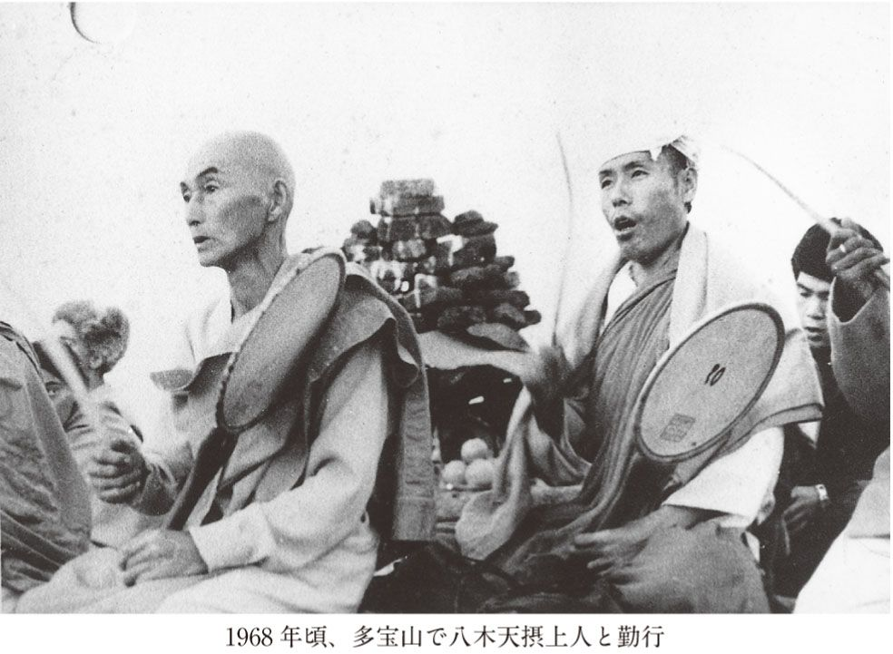

| 〈完全版〉破天～インド仏教徒の頂点に立つ日本人～ | |
| 山際 素男 | |
| (2008) | |
※本書は、二〇〇〇年、南風社より刊行された同タイトル（サブタイトル『一億の魂を摑んだ男』は改変）の作品（現在絶版）を再編集して新書化したものです。電子版刊行に際し、若干の加筆、修正、削除をおこない、また、写真を新たに加えました。 （編集部）
インドの首都ニューデリーの国会議事堂前に、大きな銅像が立っている。右手を高く上げ、左に書物を抱え、空をすっくと見上げている。
新生独立国インド憲法の起草者であり、初代法務大臣Ｂ・Ｒ・アンベードカルの像である。
彼は〝不可触民〟の子であった。
インドには古代から〝カースト制〟というものがあったことはよく知られている。日本語では四姓制度といわれる苛酷な身分制度である。
最上位がブラーミン（僧侶、司祭階層）、ついでクシャトリヤ（王族、戦士階層）、ヴァイシャ（商人、労働者階層）、シュードラ（上位三カーストに奉仕する奴隷労働者階層）と称する四つのカーストがそれだ。しかし、この四カーストに入ることを許されない不可触民階層が存在していた。
この人びとは文字通り家畜以下の〝生物〟として扱われ、人間的、社会的権利を全く認められず、上位カースト者は触れることも見ることすらも不浄とし、共同体社会から隔離され、水すら与えられなかった。
このような制度は三千年もの間つづけられ、不可触民は奴隷以下の存在としてあらゆる辛酸と差別を受けてきた。現在、元不可触民は指定カーストと呼ばれ、特定の社会的弱者保護の対象になっている。その数はインド人口の約二十五パーセント、二億人を超える。
この不可触民の解放に立ち上がり、不可触民制の打破を実現したのがアンベードカルである。一八九一年四月十四日に生まれ、一九五六年十二月六日、六十五歳の生涯を閉じた。
彼はアメリカのコロンビア大学に留学、経済学博士号を取得したのを皮切りにロンドン大学政治経済学院、グリーズイン法曹学院で弁護士の資格を取り、社会的活動を開始した。
彼の学識は多岐にわたり、後に法務大臣となり、新憲法草案者に選ばれたのは、彼をおいて他に適任者がいなかったからだといわれる。
『アンベードカルの生涯』の著者ダナンジャイ・キールはこう書いている。
「じつにアンベードカルの生涯は人間的権利の勝利のための戦いであった。総ての人が一致して認めるのは、彼が人間的尊厳と虐 げられた人びとの解放のために戦いつづけた戦士であったということだ。
この国、いや外国においてすら、アンベードカルほど波瀾に富み、刺激的でロマンチックな人間は稀であろう。牛糞にまみれた不可触民の子として生まれ、不治の業病のように忌み嫌われた少年時代を送り、床屋、宿屋、寄宿舎、寺院、役所といった社会的施設の総てから拒否され、飲水、食物も与えられない苛酷な人生を歩まされ、やがて世界的最高学府で学位を取りながら、その一歩一歩を徒手空拳、血と汗を流し、一つ一つ獲得してゆかねばならなかった。
有力な政党、新聞、ジャーナリズム、財力の一切を持たず、むしろそれらと事ごとに戦いながら、その実力によって法曹界、政界に地歩を築き、遂にインド憲法の父と崇 められるに到った。
アンベードカルは新聞も編集した。経済学、社会学、歴史、政治の分野に健筆を揮 い、膨大な著作を残した。幾つもの学校、大学を興し、労働組合運動のリーダーとなり、政党を創設と、その一つだけを取り上げても普通人の一生の仕事となるような事柄を次々と成し遂げていった」
「アンベードカルの名はインドの歴史に不滅なものとして残るであろう。彼は彼の属する社会の何 人 も望みえなかったことを達成し、彼らの代弁者として戦った。彼は現代の第一級の人物の一人であり、それも虐げられ抑圧された人びとの側に立つ解放者として......」
「〝もし私が、私がそこに生まれ育った階級が呻吟する、忌々しい奴隷制と非人間的不正を叩き潰すことができなかったら、頭に弾丸をぶち込んで死んでみせる〟といったアンベードカルの誓いは、自由インドの憲法に不可触民制の廃止を高々と謳い上げることによって果たされた」
また著者は別の所でいっている。「マハートマ・ガンディーを不可触民解放の父といっているが、これは正に歴史の捏造である。アンベードカルこそが不可触民の父なのだ」
ダナンジャイ・キールはブラーミン出の著名な伝記作家だが、彼の公正な目は出身カーストの壁によって少しも曇らされてはいない。
だが、アンベードカルの遺 したもう一つの、そして最大の遺産は、一九五六年十月十四日のヒンドゥ教から仏教への改宗であり、彼と共に改宗した約五十万人仏教徒である。そして畢 生 の名著である遺作『ブッダとそのダンマ』であろう。
しかしながら、彼は改宗の二カ月後急逝してしまい、改宗した数十万仏教徒は、闇夜の道に迷った子供のように取り残されてしまった。
だが五十数年を経た今日、インド仏教徒の数は最低でも五千万人。人によれば一億五千万人を超えるといわれるまでになっている。しかもその最先頭に立って奮闘しているのが、アーリヤ・ナーガルジュナ・佐々井秀嶺という帰化日本人僧なのだ。
佐々井秀嶺は一九三五年生まれ、七十四歳（二〇〇八年現在）。
四十年前タイ留学を終え、仏蹟巡礼をかねふらりとインドへ渡った。一年間釈迦が法華経を説いたといわれるビハール州ラージギルの霊 鷲 山 で、ある日本の仏教教団の寺院建立のために、岩山を砕く基礎掘工事を手伝った。いよいよ帰国という前夜、山頂で「我は竜樹なり。汝速かに南天竜宮城へ行け」という不思議な啓示を受けた。南天竜宮というのは南インドのナグプールらしいと知るや、帰国を断念し、翌日ナグプールへ向かった。ナグプール（竜の都）は奇 しくも一九五六年、アンベードカルが仏教に改宗した町であった。
アンベードカルのアの字も知らず、インドに仏教徒がいるのかどうかも分らぬまま飄 然 と訪れた秀嶺は、当然ながら己の無理解のため仏教徒と衝突し、石を投げられたりした。
そして約四十年後の今日、ナグプール百五十万仏教徒のみならず、インド全土にちらばる数千万仏教徒に広く知られ、アンベードカルの遺志を継ぐ大指導者として慕われ敬愛されている。女に悩み、〝人間失格者〟と自らに烙印を押してきた悩み尽きない彼の人生には、どんな荒波にもまれようと、消えることのない〝求道者〟の水脈がくっきりと刻まれている。
異国に生き、その地の何百万、何千万という民衆にかくも慕われ、その魂に溶け入った日本人がかつて存在しただろうか？ 数奇かつ波瀾万丈な彼の人生は、日本の民衆とインドの民衆が織りなす壮大なドラマである。
破天 インド仏教徒の頂点に立つ日本人§目 次
一九九八年五月十一日、ＢＪＰ（インド人民党）政府は突如、〝地下核実験成功〟を発表した。インド中はその報に喝采し、沸き立った。国民の九割はこの実験を支持していると新聞、テレビは報じていた。
だが、六月十日、デリーの目抜き通りを抜け、国会議事堂に向かって行進してゆく数千人のインド仏教徒の集団があった。先頭のトラックに立ち、辺りを睥 睨 しているのは、僧衣姿の東洋人らしき男である。
国会の目と鼻の先まで来たところで、数百人の武装警官の壁が立ちはだかり、行手を阻んだ。
トラックの四隅に取り付けられた特大の拡声器から彼の大 音 声 が響き渡った。
「おー、大馬鹿者のバジパイ首相よ、出て来い！ 汝らは仏陀誕生の日に地下核実験をやってのけた。汝ら亡国の輩 よ、汝らは仏陀とダンマ（理法）の国をその穢 れた足で踏みにじった。何という悪魔の仕業だ。仏陀はその愚かさを嗤 っているぞ。その声が聴こえぬか！」
その度外れな大音響に、四囲のビルの窓が一斉に開き、人びとが顔を覗かせた。
「おお首相よ、ここに現われ、仏陀の嗤いに答えてみよ。
私の生まれは日本である。そして、原爆体験をした唯一の民族、日本人の怒りの血が燃えたぎっている。
核戦争の悲惨さを思い知れ！ 苦しむのは常に無 辜 の民なのだ。国民を欺き、罪なき民を大量殺 戮 する武器を作ってそんなに嬉しいのか。
宗教を大切にしていると日頃吹 聴 している汝らは、その宗教の国インド、祖国インドを殺人者の国、悪魔の国に堕 しめてしまうだろう。そのようなことをする一握りの政治家と権力を許すことはできない。我々仏教徒は断じて許すことはできない。
私に腹が立ったら、この場で撃ち殺すがいい。何十万もの人間を一度に殺す気でいる汝に私一人を殺すことなどわけもないであろう。
さあ、殺すがいい。私は仏陀と共に嗤ってやろう。この大馬鹿者の恥知らずめがと」
凄まじい舌鋒に対し、野次も怒号も起らなかった。辺りは水を打ったように静まり返り、数百人の警官たちも身動きもせず聴き入っていた。制止の声も警笛も響かない。議事堂周辺は魔法にかかったように一切の物音、動きを停止してしまっていた。
三十分以上、彼の獅 子 吼 がつづいたその時、突如武装警官の壁が二つに大きく割れ、二台のジープが真っ直ぐに向かってきた。
「どうぞあちらの車にお乗り下さい。大統領官邸、国会議事堂にご案内いたします」ジープから降りた国会警備隊幹部は丁重にいった。
この僧こそが佐々井秀嶺であり、インド仏教復興の最先頭に立つ仏教徒の大指導者として、ラジヴ・ガンディー以後歴代大統領、首相たちで知らぬ者のない〝荒法師〟であった。
一 色情因縁の血
アーリヤ・ナーガルジュナ（聖・竜樹）・佐々井秀嶺。インド名、アーリヤ・ナーガルジュナは、暗殺された故ラジヴ・ガンディー首相が、インド市民権授与式の時、じきじき佐々井秀嶺に授けた名前である。
本名は、佐々井実。昭和十（一九三五）年八月三十日生まれ、岡山県新 見 市菅 生 村別所の産である。
新見市からバスで山間を行くこと約二時間、茶屋という所でバスを降り、別所川に沿ってさらに約一時間歩いた先が別所村。そこからもっと山に入った所に昔から七軒村と呼ばれる小さな集落がある。その中の一軒が秀嶺の実家であった。そこがどんづまりで、別所川の源流、牛仙の滝の頂上に登れば日本海が望見される。岡山と鳥取を分ける中国山脈の分水嶺の一角だ。
八幡山を背に寄りそうように固まっている集落の近くには、平家岳という数十メートルの屹立した絶壁があり、頂上近くの岸壁だけが妙に赤っぽい。平家の落 人 が殺された時に流れた血が染みついたのだという。鳥取側へ下る途中、横溝正史の有名な『八つ墓村』の小説のモデルになった村の近くを通った。日本海から入り込むじっとりと湿った空気に一年中閉じ込められているせいか、秋の陽光の下でも一帯の山々は鬱 然 と黒々とうずくまっていた。
「私には、暗い汚れた先祖の血が流れているのです」秀嶺の言葉がふと甦った。
平家伝説の豊富なその地方には、数奇な運命を辿った落人の物語とその子孫が連綿として生き永らえているのだろう。秋の収穫を終えたばかりの、別所村の小さな田圃に注ぐ日は眩しく、明るくのびやかであった。そこには瀬戸内の明光なもう一つの貌 が感じられた。陰陽が色濃く重なり合う自然と風土、人びとの営みの分水嶺。そんな中で佐々井秀嶺の生は育 まれた。
一九八二年秋、私は佐々井秀嶺師の生地をどうしても見たくなり、訪れた。その年に出した『不可触民の道』という本で、佐々井秀嶺師を紹介していたからでもある。
御母堂は健在で、娘さん、即ち秀嶺師の妹さんとも会うことができた。お二人とも素朴で大らかな方であった。母上はふっくらとした丸顔に穏やかな笑顔を絶やさなかったが、時折きらりと瞳を輝かせ、口元をきゅっと引き締めると、そこには芯の強い、矜 持 を持って生き抜いてきた女性のもう一つの顔を覗かせていた。
秀嶺師は、「大正四年生まれの母は、昭和の初め、まだ極 く若い頃京都に出、当時すでに大スターだった高田浩吉の下で三年間下働きのようなことをしていました。映画界のことに詳しく、その頃でいうハイカラ娘だったにちがいありません。こんな田舎の百姓と結婚なんかしたくないといっていたのに、父と一緒になったのは余程惚れたのでしょう。父と二人で、お互い自分の前に一升ビンを置き、『チョイと出ました三角野郎が』なんて八木節を手拍子をとりながら陽気に歌っていたのをよく覚えていますよ」といっていたが、生来進取の気性に富んだ、闊達で、陽の側の人なんだな、と感じた。
『不可触民の道』を出す前に秀嶺師に会った時には、「過去のことはあまり話したくありません」といわれ、昔のことは多くを語らなかったが、再び訪ねた際には、「すべてを包み隠さず話しましょう」といった。そして、「冒頭に、これを先 ず話さなくては先には進めません」と両親にまつわる因 縁 、特に父方のことから物語りはじめた。
「父は妾の子でした」のっけからいった。
佐々井秋夫の父、即ち秀嶺の祖父は、土井武右衛門といい、代々大前屋の屋号で呼ばれてきた、新見に近い高尾一帯で数百年にわたって栄えた大豪農、庄屋一族の末裔である。高尾の川が逆さに流れることがあっても、大前屋が潰れることはないと、昔からいい伝えられてきたほどの大尽であった。
しかし、その大前屋も祖父の代に危うくなった。すべてが女がらみの淫蕩のせいだと秀嶺は断じ、その血が自分にも流れていると〝信じて〟いる。「それは単なる思い込みでは」と私がいうと、黙って聴けと言下に遮った。男は皆ど助平なのだから――腹の中で呟きながら傾聴する他なかった。
武右衛門と関係のあった何人もの女の一人に、新見から鳥取寄りの上市という所の佐々井一族の女性がいた。その間に生まれたのが秋夫で、明治四十三年生まれだ。祖母は父を産むと間もなく死に、秋夫も小学校三、四年生頃捨子同然に見捨てられ、あちこちで子守、水汲み、畑の草むしり、牛追いなどをし、家無子の放浪の生活を送った。
十七、八歳の頃、別所に辿りつき、そこで田沢近右衛門という素 封 家 に拾われ、奉公人になった。秋夫は生来非常に器用なところがあり、頭も良かった。やがて左官業を身につけ、一人立ちができるようになった。
田沢の家の近くに川西吉左衛門という人物がおり、家は村長で、その娘が秀嶺の母澄子である。元来真面目で勤勉な秋夫に澄子が惚れ、二人は結婚した。
一方、土井家は、武右衛門が死に、後を継いだ長男は女狂いが高じて、ある夜家財道具を大八車に積み、いずことも知れず女と駆け落ちしてしまった。それが大前屋没落のはじまりである。
そのうち長男は結核で死に、跡取りのいなくなった土井家は空っぽになってしまった。長男の妹は思案の末、秋夫に土井家を継いでくれと頼み込んだ。
しかし秋夫は、今さら何を勝手なと、その申し出を一蹴し、大前屋の田畑を昔からの小作人や召使いに分け与えてやった。戦後の農地改革で残りも総て没収され、大前屋は完全に没落してしまった。そして、荒れ果てた先祖代々の広大な墓地と異様な姿形をした墓碑、墓石だけが残された。
母方の方は、土井家とちがい、筋の良い家系であった。川西家には昔から旅僧が出入りし、家には日蓮系の僧侶が度々訪ねて来、祖父母は草刈り、庭の掃除と体を動かす時にはいつも〝南無妙法蓮華経〟を唱えていた。
母方には東大を出、農林省の官吏になったり、有名大学出が沢山おり、田舎郷士一族としては、その辺りではいわゆる立身出世組であった。だが、男たちの多くは戦争に駆り立てられ、帰らぬ人となった。そのことも幼い実の心に痛恨の出来事として刻まれた。
秀嶺が小学生の頃、父母は目が回るほど忙しかった。戦争のため男手が足らず、父は小さな畑を幾つも預かり面倒を見ていた。牛馬の世話もせねばならず、農閑期には左官業に精を出し、炭焼きもやっていた。炭焼きはその辺りでは重要な副業であった。
母は農業に追われ、次々に生まれてくる弟、妹の子守は自然秀嶺の仕事になっていった。その合間には父の炭焼きを手伝い、ろくろく学校に行く暇もない程であったが、それでも学校の成績はいつも上位であったので、なんとか無事卒業できた。学校へは片道八キロあったが、それを通い通したのだから、体も頑健であったにちがいない。
炭焼きは十七、八歳の頃までやっていたし、田植え、牛馬の世話には今でも自信がある、と胸を張る。
敗戦を迎えたのは彼が小学校五年、十一歳の時である。
叔父たちが何人も戦死したことは秀嶺を深く悲しませたが、戦地から戻ってきた男たちの会話がまた彼の戦争への嫌悪感を助長させていた。中国でほしいままにした殺戮、放火、強姦といった類 の残忍な行為を自慢気に吹聴する大人たちに、秀嶺は強い反感と嫌悪の情を抱 いていた。人を傷つけ、悲しませることがそんなに楽しいことなのか？ 子供心に疑問を抱いた。
ルーズベルトやチャーチルの藁 人形を作り、皆で焼いてはやし立てていた時代だったから、人びとの心はどこか狂っていたのであろう。
秀嶺は悪さの点では他の子に引けは取らない悪 戯 坊主だったが、一つだけ他と異なった特徴がある。生来、非常に鋭敏で感受性が強い子供であったけれど、弱者への憐れみの情が人一倍強いのが大きな特質であった。
他 所 様の家のつるし柿、果実をかっぱらうなど率先してやる癖に、動物に対する虐待だけは我慢ならなかった。
放牧牛をこづき回し、生まれて間もない仔牛を執拗に追いかけ殴るなど、田舎の子供には日常茶飯事の〝遊び〟にすぎなかったが、それが彼にはできなかった。草むらで見つけた蛇をなぶり殺しにする、といった類の遊びには決して加わらなかった。そんな悪戯がはじまると顔をそむけ、耳をふさぐ思いでその場を走り去る、といった子供であったという。「どんな生物にも〝生命〟といったものを感じてしまうのです」秀嶺は述懐する。
敗戦を知った時、秀嶺は、「こんな戦争に負けてよかった。負けていいきみだ」という文句の貼紙を村の電柱や家々の塀に貼って歩いた。原爆のことを知り、余計に腹が立ってならなかったのである。
しかし、その貼紙は村中にショックを与えた。すぐさま犯人探しがはじまり、何人もの目撃者の証言でたちまちバレてしまった。たとえ子供でも許せない、と大人たちは息巻き、家に大勢押し掛けてきた。表に引きずり出され袋叩きにされかけたが、両親が土下座して謝り、なんとか事なきをえた。その頃からすでに彼の中には権力に対する反抗心がはっきりと芽生えていたのだろう。
中学へ上がった頃、三番目の弟が喉頭がんで死んだ。弟は他の家族とは似ず、丸々と肥 った〝でぶちん〟だったが、頭が抜群に良く、〝神童〟とさえいわれていた。
たまたま病院に見舞いにいった際、弟の死に目に会い、直ちに村に知らせに走った。途中、菅生峠の地蔵の前にきた時、突然悲しみがこみ上げ、大声を上げて泣いた。そして地蔵さんに手を合わせ、〝はるよし、お前の分までこれから俺がやったるぞ〟と誓った。
家に帰り、弟の死を告げると、またもや声を放って激しく泣いた。腸 を断つような慟 哭 はいつまでも止 まなかった。
「ところでですな、私は子供の時からやたら女が好きなんですよ。それがどうも普通ではないんですわ」いきなり秀嶺は告白した。
どう普通ではないのか。そいつは面白い。ぜひ聞かせてくれ、私は膝を乗り出す。
「小学生の時にもう〝女〟を知っていたんです」聞き捨てならない科白 である。
五年生頃から同級生の女の子と水の中や、物陰で性器を見せ合ったり、触ったりしていた、という。
「なんだ、そんなことなら私にだって覚えがありますよ。お医者さんごっこなんて、男なら大抵大なり小なり経験があるでしょう」私が笑うと、「いや、じつは本当にやったんです」と真顔でいう。
「誰でもやっている、というから、本当のことをいわんと、と思って思い切って喋るんです」心外なといわんばかりの口調である。
私は半信半疑であった。女を〝知る〟というのは本物の性行為をした時に用いる言葉ですよ。私は念を押す。
「やったんです、本当に」「へえ、本当に性器を女の子の中に入れてやったんですか？ そんなことできたんですか？」
「できたんです！」
私は笑い出した。秀嶺も少しばかり照れながら笑った。そのうち二人でゲラゲラ大声で笑い出し、止まらなくなった。
「そりゃまた凄いですね。一寸 したもんですな」
私は吹き出した。真似ごとはやっても、実際にやるとは。
「山の中へ連れていってやるんです」
「相手はどうなんです。厭 がらないんですか？」「一緒についてくるんですわ」また二人は大声で笑った。なんとも可 笑 しかった。
「やっぱり変ですか？ こういうのは」
格別変だとも、〝悪い〟ことだなどとも全く思わなかったが、相当助平な餓鬼ではある。でも不思議と厭味ったらしくはない。
「私がいかに凡愚の身であり、高僧、聖人みたいな書き方をしてもらっては困るから、隠さずいうんですよ」
なるほど、今でこそ聖人扱いされている高僧、宗祖などという人は、人一倍そういう衝動の強かった人たちではなかったのか。で、一生懸命修行した。まあ、そんなところのようである。何も隠したり、恥ずかしがることではないではないか。
それで？ と、私は身を乗り出す。
「それからは、もう激しくなる一方です。六年生の時女の先生に恋慕してしまったのです」
そんなことも、よくある話だ。自分にも経験がある。むっちりした先生の胸を触ってみたいとかいった衝動は、自然なものだ。
「それが尋常ではないんですわ」自分でいい、「どうも恥ずかしいですな、こんな話ばかり出てきて。しかし正直にありのままに話すと約束したんですから」また二人で笑ってしまう。
なんだか変に可笑しいのだ。坊主の懺悔話にしては生臭さが感じられない。でも本人は身をよじるようにして話しているのだが、聴いていると吹き出したくなる。
「先生から目が離れないのですよ。一日中後をついて回り、お尻ばっかり追っかけているんです。そのうちに先生に、『そんな変な目付きで私を見るんじゃないよ！』と叱りつけられても、どうしても離れられんのです」
夜もろくろく眠れなくなり、先生のことばかり想いつづける。そのうち、先生の方も根負けしたように、ぷりぷり怒るどころか、優しい言葉をかけてくれるようになってきた。後をついて歩いても何もいわなくなった。
ある日、実、そんなに先生のこと好きなんか？ と聞いてきた。うん、と大きくうなずく。先生は黙って山の茂みの方へ歩き出した。初夏の頃だったのだろう。先生の着ているのは薄い半袖のブラウスだった。木の根元に腰を下ろすと、先生は何もいわず目をつむった。じっとその顔を眺めていると、先生の手がつと伸びて、実の手をつかみ、自分の胸に誘った。震える指でブラウスのボタンを外しにかかった。怒りゃせんかな、途中で上眼遣いに顔を盗み見るが、知らん顔をしている。白い乳房がぽろりと剝 き出しになった。何もいわない。乳房に顔を押しつけ、乳首を吸った。後は無我夢中で乳房にしゃぶりつく。それでも何もいわない。
だんだん大胆になってきた。パンツに手をかけ、思いっきり尻の方へずらし、上にのしかかる。その途端、何すんの、アホ！ はっと我に返った先生はやにわに実を押しのけ、立ち上がった。弾みをくらって彼はもんどりうって転がり、傍らの木の根元にいやというほど頭をぶつけ、目から火が出た。やり過ぎたか。
でも、それからも先生とは何回かそんなデートをしたという。
「いや恐れ入りました」
「恥ずかしいですが、本当のことを話しているんです。何もかもぶちまけているんです」
秀嶺の〝ヰタ・セクスアリス〟はまだまだつづいた。
中学に入ると〝色 情 〟は益々高じる一方であった。下級生の女の子を想いつづけ、その子の行き帰りは必ず待ち伏せて、夜は妄想に耽 り、悶々とした。
「話さんでおこうと思っていたんですが、隠してはいかんと思ったので、話します」
だんだん苦しそうな顔になってくる。
耳の悪い親戚の女の子とも〝出来〟た。中学を出た辺りから、その娘は凄い美人に成長した。耳の聞えないのがとても不憫だった。
改めて〝関係〟が出来、今度は表沙汰になった。親父にこっぴどく叱られ、娘はどこか遠くの方へ預けられてしまった。やがて、俺はどうも皆とちがうのではないかと思いはじめた。他の男の子には彼のようにやたらに女を恋慕し、求めている様子がない。そういうことは隠していても素振りで見えてくる。
「なんでこう俺は女がすぐに好きになってしまうのだ？ 何かが憑 いているんじゃないのか？」
そんなことを独り思い悩みはじめた頃、都会から疎開でわんさと別所に押しかけていた親戚の叔母の一人から、父の出生の〝秘密〟を聞かされた。寝耳に水のショックであった。
武右衛門の隠し子、落とし子が沢山いて、それで親戚がやたらに多いということも分ってきた。その叔母の話では、土井家の墓はこの辺り一帯、新見ですら見られない大きな墓だという。無性に墓を見たくなった。そこに何か深い因 縁 のようなものが見つかるかもしれない。中学二年の頃である。
上市の佐々井家の墓を先ず訪れた。土地の人が親切に案内してくれた。祖母の家の墓地は荒れ放題に荒れ、倒れた墓石が幾つも転がっている。長い間訪れる者もなく打ち捨てられていたのだ。佐々井の姓の多いのにも驚いた。半分近くが佐々井の姓であった。
一緒に来てくれた叔母の息子と二人で墓掃除をし、村人の引き止めるのを振り切って、高尾の土井家の墓へ向かった。そこはもっとひどく荒れ果てていた。
父は一度も墓参りをしたことがない。幼い時の仕打ちが骨身にしみているのだ。そこでも村人が何人も姿を見せ、丁寧にもてなしてくれた。皆大前屋のことは覚えていた。
今は他人の物になっている大前屋の屋敷は、びっくりするほど大きく、立派な門構えであった。俺もこの家と深い係わりがあるのだ。外から眺めるだけだったが、子供心に複雑な思いがした。
村人が案内してくれた墓地は、確かに想像以上に広大な構えであった。墓地全体がまるで林になっている。木の間から、秀嶺の背丈よりも高い茅 、芒 に囲まれた途方もなく大きな石塔がにょっきりと頭を覗かせている。
「あんた、誰かね？ 大前屋の人かね？」村人は興味をそそられたとみえ、実と大前屋の関係を知りたがったが、遠縁の者だといい、言葉を濁した。
「凄い墓だなあ」と感嘆しながら眺めている実に、古老の一人が墓の由来を話しはじめた。大前屋というのはいろいろな因縁のある家だ、という。
「見なされ、あの鉄の輪で囲われた、変な形をした墓石を。あれは昔、首吊りをして死んだ大前屋の一人じゃ。この辺りでは、そういう死に方をした者の墓は、こんな風にして建てる習わしがあるのじゃよ。あっちの一風変った、北を向いている石塔は毒殺された人のだと聞いている。武右衛門さんの長男は、極道の末、どこかで死んだそうで、墓石すらない」
ひときわ目立つ苔むした武右衛門の巨大な〝塚〟には、姫松のような小ぶりな松がまつわりつき、何本もの雑木が生い茂っていた。
「武右衛門さんといい、長男といい、あの一族には余程の業というか、深い因縁がつきまとっていると昔からいい伝えられていた。先祖は恐らく平家の落人だったのじゃろう」
古老の物語に耳を傾けているうちに、実はなんとなく物悲しくなってきた。鬼 哭 啾 々 。先祖の呻 きが、どこからともなく吹き渡る松 籟 と共に流れてくるようだった。「えらい家に生まれたもんだ」実は沈鬱な心を抱いて土井家の墓を去った。
帰りのバスの中で、無性に悲しくなった。訪 う人もなく、打ち捨てられている祖父、祖母の墓の姿はあまりに無残だった。父にどんな仕打ちをしたにせよ、自分はあの人たちの血を受け継いでいる分身なのだ。浮かばれない魂のままでいるにちがいない。そう思うと涙がこみ上げてきた。
遠ざかる高尾の方を振り返り、実は手を合わせた。
「じっちゃん、ばっちゃん、後でぼくがきっと霊を慰めにきます。どうか待っていて下さい」必ずこの言葉は守ってみせるぞ、実は心に誓った。
それからというもの、しばらく墓のことが頭を離れなくなった。そして夜になると、奇妙な呻き声のようなものが耳元で聞え、うなされた。大体が神経過敏症なのである。古老の話が余程こたえたのであろう。
中学二年の冬、突然の病が襲いかかり、彼を打ちのめすことになる。
中国山脈の一角を占める山地だから冬は厳しく、積雪も多い。大雪の日、一人で炭焼き用の雑木を切りに裏山へ入った。腰近くまである雪の中でせっせと働いているうちに、突然意識を失ってしまったのである。疲労で体力を消耗してしまったのだろう。雪中でぶっ倒れ、そのまま動けなくなった。夕方になっても帰ってこない実を気遣い、探しにきた父は凍死寸前の実を発見し、すぐに家に運び込んだ。
十四、五軒しかない別所村には医者などいるわけがない。しかし幸い年寄りの元軍医がいて、肺炎を起していると診断した。その頃ペニシリンはすでに出回っており、町から取りよせて打った。
危機は脱したが、元軍医は、ペニシリンの正しい使用法を知らず、熱が下がると注射を止めてしまった。熱が下がっても、しばらくは打ちつづけなくてはならなかったのである。
四十度近い高熱が断続的に出て、一向に治まる気配がない。半年以上もそんな状態がつづき、新見の病院から診察にきた医師も首をひねるだけである。
肺炎は治っているのに原因不明の熱はどうしても取れなかった。不思議と食欲はあり、父は町から高価な牛肉を買ってきて毎日のように食べさせた。それでも体力、気力とも元通り回復しない。起き上がって少し歩いたりするとすぐ立ちくらみがし、へたり込む。
同級生が代わる代わる見舞いに来るが、いつ学校に戻れるかはかばかしい応答ができない。俺はこのまま廃人同様になってしまうのか？ 実は心底情けなかった。まだ十五だというのに、これも何かの祟 りなのだろうか？
あまりに治りが悪いのに、両親もひどく心配した。母は、裏山の氏神様である八幡神社に百日の願を掛けた。境内の林の中に、清冽な湧清水の泉があり、朝五時に出掛けて水 垢 離 をとった。
母は水垢離だけでは気がすまず、峠一つ越えた所に住む法印（山伏）さんを訪ねた。かねてから評判の高い修験者であった。法印さんは護 摩 を焚き、呪文を唱え、熱心に祈った。そしてこういった。
「あんたの裏山に八幡様の鎮守の森があるだろう。その近くに竹藪があり、その竹藪の中に石塔があるはずだ。その石塔は由緒ある平家の落人の墓だ。その墓をあんた方は今までほったらかしにし、世話も供養もしてこなかった。その怨霊が息子さんに憑いたのかもしれんな」
母は父たちと手分けして深い竹藪に分け入り石塔を探した。そしてようやく叢 に埋もれた塚を発見した。
早速、法印さんに報告にゆくと、供養するだけでは駄目だ。赤い目をした蛇の心臓を、実に食べさせろ。他の蛇では効目がないという。その辺りには、昔から色の浅黒い〝赤目〟の蛇が確かにいた。親戚や近所の子供を動員して〝赤目蛇〟狩りが連日行われた。
捕えてきた蛇を、父は器用に口からぴーっと裂き、心臓を取り出す。心臓は体から切り離されても三十分ほどはぴくぴく動いていて、蛇の執念深さを象徴しているようだった。実はそれを目をつむって一気にぐっと飲み込んだ。一日に一つか二つ、何カ月もつづけた。
赤目の蛇は平家の守り蛇だといって、村人は食べなかったが、蝮 はかば焼きにしたり、心臓を丸呑みにしたり、蝮酒を作ったりして飲用していた。父は持病の神経痛にいいと、赤目蛇以外の蛇なら手当たり次第に捕えて食べてもいた。
だから、実にとって蛇を食べる風習は少しも奇異ではなかったが、自分ですすんで食べる気にはなれなかった。だが、その時ばかりは病を治したい一心で、せっせと食べた。全部で三百個くらいは腹中にしただろう。そのお蔭かどうか、次第に熱が出なくなり、どうにか体を動かせるようになった。
それでも中学卒業間際までほとんど学校へは行かなかった。当分雨風に打たれたりしてはいけないと医者から強くいわれていたからでもあるが、分校までの山道の通学を押し通すだけの体力が出てこなかったのである。
あれほど体力に自信があったのに、何をやっても他人に負けるようになってしまった。腕相撲をやっても、駆けっこをしても勝てない。野良仕事、父の仕事を手伝ってもすぐ息が切れ長つづきしない。
悶々としている実を見て、母は仏にすがれといった。それで南無妙法蓮華経をいつも唱えるようになった。それが、仏教に対する自覚の端緒であったと秀嶺は述懐する。
二 東京へ
さて、病弱の身となった実は、中学卒業もおぼつかない憂悶の日々を送っていた。友人の何人かは農業高校や普通高校に進学していったが、進学への自信も持てなかった。同じように病弱で休学していた友人はもう一年留年して出直すという。そのどれもが今の自分には無理な気がした。
このままこの別所の山奥で埋もれてしまうのか、という想いは益々焦燥感をかき立て、前途への暗い不安に閉ざされていった。
母方の川西一族には東京の大学を出て、立派にやっているものが何人もいた。東京という文字が次第に彼の脳裏に焼き付き、夢を膨らませていった。東京にゆけばなんとかなるのではないか？ 夢のまた夢と思っていた淡い想いが、この閉塞状態から脱却する唯一の策として〝現実味〟を帯びてきた。
といっても、何か取っ掛かりがなくてはどこへ行っていいのかも分らない。周囲を見回すと、岡山県出身で名を成している代議士の名が浮かんできた。自民党の犬養健 、労農党の黒田寿 男 、社会党の江田三郎などの名は実もよく知っていた。この人たちに玄関番でもなんでもいいから書生として使ってもらえないか？
そう思い立つと、早速長い手紙を黒田と江田に送りつけた。自民党の犬養健は金持党議員だから、貧しい農民の小 倅 なんか見向きもしてくれまい。その点労働者の味方だといっている二人だったら、農民のつらさも分ってくれるかも知れない。
少年の一人合点にすぎず、全国のそんな少年から彼らの所には毎日のように同じような手紙が舞い込み、訪ねてきているだろうが、そこまで忖 度 している余裕も、考えも及ぶわけもなかった。行けばなんとかなる。なんとかしてみせる。生来人一倍強い負けじ魂が目標を見 出 してむらむらと燃え上がってきた。
大して期待もしていなかったのに、江田三郎から思いがけず返事が届いた。病気を完治し元気になってから二、三年後に上京してきたまえ。東京は想像以上に厳しい世界なのだ、などといった趣旨の忠言めいた文面の書状であった。つまりは断り状なのだが、実はしめたと思った。これをネタに父親を説得しようと思いたったのである。
東京に出て〝一旗〟上げたいという実の決心には、父母は反対であった。まだ年端もゆかぬ子供であり、しかも病弱の体で当てもなく東京なんか行ってどうなるというのだ。ここで養生して、高校へ行け。それからでも遅くはない。長男である実の身を案じる両親、周りの親戚もみな猛反対だった。当然といえば当然である。新見市にすら年に二、三回出るのが関の山で、岡山市にすら行ったことのない山猿がいきなり東京に飛び出すなど無謀の極みというわけだ。
だが、実はねばった。江田先生が一応来てみろといってきた、と噓をついた。手紙の封筒だけちらりと見せるだけで中身は隠し、まんまと父親を口説き落とすのに成功した。
悪いことをするわけではない。噓も方便というではないか。実社会に出て自分を鍛え直す。その目的で社会の荒波にもまれにゆくのだ。子供心にも悲痛な決心だった。しかし、実には生来の決断力と行動力が備わっていただけではなく、それなりの慎重さと計画性も持ち合わせていた。
父は学校をろくに出ていなかったが、向学心、向上心の強い人であった。実の読書欲を満たしてくれる寛容さもあり、東京、関西方面から雑誌、書籍など実は自由に取り寄せていた。
そういう出版物の中に、〝東京正生院〟という一種の精神鍛練所のような所が出している雑誌があった。維新の志士梅田雲 浜 の曾孫で梅田馨という人物が主宰しており、彼の著作も何冊か手にしていた。
実は小さい頃から人前に出ると急に上がってしまい、顔が赤くなり言葉がうまく出ない癖があった。学芸会などでは足が震え、壇上で立往生してしまうことがしばしばである。
俺は先ず心を鍛える必要がある、と秘かに思っていた。世に出るには精神を鍛え直すことからはじめよう。それには正生院のような所で修行するのが一番だ。そう腹を決めた。父親から貰った生活費の他に、晴れの門出にと方々から贈られた餞別を後生大事に腹に巻き故郷を後にした。いささか後ろめたい気もあったが、もはや後には引けぬ。男一匹やったるぞ。広沢虎造の清水次郎長伝の一節なんぞを口ずさみながらの道中であった。
昭和二十六年の初夏、十六歳の時である。
当時正生院は高田馬場に近い鶴巻町にあった。東京は復興の真っ最中で、活気に溢れていた。人びとの身なりはまだ質素であったが、田舎にはないスピード感と騒音の真っ只中にいきなり放り込まれた実は、もたもたしていられない思いに駆られた。
山手線の高田馬場からタクシーに乗る。「東京正生院」と告げると運転手はすぐ分った。ほう、けっこう有名なんだな。ほっとする。
入門は簡単だった。宿泊代、食費も何もかもで三千円くらいだったろうか。実にしては大金である。それでも躊躇することなく手続きをとった。院生は各地からやってきた男女百人くらい。女子もけっこういた。年齢はまちまちだったが、彼は年少組であった。
驚いた。なんと多種多様な悩みを皆が皆抱えているのだろう。吃音、赤面症、対人恐怖症、わけもない劣等感からくる神経衰弱、ノイローゼ、何回も自殺未遂をした青年、恋愛の悩みから家出同様に出奔してきた娘などなど。実など軽症である。
しかし、そんな半病人ばかりでなく、話術、演説の訓練を受け、政治の世界を目指す若者もいた。
修行も多岐にわたっていた。一日の課目は、坐禅、合気道を取り入れた気合術、話術、演説。特に人前でゆっくり明晰な言葉で大きな声で話す訓練が重視された。東京見物なんか考えている暇もなく、実も訓練の日課に追い回された。
しばらくすると、大勢の院生の前で自分の生い立ちを包み隠さず話させられた。それでお互いがどんな悩みを抱えているかがおおよそ分ってくる。
実も、女のこと以外、別所村のことから病気になるまでの生活を声を張り上げて喋った。皆真剣に聴いていた。いざ話し終えてみると、なんとなく気持ちが落ち着いた。誰もが似たりよったりの劣等感を抱え、一生懸命克服しようとしているのだから恥ずかしがる必要はなく、心強い。
道場や庭先に出、「精神一統何事かならざらん！」「なせばなる なさねばならぬ何事も ならぬは己のなさぬなりけり！」などといった言葉や格言を大声で唱える。いらいらした時には逆に「春の海 ひねもすのたり のたりかな」などと、ゆったりとした気分を悠揚迫らず、といった調子で声を大にして吐いてみる。
それもただ蛮声を張り上げればいいというものではない。気を静め、丹田に心を集中し、腹の底から発する声でなくてはならない。
師匠の梅田馨という人は気合術の達人であった。彼の発する気合は確かに実たちとは全く異なっていた。裂 帛 の気合の前に立つと、風圧に押されどんなに踏ん張ってもよろけ、無言の気合を入れた指先で額に一寸触れられただけでのけぞってしまう。腹に力を入れて事を行うことの重要さを彼はくり返して院生に説いた。
吉田松陰、梅田雲浜はじめ多くの志士が若くして身命を投げ打ち、国のためにいかに尽くし、散っていったか、いろいろな挿話を通して話す訓話も面白かったが、馨先生が最も大切なこととして説いたのは、学問、知識をため込むだけでなく、それによって培った思想をいかに実践するか、であった。実はその言葉に大いに共感を覚え、感銘を受けた。〝実践力〟の伴わない思想も理想も絵に描いた餅にすぎない。そんな思想では世の中を変えることはできないという言葉も心地よく彼の腹中に入った。
何カ月か経 つと、いよいよ街頭訓練がはじまった。これが本番だ。見ず知らずの他人、それもなるたけ沢山の群衆の前で、道場でやっていたのと同じことを実行するのである。
仲間の前でやるのとはわけがちがう。最初は実も足がすくむ思いだった。しかし、それを押してやらなければ今日までの努力は無に帰する。死んだ気でやれ。なせばなるだ。日頃いいきかせてきたことを知らない人の前でやるだけではないか。実の負けん気が彼を巷へ引っ張っていった。
駅前に立って叫んだ。「私は岡山県新見市という所から、東京にきたばかりの田舎者であります――」
一度声を出したら、後は無我夢中である。立ち止まって聞き耳を立てる者、にやにや笑って見物する者、知らん顔をして通り過ぎる者、人の反応は様々だったが、意に介さない。他人がどう思うかはどうでもいいのだ。人前で堂々と物を喋るのが目的なのであり、話の内容などどうでもよかった。
そのうち慣れてくると、電車の中、渋谷のハチ公の前、上野の西郷さんの銅像の前と、できるだけ人の大勢集っている所を選んでやるようになった。メガホン片手に子供っぽい黄色い声を張り上げている実を物珍しそうに取り巻く人びとの顔を見分け、反応を観察する余裕すら出てくる。
「西郷さんという人は鹿児島の生まれで、日本の生んだ偉大な人物であります」というところでは「そうだ！」という声と拍手が飛んできたりする。
毎日読む新聞の政治、社会面を取り上げ、時事論めいたことも喋った。実には世相を読み取る才能がその頃からあったのだろう。子供とは思えぬくらい上手く自分の意見として〝発表〟できた。
時には人足繁き大きな四つ角ではじめていると、お巡りが現われ、交通の邪魔になるから、人のいないところに行ってやれ、と怒られる。人がいないところでやったんでは意味がない。お巡りがいなくなるのを待ってまたはじめる。そんな生活をくり返す中で、女の子にも惚れた。愛知から出てきた、目の覚めるような十七、八歳の娘であった。「どこにいっても女ですわ」秀嶺は苦笑した。
半年があっという間に流れた。
いつまでも正生院にいるわけにはゆかない。最初のステップとして選んだだけであり、そこから世に出るチャンスを摑 まなければならない。それには先ず就職先を見つけ、生活費を稼がなくては。新聞広告、チラシ、貼紙広告など注意して見てみるが、中学を出たばかりの彼を雇ってくれるような会社は無かった。復興したての東京にはそんな余裕もまだ生まれていなかったのだ。
職探しを目的に上京してきた連中も足を棒にして探し回ったが、これといった収穫はなく、互いにその日の成果を話し合い、浮かぬ顔をしている。
ある日、「店員募集。年齢、学歴不問」という綿屋の広告が目に入った。ここなら雇ってもらえるかもしれぬと、早速訪ねてみた。小さな店だった。五十がらみの禿頭の、頑固そうな主人である。うさん臭そうに上から下まで実を眺め、どうしてうちへきたのだと聞く。東京に憧れて田舎から出てきたと正直に答えると、益々疑わし気な顔になる。「田舎から出てきたもんは変なのが多いからな」という。
実はかちんときた。田舎者を馬鹿にするのか。そこで出身地のことから話し出し、心身を鍛え一人前の人間になろうと思って東京正生院に入門したのだといい、そこでの生活を話した。それがよかったのか、では働いてみろ、とその場で雇ってくれた。住み込み食事付きで給料は三千円くらいであった。
親爺と高校出のまだ若い息子の二人で、綿の卸 をやっていた。毎日得意先に綿をリヤカーに山のように積んで届ける仕事だ。届け先は、大店のふとん屋、柔道や剣道衣の卸問屋などの店であった。
店は台東区の浅草に近い三筋町にあった。そこから十条とか、青山、三田辺りまで荷を運ばねばならない。けっこうな道 程 である。東京は意外と坂が多い。故郷の別所の坂道の方がまだましだと思うような急坂がいっぱいある。きつい仕事であった。非力な身にはこたえたが、足腰を鍛えるにはいい機会だと、歯を食いしばって引っ張った。
彼の後ろ姿など隠れて見えないほど積めるだけ積んだ荷だから、歩道なんか歩けない。車道を、それも真ん中を選んで歩く。その方が引っ張りやすいのだ。後からバス、自転車、オートバイ、市電などが追ってくるが、実は避けない。ブーブーと警笛が鳴り、「バカヤロー、端を歩け！」という罵声が飛んでくる。「くそ！ どくものか。俺が通るまで何時間でも待ってろ！」腹の中で毒づき、喧嘩腰で意地を通す。
リヤカーの車輪が市電のレールに挟まり、立ち往生する。宙吊りになって足をばたばたさせるがどうにもならない。お巡りが飛んできて、何をやっている。交通の邪魔だ。早くどけ、と怒鳴る。
「どきたくてもどけないんだ。怒鳴ってないで手伝え！」実がいい返すと、お巡りは後ろに回って押しはじめた。
道路の脇まで辿りついたところで、まだ若いな、どこから出てきたんだと尋ねる。そうか俺も四国の山国生まれなんだ。まあ、しっかりやれや、とかいって励ましてくれる気のいいのも中にはいた。
その頃の東京、特に本所、深川をはじめとする下町一帯は敗戦の年、昭和二十年三月十日の大空襲で徹底的に灰 燼 と帰し、庶民の多くは小さなバラック建てに住んでいた。
浅草の観音寺も跡形もなく焼滅したが、六区を中心に盛り場らしい顔を取り戻しはじめていた。ロック座、花月園、常盤座などの建物も復興し、劇場の前は長蛇の列である。
建ち並ぶ映画館、闇市、屋台はいつも人の群れで埋まっている。戦後すぐにヒットした並木路子の「リンゴの唄」、笠置シヅ子の「東京ブギウギ」の絶叫調の歌声は、大きな拡声器から人びとの頭上で舞っていた。つづいて彗星のごとく現われた美空ひばりの声が、街角、店内のどこからでも流れ出していた。実は荷車を引きながらそんな歌を口ずさみ、ポスターの前でふと足を止め歌手や女優の貌に見入り、憧れの女優香川京子のポスターの前では足が釘づけになる。
一方、青山、三田に足を伸ばすと、途中に青山学院大学、慶應義塾大学などといった有名大学の前を通ることがあった。冬の寒風の中でも流れる汗を腰手拭いで拭い、「へえ、これが青山学院大学か」「これがあの慶應大学か」と半ば畏敬の眼で見上げ、校門の中を覗き見る。
よいしょ、掛け声を掛け、再び小山のような荷を引きながら、「姿三四郎」の映画を頭に描く。講道館柔道の創始者嘉納治五郎の一番弟子、姿三四郎の苦闘、死闘人生を、小さい時叔父などに連れられて町の映画館で何度も観ていた。その中の、三四郎の人力車夫をやりながら苦学力行するシーンを思い出し、俺もやるぞ！ と心に叫ぶ。時には、リヤカーを引きつつ、「なせばなる ならぬは己のなさぬなりけり」と大音声を発し、道行く人を驚かせる。すっかり身についたこの言葉は、いつでも、どこでも大声で口にできるようになっていた。
「インドでも苦しい時にはこれを大きく口にし、自らを叱咤していた。今でも役に立っている」と秀嶺はこの頃を振り返る。
「形 はやくざにやつれていても 月よ見てくれ心の錦 生まれ変って天竜の水に 映す男の晴れ姿」と「勘太郎月夜唄」が口をついて出てくるが、いつの間にか浪曲調になってしまう。歌は大好きだが歌うのは上手くない。浪曲の調子が一番自分に合っている。しかしその節回しではうまく足が前には進まない。
「思わぬ拾いものをした」主人が家人にいった。陰日向なく真面目に働く実を主人は認め、気に入ったようである。彼自身、貧窮のうちに育ち、丁稚奉公から叩き上げた人間だから、奉公人を見る目は厳しい。その親爺が実に目を掛けてくれるようになった。風呂屋に行く時には必ず声を掛け、二人で連れ立って出掛ける。実はいつも親爺の背を流してやった。
「実よ、そのうちオートバイを買ってやるからな。そしたら大分楽になるでよ。人間、若い時に苦労せんとろくなもんになれん」口癖のようにいった。しかし実は「そんなものはいりません。体を鍛えるには自分で引いた方がいいんです」という。それがまた親爺を喜ばす。
昭和二十八年にテレビが出はじめた。庶民には高嶺の花であったが、駅前や喫茶店にテレビが置かれ、プロレスの力道山が人気を集めていた。大学生の初任給が月一万円そこそこなのに、十七インチのテレビが十五万円もした。力道山の番組がある日は、親爺は近所の顔馴 染 の喫茶店の主人に頼んで一番いい席を予約していた。予約制にしないと椅子に座っては観られなかったのだ。
そんな生活の中で、実の文学好きは変らなかった。特に好きだったのは太宰治、吉川英治、中里介山の小説である。太宰のものはほとんど読んでいたが、中でも心に長く留 まったのは『人間失格』だった。自虐的な自己否定。デカダンスに溺れる主人公の光明を求める必死の姿。それでいてなんともいえぬユーモアと明るさが漂う異質性もまた好きであった。
吉川英治の本も沢山読んだ。『天兵童子』『高山右近』『親鸞』『宮本武蔵』などは飽きずに何度も読んでいた。己にどこまでも正直に、自己矛盾、煩悩と闘いかつ誠実に受け入れ、その中から人間形成をしてゆく親鸞に親しみを覚えた。宮本武蔵の求道者的な姿も肯定できた。
中里介山の『大菩薩峠』は、あまりに長過ぎ、難解な部分もあったが、どこか彼を深く魅きつけて離さなかった。主人公机竜之助の無明暗黒の地獄の底を彷徨 い歩いてゆく姿は、なにかしら鬼気迫るものがある。
「大菩薩峠は江戸を西に距 る三十里、甲州裏街道が甲斐の国、東山梨郡萩原村に入って、その最も高く最も険しきところ、上下八里にまたがる難所がそれです。
標高六千四百尺、昔、貴き聖が、この嶺の頂きに立って、東に落つる水も清かれ、西に落つる水も清かれと祈って、菩薩の像を埋めておいた、それから東に落つる水は多摩川となり、西に落つる水は笛吹川となり、いずれも流れの末永く人を湿 し田を実らすと申し伝えられております」という冒頭の文句など、何かの拍子にふと口をついて出るほどに馴染んでいた。
夜八時頃になると、自転車に乗って隅田川べりにゆき、下手な歌を口ずさみ、読んだ本についてあれこれ考えに耽るのも日課のようになっていた。生来の内向癖がそんな時に一番濃くなる。
「俺はこの先どうなるのだ？ 一生綿屋で働くのか？」そんなことで終る自分とは決して思っていなかったが、先が少しも見えてこない。昔の仲間に負けるものか、とまなじりを決してみたところで、それからどうすると問えば答えは返ってこない。
灯影がキラキラと瞬 く黒い川面を眺めていると、不意に大勢の人間の泣き叫ぶ声がどこからともなく湧き上がり、押し寄せてくる。平家、先祖の怨霊がまた現われたのか。いやそうではない。三月十日の大空襲で死傷した十二万人の民衆の阿 鼻 叫 喚 なのだ。燃え狂う炎の波は川を越え帯になり、巻き上がる強風に煽られ天を焦がした。
それまで焼夷弾攻撃を経験したことのなかった東京市民は、防空壕に避難していれば安心という当局の指示を信じ、多くが焼死した。町全体が一瞬にして酸欠状態となり意識を失い、吹き込む紅蓮の炎と熱風に晒 され、うずくまった姿勢の人型を残し、灰と化してしまったのである。火事風は台風並の猛烈さで吹き荒れ、自重五十四トンのＢ29 でさえ数百メートルも吹き上げられたという。夜半からはじまった火事は、本所、深川、城東、浅草地区を総なめにし、向島、日本橋、下谷一帯を壊滅させ、東京三十五区のうち二十六区が延々と燃え上がり、翌朝八時過ぎやっと鎮まった。
防空壕は火葬場の焼却炉となり、道端には焼死体が無数に転がっていた。不思議にその焼死体の多くは、衣服はすっかり無くなり焦茶色のマネキン人形そっくりの姿になりながら、頭髪、陰毛だけが黒々としたまま残されていた。防水桶に漬かった屍 体 は上半身が黒焦げで、水に入った部分だけ、まるで生きている時のように目に染むように白かった。そのような屍体の中には、母親の股の間から体半分がはみ出し、房々とした髪毛を海草のように桶底に漂わせる赤ん坊の亡骸もあった。
数え切れないほどの焼死体は身元確認もできぬままに、鳶口をたたき込まれトラックの荷台にほうり上げられていった。辺りには、倍に膨れ上がった牛馬が四肢を空に突き上げ歯を剝き出していた。
綿屋の主人夫婦はその頃千葉の軍需工場で住み込みで働いており、子供たちは田舎に疎開させ無事だったが、実の周りには大空襲の生き残りの人が何人もいて、その時の体験談を時折彼にも話して聴かせた。
実の耳に聞えてくるのは、彼の座っている河べりで次々と死んでいった人びと、彼の住む浅草一円の犠牲者の上げる断末魔の叫びであった。
どうして人間はお互いにこんなにしてまで殺し合うのだろう？ 実は自問する。答えは返ってこないが、二度と起してはならないことだ。自分だけでも決して戦争に手を貸すまい。それにはどうしたらいいのだろう。少年にとってはあまりに大きな問題だったが、実はそのことを心に刻んだ。なんとしてでも答えを見つけよう。
昼間、上野、浅草、神田、御 徒 町 一帯には浮浪者の群がいつもうろついていた。浮浪児もまだいた。あの人たちは皆戦争のために家や親兄弟を失い、生活の場を奪われ巷にほうり出されたままなのだ。
その他にも、駅前、街角には、戦闘帽、軍服姿、あるいは白衣をまとった復員兵が点々とし、首に箱をぶら下げ通行人に物乞いをしていた。手風琴に合わせて歌い、直立不動のままいつまでも歌いつづけている。その多くは盲目、腕を失い、足を失った人たちだった。実も時にそっと箱に小銭を入れた。切なかった。
いろんなことが頭に浮かび、人間の悲惨さに心が押し潰されそうになる。ふと、賑やかな音楽と嬌声が流れてくるのに気づく。毎夜のことなのだが、物思いに耽っているとそんな物音も消えてしまうのだった。
我に返り、明るい灯と喧騒の立ち込める方へ自転車を引いてゆく。吉原がすぐ近くにあった。
「兄ちゃん、遊んでかない」突然声を掛けられ、どぎまぎする。実のびっくりした顔をまじまじと見つめた女は、「あれ、まだ子供ね。どう、女、抱いたことある？ 筆下ろししたげるよ」と近寄ってくる。一瞬その女と寝てみたいという衝動を覚えるが、すぐに逃げ出す。
さっきまでの深刻な思いは泡のように消え、底深い欲望が実の体の中で蠢 いた。俺は偽善者だ。なんて薄汚い偽善者なんだ、この俺は。一寸目の前に女が現われ声を掛けられただけで、なにもかも忘れてしまう。そんな男なんだ。またしても自嘲する。
そんな頃、すぐ近所にある紙問屋で働く男の一人と仲良くなった。紙は活字文化の復活で幾らあっても足りない時代であり、店の景気も良かった。綿屋の方も、やっと柔道が占領軍によって解禁されたりして需要は大きく膨らんでいたが、紙の需要は規模が違った。オートバイ、ダットサンの軽トラックを何台も持っていた。
Ｎというその男は実より二つ年上だったが、世間のことには遥かによく通じていた。殊 に遊びならなんでもこいであった。中学を出ると上京してきた九州の炭鉱夫の息子だった。家のことは話したがらず実も詳しくは尋ねなかった。それでもその男とはどことなく気が合い、休みの日には彼の運転するサイドカーに乗り盛り場に繰り出した。
朝から暗くなるまで六区の映画館のはしごをした。腹が減ると屋台の焼そば、うどんを食べ、おたふく餅を買い込んでまた映画館に入る。映画なら何でもよかった。どちらかといえば文芸物の方が好きだったが、Ｎはチャンバラ、活劇物が大好きだった。
「羅生門」、「細雪」、ヴィットリオ・デ・シーカの「自転車泥棒」「靴みがき」、「情婦マノン」、ロッセリーニの「無防備都市」、ジャン・ギャバンの「霧の波止場」、阪東妻三郎の「大江戸五人男」、京マチ子の「偽れる盛装」。この時、京マチ子の姿態の美しさに圧倒され、女体の素晴しさにつくづく感嘆したのを憶えている。三船敏郎の「馬喰一代」、チャップリンの「殺人狂時代」、「真昼の決闘」、「誰がために鐘は鳴る」、「ひめゆりの塔」で津島恵子、香川京子に惚れた。「雲流るる果てに」の特攻隊員の姿に辺りもはばからず実は嗚 咽 した。戦死した叔父たちのことが思い出されたのだ。「禁じられた遊び」にも深い感動を受けた。とにかく、古いのも新しいのも手当り次第に観まくった。それはまた実の感性を養う大切な〝教養〟の場、学校でもあった。
日劇ミュージックホールまで足を伸ばし、人気絶頂のストリップの女王ジプシー・ローズやヒロセ元美、メリー松原、伊吹マリ、奈良あけみ、パール浜田などの名と顔を覚えることになる。
Ｎの口癖は、「人間生まれたからには楽しまにゃ損よ」であった。言葉通り彼は実行していた。そして、実もいつしか彼の人生観を己にも当てはめようとしていた。
寄席にもよく足を運んだ。木馬亭では広沢虎造、玉川勝太郎、天中軒雲月、木村若衛、といった超一流が生で聴けるのがなんとも嬉しかった。
Ｎに誘われてカストリバーにゆき、酒の味も覚えた。自分でもけっこういけるのを発見し、一寸自信めいたものを感じた。
乾いた砂地に水が浸 み入るように世の快楽事、娯 しみを実の体は貪 婪 に吸っていったが、やがて〝女の味〟も知るようになる。なにしろ浅草、吉原は目と鼻の先である。
「おい実よ、一度吉原で遊ぼうや」Ｎはある日実を誘惑した。ここまでくれば断わることもない。実はあっさり応じる。〝女を知っている〟つもりだったが、小学校の体験など〝知っている〟うちには入らないのを思い知らされていた。
特別な囲いがあるわけではなかったが、その一角だけは明らかに他の盛り場とは、家の造りも家並も異なっていた。小さな小屋みたいな家々の窓は紅 殻 格 子 になっていて、中に女が座って客を待っている。飲み屋の二階やカウンターの後が寝床になっているのもあり、様々である。
Ｎの顔馴 染 の店で一杯飲んでから相手の女の部屋に招じ入れられた。丸顔の女だった。暑い頃だったのだろう、浴衣着に赤い腰帯だけを締めていた。
酒を運んでくると、女は卓 袱 台 を挟んで座った。
「あんた幾つ？」といきなり尋ねる。
「二十 」
「噓！ あたしが当ててやろうか？」女は笑いながら実の顔をじっと見る。
「まあ、十七になったばかり、といったとこかな？ 当ったでしょう」
実は顔を少し赤らめ、正直にうなずいた。
「女は初めて？」また聞く。
実は黙っていた。小学校の時から知っている、といってやりたかったが、どうせ笑い飛ばされるにちがいないと思った。
「初めてなのね？ 嬉しいわ」女は急に真面目な顔になり、本当に嬉しそうににっこりする。
そうだ、正直いって、やはり俺はまだ初めてなんだ。実と女は黙って酒をつぎ合う。女はＮと同じ九州だった。兄弟姉妹が沢山いた。それ以上多くは語らない。実は問われるままに少年時代のことを話した。まだ短い人生だが、話すことはいっぱいある。しかしみな胸の中に仕舞い込み、打ち明ける相手ではない、という思いだけが通じ合った。
二人は飲んだ。今夜は暇だからゆっくりしてゆきなさいよ。女は真顔でいう。実の正直さは女の気持ちを寛 がせ、緊張しているのは彼の方であった。俺は何をしにきたんだろう？ 急にそんな思いが浮かんだ時、「ねえ、あんた、何が一番好き？」と女が尋ねる。実は一寸思案し、「浪曲」といってしまった。女は笑わなかった。「私も好きよ。親爺がよく唸っていたわ」遠くを覗くような眼になった。「浪曲やれるの？」「うん」実は自信あり気にうなずく。「本当？ やってみてよ」まんざらお世辞だけではなさそうである。
誰にでも受けそうなものを頭に思い描く。清水次郎長の森の石松がいい。居住まいを正し、咳払いを一つする。虎造の清水次郎長伝はほとんど全部諳 んじている。「石松三十石船道中」を演 ってやろう。
「酒を呑むなと睨んで叱る、次郎長親分怖い人。怖いその人また懐かしい――。駿河の国が安部郡清水港に住む山本長五郎通称清水の次郎長、これが海道一の親分よ」
ときて、一の子分大政、小政、大瀬半五郎、法印大五郎、追分三五郎とくるが、いつまでたっても自分の名が出てこない。いや忘れてた森の石松という一番強いのがいたのを。そこで飲みねえ寿司食いねえという、滅法楽しい、有名な話である。
うまいじゃない。女はそういって聴き入った。小さい頃からラジオの前に齧 りつき、小学校の頃には大人の前で披露し誉められていた。綿屋の主人にも聴かせたこともある。浪曲にだけは一寸自信があると心密かに思っていた。
やっているうちにだんだん石松に自分が乗り憑 ってゆく。時の経つのも忘れて唸っていると、女が冷えたコップの酒を実に手渡し、「そろそろ、遊ぶ？」と声を掛けた。腰を折られ、実は一瞬ぽかんとしたが、本来の目的を思い出した。浪曲をうなりにきたわけじゃなかったのだ。うん、といい、冷えた酒を一息にごくりと喉に送り込んだ。
空が白む頃まで実は女にしがみつき、女も商売抜きとも思える熱を込めて応じてくれた、と実は満足気に感じた。四度目に果てたらさすがに再度挑む気が一時なえた。女は戸口に立って、また来てね、といった。うん、また来るよ。本当に来るつもりであった。
早朝の町は人影もまばらであったが、女の送り出す声、そそくさと去る男の姿がちらほらしている。なんとなく白々とした空気が朝 靄 の中に立ち込めていた。眠そうなＮの顔が現われるとほっとした。
やがて、一年あまりの時が流れた。仕事は真面目にこなし、足腰も見違えるようにしっかりとしてきた。
花江という例の女の所にも一人で通うようになっていた。他の女を抱きたいと思わないわけではなかったが、花江を裏切るような気がした。あっちは何十人と相手にしてるんだ。何も実だけが相手じゃないんだぜ。こっちが操を立てる義理はないってことよ。Ｎは笑った。理屈はそうでも、実はそんな気になれなかった。
昭和二十五年にはじまった朝鮮戦争のお蔭で、日本は軍需景気で潤っていた。左翼の学生運動、労働運動も活発化し、二十七年には宮城前広場で警察と衝突して死者が出、血のメーデーと呼ばれる事件も起きていた。
しかし組織社会からはみ出た、実たちのような奉公人、つまり〝未組織労働者〟にはどこか縁の遠い運動のように思えた。それでも給料は徐々に上がっていった。酒場でのやりとりの中で、最低賃金制を勝ち取ったから未組織労働者の賃金にもはね返ってくるのだ、という言葉を耳にし、そうか、そんなものか、と思ったりする。
だが店の親爺は左翼、労働運動は大嫌いだった。彼らは全然別の人種だと頭から決め込んでいるようだった。
ある日、ふとした拍子に実のジャンパーのポケットからマッチの箱がこぼれ落ちた。運悪く主人の目の前に落ち、親爺が拾い、何気なく派手なラベルに目をやった。一目で〝商売〟が分るような図柄である。途端に目の色が変った。「なんだ、これは？ こんなところへ遊びに行っているのか？」
親爺は声を荒 げた。いや、たまたま友達にもらったのがポケットに入っていたのだ。実はとっさに白を切った。「お前、タバコを吸わないのに、どうしてマッチが要るんだ」親爺の追及は鋭く、厳しかった。正直に白状するしか仕方がない。実は素直に認めた。しかし、それで水に流してもらえると思ったのが甘かった。
「そんな男とは思ってもいなかった。俺に噓をついて、女を買いに行っていたのか。ゆくゆくは店ののれんを分けてやろうと思っていたのに、とんだ見込み違いだった」
親爺はすっかり実に裏切られたと思ってしまったのだ。そんな奴に用はない。とっとと出て行け、と取りつく島もない剣幕である。
何度謝っても駄目である。奥さんまで出てきて取りなしてくれたが、逆に主人は興奮するばかりだ。隅田川の散策も総て岡場所通いと決め込み、とんでもない偽善者扱いをされてしまった。
最初は思いもかけぬ成り行きに当惑し切っていたが、相手のあまりの頑固さに厭気がさしてきた。主人の彼への思い入れ、というか思い込みは有難いと思ったが、二人の世界の隔たりの大きさにその時やっと気づいた。
こんな頑迷な男の下でいつまでも仕 える気などさらさらない自分が、はっきり見えてきた。一生を綿屋で終る自分ではない。ここいらが潮時だ。実は腹を決めた。
決心するのも早いが、諦めるのも早い。感謝の気持ちは忘れないが、店を出る気になった。そう決心すると、何かさばさばする思いだった。体力にも自信が戻ってきた。もう一度郷里に帰って出直そう。
Ｎにはそれとなく事情を話して別れを告げた。最後に、花江に会おうかどうか思案した。昼間彼女を訪ね、郷里に帰ると告げた。一寸びっくりした顔をしたが、「そう、仕方ないんね」と呟き、淋しそうにうつむいた。
彼女はきっと何度となくこんな別れを繰り返しているのだろう。慣れていることかもしれないが、心のどこかで淋しさを耐えている顔だ。悲しくなった。
「東京にきたら、きっと来るよ」花江は黙って笑いながら、元気でね、と手を振った。余計なことをいってしまったな。
駄目な男だ。自嘲が頭をもたげ、会いに来たことが悔やまれた。
一 初恋の人
足掛け三年、まる二年の歳月が流れた。東京というとてつもなく大きな胃袋の中でもまれてきた効果がどこまであるのか験 してみる番だ。自負とまではゆかないが、来た時より体も心も一段と鍛えられ、力強くなったような気がしていた。十八歳の若者になっていた。
見違えるように日焼けし逞 しくなった実を見、それだけで両親は喜んでくれた。仕送りもねだらず、とにかくよく頑張った。そういって誉める親心の温かさがぐっとくる。
翌日には父親について山に入り、木を切ったり、薪割り、田畑に出て野良仕事を手伝ったりと忙しく立ち働いた。しかしひと月近く経つと、心の中に空 しさめいたものがもやもやと立ち込めてきた。二年間の東京生活が彼の中の何かを変えたのだ。それを感じるが、次にどうすればいいのか一向に見えてこない。
朝のうちは仕事に打ち込むが、午後になると山に登り、ぼんやりと下界を眺め、時には炭焼き小屋でひっくり返って半日物思いに沈むという日が多くなった。
故郷の山野は変らない。重 畳 たる山脈の下で営む人びとの生活と、東京の目まぐるしい、刻々と変化する生活の違いは恐ろしいほどだ。田を耕し、炭を焼き、十年一日のごとき生活をして俺は終るのか。
高校に入った同級生たちの中には、大学進学を目指しているのもいる。気持ちに焦りが出てくる。学校に行くばかりが能ではない、と自らにいいきかせたかったが、ではどうする、ともいえないのがもどかしかった。父はそんな実を横眼に、何を考え込んでいるのだと不満気な目になってくる。
山から山へ、道無き道をわざと選んで闇雲に歩き回ったりして憂さを晴らすが、思いはまた同じところに帰ってくる。
朝の食卓にはいつものように季節の山菜が幾種も並んでいた。裏山には山菜が豊富に生えている。薬草になる草、灌木も沢山自生していた。
「そんなに山歩きしとるんなら、帰りには山菜や薬草でも採ってこんね」母と妹が笑った。その言葉に閃くものがあった。薬草で商売してみよう。今でも田舎の人は薬草を日常的に利用している。
病気になった後、実は薬に興味を持ち、民間療法を少し勉強したことがある。その折、奈良に〝薬草栽培〟という協会があるのを知り、通信会員に応募した。山で簡単に採れるはぶ草を送り、代わりにこちらの注文した漢方薬と交換してもらっていた。こいつは商売になるかもしれない。
実は父にそのアイデアを話した。そしてこのまま百姓で終りたくない、とその時はっきり自分の気持ちを告げた。東京で商いのコツを多少身につけたから、その経験を生かしたいのだ、と白状した。
意外に父は乗り気になってくれた。父自身商売っ気があった。息子にやらしてやろうという気持ちが働いたのであろう。すでに実のために山も少しばかり買ってあった。その山で薬草を栽培するのもよかろうといい、資金も出そうといってくれた。
ようやく目標を見出した実は、次々にアイデアを紡ぎ出した。物資の乏しい時代だったから、炭、肥料も流通経路を見つければ田舎から都市、都市から田舎へと交換できる物は幾らでもあるはずである。つまりバーター制である。よし、やってみろ。父も本気で応援しはじめた。
奈良にある〝帝国薬草〟という薬草問屋と渡りをつけ、薬草を買い取ってもらうことに成功した。親戚や知り合い、子供たちまで動員して、おおばこ、げんのしょうこ、はぶ草などなんでも大量に採れるものを集めてもらい買い取る話も成功した。
別所の山奥では商売にならん、新見市に出ろと父はいい、町の目抜き通りに家を一軒借り、改造して事務所に作り変えた。材木は父が切り出し、家は親戚の大工が引き受けてくれた。
オート三輪を雇い、町の肥料問屋から肥料を買い、新見、菅生、近隣一帯の農家に持って行き、帰りは炭俵、薪などを山と積んで燃料店に卸す。物資と交通手段の乏しいこの時代、こんな一種の物々交換的商売が一時繁盛したのである。
東京帰りの〝実〟が何か面白いことをはじめて、うまくやっている、という評判はたちまち狭い土地に広がった。別所でも父は鼻が高く、彼を見直してくれたようである。
商売は予想以上に順調にいった。正生院、綿屋での経験が役に立っていると、実は夢中で働いた。
事務所の前の長崎チャンポン屋に下宿し、そこで寝泊まりした。チャンポン屋の主人と息子は山へ入って炭焼きなどの仕事をしていて滅多に町へ帰ってこない。店のおばちゃんは実を殊 の外 可愛がってくれた。根が真っ直ぐで、勤勉な実は大抵どこでも大人に気に入られる。周囲も若いのによくやると、関心を持って見守った。昔の仲間も顔を出し、時々食事や飲みに誘い、いっぱしの旗頭扱いされるようになった。
一年あまりが経った。配達、得意先回り、帳簿付けと、忙しい毎日である。信用もついた。佐々井商店という名から〝産業開発隊〟と店の看板を変えた。世のため人のため率先してやっている、という心意気を表したかったのだ。
東京へ出る前は、痩せぎすの感じが漂う実だったが、商売をはじめるようになってから別人のように変った。小さい頃の色白の、下膨れの童顔はすっかり影を潜め、父親似の面 長 になった。
身長は一メートル六十五センチくらいだったろう。漆黒の帽子をかぶったような剛毛の頭髪に覆われた顔は、端正できりっとしていた。太い眉は鋭角に反り上がり、切れ長の大きな目、鼻筋の通ったやや小ぶりの形のいい鼻。横一文字に結んだ大きな口の下唇はふっくらとして色気を漂わせている。耳は父親似で大きく、何事も聞き洩らすまいと羽根を広げているようだ。こめかみから頰にかけて真っ直ぐ延びた線はがっしりとした顎 で支えられ、柔らかな丸みのある曲線でまとめられている。左側の眉の方が際立って太く、鋭く反り上がり、左目も一まわり大きいのが特徴であった。
「おお、実さん、ええ男前になったなあ」昔の彼を知る大人は、男も女も口を揃え、目を見張った。確かに、人の目を魅くほどのいい男になっていたのである。特に若い女性は、はっとしたような顔付で横眼遣いで彼の姿を追い、逆にどきりとした風に眼を逸 らせるか、どちらにしても全く無関心で通り過ぎてしまう者は少なかった。
そんな周囲の目を意識しないわけではなかったが、仕事に熱中している実にはさしたる関心事には思えず、女にもてる、もてないで騒ぎ回り、「実はええなあ、東京でも大勢女にもてたろが？」と羨 ましがる仲間を笑ってやり過した。
ところがある時、チャンポン屋に、二人の女子高生が引っ越してきた。二人とも新見高校の二年生であった。実とは廊下を隔てた向かいの部屋だから、朝晩、いやでも顔を合わすことになる。一人は小柄で浅黒い健康そうな、はきはきした娘だった。顔を合わせれば、きちんとあいさつを交わし、立ち話にも気軽に応じた。だがもう一人の方は、実を見ると、ぎくっとした風に体を固くし、顔を背けるようにしてそそくさと離れてゆく。実がおはようとか声を掛けても、ただ会釈するだけで逃げるようにいってしまう。
当然実は面白くなかった。愛想の悪い方は、大柄で、すらりとしていたが、胸は豊かで腰から下にえもいわれぬ色気がある。青白いといってもいい顔色で目鼻立ちはくっきりとし、大きな目は潤んだようにいつも艶やかだったが、どこか愁いを湛えていた。
彼女は武藤豊子といった。
実は最初から豊子に魅かれていた。沈んだような愁いがちの目が心に残った。
ある日、学校から帰る彼女を道で待ち伏せし、偶然を装って声を掛けた。返事も返さず通り過ぎようとする後ろ姿に、「君、なんで黙っていっちまうんだい。あいさつくらいしたっていいじゃないか。俺がそんなに恐 いのかい？」わざと不良っぽく東京弁で迫った。
「いいえ、恐いことなんかありません」「じゃどうして？」といった具合にきっかけをつかみ、道々話しながら帰った。
東京に出て、苦労しながら働き、新見で商売をはじめた、若いがなかなかの遣手だという噂がどこか近づき難かったのだ、と豊子は白状したが、本当は実の顔を見ると胸がどきどきし、口がまともに開かなかったのである。豊子も実の存在を強く意識していたのだ。
こいつ俺に気があるな、と実は勝手に自 惚 れた。二人は交替でおばちゃんの手伝いをしていたから、豊子が働いている時には意識的に店で食事をし、彼女に注文した。話す機会が増えるにつれ、だんだん図々しくなってくる。「たまには俺の部屋を掃除して、花でも活けといてくれないかい」などいい出した。豊子は素直に応じた。
そのうち、彼女のところに医者が時々訪ねてくるのに気づいた。理由をきくと、中学生の頃肺門リンパ腺を患い、今も医者にかかっているという。家は新見を挟んで北の別所と丁度反対側の南にある哲西町という所にあった。ひどい山奥で高校に通いきれず、新見に下宿することにした。病弱の身であることが悲しい、という。その淋しげな目に実の心は一気に吸い寄せられた。自分もかつてそうであった。お互い同じ悩みを抱えているんだ。その思いが二人の間を急速に近づけた。
夜、二人で話し合っているうちに、実は思い切って彼女を抱き寄せた。唇を重ねると彼女も実も歯ががちがち鳴り、全身がおこりにでもかかったように激しく小刻みに震えた。二人は震えながら固く抱き合いいつまでも離れなかった。
実の中で何かが弾け、一変した。彼女を仕合せにしてやりたい。それが俺のなすべき唯一の道だ。いったん思い込んでしまったらもういけない。寝ても覚めても彼女のことしか頭に無くなってしまった。後は一 瀉 千 里 である。彼女も高校生とは思えぬ激しさで大胆に応じ、互いに体を求め、貪り合う。愁いを含んだ伏目がちの目は、いつしかきらきらと輝き、挑むような笑みがいつも彼を待っていた。
実にとっても、もちろん豊子にとってもそれは文字通りの初恋であった。生まれて初めて味わう恋の激震に酔った。実は仕事に手もつかず、呆 けたように彼女のことばかり想った。当然、配達、得意先回りも疎 かになってきた。何をするのも面倒になる。彼女のために、彼女のために。そればかり想う自分に酔い痴れる。しかし現実は確実に逆回りしはじめているのだが、実の念頭からそんなことは消し飛んでいた。
掛け売りの代金回収や品物の納入などが遅延しだした。いったん回転が狂い出すとその穴埋めに追われはじめる。肥料問屋、燃料問屋の主人から代金の催促が重なり、そのうち滞った代金を払わなければ取引を打ち切ると厳しく叱責された。先方は実の先行きを心配しての親心できつくいったつもりだったのだが、実にはこたえた。
「実さん、あんたを見損なったわ。商売は信用が第一なんやぜ」この一言で、何かがぷつんと切れたように思った。控えていた酒――この地方ではもっぱらどぶろくだったが――をぐいと飲み干し、べろべろになる。豊子の小さな胸は痛んだ。「私のせいでこんなになってしまったのか」と実を泣いて諫 める。
俺は悲劇の主人公。『人間失格』を地でゆく男。そんなお気に入りの自画像に逆にのめり込む。罪悪感に苦しみ悶え抜き、それでも人のために生きる人間たらんとする『人間失格』の大庭葉蔵と自分がオーバーラップし、罪の意識が亡霊のごとく彼の体内から抜け出し、独り歩きしはじめる。
俺は他人の信頼を裏切り、金を使い込んだ。死ぬほど愛している女のために何一つしてやれず、飲んだくれている〝大罪人〟。誰もそんなことをいって実を責めてもいないのに、彼の耳はその言葉で割れんばかりである。
このままでは豊子と心中しかねない。もしそんなことになったら彼女を不幸にするだけだ。しかし彼女のことを忘れられない。ああ豊子よ、俺はどうしたらいいんだ。
「別離」と題する長い手紙を書き、彼女に手渡した。それを読んで豊子がその夜まんじりともせずに泣き明かしているのを彼は知っていた。両親宛に「自首して出る実の告白文」という原稿用紙百五十枚もの手紙を〝遺書〟のつもりで書き上げ、人に託した。
完全に〝悪党〟になっていた。俺はもう駄目だ。人生の敗残者だ。この上は警察に自首して罪をあがなおう。酔っぱらってふらふらしながら、夜、本気で警察へ向かった。本署の前まで来ると、いかめしい冷えたコンクリートの建物、皓 々 とした明かりの奥で立ち働く制服姿の警官たちの姿を見ると急に怖 気 づき足が竦 む。
交番に行こう。あそこならこぢんまりしていて入り易いだろう。何カ所目かの派出所で、意を決し、中を覗いた。お巡りが机に向かって何か書き込んでいる。
「自首してきました！」いきなり実は叫ぶ。巡査は驚いて顔を上げた。
「なんや、実くんとちがうか？ どうした、こんな夜遅く」顔見知りの警官だった。
拍子抜けしたが、こうなれば破れかぶれである。
「えらい酔っぱらっとるやないか。何かあったんか？」
「素面 では来れんから、酔っぱらって来たんや。ぼくを逮捕して留置所に入れて下さい」急に嘆願調になる。
「だから、何をしたんやって聞いとるんやないか？」
「使い込みです。大金を盗んだも同様です。ぼくは大罪人なんです」実はなんとか罪を認めてもらおうと躍起だ。
「そんなことをいってもなあ、実くんよ、逮捕っちゅうのは、現行犯か裁判所の逮捕状の出とるもんしか執行できんのや」
「だからぼくは自首して来ているんや。自分の罪を自白しに来たんですから、この場で逮捕して下さい」お巡りは苦笑した。
「分った、分った。明日また」
実はなおも執拗に食い下がったが、それ以上お巡りは相手にせず、帰ってくれと最後は声を荒げて追い払った。
人気の絶えた通りをよろよろと歩いているうちに突然道路にひっくり返り、大の字に寝転び、「オレを逮捕しろ！ オレは罪人だ！」と大声で叫ぶ。晩秋の夜空の、降るような満天の星が彼を見下ろしているばかり。誰も現われず、声を掛けるものとて無い。ああ俺はなんて孤独な男だ。やけになって叫ぶが、返ってくるのは犬の吠声くらいのものだ。
警察にも見捨てられたこの上は、逃亡するしかない。ひょいとそんな考えが閃く。両親、彼女、債権者たちが彼を探し求めて明日にでも駆けつけてくるだろう。支離滅裂の想像が次々に映画のシーンのように浮上し、実を追いつめてゆく。むっくりと起き上がり、駅へ向かう。どこでもいい、朝一番の列車で新見を出奔する決心をする。
翌朝早く、京都に向かった。駅のベンチに座って眠り込み、眼を覚ました時には大分興奮も収まり、行く先を考える余裕ができていた。心を落ち着かすには、矢っ張り仏様のおわします古都、奈良、京都だ。で、着のみ着のまま手ぶらで京都駅に降り立った。幸い懐中には多少まとまった金があった。
駅に近い路地奥の小さな旅館に上がった。夜、夕食を運んできた仲居さんに話しかける。人生の悩みを抱えて旅に出たのだというと、親身に聞いてくれた。先方は邪険に扱って自殺でもされてはと気を遣ったのかもしれないが、実はその宿に一週間も逗留した。その仲居とはすっかり仲良くなり、彼女も自分の苦労話などするようになった。実の苦労などままごとみたいに思えてくる。辛酸をなめている女性であった。
罪の意識だけは捨てきれず、次々と訪れるお寺の仏の前で手を合わせ涙を流した。それから奈良にいる叔母を訪ねた。それとなく家の様子を聞いたが、何の音沙汰もないらしい。しかし郷里や新見では今頃大騒ぎで、新聞社、警察は俺を追っているにちがいない。実はそう信じて疑わなかった。
これ以上両親に心配をかけ、他人に迷惑をかけてはいけない。もしかしたら、豊子は自殺をしているかも知れない。仏の顔を見ているうちに実の心は落ち着きを取り戻し、男らしく〝縛 〟につく決心を再び固めた。
二週間ぶりに新見に帰り、長崎チャンポン屋を覗いた。
「どこをうろついとったんやね。あんたどえらい手紙お父さんに書いたそうやな。お父さんひどく心配しとったよ。すぐ帰って謝りな。まあそれでも無事でよかった」おばちゃんはほっとした顔でいった。
「警察来んかったですか？」
「そんなもん来んよ。何かあったの？」怪 訝 な顔をする。いや、別にと口を濁し、奥に入って豊子の部屋を窺う。学校に行って留守だった。
「豊子ちゃんも泣いて心配しとったよ。後でよう謝っとき」おばちゃんの声を後に実は意を決して警察に向かった。警察で問い合わせたが、実に関する報告は一切受けていないという。
急に肩の力が抜け、拍子抜けした。首を傾 げつつ別所に向かう。途中の景色も何も変っていない。何もかもが十年一日のごとく流れているだけなのか。これだから田舎はつまらん。勝手なことを腹の中で呟く。
「この大馬鹿もん！」父の大喝が飛んだ。実は両手をつき、頭を畳にすりつけて詫びた。父と母は代わる代わる叱責し、これまで何をしていたのだと訊 く。京都、奈良で仏蹟巡りをし、仏を拝んで歩いていた、というと、二人は顔を見合わせ、黙ってしまった。
焦げついた借金は父が肩代わりをしてくれていた。また真面目にやるなら、と肥料屋、炭屋の主人たちはいってくれたが、商売をつづける気になれなかった。ぽっかりと心のどこかに穴があいたようであった。その穴を埋めてくれるのは豊子の存在でしかなかったが、彼女も来春は卒業し、米子で美容師をしている姉を頼って自分も同じ職業につく決心をしていた。
実の顔を見た途端、豊子は抱きつき、わっと泣いた。抱き締めた腕を緩めず、「どうして私を捨てていったの？」と泣きじゃくった。
捨てていったんなんかじゃない。考えることがあったからだ。我ながら空しい響きだった。でも、豊子を愛する心に偽りはない。それは本当だ。二人は口走り、泣きながら抱き締め合った。いつしか二人の体は結ばれ合い、体と心を一つにし、必死に互いの愛を確かめようとした。豊子の一途さは実を圧倒し、己の罪業の深さを思い、涙した。
二人は将来の結婚を夢見、約束した。「私は実さん以外の人とは結婚しません」「ぼくも一生懸命働くよ。もし君が美容師になったら、ぼくはさしずめ髪結いの亭主やね」実の言葉に豊子は、羞 じらいながら白い歯を見せ、にっこりと大きくうなずいた。
卒業を前に豊子が哲西町の実家に帰る日がきた。二人はバス停までゆっくり、ゆっくりと通常の何倍もの時間をかけて歩いていった。最後部席の窓に額をくっつけるようにして実を見つめている豊子に手を振りつづけ、バスの姿が見えなくなっても長いこと動かなかった。
二 死出の旅路
店をたたんで別所に帰ることになった実は、共産党の民主青年同盟の事務所にも顔を出した。中学時代の友人のＨという男が、キャップとして活動していたこともあり、彼らと親しく付き合うようになっていたのである。一時は彼の事務所が連中の溜まり場のようになっていたこともある。
京都出のぴちぴちした家出娘が、寝場所がないというのでしばらく事務所で寝泊まりしていた。滅法明るく、開けっぴろげな彼女には、豊子にはない陽性な面があり、丁度正反対な性格であった。その彼女にも好感を抱き、相手も実を好いていたようだったが、豊子はすぐに感づき、「あなたは多情な人です。そんな人は嫌い」という手紙を突きつけ、何日も口をきいてくれなくなったことがあった。
その彼女にも会ったが、相変らず明るく、「村へ帰る」と告げると、あっさりとした元気のいい別れの言葉が返ってきただけであった。
別所に戻ってからは、また以前のように、早朝から山に入り、炭焼き用の薪を切り、畑仕事、牛の世話と忙しく働いた。
東京の「新人文芸」とかいう文芸誌の会員になり、彼の小説が載った。小説家を夢見たが、やたらに暗いものばかりで、どれも未完成で終ってしまった。
豊子からは、よく手紙が来、彼も負けず何倍もの分量の手紙を送りつづけた。本気で髪結いの亭主になってやろうと考えていた。
そんな時、母が病気になった。新見の病院に入院している間に、同じ日蓮信者ということから、母は創価学会の信者と親しくなっていた。退院してからも学会員たちが度々別所に出向いてきて、母だけでなく母の弟の病気につけ込んで川西家にも出入りするようになり、代々禅宗だった川西のお祖父さんも説得されて学会に転宗してしまい、別所一帯の支部長に祭り上げられた。
宗教には元々関心のない父も初めは歓迎していたが、やがて眉をひそめだした。何しろやり方が強引で押しつけがましい。
実はもっと面白くなかった。他宗は一切認めず、事あるごとに悪 しざまに罵り、果ては川西家に代々伝わる、旅の日蓮僧が置いていったマンダラや神棚までも焼き捨ててしまえと強要した。
強制的な説得が何よりも嫌いな実は遂に腹に据えかねた。母の留守中、仏壇に祀ってあった創価学会のマンダラ、お経、文書など洗いざらい風呂敷に包んで、前の川にほうり込んでしまった。帰ってきた母はすぐ気づいたが、不思議と何もいわなかった。そのうち寄合いに出る回数も減っていった。心の中で母も嫌気がさしていたのであろう。
ところがある日、川西家に行くと、実の顔を見た途端、お祖父さんは「この罰当たりの極道者！」と飛び上がるような一喝を喰らわした。
お祖父さんが川べりで草刈鎌を研いでいると、何やら妙なものが浮き沈みしながら流れてきた。拾い上げると、経文、マンダラなどである。それには佐々井澄子という名が書いてある。こんなことをするのはあの〝極道者〟の実の他にはいない、とかんかんになっているところに本人がのこのこ顔を出したのだからたまらない。
「二度と川西の敷居をまたぐでない。すぐに出て行け！」祖父の怒りが爆発した。
不思議な因縁だと後で人の噂になったが、母は逆に創価学会から遠ざかっていった。そこにはもっと深いわけがあったのだが、実は思いもよらぬ形でその秘密の一端を知ることになる。
ある晩のこと、たまたま近在の青年会の寄合いの帰り、深い雪の中を歩いて体が凍えてしまった。途中に親しくしているＭさんの家があるのを思い出し、そこで少し体を温めさせてもらおうと思った。
Ｍは戦争未亡人で一人住いの女性だった。父ととかくの噂があるのは知っていたが、実は気にも留めていなかった。子供の頃からよく出入りしていた家である。気軽に玄関の戸を開け、「今晩は」と一歩足を踏み入れた途端、囲炉裏端で抱き合っている男女が、ぱっと離れるのが目に入った。父とＭさんであった。
噂は本当だったのだ。実は大きな衝撃を受け、あわてて外へ飛び出した。後はどうなったのか、無我夢中で雪の中をほっつき歩き、最後は炭焼き小屋に辿りつき焚火をしながら一夜を明かした。無性に腹立たしく、母を裏切り、自分を裏切った〝父〟という想念に苛 まれた。
それ以来、父とは口をきかなくなった。父の態度も変り、どこかよそよそしくなった。二人の間に入った亀裂は次第にこれまでの親愛の念を押し除 けてゆく。
やがて、怒りは悲哀に変っていった。父を責める気持ちが自分の運命への呪いへと転移してゆく。またしても己の中に流れる〝色情因縁〟の血に憑かれた。
「もし豊子と一緒になったら、父と同じように彼女を裏切ることになるだろう。自分の中にある佐々井、土井両家の色情因縁の血は生まれてきた子にも受け継がれ、その子もまた人を不幸にするだろう。結局、俺という人間は女を仕合せにはできない運命にあるのだ。豊子とは結婚してはならないのだ」
かつて〝世紀の苦悩児〟と自分を名づけた己の正しさを再度確認し、絶望の文字が目の前にちらついて離れない。
芥川龍之介、太宰治といった自殺した文士の作家論を読み耽り、生きていても詮ない〝人間失格者〟の焼きごてが、額の上でじゅうじゅうと音を立て煙を上げる。死のう、雄々しくも覚悟を定める。生きていても仕様のない人生である。
豊子の分厚いラブレターの束を袋に入れ、背広、ブーツ、外套に身を固めて家を出た。母親に見つかり、また家出するのか、これで三度目ではないか、この親不孝者！ と咎 められるが、許して下さいの一点張りで振り切る。一つ想念に凝り固まると人間いかに心が狭窄的になるか、古今東西同じだが、その時点でなかなか気づけないのが己も含めてみな哀れである。
といったわけで、実は〝死出の旅路〟へと出た。行先は北海道、札幌と決めた。随分と遠い所を選んだものだが、この前は西へ行ったから、今度は北の果てにしようと思ったのである。札幌には父の親戚もいると聞いている。そこを頼って......。自殺もいろいろと手順をふみ選択しなくてはいけない。そこまで〝我〟を通し、大事にするのなら大義とはゆかないまでも〝名分〟くらいは立てなくては......。軽 々 に行うべきではないのである。
ろくに食事も摂 らぬ旅をつづけ、車窓から見た白河の町にいたく感動する。いたる所に甍 が競う寺院の佇 まいに心が吸い寄せられた。ああいう所で修行できたら、と思う。何を未練な、己の怯 懦 を叱る。
四月の函館は粉雪が舞い、除雪車が動いていた。札幌も一面銀世界である。映画館と温泉宿をやっているとだけしか知らぬ、名字も名前も分らぬ親戚を尋ね歩いたが、見つからない。本当は長 万 部 だったのだ。歩き疲れて小さな旅館に泊まる。
「内地の人ですか？ 女はどうですか？」宿の人にすすめられ、死ぬ前に一発やったろか、と思い立った。
酒をがぶがぶ飲んでいると、女が入ってきた。座れともなんともいわないので、女は突っ立ったままだ。女の顔を見たら、寝る気など全然起らなくなった。この期 に及んで豊子を裏切るのか。帰ってくれと無愛想な声だ。「何さ、この雪の中をわざわざ呼んどいて」返事がないので女は仏頂面を下げ、邪険な足取りで帰っていった。
酔眼朦 朧 としつつ、豊子の手紙を取り出し、太宰治論の赤線を引いた箇所などに目を走らせているうちに、死んだように眠りこけてしまう。長旅の疲れで体は綿のようであった。
翌朝、雪の札幌見物に出る。北大のクラーク博士の像を見上げ「青年よ大志を抱け」の言葉の前に悄然とうなだれる。
その翌日、再び夜の青函連絡船の人となる。人が寝静まったのをみすまし、そっとデッキに出た。外は吹 雪 いていた。真っ黒な海面が大きくうねり、舷灯の明かりに白波が猛 り、哮 え立っている。
死を決意した。この荒れ狂う海の藻屑と果てろ、実。
舷側に立ち、豊子の手紙を引き千切り海へ投げ込む。ついで書籍、カバン一切合財をほうり投げた。身を乗り出したその時、やにわに襟首をむんずと摑まれ後ろに引き戻された。物もいわずに鉄拳が飛び、目から火が出る。
「この馬鹿者！ 自分が何をしようとしとるのか分っとるのか！ 親不孝者め。人間死ぬ気になればどんなことでもやり遂げられるのだ。それが分らんのか、この極道者。大馬鹿野郎！」
一言いう度にぶん殴られ、二、三人に寄ってたかって組み敷かれ、また殴られる。
「勘弁して下さい。許して下さい」実は悲鳴を上げた。
監視員の船員たちにしょっぴかれ、乗務員室に連れてゆかれた。三十過ぎの屈強な男たちだった。
「おい、これを飲め」熱いお茶を突きつける。いわれるままに飲む。のどから胃の腑に熱い液体が心地よく広がってゆく。
「どうだ、死ぬのを止めるか？」
「はい、もう死にません。許して下さい」
「そう簡単にはゆかんぞ。向こうについたら警察に引き渡すからそう思え」
「いや、それだけは勘弁して下さい。両親が心配します」
「馬鹿もん！ 死んだらもっと悲しむだろうが」
実は言葉もなくうなだれ、ぽろぽろと涙を流し、もう二度と死にません、と平謝りに謝る。
「二度も死ねるか、アホが」別の男が笑う。
「ところで金はあるのか？」
「はい、あります」
「死ぬのに金は要らんやろ。ここに置いてけ」
「......」
男たちの笑声は実の耳を鞭のように打った。ぼろくそに揶 揄 しながら、海の男たちは実を励まそうとしていた。タラップを降りようとする実に船員が声をかけた。
「二度とつまらん気を起すなよ。君は若いんだ。これからじゃないか」
どっと涙が溢れ、ありがとうございました。深々と頭 を垂れる。人の人情の温かさが、自分を救ってくれた。実は心に刻んだ。
さて、これからどうする？ もちろん当てどもない。ポケットの金を数えると、上野までの汽車賃すら残っていない。来る途中心に残った白河の風景が浮かんだ。寺の小僧にでも使ってもらおう。そして坊主になろう。ふとそんな想念が浮かぶ。このままでは父に合わす顔もない。
白河までの切符を求め、町をほっつき歩いた。どの寺も整然と掃き清められ、清浄な空気が漂っている。どうしても案内を乞う勇気が出てこない。俺のように荒 んだ心の人間が住む場ではない。なんとかどこでもいいから潜り込もうと自らを叱咤するが門から中へ入れない。とぼとぼと小道、畦 道 をさ迷い歩いた末、東京へ戻ろうと思った。東京にゆけばなんとかなるだろう。
他に何の考えも浮かばなかった。道は分らない。線路伝いに歩きはじめた。四囲の山々は残雪に彩られ美しく輝いていた。トンネルにぶつかる。険しい山道を越え、やがて鉄橋に出た。それを渡り切ったところで川に下り、疲れた足を休める。足は血だらけで、清冽な水で冷やす。
辛うじて那須まで辿り着いたところで、一歩も動けなくなった。食うものも汽車賃も無く、死に切れもせず、寺に転がり込む勇気すらない。飢えに迫られ、ひたすら獲物を追う獣のように、ただ東京に行くことだけしか頭になかった。町の質屋に飛び込み背広と腕時計を曲げ、どうにか東京までの切符を手にした。
上野駅に着くとすぐ呼び止められた。家出人保護員に腕をつかまれ、何人もの若者と一緒に上野にある少年保護センターへ連れてゆかれた。
センターの宿所には実よりずっと年下の少年がごろごろしていた。前歴のありそうな連中は詳しく調べるが、実のように〝筋〟の良さそうなのは少数だが、外出も一定時間許された。
そんなのが三、四人集まり、金を作る相談をした。「血を売ると金になるぞ」と誰かがいう。一文無しの実はすぐそれに乗った。蒲田の血液センターに行き、四、五百円もらってきた。仲間にたかられたちまち金が無くなり、また血を売りにゆく。四回目にはこれ以上採血できないと断わられた。血の採られ過ぎか、何やら足元がふらつき気味だった。
今度は万引の一味に加わった。実は不慣れだからと見張役をさせられた。やがて〝身元照会〟で嫌疑も晴れ、センターから帰りの旅費をもらい、ようやく新見を目指すことができた。
両親に再び大目玉を喰らったが、無事帰ってきたことをやはり喜んでくれた。親にはずい分心配をかけ、借りを作ってしまった。良心の呵責に加えて、昔の友人たちが次々と社会人になり、結婚している者までいるのを知り、一層心に焦りが生じる。
一方、父母との間にも、父の浮気が元で問題が生じていた。やがてそれは二人の別居という形にまで発展した。父は父で、実と和解できぬままに、自分なりの身の振り方を考えていたのである。
ある時、別所の家、土地、田畑一切を売り払い、母と下の弟妹を米子の母方の叔母に託し、自分と実だけが別所に残ることになった。実はいよいよ父と一緒に住みづらくなっていった。そしてある日、母のいる米子へ行くと父に告げ、彼も別所を捨てた。家族の崩壊である。
実とて、一家の長男としての自覚と責任感が決してないわけではない。だがいつも内面的葛藤、恋愛となんだかんだに追いつめられ、そのことで頭がいっぱいであった。今度こそは一人前になって母たちの面倒を見られる人間になろう。それにはもう一度勉強し直し、せめて高校くらいは出ておきたい。
殊勝な決意を固め、先ず、米子にある日本パルプの子会社に就職した。ここでも一生懸命働いた。しかし以前と何かが変って見えた。何もかもが生命を持たない操り人形のように思えてならない。なんだろう、この世界は。不思議な感覚の世界だった。実は心を外界に対してだけでなく、自分にも閉ざしてしまっていたのだ。
俺は惨めな敗残者だ。まさに〝人間失格〟の見本だ。家族の長たらんとする決心は所詮付け焼刃にすぎなかった。押し込められたもう一つの自分の中での懊悩は出口を失い、ただ悶々とする他はない。
酒に走った。五時になると巷に出、居酒屋に入り浸った。深夜に泥酔し、往来に寝ころがりパトカーの厄介になったこともある。食費くらいは家に入れろという母の言葉にも耳をかさなかった。従兄たちは度々実の立ち寄りそうな店を回り、強引に連れて帰った。
やがて母の下を去り、下宿するようになった。当然勤務状態も悪くなる。体力、集中力が減退し、ぼんやりしている時間が多くなる。上司や社長にまで小言をいわれるようになった。
キリスト教信者の叔母に、教会にゆけとすすめられた。心の中でもがき苦しんでいる実を叔母は見抜いていたのだ。いわれるままにプロテスタント教会に顔を出してみた。牧師のいない教会で、住み込みの十七、八の娘がいるだけであった。その娘が毎日曜日お説教をしていた。そして、彼のために信者たちと共に祈ってくれたりした。
カトリック教会にも行った。中年の神父もまた彼のために祈ってくれた。人びとの真剣さと温情はよく伝わったが、なんとなく除 け者のような気がして足が遠退いた。
キリスト教というのはなんだか湿っぽくてめそめそしている感じがするといった時、神父は、「いやそうではない。表面的には弱いように見えるが、芯は強いのだ。情緒的なように見えても内は驚くほど強いところがある。仏教は道義的に強く見えるが、意外にもろいところがある。戦争中に日本の仏教界が総崩れになり、戦争協力に走ったのをどう考えるか」といわれた。その言葉には深く考えさせられるところがある、と思った。
古本屋に立ち寄ると、法然、日蓮、親鸞といった聖人たちの他に、内村鑑三の本にも目を引かれ、無教会派の機関紙なども読むようになった。宙ぶらりんの精神状態に陥りながら、少しずつ宗教を学ぶ中で、自分の中の〝宗教性〟が目覚めてくるのを感じはじめていた。
勉強がしたい。向学心が改めて燃え上がる。もう二十三になっていたけれど、一から出直そうと思い米子東高校を受けた。周囲の人びとのお蔭で、夜間の普通科に入ることができた。
黒い線が二本入った学帽を手に入れたが、かつてあんなに憧れた学帽をかぶる気にはなれない。気恥ずかしく、とてもかぶれたものではなかった。酒も控えせっせと勉強に励み、読書にも身を入れた。
しかし、わずかな知識を吸収してみたところで自分の抱えている〝問題〟が解決するものではないという矛盾にまたもぶつかった。知識をしっかり身につけることの大切さは分るが、それによって身を立てるとかいう気にもなれず、その蓄積で神と仏と人間の問題が解けるものかという疑問がつきまとう。短絡的でせっかち過ぎるとは思うが、なにかしっくりとこない。
テレビの「月光仮面」、当時デビューしたての長嶋、王と金田との対決などに夢中な高校生とはどうにも話が合わない。回り道ばかりしているうちに年をとり過ぎたのだ。俺はどうやらまともな、常識的な人生を送れないタイプらしい。はや諦めの念がこんこんと湧いてくる。
豊子のことが忘れられず、手紙を出した。一人前の美容師になるために毎日が修業だ。今は色恋沙汰に巻き込まれたくないという返事がきた。人の心の移ろいやすさ、無情さが錐のように心を刺し貫く。無性に会って真意を確かめたい、と今にも飛んでゆこうと思うが、今の自分の姿では彼女に益々愛想を尽かされるだけだと、はやる心を必死に押さえる。
また酒がはじまった。学校なんかどうでもよくなる。そんな時、親しい会社の同僚が車にはねられ死んだ。補償金も出ないのを知り、腹を立てた。あんなに一生懸命働いていたのにあんまりじゃないか。酒をくらって社長に直 談判にいった。昼休み中の事故であり、会社には一切責任がないの一点張りで突っ放された。
悔し涙が止まらなかった。資本家、資本主義社会の冷酷さをいやというほど思い知らされ、己の無力と不甲斐なさに愛想が尽きる。
三 甲斐の大善寺で寺男
なんだかんだと重なった揚げ句、坊主になろうと思う。俺を救ってくれるのは仏教、そしてお寺だ、と決め込んだ。白河では失敗したが、今度こそはと覚悟の程を決め、京都に向かった。二度と家には帰らぬ決心であった。
一九五九年四月頃のことである。世は皇太子と正田美智子の結婚で大騒ぎだったが、実の眼中にはなかった。己の中で渦巻く葛藤を時限爆弾のように抱えての旅である。そんなことにかまっておれるか。
先ず比叡山を目差した。比叡山は承知のごとく、最澄伝教大師の興した天台宗総本山である。円仁、良源、法然、慈円、親鸞、源信、道元、日蓮といった日本の代表的仏教各派の始祖といわれる人びとが拠 り、学んだ、日本仏教の母山である。
実は躍る心を抑え、鬱 蒼 として深山に囲まれた広大な敷地内に足を踏み入れた。根本中堂をはじめ各堂を巡るが、どこも観光客で賑わい、僧たちは切符を売り、案内に忙しく立ち回っている。
その姿に実は先ず反発した。なんだこれは、ただの観光地ではないか。はっと襟を正したくなるような、清麗にして峻烈な佇まいを期待していた実は肩すかしを食った気がした。
もっと奥に入ってみよう。残雪を踏み分け坂道を上がり下りし、山内を訪ね歩く。幾つもの僧房らしきものが点在している。四囲は深山の静謐さに満ちているが、どこからともなく異質な物音がそこかしこから流れてくる。
テレビ、ラジオの歌謡曲であった。フランク永井の「夜霧の第二国道」、石原裕次郎の「俺は待ってるぜ」、浜村美智子の「バナナ・ボート」などといった歌がどの房の窓からも洩れてくるではないか。
「くそ！ 俺は生きるか死ぬかの瀬戸際なのに、こいつらは何をやってやがる」無性に腹が立つ。そういう歌を聴いて悪いわけではない。彼も演歌、浪曲は大好きだ。しかし、彼の心境とはあまりにかけ離れた雰囲気に思えた。怒る方が無理なのだが、実は失望した。
それでも事務所を訪れ、入門したいのだがどうすればいいのか尋ねた。中年の僧が、じろじろ彼を眺め回し、「大学を出ていますか？」と訊く。「出ていない。まだ高校在学中だ」と正直に答えると、皮肉な笑みを浮かべ、「大学を出ていないと入れない」とそっけなくいった。こちんときて、ぺこりと頭を下げ飛び出す。どこの馬の骨とも分らぬ、怪し気な風体の若者を体よく追っ払うこつを心得ているのだろう。実のような〝流れ者〟はしばしば迷い込んでくるにちがいない。
そうか、坊主も学歴がなければ駄目なのか。そんな所に用はない。彼は京都を離れ、日蓮宗総本山の身延山久遠寺を訪ねた。結果は同じだった。次に、横浜の鶴見にある曹洞宗大本山總持寺の門を叩いた。ここも玄関払いであった。大学出でないものは入門できない。恐らく大本山クラスはどこも同じなのだろう。
高野山にも行ってみようと思ったが、思案の末止めた。真言宗の密教的教学、真言、呪文といったものがどうも苦手だったこともある。あまりに深遠というか、教学的、形而上的、高踏的なものに思われ、最初から気がすすまなかったのである。
どの世界も本当に内部に入れば厳しい修行、測り知れない英知と知識の宝庫なのだろうが、今の自分を受け入れてはくれそうもない。実の判断は必ずしも正しいとはいえなかったが、彼の直感は当たっていなくもなかった。仏教は学問ではない。学問は求道の助けになっても、どこまでも付随的なものだ。人間的苦悩は学問によっては解けない。ではなんによって？
分りっこないのだ。実は心身ともに消耗し切ってしまっていた。最後の頼みと思った日本仏教の大本山に見離されてどこへ行けばいいのか。俺をこの苦悩から救ってくれるものはどこにもない。世は無情だ。無情の世界に独り取り残された自分に選べる道は〝死〟しかない。そうだ死んでしまおう。またしても自殺願望に憑かれる。さて今度はどこで死のうか？ 思案する。
頭に浮かんだのは、中里介山の『大菩薩峠』と机竜之助である。〝大菩薩峠〟という名前からしていい。そして平然と人を殺 め、無間地獄の暗闇を、非情な剣一つを頼りにどこまで彷徨いつづける、机竜之助のニヒルな横顔を想い描く。死にたければ勝手に死ね、と女を一刀の下に斬り捨てた机竜之助の言葉を己に重ね、よし、勝手に死んでやる。大菩薩峠から身を投げて死ねば本望だ。
東京から青梅に出て、杖代わりに木刀を買い、そこからバスで峠の登口まで行った。夕暮になっていたので、道端の空き家に潜り込み、夜を明かす。四月とはいえ、山間の冷え込みは身を切るようであった。曲がりくねった山道を辿ること数時間、峠に着き、小説の中の絶壁を探す。どこにも見当たらない。そんなはずは、とうろうろしていると妙見寺があり、その庵 の側に目差す絶壁をやっと訪ね当てた。これで死ねる。
崖の上に坐禅を組み、沈思黙考した。やがて徐 ろに立ち上がり、岩壁から下を覗き見る。吸い込まれるようだ。ここから身を投げよう。
そう思った時、ふと閃くものがあった。「死ぬ気になればなんでもやれる！」その言葉が耳 朶 を打った。そうだ、俺はここで死んだのだ。そして再び生を得た。〝死即生〟を今ここで俺は体験した、と思ったら急に心が平静になった。死ぬな。次の道を求めよ。己にいいきかせる。木刀を崖からほうり投げた。音もなく谷底に消えてゆく。それを見届けると再び当てもなく歩き出した。
今度は、来た時とは逆に甲府の方に下っていった。足はマメだらけで、白河の時とそっくりである。登山者に何回も出会う。山で人と会った時の慣習で、すれ違いざま、今日は、とか、やあ、とか声をかけてくる。黙ってやり過し変に怪しまれては、とその時ばかりは痛む足を我慢し、空腹を抑え空元気な声で応える。俗界に近づくにつれ、俗人の世間知が生じてくる。
塩山を抜け、甲府へ向かわずどうしてか勝沼の方へ足が向かう。勝手知らぬ道をふらつく足取りで、ゆけるところまで歩こうとする。坂の上に大きな山門が見えた。長い石段を上がりつめたところでぶっ倒れ、気を失った。
気がつくと自分の周りを何人もの人が取り巻き、ひそひそ話している。方丈さんのところに連れてゆこう、と一人がいい、実を抱き起した。それには及びません、一寸目眩 がしただけですといい、境内に入って行った。
ぶどう園があった。一人の小柄な中年の農夫がいる。和尚さんに会いたい、と声をかけると、私がそうだという。
それが、武田家ゆかりの真言宗智山派の名 刹 大善寺住職、井上秀祐との出会いであった。
会った刹 那 から凄い目の光に心を奪われた。この人は只者ではない、と直感した。
その日は夕食をよばれ、本堂脇の小部屋をあてがわれた。夜、お勤めを終えた秀祐はやにわに物凄い気合を発した。飛び上がらんばかりに度胆を抜かれた実の耳に、ぼわーんという梵鐘の反響が聞えた。後日真似をしたが、うんもすんもない。改めて秀祐の行力を見直した。
翌日、なんでもやるからしばらくここで修行させてくれと頼み込んだ。「まあ少しの間ならいいだろう」和尚もなんとなく気に入ったようである。
秀祐はいろんなことをやって見せた。高校生の娘と中学生、小学生の息子三人がいた。子供三人を腹の上に乗せて深呼吸すると、子供たちの体が上下する。米俵を三俵も乗せ腹の上で動かす。実にもやってみろというが、今の体でそんなことをしたらぺしゃんこになると青くなった。
奥さんの同意も得、いよいよ大善寺の〝小僧〟として置いてもらうことになった。ただの小僧と思っているのは実の方であって、秀祐は一人の修行僧見習いとして扱ってくれた。食事も家族と一緒である。次第に秀祐の人格に魅かれ、彼を見習おうと努力する。
故郷で肉親が心配しているだろうからと早速手紙を書かせ、家出人として調査にきた警察には身元引受人になってくれた。細かいところにも心遣いを忘れない人であった。
実は水を得た魚のように元気になっていった。早朝誰よりも早く起き、寝泊まりしている本堂の掃除を皮切りに寺の周りを掃き清める。
大善寺は標高七百四十メートルの柏尾山に抱かれた甲斐国、いや日本屈指の名刹の一つである。平安、鎌倉と経、北条時政の時、大善寺を別所と認め、同寺衆徒の自治権を保証し、領主の介入を禁ずる下知状を下付されている。
行基（七四九年没。八十二歳。日本最初の最高僧位大僧正となる。河内の人。地方を巡り、池を掘り、道路を開き橋を架けたりと社会福祉的活動を広げた人として名高い）の草創とされる大善寺本堂の薬師堂は鎌倉時代の創建で、檜皮葺の国宝である。本尊の薬師如来像は重要文化財、左右を守護する日光、月光菩薩二体も国宝。勅願寺として国から手厚い保護を受けていた古刹であったが、敗戦と農地改革で広大な寺領の土地大半は没収されてしまった。
檀家寺ではなかったから、昔からの檀家衆はおらず、境内のぶどう園の経営で辛うじて生計を立てているという苦しい内情であった。それなのに自分を食べさせてくれているということが分り、実は益々発奮した。
秀祐を「尊父さま」と呼び一生懸命仕えた。掃除を一通り終えると、昼間はぶどう園の手入れ、雑草抜き。野良仕事はお手のものだ。ぶどうは絶えず下草を刈ってやらないと、肥料を吸われていい実がならない。お勤めの仕方も覚えていった。お経も一生懸命覚えた。
実が一番習得したかったのはなんといっても秀祐の気合である。正生院の梅田先生の気合も凄かったが、秀祐尊父の行力はもっと凄い。
松の木が倒れるところまでやれ。尊父は平気で無茶をいう。夜、寝るのも惜しいくらいだ。本堂の小部屋で寝ることはほとんどなく、外で寝る。というより眠らない修行を目差していたのだ。
裏山の天 辺 の松の根方で坐禅を組み、気合の練習に励む。次第に声も大きく、よく響くようになる。そのうち下の町にまで届き、「大善寺の小天狗がまたやっとる」と人は噂するようになった。
近くを流れる日 川 の河原でも気合の練習をし、夜は星空を見上げ河原の草むらでやすんだ。
川のダムから落ちてくる滝があった。滝行を試みる。滝の下に立ってみて驚いた。大した滝ではないと高をくくったのが間違いで、猛烈な水圧に叩きのめされ息がつけないほど岩盤に叩きつけられた。真下にはとても立っていられず端っこの方でやる。
秀祐も実が滝行をはじめたのを知ると、気になるのか彼の身を案じ、一緒に立ってくれた。実が「やあ、おう」とか全身に力を込め水圧に抗しているのに、秀祐は無言ですっと直下に直立し、印を結んだきり微動だにしない。
夜、瞬きをせず星を凝視しつづける秀祐の行を真似るが、これもなんでもないようでいざやってみると容易でないことが分る。涙が出てとても目を開けていられないのだ。秀祐はそれを一時間でも二時間でもやってのける。化物みたいな人だ。実は舌を巻いた。そして念力というか行力というか、そうしたものを会得した行者の底知れぬ力と凄みを信じるようになった。
秀祐の祖父井上鉄伝は長州の武士であったが、後に入道となり大善寺の住職になったというから、尊父の体には武士の血が連綿と流れているのだろう。俺の中に流れる色情因縁の血とはえらい違いだ。がっかりするが、何を負けるものかと気力を奮う。いつの間にか一年が過ぎていた。
初めてといっていいくらい充実した日々を送っている実は、益々ここが好きになった。
好きになる理由が実にはもう一つあった。この勝沼という所は、小学生の頃読んだ講談本の「甲斐の祐天」というやくざの大親分と深い縁のある土地柄であった。仁俠ものが好きな実は浪曲にもよく出てくるこの「甲斐の祐天」の話が大好きで、話の筋はほとんど暗記していた。
捨て子の身から後に甲斐の祐天か、祐天の甲斐かといわれる大親分になり、さらに剣を習って武士の仲間入りをし、近藤勇に見込まれ新撰組の隊員になった。しかし、親の仇 と人違いされ殺されてしまうという男の話だ。
だからその中には、大前田の英五郎、国定忠治、清水次郎長、黒駒の勝蔵、紬 の文吉、武井の安五郎、人呼んで吃 安 とかいった当時の有名なやくざ、俠客の親分の名がふんだんに登場する。みな懐かしい名前ばかりだ。甲州、武州、上州は日本のやくざの本場である。その中心地の一つ勝沼で拾われたというのも因縁浅からぬものを感じずにはおられない。
俺は捨て子同然のところを甲斐の秀祐に拾われたのだ。祐天とどこか似ているではないか。この発想がまたいたく気に入り、修行にも力が入る。身を粉にして働き、脇目もふらず行に励む実をみて、周囲の村人たちも好感を抱いて接してくれた。道で会えば丁寧に挨拶し、決して粗略には扱わなかった。
大善寺そのものも不思議な寺であった。古い時代の様々な霊、怨霊が憑いていても少しもおかしくはない。特に本堂が怪しかった。
幅三十メートル、古ぼけ風雨に晒されながら、鎌倉建築の簡素かつ雄勁で端正な面影を留める板張りの建築の隅々まで、ものの怪 が潜んでいるようであった。そのものの怪をしっかりと押さえ付けている仏、菩薩像と共に長年暮らしている霊の気配を実の肌は如実に感じる。
奈良時代の偉大な修験道の開祖役 行 者 即ち神変大菩薩を祀ったお堂がある。そこには平清盛、源頼朝などの位牌が納められていた。
夜、そのお堂に籠 って一心に般若心経を唱えていると、突然ぶるっと寒気がした。木像の神変大菩薩の目がぱっと光り、全身から青白い光が放たれるではないか。しかも、それが三、四回断続的に起った。実は、はっきりとそれを視 た。夢心地の錯覚では決してないのを確信し、一晩中お経を唱えつづけた。
翌日秀祐に話すと、大きくうなずき、役行者の神通力は大変なもので、今でも生きているといわれる。母も昔眼病を患い失明したことがあるが、あのお堂に籠って菩薩像に願をかけ、再び目が見えるようになった。
そのことがあってから、ある占師に占ってもらうと、かつて一条法印という人がお堂で行をしていた。その人の霊が生きているのだという。古文書を調べてみると確かにそういう記述がある。雨の夜、本堂で般若心経を唱えていると廊下をぱたぱたと歩く足音を自分は何度も聴いた。
「実君、このお寺には他にもとても不思議なことが沢山あるんだよ。君も本堂に籠って般若心経を唱えてみなさい。きっと面白い経験をするよ」秀祐は寺に伝わる秘密の一端を洩らした。
いわれた通り、雨戸を閉め切り、本堂で一心不乱に般若心経を唱えた。何日目かに、どこからともなくぱちぱち、びりびりという鋭く弾けるような、あるいは何かが裂けるような物音がし、屋根では石が当たったような気配がする。堂内はそんな物音で騒然とし、さらに石を投げるような音とともに、長い廊下をばたばたと人の走り回る足音が湧き起った。
なんだこれは、実はあまりのことにお経を唱えるのを忘れてしまった。と、総ての物音は消え、堂内は再び静寂に包まれた。またお経を唱える。するとまたもやばらばら、ばちばち、ばたばたと大騒ぎがはじまる。何回か試みたが、同じ現象が繰り返された。
「あれはだな、実君。大善寺は昔から何回も焼けたことがあり、大勢の坊さんが焼け死んでいる。その人たちの霊が、般若心経を聴いて歓喜し、踊り出すんだよ」秀祐はあくまでも真顔である。
そんなことが本当にあるのだろうか？ 神変大菩薩堂といい、本堂の怪異といい説明のつかない不思議なことだと思う。しかし自分の目、耳そして心でしっかり受けとめたことだけは神仏に誓って真実であることを疑わなかった。
これだけではない。この秀祐尊父には、余人には真似のできない法力が備わっていた。雨乞いの〝念力〟である。それを実は己の目ではっきりと視たのである。
以前、勝沼一帯が深刻な旱 魃 に見舞われ、ぶどうの木が枯れかけたことがある。心配した里人たちは秀祐の下に赴き、密教の加持祈禱は有名だが、その法力で旱魃をなんとかしてもらえないかと頼み込んだ。秀祐は村人の願いを聞き、よろしい七日以内に雨を降らせようと約束した。
そして本堂に籠り、誰も中に入れず、水だけで過す荒行をもって祈禱した。夫人はじめ村人は彼の安否を気遣い、息を潜めるようにして待った。すると七日目の朝、一天俄 にかき曇り、土砂降りの雨となった。
やっと堂から現われた秀祐は別人のように頰がこけ、歩くのがやっとという有様であった。里人の喜びは計り知れず、彼を伏し拝んだ。ところが後がいけない。折角ぶどうが蘇生したというのに、あれはただの偶然、自然現象で、降るべくして降っただけのことではないかと吹聴するものが現われた。中でも社会党や共産党の活動家が躍起になって〝迷信〟に惑わされるな。もっと科学的になれと説得して回った。そういわれればそうかもしれないと同調する村人も現われた。
秀祐和尚は怒った。人を救おうと命がけで仏に願をかけたのに、なんといういい草だ。神仏を侮る浅はかな恩知らずめが。
ところが、二、三年すると再びひどい旱魃に襲われた。大善寺にはどんな時にも涸 れたことがないという湧水と井戸があり、旱魃には困らないのだが、他のところはそうはいかない。またもや頼みにきたが、秀祐はにべもなくはねつけた。こちらは本当に命を賭けてやったのに、仏への感謝を忘れ中傷して回ったではないか。
村人は平謝りに謝り、やっと願いを聞き入れてもらった。三日以内に降らす。しかし今度雨が降ったら、「神変大菩薩のお蔭で雨が降った」という大きな幟 を奉納し、後の世の証にしろと命じた。そして三日目に本当に雨が降ったのである。今度は自然現象だといい触らすものはいなかった。そして大幟は寺のどこかに仕舞ってあるという。
実がいる時にもそういう日がつづいたことがある。収穫前の春、旱魃に見舞われると時にはぶどうは全滅してしまうこともある。元々人工栽培のぶどうは手入れが大変で、気候の変動に非常に敏感なのである。
ある日、秀祐は実に耳打ちした。「わしは今日から二、三日籠って雨乞いをする。家内にはいってあるが、他言は無用だ」秀祐はそういい残し、本堂に籠った。
三日目、寺の前方一帯だけがざあざあ降りになるのを実はその目でしかと見た。なんとも不思議で凄い人だと思う他なかった。
だが、そういう念力を身につけようとは思わなかった。思って出来る人間と、思っても、出来ないものは出来ない。自分にはそんな素質や才能があるとはとても思えない。修行はその人間に一番正しく相応 しい姿で行うべきであろう。
行は真剣に励んだが、仏教の勉強も初めて一生懸命取り組んだ。これまでは乱読に近い漁 り読みだったが、般若心経をはじめ、法華経、華厳経、大日経、理趣経、楞 伽 経などにも触れ、内容が分っても分らなくても暗記できそうなところはできるだけ諳んじようと努めた。
気合道のお蔭で声も見違えるように大きくなった。これは後に浪曲師に見込まれたり、インドに行ってからも大いに役立つことになるのだが、そこまではもちろん知る由もない。
滝行も進歩し、真下で真っ直ぐ立てるようになった。気合術で丹田を鍛え、足腰は逞しくなり、坐禅も怠らなかった。二十四時間が修行の連続なのだ。日中は外で働き、夜は行を寝ずにやっている。実さんは一体いつ眠るんだろうと里人は不思議がった。
事実、彼は死物狂いだったのだ。己の精神的葛藤やジレンマ地獄からなんとか解き放たれたいという思いは真剣そのものであった。何度死にかけたことか。この己の苦しみは誰にも分るまい。学歴が無いという口実で玄関払いした各派大本山に対してもふつふつとした闘志が湧いてくる。
両親からも手紙がくるようになり、これから一人前の僧侶になるには余程学問をせねばなるまい。一度故郷に帰ってこい、と再三促してくる。実は熟考した末返事を書いた。要旨はこうである。
「私の親孝行の道は、自分の親だけでなくこの世の総ての縁者のために尽くす人間になることです。土井、佐々井両家の業性を清めるためにも総ての人びとの業、因縁を弔い回 向 する道を歩みたいと思います。それが自分の親への孝養、先祖代々への回向であり、より高い道だと信じます。私の仏道はそういうものでありたいと心から願っているのです。
また、仏教は単なる学問、知識ではなく実践だと信じます。たとえ大学を出ていなくても、無学問であっても立派な坊さんになれると思っています。今日までの人生の中で私はそのことを悟りました。人間は学歴の有無では計れません。ましてや仏教は学歴と何の関係もありません。仏教は実践、行動、慈悲そして戒律の中にこそあります。
そういう人生を歩もうと決意している私をどうか遠くから見守ってください。私は二度と家に帰ることはないでしょう。出家とはそういうものです」
誠に立派な志である。言葉は格好良かったが、その道がいかに困難で険しいものであるかを知るにはいつ果てるともない地獄の味を嘗 めねばならなかった。机竜之助の無間地獄が待っていた。
夏のある日、尊父秀祐に話があると呼ばれた。
「実君、私には君を立派な坊さんに仕上げる資格が無い。知っての通りこの寺には檀家がなく、子供も大勢いるし、君をこれから育て上げるだけの資力は私にはないのだ。君はきっと大成する。私ははっきりそう見抜いている。だから君にはもっと相応しい所で修行して欲しいのだ。東京八王子に高尾山薬王院という古刹がある。薬王院は、川崎の平間寺（川崎大師）、成田山新勝寺と並ぶ真言宗智山派、関東三大本山の一つだ。そこの貫首山本秀順さんは私の兄弟弟子であり、学問、思想、人格とも非常に優れた人だ。その人に頼んで君を預かってもらおうと思う」
寝耳に水の話であり、実は驚いた。「いやどうかここにこのまま置いて下さい。ぶどうの世話をしながら尊父さまの下でもっと修行させてください」実は懇願した。しかし秀祐の考えは変らず、実も従わざるを得なかった。
卓越した行者の下での二年間はじつに充実した日々であった。命を救われ、様々な行を手ほどきしてもらい、仏教のなんたるかを垣間見せてくれた掛け替えのない大恩人井上秀祐にはどれほど感謝してもし足らない。しかし、もっと前進せよ、という師の言葉は重かった。
「八月八日に、薬王院で恒例の得度式がある。方々からお寺の子弟が集まり得度するのだよ。私が君の親代わりになるから、そこで得度しなさい」
なんとも有難い話であった。実はその時すでに二十五、六になっていた。やっと晴れて坊さんになれるのか。「はい、行かして頂きます！」思わず声が弾んだ。
一 高尾山薬王院
一九六〇年八月八日、高尾山薬王院において貫首山本秀順の手により得度され、法名秀嶺を名乗ることになった。この法名を巡って秀順と実の間にこんなやり取りがあった。
得度式の前に法名を作っておかなくてはならない。どんな名がいいと思うか、と尋ねられ、実はかねがね考えていた大菩薩連嶺という名を口にした。
「いやそれは少々まずいな。名前はともかくとして名字を変えるのは法律上なかなかうるさいのだよ。どうだね。井上さんと私の秀に、お前のいう連嶺の嶺をくっつけて、佐々井秀嶺としたらどうか」
いい名前ではないか。有難く頂戴いたします。実は深々と頭を垂れた。
さて、得度式に集まった顔ぶれを見て内心驚いた。十人くらいの〝仲間〟はどれも九歳か十歳の稚 児 である。なんだこんな洟 垂 れ小僧と一緒か。なんとなく落ち着かない気分である。しかし彼らはみな由緒ある寺の出で、父の跡継ぎとして坊さんになるべくしてなりにきたにすぎない子供たちであった。秀嶺のようなのはむしろ異例なのだ。井上秀祐の厚情があったればこそ薬王院という大寺に受け入れてもらえたのである。
記念写真の実は、くわっと目を見開き、今にも飛び掛からんばかりの厳しさであった。正に小山羊 の群の一匹狼といったところだ。
薬王院は行基菩薩の創建と伝えられている名刹である。川崎大師、成田山新勝寺は平地の街中にあるが、薬王院は高尾山の頂上にあり、深山大木に囲まれ、東京周辺では見られなくなった自然の景観に守られている。
夏、蟬しぐれは耳を聾さんばかりであり、かつてはむささびがうるさいほどに飛び交っていたといい、動植物の豊かさでも貴重な存在だ。拝殿、本殿ともに神社建築様式であり、北条、徳川両家の保護によって栄えたが、一六七三年に一度焼失している。修験者の霊場としても重要な拠点であった。
実が訪れた時は、一九五九年の伊勢湾台風によって樹齢数百年の杉の大木が方々で無残に倒れ、その時の惨状を物語っていた。
得度の翌年の正月から勝沼を出て山に上がり、雑用を専 らとするようになった。堂内の掃除、お膳運び、参詣客の世話と広い建物の中をこまねずみのように動き回る。
高尾山の精進料理は有名であり、その支度も修行の一つであるからと、皿の並べ方、盛付けなども覚えさせられる。布団を敷いたり片付けたり、座布団を配ったりと、宿屋の下働きか女中のやるようなことばかりである。それが厭だというのではないが、どうも性に合わない。そのうち風呂たきが実の専業になった。薪割りなんぞは彼の十八番である。他の若いのは力仕事を敬遠するので重宝がられ、いつも風呂釜の側にいるようになった。
だが、彼の心はそれくらいで満足するわけはない。頭を丸め、僧衣をまとい、お経をむにゃむにゃいって、それで食えればこんな楽な商売はあるまい。実の中には消すに消せない業、煩悩との闘いが常に激しく燃えていた。だから勝沼でも夜も眠らず行に励んでいたのだ。
夜、山の上に行き気合を掛け、坐禅を組み、その辺を歩き回りながら、やあー！ とう！ と絶叫する。一日二日はよかった。しかし何日かするとあの奇声で夜も眠れんと苦情が出はじめた。若い者は昼間こき使われてぐっすり眠りこけているが、年配の長老連中が不眠症になるとこぼしだす。
二週間くらい経ったある日、師匠に呼ばれた。
「秀嶺よ、お前の掛け声で夜もおちおち眠れんと古参の人たちから苦情が出ている。ここは真俗一如の山なのだ。参詣客や遠くからこられた信者の方も泊まっている。自分の修行だけが修行ではない。他の人のことにも心遣いを忘れないのもまた大切な修行ではないかな。夜中のやっとうは少し慎みなさい」
いわれればもっともである。はい分りましたと素直に引き退 ったが、師匠の言葉に対してではなく、文句をいう古参の坊さんへの不満が残る。
あの人たちはお勤め専門で説法一つ満足にできないではないか。お師匠さんに説法をやってみろといわれてもみな尻ごみするばかりだ。俺なんざ、上野の西郷さんの銅像の前でも、渋谷のハチ公の前、満員電車の中だって思ったことを堂々と口にできた。なんだ臆病者めが。先輩のなんたるかもわきまえず不 埒 な批判を心中で募らす。
よしそれなら、と境内の一番奥にある弘法洞に潜み込む。弘法大師が籠ったといわれる伝説の洞窟だが、石清水が溜って中は池のようになり、近づくものはいない。夜、その池に浸って心ゆくまで叫んだ。しかし、何日かすると、たまたま近くを通りかかった者が洞窟から異様な物音がするのに気づいた。
なんと〝我〟の強い男だ。誰も何もいわなくなったが、先輩、長老たちの秀嶺を見る目が変り、疎ましげに彼と顔を合わせるのを避けるのに気づいた。
これはいかん。俺はすっかり嫌われ者になってしまった。だからといって〝行〟を止めるわけにはゆかん。大善寺、勝沼の地が無性に懐かしくなった。あそこなら誰にも文句をいわれないですんだのに。
「お師匠さま、勝沼に帰らせて下さい。私がここにいるとお師匠さまはじめいろいろな人に迷惑をかけるばかりです」秀嶺は思い切って願い出た。
師匠はあっさり許してくれた。厄介払いで許したのではないことを秀嶺は感じ、秀順も自分の気持ちが彼によく伝わっていることを知っていた。以心伝心の間柄にいつしか二人はなっていたのだ。短い期間の中で、二人の心はしっかりと分りあっていた。
だから、秀嶺は師匠にだけは従順そのものであった。お山で心から尊敬できる人はお師匠だけだ。
秀順も人前では貫首としての威厳は崩さなかったが、二人きりになると気軽に話しかけ、温かく諄 々 と説き、折にふれ自分の体験談などを話してくれていた。他の弟子たちにはあまり見せない姿であるのを秀嶺は感じていた。
二 貫首、山本秀順
山本秀順は、一九一一年生まれ。元々は現狭山市根岸の明光寺住職佐藤盛範の次男である。入間川に沿った農村の中程度の規模の寺であったが、周囲の貧しい農民と較べれば恵まれた環境であった。白い米の弁当を持ってこられる児童は数えるほどしかおらず、白いご飯は持ってくるなと担任の教師に注意されたことがある。
後年、長塚節 の名著『土』を読み、非常な感動を覚え、郷里の村をまざまざと思い出した。後、昭和十七年、松本の名刹兎川霊瑞寺の住職となり、そこの娘と結婚、山本家を継ぐ。
秀嶺が最も強く印象づけられた話の一つは、戦争中、反戦思想の持主として検挙され、四百六十五日も獄に入れられていた体験談である。
秀順は昭和初期、浅草の高尾山出張所に起居し、智山専門学校に通っていた。大不況の時代で、浅草観音寺の境内には何百人ものルンペンが屯 し、犬猫同然の悲惨な生活を送っていた。それを目撃するにつれ深い矛盾を抱くようになった。仏教はこの悲惨な現実を放置しておいていいのか。仏教の慈悲の精神はこうした経済的な問題を無視し、精神的問題にのみ専念していれば事足りるのか。この自責の思いが彼の人生観に大きな影響を与えた。
仏教専門の学校で仏教を学べば学ぶほど、仏教界の現状に満足できなくなってきた。その頃日本の軍国主義は益々露骨になり、満州事変を起し、やがて大東亜戦争が間近になりつつあった。
慈悲を説き、戒律の第一に不殺生戒を置いてあらゆる生物の生命を尊ぶ仏教がいかなる理由があるにせよ、人命を蔑 ろにする戦争を肯定することは許せない。そう思い悩んでいる頃に、〝新興仏教青年同盟〟という結社を興し、仏教の精神に基づいた社会変革運動を展開している妹尾義郎と出会った。
彼は妹尾の講演に共感し、彼の人格を慕って共に貧困と不平等、差別を無くす改革運動に参加した。妹尾の宿舎を訪れた時、彼は寮生の使う便所を一人で掃除していた。他に大勢人がいるのにというと、自分から頼んでやっているのです。これを仏教では下 座 精 進 と昔からいっています、といった。
秀順もよく知っている言葉だが、実際に実践する人がいかに少ないかも知っており、いたく感動し、益々妹尾の人柄に傾倒するようになった。
妹尾の仏教運動は当然のことながら戦争に反対した。仏教界全体が戦争を肯定する世にあって、しかも戦争反対を叫ぶだけで国賊呼ばわりされる時代にあっては非常な勇気を要した。やがて彼の〝新興仏教運動〟は官憲の弾圧を受け、関係者全員が検挙された。
昭和十二年四月、秀順もまた検挙された。ろくな取調べも受けず、二百五十日もすし詰めの房に閉じ込められた。
当時の法律でも留置所には二十九日以上勾留できないのに、二百五十日も放置されていたのだから、その時代の権力の弾圧と人権無視がどれほどひどいものかが分ろうというものだ。
そこにいる間に、秀順はじつに様々な人間と出会い、貴重な体験をした。その一つに強盗とこそ泥の違いを知ったことがある。
強盗犯の多くは頭で描くような粗暴なタイプではなくむしろ小心小柄な優 男 タイプだ。一方、こそ泥常習犯は良心が麻痺し、図太く、警官の前では卑屈に平身低頭しているが、蔭では舌を出すタイプで、むしろ人間としてはずっと性が悪い。本物の悪党にはこちらのタイプが多いのである。
彼が長い留置所生活で大病もせず死なずに出られたのは、ある人から教わった坐禅のお蔭と、もう一つは、一人の老看守の情け深さであった。
その老看守は、秀順に度々用をいいつけ、便所掃除をさせたりすることによって外気に触れ体を動かす運動をさせてくれた。果物や菓子などもそっと与えてくれ、やがて暑い日など昼寝をしている間、房の鍵を秀順に預けるようになった。彼が決して留置所破りをするような人間でないのを知っていたからである。
南京虫の話も面白い。虱 の大発生にはもちろん悩まされたが、これはやがて免疫ができるのかどんなに喰われても少しも痒くなくなる。しかし南京虫に刺された時の痛痒には馴れることができなかった。そこで南京虫が這い出てくる板の隙間を同房者全員が協力し、乏しい飯粒を蓄えて糊にし、それで隙間を目つぶした。
ところが、翌晩になるとまたちくりとやられた。調べると側板から出られなくなった南京虫たちは板の裏側を這い上がり、天井板の隙間からなんと人間目掛けてダイビングしてくるのである。
子供の小指の爪ほどもある南京虫のその果敢さにむしろ感心してしまった。自分の生命維持のためにはあらゆる知恵を動員し生命がけでぶつかってくる。敵ながら天 晴 れだ。よし、この勇気を見習おう。南京虫なんかに負けるか、と逆に励まされた。
もう一つは、自由主義者として同房に入れられたある東大の助教授である。彼はすでに有名な経済学者であったが、馴れぬ留置所生活に不安を隠せないでいる秀順に、自分の腹を触ってみろといった。下腹部が堅く緊っている。相当坐禅をやっているのがすぐ分った。鎌倉の建長寺でやった。あなたもお坊さんなら坐禅をやってみなさいという。
坊主が経済学者に逆に教えられ坐禅をやりはじめたが、このお蔭で心に落ち着きを取り戻すことができた。それまでは何度も自殺を考えるほど恐怖や不安に苛まれていたのだ。
そしてさらに坐禅の効果として、心に余裕が出てくると、こんな不 味 いものが喰えるかと思いながら食べていた食事を、これを作ってくれた農家の人たちの労苦を思い、感謝して食べるようになった。するといままでどんどん痩せていた体が、やがて肥りだしたという。
すべては心の持ちようで、身体の内外の様子も変ってくるものだということを如実に体得した。言葉や知識としてそういうことはさんざん聞かされ、知っているつもりだったのに、いざとなると仏教的知識、常識は自分の役に立たず、己れを救うことすらできなくなってしまっていた。南京虫に励まされることは少しも恥ずかしいことではないのに、南京虫をただただ目の敵にし、虫けらとして嘲けることしか知らなかった。
その後巣鴨の拘置所に移され二百日以上留置されたが、そこでは仏教書なども読むことができ、『無門関』や『碧巌録』、浄土宗、日蓮聖人その他できる限り手に入る書物を喰い入るようにして読んだ。そしてそれらは旱天の慈雨のように心にしみ込んでいった。
『歎異抄』を読んだ時は有難くて涙が溢れて止まらなかった。学校の勉強も貴重だったが、留置所での勉強はそれに劣らず大切で有難かった。
秀嶺は小柄で温厚そのものの師匠の顔を見ながら、その中に潜む強靭さと慈悲深さをひしひしと感じずにはおれなかった。この方の弟子にして頂いてよかった。俺は仕合せ者だ。そう思う一方、師匠のようにはゆかない己の未熟さを痛感する。
一足跳びに同じ境地に達することはできないし、同じ体験をすることもできない。人はもがき苦しみながら自分の道を探ってゆく他ないのだ。しかし忘れてはならない大切な教えや体験を心のどこかに刻みつけてゆかねば、きっと同じところを堂々巡りしつづけるだろう。
師匠はある時こんなこともいった。
「わしは坊主になりたくてなったわけではないのだよ。お前と一緒に得度したあの子供たちと同じようなものだった。
生まれ育った明光寺は小寺で、村も貧しかったが、わしは故郷が大好きだった。後を継ぐことになった松本の兎川霊瑞寺で十年住職を勤めていた。しかし高尾山貫首であったわしの師匠に自分の後を継いで薬王院の住職になってくれといわれた。
わしは、良寛和尚のように墨染の衣一枚、狭山の父のような清貧の生活を理想としている。この兎川霊瑞寺ですら、自分には過ぎた寺と思っている、緋の衣なんか着たくありませんと強く辞退したのだが、どうしてもといわれ、やむなくお引き受けしたのだ。
お前はその点、寺に縛られない自由という特権がある。大寺の住職を出世と思う人はとんでもない思い違いをしている。そこにはお寺、檀家はじめ多くの人への大きな義務が山のようにあるのだ。お前はそういうものにも縛られず思うように生きられる。お前のような人間を羨しいとすら思うことがある。
いいかな、秀嶺よ。仏教者である限り、どこでどんな地位、場所を得ようと、貧しい民衆、虐げられた人びとのために尽くすのが第一の義務だと心得よ。それを忘れて何を偉ぶったことをいっても、そんな坊主は本当の仏の道に仕えてはいない。大きな道を目差すのだよ、秀嶺。お前にはそれがやれるように思っている」
生涯忘れることの出来ない言葉であった。
二人の素晴しい師匠に巡り合えた自分を仕合せ者と思いはするが、それだけでは仕合せ気分にはなれないのが業である。
勝沼に帰ってしばらくしたある日、秀祐に「旅に出してくれ」と願い出た。修行に出たいという秀嶺の顔をじっと見詰めていた秀祐は、
「それもいいだろう。ここでいつまでも百姓をさせているのも不憫だ。旅先でもし法縁があればいい師に出会うこともあるだろう。そこで学ぶものは学び、また次の師を尋ね歩くがいい」
かくして秀嶺は、家族一同のこれまでの芳情に厚く礼を述べ、秀祐に貰った墨染の衣、編笠、錫 杖 という出 立 で、大善寺を後にした。
さて、今度はどこに行こうか？ 前は北だったから次は南にしよう。それも南の果てがいい。荒波にもまれて托鉢しながら修行するのだ。幼い頃見た旅の僧や、昔の雲水の姿がちらつき、すっかりその気になった。
一九六〇年、六一年は、日米安保闘争、三井三池炭鉱大闘争、社会党委員長浅沼稲次郎暗殺、人類初の有人衛星ボストークの打上げと、帰還したガガーリンの「地球は美しく青かった」という言葉に感動したりと、社会全体が大きくゆれ動いた年であった。しかし秀嶺は、この頃新聞、テレビもほとんど観ることがなく、日本がどうなっているのかすら顧みる余裕がなかった。
新見で商売をやり、共産党民青の若者と付き合っていた頃、米子でパルプ工場に勤めていた時の方が社会に対してもっと目を開いていた。今の秀嶺は別の世界に目を開いた代りに、世の中一般への関心を失いかけていた。秀祐はそれがいけないとはいわないが、仏教にとって行力や念力は根本的問題ではないのを十分認識していた。その力を通して仏教の本質に迫る一助に行力を鍛えているにすぎない。
秀祐ほどの行の達人なら、ぶどう造りで細々と暮らすより上手に宣伝すれば行で儲かる方法は幾らもあるなどという者もいる。しかし秀祐は決してそんなことのために念力を利用しようとは考えなかった。人助けになるのならと、そういう時にだけ、公に〝伝家の宝刀〟を抜くのである。
だから秀嶺が修行のため巷を行脚するのもいいと思った。行者として小さく固まった人間にはなって欲しくなかった。
その点でも、高尾の兄弟弟子秀順とは心が通じ合った。秀順も人にはあまりいわないけれど、世にいう〝霊力〟が備わっている人であった。以下の話は私が直接御本人からうかがったものである。
幼い頃から霊能力を自分で自覚していたし、父にも兄にもそういう能力があるのを知っていた。昭和十（一九三五）年、二十四歳の時、その父が亡くなった。葬式が終って二、三日後、外から帰ってくると、寺へ入ってゆく父の後ろ姿を見た。すぐ後ろを追ったがどこにも見当らない。家人も気づかないという。そんなことが二度あった。死んだばかりの父を見間違うことはないはずだし、白昼の錯覚とはどうしても考えられなかった。
幼い頃、村で誰かが死ぬとその時刻、家鳴りがし、本堂の鐘が鳴ったりする。父は夜でも懐中電灯を持って村を回った。すると、必ずたった今亡くなったという家があった。
父が死んだ後、こんなこともあった。本堂の鏡に父の顔がはっきり映っていたのだ。母も兄も見た。何人もの村人もやってきて目撃した。その話が伝わり、村の駐在が調べにきた。そのうち、川越の本署から流言蜚語の疑いがあると特高警察まで調べにきたが、確かに映っているので首をひねって帰っていった。別の部屋に移しても半年くらい映っていた。それも鏡の表面ではなく、奥の方にくっきり出ているのである。このことは当時の新聞にも大きく出た。
母が死んだ時にも、死に目に会うことは出来なかったが、死んだその日の朝五時頃、寝ている布団が二、三度強く引っ張られた。そしてふと目を開けると、部屋の入口がオレンジ色に光っていた。数時間後に母死去の電報を受けとり、丁度その時間に母が息を引き取ったことを知った。
自分のところにはいわゆる霊感のある、いろいろな人がよく訪ねてくる。他人に話したがらないが、私には腹蔵なく打ち明けられるといってくるのである。
靴職人のお爺さんがその一人で、一種の霊媒者であった。ある時父の霊を呼び出し、三十分くらい話し合った。高尾山のことをしきりに懐かしがっていたが、霊媒さんが極楽はどこにあるのかと問うと、「極楽は地獄の下にある。人はそこを通らなければ極楽には行けない」といった意味のことをいったのをよく憶えている。あんな慈悲深い、いい父も地獄を通らなくてはならなかったのだろうかと、人間の業について深く考えさせられた。
あるお婆さんは、事あるごとに主人がああいったこういったといっていた。一人者のお婆さんには主人はいない。高尾山のご本尊のことを指していっているのである。
ある時弟子何人かが町へ用足しに行き、帰りにお婆さんの所に全く予告なしに立寄った。道々「ビールの半ダースでもあればいいなあ」などと冗談に話し合っていたが、お婆さんは半ダースのビールをちゃんと用意して待ってくれていた。そして「主人がそういいつけました」とにこにこしながらいった。
この方も霊能力の豊かな人で、人の心を実に深く読み取ることができた。そして人の望んでいることを少しでも叶えてあげようと努めていた。霊感はこういう風に役立てるのが一番いいですな、と秀順師は微笑まれた。
しかし、霊感などというものは、その人間を仕合せにするとは限らない。こういう類の話は身の周りに沢山あるけれど滅多に口外しない。近頃はテレビなんかがすぐ聞きつけてやってくるからなおさらだ、と笑っておられた。
秀順は昭和十三年、長い拘置生活から釈放された時、自殺を図った。自分のために兄や他の家族、周りの人たちがどれほど迷惑をし心を痛めたことか。アカの一家と烙印を押され、どんなに肩身の狭い思いをしてきたことか。こんな自分は人の迷惑になるだけでいっそ死んだ方がいいのだと絶望し、睡眠薬を大量に飲んだ。
「ところが兄は虫の知らせというか、やはり霊感が働いたのだろう、その朝早く私の安否を気遣って様子を見に訪ねてきた。そして枕下の薬ビンを発見し、すぐに病院に担ぎ込まれ危く命を助けられた。兄は逮捕されている間、一言も叱ったりせず終始私を支えてくれた人である。
その時自分の霊能力なんか何の役にも立たぬのを悟った。そして人間がいかに弱いものであり、人は人の情けによって生きているのだということを思い知らされた。
秀嶺の苦しみが私には痛いほど分るのだ。自殺を図った時の私と今の秀嶺とは丁度同じ年頃である。他 人 事 とは思えぬものをあれに感じる。
松本の兎川霊瑞寺に帰ってから、農家の人の心を知らねばと、自分も農業をやり、炭焼きも手伝った。だから多少とも農業のつらさ、農家の人びとの生活が理解できる。
秀嶺が子供の時からそういう環境の中で育ち、悪戦苦闘してきているのを知っている。秀嶺をえこ贔 屓 していると蔭で妬 んでいる者もいたようだが、あれの好きなようにやらせてやるのが一番いいと思っていたのだ」
さて、この人情味豊かな師匠たちの心の内を知ってか知らずか、我らが主人公佐々井秀嶺はどこを目差して旅立ったのか。
三 放浪の旅
目差した先は屋久島である。しかし、屋久島に行ったらひょっとして二度と帰ってはこられないかも知れない。そう思うともう一度故郷の山河を今 生 の見納め、豊子に一目だけ会ってゆきたい。心の中には彼女の面影が未だ色濃く残り、二人の間で交わした〝約束〟も気に掛かっていた。はっきりさせてゆかねば彼女に相すまぬ。
途中京都に寄り、前々から欲しかった日蓮聖人遺文集三巻を大枚四千円を投じて購入し、法華経も買った。日蓮を偲び、遺訓を学びつつ雲水をするつもりであったのだ。
ついで芦屋の美容院で働いている彼女を訪ねた。僧衣姿で美容院の戸口に立ち、佐々井秀嶺と名乗るがいつまでたっても彼女は現われない。諦めて立去ると、後から小走りで追ってくる足音がする。振り向きもせず歩きつづけると、袖を引っ張られた。「お兄様（彼女はいつも彼をお兄様と呼んでいた）待って」息を弾ませ、「秀嶺というお坊さんだというので人違いだと初め思ったの」という。
二人はそのまま黙って見詰め合った。道の真ん中では話もなんだからと、傍の橋の袂 へ下り、叢 に座った。「その姿はどうしたの？」と聞かれ、別れてからのことを手短かに話した。高尾山で得度し、これから南の島へ行く。二度と帰ってこれないかも知れぬ。豊子が恋しくて一目会いたかったのだと告白した。
いつ帰るのかと尋ねるが、分らない、帰っても一緒にはなれないという。何故？ 結婚しているお坊さんは沢山いるのにと問いつめる。
うまく答えられない。出家の身であり、家族を養える身分ではない。私が働いて稼ぐ。真剣な口調でいう。色情因縁の業故に結婚は出来ないといえば、子供を作らなければいいではないかというだろう。いや俺という人間は女を仕合せに出来ない人間なのだ。心の中で叫ぶが、いっても分ってもらえまいと多くは語らない。
許してくれというと、彼女は秀嶺に抱きつき、泣いた。二人は唇を合わせ固く抱擁したまま身動きもしなかった。彼女も自分のことを想いつづけてくれていたのか。その思い出だけで満足だ。仕合せになってくれと心でいい立ち上がった。
向かい合った豊子の眼から涙が滴り落ちていた。
「もしお兄様が生涯誰とも結婚しないのなら、お兄様は神様のような人」不意に彼女の口からそんな言葉が吐かれた。その瞬間、秀嶺の背筋に氷のようなものが走り、奈落の底へ落ちてゆく自分を感じた。その言葉の中に、彼の〝真相〟がいい当てられているような予感と不安が走ったのである。
常に女を求め、決して一緒になれない運命にある哀れな男。
秀嶺は黙って歩きはじめた。豊子はなおも彼の袖を引っ張り、先に行かせまいとする。引っ張られながら歩きつづけた。それが豊子との最後の逢瀬であった。
豊子と別れてから鳥取の伯 耆 大 山 に向かった。標高千七百メートル余の大山は、晴れた日には故郷の茶屋峠辺りからでも望見できた。逆に大山から故郷を眺めてみたかったのだ。
米子の母たちには会わなかった。出家とは文字通り家を捨てることだ。己にいいきかせ、南を目差して流離の旅へ向かう。
行先は屋久島である。今でこそ屋久島は観光地として有名になっているが、五十年近く前には、訪れる人も少なく、秘境中の秘境として、巨峰の山脈を南海に聳 えさせ悠久の大自然の中に息づいていた。
晩秋、鹿児島港から貨物船に便乗し、種子島経由で翌朝屋久島に到着した秀嶺は、先ず一番に目に入った標高千九百三十五メートルの最高峰宮之浦岳を制覇しようと思った。下に学生服を着込み、編笠、墨衣、錫杖、地下足 袋 と服装は出た時と変らないが、肩に下げた頭 陀 袋 には日蓮聖人遺文集三巻と法華経が入っていた。
真言宗で出家したが、それはたまたまの成行きであり、真言宗には未ださしたる関心を抱いていなかった。彼は日蓮の生き方に共鳴し、その歩みを己のものにせんという志に燃えていたのである。島には小さいながら日蓮宗のお寺が幾つもあるのを見届けていた。
その辺の一膳めし屋で腹ごしらえすると、手ぶらで山頂を目差した。三日三晩は掛かるという本格的登山コースなのだが、そんなことは眼中に無い。遭難すればしたでそれまでのこと。無謀を承知で初志を貫徹するのが俺の真骨頂だ。
というわけで、登りはじめる。やがて道は険しく細くなり、木馬道だけになった。伐り出した材木を馬 橇 で運ぶための道だ。見上げる遥か彼方には断崖絶壁がそそり立ち行手を阻んでいる。よし、あれを突破してみせるぞ。
やがて木馬道も消え、道らしい道が無くなる。ジャングルに埋没し視界も利かなくなったが強引に突き進む。がさっという異様な物音に思わず足が止まった。見たこともない大蛇が目の前を横切った。
また物音がする。他にもいる。こいつはうわばみだ。菅生や勝沼の青大将とはわけがちがう。下手をすれば、呑みこまれてしまうぞ。さすがに青くなった。法難ならいざ知らず、蛇に喰われておしまいというのでは情けない。早々に退散するにしかずである。先程までの〝決死〟の意気込みはどこへやら、秀嶺はおっかなびっくり山を下りていった。
荒涼たる海岸、岩にぶつかる荒波の水 飛沫 くらいを頭に描いていた南海の孤島屋久島は、堂々と屹立する大木の群れ、峻険な高峰が林立する、しかも錦蛇まで棲む大ジャングルであったのだ。
美しい白浜の広がる海辺の一端に岬があった。側 にゆくと洞穴が点在している。秀嶺はその洞穴に野宿し、翌日村に入り、修行をさせてもらえないかと寺々を回るがどこも断わられた。ある寺の住職は、経済的な余裕がないと断わったが、餞 代りにと扇子に〝思索青年〟と揮 毫 してくれた。結局収穫はそれだけであった。
三日三晩洞穴に籠って頑張ったが、空腹に耐えかね里に出、種子島まで渡ることにした。種子島までの船賃しか残っていなかったのである。
種子島で降ろされ、托鉢をしようと思った。しかし乞食のようで恥ずかしく、門 付 をする勇気が出ない。悪いが無銭飲食をさせてもらおう。一軒の宿屋に泊まり、風呂を浴び、たら腹飯を食い、翌朝、主人にじつは金が無いと白状した。
坊主の格好をしているから、信心深い漁師町のこと、一晩くらいだったら見逃してくれるだろうと思ったのが甘かった。托鉢をして借りを返す、といういい訳が一層主人を怒らせた。それなら何故托鉢をしてこなかったのだ。初めから正直にいえば泊めてもやったものを。そのいい草が気に喰わん。散々お説教を喰わされているのを、横で聞いていた女中さんが助け舟を出してくれた。宿代は自分が払うから許してやってくれと頼んだ。四十年配のその女中さんは、別間に秀嶺を招き、こんこんと諭した。
「漁師はみな命がけで生きている。だからこそ仏や坊さんを大切にするのだ。あんたが正直にいえば、喜んで供養してくれる人たちなのだ。人の心にはみな仏が宿っている。坊さんのあんたがそれを一番よく知っているはずではないか。人間は素直に正直に生きなくてはいけません」
秀嶺は頭を垂れ、ぽろぽろと涙をこぼした。見たところ根は正直な人のようだ。しっかり修行しなさいと励まされ、このまま死んでしまいたいとまた泣いた。女中さんは鹿児島行の切符を買ってくれ、港まで送ってくれた。
かくして日蓮の後を慕った〝決死行〟は、無銭飲食旅行となってあい果てた。
「この人は若いが、正直ないいお坊さんです。途中よろしくお願いします」女中さんの言葉に何も知らぬ貨物船の船員は、いいともと気さくに秀嶺を迎えてくれた。
ところが港を出てしばらくすると大 時 化 に見舞われた。船に弱い秀嶺は、立っても横になってもいられないほどの大揺れにひどい船酔いにかかった。苦しくて堪らないので外へ出る。大波が荒れ狂い、貨物船はなすがままに翻弄され、船員たちは積荷を崩されまいと必死である。
「危ないから船室に入っていろ！」と怒鳴られるが、このままでは船が危ない、大変なことになるかもしれない、なんとかしなくては。
その時脳裏に閃めいたのは日蓮聖人、弘法大師が海で遭難しかけた際に観音経を唱えて難を免れたという故事であった。竜ノ口で斬首の刑に処されかけた日蓮聖人が観音経を唱えると刑吏の振りかざした刀が三つに折れたとも伝えられている。
女中さんへの恩返しだ。ブリッジに上がり、床に座って一心不乱に観音経を唱えた。船酔いも忘れ、ひたすら祈る。床に倒され、転げ回りながら何度でも起き上がり、怯 まぬ秀嶺の読経は怒濤の海と風の唸りに抗して響いた。そのうちに雲が切れ風が突然静まった。
「やあ、これは助かったぞ。珍しいのお、こんなに急に嵐が納まるとは」船長が寄ってきた。
「お坊さん、あんたの上げてくれたお経のお蔭かもしれんぞ、これは」真顔でいう。「そうだ、そうかもしれん」周りも和した。「いや、そうではないでしょう」秀嶺はへりくだっていう。
しかし、心の中では観音様が願いをきいてくれたにちがいないと思った。俺には、ひょっとしたら観音様がついてくれているのかもしれない。そう思うと、もっと信じたくなる。
余程嬉しかったのか、船長は船賃も返してくれた上、少しだがとお布施まで包んでくれた。観音様の霊験は正にあらたかであった。
降りる時は足取も軽かった。懐にも幾らかの金も入った。ねぐらを探さねば。夜の鹿児島の町はすっかり暗くなり、見当もつかない。灯 りの多少賑やかな場所に小さな旅館を見つけ泊めてもらう。後で分ったがそこは連れ込み宿で、遅くまで男女が出入りしていた。
翌朝、早速寺詣に出掛ける。一日目は空振りだったが、次の日、日蓮宗の寺を見つけた。桜島を真正面に見る、なかなかの寺構えである。教王寺という大きな額が掛かっている。内を覗くと大柄な住職らしい坊さんが広い庭を掃いていた。恐る恐る、修行をさせてくれと願い出る。
日蓮聖人をお慕いして旅をしている者だ、というと、ぎろりと大きな目を剝き、じっと秀嶺の顔を睨 んだ。容貌魁 偉 といってもいいような厳 い顔である。
「よしそいならおいが掃除のすんまで待っちょけ」にこりともせずいった。
意外とすんなり置いてもらえることになった。本堂の脇の小部屋をあてがわれた。大善寺と似たようなものだ。他にもう一人秀嶺より大分年下のお小僧さんがいた。太鼓の叩き方から一つ一つお勤めの仕方を教えてくれるが、それ以外の時間は雑用に追い回され通しだ。
桜島が目の前だから、降灰がひどい。日に二度は灰を掃き、拭き掃除もしなくてはならない。広い寺の掃除だから相当な重労働である。だが一生懸命働いた。いつでも一生懸命にやる男である。
富田日雄という和尚はいつもむっつりして笑顔一つ見せたことがない。人前で笑顔を見せないのかと思うが、家族と団欒している時には茶の間から日雄の大きな笑い声が聞えてくる。あれは笑っているのだろうから、どんな顔で笑っているか見てみたいものだ。それほど秀嶺の前では厳しかった。
やがて、「おい秀嶺、わいは今夜から納骨堂で寝れ。恐かとか？ 恐かとでよう泊まれんというのならたった今寺から去 ね」と命じられた。
仕方がないから、納骨堂に布団を運び込んでそこで寝泊まりした。狭くて薄暗い納骨堂には、異様な匂いがこもっている。いってみれば、墓場に寝ているようなものだ。これが骨と死者の匂いというものか。夜中に何やら白いものが現われ、空中に漂う。気味が悪いが、これも修行と、丹田に力を込め、やあーと気合を入れると白いものはふわーっとどこかに流れていく。しかし毎晩出てくるので、そのうちに慣れてくる。やあ、今夜も出たな、と声をかける余裕さえ出てきた。
何千とある骨壺を整理し、その名前と由来をノートに控える仕事をいいつかった。何十年も放置されている骨壺だから、中には容物が破損し、骨がはみ出ているのが沢山ある。蓋を開けると、ぷーんと実に厭な匂いがする。手拭いでマスクをしなくては吐きそうになる。
骨壺にはいろいろな物が入っていた。小刀、マンダラ、経文、文書、布切れなど、故人の思い出となるものなのだろう。一カ月以上掛かって整理した。終った時には自分の体も半分骨壺浸けになってしまっていた。体から骨の匂いがとれないのである。
「よくやった。根性のある男だ、お前は」さすがに誉めてくれたが、その時も、にこりともしなかった。変人なのか、と思う。高尾のお師匠さんとは正反対みたいだ。だが、どこか魅かれるものがあった。何事も修行である。
鹿児島といっても冬はけっこう寒い。夜の冷え込みも厳しいのに火鉢ももらえなかった。家族は炬 燵 で楽しそうにしているのが少し羨ましい。三度の食事は十分食べさせてくれるが、若いし、体をよく動かすからやたらに腹が減って仕方がない。夜、焼芋屋の呼び声を耳にすると無性に食べたくなる。
小遣い稼ぎをしようと、ある日、荷役人夫でもしてくるからと小僧にいって町へ出た。口止めしてあったのに小僧は和尚に告げ口していた。
「なんだわいは、金儲けにきたっか。そげんきもっでおんならここ出ていかんか」と、こっぴどく怒られる。焼芋を買う金が欲しかったのだというと、それくらいのことが我慢できずに、御聖人の勉強がどうのこうのといえるか、とまた怒鳴られる。それでも時々焼芋を買ってきてくれるようになった。
一九六二年の年が明けた。日雄と銭湯にゆき、背中を流すようになった。六十歳に近かったのだろうが、立派な体軀であった。鍛え抜いた体だ、とすぐ分る。
日雄の伴をし葬式に出掛けるようになる。怖い顔は変らないが、接し方が変ってきた。
貸してくれた小林一 三 （一八七三～一九五七。阪急電鉄、東宝映画を創設。東京電燈〈現東京電力〉、日本軽金属などの社長を歴任した大実業家）の日蓮全集と講話集を浪曲風にして本堂の前で読んでいると、やるのう、といって近寄ってきた。
日雄自身浪曲が大好きで、けっこういいのどをしていた。家族の前で、即席の日蓮遺文浪曲をやると、みな集まって惚れ惚れとして聴き入ってくれた。
高尾の師匠に手紙を書いてくれたのもその頃であった。しっかり修行しているといってやったぞ、一言ぽつんといっただけだが、秀嶺には日雄の気持ちが伝わった。ここで頑張ってみろといっているのだ。
秀嶺は益々修行に身を入れた。月のうち十日間の寒行も率先してやる。寒行とは早朝、氷の張ったバケツの水を頭からかぶったり、真冬の夜十時から朝二時頃まで太鼓を叩き町々村々を回る行である。鹿児島新聞に、日雄は秀嶺のことを紹介し、近頃珍しい根性のある青年僧であると誉め上げた。
それを機に信者との親交が深まり、ゆくゆくはこの地に留まって、分教所の住職になれと勧められたりした。
半年あまり経ったある日、高尾の師匠から手紙が届いた。手紙とはいえ、恐ろしく長い巻紙にびっしりと墨痕も鮮やかに認 められた親書であった。「日雄上人の手紙によってお前が当地で世話になりよくやっていることを知り喜びに耐えない」といった書出しからはじまり、若い日のことがいろいろと述べられている。
反戦運動のかどで投獄された時の経験も詳しく語り、仏教の真実は学問、知識によって摑めるものではない。あくまでも実践であり、社会のために尽くすことだ。日蓮宗はそういう実践において誰よりも秀れた教団なのだから、一生懸命修行をさせてもらえ。何メートルもある巻紙を何度も何度も繰り返し読んだ。こんな俺のために、これほど長い手紙を書いてくれる師匠の温情が身にしみて有難かった。読んでいてぽろぽろと涙が出て止まらなくなる。途端に無性に帰りたくなった。師匠が恋しくてたまらなくなる。折を見て日雄に、高尾山に戻りたいといった。
「なんだ、もどっとか？ 師匠にはおいからよくいっちょで、もうちっとおれ」
日雄も意外な申し出に驚き、引き止める。しかし秀嶺の決心の固いのを知ると、それ以上引き止めようとはしなかった。
「よっし分った。こいまでほんのこてよくやってくれた。わいも感謝しとっど」といってくれた。
だが、それでも遂に最後まで彼はにこりともしなかった。なんと情の強い人だろうと思いつつも、餞に贈られた日蓮の著作『立正安国論』を押し戴く。
善は急げ。翌朝小僧に見送られ鹿児島駅に着いた途端、あの厳しい日雄の顔が、慈悲に満ちた菩薩のように眼前に浮かんだ。その時初めて彼の偉さが分った。ああ俺はなんて何も分っていなかったのだろう。最後まで笑わなかった日雄の顔が豊かな笑みを湛えて秀嶺を見詰めていた。くわっと心が熱くなる。このまま引き返そうか。プラットホームに立ちながらも、心は右せんか左せんかと激しく揺れ動いた。
いったん決めたことだ、と日雄への想いを振り切り鹿児島を後にした。
その後日雄が京都の名刹本 法 寺 の管長になったのを知り、改めて彼の偉さが身にしみた。本法寺は、将軍足利義教に諫言し、焼鍋を冠せられ〝鍋 冠 り日親〟と呼ばれた日親が、一四三六年に開いた寺である。本法寺の管長になってからも、正月、夏と年に二度挨拶状を欠かさず秀嶺に送ってくれた。
四 勉学と懐疑
高尾山に戻り、山本秀順にこれまでの我 儘 を深く詫び、師匠も快く迎えてくれた。秀順は床の間に掛かっている日蓮聖人直 筆 の掛軸を指し、これが読めるか？ と問うた。達筆過ぎて判読できない。師匠が読んでくれた。
〝鳥と虫とは鳴けども涙流さず、日蓮は泣かねども涙ひまなし。この涙世間の事にはあらず、但、偏に法華経故也。若し爾甘露の涙とも云つべし〟
「この意味が分るか、秀嶺。日蓮聖人は衆生のために涙暇なしである自分の心を語っておられるのだ。お前もこの御聖人のように、仏道を歩むのならば、常に弱い者を助け、虐げられ貧窮に喘ぐ民衆の中に入って人びとの心の支えとならなくてはいけない。日蓮聖人は悩める女性にも、まあお酒でも飲もうではないかといって慰めることもあった。不屈の偉丈夫という面で受け取られ勝ちだが、実に細やかな優しい面を持った人でもあったのだ。人を一面的に把 えるだけではいけない。聖人のいろいろな側面も十分知ることも大切なのだ」
弘法大師の言葉でも引用して話してくれるのかと思っていたら、終始日蓮聖人のことについて語って聞かせた。師匠の心の広さと学識の深さをしみじみと感じながら聴き入る。
「ところで秀嶺これからどうする？」秀順は尋ねた。
申し訳ないが、山には留まらず、東京に出て仏教を学びたい。仏教各宗派についても勉強し、広く知りたいと思う。働きながら聴講生として十年掛けても学びたい、と秀順の許しを乞うた。
「よろしい、そういう心掛けでやるのなら許そう。この山にいる若い者たちは、ただ親の後を継ぐだけの、いわば渡世のための坊主になろうとしている。あれらがもう一度世に出て、人びとの生の修羅場を己のものとするのでなければ本当の出家とはいえないのだ。お前はその点真実の出家の道を歩もうとしている。よし、やれ。私もそういうお前を見守ってゆこう」秀嶺は目頭を熱くし師匠を拝した。
新しい生活がはじまった。一九六二年初夏、もうじき二十七歳を迎えようとする秀嶺は大正大学の聴講生になった。高校中退であったが、出たことにしてもらい三年生からの専門課程からはじめた。これも師匠のお蔭である。
学資、生活費総てを自分の力で稼ぎ出さなくてはならない。師匠は援助してやってもいいといってくれたが、これ以上甘えることは許されない。
巣鴨の大学に近い、北区滝野川の毎日新聞の販売店に住込み、新聞配達をはじめた。朝四時起床。七時までに配達を終え、朝食を摂ってから学校だ。学校から戻ると夕刊配りが待っている。仕事はきつかったが、生活の基盤はなんとかできた。学校は毎日行き、いつも最前列に陣取ってノートを取った。やり出すと徹底するのが秀嶺の性分である。日本仏教の総てを踏破してやろうという意気込みだから、他の学生のようにのんびりしてはいられない。
隣で一生懸命ノートを取っている女子学生がいた。隣にいるのに彼の顔を正面からは決して見ようとはしない。軽く会釈するだけである。豊子の時と似ていた。小柄で丸顔の、眼のきれいな娘だった。しかしその目は彼を避けているかのように伏目勝ちで、目をノートから離そうとしない。葉山里子といった。
悪い予感が走った。心機一転して何かをはじめようとすると、必ず女が現われ邪魔をする。男の勝手ないい草だが、本人はそうは思わない。心の片隅にそんな彼女の存在を意識しながら勉学に励んだ。
悩み事は彼女のことばかりではなかった。学問に身を入れれば入れるほど、仏教とは何かという疑問が深まってきた。
法然、親鸞、日蓮といった偉大な先達の思想に魅かれ、真言の三 密 煩 悩 、即 身 成 仏 。他力、自力本願。大日経、阿弥陀経、華厳経も方便にすぎず、法華経のみが唯一真理であり、真言、念仏の世界は偽りであると喝破する日蓮の南無妙法蓮華経。念仏より他に知らず、もしも法然上人にだまされて念仏を唱え地獄に落ちるなら落ちてもよい。弥陀の大慈悲に身を任すのみ、という親鸞の他力本願。南無阿弥陀仏。キリスト教の愛。
どれもこれも人類救済の大悲願を立て、人びとはそれを長く信仰していながら、異宗教間の争い、異教徒間の大殺戮を止めることができないのは何故か？ 各宗派の深い対立意識はもはや越え難い垣根を巡らし、反目し合っているのは何故か？
仏教全般をよく学べば学ぶほど、宗派根性の狭 隘 さが逆に浮き彫りにされ、救いのなさを感じてしまう。〝教 相 判 釈 〟という仏教比較学の泥沼にはまり込んだ秀嶺は、もがいた。生まれ育った宗派の教えだけを信奉し、何の疑問もなく渡世仏教の世界を歩む坊主など俺には何の縁もない。だが、そういう俺は一体何者だ。何一つ信仰できず、ただ思い悩み、女を恋い焦れているだけではないか。
葉山里子をこの腕で抱きたい。何度思ったことか。だがどうしても手が出ない。「もし一生結婚しなかったら、お兄様は神様のような人です」という豊子の最後の言葉が、どこかで彼の心を金縛りにしていた。女を仕合せに出来ないと思いながら女を愛するのは単なるエゴイズムであり、我欲、色欲にすぎないではないか。
気が変になりそうになり、高尾の師匠に洗いざらいぶちまけ、助けを求めた。師匠はまた長い手紙をくれた。そして自分が獄中でどんなに苦しんだかを明かしてくれた。その苦しみを癒してくれたのは親鸞聖人の『歎異抄』である。
そういって金子大栄校注の『歎異抄』二巻本を一緒に送ってくれた。読みはじめてたちまち引き込まれた。親鸞がどんなに己の色欲に悩み、苦しみ抜いたかということも初めて知った。人間の〝生〟の苦悩、業というものを己そのものの中に見詰め通し、阿弥陀仏の慈悲、本願他力を唯一の救いとしていった彼の道程が手にとるように描かれている。
秀嶺は読みながら泣けて泣けて仕方がなかった。これまで南無阿弥陀仏という言葉を、なんだつまらんお唱えにすぎんではないかと内心軽侮していた己の浅はかさと無知に愕然とした。
それからは南無妙法蓮華経ではなく、南無阿弥陀仏を毎日唱えることにした。唱えれば唱えるほど、その背後の広大無辺の世界、三界を押し包む無量の光明が感じられてくる気がする。南無妙法蓮華経は昇りくる朝日に向かって大音声で発する雄 叫 び。南無阿弥陀仏は己の罪におののく弱き者を柔かく包む落日の光か。
この喜びを里子さんにも味わわせて上げたい。『歎異抄』の読書会をはじめた。彼女も改めてその本の深みに触れたようであり、熱心に読み、語り合った。愛の印として、これをあなたに上げますと、師匠に送ってもらった二巻もやってしまった。
そんなことをやっているうちに、益々彼女への恋情は燃え盛った。宗教心の発露によってもっと高い次元の愛に昇華させようと思ったのが間違いの元である。
『歎異抄』を読んでは涙し、後で彼女を求めて転げ回る日々である。俺は何をやっても最後は堕落するように出来ているのか。俺は一生この色情因縁の業から逃れられないのか。あの時豊子と結婚していればよかったのだ。あの彼女の言葉は、そういう彼の身勝手さ、怯懦への峻烈極まりない告発と悲しみだったのか。里子の顔を見るのが次第に怖くなってきた。『歎異抄』で救われるどころか、反対に奈落へと導かれていった。
神と仏、宗教の本質とはなんぞや？ という難問が再び彼の中で再燃し、手当り次第に書物を読み漁り、南無妙法蓮華経、南無阿弥陀仏を交互に唱えてみたり、果てはカトリック教会へ行って懺悔までした。
床屋へも行かず、髪は伸び放題、髭はぼうぼう。食事もあまりのどを通らなくなる。つまり、突詰め型がよくなるノイローゼというやつだ。神と仏、生と死、女、この三つが重なれば大抵はおかしくなるものである。なにせまだ二十七、八の青年なのだ。
で、自殺しかない、とまたも思い詰めた。秀嶺の困ったところは、すぐ本気になってしまうことである。もしこの問題が解けなければ死ぬしかない。そう覚悟し、旅へ出る決意をした。
五 乗鞍山頂での覚醒？
販売店の女主人に一週間程休みを貰い、ヤッケ、登山靴、リュックを買って東京を発 った。目差したのは乗鞍岳である。わざわざ高山本線で飛驒高山を回り、高山からバスで平湯、畳平と乗り継ぎ、そこから頂上の剣ヶ峰へは徒歩で行くしかない。
九月半ばの畳平には人影は無く、山小屋の灯が点 っているのが見えるだけだ。日はとっぷりと暮れ、満月に近い月影だけを頼りに険しい山道を辿った。闇雲に登るのだから、岩角にぶつかり、手足には血が滲 んだ。
標高三千メートルの山頂付近の灌木は低く身を伏せ、吹き荒れる風を遮る物は無い。日中なら二時間足らずの道程を倍近く掛けて遮二無二進む。頂上に着くと、岩蔭に身を寄せどっかと腰を下ろし、坐禅を組む。全身汗でびっしょりだったが、汗はみるみる引いてゆき、足元からぞくぞくと寒気が忍び寄ってくるのを感じた。
やがて無性に眠くなってきた。疲労と寒さが全身を覆い、睡魔が彼を引きずり込む。こいつは危ない。ここで眠ってしまったら、きっと凍死する。遭難者はよくこうして死ぬというではないか。そう思った途端、急に死にたくなくなった。生きたい、死んで堪るか。死を決意して登ったはずなのに、登りつめた途端に死への恐怖に憑かれてしまった。
眠ったら駄目だ。眠ったらお仕舞いだぞ、心に強くいいきかす。瞑想の達人は雪中裸で何日も平気で生きているというが、彼の瞑想、坐禅の域では凍えて死ぬのが関の山である。
丹田に力を込め、全身を強くこすってマッサージする。ごうごうと唸りを上げて吹きつける風は容赦なく体から熱を奪い取り、歯の根が合わぬほどの震えが間断なく体を刻む。大声を出し、手足を打ち振り、岩場で四 股 を踏むが、じき息が切れ立っておれなくなる。
坐っているといつの間にか眠り込んでいる自分に気づき、はっと目を開け、空を睨む。冴 え冴 えと青白い月光だけが空しく辺りを照らしていた。風は止まない。再び目 蓋 が閉じてくる。
死にたくない。それだけしか頭にはなかった。頰をつねり、石 塊 を思いっきり頭に、額に叩きつける。額が割れ、どくどくと生温かい血が鼻、頰を伝って流れてくるのを意識するが、目を覚ましつづけようと殴りつづけた。その時の傷は今でも彼の額に残っているから、かなりの深 傷 だったのだろう。しかし、そんなことを構っておれる状況ではなかった。
どれくらい時間が経ったか全く分らなかったが、もがきにもがきまくった。やがて振り上げる腕が萎 えてきた。握った石が力無くぽとりと落ちる。がくんと首が折れ、手足が弛緩し、全身を脱力感が支配してくる。このまま死ぬんだな、と混濁する意識の中で己の最後を感じたその時、「神さまあ」彼は叫んだ。
「神さまあ、助けて下さい！」何度も叫ぶ。その最後の叫びの中で瞬時意識が戻った。
「ああ、俺は今神さまに助けを求めている。全知全能の神、愛の神は、総てを救うものだ。今まで神は見たことがなかったけれど、ここで自分が助かるなら、神は必ず在るのだ。救 けるもの、救けられるものの二つが一つに合わさってこそ神も人も存在するのではないか。
仏陀とは何か。無我だ。無我とは我が宇宙、宇宙が我ということではないか。この大自然、この寒さ、この風、死もまた我なのだ。これが入我我入なのだ。生 老 病死も即我なのだ」
そんな想念が一瞬閃いた刹那、総ての疑問が氷解したと確信した。
「勝った。勝ったぞ！」秀嶺は思わず立ち上がり叫んだ。神と仏の対立は、そのどちらも見えていなかったから生じたのだ。
秀嶺は歓喜し、小躍りした。この時の〝覚醒〟は一生魂に刻み込まれてゆくだろう。
仏の道を疑うことなく歩もう。感謝と感動に心をゆさぶられながら、般若心経を一心不乱に唱えた。
だが、体の方はそうはゆかない。寒さも我、我は寒さなりと〝悟って〟はみたものの、凍えはどうにもならず、情け無用とばかり彼の生命を脅かす。それでも秀嶺はさっきのようにはじたばたしなかった。肉体はいずれ滅びるのだ。肉体の我の死を恐れることはない。神、仏を見たならば、どうして死を恐れることがあろう。そう思うと、逆に死なない気がしてくる。
それからどれだけの時間が流れただろう。突然辺りが白く明るくなったかと思うと、金色の光の矢が空の一角に一斉に放たれ、太陽が悠然と頭を出した。霧が音を立てんばかりの勢いで山頂を流れ落ち、雄渾なアルプスの山脈が眼前に浮き上がる。
朦 朧 とした意識の中で、人声が微 かに耳に飛び込んできた。ばたばたと駆け上がってくる足音。
「おい、大丈夫か。しっかりしろ」誰かが彼を抱え起し、耳元で叫ぶ。見回りの山小屋の監視人たちに抱えられ、小屋に運ばれる。
勢いよく燃え盛る火の前に座らされ、熱い白 湯 を一口飲むと、その温かみが五臓六腑に染み渡った。お粥 を振るまわれ、ようやく人心地がついた様子の秀嶺を眺め、監視人はひどい格好だな、血だらけじゃないか、顔を洗えといった。
「いえ、この傷は私の一生の記念に残しておきたいのです」秀嶺は忠告を断わり、礼もそこそこに逃げるように山小屋を出た。
遭難者扱いをされたくなかったのだ。俺の目的は単なる山登りなんかじゃない。しかし、ここでそんなことを説明しても仕方がない。
血まみれの異様な風体に列車の乗客は眉を顰 め、小声で囁 き合っていたが、意に介さなかった。昂然として気宇に満ち、物みな総てが新鮮に映じた。車窓の向こうの山川草木空も雲も来る時とは一変して、秀嶺に微笑 みかけているようだ。
さて、これからどうする秀嶺。このまま真っ直ぐ東京へ帰るのか？ 心機一転して再び勉学に励むつもりではあったが、何かこのまま帰るのが惜しい気がする。
岐阜駅に近づいた時、ふと、〝百尺竿頭一歩を進めよ〟という道元の言葉が浮かんだ。彼は道元が大好きであり、深く尊敬していた。そしてこの言葉が一番気に入っていた。何も先が無い所をさらに勇猛心を奮って進め。百尺の竿の上にあってなお一歩足を踏み出すのだ。
どこへ向かってか？ そうだ、昔から〝天下の鬼道場〟として名高い正眼寺という禅寺が岐阜の近くにあったではないか。あそこを訪ねてみよう。正眼寺は、花園上皇を奉って京都に妙心寺を興した関 山 慧 玄 無相大師（一二七七～一三六一）の霊地である。
岐阜で途中下車し、バスに揺られて美濃加茂市にある正眼寺に向かった。三時頃のバスに乗り、着いたのは夜八時を回っていただろう。どっぷりと闇に沈んだ夜道を辿り、数百段もの石段を上がりつめたところで立っていられないくらい疲労が吹き出た。
頑張って三門の前に立ったが、門は固く閉ざされていた。くぐり戸が開いたのでそこから境内に足を踏み入れる。山頂で〝悟った〟と信じた瞬間が、ただの錯乱かどうか、誰かに会って確かめたかった。これほどの名刹であれば、何か受け答えしてくれる人がいるだろう。そう期待し辺りをきょろきょろ見回す。
本堂ではお勤めの最中らしい。庭先に回り、縁側で人が現われるのを待つ。しばらくするとお勤めを終えた一団の人影が見え、彼の前を通り過ぎようとした。
「お願い致します。一夜のお宿をお貸し下さい」地面に両手をつき平伏した。
気品のある、長老とおぼしき年配の僧が、じっと彼を見下ろしていたが、つと顎をしゃくっただけで行ってしまった。人びとが去った後に、破れ衣に太い手巾、髭むくじゃらの、見るからに荒法師といった言葉がぴったりの逞しいのが二人残った。
「お前は何者だ。どこから来た！」いきなり割れ鐘のような声で怒鳴った。
「旅の者です」平伏したまま答える。
「禅の掟を知らんのか？ 三門が閉まっていたら翌朝の五時から七時までの間に訪れるのが決まりなのだ。なんだその不様な格好は。顔を洗って出直して来い。さっさと帰れ！」
衣の裾をさっと翻し、そのまま奥へと消えていった。
秀嶺は仕方なく三門の石畳でその夜を過した。乗鞍山頂ほどではないにしろ、吹き渡る山嵐は厳しかった。猛烈な空腹感が襲ってくる。山小屋で粥をすすったきり、その日一日何も口にしていなかった。その上にこの寒さである。またしても睡魔が押寄せる。空腹と睡魔の両方にさいなまれ、頭を石段に叩きつけ必死に耐え、朝を待った。
再び割れた額の傷口から血が吹き出す。石畳を汚してはならぬと、手拭いで押さえながら、ごつんごつんと一晩中ぶつけた。
翌朝一番に門を入り、再度姿を見せた昨晩の老師の前に平伏する。しかし、彼はまた顎をしゃくっただけで通り過ぎる。荒法師が残り、彼が三門で夜明ししたと聞くと、こっちへ来いと誘い、五十人程の僧に混じって朝食を振るまってくれた。
その後小部屋に通されたが、待てど暮らせど声が掛からない。数時間も経った頃、やっと別間に案内された。部屋の中では数人の僧が炬燵にあたり談笑している。例の老師もその中にいたが、彼を見るともなく見ながら話し掛けようとはしない。
「何者だ、お前は。坊主なのか？ 寺はどこだ」荒法師の一人がぶっきら棒に問う。秀嶺は高尾の師匠の名も出し修行させてくれと再度請うた。
「ひどいご面相だな。来る場所を間違えたんじゃないのか？ ノイローゼを治したければどこかの病院に行った方がいいぞ」別のが揶揄する。
「天下の荒道場と聞き、修行をさせて頂きたいと思って参りました」辞を低くし頼み、弱った声を励まし励まし、これまでのことをかいつまんで話した。
聴いているのかいないのか、誰も取り合おうとはせず、そっぽを向いている。
「そんな血だらけの、青っちょろいノイローゼ面 で何ができる。早く帰れ」返ってくるのはそんな罵声だ。
「帰れ、とっとと帰らんか」の一点張りにとうとう秀嶺は頭にきた。一番の頭株らしい老師に開き直った。
「悩み苦しんでいる者がきたら、誠意を持って話を聞いてやり、温かく迎えてやるのが宗教者ではないのですか？ それなのにあなた方は、ぬくぬくと炬燵に当り、へらへらしながら私を小馬鹿にしているではありませんか。それでも坊主なのですか」思いっ切り啖 呵 を切ってやった。
「何をぬかす、無礼者！ 帰れ！ 今すぐ出てゆけ！」荒法師が物凄い形相で怒鳴る。
「帰らん。絶対帰るもんか」
「何を！ この野郎」荒法師の一人は立ち上がり今にも摑みかからんばかりである。
来るなら来い。完全にキレてしまった秀嶺は、近くの火鉢に手を突っ込み灰を摑んで老師に投げつけようと身構える。
「待て。もういいだろう」その時初めて老師の口から穏やかな言葉が発せられた。
「何がもういいだ。散々人をコケにしておいて、もういいとは何だ！」
疲労困憊の末、半ば錯乱状態に陥っている秀嶺はもう自分が何をいっているのかも分らない。
「待て、待ってくれ」二人の荒法師は秀嶺に声を掛けた。と見るや、ぱっと三尺下って両掌を合わせ、「有難うございました」と深々と頭を下げる。
その瞬間、秀嶺の頭からさあっと血が引き、総身に冷汗が吹き出た。
「負けたあ、参ったあ」
これが禅問答というやつか。見事に一本取られた思いがした。山頂では〝勝った〟と叫び、下界に下りてきた途端、〝負け〟た。
「もう帰らなくてもいい。ここにいなさい。あんたの師匠の山本秀順さんはよく知っている」老師梶浦逸外は柔らかな笑みを湛えていう。
そういわれると、急に帰りたくなった。「学期末試験が控えているので早く帰らなくては」と口走った。今の今まで、死んでも帰らんと頑張っていた癖に、〝負けた〟自分が口惜しかったのか、頭が混乱していたのか、どっちにしろ逆上していたのは確かだ。
「いや、学問などいいからここで禅というものを学んでゆきなさい。その方がよっぽど身のためだ。仏道は知識ではない。体で体得するしかない世界なのだ」今度は老師が引き止めだす。またも禅問答がはじまったみたいだ。秀嶺は、くらくらする頭の中で感じる。
額の傷のことを聞かれ、乗鞍山頂の体験談を話し、昨晩も石畳で寝ずに頑張り通したといった。
「そうか、よくやった。なかなか誰にでもできることではない。いや、感心した」
老師をはじめ居並ぶ面々は真顔で称賛してくれた。秀嶺のど根性が気に入ったのか、当分ここにいろ、と口々にすすめる。いわれればいわれるほど、帰ります、帰らして下さい、と禅問答のようになる。
「分った。では今日一日はゆっくり体を休めて帰りなさい。最後までやり遂げるのも修行の一つだ」老師はいった。
境内に出ると、霜柱の立っている凍てついた地面、傾斜地、木の根方など諸々方々に、寂として坐禅を組んでいる姿が在る。かと思えば、山から伐り出してきた木材を引き上げる危険な作業に熱中しているのもみな僧たちだ。
何もかも自分たちでやっているのか。巨人軍の川上哲治も名を慕ってここに籠って修行したのも分る気がする。秀嶺は改めて感服した。
では俺も負けずに、と本堂の脇で坐禅を組んだ。そこへ例の荒法師二人連が通りかかり、何をやっているのだと聞いた。「何を、って見ての通り坐禅をやっています」と答えるや、
「馬鹿者！ そんなものが坐禅だと思っているのか」「これは坐禅だと思いますが......」秀嶺もむっとなる。
「馬鹿者、そんなものは坐禅ではない。坐禅は一生のものだ。一日や二日坐ってみたところで何になる。それなら草むしりや掃除をやった方がずっと坐禅に適 っている」なるほど、それもそうだ。秀嶺は素直に従い、掃除をはじめた。
鬼のように見える二人組は、どうやら監督役であったようだ。秀嶺が体を洗い、傷口の手当をしていると、「どうだ、傷は。大丈夫か」と側にきて親切に尋ねたりもする。心根は優しい人間なのである。
「自分が〝見出した〟もの、〝覚知〟し得たことは何程でもない。大切なのはその見出したものから何を創り出すかだ。人生は最後まで修行である。これは仏のいわれた言葉だ。〝悟った〟というだけではなんにもならぬ。悩み苦しむ衆生のために生きる菩薩行を目差しなさい」
別れ際の老師の言葉を有難く胸に仕舞い、秀嶺は鬼道場を後にした。
老師がその後、京都の臨済宗大本山妙心寺の管長になったことを知り、危く老師に灰をぶっかけようとしたことを思い出し、冷汗をかいた。
六 学生浪曲師
さて、東京へ戻った秀嶺は別人のように生気がみなぎってきた。俺は〝生まれ変った〟のだ。仏道一途に驀進する。
新聞販売店の女主人も彼の帰京を喜び、本社に掛け合い、彼のためにアパートを一室借りてくれた。彼は本社の営業部にも厚い信頼を勝ち得ていたのである。一国一城の主となり、勉学、雑誌その他の活動もうんとやりやすくなり精が出た。試験も首尾よく良い成績でパスできた。
一方、この頃から秀嶺の浪曲熱が再燃した。週二回、夜八時浅草の〝浪曲学校〟に通いはじめた。滝野川のアパートから自転車や都電に乗って出掛ける。生徒は十人前後。その中で秀嶺が一番熱心だった。
幼い頃からの浪曲好きで、裏山へ登り仁俠話のヒーローになったつもりで立木と立ち回りをやり、ヤーヤーと叫んでいた。正生院、大善寺での合気道も彼の声を十分に鍛えていた。声量があり、よく通る声はじきプロの浪曲師の目を引いた。
学校の講師は中堅所の浪曲師であったが、国際劇場での名人会などには、東西の当代一流の名人上手と謳われた人びとが勢ぞろいし、生徒たちはその世話係を仰せつかった。超一流の雲上人に直接声を掛けられるだけで体がぞくぞくする程嬉しかった。
広沢虎造、天中軒雲月、村田英雄、木村若衛、寿々木米若、玉川勝太郎、春日井梅鶯、東家浦太郎、吉田奈良丸などなど、どれも独特の個性、語り口で聴衆を魅了した。
秀嶺もその大先輩たちの技と発声の特長を捉え、学び取ろうと、舞台横手で瞬 きもせずじっと耳を澄まし、目を皿にして見守った。
虎造の絶妙なセリフ回しに舌を巻き、木村若衛の稀有な美声と歯切れの良さに惚れ惚れと聴き入り、業界の一匹狼春日井梅鶯の、春の小波のような軽快なリズムに思わず手拍子足拍子を取っていた。
浪曲学校の生徒たちにも、公演のチャンスが年に何回か与えられる。浅草のいくつかの小さな寄席小屋、木馬亭、上野の鈴本での新人浪曲大会などである。
秀嶺も鈴本で、「南部坂雪の別れ」という忠臣蔵物をやり、好評を博した。そのうち、プロの曲師（三味線方）が、自ら稽古をつけてくれるようになった。この曲師というのは浪曲にとって欠かせぬ重要な存在であり、浪曲の間合、コツといったものを知り尽くし、そのリードの良し悪しによって浪曲の出来不出来も左右される。
好機到来、と秀嶺は目の色を変えて修業に打ち込んだ。相手もものになる奴と見込んでのことだから、互いに気合が入る。
そんなある日、顔見知りの古い浪曲師東家楽水に声を掛けられた。楽水は著名な東家楽燕の弟子で、すでに現役は退いていたが、国際劇場の前で貸衣裳屋をやるかたわら「浪曲新聞」を発行したりして、戦後次第に衰微の徴候を帯びつつある浪曲界の再興に力を注いでいた男である。
楽水はかねがね秀嶺に目を掛けていたのであろう、「どうだい私の弟子にならねえかい」と申し出た。「私の名前を上げるから、二代目東家楽水を名乗んなよ」という。
秀嶺は耳を疑った。「本当に頂いていいのですか？」「ああ、いいとも。それとも何かい、あんたのお師匠が駄目だとおっしゃるのかね？」
「いや、そんなことはないと思います。大丈夫です」秀嶺はあわてていう。師匠はそんな量見の狭い人じゃない。説得する自信は十分あった。
そうかい、そんなら、というわけで、あれよあれよという間に秀嶺は二代目東家楽水を名乗る浪曲師としてデビューすることになってしまった。
それを知って真っ先に喜んだのは学友たちである。普段は学業そっちのけに酒を喰らい、遊び呆けている不良学生の面々が、彼を〝英雄〟扱いして応援に駆けつけた。こんなことになると、急に元気が出て勤勉になる。根は涙もろく、義俠心に富んだところがある連中なのである。
楽水は豪華な錦織のテーブル掛けを贈ってくれた。学生たちはテーブルに置く立派なお盆を奮発してくれる。
襲名式となれば、襲名代その他相当に物入りなのだが、秀嶺が学生であり、特別な師匠がいるわけでもなく、僧侶であるという理由で総て免除してくれた。襲名式には、その絢爛豪華なテーブル掛けに紋を入れ、幟を仕立て上げて会場に花をそえた。
昼間は販売店の切り盛り、雑誌編集、学業、夜は授業、そして浪曲師の修業と、目の回る忙しさの上に、葉山里子との〝恋愛〟も進行中である。そのどれも全力を上げて取り組むのだと秀嶺は覚悟の臍 を固め〝実践〟した。
大正大学の悪童たちは、これも浪曲好きの学友の音頭で、金剛仏子会という秀嶺の後援会を作り、他に天台、浄土宗系大学の有志を募り応援してくれた。
秀嶺の発案で、仏教浪曲というものを広めようということになった。学生たちも地方の、寺の出が多いから地方巡業をやろうといい、親友の一人が真っ先に名乗りを上げ、自分の寺を皮切りに那須一円の寺々を回って宣伝した。
浪曲、浪花節は元々、説経祭文という、寺で僧などが説く仏教説話から出たもので、江戸中期大坂で大流行した語り物である。浄瑠璃、義太夫などもそれから発展した。だから浪曲は仏教と縁が深く、秀嶺が幼い頃から浪曲にひかれ、自然に仏教的世界に親しんでいたのも偶然ではない。
秀嶺は一度は名乗ってみたかった〝大菩薩連嶺〟を芸名にし、〝学生浪曲王大菩薩連嶺〟と大書した大幟、旗を押立てトラックで繰り出した。演 物 は総て秀嶺の自作自演である。
行く先々の宗派に合わせ、弘法大師、日蓮、親鸞聖人伝などを作成し、各寺の本堂、町々村々の公民館などで上演した。
秀嶺は裃 姿で演台に座る。これがまた水も滴るいい男であった。そのせいもあってか、大方の年配者に混じって若い女性の顔もけっこうあった。
仏教浪曲師だから仏教、仏教者を中心に物語るのは当然だが、仁俠物も間に入れて演じた。
春日井梅鶯の「赤城の子守唄」、玉川勝太郎の「天保水滸伝」「国定忠治」もの、広沢虎造の「清水次郎長伝」他甲斐の祐天など学生たちも喜んで聴いていた。
秀嶺は小さい時からずっと仁俠物が大好きであり、仏教浪曲にやくざ物を交じえても少しも違和感は感じなかった。義理と人情のやくざの世界、それを語り、聴く者の間には共通した感情が常に共鳴し合っていた。そこには日本の民衆の心と倫理観を培い支えてきた仏教の慈悲と救いの思想が縦糸横糸のように綯 い交ぜられ、血肉となっていたのである。
鹿児島の富田日雄は、自分でも浪曲をやり、浪聖といわれた桃中軒雲右衛門の「立正安国論」を聴きながら、「秀嶺どん、南無妙法蓮華経を唱えっとも、浪曲を謡っとも心は同じじゃ。浪曲のよかとこが分らん坊主は、日本の民衆の心が分らん輩じゃ。桃中軒雲右衛門は、我は人生の教師なりというてはばからなんだ。偉か人でおっごわした」その言葉が今もはっきり耳に残っていた。
浪曲の世界は、世間一般、特にインテリじみた連中が考えているより遥かに深いものがあるのだ。自分が人生の落伍者、堕落者になり切れず、なんとか今日まで持ちこたえてきたのも常に浪曲を忘れず、どんな時にも口ずさんできたからだと信じていた。
浪曲、華厳経、陀 羅 尼 もまた真言の道である。その根本にあるのは〝声〟である。声字は一つ。阿の一言の中に一切が含まれている。吐く息、吸う息の中に宇宙の一切が視える者には視え、聴こえる者には聴こえる。
高峰、絶壁に立ちのどを磨き、血を吐き、生死を賭 した鍛練からあの雄渾、雄大な声が生まれる。そして人情の深い機微をその音声を通し、物語の中で物事の正否を教えてゆくのが浪曲師なのだ。
民衆の前で演じていると、いつしか自分が人びとと一体となっているのを感じる。自分が泣きたいところ、笑いたいところ、怒りが爆発するところ、悲しみがいっぱいなところで、聴衆も同じ気持ちでいるのを痛感する。
浪曲は息を強くし、体を鍛える。読経と同じだ。そこには森羅万象のうねり、息吹き、波音が住んでいる。浪曲は教学的世界であり、実践的に完成に向かう道にもなり得る。そういう世界だからこそ、理屈抜きに自分の心は幼い時から魅かれつづけ、今日まできたのだ。
声によってその人が分る。小さな声でぼそぼそという人は油断ができない。表に大きな声を放つ人は裏がないともいう。易学の本にもそんなことが書いてある。そういうことまで考え考え浪曲を学んでいるうちに、今度は易学に興味を抱きはじめた。
坊主は、人の顔を見てその人間が分るようにならねばいけないのではないか。どこまで分るものなのか、一つ験してみよう、という気になった。秀嶺の向学心、好奇心はなかなかに貪婪である。早速〝実践〟開始だ。
当時、渋谷に評判の易者がいた。本などで有名なのではなく、〝実践家〟としての信望が厚い。政治家、有名タレントなどが大勢訪ねてくるという。それが気に入って門を叩いた。日蓮宗の僧侶だが、お経なんか碌 すっぽ知らない。しかしよく当る。
本なんかぞろぞろ書いている奴は、駄目な奴なんだ。実践してそれが正しければ、本なんぞ書いている暇なんかなくなるはずだ。彼もまたインテリ糞喰らえの口だった。
二人は意気投合した。易学の勉強は自分でせねばならないが、実践の現場で彼を導いてくれる。易も以心伝心でつかみ取らねばならない。それが彼の持論だ。
ある時、札幌まで一緒に来いという。その時初めて飛行機というものに乗った。
さる百貨店が開店したが、立地条件は文句がないのにさっぱり客が来ない。向かい側に競争相手のデパートがあり、そちらははやっている。どうしてか占ってくれ、と社長がじきじき頼んできた。
占うと、先生はいった。店の前を掘ってみなさい。デパートの玄関前の歩道を深く掘り下げると人骨が出てきた。これが祟っていたから客が来なかったのだ。早速骨を丁重に供養すると、やがて繁盛しだした。「不思議なもんですな」というと、「わしには霊感がある。大体こういう商売は、そういうものがないと当らないんだよ」先生はからからと笑った。
この人は〝本物〟だ、と信じ、彼の下で熱心に学んだ。人相学、手相学、姓名学を一通り学び、易学の教師の免状を貰うところまでいった。先生はいった。「佐々井君、易の根本道場は街占い、即ち巷の民衆だよ。明日から街へ出て〝実践〟したまえ」そこで、ここでもまた易号を大菩薩連嶺と名乗り、街頭に立った。
浪曲の方は巡業が一段落し、盆、暮、特別な行事などに出るだけになっていたから、夜は多少暇を見つけられた。
有楽町の数寄屋橋に店を開いた。夜九時頃からぼちぼち客が寄ってくるが、十一時、十二時ともなると、バー勤めの女性が圧倒的に多くなる。大半は男問題、恋愛の相談事だ。
「兄ちゃん、話聞いてよ」と明らさまに悩みをぶつけてくる。根が優しく、人の願い事には常に親身になる秀嶺は、たちまち彼女たちの間で一寸したアイドルになった。それにぞっとするようないい男ときているのだからたまらない。
深夜、彼のところには脂粉の香も高い、いい女の行列ができた。しかも〝よく当る〟のである。これからどこかに行こうと、執拗に口説く酔っぱらいの女客も現われる。
易学というのは、ただ算木をがちゃがちゃさせたり、拡大鏡で手相、人面を眺めるだけのものではない。そこには道教に基礎を置く〝科学的〟な陰陽の思想が貫いており、深遠な宇宙観、豊かな人生観に裏打ちされた立派な合理的哲学思想なのである。人相、手相、姓名学などを総合的に働かせてその人の人生の特質、特長、性向を判断する学問として秀嶺は真剣に学んだ。たとえばその人にできた吹出物、出来物、しみ、黒子などにもその時々のある徴候が現われていることを知り、三千円もする高価な『気色学』という本なども買い人間の心と体の関係を学んだ。この知識と経験は、インドに行ってから大いに役立ち、人びとの信頼を勝ち得てゆく一助となるのである。
それはさておき、彼の評判は日を追うごとに高くなり、とうとう週刊誌までが取材にき、「アサヒ芸能」か何かのグラビヤに〝学生易者現わる〟と大見出しで掲載された。
バーの勤め帰りの女性客だから金離れもいい。いいアルバイトになった。同人誌その他の活動費、本代などたっぷり潤してくれた。その代り、新聞販売、浪曲、易学、仏教学その他の学業、同人誌と文字通り目が回る忙しさである。
その間、葉山里子嬢との仲も益々親密になってゆき、我ながらよく体がもつと思う日々であった。
そんなある日、高尾山の師匠から、用があるから一寸山へ帰って来いといってきた。浪曲、占いと派手にやっているようだが、と小言でも喰うのかと、内心びくつきながら、久しぶりに師匠に拝顔した。
ご機嫌は悪くない。それどころか、「占いもやっているそうだな。聞くところによるとよく当るという評判ではないか。いつぞやも寺の者が、お前の写真入りの週刊誌を持ってきて見せてくれた。どうだ、わしも占ってくれんか」冗談まじりにいう。滅相もありません。秀嶺は閉口した。
「ところで秀嶺、タイに留学する気はないか？」と突然切り出した。
先頃、インドのサルナートという所で世界仏教徒大会が開かれ、師匠は日本代表の副団長として参加し、帰途タイに寄った。その時留学生派遣の話があったのだという。
「いろいろ考えたが、お前しか適任者がおらんのだ」
「そんなはずはないでしょう。他に立派な先輩方も大勢おられるのに、どうして私ごとき者がその人たちを差し置いて外国へなど留学できましょう」と辞退した。
「お前の求道は他の者とは違っている。浪曲をやったり、占い師になったりといろいろやっているが、私はそういうことに少しも反対はしていない。むしろ面白いことをやる男だと関心を持って見ていたくらいだ。
しかし、お前の求める道は、この日本ではなかなか理解されず、その激しさを受け止めてくれる場も見当らないのではないかとかねがね思っていた。どうだ、新天地を切り拓く気持ちで外国に飛び込んでみないか。そういう意味でも私はお前に期待し、お前のためにもなるのではないかと思うのだ」
なんという有難いお言葉だろう。そこまでこんな自分のことを考えてくれている師匠に涙が出そうになった。
「お言葉に甘えて行かせて頂きます」
「そうか、よろしい。手続き、旅費、滞在費一切は私がみてやろう。しっかりやりなさい」口元は厳しく結ばれていたが、目の奥には慈愛の光明が瞬いていた。
これまで高尾山から外国へ留学生を派遣したことはなかった。秀嶺が初めてである。どうしてあんな男を、と例によって蔭口をたたかれたが、師匠も秀嶺も意に介さなかった。
秀嶺がインド放浪の末、途徹もなく大きな存在になろうとは、本人も師匠も夢にだに想像していなかったが、そこには不思議な縁の大きな力が働いていたにちがいない。
とはいえ、秀嶺は以後相も変らず、どこへ行っても厳しい命懸けの求道の道と、色情因縁、人間失格の虚無感に引き裂かれ、もがき、のたうち回ってゆくのであるが、師匠の見る目に狂いはなかった。
一九六三年十一月、米大統領ケネディ暗殺、十二月力道山刺殺。六四年には東京オリンピック開催、新幹線開通、六五年に入ると、ベトナム戦争は泥沼化の様相を呈しはじめ、沖縄からＢ52 が直接ベトナムを爆撃するなど、秀嶺の心を揺さぶる事件が続発していたが、彼の人生航路はそれらとどこか深く結びつきつつも、独自の道を切り拓いてゆく。
三十歳を迎えようとする一九六五（昭和四十）年八月八日、山本秀順夫妻、高尾山関係者、金剛仏子会の仲間たち、新聞販売店の女主人、その他大勢の人びとに見送られ、羽田を発った。しかし、見送り人の中に葉山里子の姿は無かった。
一九六五年八月九日夜、秀嶺はバンコック空港に降り立った。八日中に着くはずだったが、悪天候のためマニラに一泊し、一日ずれたのである。
空港には複数の日本人僧、多数の日本人会の人びとが盛大に出迎えてくれた。
初めての外国旅行と大勢の出迎人に囲まれた秀嶺は、流石に緊張を隠せず、厳粛な面持ちで人びとの前に立った。
秀嶺の修行先は、バンコック市内を流れるメナム・チャオプラヤー河西岸のトンブリー地区に在るワット・パクナーム寺院であった。
ワット・パクナームの副住職・カヌッタモー・ウィラ師（日本名・河北国雄）の宏壮な邸宅の一室がこれから二年間の住まいとして宛われた。
彼の他に二人の日本人留学僧、高野山から派遣されてきている佐々木弘道という僧と同じ屋根の下で暮らすことになった。
今はすっかり面変りし、賑やかな街になっている寺院の周りは、縦横に走る運河に囲まれた閑静な地であった。
ワット・パクナームは僧三百人、尼二百人を擁する大寺院であり、禅定で名高い裕福な寺である。
河北師は、父がタイ人、母が日本人という生い立ちの人で、タイ語はもちろん、パーリ語（南方仏教語。紀元前三世紀頃、北から西インドにかけてほぼ形成された）、日本語、英語も堪能な優れた人物であった。高尾山からの留学僧ということもあったろうが、後で秀嶺が色々と物議をかもすことになっても、終始目を掛けてくれた恩人の一人である。
着くと早々に秀嶺の得度式が行われ、サッティヤ・ラタノー（真の宝）という僧名が与えられた。
タイでの得度式は日本と違ってお祭り騒ぎの賑々しさで、大勢の日本人も出席し、数多の僧の他に白い衣服をまとった何十人もの尼さんたちも、それぞれ供物を捧げ、行列を作って祝ってくれた。
タイ人が捧げ持つ大きな傘の下に、秀嶺は行列の真ん中を払 子 を手に練り歩いた。
秀嶺の日課は、朝、他の学生僧たちと共に街へ托鉢に行くことからはじまる。ワット・パクナーム寺は非常に裕福で托鉢にゆく必要もないし、昼飯は尼さんたちが作ってくれるのだが、托鉢の方がご馳走が多いし、食物の他に様々な供物の余禄があるので大半は街へ出たがる。それも早い方がいいものが手に入るというので足も早くなる。本当はゆっくりと悠揚迫らぬ足取りで歩まねばならぬのだが、欲が先走るのだろう。
秀嶺も托鉢などしたことがなかったけれど、郷に入らば郷に従えである。帰りにはいつも供物は鉢からこぼれ落ちんばかりであった。
当初は民衆の僧への信心の厚さに感心させられたが、やがて疑問が湧いてくるようになった。
何万、何十万という僧を養うのは大変な負担なのではないのか？ タイには約三十万人の僧とネーンという十数万人の見習僧がいるという。
一方、僧たちは掃除、洗濯その他の労働は一切しない。ひたすら瞑想、勉学に励んでいればいいのである。
出国寸前まで、新聞配達で食べていたことを思えば雲泥の差だ。
修行は、先ずタイ語の修得とパーリ語の勉強。朝晩のお勤めと夜は坐禅。それだけを真面目にやっていれば誰にも文句はいわれない。
タイ上座部仏教徒の生活風習は、当初から秀嶺を戸惑わせ、どこかしっくりとしないものがあった。
衆生の救済を第一義とする大乗と異なり、上座部仏教の主眼は、自力による解脱の成就であり、その悟りへの修行の中心は坐禅を通しての個人的な悟りと救いである。そして、それを達成する道は、釈尊の説いた八正道の実践だ。八正道とは、「正しい見解」「正しい思惟」「正しい言葉」「正しい行い」「正しい生活」「正しい努力」「正しい意識」「正しい瞑想」のことである。もちろんそれらを実践するに当って、厳しい戒律が沢山あり、それらを段階的に上ってゆくことによって最終目的の悟りへ到達する。その道は険しい試練の連続なのだが、一般の僧はどうみてもそんなことを本気で行っているようにはみえなかった。
そのような特権的修行を可能にさせているのは、サンガ（僧伽）であり、その組織は国家がそれを支え、サンガの成員になった僧たちは一切の世間的俗事を離れ、戒律にのみ従って生きてゆく。だから社会の一般大衆が彼らの衣食住の面倒をみてやることになる。
また在家衆は、そうすることによって功徳を積み、来世により幸せな生活を送ることができるとされる。その相互依存性が深い信心によって連綿と受け継がれ、タイの仏教社会を形作ってきているのである。
女性は出家者になれない掟があるため、子供の出家は特に重要視される。
タイ人の男子は結婚前に一度は出家しないと一人前の成人扱いされないとあって、ほとんどは結婚前に出家し、再び還俗し、職業人として自立してゆく。
社会と生活全体が仏教的基盤の上に立って運営されてゆく姿は、日本では想像もつかないことであった。それの是非を云々する前に、そういう社会が存在するということ自体が秀嶺にとっては大きな驚きであり、発見であった。ある意味ではそれは理想郷を目指すものなのかもしれないし、素晴らしいことなのではないか。そう思う反面、現実の僧院生活はその理想からは程遠いものに思えて仕方がない。
還俗も簡単だし、七月から十月にかけての雨 安 居 （雨期を中心に僧が寺にこもって集中的に修行に励む期間）以外、外出も自由である。その寛 らかで緩やかな生活態度もまたタイ独特の一つの文化形態なのだが、はじめの頃、秀嶺にはいかにも偽善的でいい加減にしかみえなかった。
秀嶺の辿ってきた道、生き方とは余りに懸隔があり、素直に入ってゆけないものがあったのだ。
しかし、そのような異文化に親しく触れることも大切な、貴重な経験である。上座部仏教の本質を、その内側に身を置きながら学べるチャンスはそうそう訪れるものではない。
そう思い直してはみるものの、肌合いの違いというものは一朝一夕では克服できるものではない。
そもそも俺は、タイに来たくて来たのではないんだ。師匠の命で留学したのであって、期間が終ればどうせ日本に帰る身だ。腹の内ではいつもそんなことを考えているから、タイ語の勉強には今一つ熱が入らない。師匠の手前、せめてパーリ語とタイ式瞑想法位は身につけようと、こっちの方は真剣にやった。
タイ僧の部屋へ遊びにゆくと、女性のヌード写真がおおっぴらに貼られ、怪し気な雑誌が散らばっている。なあに、女性の体を手で触らなければいいんだ。平気な顔でいう。日本では体で触れるより心で淫することの方が罪が重いとされる。
自分のことは棚に上げ、相手の偽善の方が目立って仕方がない。
内心の葛藤は一向納まらないままに、パーリ語、坐禅の方は急速に上達してゆき、アーチャン（先生）と親しみと尊敬をこめてみなが呼ぶ河北師の覚えも目出たかった。
ところがである。半年余りも過ぎた頃、突然不思議な女性が現われた。向こうの方から勝手に現われたのだから彼の所 為 とはいえないだろうが、女を誘 き込む何かしらん強力なフェロモンのようなものが秀嶺の中には潜んでいるようである。
別れた女のことも、女性への妄想も極力抑え、思い出すまいと清らか三昧 の生活をこれ努めていたところへ、いきなりどおーんと地響きを立てるようにして、年増のグラマーが彼の部屋を訪れてきたのだ。タイでは信者が訪ねてくれば坊さんは拒むことはできないというので、秀嶺もその女性と言葉を交わした。意外なことに彼女はタイ人にしては珍しく日本語が流 暢 であった。不勉強がたたってタイ語の会話が不得手な秀嶺はタイ女性と日本語で話せるとあってついつい興に乗って話し込んだ。
年の頃三十七、八。色の浅黒い、豊満な胸と大きな尻をしたヤムチョイというその女性は、お世辞にも美人とはいえなかったが、善良さが顔立ちによく表われていた。
その後彼女は頻繁に彼の部屋に出入りするようになり、やがて毎日のように昼の弁当を届けにきた。
それまでは、河北アーチャン他三人の日本人僧と尼さんの作ってくれる昼食を共にしていたのに、彼だけは女の持ってくる弁当を自分の部屋でとるようになり、自然と五人団欒の唯一の時間から遠のいていった。
アーチャンはそれを不審に思い、佐々井はどこか具合が悪いのかと心配し、他の日本人に尋ねると、いや、あの人は女によくもてるようで、毎日昼飯のつけ届けがあるのです、と彼らは答える。当然それは他のタイ僧の耳にも入り、やっかみ半分の噂の種になっていった。
一方、女の方はそんなことなど一向頓着せず、自分の車で乗りつけ、秀嶺を郊外へドライブに誘い出す。時には一日、二日泊まりがけの遠出に連れ出したりするようになった。
外泊する坊主など珍しくないから、それが殊更目立つわけではないが、女が誘い、それにのこのこついてゆくのだから尋常ではない。
朝から出掛け、夜帰宅する日がますます多くなった。数カ月の短期滞在の日本人学生はともかく、何年もタイにいて、ひたすら勉学に励んでいる佐々木弘道のような人間は、秀嶺の態度を強く批判し出した。タイ僧たちも変な目でみるようになり、朝、皆と顔を合わすのも気不味くなってきた。
こうなると秀嶺も意地になる。こそこそ噂なんかしていないで、文句があったら面と向かっていえばいい。日本人会にまで行って悪口をいい触らすなんて、と特に佐々木弘道に対して反感を抱く始末である。
ヤムチョイの攻勢はエスカレートする一方で、郊外の自分の家に彼を連れてゆき、勤めにいっている間はここで好きなようにしていろと、家の鍵を渡してゆく。彼女はタイのタバコ専売公社に勤めていた。後には家政婦の老婆が一人いるだけで、一日中何もすることがない。それでもタイ僧なんかと付き合うよりはましだと、家でごろごろしている。
一体俺はタイに何をしにきたんだ。当然ながら反省心が湧いてくるが、どういう訳かヤムチョイの束縛から逃げ出す気にはならない。
だが、どうして一介の坊主に過ぎない自分にこんなに執着するのかがよく分らない。
ブラウスの背のホックを外してくれだの、半分裸の格好を目の前でちらつかしてみせたり、明らかに誘惑しているのに、どこか不自然である。彼も戒律の厳しい修行中の身とあって手は出さない。ぼやっと眺めているだけである。
ある時、どうして結婚しないのだと訊いてみた。
「私は日本人以外とは結婚しません」。そういい切った女の目が、異様に暗く輝いてみえた。これは何かある。秀嶺は直感し、居住まいを正し、理由をきかせてくれないかといった。
彼女の両親は健在で近くに住んでおり、裕福な地主である。二人にも何回か会っていた。みるからに善良そうな人たちであった。それなのに何故？
「本当に話をきいてくれますか？」ヤムチョイは深い目差しを彼に置き、表情を改めた。
それは思いがけない物語であった。
一九四一年十二月、太平洋戦争勃発と同時に、日本軍はビルマ（現・ミャンマー）制圧の拠点としてタイに進入し、大軍を駐留させた。
親日派だった彼女の家にやがて日本兵が出入りするようになった。その頃女学生だったヤムチョイは一人の若い青年将校と親しくなり、彼を通して日本語を習い、日本の歌、軍歌を覚え、家族ぐるみの親交が深まっていった。
淡い乙女の憧れは、恋心へと膨らみ、将校もまた彼女に心を傾けるようになった。二人の仲は深まり、親の許しも得て将来を約束するまでになった頃、敗戦が訪れた。
三年近くの年月の中で固く結ばれ合った二人にとっては余りに大きなショックであり、不幸であった。
帰国が迫り、彼女は毎日泣き暮らし、帰らないでくれとすがった。彼も苦しんだが、このまま居残ることは許されない。故郷では両親も待っている。いったんは帰って必ず迎えにくると諭した。それでも彼女は帰らないでくれ、どうしても帰るというのなら自分も日本へ連れていってくれと懇願した。嘆き悲しむ娘を不憫と思う親も共々帰国を思い止まらそうと心を砕き、だめならせめて一緒に連れていってくれと頼んだ。
負けたとはいえ軍人であり、しかも将校として自分だけが勝手な行動は許されない。必ず迎えに戻るからと約束し、自分の身代りにと軍刀を彼女に残し、遂に彼はタイを去っていった。
彼女は仏壇に軍刀を祀り、毎日欠かさず刀を磨き、香を薫 いて恋人の帰りを祈りつづけた。
一年、二年、三年経っても彼からはなんの音沙汰もなく、十年の月日が流れ去ったが、心に定めた〝夫〟を待ちつづけた。
しかし二十年過ぎた今、彼を諦めはしたが、結婚するなら日本人以外とはしないと心に誓っていた。婚期を逸したが、その誓いは破らずに今日まで生きてきた。
そう語り終ると、ヤムチョイは別室に彼を案内し、仏壇に祀ってある軍刀を差し出した。抜いてみると刀身は見事なまでに磨かれ、冴え冴えとした光を放っているではないか。
ああ、これこそ彼女の真情の証しだ。彼女の純心さと悲劇そのものを表わす刀を見詰める秀嶺の目からも大粒の涙がこぼれた。
ここにも戦争によって深く傷ついた人間がいる。
自分の心を分ってくれた。そう悟ったのか、彼女は彼に取りすがり、声を放って泣いた。
男にとって、彼女のことは遠い過去の記憶の隅に追いやられ、この彼女の気持ちなど想像することすらできないだろう。それはそれで仕方のないことだ。
秀嶺も切ない気持ちで彼女の背を黙って撫でる他なかった。女の分厚い胸が激しく起伏し、ぴったりと密着してくる。
その夜、秀嶺は女の家に泊まった。いくところまでいってしまえ。どこかそんな気持ちがあった。
やがて秀嶺はヤムチョイの所に入り浸りになってゆく。本心から惚れているわけでもないのに、まるで蟻地獄に引きずり込まれた虫同様の体たらくだ。
こんな筈ではなかったと思うが、後の祭りである。
河北アーチャンの顔もまともにみられず、日本人会にも顔を出す気にはなれない。
悶々とした日々がつづいた。少しでも女から遠去かろうと、バスで三時間程の山田長政で名高い古都アユタヤーを屡々 訪れ、崩れ去った遺跡の中を彷徨い、苔むした礎石の上に腰をかけ、ぼんやりと空を見上げ、時を過ごしたりする。また、映画「戦場にかける橋」で有名な、ミャンマーとの国境にあるカンチャナブリーに足を伸ばし、日本人墓地、連合軍共同墓地を訪れ、終日過ごし、夜更けに足音を忍ばせるようにして寺へ帰る。
しかし、翌日になると必ず彼女が迎えにくる。
こんな生活をしていたら、本当に駄目になってしまう。せっかく留学させてくれた高尾の師匠に対しても全く申し訳が立たぬ。なんとか逃げ出す方法はないかと思案していると、早くもその気配を察したヤムチョイは、ある日、ベッドの下から拳銃を引っ張り出した。それも大小二丁である。女の一人暮らしだから護身用に以前から持っていたのだが、それを彼に突きつけ、私から離れていったらこれであんたを殺し、自分も死ぬと脅した。思い詰めた目は据り、ただの脅しとは思えぬ妖気が漂っている。これはいかん。情にほだされてばかりはおれんぞ。流石に秀嶺は愕然とした。身から出た錆とはいえ、こんな異国で無理心中させられては堪らん。どこかに身を隠そう。
広大な寺院の片隅に、鬱 蒼 とした木立の中に粗末な小房があり、そこにパーリ語の教師をしているタイ僧が住んでいた。その僧に自分の部屋を代ってくれと頼み込んだ。あんな立派な部屋ではかえって落ち着かない。もっと静かな場所で修行をしたい。それにはあんたの住んでいる僧房がうってつけだ。なんだかんだ理屈をくっつけ、無理矢理彼を追い出すようにして移り住んだ。これで一安心。暫くはヤムチョイの目をくらますことができるだろう。
何日かは無事に過ぎた。近所のお婆さんと孫娘が昼御飯と夕方のお茶を運んでくれ、身の回りの世話もしてくれることになった。ヤムチョイ以外、何不自由 ない身になった秀嶺は、本当にこの国は坊主天国だ、とほっとする。
ある日、草庵の庭先で寛いでいると、大勢の若い尼たちがぞろぞろ通ってゆく。草庵は寺院の裏通りに面していて、尼僧（正式の尼僧ではない。タイでは女性の出家は禁じられている。女性にはその資格がないとする典型的な男尊女卑思想の名残りである）見習い中の女学生たちのお勤めや学校への通学路でもあった。
ふとその中の、一人のクーニャン（中国人娘）に秀嶺の目は釘付けになった。抜けるように色の白い、はっとするように大きな目をした娘である。剃り立ての青々した頭も妙に艶 しく、彼女の周りだけがまるで光輪に包まれたかのように華やいで見えた。
彼女の方も秀嶺の存在に気づいたのか、さり気なく庭に視線を走らせる。目と目が合ったと思うのも束の間、娘はさっさと行き過ぎていった。
しかしその際立った美貌はたちまち秀嶺の脳裏に焼付いてしまった。
朝、尼僧の一団が通る頃、秀嶺は庭に出、椅子に腰をかけ、読書 をしながら、さり気なく通りを窺う。彼女の方も、何気ない様子で秀嶺の方に視線を走らせてゆく。だが、明らかに彼を意識しているのが分る。
二、三日すると、若い女の声が戸口でした。なんと例の娘ではないか。
「先生はいますか？」と問う。実は、先住者のタイ僧は彼女のパーリ語の教師だったのだ。
片言のタイ語で応対しながら秀嶺は間近にみる娘の美しさに改めて目を見張った。年の頃、十九か二十歳位であろう。象牙のような膚、形のいい黒い眉、すっと通った鼻梁、一寸厚目の赤い唇、細くしなやかな指。それになんといっても円らな、大きな瞳。その大きな涼やかな目は素直に秀嶺に向けられ、微かに微笑んでいる。自分の美貌を少しも意識していない自然な振る舞いがまたなんともいえぬ色香を漂わせている。
一瞬にしてそこまで観察した秀嶺もまた、穏やかに平静に言葉を交わしてはいたが、口の中は、はや乾き切っている。修行中の身だという自戒など、どこかへ消し飛んでしまい、彼女の余りの美しさに胸の鼓動は高まるばかりだ。
運命的出遭いというやつであろう。当然二人はその後どういう関係になってゆくか予想だにしていなかったが、すでに縁 の糸は二人の体に巻きつき、密かに手 繰 られていたのである。
何日かが過ぎ、雨の中を托鉢したのがいけなかったのか、突然高熱を発し、床に臥してしまった。日本人僧に助けを求めようかと思ったが、この期に及んで頭を下げるのも業腹なと、一日二日、ただ布団の中でうんうん唸っていた。
そこへ彼女が再び現われ、直ぐに看病をしてくれた。これもまた運命の悪戯としかいいようがない再会である。
名はタイ語でウエオダオ（空の星）という。五人弟妹の長女だ。家は裕福な華僑一族で両親も健在であった。
世話係の老婆と孫娘そっちのけで、ウエオダオは毎朝夕訪れ、おかゆを運んできて、手ずから彼に食べさせる。彼女の訪れる時間が待ち遠しく心が弾む。病気になってよかった、などと心の中でほくそえんだ。
とはいえ、二人ともそれ以上の関係には進もうとはしなかった。彼女の清純さがそれ以上の関係に深入りするのをどこかで抑制していたのであろう。
秀嶺の病が癒えると、日本語を習いたいといい出した。学校の帰りに立寄り、テラスで日本語の勉強をする姿がみられるようになった。
彼女の家へ招かれ、両親、家族に紹介された。両親も秀嶺が気に入ったのであろう、食事は一切彼女の家で面倒をみてくれることになった。家はトンブリー地区にあり、寺からさほど離れてはいない。
そんなことをしているうちに、二人の関係が寺のタイ僧の間で評判になった。ウエオダオは、三百人からいるワット・パクナーム僧たちの実 はアイドルであり、渇仰の的であったのだ。
ウエオダオはそんなことは素振りにも示さなかったが、秀嶺は僧たちの彼女をみる目付きで薄々感じてはいた。立派な高僧といわれるような坊さんまでが、ウエオダオとなると顔付きが変るのだ。坊主は何処も同じだわい。タイ僧の憧れのマドンナを一人占めにしたと思うとまんざらでもない。
〝恋〟の季節がはじまった。ヤムチョイから逃げ出したばかりなのに、一難去ってまた一難。と、普通は思うのだろうが、そうはならないのが秀嶺の秀嶺たるゆえんである。
だが事はそううまくは運ばなかった。ヤムチョイが隠れ家を嗅ぎつけてしまったのだ。
広いとはいえ、同じ寺の一角に移っただけなのだから、いつか見つからないわけはない。まして血眼になって探している彼女の耳にウエオダオとの噂が届かぬはずはなかった。
ある日、ヤムチョイは草庵に現われ、激しく彼を難詰した。私はどうせ年増の中年女だ。相手は評判の美人なんだから私から逃げたのだろう、と涙を浮かべて責め立てる。
いや、彼女には日本語を教えているだけでなんでもないのだ。日本から留学してきたのに遊んで暮らしてばかりおれないから、ここに移ったのだ。とかなんとか懸命にいいくるめる。
ヤムチョイはそれから再び繁々と訪れるようになった。ウエオダオの方が今度は黙っていない。あの女 は誰なの？ と気懸かりで仕方がない様子だ。いや、昔日本人と仲良くなって、日本人を懐かしがって訪ねてくるのだが、どうもしつこくて――などと、こっちの方もいい加減な言葉で誤魔化す。第一、そんなややこしいことをうまく説明できるほどタイ語が喋れない。それにうまく喋れたら反対にウエオダオの方が愛想を尽かしただろう。
しかし女の直感でヤムチョイとの関係を察したのであろう、ふっつりと彼の所に顔をみせなくなってしまった。
暫くすると、また尼僧の群れに混じって家の前を通ってゆく。こちらの方を窺っているようだが、サングラスを掛けているので表情が分らない。が、真っ白な顔に黒っぽいサングラスが良く似合い、前より更に凄い美人に映る。
二、三日すると矢も楯もたまらなくなり、道端に彼女を待ち伏せして声をかけた。
「サワデ（今日は）、ウエオダオ」
「サワデ・カー（お早うございます）」と彼女は僧である目上の彼に丁寧な言葉で挨拶する。
周りの尼僧たちも立ち止まり、好奇の目をそばだて、二人のやりとりを注目しているが、そんなことはもう構っちゃいない。
何故サングラスなんか掛けているのか？ 私を見たくないのか？ などと問いかける。そうではない。前に軍需工場で勤労奉仕をしていた時、肩章の縫付けをしていた。細かい縫製の仕事のせいで、一時目が悪くなったことがある。最近それが再発したらしく、医者に診てもらったら、このままほっておいたら将来大変なことになると警告された。それでサングラスを掛け、目を保護している。そんなこともあって、あなたのところに行くのを控えていたのだ。とまあそんなことをいう。
真っ赤な嘘を平気でいう娘ではない。あの宝石のような瞳を潰してなるものか。俺がなんとしてでも癒してみせる。相手が病に悩んでいるとなると直ぐ頭にくる性 だから恋心に一層拍車がかかり、その足で日本人会のオフィスに素っ飛んでいった。日頃、鼻も引っかけなかったくせに、こうなると頼りになるのは日本人会である。その頃バンコックにはすでに三千人以上の日本人がいて、数人の各科の専門医も駐在していた。幸い眼科医もいたから直ぐに相談に行った。本人を直接診察しなくてはといわれ、早速ウエオダオの手を引っ張って診てもらう。やはり普通ではなかった。点眼薬と飲み薬を調合してくれた医者は、これを使っていればきっと良くなるだろうといい、帰り際に、〝凄い美女ですなあ、あんたの彼女？〟と片目をつぶった。
余計なお世話だ。秀嶺はウエオダオと連れ立って彼女の家へ直行した。両親も殊の外喜び、その日はご馳走攻めにあう。
そんなことがあってから二人の仲は急速に近しくなった。ウエオダオも恋心を隠そうとはしない。天下晴れての恋人同士である。
それまで見向きもしなかったタイ語を猛然と勉強しはじめる。ラブレターをもらっても読めないし、返事も書けない。情けなや、というわけである。
高尾山のお師匠に手紙を出し、高価な日泰語辞典を送ってくれと無心する。師匠は秀嶺が本腰を入れて勉強しているなと、喜んで送ってくれた。
彼女からは毎日のようにラブレターが来る。例のパーリ語の教師に訳してもらう。君、こんなことしていていいのかね、とはじめは眉を顰め忠告したタイ僧も、そのうち彼のラブレター書きを手伝ってくれるようになった。
頭の中はウエオダオで一杯だったが、それでも坐禅だけは中断せず、日中は僧房で、夜は草庵で二時間、欠かすことなくつづけた。それだけは周りのタイ僧、日本人留学生よりは遥かに熱心だったと自負している。禅宗の日本人留学生たちは、タイ禅は性が合わぬと相手にしない中で、秀嶺の真摯な坐禅は高僧たちにも注目されていた。
毎日のように手紙を書くからタイ語も次第に上達していった。ウエオダオも頻繁に書いてくる。週に二、三回食事を自分で運んでくるから、二人でいる所に互いの手紙が届いたりする。
そんな日が続いているうちに、とうとう彼女の方から〝結婚したい〟といい出した。両親も反対ではないという。来るべきものが来たか。流石に迷った。ここまできてためらうとは卑怯であろう。本気で惚れているのなら覚悟を決めろ。できることならしたい。本心思った。しかし、結婚となるとそう簡単にはゆかない。先ず坊主をやめ、還俗しなくてはならない。タイでは僧侶の身で妻帯は許されないのだ。だが留学期間はまだ終っていない。
タイ娘と結婚するために修行を放棄し、女を連れて日本に帰ったら物笑いの種だろう。
第一師匠がそんなことを許してくれるだろうか？ 許すはずはない。
あれこれ迷っている間にもウエオダオの方ははっきりと結婚の意志を固め、彼との結婚のため学校をやめ、実家に帰ってしまった。
髪を伸ばし、普通の娘に戻り、花嫁修業に専念するのだという。だから秀嶺も還俗して自分を妻として迎えてくれと切々と手紙で書いてくる。
意を決して師匠に手紙を書いた。『歎異抄』をあれほど読み、人間の煩悩を深く知る師匠なら、この自分の悩みをきっと理解してくれるだろう。彼女と結婚し、高尾のお寺にひたすら尽くすからどうか認めてくれ、といったことを綿々と書き綴った。しかし、流石に出す勇気はなく、今日に到るまでカバンの奧深く仕舞い込まれたままである。
切羽詰まった思いでいる所へ、嫉妬に燃えるヤムチョイが繁々と押し掛けてくる。
彼女を宥めるのに手を焼いている折も折、Ｙという日本青年がひょっこりと彼を訪ねてきた。
当時、日本政府の作った〝海外産業開発隊〟と称する団体があり、主として東南アジアの地域開発を促進するための援助組織の一つである。その隊員として派遣されてきたのだが、任期が切れても彼だけ後に残って、奥地の開拓事業を指導している男であった。
馬賊の出没する山地を、銃を背負い、ピストルを腰に、部下数人を連れ、馬に乗って跋渉するような生活をしていたが、今は良質の材木を日本に輸出する会社を興し、成功した。
九州男児で度胸もあり、実に気風 のいい男である。秀嶺と気が合い、それ以来度々遊びにくるようになった。
そうだ、このＹにヤムチョイをおっつけてやろうと、思いついた。我ながら妙案である。早速Ｙのジープで彼女の家を訪ね、彼を紹介した。
日本の青年実業家で、まだ独身だ。将来有望な日本男児だと散々持ち上げた。三年近く滞在しているＹはタイ語も流暢である。ヤムチョイも興味を示し、二人は直き親しくなった。そのうちＹは一人で彼女の家へ遊びにゆくようになる。こうなればしめたものだ。秀嶺の〝妙案〟はまんまと図に当り、ようやくヤムチョイから解放された。
ところが、ある日、Ｙが憂鬱な顔で訪ねてきた。どうした、何かあったのか、秀嶺は問うた。実はあの女に困っているのだという。
肉体関係ができてから、結婚を迫られるようになった。あんたは坊主だから諦めたけれど、俺の方はそうはゆかない。日本人としか結婚しないという二十年間の誓いを今こそ果たしたい。どうか一緒になってくれと会う度にいう。それで彼女を避けるようになったら会社にやってきて、外から俺の名を大声で呼ぶ。会社に来るなといったらおいおい泣き出し、果てはピストルを突きつけ、俺を殺して私も死ぬという。どうにかしてくれ。Ｙはほとほと弱り果てた様子である。生真面目な男で、責任を感じてしまっているのだ。
それに自分には婚約者がいるから結婚は無理だ、と頭を抱える。
そうか、やっぱりピストルが出てきたか？
匪賊と何度か銃撃戦を経験している兵 も、女の前では手も足も出ないとみえる。
実は俺もそろそろタイを引き上げようかと思っている。君も折をみて日本へ帰ったらどうだい？ それしかないだろう。無責任この上ないことを口走る。
うーん。Ｙは考え込み、暫くして、そうだな、そうするか、と呟いた。
ヤムチョイには本当に気の毒だが、バンコックにいてはいつまでもつきまとわれるにちがいない。戦争のもたらした悲劇だが、彼女も普通の精神状態ではない。一生添い遂げる気がない限り、きっと破局を迎えるだろう。
Ｙにも同情するが、男女の仲はえてしてこういうことになってしまう。
ひどい話である。自分でおっつけておいて、うまくゆかなくなったら逃げ出せとはよくもいえたものだ。といって他にいい知恵も浮かばない。
一方、ウエオダオは、秀嶺が還俗して自分と一緒になってくれるものと信じこんでしまっている。彼の方も本気で惚れているから未練が断ち切れない。一体どうしたらいいんだ。毎日そのことが頭から離れない。坐禅などいくらやっても、人間の煩悩の火を消すことはできるものではない。
日本人会の評判もがた落ちである。評判が良くなるわけがない。あの男は勉強はそっちのけでタイ娘に首ったけだ。日本人の面汚しだ、と佐々木弘道は事あるごとに秀嶺を批判して回っている。
そんな折も折、ワット・パクナームの住職が日本に行き、日本の仏教を学びたいからなんとかしてもらえないかと持ち掛けてきた。
ワット・パクナームはバンコックで一、二を争う名刹である。そんな大寺院の住職に折入って頼まれれば是が非でも尽力せねばなるまい。
しかし、日本とタイとの橋渡し役は元来佐々木弘道の仕事である。本人も自他共にその役割を任じ、日本人会の信用も厚い。何故彼に斡旋してもらわないのかと問うと、前から頼んでいるのだが、言を左右して一向に話が進まないのだ、という。
日本人会会長と佐々木弘道は、タイ仏教と日本仏教とはそりが合わない。ああいう高僧を日本に送ってはかえって気不味い結果になる恐れがある。むしろ送らない方がいいという方針を立てていたのである。
住職も自分が頼んだことは彼らに内緒にしてくれという。
頼まれれば厭とはいえぬ性分の秀嶺は、早速高尾の師匠に手紙を書いた。
師匠からの返事には、生憎とこちらは台風（一九六六年九月に関東地方を襲った）によって、主な建物が壊滅的被害を蒙 り、とても外国の高僧をお迎えできるような状況ではないとあった。再三頼んだが、どうしても駄目だと断わられる。実際、台風の通り道になった高尾山は、薬王院全体が、爆弾に直撃されたような惨状を呈していたのである。
実はこれより前に、佐々木弘道はタイ僧数 多 を連れ日本を案内しており、高尾山も訪れ山本貫主と会っていたのである。だから師匠もタイにおける彼の働きを知っており、どうして彼に頼まないのかと訝り、直接佐々木弘道に手紙を出し、事情を尋ねてきたのだ。
しかし、ワット・パクナームの住職に内密に事を運んでくれと頼まれていた秀嶺は、あくまでも約束を守り、師匠にもそのことは知らせていなかった。
それが師匠からの手紙でばれてしまったのだから事である。
ワット・パクナームの住職と秀嶺が訪日に関して相談しているところへ、佐々木弘道と日本人会会長が血相を変えて飛び込んできた。
何故自分たちをさしおいて勝手なことをやるのだと詰問する。散々罵られて、秀嶺も開き直った。あんたらが何もしないからこういうことになったのだ。元はといえば住職を欺いたそちらの方に責任がある。
事の経緯 を知った住職が今度は怒り出した。そこへ河北アーチャンも来て住職と一緒に佐々木たちを攻撃する。てんやわんやの騒ぎになった揚げ句、佐々木弘道は寺にいづらくなり出て行ってしまった。そして佐々井の中傷で寺を追い出されたといい触らし、高尾の師匠にまで、あなたの弟子は日泰親善どころか、ひっかき回して碌なことをしないと手紙に書いた。真相の分らない師匠は、その言葉を真に受け、秀嶺に強い叱責の手紙を寄越す。
秀嶺も事ここに到っては仕方がないと詳しく事情を説明し、こう書いた。元々自分はタイには向いていない人間であった。師匠のお蔭で二年近く置いて頂いたが、己の到らなさ、業の深さのゆえ、方々に迷惑を掛けてしまった。かくなる上は自分を破門してくれ。そうすることによって佐々木の面子も立つだろう。弟子を破門し、その不始末を断罪したということになれば、自分一身の事で済むであろう。どうか破門してくれと願い出た。
これを住職、河北アーチャンが知り、逆に秀嶺の株が上がり、タイ側の佐々木と日本人会への反感が高まった。どこで何をやっても騒動の種子になる男である。
破門してくれと二度目の手紙を出したら、師匠からそれには及ばぬ。人間一生に一度や二度の過ちは犯すものだ。昔から不肖の息子は可愛いという。師と弟子とは親と子も同様であり、私はお前が可愛いのだ。今度のことは若気の過ちとして許そう。気を取り直してしっかり修行せよ、となんとも有難い返事であった。毛筆で書かれた師匠の手紙の上にぽろぽろ涙をこぼし、方々に染みを作ってしまった。しかし師匠の恩情は一層秀嶺を苦しめ、己の罪業の深さに耐えられなくなる。
アユタヤー、カンチャナブリーに度々足を運び、北のスコータイ、チェンマイ、南はマレーシアに近い、ナコーン・シータマラートという、山田長政最後の地へ足を伸ばし、故人を偲んだりする。
ナコーン・シータマラートのワット・セマームオンという寺に、タイ語でヤマダ・ナガムという墓が一つだけ残っていた。長政の家臣が、逆賊とされた長政の名を女名に変え、掘り返されるのを防いだのではないかと考えたりした。一九六七年五月頃のことである。
しかし何処へ行っても結局は同じだ。ウエオダオへの未練はタイにいる限り断ち切れそうもない。
日本に連れて帰り、高尾でまた風呂焚きでもさせてもらい、彼女と暮らせないだろうか。そんな虫のいいことを夢みてみるが、とても許してはもらえまい。といってタイに残っている限り、還俗しなくては一緒になれない。だが、僧をやめることだけは絶対に出来ない。求道者としての己を捨てることは死ぬことと同じだ。これだけはどんなことがあっても譲ることは出来ない。とすれば一体どうすればいいのだ。
ウエオダオと別れるしかない。それでは彼女を裏切ることになり、彼女が余りに可哀そうではないか。もうその先を考えるのが面倒臭くなるほど頭が混乱してくる。
考えに考えた末、ともかくタイを出よう。このままでは本当に駄目になってしまう。そしてインドへ行ってみようと思った。その先はそれから考えるしかない。
仏教発祥の地・インドへは一度は行ってみたいと思っていた。タイからインドまでは、飛行機なら目と鼻の先だ。
師匠に手紙を出した。留学期間もようやく終ろうとしている。タイでの生活は失敗の連続であったが、それを挽回する意味でもインドに行って修行をしてみたい。インドを目の前にしてこのまま帰るのは余りに心残りである、といった意味のことを長々と認め、許しを請うた。
師匠から返事がきた。お前にだけ勝手ばかりはさせられない。高尾山から海外へ出た者はこれまで貫主である私以外にはいないのだ。他の長老方も誰一人留学はおろか海外旅行をした人はいない。そしてみな高尾山のために尽くしている。お山はこの間の台風で目茶目茶になり、その復興でみな必死なのだ。お前もこれを機に一度帰り、お寺に奉公しろ、という。
誠にもっともな仰せである。直ぐにでも師匠のいいつけ通り高尾に戻り、粉骨砕身してこれまでの数々の迷惑を償い、恩を返すべきであろう。
だが、それが自分の唯一の道だろうか。秀嶺は考え込む。
心屈し、鬱々として晴れぬ時、度々訪れていたアユタヤーに、師匠の手紙の束を携え出掛けた。
何度も読み返し、来し方を振り返り、己の進むべき道を模索する。
十四世紀から四百年間にわたって栄えたアユタヤー王国の遺跡に囲まれ、暮れなずむ夕空に寂とした孤影を浮かべるワット・プラ・ラームのシルエットの陰で、三本の尖塔が仲良く並び立つ、三人の王の墓、ワット・プラ・シー・サンペットの辺りに座し、時には深い瞑想三昧に耽る。
二年近いタイ生活を通し、タイがいかにインド文化、それもヒンドゥー文化の影響を受けているか、如実に知った。ビルマ（現・ミャンマー）のアンコール・ワットはもちろんのこと、長くクメール支配下にあったタイは、十三世紀以降、スリランカの上座部仏教を柱とする仏教国を確立していったが、その基底にはヒンドゥー教、インド文化の影響が色濃く残っている。
タイはいわばヒンドゥー文化の土壌に花開いた仏教国といってもいい。王室行事、サンガの祝祭行事にも、ヒンドゥーのシヴァ神、ヴィシュヌ神に関連するものがいまだに踏襲されている。
日本と違ってこの国には〝古代インド〟が直接、もろに入り込み、文化の基盤を形成していることがよく分る。
そんなことに思いを走らせていると益々インドに行ってみたくなる。仏教を生んだインドとはどんな国なのだろう。仏教はどうなっているのか？ 様々な疑問が去来し、好奇心をかき立てる。
どの国の文化も純粋培養されて形作られたものはない。雑多な人種、言語、文明、文化の混合物なのだ。そのことがタイに来てよく見えてきた。
インドで修行をし、やり直したい。このままでは誰に対しても顔向け出来ない。仏様の生まれた地へ行き、自分をもっと見詰め直し、鍛え直してお師匠様の怒りを解けるように修行してきたい。どうかこの我儘を許して頂きたい、といった風なことを再度切々と訴えた。
すると師匠から手紙が届いた。
そんなにまでいうのなら、本山として行かせてやろう。彼の地は、絶えず疾病に晒され、危険に満ちているときく。旅の間は健康にくれぐれも留意し、汽車は一等を使い、宿は衛生管理の行き届いたいいホテルを選ぶがよい。そして三カ月したら日本に必ず戻って来い。その間の費用は総て本山が持ってやろう。〝脚下照覧〟。道は遠きにあらず、近きにあり。
しっかりと己を見詰めてゆけば、修行はどんな所でもできるし、道もまた自ら開けてゆくのだ。
秀嶺は感激し、感涙にむせんだ。そして師匠の恩情を体一杯に感じつつ、こう返答した。
これ以上、師匠に甘えることも、本山に迷惑をかけることもできない。お許しを頂いたからには、生命懸けでやる。タイでは失敗続きであったが、インドでは二度と同じ轍は踏まぬ。自分の旅行は単なる仏蹟巡拝といった旅ではない。求道者の道を根限り歩み、どこでどうなろうと構わない覚悟である。それ故金銭的援助は要らない。三カ月と期限はつけず、少なくとも一、二年はいさせて欲しい。
これに対して師匠から返事はなかった。
それも致し方ない。不退転の決意だけは固まった。師匠に良くやった、といってもらえるよう、死にもの狂いでやるのみだ。
と、決心はしたが、その先どうしたらいいのか、はたと迷った。大体がいつもこうなのである。だが、不思議とどこかで道は開けてきた。何度も死にかけたりしたが、救う者、救われる者の不可思議な巡り合いというものがきっとこの世にはあるのだ。それだけを信じて生きてゆこう。
インドに行くなら、先ず王舎城（ラージギル。ビハール州州都、パトナから南西約百キロ。古代マガダ王国の首都。後、釈尊が法華経その他の教えを説いたという伝承で名高い）だ。あそここそ、大乗仏教発祥の根本道場である。
すると図らずも、ラージギルの日本山妙法寺という教団の寺で修行をしてきたという日本人がワット・パクナームに暫く寄寓し、秀嶺を訪ねてきた。
日本山妙法寺の寺は他にカルカッタ、ボンベイなど各所にあるという。彼はラージギル滞在中、何日も飲まず食わずの断食行をやり、南無妙法蓮華経を唱え、太鼓を叩きつづけたという。大変な荒行である。そんな寺がインドにあるのかと秀嶺は目を輝かした。
もっと詳しいことを知ろうと、佐々木弘道にも辞を低くして教えを請うた。なんといっても彼はタイでは先輩であり、事情通である。彼は『サルボディヤ（総てが平等に栄える道）』というマハートマ・ガンディーが創設した協会の日本語版雑誌を貸してくれた。日本山妙法寺の創始者・藤井日達がガンディーの思想に共鳴し、日本にサルボディヤ支部を作っていた。
ラージギル寺の責任者・八木天 摂 という名と住所を知り、早速手紙を書いた。やがて届いた手紙に、我々は貧しい教団だが、共に修行をしようというのなら喜んで寝食の世話をしようとあった。
よし、これで決まった。だが、ウエオダオはどうするのだ。迷いに迷い抜いた。たとえ彼女を日本に連れて帰り、本山で給料を貰う身となり、生活を保障されても、それだけで終ってしまったらなんのために出家したのか分らない。俺はそんな生き方をするために坊主になったのではない。恋に生き、恋を貫くのもよし。しかし自分の志す菩薩道は、そんな人生にはないのだ。そう見極めたなら、道は一つ。彼女と別れる他ない。彼女にそれをいったらきっと泣いてすがりつかれるだろう。そんなことになればまた、気持ちが挫けるかもしれない。黙って出よう。卑怯といわれようと、なんと罵られようとも仕方がない。
ようやく決心をつけはしたが、何も知らぬウエオダオの顔をみるのが身を切られるようにつらかった。Ｙもタイを出たがっている。彼がいなくなったらあのグラマー女がまた現われるにちがいない。そう思うと一日も早くタイを去らねばという気持ちが先立つ。
そこにまた一つ問題が起った。タイに来た日本人留学僧は、出国する時、タイ僧の衣を脱ぎ、いったん還俗式を上げて帰国する習わしがあった。
これに対し、秀嶺は異を唱えたのである。
それはおかしいのではないか。同じ仏弟子として生きる者ならば、日本にいようとタイにいようと僧侶であることに変りはないはずだ。タイを出るなら衣を脱ぎ、いったん還俗しろというのは、日本の坊主は坊主ではないというのと同じではないか。それは日本の仏教を見下していることにもなり、それを唯 々 諾 々 と受け入れる日本の坊主も坊主だ。私はそんな理の通らない習慣なぞには従わない、と真っ向から反対した。
そうかもしれないが、郷に入らば郷に従えというではないか。まあ、それはそれとして、これまで通りの習わしを踏襲して帰るべきだと相手は秀嶺に反論する。
では、タイの坊主が日本にきたら、日本の衣を着、帰りには還俗するのか。そんなことはあるまい。日本から来た僧の多くは、最初、僧房で食事を一緒にしてもらえず、同じ寺に泊めてもらえないこともあるではないか？ つまり、彼らにとっての仏教は、タイ式上座部仏教が唯一至上だと思っているからなのだ。
秀嶺も後に引かず、還俗式などやるものか。俺は日本僧であり、かつタイ僧でもあるのだ。
俺の求める仏法の道は、そんな分け隔てする仏法ではないといい張る。
そんな我を張ってまたまた騒動を起そうというのか？ 日本人会だって反対するに違いない。日泰親善のために派遣された使命にも反するではないか。佐々木弘道はとうとう怒り出し、激しい論争が続いた。論議はいったん物別れになったが、秀嶺に近々インドにゆくと告げられた河北アーチャンは思いもかけない提案を持ち出した。
お前は他の誰よりも坐禅を熱心にやった。このワット・パクナームの禅は中々容易には体得できないのだ。お前の瞑想がどれほどの域に達しているか、パクナーム寺の住職に試験をしてもらったらどうか、というのである。
秀嶺は思いもよらぬ言葉に夢かとばかり喜んだ。確かにパクナーム禅に興味を抱き、その習得に真剣に取り組んできた。タイで真剣に身につけようとしたのは、それだけだったといえるかもしれない。パーリ語も学んだが、坐禅ほどには熱心ではなかった。日本の禅宗の留学僧などは腹の中でタイ禅を馬鹿にし、本気で修行しようとはしない者が多く、佐々木も、パーリ語、タイ語は実によく勉強しているが、坐禅は二の次である。有難くお受けしようと願い出た。
そもそもワット・パクナームがタイで一、二を争う名刹となったのは、パクナーム禅を案出した故・チャオ・クン・テープムニ（一八八五～一九五九）のお蔭である。
パクナーム寺そのものは、五百年前に、アユタヤーがタイの首都であった頃建てられた古い寺であったが、その後長い間放置され、廃寺同様であった。
チャオ・クン・テープムニは一九二〇年頃、同寺の住職となり、独特の瞑想法とその教化によって名声を広め、大勢の信者の供養に支えられ、何百人もの僧、尼僧たちを托鉢をせずとも養えられるバンコックではほとんど唯一の大寺にまで成長させた。
彼の瞑想法の特徴は、日本などでもそうだが、臍で丹田に想を凝らすのではなく、臍上指二本幅の位置に心を集中し、パタマ・マッガと呼ばれる白い球を見る。それが法身（仏陀の本質）であり、全宇宙の姿である。もちろん実際はそんな簡単なものではなく、そのパタマ球を見るまでの方法、順序は複雑だし、その球を見ることから何段階もの浄化の道を昇ってゆき、最後は仏陀の境地に達するというのだから大変である。
ともかくこのパタマ球が現われないことには瞑想は一歩も深まらない。それがどの程度見えているかによって、その人間の瞑想の力量が問われるわけである。
河北アーチャンは、チャオ・クン・テープムニについて得度し、親しく彼の瞑想法を伝授された人である。そのアーチャンに認められ、試験を受けてみろといわれたのだから、それだけでも名誉なことだ。
大勢の僧、留学僧の居並ぶ前で、秀嶺は住職と相対した。
瞑想に入り、数分もすると、臍上三寸の辺りに先の球が早くも見えてくる。何時間やっても、何年修行しても一向に現われてこないのが一杯いる中で、忽ちにしてパタマ球が見えてきたのに、周りの者は先ず驚いた。秀嶺が来る前からパクナーム寺で修行している何人もの欧米留学僧などはまだ〝球〟が見られないとあって、目を丸くして注目している。
はじめに現われた球はどんな形と色をしていたかと問われ、先ず金色の輪が現われ、次第に澄明な白玉に変し、小さな果実位の形になった、と答える。今その球はどの辺にあるか、住職が問う。それらの色、形、位置は総て住職自身が見ているのと同じでなければならず、みな一致していた。やがてそのパタマ球は金剛不動の球と化し、秀嶺の全身がその球と化す。
試験は見事にパスした。住職も驚嘆し、短期間によくここまで到達したと賞賛を惜しまなかった。
では次に、サムディ・サンガナーヤク（タイ僧伽最上位の長老）に直き直き試してもらい、正式の印可を授けて貰えといった。
河北アーチャンも大喜びであった。自分の弟子にそういうのが現われたのだから喜ぶのも当然である。アーチャンの鼻も高く、寺の名誉ともなる。
早速秀嶺はタイ国王の師匠でもある、タイ国最高位長老サムディの試験を受けることになった。
そこでも上々の成績で認可され、サムディの署名入りの印可状を下付された。その資格証明書があれば、タイ中どこでもパクナーム瞑想教師として人に教えることができるのである。
佐々木や日本人会とは度々ごたごたを起し、評判はさっぱりであったが、タイの仏教界では立派に認められた。
還俗式の件も、住職、河北アーチャンは秀嶺の考えをよく理解し、快く承認してくれた。
還俗によってタイ仏教、即ち上座部仏教を捨てるということになるのはおかしい。善無畏三蔵（六三七～七三五。インド、マガダ国の王子。後、中国へ渡り、密教の基礎を築いた）もどこかで、小乗解、大乗解を受けなければ真の真言行者にはなれぬといっている。
タイ留学は決して無駄ではなかった。パクナーム禅を体得できたことはそういう意味でも大きな収穫であった。
だが、それでも〝女〟の問題は解決できないままである。男と女の〝問題〟が解決できたとはそもそもどういうことを意味するのか。
自分は仏門に入り、修行をし、悟りを開いたから、女になど関心がないともしいうならば、そんなのは真っ赤な〝嘘〟だ、と秀嶺は思う。
ヒンドゥ神話にも、千年の修行を積んだ聖仙が、絶世の美女に出遭った途端、一目惚れし、それまでの修行はぱあになり、また千年やり直したと記されている。日本の久米の仙人もその類だ。愛欲の苦しみから逃れるために、それが目的で仏道を求めるのがそもそも錯覚なのだ。
真言密教教典の一つ、「般若理趣経」第一章、〝大楽の教え〟はこういっているではないか。
そのみ教えは、
〝ものみななべて清浄 〟という。
一、〝男女の道にも例うべき〟
妙えにも良ろし心地こそ、
清き菩薩の境地なり。
二、〝止まらぬこと〟箭 の如き、
欲の働く心地こそ、
清き菩薩の境地なり。
三、〝男女互いの〟触れ合いも、
清き菩薩の境地なり。
四、〝男女互いに抱き合い〟
離さず縛 がんその心、
清き菩薩の境地なり。
五、〝男女抱きて満足し〟
すべてに自由、
すべてに主、
天にも昇るその心地、
これまた清き菩薩の境地なり。
六、〝欲心もって異性を〟見、
これまた清き菩薩の境地なり。
七、〝男女互いに交わりて〟
喜悦の心地味わうも
清き菩薩の境地なり。
八、〝男女の〟愛もそれもまた、
清き菩薩の境地なり。
理趣経のこの冒頭の部分だけを取り上げ、愛欲の全的肯定で事足りるものではないだろうが、先ず男女の愛の営みを素直に率直に肯定しているのは確かである。そこからものみな総ては始まるのだ、と。
タイ禅は一名魔禅と称され、日本の止観、一切皆空の禅方式と異なり、人間の欲望、地獄的諸相一切を想念し、森羅万象を己の中に観ることから始める。日本の真言禅とはその点共通した所があり、一切を想い描き、その中から蓮華、満月の真ん中に〝阿字〟を視、己を昇華してゆく。だから秀嶺にとってタイ魔禅は違和感なく接することができるものであったし、秀嶺の〝世界観〟はすでにそのような境地に基づいて育まれていたのであろう。
彼の恋を、この未熟者、愚か者と罵る者が現われれば、相手によっては、〝色欲清 清 〟だい、それのどこが悪いと、けつをまくっただろう。たとえそれが名の知れた〝高僧〟〝名僧〟といわれる類の存在であっても。
彼は恋、愛欲の世界に溺れても、それによって自滅はしなかった。逆にそれをスプリングボードとして、より高い、広い世界へと一歩踏み出していった。傷つけた相手に、己の犯した罪業を許されても許されなくても、一切を受け入れようという覚悟で進んでゆくしかなかった。
ウエオダオとその両親、ヤムチョイにも心の中で深く詫び、掌を合わせ、秀嶺はタイを後にした。一九六七年八月八日のことである。
一 カルカッタ
不思議と、今回もタイの時と同様悪天候に阻まれ、カルカッタ（現コルカタ）に直行できず、ラングーン（現ヤンゴン）に引き返し翌九日の朝カルカッタに入った。
それらしき出迎えの人影は見えず、空港から一歩足を踏み出した途端、秀嶺はしばし呆然と突っ立った。あっという間に子供たちに取り囲まれ、黄色い声で「ボクシース（お恵み）、ボクシース」と連呼される。ぼろをまとった男女の物乞いもしつこくすがりついてくる。
頭に荷物を山積みにしたクーリー（もとインド・中国の下層労働者の呼称）に危く突き飛ばされそうになる。殺到するタクシーの警笛、飛び交う怒号に、喧嘩でもはじまったのかときょろきょろする。
阿 鼻 叫 喚 の巷とはこのことか。いくら見回しても出迎え人の姿は見当らない。
タクシーのドライバーが窓から首を突き出し大声で何やら叫ぶが、もちろん何をいっているのか分らない。それも一人、二人ではない、乞食とタクシーの群に囲まれ、秀嶺は途方に暮れた。
これが憧れのインドか？ タイとはなんという違いだろう。ゆったりと柔和で、物静かなタイの人びと。微笑みを浮かべ会釈してゆく、どこででも見掛けるタイ僧。代りにあるのは、物凄い喧噪と、プーンと鼻をつく息が詰るようなアンモニアの臭気。牛まで一緒にもみ合っている。
こりゃ凄い所だな。ぐっと丹田に力を込め、物乞いの囲みを突き破ろうと一歩、二歩歩き出す。群も一緒に移動する。また立ち止まり、誰かいないかと見回す。大方の客はすでに散り、秀嶺だけが取り残されていた。
思い切ってドライバーに声を掛ける。全然通じない。いいから乗れ、と行先も分らない癖に、ニヤニヤしながらシートの背を叩くドライバーたち。厭な予感がする。そこへ警官が近づいてきた。あまり人だかりがしているので何事かと様子を見にきたらしい。
「レーク・ロード、レーク・ロード、ジャパン・テンプル」相手が分っても分らなくてもそれがせいいっぱいの英語である。
どうやら〝分って〟くれたらしい。何やら話しかけてくるがさっぱりだ。住所を書いた紙切れを鼻先に突きつけ、ここ、ここと日本語で怒鳴る。
「よし、分った。乗れ」身振りで示し、秀嶺をタクシーに押し込むと、警官もつづいて乗り込んできた。そのまま車はだぁっーと一気に走り出す。どうなるんだ、こりゃ。このお巡り、途中でドライバーと組んで強盗に早変りするんじゃ？
そんな心配をよそに、お巡りはドライバーと談笑をしている。顔馴 染 なのだろうか。少し気持ちが落ち着き、窓外に目をやるとまたまた仰天させられる。
空港から離れ、大通りに出るにつれどこからともなく現われてきた雑多な乗物、人波、水牛、牛、山羊の集団が途切れることなく道路に溢れ、洪水のように動いてゆく。車道も歩道も区別がない。毒々しい緑藻に覆われた道端の泥池では子供たち、大人も混じって水浴をしたり、洗い物に余念がない。辺りの住居は椰 子 の葉と泥壁の小屋ばかりだ。いたる所に吊されている洗濯物の列。白い衣類が妙に目につく。
三輪人力車、ただの人力車、オート三輪、タクシー、オートバイ、車、トラック、バス、牛車、荷車、人畜の波間をドライバーはほとんどブレーキを踏まず、ハンドル捌 きだけで軽業のようにすり抜けてゆく。市内に入るとさらに雑踏は激しくなり、それに市電、バスが加わり、それぞれががなり立てる叫び声と警笛で耳がおかしくなる。
目抜き通りらしい所に入ると、イギリス風のいかめしい、どっしりした建物が急に多くなり、道行く人の格好も身ぎれいになる。サリー姿の女性の姿もぐんと美しい。
右手にだだっ広い広場が現われ、左手に堂々とした建物が建並ぶ。突然お巡りが後ろを振り向き、ミュージアム、パレスとかなんとか指差し、ガイドをはじめる。外国人なんだから覚えておくといい、という親切心なのだろう。
やがて物音が少しずつ静まり、人ごみも和らぎはじめた。濃い緑に囲まれた大きな湖に出る。噓のような静けさだ。耳にするのは鳥のさえずりくらいである。ほっとしたところで、タクシーが止まる。湖の端の一角に、こぢんまりとした日本風の寺がぽつねんと佇 んでいた。〝日本山妙法寺〟という大きな額の日本文字が懐かしい。
お巡りは、ここだ、と指差す。合掌しサンキュウを連発する秀嶺に、にっこり笑みを返し、そのままタクシーと一緒に立去っていった。地獄に仏とは正にこのことだ。そんな警官は珍しい。運が良かったと、何人もの人にいわれたが、その言葉の重みが分ったのは、ずっと後になってからのことである。
寺の住職は、酒迎天信といい、インドに十年以上いる四十がらみの僧であった。
秀嶺の到着した翌日、これから一週間の断食に入ると告げた。日本山妙法寺の断食行は大変な荒行だと聞いていたから、秀嶺もここが正念場と心得、一緒にやると申し出た。
断食、断水で、朝から晩まで一日中本堂で〝ナムミョウホウレンゲキョウ〟を大声で唱え、太鼓を叩きつづけた。三日目の朝、トイレに行く途中突然目眩 がし、ぶっ倒れてしまった。これには酒迎も驚き、断食を中止して彼の介抱に当ってくれた。
タイで自分がいかに懶 惰 な生活を送っていたかが身に染みて分った。心身共にすっかり鈍 っていたのだ。托鉢以外ほとんど歩かず、働かず、一日にコーラを四、五本飲み、食って〝瞑想〟するだけの毎日。女のこと、日本人会とのごたごたで散々悩みはしたが、行とは何の関係もない色恋沙汰である。しかもコーラ中毒に陥っていたらしく、コーラを飲まないと朝からぼうっとして気が抜けたようだ。
これはいかん。心機一転し、体調を整えようと、早朝から太鼓を叩いて湖を一周しだした。
ボートレースを行う湖はけっこう大きく、一回りすれば一時間以上掛かる。散歩やヨーガ体操をする人以外ほとんど人影はない。朝靄のたなびく水面に浮かぶ睡蓮を眺め、早くラージギルに行って〝お釈迦さま〟に会いたいという想いが募る。俺は死ぬ覚悟で修行にきたのだ。気持ちは逸 るが、先ずは心身を鍛えるのが肝心である。
足を伸ばして、チョーロンギー通り辺りを歩き回る。寺に来る途中通った、カルカッタ随一の繁華街である。博物館、ヴィクトリヤ女王記念宮殿、銀行、航空会社、ラージャ（王）の別荘だった宏壮なホテル、かつて大英帝国領インドに君臨したイギリス総督府の建物、磨き上げられた大きなショーウインドーが誇らしげ気な瀟 洒 な商店の建並ぶショッピングセンター。巨大なドーム状のニューマーケットと呼ばれるセンターには生活必需品から動物に至るまで無いものが無いくらいにあらゆる物が売られている。時には象やらくだも売られることもある。狭い通路の片隅で、白髯の老人が十歳前後の子供たちに何やら教えている。〝学校〟もあるのだ。
見るもの聴くもの何もかもが珍しく、秀嶺は飽きもせず街中をほっつき歩いた。これも勉強である。
酒迎は新米の秀嶺を温かくもてなしてくれた。時々チョーロンギー通りに接する繁華街の一つパーク・ストリートの有名な中華料理屋にも連れていってくれた。一九六二年の中印戦争以来、めっきり中国人の姿が少なくなり、近くのチャイナタウンに目白押しに建並んでいた中華料理屋もぐっと数が減ったという。それでも残って頑張っている店は繁盛している。中華料理は世界中どこの都市にもある、正にユニヴァーサルな食物である。
しかしこの繁華街から下町へ、そのまた奥の路地裏へ迷い込めば、お馴染の喧噪のるつぼであり、牛、山羊と共存する庶民の生活が晒 け出される。それよりもっと貧しい人びとの住むスラム街には決して一人で入るなと酒迎から固くいい渡されていた。身ぐるみ剝 がれた白人の屍体がガンジス河口のフーグリー河に浮かぶのは、そういう所へ彷徨 い込んだ旅行客だという。
何かしらんが奥の深い、得体の知れぬ不気味さと、信心深さが同時に漂うお国柄のようだ。秀嶺はだんだん興味を覚え、この街をもっと知りたくなってきた。
二 ラージギル（王舎城）へ
二週間余りが経った頃、酒迎からラージギルに近々出発するから一緒に行こうと告げられた。やっと夢が叶うかと、飛び上がらんばかりに胸を高鳴らす。日本山妙法寺の恒例行事である〝西天開教記念祭〟が今年も八月末に行われるという。
この〝西天開教〟というのは、元々日蓮聖人の日本の仏教は必ず西天（インド）に帰るという予言に基づいており、日本山妙法寺の開祖藤井日達上人（一八八五～一九八五）が四十年近く前に自分の手でその言葉を実現しようと誓願し、ラージギルに宝塔を建立しようとしていたのだ。
詳しい経緯は分らないが、そんなお目出たい日に巡り合えたのも何かの因縁だと、秀嶺は酒迎に伴われて、八月二十五日いよいよカルカッタを出発し、ラージギルに向かった。
カルカッタからビハール州州都パトナを経てバクティアルプールまで汽車で十数時間。そこからタクシーで約一時間余り。ラージギルに近づくと、峨 々 とした大きな岩山が田野の真中にいきなりにょっきりと現われた。ラージギル五山の一つ、ヴィプラ山だと教えられる。その麓に日本山妙法寺はあった。四囲を高い壁で囲まれた二階建のこぢんまりした寺である。
出迎えたのが八木天摂であった。一メートル五十センチそこそこの痩せて小柄な体だった。頰骨の張った顔は黒々と日になめされているが、目、鼻、耳、口ともに大きく気品がある。満面に笑みを湛え、ナムミョウホウレンゲキョウを唱え、よく来ましたね、と十年の知己のように迎えてくれた。
酒迎が非常な尊敬をもってその人柄を語るので、どんな偉丈夫の行者かと想像していたから少々意外であった。しかし彼の偉さは時間が経つにつれて分ってきた。会った直ぐには、ただの好 々 爺 然とした目立たぬ風体である。インドに三十年近く滞在しており、その頃すでに六十歳を越していただろう。
翌朝、早速霊 鷲 山 （グリドラクータ）に八木、酒迎両上人のお伴をして登った。外は未だ暗い朝四時出発。団扇 太鼓を叩き、ナムミョウホウレンゲキョウを唱えつつ二人の後ろに従うが、二人共足が速い。特に年配の八木上人の歩きっぷりは宙を飛ぶが如 くに見える。大善寺の小天狗といわれた頃なら追いついたかもしれないが、三十年もの間峻険な岩山を毎日のように上がり下りしている八木上人には到底敵 わない。山岳修験行者の鍛え抜いた脚力であった。
夜が白みはじめ、峻険な山容が迫ってくる。山肌は樹木で覆われているが、その間から黒い岩が顔を見せている。どれも千古の年月に耐え抜いてきた荒々しい、巨岩ばかりである。
平坦な原野を抜け、広い石畳の坂道に差し掛かる。釈尊も歩いたといわれるその石畳を、踏みしめ踏みしめ登る。左手が霊鷲山だといわれ、はっと見上げる。岩と岩が幾重にも折り重なった険しい岩山である。それを横眼で眺めながらさらに左に折れ、岩ぼこだらけの急坂を登りつづける。
頂上に着くと、意外に広々とした平地であった。五山のうち、このラトナギリ（多宝山）という標高三百メートル程の全山岩ばかりの山頂だけが比較的平坦で、その地に宝塔を建立しようというのだ。
こぢんまりした寺院と小宝塔が岡の一角に建っている。宝塔の周りを太鼓を打ちお題目を唱えながら巡る。礼拝を終えた頃、丁度日の出を迎えた。
ラトナギリから数キロ東方まで延びている高い嶺の辺りが急に明るくなったかと思うと、幾十条もの太い金色の箭 が放たれ、見る見るその数を増し天空にぐんぐん伸張してゆく。
地平線いっぱいに広がった光箭はやがて赤味がかった光の束となり、その下から巨大な真っ赤な太陽が頭を出す。半分程太陽が貌を覗かせると、五山一面が朱に、そして金色に染まってゆく。山腹を薄青い靄が音もなく流れ去ると、眼下には果てもないガンジス平野が悠然と横たわっていた。
秀嶺は息を凝らし、赫 々 と燃え盛る見たこともない巨きな火の球と、天空を彩る金色の輝きの広がりを見詰めた。そして何一つ遮るもののない、目路の届く限り四方に伸び広がる大平野の雄渾、雄大な姿に見 惚 れた。
なんと美しい姿だろう。自然に手を合わせ太陽を伏し拝む。穏やかな金色の温かみははや熱っぽく体を包みはじめている。釈尊が目にしたのと同じ太陽を今自分は目 の当りにしているのだ。いい知れぬ深い感動に心を熱くし、溢れる涙を止めることができなかった。
俄かに周りが騒がしくなってきた。野猿の叫び声、鳥の鳴声がいたる所から湧き起り、下界からは野太い牛の吠声が立ち昇ってくる。生物の一日がはじまったのである。
八木上人に促され、霊鷲山へ向かう。霊鷲山は高さ百五十メートルほどの険しい岩山である。巨大な岩石が重なり合った山頂にうずくまる一際大きな岩が鷲に見えるというのでそう呼ばれたといわれるが、側に立てば、ごつごつした岩の塊にしか見えない。
狭い山頂には、古い煉瓦囲いと、小さな台座があるのみで他に何もない寂寥とした佇まいであるが、ここで法華経が説かれ、この岩山から仏教が世界へ流れ広まっていったのだという想いが、再び彼の心を熱くし、力いっぱい声を張り上げお題目を唱え、太鼓を打ち鳴らした。
来た甲斐があった。帰途の秀嶺の胸は、喜びと、ここまで自分を導いてくれた多くの人びとへの感謝の思いでいっぱいであった。そしてもう一つ、片時も忘れることのできない罪悪感である。親への忘恩、師匠に対する忘恩、様々の人にかけた迷惑、さらには裏切った愛、捨ててきた恋人への大きな負目と罪の意識がどっしりと彼の背に乗っていた。
三 虎とコブラ
秀嶺は霊鷲山頂で秘かに誓願を立てた。菩薩道とは何か。己の人生をその追究に捧げよう、という願である。その道は各人各様であろう。しかし自分は自分のやり方で貫いてゆこう。だがそれをどうやって実践してゆくのか？
そこで思いついたのが、比叡山の千日回峰行である。千日とはゆかないまでも、せめて百日やってみよう。全くの自己流である。師について、あるいは教典、学問、知識にそって究めるというやり方は昔から性に合わない。幸いラージギルには五つの峰がある。これを毎日踏破してやろう。百日回峰と自分で名づけた。
ラージギルの歴史は古い。紀元前七世紀頃北インド地方には十六の大国が互いに覇を競い合っていた。その中の一つ、マガダ国がこのラージギルを中心に栄えていた。
釈尊の最大の保護者であったビンビサーラ王（前五四三～四九一）、父ビンビサーラを幽閉し獄死させ王位を簒奪したアジャータシャトル（後仏陀に帰依したとされる）の時代にマガダは一大強国となった。その頃築いた城砦跡が今も辛じてその姿を留めている。ラージャグリハ（王 舎 城 ）という名の由来もそこからきている。
五山に囲まれた旧王舎城は、二・六平方キロ程度の狭い盆地にあり、アジャータシャトルが築いた新王舎城はヴァイバーラ山とヴィプラ山に挟まれた内城の北門の外にある。
アジャータシャトルは後に都をガンジス河畔のパータリ村に移し、パータリプトラと呼んだ。それが現在のビハール州州都パトナの由来である。
五山は東西に二本の細長い峰を形作っており、北側の連峰はヴァイバーラ（約百七十メートル）、ヴィプラ、ラトナ（各約三百メートル）とつづき、もう一つの南門のある連峰はソーナ、ヴダヤ山（それぞれ約二百メートル）と呼ばれている。ラトナ山の東端の一番高い峰が霊鷲山第一峰（サイラ山約三百七十メートル）、第二峰（チャッタ山約三百五十メートル）、そして法華経が説かれたといわれる第三峰がグリドラクータ即ち霊鷲山（約百五十メートル）だ。全体として決して高い山ではないが、険しい強固な岩壁で守られ、理想的な天然の要害となっている。
峰々を結ぶ外壁は約五十キロはあるだろう。その城壁跡は点々として残っており、当時としては最大級の城塞であったにちがいない。
内城の中には、ビンビサーラ牢屋跡、釈迦の侍医として有名な医師ジーヴァカ園跡、霊鷲山に至るビンビサーラ王が作らせたというビンビサーラ道の石畳、北門、南門跡、コーサラ国の都シュラーヴァスティー（舎 衛 城 ）の祇 園 精 舎 と並んで名高い竹林精舎跡、仏陀亡き後長老マハーカーシュヤパ（摩 訶 迦葉 ）を中心として五百人の仏弟子が集まり、仏教サンガ（教団）の規律（律）と仏陀の教え（経）を確認し合った、いわゆる第一次結集が行われたという七葉窟跡などなど、仏陀と縁の深い遺跡が多く残されているが、そのどれもがほとんど原形を留めておらず、想像で古を偲ぶよすがとする他ない。
また仏陀と同時代人であったジャイナ教の開祖マハーヴィーラもラージギルを中心に教化活動を広め、この地で寂滅したとされ、五山一円に足跡を留めている。ここはジャイナ教の一大聖地でもあり、ジャイナ教寺院が幾つも建っている。
ともあれ、秀嶺は王舎城探訪を兼ね、百日回峰に挑んだ。
朝九時頃寺を出、五山の山頂を巡り、四時頃下山する日課がはじまった。五山といっても外壁だけで五十キロ以上あるのだからもちろん峰々を総て踏破するわけではない。頂きから頂きへと辿るだけなのだが、途中はけっこう危険に満ちている。先ずコブラに気をつけなくてはならない。踏んづけて咬まれでもしたら大変だ。麓まで下りてくるまでに全身に毒が回り一命を落しかねない。
もう一つの鬼門は虎である。四十年近く前、藤井日達上人がラージギルに滞在し、寺を建てる土地を物色していた頃は、旧王舎城には人家は一つもなく、虎が絶えず出没し、新王舎城の村までやってきて農家の飼っている牛や山羊を襲っていたという。今ではさすがに里まで下りてくる虎はいないそうだが、早朝山に登る日本山の坊さんは度々虎に出くわしている。だが人を襲うことはないというが、分ったものではない。
団扇太鼓を力いっぱいでんでこ鳴らし、お題目を大声で唱えて、藪をかき分けるようにして細い道を辿る。放牧に来る村人と家畜が踏み均 した道である。途中何度も、あちこちに牛や山羊の骨が散らばっているのを目にした。がさっ、という物音だけで飛び上がる。そんなことくらいで肝を縮めてどうすると、自分で自分を叱咤するが、怖いものは怖い。
もう一つ他に危険物がある。盗賊だ。本当はこれが一番怖い存在なのかもしれない。参拝の日本人旅行者が特に狙われ、抵抗して命を落しかけた人もいる。
来る早々に五山巡りをはじめた秀嶺を、八木師は止めはしなかったが、身の安全を気遣い、顔見知りのポリスを二人護衛につけてくれた。人の良さそうな、口髭をピンと伸ばした見るからに強そうなのがライフルを肩についてきた。しかし、秀嶺は命を張った修行だと思って歩くのだから、最初から意気込みが違う。二人はすぐにへばって道端にしゃがみ込む。秀嶺も仕方がないから立ち止まって相手が動き出すのを待つ。帰りは日暮れ近くになっていた。
三日目に、ついて来なくていい。八木さんには毎日一緒だといっておけと、身振り手振りの片言で申し出たら、二人は大喜びで帰っていった。普段は何事も起らない平和な村だから、お茶ばかり飲んで一日過していた彼らには迷惑千万な話だったにちがいない。それからはまた一人で回りはじめる。
人には出遇わなかったが、コブラにはしょっちゅう出くわした。時にはそれと気づかず踏んづけたこともある。何か変なものを踏んだなと思って後を振り返ると、太い縄のようなものが動いていた。よくよく見るとコブラである。踏まれたからといっていきなりがぶりとくるものではないとみえる。攻撃を受け、身に危険を感じたり、何かで怒ると、丸くとぐろを巻き、首をおっ立て頰を膨ませ、ゆらりゆらりと体をゆらす。そうなると危ない。一目散に逃げろ、と教えられた。
虎にも二、三度遭遇した。朝早く霊鷲山に登ろうと、東端の第一、第二峰と辿っていった時のことである。第二峰の頂上近くの岩蔭に、親虎と二頭の仔虎が寝そべっているのに気づいた。距離にして四、五十メートルあっただろうか。親虎は悠然と尻 尾 を振り、子供はそれにじゃれついている。秀嶺に気づいていないはずはないだろうが、こちらを見向きもしない。太鼓と題目を唱える人間は安全な生物だと思っているのかもしれない。秀嶺はそう念じ、足音を忍ばせじりじりと後ずさりしながら遠ざかる。
すると、三頭はあっという間に傍 の洞窟に姿を消してしまった。ほっとしたが、脚の震えが止まらない。太鼓も題目も止め、息を凝らして逃げ下った。後でその話を八木にすると、「あの第二峰には昔から虎が棲んでいます」と平気な顔でいう。知っていてどうして教えてくれなかったのだというと、「教えるとかえって怖がると思っていたので黙っていた。ここの虎は人間より安全です」と澄ましている。しかしそのことがあってから秀嶺は第二峰を避けることにした。いつ気が変るかもしれんではないか。君子危きに近寄らずである。
もう一度は、ウダヤギリの岩山で、ばったり虎と正面衝突したことがある。温泉と七葉窟がある、ヴァイバーラギリの山頂付近で、向かいのウダヤギリには、虎に喰われた動物の残骸が一番多く、特にウダヤギリは低い山なのに、ひどく不気味であった。ほとんど物音がせず、いつも深閑と静まり返っている。ジャングルの真中に湖があり、虎の水飲場なのかも知れない。牛、山羊、猿とおぼしき骨が随所に散らばっており、鳥の屍も沢山ある。
太鼓を叩いて歩いていると、突然二、三十メートル先の岩の上に、大きな虎が立って秀嶺をじっと見下ろしていた。ぎょっとし、棒立ちになった。虎と出遇ったら目を離すなといわれていたから、必死の思いで見返す。さすがに鋭い目だ。向こうも驚いていたようだが、こちらは驚いた、なんていうものではない。恐怖で体は金縛りになっているのに、頭は意外に冷静なのが不思議だった。朝日を浴び、すっくと立ちはだかっている虎の姿は、じつに堂々としており、何よりも黄と黒の縞模様が鮮やかだ。体全体が輝くような艶を帯びている。美しい、立派だなぁ、虎は、と感心してしまった。
感嘆している秀嶺の心を読んだのか、たまたま腹が減っていなかったのか、虎はくるりと背を向け、ひらりと数メートル上の岩に跳躍し、岩伝いにジャングルへ姿をくらましていった。
もう一回は、大分後のことだが、ラトナギリ（多宝山）山頂で、大宝塔建立の基礎工事をやっている時である。十二月頃であったろう。日中は直射が四十度を越えても、夜は十度以下にぐんと冷え込む。
ドラム缶の野天風呂に浸って満天の星空を眺め、一日の疲れを癒していた。急に背後の方から猿の鳴声がする。それも一匹や二匹でない。群が悲鳴を上げ、鳴き叫びながらどんどん近づいてくる。どうしたのかと体を乗出して見て驚いた。鳴き騒ぐ猿の一団の後から、大きな虎が頭を低くし、脇目もふらず迫ってくるではないか。あわてて頭ごと湯舟に突っ込み息を殺した。ほんの数メートル横を猿たちが走り去り、その後を虎が迫っている。
物音が少し遠のき、それ以上潜っておれなくなりこわごわ首を出すと、虎の後ろ姿がまだ見えていた。あんな大きな図体なのに全く足音を立てないとは大したものだと妙に感心する。猿に気を取られていたから助かったようなものだ。それからというもの、夜小便をしに外へ出る気もしなくなった。
コブラでは忘れられない出来事があった。
釈尊入滅後、第一次結集が行われたという七葉窟をどうしても探険したくなった。ヴァイバーラギリの北側の中腹に幾つも岩窟が並んでいる。鉄柵で遮断されているが、それを乗り越えて近寄る。どれが結集のあった洞窟か全く分らない。標識はおろか、草ぼうぼうで入口は崩れ落ち、何百年も放置されていたのかひどい荒れようである。五百人もの人間を収容できたのなら余程大きな洞窟にちがいない。手前の入口が一番大きいのに目星をつけ、持ってきたスコップで土砂と石塊をどかし、中に入った。
入口付近は思ったより広い。しかし立っては歩けず中腰で進む。用意したろうそくの明りを頼りに十メートル程進むと、一寸右に折れた所が円型の広間になっていた。何か妙に生臭い匂いが漂っている。突然一陣の隙間風が吹いてきて、ろうそくの火が消えた。目を慣らそうとしばらく座り込み、様子をうかがう。匂いは益々強くなる。生物の匂いだ。蛇だ、これは蛇の匂いにちがいない。昔の記憶が甦ってきた。病気の時、蝮 の心臓を散々飲まされた、あの時の毒蛇独特の体臭はよく覚えている。蝮は他の普通の蛇と違った一種特別な匂いを持っていた。
再びろうそくを点す。暗闇に慣れた目は、驚くべき状景を捉えた。すぐ目の前に一匹の大きな蛇が鎌首をもたげ、青白い光を放つ目でじっと秀嶺を見詰めているではないか。さらにその周囲には何十匹、何百匹という群が、とぐろを巻いたり、長々と横たわったり様々な姿態でこちらを見ていた。コブラだ。頭の形ですぐ分った。なんとコブラの巣に迷い込んだのである。
「これはいかん。よく踏まなかったものだ」慎重に、ゆっくりゆっくり後ずさった。やっとの思いで外へ出た。出た途端に、電光のような速さで、何かが頭を掠 めていった。毒々しいほど鮮やかな緑色の一メートル余りの細長い蛇であった。それも斜めにぴゅうっ、ぴゅうっとジグザグを描き飛んでゆく。なんだあれは。あっけに取られて見送った。ところが後で聞いたら、その斜め飛びをする緑蛇は、コブラよりも猛毒を持つ毒蛇だといわれ、二度たまげた。
文字通り命懸けの回峰行であった。死地に自分を引き入れ、その都度救ってくれた何ものかの計いがあったればこそだ。目に見えぬ仏の導きか、と秀嶺は心の中で掌を合わせた。
しかし、そんなことくらいで己の犯した罪業は消えはしない。傷つけ裏切ってきた人びとに許しを乞いつつ、秀嶺は峰々を訪ね歩きつづけた。
四 岩山起し
百日回峰をはじめて八十日余りが経ったある日、秀嶺は八木に呼ばれた。そしていきなり、回峰行はもう止めろ、といわれた。いつでも笑顔を絶やしたことのない上人の顔はその日に限って厳しかった。
今、日本山は大変な時に来ている。日達上人の悲願である、西天開教の礎である大宝塔をラトナギリにいよいよ建立する。その準備に今すぐでも取り掛からねばならない。回峰行は秀嶺の独りよがりではないか。修行は和合を目差すものであり、他者を無視しての修行は独善に陥る。今日からは私と一緒に日本山のために協力しろ、といわれた。
お世話になっている八木師の言葉に逆らうわけにはゆかない。もう少しで満願というのに非情なことをいう人だと内心恨めしく思ったが、秀嶺は、はいと素直に従った。確かにいわれる通りだ。世話になっている日本山が最大の悲願を成就しようとしている時、独り勝手に山歩きばかりはしておれまい。
ラトナギリの山頂は約十一エーカーあり、インド政府が土地を提供し、日本山妙法寺がその建設を引き受けることになっていた。二年以内に完成させねばならない。やがて沢山の人が日本からも手助けにくるから、先ず山頂に人が住めるようなお堂を作ることからはじめるという。
「明日からお上人のお伴をして建設工事を手伝います」秀嶺の言葉に八木は顔をほころばした。あんたは私の若い頃そっくりだ。あんたの求道心は本物だと信じている。一緒に頑張ろう。叱られたりおだてられたりだ。邪気のない澄んだ目の上人の笑顔は大好きである。この人のためにならどんな苦労も惜しむまい、という気持ちに自然となってしまうから不思議だ。
翌日から、つるはし、スコップその他諸々の道具を人夫たちと一緒に山に運び、建築作業に取り掛かった。
すでに出来ている小さな本堂に石を積み二階を上げ、地下に炊事場を拵 える。その頃ラージギルには八木と秀嶺の他に、Ｔという坊さんがいるだけである。彼は食事係で山では作業をせず、年輩の八木は力仕事は向かないので、結局秀嶺が人夫を使って作業をやり通した。こういう土方仕事なら俺に任せておけ、とばかりに彼は夢中になった。
十一月頃から開始した工事は、その年のうちに一応完了した。しかしこれからが本番である。高さ三十七メートル、基壇四十四メートルの大宝塔の基礎掘りを、来年四月までに完遂し、インドの建設会社に引き継がねばならない。初めのうちはまだ日本からの応援隊は到着していない。三、四十人のインド人人夫を秀嶺一人で仕切って開始した。
ラトナギリ即ち多宝山は、名の示す通り、昔からダイヤなどの宝石が埋蔵されているといういい伝えがあり、イギリス統治時代、イギリス人がダイナマイトを使って鉱石を取り出そうとしたことがある。しかし岩盤があまりに硬過ぎ、ダイナマイトも歯が立たず諦めたという。それくらい硬い岩山だから、岩を掘り起し、取り去る作業は並大抵ではない。
ダイナマイトもつるはしも歯が立たないので、岩の上で火を焚き、ひびを入れ、そこに鉄 梃 を叩き込み、ハンマー、つるはしで少しずつ割目を広げ、持運び出来る大きさに裁断してゆかねばならない。
連日そういう作業ばかりだ。秀嶺は耳で覚えた片言のクーリーのヒンディ語で指図し、自ら率先して岩に取りつく。ボスが真っ先に岩にしがみついて格闘するのだから、人夫たちも怠けてはおれない。普通ならいつまで掛かるか分らないであろう仕事は意外に捗 ってゆく。
八木も、五時頃からお題目を唱え、太鼓を叩き、一日中秀嶺たちの周りを歩き回る。どんなことがあっても期日までに完成せねばならぬという願いに、八木は八木で命を張っているのだ。健脚のように見えても、岩山の上がり下りはこたえるようだ。寒期には時折リューマチが出ることがある。表面は笑顔を絶やさないが、必死に耐えているのだろう。
夜、本堂で二人で寝るようになってからも、秀嶺は疲れているからと八時、九時には寝てしまうが、こっくりこっくり居眠りしながら八木は太鼓を握って離さず、十二時過ぎまで祈りつづけている。一日中歩き回り、夜中も太鼓を打ちつづける八木の精神力に秀嶺は驚嘆した。なんと凄い人だろう。法華経の行者とはこんなにも不屈で不退転の精神の持主なのか。「いや、あの人は特別です。並の人ではありません」と他の坊さんたちはいっていたが、ともかくあの小さな細い体のどこにあんな力が潜んでいるのかと尊敬の念が深まる。
疲れ果て歩くのもおぼつかなくなった上人を、無理矢理背負って山を下り、寺まで運んだことも何度あったことか。彼とても一日の肉体労働でへとへとなのだが、八木上人だと背負えるのである。
ラージギルから十数キロ程のところにある有名なナーランダ僧院（五世紀頃建立され、七世紀、玄奘三蔵が訪れた時一万人の学生が学んでいたと『大唐西域記』にも記されている）で発掘された数十キロもある石の宝塔を、麓から多宝山まで一人で背負って上がったこともある。我ながらそんな力がどこにあるのかと不思議であった。
寒期のラージギルはけっこう冷え込む。部屋にいても毛布一枚では寒くて寝ていられないほどだ。二人で夜、寺の近くの温泉に浸りにゆくのが唯一の楽しみだった。ヴァイバーラギリの麓近くの温泉である。昔は何十とあり、釈尊も入っていたといういい伝えがあるが、今はここにしか残っていない。巨大な岩の天井がぽっかり大きく口を開けた吹抜けの露天風呂だ。穴から星空を見上げていると、時折夫婦連れも入ってくる。サリーがぱあっと膨らみ、大輪の花が咲いたようになる。いい目の保養だ。
八木は自分の疲れもいとわず秀嶺の肩を揉んでくれた。日本橋の老舗 の菓子屋の息子だったが、ぐれて家を飛び出し、散々親に苦労をかけ、日達上人に拾われて人生が変った、などといった身上話をしてくれるのもこんな時である。腹蔵なくどんなことでも打明けてくれる真正直な人であった。秀嶺もまた臆することなく上人には話すことができた。
二人の仲は日増しに親密になり、秀嶺を愛 弟子のように可愛がってくれた。しかしどういうわけか、食事がどうにもお粗末であった。大きなチャパティ（粗びきの小麦粉を練った薄焼きパンの一種）二枚、玉ねぎと岩塩に水。一日二食ともそれだけ。人夫と同じである。彼らはそれと一緒に青唐辛子をガリガリ齧っているが、辛過ぎて秀嶺には真似ができない。
これだけの重労働をしているのだからもう少し精のつくものを付加えてくれてもよさそうなものだと思うが、八木は知らん顔をしている。そうか、これも菩薩行の修行だと教えてくれているのか。民衆と同じレベルで生きてみろ。きっとそういっているのだ。彼らはそれでも生きているではないか。十分に咀 嚼 していると、味も素っ気もないと思っていたチャパティが、小麦粉の香りとともにほんのりと甘く口の中に広がり、体内の隅々にまで浸み通ってゆく気がする。それに玉ねぎがこんなに甘いものだとは知らなかった。
木蔭で休息している人夫たちに混じって雑談もするようになった。片言でも簡単な会話はできるようになっていたのだ。
「どうしてあんたらはそう怠けたがるんだ」冗談ともつかずいった。実際、秀嶺がいなくなるとじきに手を休め、目の届かない所ではずる休みをする。叱ると渋々立ち上がって働くふりをする、といった具合であった。すると、一人の中年の男（後で年を知ってびっくりした。まだ三十だったのだ）がいった。
「俺たちは幾ら働いても一生何も変らないんだ」
「どうしてだね？」
「カーストというものがあるからだよ」
「なんだい、そのカーストというのは？」
「生まれた時の身分と職業が、一生変らない制度さ」昔の日本の士農工商みたいなものか、と想像するが、何のことかさっぱり分らない。
「毎日一生懸命働いて病気をしたり、怪我でもしたら、飢えて死んでしまうんだ。だからできるだけ怠けて生きるしかないのさ」
それじゃこの国が良くなるわけはないな。心の中で思った。話はそれで終ったが、何故かその時の言葉が心に残った。特にカーストという耳慣れない言葉が耳にこびりついた。
人夫たちの徹底した貧しさ、希望の無さとカーストという得体の知れないものとが深く結びついているのを、彼らは一言でいい表わしていたのだ。
一九六八年の年が明けると、いよいよ藤井日達上人一行の来山である。すでに日本からは日本山妙法寺の僧、関係者もラージギル入りし、基礎掘りに参加していたが、現場の仕事は秀嶺に任されていた。
かねがね噂に聞いていた日達上人はどんな人だろうと秀嶺も内心大きな関心を抱いていた。
麓のお寺で初めて日達上人に目通りする。八十歳を越えていたが、噂にたがわず実に風格のある、よく通る声で話をされる。真白い太い眉、大きな耳と口。ビリケン頭が特徴的だ。
「あんたが高尾山の佐々井さんかね」一言いい、後は何もいわない。
夜の読経、説法も凜 とし、張りのある澄んだ声量豊かな声であった。さすがに鍛え方が違うなぁと感服する。
翌日、早速ラトナギリに来て、仕事の進 捗 ぶりを視察する。何十人もの人夫を指図し、自ら率先して汗を流す秀嶺の姿が気に入ったのか、昨日は何もいわなかったのにいろいろと質問をしてくる。特に岩掘りの難作業は熱心に観察していた。
二月に入ると急に日差しがきつくなり、ぐんぐん気温が上昇しはじめた。三月になるとさらに一段と暑さが募る。炎天下の直射は五十度を越し、岩も地面も灼 け焦げ夜になっても熱気が去らない。
一日中上半身裸になって働き、何度も何度も水をかぶり、浴びるように水を飲んで頑張る。たちまち背中が火ぶくれになり、痛みにのたうつ。三度皮が剝けた。痛くて温泉にも入れない日が何日もつづいた。
そんな炎熱地獄の中でも休むことなく響く八木の太鼓と題目を唱えつづける澄んだ声が何よりも彼の心を奮い立たせた。二人はもはや一体となり、突進していた。他の日本人もその姿に目を見張り、後につづけと頑張る。
しかし、こうなると秀嶺の独壇場である。人夫三、四人掛かりでも動かない岩を一人で動かし、周りを驚かす。日本山妙法寺がどんな教団か知らんが、俺は仏法のため、日本仏教を広め、世界に仏教を広めるためにやっているのだ。気宇壮大に構えてうんこらやっこら連日奮闘する。
藤井日達もその姿がいたく気に入ったとみえ、ある雑誌に、秀嶺を指して、「王舎城に地 涌 の菩薩が突然現われた」と激賞したほどである。地涌菩薩とは、法華経の〝従 地 涌 出 品 〟に出てくる、多宝山に現われた宝塔につづいて大地を割って現われた菩薩たちのことである。
えらく誉められたものだが、藤井日達ほどの大行者をしてそれだけの言葉を吐かせたのだから、よほどの感銘を与えたのであろう。
五 日本山妙法寺への疑問
その頃、高尾の師匠から久しぶりに長い手紙が届いた。自分からは度々手紙を書き近況を報告していたが、一度も返事はなかった。
もう二度と手紙など貰えまいと思っていたので心底嬉しかった。
「タイでは失敗であったが、今度はそのようなことのないようやって貰いたい。私に何度も方々に詫びをさせないよう心せよ。
日本山妙法寺に厄介になり、王舎城の宝塔建立のお手伝いをさせて貰っているそうだが、周りの人びととうまくやってゆきなさい。
藤井日達上人は大変優れた立派な方だし、その高弟方も私は知っている。そのような方々の下で修行できるのだから謙虚に励みなさい。
そもそもお前には我が人一倍強いところがある。自分の苦しみからなんとか逃れようともがく気持ちはよく分るが、我流ばかりでは他人の誤解を生み勝ちだ。特に他宗門下で修行しているのだから、周りに十分気を配り、水が溶け込むように人びとに溶け込むことを学べ。先輩の言葉によく耳を傾け、我を押さえることだ。それが修行というものだ。
健康にはよくよく留意し、暑いからといってあまり水をがぶがぶ飲まないようにしなさい。お前が立派に成長して帰ってくることを心から楽しみにしている」といった調子で親が子を諭すように懇々といいきかせてくれていた。
涙が止まらなかった。師の言葉に耳をかさず、勝手にどこへともなくふけていった弟子を見捨てず、温かく見守ってくれる師匠をこれほど有難いと思ったことはない。
だのに俺はなんだ。ついこの間も、旧正月のお祝いの席で、今日は無礼講だからと周りの人にすすめられるのをいいことに、酒をがぶがぶ飲み、雑煮をたらふく食ってしまった。気がついたら誰もそんなことをしていない。日達上人すら酒に手をつけず、じっと自分の方を見ているではないか。久しぶりのご馳走で、一日働いた後で目が回るほど腹が減っていた。俺ほど一生懸命働いている者はいないという自負も手伝って、つい作法を忘れて夢中になって飲み食いしてしまった。
師匠がいない時には、毎晩のように酒を飲み、足らなくなると俺に買いにゆかせる大酒飲みの長老たちも人が変ったようにかしこまっていた。だったらあんなに俺にばかり酒をついだりしなければいいではないか。
そうしたら、その後、日達上人は俺にではなく八木上人に向かって、あんたは大酒飲みで大喰らいの極道者ばかり集めて何をやってきたのだ。今日は日本山妙法寺五十年の総決算を前にした祝事である。だから私も酒に手をつけない。他の人も酒は慎んでもらいたい。それなのに八木上人はまるでならず者同様の大酒飲み、大喰らいをよせ集め、ただ飯を食わしてきたのか、といった調子で一時間以上もくどくど同じお説教を垂れていた。
案の定翌日、八木にこっぴどく怒られた。昨晩の説教は私にではなく、あんたに向かっていっていたのだ。誰もまだいない時、ひょっこり王舎城に来て目覚ましい働きをしているあの佐々井は余程因縁のある人にちがいない。師匠は私にそういわれた。あんたを立派な人間に仕立てようと思っていわれた慈悲ある言葉だったのだ。それがどうして分らなかったのだ。あんたはその後ぷいと席を立って自分の部屋に帰ってしまったではないか。腹が減っているのはみんな同じなのだ。多少の働きの違いがあろうと、年の違いはあっても、あの夜は誰もが空腹をこらえ、お師匠さまのお許しが出るまで我慢していたのだ。
他の人が食べ終るのを待ち、残り物があればそれを頂く、というくらいの心構えを持つべきであり、それが本当の修行ではないか。
いわれてみれば、みなもっとも至極である。秀嶺は己の未熟さ、思い上がりを恥じ、素直に八木に謝った。そこへ高尾の師匠の手紙である。お師匠さまは、高尾の山にいて、自分のやっていることをなにもかもお見通しなのだ。
なんて俺は浅はかを絵に描いたような凡愚なのだろう、としきりに反省するが、どこか納得し切れないものがある。
今日は無礼講だといい、酒ビンがずらりと並んでいたし、大鍋で雑煮がぐつぐつ煮えていたではないか。だから景気良く、さあぐっとやって下さいと最長老の一人が自ら俺に真っ先に酒をついでくれたのを真に受けたまでのことだ。くそっ、人を騙 しやがって、なにが極道者の大酒飲みだ。日達上人自身有名な酒豪だというではないか。そんな裏のある連中は元々俺は嫌いだ。八木に叱られたことではなく、師匠の前にいる時といない時の差がどうも気に喰わなかった。この教団とは性が合わないのではないかとその時直感した。
とはいえ、どうしてこうも俺はお師匠さまが、ああしてはいけない、こういう風にしなさいといわれることの反対の方へ、逆の方へとばかりいってしまうのだろう。
それでも次の朝は、四時に飛び起き、山へ登って一日我を忘れて働く。そして相変らずにこやかな八木の太鼓とお題目が多宝山の峰々に響き渡るのであった。
基礎掘りの突貫作業にようやく目鼻がつきはじめた三月の終り頃、突然妙な人物が妙法寺を訪れてきた。
朝、たまたま秀嶺が珍しく寺に残り、台所の洗い物をしていると、玄関で「住職はおるか？」と大きな声がする。なんだ随分横柄な口のきき方だな、と台所の蔭から鍋を片手に首を覗かせた。
総髪（髪を長く伸ばし、後で束ねた髪形）、髭ぼうぼうで、白衣をまとった大柄な男が突っ立っている。「誰方 さまで？」秀嶺が尋ねる。ちらりと視線を走らせただけで、名前もいわずまた「住職はおらぬか？」と正面に向かって大音声を上げる。
かちんとくる。なんだ威張りくさって。俺をただの小坊主と思っているな。しかし、格好はどこから見ても小坊主である。鉢巻をしめ、ズボンにちびたゴム草履。ぽたぽた滴の垂れる鍋をぶら下げている姿は、貫禄十分とはいえない。
八木を呼んでくると、初めて「堀沢祖門」と名乗った。これが堀沢との運命的出遇いである。
比叡山の僧で年は秀嶺より五つ六つ上。十二年間の籠山行という荒行を成就した後、インドに派遣され、北インドのリシケーシュで二年間ヨーガを学んできたという。自負と気負いが体いっぱいに溢れんばかりだ。鋭い目だが、俗にいう三白眼というやつだ。人相学を学んでいたから、人相にはいささか秀嶺はうるさい。
二、三日この地に逗留させてもらいたいという。秀嶺の存在など初めから無視し、眼中にない。八木は終始にこやかに、はあ、そうですか、どうぞ、どうぞ、とへりくだった態度で応対している。ついさっきまで八木は自分のと一緒に秀嶺の衣類を洗濯してくれていた。その姿を見たら、住職はおるか？ と同じ調子で聞いただろう。
ふん、おめえが天台の堀沢某なら、俺は真言の佐々井秀嶺だい。おめえなんかに負けるか。腹の虫が納まらぬ秀嶺はもうはや敵 愾 心 を燃やしはじめていた。師匠のお説教なんか何の効目もない男である。
翌朝本堂で大太鼓を叩きお勤めを上げている秀嶺の脇で、堀沢は黙然と坐禅を組みつづけている。夜のお勤めの時も同様だ。
二日目になると、どう思ったのか、もう一つの大太鼓に向き直り、南無妙法蓮華経を唱え、力強く叩きはじめた。声も大きくよく通る。最初ばちの調子が合わなかったが、じきに覚えて、秀嶺に合わせてくる。見る見る汗が滝のように流れ、衣がぐっしょりになるが、休むことなく打ちつづける。迫力十分だ。
「うむ。天台め、やるな」秀嶺も負けじと声を張り上げ、力いっぱいばちを叩きつける。
三日目も同じだ。両方が互いを意識し、意地の張合いである。天台の方が威勢がよくなる。「くそっ、負けてたまるか」秀嶺も堀沢の勢いに押されまいと踏ん張る。新参の坊主や、ヒッピー上がりの見習いたちは、二人のど迫力に目をぱちくりさせている。八木は二人をけしかけるように、満面に笑みを浮かべ、団扇太鼓を鳴らしている。
そんなことをいつまでやっても仕様がないと思ったのか、堀沢は次の日から多宝山に来て土方作業を手伝い出した。力も強い。大きな石を一人でぐいぐい動かしてゆく。敵もやるわい。何をやらしても人に負けない力量がありそうだ。なかなかの強敵である。
しばらくしたある日、人夫の一人が八木のところへ駆け寄り、堀沢を指差し何か訴えている。「ババ（旦那さん）、あのババは悪い人だ、私を殴った」としきりに抗議しているのだ。人夫もわっと周りにたかってくる。八木も一寸困った顔になる。これまでどんなに叱ることがあっても手を出すということは誰もしていない。
秀嶺はつかつかと堀沢に近寄り、詰問した。
「何故この貧しい人たちを殴るのだ。インド人はイギリス人に支配され、殴られてばかりいた。その上この人たちはカースト制の下で今でも苦しんでいる気の毒な階層なのだ。私はあんたよりずっと前から彼らと働いているが、一度も手を上げたことはない。人夫が怠けたからといってその態度は傲慢ではないか」
日頃の態度の大きさに内心むかむかしていた秀嶺は、ここぞとばかり説教する。カースト制度なんて、彼もついこの間人夫から教わったばかりの受け売りだが、現場監督として堀沢の態度は見逃すわけにはゆかない。
「申しわけなかった。私はこれで下山する」堀沢はあっさり非を認め、山を下りてしまった。
だが、翌朝お勤めには相変らず堀沢の大音声が響き渡り、大太鼓が腹を揺さぶる。
ところが、五日目、突然ふっつり声が出なくなった。六日目になると蚊の鳴くような掠 れ声になり、ろくに話も出来なくなる。声が潰れたのだ。秀嶺にも覚えがある。浪曲師などはのどを潰しては鍛え上げてゆくのだ。
ざまあみろ。無理して俺と張り合うからだ。真言ついに天台に勝てり。内心そんなつまらぬことを思って嬉しがる。
「カルカッタへ出る」掠れた声で告げると、翌日彼は飄 然 とラージギルを去っていった。
一カ月ほど経ったある日、地域のヒンドゥ教のお祭りで、秀嶺たちも仕事を休み、洗い物やら洗濯などをしていた。そこへ立派な身なりをした僧が玄関に立ち案内を乞うた。墨染の衣に、きれいに剃 り上げた頭が朝日に艶々しい。
応対に出た秀嶺は、日本山の仕 来 り通り、合掌し題目を唱え、「誰方さまでしょうか」丁重に問うた。「堀沢です」えっ、と驚いて見直す。まるで別人である。髭を落し、頭を剃って、身なりを整えた堀沢は見違えるように風格がある。一寸頭頂の尖 った顔は意外な童顔だ。
「佐々井さんでしょうか？」妙に改まった口調だ。見りゃ分るだろうが。腹の中で思ったが、「やあ久しぶりですね、すっかり見違えましたよ」にこやかに挨拶を返す。
「ここで修行させて頂けないでしょうか？ ヨーガをつづけようと思って方々訪ねてみましたが、どこへ行ってもインドヨーガは駄目です。ここでしばらくみなさんと一緒に修行させて頂こうと思って参りました。よろしくお取りなし下さいませんでしょうか？」辞を低くしていう。変れば変るものだ。秀嶺はその変りように一驚した。相手が謙虚に出れば、敵愾心も湧かない。根が単純なのである。
堀沢は基礎掘り作業を手伝うかたわら、やがて日参行をはじめた。毎朝、多宝山と霊鷲山に登り、礼拝する行である。その後作業に加わるが、来たり来なかったりだ。
秀嶺は最後の追い込みで、ほとんど山に籠りきりで作業に没頭していた。この大変な時に自分一人だけ日参行なんかして、とだんだん面白くなくなってくる。
「お上人、堀沢にだけあんな勝手をさせていいんですか？ 私の時は、後もう少しというところで百日回峰を止めさせたではありませんか」と口を尖らした。いや、あの人はお客さんです。好きなようにさせておきなさい。八木はにこにこしていう。
ふーん。俺は客分ではなく、弟子扱いか。その言葉に秀嶺は満足し、不満を引っ込めた。八木は二人の性格をよく見抜いていたのである。
一度のどが潰れると、前よりもっと声に張りが出る。浪曲と同じである。相手のお勤めの声は以前より一段と大きく朗々とし、大太鼓の音も冴えている。
半年にわたる岩山との格闘で、疲労が蓄積し、週に一度原因不明の熱を出し、一日梅がゆなどを啜 って休まねばならなくなっている秀嶺は、とかく押され気味で、お勤め合戦の分が悪い。内心面白くないが、体力負けはいかんとも仕方がない。
我を張るではないぞ、秀嶺。我は大我へのバネにすぎぬ。己を見失うな。高尾の師匠の言葉を思い出し、つまらぬ意地の張り合いは忘れることにした。
一方、堀沢とて秀嶺に不満がないわけではなかったのだろう。人前でも、年長である自分に向かって平気で「堀沢」とか「おめえ」とか呼ぶ。礼儀作法をわきまえぬ山猿みたいな男だ。堀沢も時には我慢がならず、「佐々井さん、あんたは言葉使いが随分乱暴ですな」といってくることがある。
なにいってやがるんだ。俺はおめえと違って、育ちが悪いんだ。田舎育ちで小さい時から働いて生きてきているんだぞ。勉強三昧、坐禅三昧でメシが食えるような連中とはわけが違うんだ。言葉使いが悪いのは元々だい。比叡山で玄関払いを食わされた腹いせでもないだろうが、一向言葉使いを改めようとはしない。
初 っ端 から反目し合い、性の合わない所があった二人だが、後に〝義兄弟〟の契りを結ぶ仲になるのだから人間の縁というものは分らない。
やがて多宝山ラトナギリの基礎掘り作業も大詰に近づき、五月には建設会社に宝塔建立の仕事を引継げるところまで漕ぎつけた。その頃になって、日本からさらに大勢の弟子や信徒が続々とやってきた。そういう人びとに混じって、秀嶺は日本山妙法寺という集団を片隅でじっくり観察するようになる。
彼の奮闘ぶりは、藤井日達自ら高く評価し、当然周りも彼を疎略には扱わない。別格扱いの存在として尊敬されていたのだが、秀嶺の教団を見る目は次第に厳しくなってきた。それでも開祖日達上人への尊敬心はいささかも変らなかった。
日達上人は、一八八五年生まれで、その頃すでに八十五歳の高齢であったが、世界各地を行脚し、方々に仏 舎 利 塔を建立し、平和運動を果敢に展開していた。
戦前は、早くから中国へ渡り、朝鮮、満州にも開教行脚の活動を広げ、方々に日本山妙法寺を建ててきた。日本の中国侵略、満州、朝鮮の植民地化に正面から反対するのではなく、日本の植民地政策を仏教の精神に近づかせようとする行動であったが、一種の側面的融和運動であったことは否めまい。
その間、インドにも渡り、独立運動の国民的指導者、マハートマ・ガンディーと知り合い、彼の非暴力運動に強い感銘を受けた。以来ガンディーと親交を深め、戦後の彼の世界平和運動の思想的支柱の一つとして〝平和と非暴力主義〟を徹底させてゆく。
一九五六年、親交のあったネール首相の肝入りで、王舎城仏舎利塔建設の夢が現実のものとなった。
その計画が今や叶えられようとする寸前、秀嶺は突然舞い込み、一番困難な岩山の基礎掘り作業を八木の総監督のもとにクーリーの先頭に立ってはじめたのである。インドという国について何の知識も持たず、ガンディーという人物、その思想、独立運動の内容など全く知らぬままに、己の求道をのみ追求していたのだ。だから日達上人の語るガンディーという人物、思想、役割については総て初耳といってよく、彼によって啓発され、その偉大さを教えられたのである。いわば日達上人にインドへの目を開かれたといっても過言ではない。日達とガンディーはそういう形で秀嶺の中で結びつき、ひいては彼のインド観が形成されていったといっていい。
日達の説法はうまく、分りやすい。法華経行者としての信念は不動のものであり、平和憲法擁護、米軍基地拡張反対、核廃絶と世界平和運動などの中心的指導者の一人としても揺るぎない地歩を築いている。彼に対する尊敬心は深まりこそすれ薄れるということはなく、日達も秀嶺に目をかけ、自分の弟子になれといったほどである。
だが、弟子になれといわれても、はい、と素直に有難く受け入れる気にはなれなかった。元々真言宗の人間であり、山本秀順という師匠がいるのだから、今さら日達の弟子に鞍替えする気持ちはなかったのだが、どこかひっかかるものがあったのである。
戦争中、どうして〝侵略戦争〟そのものに反対しなかったのか、と秀嶺はぶしつけに質問したことがある。あの時代は仕方がなかったのだ。日本が欧米列強の圧力に抗してゆくにはああいう道しかないと、ほとんどの日本人は思わされていたのだ、と日達はいった。そういわれれば、そういうものかとも思ったが、高尾の師匠は不殺生を根本教義の一つとする仏教、仏陀の教えを守る仏教者として真っ向から戦争に反対し、長い間牢獄にぶち込まれていた。
だが、過去は過去。己の過ちを認め、平和運動にひたむきに生きる日達の姿は立派ではないか。それはそれでいい。でもどこか首を傾げるものを感じていた。言葉にして他人にいうと、なんだそんなつまらんことを、と一笑に付されそうだが、秀嶺はどうしてもこだわってしまう。
日達は、お勤めを上げながら、食事をしながらも、近くの蠅や蚊などを片端から叩き殺す。彼のいる部屋には蠅叩き専門の付人がいて一日中追いかけ回していた。
彼の〝不殺生戒、非暴力〟は人間に対するものだけなのか？ ふと考えてしまう。
秀嶺は小さい時から小動物や昆虫を苛める仲間には加わらなかった。大きくなってもその気持ちは変らない。さらに、師匠のいる高尾山は昔から殺生を禁じる山として名高く、参道には〝殺生禁断〟と刻まれた大きな石碑が立っている。昆虫採集に来る子供たちが、虫をピンで留めているのを見ると、小さな生物にも人間と同じ生命があるのだと常々説いていた。教育の根本は、弱いもの、小さな生物への憐れみを教えることだ。それが師匠の持論でもあった。そんなのはつまらん博愛主義、感傷論にすぎない。強い者が勝ち、弱い者はそれに従う。それが現実界の鉄則である、という論理、世界観が人間社会を長い間支配してきている。仏教の慈悲など片隅に追いやられ、時代遅れの思想のように扱われている。いや、違う。それは間違っていると声を大にしていうのも気がひける時代だ。秀嶺はそういう時代にあるからこそ、菩薩道を自分は追い求めてゆくのだ、と心の奥深く誓っていた。
また、山道を登る途中、みなできれいに整えた道なのに、カゴに座ったまま杖で周りの小枝を情け容赦なく打ち叩き、へし折ってゆく日達の後ろ姿にも違和感を抱いていた。釈尊が歩いていたかも知れない道なのに、さして邪魔をするわけでもない、一寸首を傾げるか、体を避ければすむ枝を何故あんなに激しく叩くのだろう。釈尊はそんな風にして歩かれていただろうか？ 二人を較べるつもりではないが、彼の思い描く高僧藤井日達のイメージとはどうもそぐわない。
「文明とは、電灯のつくことでもない。飛行機のあることでもない。原子爆弾を製造することでもない。文明とは、人を殺さぬことであり、物を壊さぬことであり、戦争をしないことであり、相互に親しむことであり、相互に敬うことである」藤井日達のこの言葉を秀嶺は立派だと思い、大いに共感していた。
しかし、世界は人間だけのためのものではない。人間の生まれる遥かな太古から多くの生物が生き、それら大自然の恵みによって人間もその中の一員として育まれてきたのだ。
要するに、人間はこの地球の間借人みたいなものなのだ。それが今や主人公になり、自分たちの文明と文明の価値観を中心にし、それと異なる生き方をしようとするものを地上から排除しようとしている。本末転倒ではないか。仏教の〝空〟とは、いかなるものにも〝実体〟はなく、それゆえいかなるものにも〝所有〟というものはない。そこにこそ、平等や自由の発想の根本があり、今の世にも働きかける力強さを失っていないのではないか。
周囲を眺めると、秀嶺の中には益々日本山妙法寺の人たちへの疑問が湧いてくる。
この教団のモットーは〝撃 鼓 宣 令 〟。法 鼓 を撃 って末世を目覚めさせ、仏法を高く掲げて衆 生 を仏道に入らしめるの意。〝但 行 礼 拝 〟。我深く汝らを敬う、あえて軽 慢 せず。み仏を敬う心を言葉に表わしたのが南無妙法蓮華経であり、それが礼拝の心だとしてひたすら南無妙法蓮華経を唱える。〝但 信 口 誦 〟。これも同じような心であろう。他にも〝破顔微 笑 〟ということをいう。心に喜びを持った者が浮かべる、他者の心を自然に開かせる笑顔のことである。総ていいことだ、正しいことだと思い一生懸命見習ってきた。
しかし、日達上人がいないところでは、互いの悪口をいい合い、他人の足を引っ張り合っている姿が目につく。目につき過ぎる、と不快であった。その癖、師匠がいたり、改まった場所では、日夜但行礼拝一途みたいな顔をする。他人のアラはよく見えるというが、一緒に生活しているのだから見まいとしてもどうしても見てしまう。高尾山ではそんなことはなかった。なんだか次元の低い世界だ、と思えてくる。中には本当に立派な人もいた。特に八木上人は心から尊敬できた。裏が無い。人生の、人間の暗部を見すえつつ、破顔微笑を己のものにしている。だから、あの人の前では素直に心が開かれ、深い信頼感が生まれてくるのだ。
仕事が暇になり、やることが無くなってくると、そんなことばかりが気になりだす。他人への羨望、嫉妬、中傷、上の者へのへつらいといったものがふんぷんとしている。それにつれて素直に但行礼拝が励行できなくなってきた。
ある日、太鼓のばちをぽんと投げ捨て、自分の部屋へ入ってしまった。周りは何事かと怪訝な顔をする。それからというもの、誰が来ても、去ってゆく時も、人びとと一緒に礼拝もせず、朝のお勤めも等閑になってきた。自分の方がひねくれてきたのかと反省するが、どうしても以前のような気持ちで礼拝する気になれない。八木もその変化に気づいたのか、「近頃但行礼拝をしなくなったようだが、どうしたのか」と尋ねてきたが、黙って答えない。
しばらくたったある日、夕食が終ったところで、八木が再び同じような質問をした。
しばらく考え、「日本山の方々の但行礼拝には疑問があります。それで礼拝をしなくなったのです」といった。藪から棒にそんな言葉が出るとは思っていなかったのであろう、みな黙ってしまった。ややあって、長老の一人が、理由を聞かせてくれと口火を切った。次々に何故だ、という声が上がる。
「その理由は今ここではいえません。しかし、疑問を抱いているということだけは申し上げておきます」それだけをいい、沈黙した。由 々 しいことだから、ぜひ話してくれという人びとの要望を無視し黙りこくっている秀嶺を、八木だけが口を開かず、じっと彼を見詰めていた。
理由を上げれば、日頃の人びとの言動について一つ一つ例を上げることになるだろう。そうなればきっと感情に走り、ただの口論になってしまうにちがいない。これ以上この人たちと疎遠になるようなことはすべきではない。それを恐れ黙っていたのであるが、余計なことでもあったろう。しかし、自分の態度を咎 められ、何も語らぬわけにはゆかぬし、噓をいうわけにはゆかない。
みな善良な人たちであり、互いに喧々囂 々 いい争った後意見がまとまれば一丸となって動く、という素晴しい長所を持っている。それぞれが人生の壁にぶつかり、特攻隊員の生き残りという苦悩を抱き入信した人もいる。秀嶺よりもっと年長の長老方は戦前から日達上人とともに筆舌に尽くせぬ辛酸をなめ、今日の日本山妙法寺を築き上げてきた。そういう人びとを尊敬しこそすれ、軽蔑するなどという気持ちで礼拝をしなくなったのではない。うまく説明できないけれど、要するにこの教団とはいつまでも付き合ってゆく気がしなくなってしまったのだ。
縁が切れたのだ、と直感していた。八木上人に魅かれて今日まできたが、個人的な考え方の違いでこれ以上この人びととの人間関係を悪くしてはいけない。山を去ろう。秀嶺は心に決めた。
山では本格的建設作業の準備がはじまり、何百人という人夫が出入りしていた。水の確保で、人夫が石油缶を頭に載せ麓から山頂へ四キロの道を運ぶ。これは前からやっていたことだが、人数が多くなったから大変である。セメント、鉄筋も人一人が運ぶ量は高が知れている。近隣の村からではとても人員が調達できず、パトナ、カルカッタからまで総勢八百人もの人夫を動員しての人海作戦である。
六 汝南天竜宮城へ行け
もはや自分の出る幕ではあるまい。すっかり様相の変ったラージギルを出、カルカッタの日本山妙法寺にしばらく身を寄せさせてもらうことにした。一九六八年六月末のことである。
雨期に入っていて、猛烈な蒸し暑さであったが、ラージギルの酷熱と厳しい生活環境から較べれば天国のようである。静養を兼ね、寺の図書館で、藤井日達師の書いたもの、古い日本山妙法寺の資料などを渉 猟 し、日本山への認識を深めたりしているうちに一カ月が過ぎた。
さて、これからどうするのか？ 仏蹟巡礼をして、日本へ帰る他あるまい。インドで日本山妙法寺以外他に頼るところなどどこにも無い。
師匠から送ってもらった金で飛行機の切符は買ってある。タイにいた時、本山から月々一万円送ってもらっていた金も、ほとんど使わず（使う必要がなかったのだ）、その貯めていた金でインドに来られたし、インドでも同様であった。その残りで仏蹟を回れるだけ回って帰国しよう。そしてお師匠さまにこれまでの不孝を詫び、ご恩に報いるべく一身を投げうってお仕えするのだ。
そんなことを考えてゆくうちに、望郷の念が次第に湧いてくる。今まで思い出すこともなかった女たちの面影が浮かび、懐かしさと共に身をよじる慚 愧 の念が心をえぐる。ラトナギリでの苦闘は彼女たちへの贖罪の日々でもあったのだ。これから先の日本での人生は、どんな顔をして俺を待構えているのだろう。
八月に入ると、再びラージギルに向かった。あまり行きたくはなかったが、八木上人をはじめ世話になった人びとにお礼と別れの挨拶をしてこなくてはならない。
カルカッタからずっと空は厚い雲に覆われ、時折激しいスコールに見舞われたりしていた。インドに四季は無い。暑いと、うんと暑いの二種類があるだけだとよく日本人はいうが、暑い時は暑いが、涼しく、寒い季節もちゃんとある。一年間の滞在で、インドの自然の酷烈さと同時に、モンスーンの到来で滝のような水飛沫を頭から浴びせられた時の、体全体から湧き上がる至福感、自然の生物、樹木の歓喜の表情の瑞 々 しさは、この地でなくては味わえない豊饒な感覚だ。これほど豊かな自然と大地に抱えられながら、民衆はどうしてこうも貧窮に喘いでいるのだろう。日本の農民の貧しさとは違った、遥かに酷薄無残などん底の貧しさを見せつけている。
おかしいとは思うが、自分にはどうすることもできない。所詮異邦人の〝観察〟の域を出ない感傷ではないか。木枯し紋次郎の科白ではないが「あっしには係わりのないことでござんす」と呟いて通り過ぎてゆく他はない。
カルカッタで英気を養い、帰国の決心がついた秀嶺は二カ月ぶりに王舎城ラージギルの地を踏んだ。
長老方も喜んで迎えてくれた。中でも八木上人は誰よりも秀嶺との再会を心から喜んだ。上人の変らぬ柔和な笑顔に接し、秀嶺も心が和 む。
早速霊鷲山、多宝山へ登り、礼拝する。八木上人と二人だけだと、但行礼拝も素直にできる。
秀嶺を見つけると、山頂で働いていた人夫たちが一斉に駆け寄ってきた。顔見知りばかりだ。合掌し、題目を唱えるどの顔もにこにこし、「ババ、よく帰ってきてくれましたね」と本当に嬉しそうである。秀嶺も人びとの温かい出迎えに心が熱くなった。よくさぼる連中だったが、友達として付き合ってくれたのが何よりも嬉しい。「怖い時は怖いけれど、あんたは優しい人だ。わしらを少しも見下したり、差別しないでくれていた」八木上人と秀嶺の二人が彼らから誰よりも信頼されていた。
二、三日は元の監督に戻った気で、仕事を手伝ったりする。この清澄な峰にもっといたい、という気持ちが湧いてくるが、縁の切れたところにいつまでも長居は無用だ。強く自らにいいきかす。
下山の日を八月八日と定めた。八月八日はとかく因縁がある。高尾山で得度したのが八月八日、日本、タイを出る時も八月八日。八木は、八月八日が満月だからせめてそれまでいろといってくれた。最後の夜をその日とするのもいいではないか。これも何かの縁であろう。
その夜、二人きりで多宝山の寺に泊まった。八木がぜんざいを作ってくれた。菓子屋の息子だから甘いものはお手のものである。静かに酒を酌みかわし、八木はしみじみと語りかけた。
「佐々井さん、あんたは本当に不思議な人だ。日本山の人間が誰もいない時、この山で私と二人きりで本堂を建て、一人で基礎掘りをはじめた。あんたの働きはじつに見事だった。あんたの働きがなければ期日にはとても間に合わなかっただろう。そしてあの重い宝塔を運び上げ、本堂に安置した。あんたは正に法華経にある、多宝山の岩を割って涌き出した求法者のような人だ。これまで本当によくやってくれた。
ところで佐々井上人、あんたはこれからどうするのかね？ どうも日本では合わないように思うんだが」いかにも秀嶺の行末を案じている様子である。
仏蹟巡拝が済んでいないから各地の仏蹟を回り、それから高尾山に帰り、師匠に仕えるつもりだ。不幸にして但行礼拝についてゆけなくなり、山を下りてしまったが、どうか許してくれ。八木上人の御恩は生涯忘れない、といったことを秀嶺も話す。
やがて夜も更け、ふと外を見ると、不思議なことに雲が切れ、皓々とした満月が山々を照らし、世界を白銀色に染めていた。
二人は本堂のベランダに出、太鼓を叩きつつ南無妙法蓮華経を唱える。
考えてみれば、日蓮聖人が、房州の清 澄 山で南無妙法蓮華経を唱え、日蓮宗を開いたのは三十二歳の時だと聞いている。自分も今三十二歳だ。その年にこうして法華経が説かれた霊鷲山、多宝山に立って南無妙法蓮華経を唱えているのも何かの因縁だろう。昔から渇仰して止まなかった日蓮聖人をここで偲べるとはなんという仕合せであろう。
二人は本堂の本尊仏の前に、仲良く布団を敷いて横になった。小さな堂だから、入口は彼の目の前にあり、眩しいほどの月光が冴え冴えと差込み、辺りの物影もくっきりと浮かび上がっている。
傍で早くも八木は安らかな寝息を立てていた。だが彼は目が冴えてゆくばかりである。
深海の底に沈んだかのような深い静寂を、突如物哀し気な大梟 の叫び声が引き裂く。虎も今頃どこかを彷徨しているのだろう。虎といいコブラといい、どれもこれもよく無事に切り抜けたものだ。
一年間の様々な出来事が走馬灯の如く思い出されてくる。あっという間だったな。後一年はインドにいたかった。しかしこれも縁というものだろう。名残り惜しい気持ちと、日本での新しい生活への不安と期待が交錯し、まんじりともしないうちに時が流れてゆく。
二時頃であった。突然左肩に強い衝撃を受けた。がくっと、何か物凄い力が加えられ、はっとしてはね起きようとするが身動き一つできない。必死に首をもたげようともがく。完全な金 縛 りだ。そのままふと戸口に目がいった。人が立っていた。何者、と叫びたいが、声が出ない。
その人物の右手から伸びた杖が、彼の肩を押さえつけていた。わけの分らぬまま、「誰です、あなたは？ 誰方です！」大声で叫んでいるのだが声にはならない。みるみる全身に脂汗が滲 み出る。
目を凝らしてその人物を見詰める。白髪は肩に届き、長い白髯が胸元まで垂れている。巨軀を白衣で包み、右手に太く長い杖、左手に巻物のようなものを握り、炯 々 とした大きな眼が真っ直ぐ彼に注がれていた。
「我は竜樹なり。汝速やかに南天竜宮城へ行け。汝の法城は我が法城。我が法城は汝の法城なり。南天鉄塔もまたそこに在り」
大音声が秀嶺の鼓膜を震わせた。「南無妙法蓮華経、南無妙法蓮華経」ひたすら口の中で唱えた。他にどうすることもできない。
忽然と老人の姿が煙霧の如くかき消えたかと思うと、急に体が軽くなった。金縛りから解かれた秀嶺は、がばと起き上がり、隣の八木を揺り起した。熟睡中の八木はなかなか目を覚まそうとしない。「お上人、起きて下さい！」邪険に体を揺さぶりつづける。やっと目を覚ました八木に、「不思議な人が現われました。お上人、一寸聞いて下さい」秀嶺の声に、「誰が現われたって？」「竜樹です！」「何を寝ぼけてるんだね。明日は早いんだから、あんたもいい加減寝なさい」八木はそういうなりまた眠ってしまう。
また大梟の声がする。外へ出て辺りを見回した。人影などどこにも見当らない。月影に浮かび上がる樹々の葉、建築資材の山が目につくくらいである。一切がまだ眠りの床にくるまっているかのようだ。青白い靄 が棚引いていた。夜明けが近い。
堂に戻り、布団の上に座り込んで、さっきの老人の言葉の意味を考える。
「我は竜樹なり」竜樹とは大乗仏教、八宗の祖といわれるあの竜樹菩薩のことか？
「汝速やかに南天竜宮城へ行け」これがまた分らない。南天竜宮城とは、浦島太郎の竜宮城のことか？ そうではあるまい。竜樹と浦島太郎とどんな関係があるというのか。
「汝の法城は我が法城。我が法城は汝の法城」とは一体何のことだ。〝汝〟とは俺のことを指しているのか？
「南天鉄塔もまたそこに在り」これは分らないでもない。未だその謎が解けないでいる、真言密教の根本教典を蔵していたとされる南インドのどこかに存在する〝鉄塔〟のことを、昔から真言宗では〝南天鉄塔〟と称 んでいる。多分その塔のことを指すのだろう。
真言密教の教主大日如来は釈迦その他諸仏も含む宇宙の根本真理を顕す法 身 であり、その教義をインドの金剛菩薩が受け継ぎ、南天竺の〝どこか〟（竜宮）に鉄塔を建てそこに秘蔵したといわれる。竜樹（竜猛ナーガルジュナ、紀元一五〇～二五〇年頃）が〝竜宮〟においてその鉄塔を開き竜王菩薩（一説には文殊菩薩）からそれら教義一切を相 承 （受け継ぐ）した。そして彼は竜智にそれを伝え、金剛智、善無畏、不空、一行、恵果、空海へと師資相承（血脈相承ともいい、師から弟子に法脈を伝える、仏教では最も重要な関係）された。これが東密といわれる真言密教であり、最澄が天台宗に伝えた密教は台密と称ばれる。
また文殊菩薩が塔外で竜樹に相承したとする塔外相承（天台）と、塔の内で相承したという塔内相承説（東密）とがあり、その塔は象徴的なものだとする理塔説と、実際に存在するという事塔説とに分れ、未だに決着がついていない。弘法大師空海は「塔は実在する」と明言している。
もし、その塔のことを指して「南天鉄塔もまたそこに在り、汝速やかに南天竜宮城へ行け」といっているのなら、大変なことではないか。しかも〝汝〟とは俺のことを指していったのだとすれば、どえらいお告げだ。
秀嶺は頭を抱え考え込んだ。しかし幾ら考えても分らない。土台、南天竜宮なんかどこにあるんだ。
「お上人、起きて下さいよ」力いっぱいゆする。
夜が白みはじめていた。下から団扇太鼓の音と題目を唱える朗々とした声が上がってくる。日参行をしている堀沢祖門である。その物音に八木は自然に目を覚まし、自分をゆすっている秀嶺を眺め、なんだね、まだ寝ていなかったのか、と不審顔をする。
「お上人、インドに南天竜宮城というところがあるのですか？」せっつくように問う。
「なんだって？ また昨晩の夢のつづきのことをいっているのかね？」八木は笑う。
「ちがいますよ、お上人。夢じゃなく、ねぼけているわけではないんです。本当に視たし、はっきりこの耳で聴いたことなのですから真剣に聞いて下さい。お願いです、お上人。南天竜宮城はヒンディでなんと訳すのです？」
「まあ、そうせきなさんな。紅茶でも入れて、ゆっくり考えよう」八木はにこにこしながら、紅茶を入れ、チャナ（ひよこ豆科の豆を水に浸して茹 で、軽く塩で揉んだもの）を皿に添え、朝食代りに出してくれる。
そこへ堀沢祖門もやってきた。三人で紅茶を啜りながら、秀嶺は昨夜の不思議な人物とその言葉を詳しく語った。
「どうもただの夢ではなさそうだね、佐々井上人」八木も少し真顔になった。
「いやあ、いい夢をみましたね、佐々井さん。私なんかもっと修行しないとそんな有難い夢はみられませんよ」堀沢はいう。
こいつも夢扱いしてやがる。秀嶺は堀沢を無視し喰い下った。
「竜はなんというのですか？」
「ナーガ、だろうな。インドにはナーガ族というのが昔からいるし、ナーガ信仰は方々にある。つまりキングコブラを象徴したものだろう」
「宮城は？」
「ハイデラバード、アラハバードのバードは都とか城砦のことだが、これはイスラム語だ。ヒンディは、そうだプールをよく使う。まてよ、ナーガとプール。そういえばナグプールという町があるよ。確か中部インドにあったはずだ」
そう呟いた八木の目がぱっと輝いた。つと立ち上がり、奥からインド地図を持出して床に広げる。じっと睨んでいたかと思うと、「あった、ここだ。ナグプールと書いてある。インドのど真中だよ」と地図の一点を指す。
八木の指差す地点は、正にインド亜大陸の中央にあった。インドを曼陀羅にたとえれば、大日如来のおわしますのはその中心地、即ちナグプールではないか。
八木は堀沢を先に帰らせ、秀嶺に向き直った。「ナグプールはマハーラーシュトラ州第二の都市で、そこには大勢の仏教徒がいると聞いている。佐々井上人、あんたもしかしたらそこへ行く気なんじゃないだろうね？」
「行きます。日本へは帰らず、仏蹟巡礼も止めて行ってみます」ためらうことなく秀嶺の口からそんな言葉が飛び出した。うーむ、と八木は唸り、秀嶺を見詰める。「そうか、本当に行くのか？」八木の表情はさらに厳しくなった。
秀嶺の中では、大きな変化が起っていた。真言の坊主でありながら、一番馴染のなかったのが真言宗であった。弘法大師の教義はあまりに深遠かつ形而上的に思え、もっと人間臭い、親鸞、法然、日蓮といった人やその思想の方に昔から親しみを覚えていたのだ。師匠に申し訳ないと心の中で後ろめたさすら感じていた。大善寺の秀祐師にも心から心服していたが、真言宗そのものには近寄り難いものを感じていた。大正大学では当然真言密教について一生懸命学びはしたが、学問的な、知識の上での研 鑽 にすぎない。
だが、昨夜の出来事は、一気に秀嶺の心を真言密教なるものに、ぐいと引きつけたのである。それだけではない。あの〝竜樹〟の言葉を真実なものとして受け取らねばならない、という信条のようなものが、すでに彼の中に芽生えていたのである。この先どうなるか五里霧中だ。何もかも錯覚で終るかもしれない。それならそれでいい。誰に嗤 われようとそんなことはどうでもいい。竜樹と名乗る〝人物〟とその〝言葉〟に挑戦しようという気持ちが燃え上がっていた。
秀嶺の顔を見詰めていた八木は、また柔和な笑顔に戻り、三百ルピーを差し出した。今はこれしかない。何かの足しにしてくれ。彼も秀嶺の決意を善 しとし、壮行を祝っていたのである。日本山妙法寺の尖兵としてナグプールでの活躍を秘かに期待したのかもしれない。こいつは何事かを成し遂げる男だ。インドで秀嶺という人間を一番よく理解していたのも八木であった。
山を下りる段になって、急に雨が降り出し、見る見る激しさを増していった。モンスーン特有の天候の変り方である。
全身ずぶ濡れになりながら二人は霊鷲山に上がった。
釈尊が法門を説いたといわれる煉瓦囲いの小さな台座に、どういうわけか八木はどっかと腰を据え、沛 然 たる雨を物ともせず秀嶺と相対した。吹きつける飛沫を浴びながらその顔は大きな笑みを湛えている。虎の徘徊する岩山の天辺で、全山が鈍色に閉ざされ、視界を全く奪われた中で座った二人は、あたかも中空に浮揚するリシ（インドの聖仙）を想わせた。八木の笑顔はその場の情景に全くそぐわない、不気味なものを漂わせている。
この人は何かの化身なのではないか。ふとそんな思いが走る。
「佐々井上人、よく聞きなさい。ナグプールに行ったら、決して人に物を乞うてはなりません。天鼓を打ちつづけ、誰も供養してくれなければ、飢えて死になさい。骨は私が必ず拾って上げます。もしそうなれば、ナグプールの仏教徒の名は地に堕 ち、逆に日本人僧としてのあなたの名は高まるでしょう」
なんということをいう。飢え死にしてしまえ、だと？ それもにこにこしながらだ。恐ろしい人だ、この人は。八木の柔和さとこの岩のような忍耐心の奥に潜む、彼の全人生を支える〝決 定 〟の底深さに一瞬秀嶺は身震いした。
寺を出ようとすると、秀嶺が二度と王舎城へは戻らぬのではないかと察した長老の一人は、あんたがいなくなったら宝塔は完成しなくなると、泣かんばかりに引き止めるが、秀嶺は人びとの失望と嘆きを見捨て、駅へ向かった。
雨足は依然として衰えず、プラットホームに水飛沫の煙幕を作っている。その中で、八木天摂一人ホームに立ち、秀嶺を見送っていた。
汽車が動き出す。秀嶺はデッキで合掌し遠 退 く八木を見守る。それまで不動の姿勢で天鼓を打ち叩いていた八木の姿勢が突然崩れ、太鼓を打ちながら転ぶが如く駆け出し、叫んだ。
「つらかったらいつでも帰って来いよぉ！ いつでもお前を待ってるぞぉ！」八木の声は木 霊 となって秀嶺の後を追った。

一 南天竜宮城＝ナグプール
パトナで航空券の払戻しを受け、翌日ナグプールに向け旅立った。背水の陣である。
途中中部インドのイタルシという駅で乗換え、ナグプールへ向かう。パトナからの十数時間、彼はだんまりを決め込んだ。人夫相手のうろ覚えのヒンディでは乗客と言葉を交わすのが鬱 陶 しかった。
夜明け頃、イタルシを過ぎた辺りで雨がやや小降りになり視界が少し開けてきた。重 畳 とつづく丘陵の合間に、広々とした大地が顔を見せる。ここはもうデカン高原なのか。とすれば南天竺に入ったことになる。
思い切って飛び出したのはいいが、この先どうすればいいのか、さっぱり見当がつかない。当てもなくうろつくのは毎度のことだが、今度ばかりは事情が違う。これまで行く先々で出会う人はみな日本人であり、自分を拾ってくれたのは日本の坊さんたちであった。
文字通り徒手空拳である。そして、またもや師匠の言葉に背き、己の心の赴くままに生きようとしている。我を捨てよといつも師匠に諭されてきたが、この俺の生き方が、単なる我儘、自分勝手の主張のごり押しとはいい切れないと心の底で思ってきた。しかし、現実には師匠をはじめ多くの人に迷惑のかけ通しだった。愛する女を傷つけてきた。再び失敗したら今度こそ後がない。八木上人にいわれた通り、飢え死にしても己の道を見つけ出し、答えを見つけ出さなくてはならない。その決心を支えるのは〝竜樹菩薩〟の出現と言葉だ。でも誰がそんな馬鹿げた話を真に受け信じてくれるだろうか。八木上人も本当に信じているかどうか本心は分らない。己の〝視た〟ものと〝聴いた〟こと、それを信じること。他に頼るべきものは無い。
とんでもない馬鹿なことをしているのではないか。心の底に渦巻く疑問と葛藤を抱きつつ、窓外に目をやる。茫漠とした大地と、どこまでも伸びる山脈。自分の生きる場はこの中に果たしてあるのだろうか？ 不安が深まる。
タイで受けた轟々たる非難、批判に俺は屈しなかったが、留学は明らかに失敗だった。
一方、日本山妙法寺では望外の賞賛と信頼を得た。だがそのどちらにも自分の居るべき場を見出しえなかった。毀 誉 褒 貶 は世の常とはいえ、正直自分の心はその都度揺れ動き、焦燥や悲哀、あるいは矜 持 、好悪の感情に流されていた。ラージギルで八木上人という人に出会わなければどうなっていたかしれない。修行の至らなさといってしまえばそれまでだが、これから本当に一人きりだ。忠告してくれる人、諫 め、励ましてくれる人もいないだろう。
そういう中で、どうやって自分を支えてゆけばいいのか？ 〝竜樹菩薩〟の出現は大きな啓示と受け取りはしたものの、そこからどうやって未知の世界を切り拓いてゆけばいいのか？
自分には何も無い。一介の乞食坊主同様の無名の存在にしかすぎぬ。何を生きてゆく道標、柱、信条にしてゆくべきなのか？ 思い悩んだ。前途への不安が色濃く頭をもたげてくる。
何も無い、という自分自身の姿に思い至った時、閃くものがあった。そうだ、このすっからかんの凡愚から出直すしかないではないか。
よし、金もいらぬぞ。元々有りもしないのだから世俗的な金銭欲には一切無縁でゆこう。そして、名を上げ、名誉を得ようなどということは考えまい。後に退 けぬ道を突き進むのだから、命も捨てる覚悟が要る。
よし、決めた。金もいらぬ、名もいらぬ、命もいらぬ。これなら怖いものは無いではないか。気に入った。これでいこう。これを称して佐々井秀嶺の三大誓願という。それで駄目なら、お師匠さんすみません、といって、ラージギルの虎にでも喰われてしまえ。
やることも考えることも相変らず無茶な男である。だが本気でやってのけるところが怖い。端 から眺めていれば、〝気狂い〟の部類に入るだろう。天才と狂気は紙一重という。ひょっとしたら秀嶺もその類なのかも知れない。
そうと決心し心に誓うと、急に肩の荷が軽くなり、和んだ目で窓外を眺めた。
縹 渺 たるインドの大地が無言で迫ってくる。ようし、このインドと差しで勝負してやる。男一匹、インドを股にかけてやってやるぞ。何をやるのか皆目分らなくても、そう思っただけでなんとなく戦意が湧いてくる。
当面の目標は藤井日達、八木天摂両師への恩顧に報いるため、日本仏教の名誉のために西天開教をすることだ。
そんなことを考えているうちに、車内が騒がしくなってきた。大きなジャンクション（駅）に入ったらしい。どこかと問う。「ナグプール」という答えに、あわてて荷物を手に汽車を降りる。思ったより貧弱な駅である。その頃のナグプールは人口百万くらいの中都市だが、さしたる産業もない、目立たぬ田舎町であったのだ。
駅舎から出る。小雨模様だ。狭い道路を挟んで鬱蒼とした小高い岡がある。道路際に一本の菩提樹の巨木が枝を広げていた。雨宿りに格好だと、その樹の下に立った。さて、どうしよう。西天開教は先ず撃 鼓 宣 令 にありと教わっている。
頭陀袋から団扇太鼓を取り出し、力いっぱいでんでん、でんでこをはじめ、ナムミョウホウレンゲキョウと声を張り上げた。
白い帽子に茶の衣、だぶだぶズボンに地下足袋。リュックを背負った〝東洋人〟らしいのがいきなり駅前で見たことも聴いたこともないパフォーマンスをはじめたのだから、ただでさえ物見高い民衆がほうっておくわけがない。たちまち人だかりがし、リキシャも立ち止まって周りを囲む。
赤い上衣に真 鍮 の記章をつけた駅の赤帽、貧しい身なりの労働者風の男、リキシャワラ（人力車夫）、きちんとした格好のインテリ風の男、子供も前列に陣取って不思議そうに眺めている。
「どこからきた？」「ラージギルからだ」「ナニ人だ？」「ニホン人だ」秀嶺の方から尋ねる。「ブッディスト（仏教徒）はいるか？」われもわれもと名乗りを上げる。「寺はあるか？」「ある。あるけれど寺というほどのものはない」赤帽の一人が答える。
「なんでもいいから、一番大きな寺へ自分を連れてってくれないか」
赤帽は脇のリキシャワラに何か告げた。
「よし、乗れ」そいつは、リキシャの座席をぽんと叩いた。
商店街の真中に三階建の建物がある。一階は八百屋だった。その前で止まり、ここだと指差す。どこに寺があるんだ？ ここだ、とリキシャワラは繰り返す。幾らだと訊く。四ルピー、高いぞ。坊主をボルのか、と思ったが、いきなりごたごたを起すのはまずい。今の距離なら一ルピーかせいぜい二ルピーで十分のはずだ。が、黙って金を渡す。車夫の顔が急に綻 び、掌 を額にかざして一礼した。
八百屋の店先に大きな看板が掛かっており、〝ブッディスト・センター・オブ・インディア（インド仏教徒センター）〟と英語で大書してある。店の奥に入ると、小さな部屋があり、中に男がいた。案内を乞う。部屋に足を踏み入れると、正面に大きな仏陀の肖像ともう一人の人物の写真が並んでいた。それを見た途端、ぱっと閃くものがあった。
「誰です、この人は？」
「この人を知らないのか、あんたは？」
「知りません。どなたです？」
「この人が、ビーム＝ラーオ・ラームジー・アンベードカル博士です。我々仏教徒の大指導者であり、新憲法を創設し、不可触民制を廃止した我々の解放者なのです」
ふーん。それにしてもよく似ている。きらきらと輝く広い額、大きな顔。白衣に身を包んだ巨軀。これにあの長い白髪と髯 をくっつけたら、あの晩現われた〝竜樹〟と名乗る人物そっくりではないか。
秀嶺があまりまじまじと写真を見詰めているので、男は不思議そうに問う。「前に見たことがあるでしょう。ところであなたは誰方 です？」問われて秀嶺は、ラージギルに一年滞在していた日本人僧であり、この町に仏教徒が大勢いると聞き訪ねてきたのだと、片言のヒンディ、英語をチャンポンに説明する。それならアンベードカル博士の名前はどこかで聞いているはずだろう、と重ねて問う。しかし本当に、日本山妙法寺、パトナ、カルカッタ、どこにいってもその名を口にする者はいなかったのだ。何故八木上人も彼の名を教えてくれなかったのだろう。ちらりと疑問が頭をかすめる。
それにしても、どうしてこの写真の人物は竜樹と名乗り、あんな長い髪と髯を生やしていたのだ？ ふと弘法大師の〝入 定 〟の逸話を思い出した。
弘法大師は入滅したといわず、入定したという。つまり死んではおらず、今も生きつづけている。〝死後〟墓を開いたら髪、髭が伸び、それを剃って差し上げたという話が伝わっている。もしかしたら、この人の魂魄も今なお生きつづけているのかもしれない。でも何故竜樹と名乗ったのだ。アンベードカルと名乗ってくれたらもう少し話が分りやすくなるのに。そんなことを思い巡らすが、その場で埒 が明くわけもない。
二 石礫
インド仏教徒センターにいた人物は、事務局長のワーマン・ゴレボレ氏であった。
秀嶺に全く知己がないのを知ると、当分ここで寝泊まりしてもいいとオフィスを提供してくれた。彼はアンベードカルの秘書を長く務め、今は汽車の車掌をしている。朝早く出掛け、翌日の昼頃帰ってくる。彼がいない間、近所のレストランから夜の食事を運んでもらう手配をしてくれた。朝食は彼の作ってくれるお粥である。じつに親切な男であった。
彼の留守中、これといってやる事がない。一日ぼんやり過していても仕方がない。何はともあれ、西天開教の第一歩、撃鼓宣令を実践すべし。朝から町へ飛び出し、足の向くまま、気の向くまま、なるたけ人の多そうなところを選んで、でんでこ、ナムミョウホウレンゲキョウを唱え歩き回った。
はじめのうち人びとは好奇の目を見張り遠くから眺めているだけだったが、ある区域に入ると、いきなり小石が飛んできた。見回してもみな知らん顔をしている。構わず進んでゆくと、また飛んでくる。
翌日、同じ通りをゆくと、もっと大きい石 礫 が頭に当り、血が流れ出した。こうなるといけない、むらむらと闘争心が燃え上がり、一段と声を張り上げ、団扇太鼓も割れよとばかりひっぱたく。毎日血を流して帰ってくる秀嶺を見、八百屋夫婦が心配し、やがてそのことがゴレボレの耳にも入った。
十日程して、ゴレボレは秀嶺を呼んだ。
あんたは自分のやっていることが分っているのか？ あんたのやっていることは甚 だ危険である。このままつづけているといつかは殺されるかもしれない、という。
何故だ。何も悪いことはしていないではないか。仏教を広めるためにやっているのだ。
「それがいけないのです。あなたは来たばかりで何も知らないだろうが、この辺り一円は、昔からヒンドゥ、イスラム、仏教徒が三 巴 になって争い合っている危険地帯なのです。
二年程前も、イスラム教徒と仏教徒の間に大きな争いが起り、仏教徒、イスラム教徒双方に百人以上もの死者が出、互いの村々が焼き払われたことがある。軍隊が出動して騒ぎを鎮圧したのです。その時の怨念が今もくすぶっており、あなたに石をぶっつけてくるのはイスラム教徒の町なのですよ。あなたが仏教僧であると分り、挑戦に来たと思ったのでしょう」
争いの元は、両教徒の村の境にある十字路に、仏教徒が〝アンベードカル・チョーク（十字路）〟と書いた標識を立て、ここは仏教徒の町だという意思表示をした。イスラム教徒はすぐにその看板を引き抜いてしまった。
その同じ場所に次に仏教徒はアンベードカルの像を立てた。するとイスラム側は何台ものトラックを連れてきて、像を引き倒し、粉々にしてしまった。
怒った仏教徒たちはイスラムの村に火をつけ、イスラム教徒も仏教徒の村に放火して回った。それに近隣の村々が加わり、大暴動になったという。
たかが看板一つ、像一つでそこまでやるのか。秀嶺は日本では考えられない〝宗教争い〟の深刻さに一驚した。どうなっているんだ、この国は。ガンディーの〝非暴力思想〟もへったくれもないではないか。
〝よし、そうであればなおのこと、俺が仏教のなんたるかを身をもって実践し、争いの種を無くさねば止まじ〟。ゴレボレの話は逆に火に油を注ぐようなことになりかけた。
「いや、それも間違っている。あなた一人が殺されるだけでも大変なことだ。我々仏教徒全体が日本の仏教界に申し訳の立たぬことをしてしまうことにもなる。しかもそれが元で、また双方に死人が出る騒ぎになるかもしれない。よく考えてくれ」ゴレボレは諄々と説いた。
無知と傲慢は表裏一体、貨幣の裏表のようなものである。そういう現実への認識を持たず、日本仏教の御光を背に〝善行〟を施しているつもりであった己の浅はかさを思い知らされた。石礫よりずっと痛かった。
三 〝ジャイ・ビーム〟の第一声
ゴレボレの忠告に従い、仏教徒の町や村だけを歩くことにした。それも捨身の行として裸足 で歩いた。その後彼は十五年間どんな時でも裸足行をやめることはなかった。石礫こそ飛んでこなくなったが、人びとの反応は鈍かった。脇でにやにやして眺めているだけである。彼らとしても、どう対応していいか分らなかったのであろう。子供たちがおどけて、踊りながら後をくっついてきたり、遠くから小石を投げてくる者もいる。それを見て大人たちは制止するが、それ以上は近づいてこない。遠巻きに傍観しているだけだ。
九月に入ると、仏教徒の村々は俄に活気づいてきた。通りには花飾りに彩られたアーチや柱が立ち並び、青、赤、白、黄、茶の五色の仏教旗がいたる所ではためいた。一九五六年十月十四日、アンベードカルと共に約五十万の元不可触民が仏教に改宗した日を記念する恒例行事の準備がはじまっていたのである。
その頃、ある仏教徒の家に招 ばれ、その夜はそこに泊めてもらった。それがマナケーである。彼は市会議員であり、アンベードカルの護衛を務めたこともある、仏教徒の有力者の一人であった。ゴレボレのオフィスでは何かと不便だろうから、今日から自分の家に住めと申し出てくれた。
勤め人のゴレボレに世話になっているのも気にかかっていたし、トイレ、水浴も他所の家を使わせてもらっていた秀嶺にとって有難い申し出であった。ゴレボレも快く賛成してくれた。
マナケーに連れられて仏教徒の家々を回り、人びとと顔馴染になるにつれ、食事の供養を受けることも多くなり、お返しにパーリ語のお経を唱えた。
彼に対する人びとの態度も変り、撃鼓宣令をして歩く姿に笑顔で接するようになった。後をついて踊っていた子供たちは一緒に題目を唱えはじめるようになった。
十月十四日の改宗記念日の二、三日前になると、陸続として仏教徒が集結しはじめた。
子供連れの家族も多い。頭に大きな荷物をのせ、鍋その他の所帯道具を担いで、まるでピクニックにでも来たような賑やかさだ。
人びとの目差す先は、ディクシャ・ブーミ（アンベードカルと共に人びとが改宗した改宗広場）と呼ばれる大広場だ。市の中心から西南数キロの広場まで、何十万という民衆が嬉々として歩いてゆく姿は壮観としかいいようがない。日本でこれだけの人間を集められる祝事があるだろうか？ 秀嶺は目を丸くし、その大群衆に圧倒された。
式当日、秀嶺も招ばれ、タイ、ビルマ（現ミャンマー）、スリランカその他外国人僧に混じって壇上の片隅に座った。
アンベードカルの創設した共和党の上・下院議員はじめ、錚 々 たる仏教徒指導者たちが次々と演壇に立ち演説をする。中でも一際大きな拍手で迎えられた人物がいた。ブラーミン出身のアーナンダ・コーサリヤーヤンという著名な仏教学者である。アンベードカル亡き後、数人の高弟たちで集団指導の形をとり民衆を指導していたが、政治にばかり熱を入れているというので、スリランカのコロンボ大学で教鞭をとっていたコーサリヤーヤンを引っ張ってきて、教学上の指導者に祭り上げていた。
この日も白衣に身を包み、着飾った白象に跨 り会場に乗り込んできた。彫りの深い、知性豊かな風貌は貫禄十分といったところだ。
秀嶺は末席から彼の演説を聴き、見事なヒンディと弁説の巧みさ――ほとんど分らなかったが――に感嘆していた。コーサリヤーヤンの前には花輪の山が築かれ、彼の前には一つもない。指導者の誰一人彼には一顧だにせず完全無視である。
それでも秀嶺は不敵な微笑を浮かべ、何十万という聴衆を眺め回していた。今に見ていろ、俺がナグプールに来た意味と使命をいつか明らかにしてみせるぞ。心の中で何度も呟いていた。
演説も終りになる頃、誰かが寄ってきて耳打をした。「日本仏教界の代表として一言挨拶してくれ。演説めいたものでなくていい」という。
とんでもない、と辞退したが、マイクはすでに彼の名を紹介している。
さあ、困った。コーサリヤーヤンのような大学者の雄弁の後で、クーリーのヒンディで喋るのはいかにも気が引ける。第一、話すことなんかありはしない。
その時ふと閃いた。仏教徒は道で会っても〝ジャイ・ビーム〟といって挨拶をしている。よし、これでいこう。秀嶺は、壇上に仁王立ちになり、マイクも割れよと得意の大音声で、ジャイ・ビームと三度叫んだ。
何者かと怪 訝 な顔で秀嶺を見詰めていた群衆は一瞬静まり返り、ついで一斉に立ち上がり、両手を高く差し上げ、ジャイ・ビームの大合唱が湧き起った。
席に帰る秀嶺に大きな拍手が送られ、壇上の指導者たちも笑顔と拍手を送っていた。
コーサリヤーヤンの方に目をやると、彼は心なしか皮肉な微苦笑を洩らしているようにみえた。じつはこのコーサリヤーヤンと秀嶺は後々不 倶 戴 天 の敵の如く対立してしまうのであるが、すでにこの時から二人は本能的に好敵手の匂いを嗅いでいたのかも知れない。
ともかく秀嶺の即興劇は受けたようだ。指導者の長広舌にうんざりしていた聴衆には一服の清涼剤とも受け取られたのだろう。
後でゴレボレもやってきて、さっきのスピーチは面白かったと誉めてくれた。「ところでゴレボレさん、ジャイ・ビームというのはどういう意味です？」秀嶺は涼しい顔で尋ねた。
ゴレボレは絶句し、彼を見詰め、意味も知らずに叫んだのかとあきれ顔をする。あれはビーム、つまりビーム・アンベードカルの名前と、ジャイ、勝利という言葉を並べ、〝アンベードカルの勝利〟という意味なのだ、といった。
そうか、アンベードカル万歳か。そんな意味なら叫ぶんじゃなかった。その時はまだ秀嶺にはアンベードカルを心から称える気持ちなどなかったのである。
だが、彼の真意の如何 にかかわらず、それを機に秀嶺の存在は仏教徒民衆に印象づけられ、一歩近づいたようにもみえた。
四 決死の断食、断水行
秀嶺に、葬儀、結婚式、出産、命名式などの行事を頼みにくる仏教徒が次第に増え、彼も喜んでそれに応じた。タイの二年間で覚えたパーリ語が大いに役立った。パーリ語のお勤めの本、経文を唱える秀嶺の朗々とした読経の声が通りに響き渡り、人びとは足を止めその声に聴き入った。
そのうち秀嶺には仏教徒の置かれている状態、経済的困窮ぶりが段々見えてきた。仏教といっても、それによって生活が良くなったわけではない。元不可触民に対する社会的差別は依然として厳しく楽な職場も与えられない中で、苦闘している。指導者たちが政治、社会的要求を優先させようとする気持ちも分らぬわけでもないと思う。
仏教徒としての在り方も日本とはまるで違う。仏壇があるわけでもなし、儀式的様式、作法、教典への接し方など無きに等しい。唯一の大指導者アンベードカルは改宗後わずか二カ月後に急死し、人びとは生まれた途端母親に死なれた赤ん坊のような状態でほうり出されたも同然の身の上であった。それでも残された弟子や指導者がなんとか努力して、仏教徒として生きる道を探ってきた。しかし、肝心の僧は一人もおらず、寺も無いのでは、仏教徒は何を拠り所にすればいいのか。
政治、社会運動も大事だが宗教の代りにはならない。秀嶺はそういう姿を見るにつけ聞くにつれ、困惑した。
どうすればいいんだ。既得権の上にあぐらをかいている他国の仏教教団や僧侶も問題だが、こう何もないのも困る。が、それだからこそ俺は竜樹、アンベードカルに呼ばれてきたのではないか。こんなやり甲斐のある仕事はあるまい。そう思い直し、己を励ます。
智慧を働かせ。太鼓を打つばかりが能ではあるまい。でもとんといい考えが浮かばない。己の無力さのみをひしひしと感じる。
そこへラージギルから八木上人の手紙が届いた。いろいろの人から励ましの手紙を貰っていたが、師匠と八木の手紙が何よりも懐かしく嬉しい。その手紙に、今年も十二月一日から八日まで例年のように臘 八 接 心 の断食を行います、とあった。
臘八とは釈迦成 道 の陰暦十二月八日を意味し、それを記念して行う行事を成道会 といい、禅宗では臘八接心といって、十二月一日から八日間一切の行事を中止し、坐禅を行う。日本山妙法寺でもこの習慣を見習い、八日間の断食を行っていた。
ようし、俺もそれにならって八日間の断食をやってみよう。そこから道を切り拓く契機が生まれるかもしれない。
十二月六日のアンベードカル入滅日に合わせ、その日に完了するよう二日早めて断食に入ることにした。
マナケーその他近しい人に、その計画を打ち明けると、みな喜んでくれた。ところが、うっかり「断食、断水行をやる」と宣言してしまった。ことのはずみとはいえ、いってしまってから、しまったと思った。日本山妙法寺の断食行は、中日、三、四日に梅湯をたっぷり飲み、腹の中を洗い流し、柔いお粥を摂ってから再び断食に入る。その間一日に何度もうがいをし、ついでに水をこっそり流し込む。一緒にやった経験からあれならやれないことはないと思っていたのだ。
ガンディーその他インド人の断食も、水分は十分補給し、バナナなんかも食べたりしている。インド人にとって断食は一種の健康法なのだろう。しかし断水となると別だ。命の危険がある。
マナケーたちは〝断水〟と聞いて驚いた。そんな過激な行は危険だと止めた。しかし、いったん口にしたからには今さら撤回はできない。
中心街から数キロ離れた仏教徒の村の空地で断食をはじめた。十二月といっても直射日光は日本の真夏並で、乾期だから地面の照り返しもきつい。頭に手拭を巻き、ござに座って、団扇太鼓を打ち、題目を唱える。
二日目、太鼓を叩くのを止めた。体力の消耗が意外に激しいのが分った。
三日目になると吐いた。初日から見物人も大勢集まってくるし、付添人は二十四時間態勢で様子を見守っている。そうなるとうがいをして水をごくりとやる隙もない。
マナケーたちは大急ぎで天幕を張り日蔭を作ったが、熱気は容赦なく水分を奪ってゆく。
新聞に写真が大きく出たので、関係のない見物人までが続々と詰めかけてくる。正真正銘の断食、断水行はインドで聞いたことがない。これぞ本当の断食行だと、プラカードを掲げ拡声器で宣伝する者まで現われた。
五日目辺りから意識が朦朧とし、小便も声も出なくなった。俺はこのまま死ぬかもしれん、と思いはじめる。死んでもええ。もし死んだら竜樹もアンベードカルもただの夢幻にすぎず、俺の錯覚だったのだ。あのお告げが本物かどうか、最後まで賭けてやる。命も要らぬと誓ったのだ、今さら弱気になってどうする。
土気色になり、死んだように横たわる秀嶺の体に水を撒きかけ、団扇で扇いだりするが、効目はない。衰弱は募る一方である。
マナケーたちは青くなった。このままほうっておいたら死んでしまう。医者が駆けつけてきた。診察した医者は首を横に振った。「直ちに断食を止めさせろ。さもないと死ぬぞ」と断言した。
耳元で医者の言葉を伝えるマナケーに、秀嶺は蚊の鳴くような声で囁いた。「駄目だ。最後までやる。ほっといてくれ」
日本人僧ここに在り！ 意識が戻ると心の中で叫ぶ。いつもこの辺りから彼の真骨頂がむくむくと頭をもたげるのである。普通の常識を越える不思議なエネルギーと〝運〟が支えるのだろうか。
医者は朝昼晩、夜中にもやってきて脈をとり、瞳孔検査をし、聴診器を当て、顔を覗き込んだ。そしてどうして未だこの男は生きていられるのだろう、と首を傾げる。
とうとう八日間持ちこたえた。早朝アーナンダ・コーサリヤーヤン大長老が天幕を訪れ、厳 かに断食行の成就を宣した。
げっそりと頰がこけ、ぐったりと背 凭 れに寄りかかる秀嶺を、人びとは畏怖の念をもって見守り、合掌した。
コーサリヤーヤンは彼の壮挙を称えたが、後で人に、「あんな無謀なやり方は、非仏教的だ」といった。
断食を終えた後、またも無謀なことをやった。
カンフル注射は打ったが、点滴を受けず、レモン水を直接飲んだためすぐ吐いてしまった。水を飲んでも吐き出す。脱水症状がひどく体が受けつけないのだ。それでも飲まなければ確実に死ぬ、と必死に吐いては飲み、吐いては飲んだ。少し治まってきたところで、生の人参、キャベツなどを細かく刻んだ野菜が皿に山盛り運ばれてきた。一口食べた途端猛烈に吐いた。胃に何百本もの針が突き刺ったような激痛に七転八倒した。
この時ばかりはあまりの苦しさに「俺は死ぬ」ではなく「死んだ」と叫んだ。それほど苦しかった、と述懐している。日本山方式は、梅湯を先ずたっぷり流し込むのだが、それもせず、うんと柔かく煮込んだ野菜を断食後少量摂取するのに、その指示をいい忘れ、生野菜をいきなり食べたのだからたまったものではない。秀嶺も周囲も全く無知という他ない無謀さだったが、それでも死なないから不思議である。
ともかくも〝断食行〟をなんとか乗り越えることができた。
己の言葉通り一滴の水もとらずやり遂げたことに秀嶺は満足であった。日本の坊主は〝噓〟をつかない、ということを証明してみせたのだ。インド人は言葉は巧みだが、いうこととやることに違いがありすぎる。多少経験を積んできた秀嶺はそういうインド的表現に疑問と不信感を抱いていたからなおのことである。
前代未聞の〝決死行〟は俄に彼の名を高め、人びとの敬意と信頼を深めた。そして何よりも〝竜樹〟が自分を守ってくれたにちがいないという確信が彼の中で強まった。
大長老コーサリヤーヤンが、「仏教はあんな乱暴な断食をしろとはどこにも説いていない。あれは邪道だ。名を売らんとする売名行為だ」と彼を批判していると後から聞き、なるほどそういう受け取り方をする人もいるのかと思った。
邪推だと一言で片づけてしまうのはたやすいが、彼はそこにコーサリヤーヤンの彼への敵意を察知した。「仏教はああいうことはどこにも教えてはいない」とは随分傲慢で権威主義的ないい方ではないか。彼は仏教の総てを知っているつもりなのか？ 彼のいうことが即仏教そのものだといわんばかりではないか。だったら教典を読んでいない、読めもしない仏教徒の仏教、仏教心は〝仏教〟ではないのか。
コーサリヤーヤンは自分とは全く異質な、非教学的、非常識的なやり方で民衆の心を捉えるライバルの出現をすでに嗅ぎとっていたのであろう。
五 最初の寺
一方、秀嶺の投じた捨身の一石は仏教徒の間に波紋を喚 び起していた。
「もう少しであの坊さんを見殺しにするところだった。あの人を野 晒 しにしてしまったのも、この街に寺がないためだ。寺がなければお坊さんも安心して暮らせないし、お勤めもやれない。我々で寺を作るべきだ」人びとは衆議一決して寺を建立する決心をした。
インドに僧侶が皆目いないわけではなかったが、寺がないのは致命的であった。優秀な人材はタイ、ビルマ、スリランカ、サルナートと、ナグプールから遠く離れた地で修行しており、仏教復興を推進する僧は当時この街には一人もいなかったのである。だからコーサリヤーヤンのような教学者をスリランカから招んでこなくてはならなかったのだ。
秀嶺の出現は人びとの心に火をつけた。彼が断食した地の村人が中心になり、断食した空地に寺を建てる計画をいち早く実行に移しはじめた。
「寺がないのは仏教徒の恥だ。寺を建てよう」を合言葉に、町や村の仏教会、婦人会、青年男女が立ち上がった。
一九六九年の年が明けると、秀嶺は募金運動の中心に立ち、各戸を訪問して歩いた。家々を訪れるにつれ、仏教徒の貧しさに心を打たれた。これまで接していた仏教徒は供養に招んでくれる余裕がある人びとだったが、それでも貧しさが目についていた。だが、一般の民衆の生活状態はその比ではない。泥壁、剝き出しの土間。家具は何もなく、素焼の壺、わずかな真鍮の皿、コップが床に並んでいればましな方である。家の中は一日中暗く、ランプが一つぶら下り、そこに一家が寄り集まっている。
訪問の主旨に反対する者はいなかったが、差し出す金額は、五パイサ、十パイサ（一ルピーが百パイサ。一ルピーは当時三十円くらいか？）がせいぜいである。一日百ルピーを目標に回るが、心もとない限りだ。
ある家では出したくとも出す金がない。今朝から家中だれも食べていないといわれる。一軒の家では老婆が出てきて、これが自分の全財産だ。食うや食わずの生活の中で、万一のためにと持っている一ルピー札を差し出し、わずかで申し訳ないと涙して秀嶺に謝った。
周りの女性たちも涙ぐんでいる。無理をいいすまなかったと秀嶺は頭を下げ、その一ルピーを頭陀袋に納め、代りに十ルピー札を老婆の手に握らせた。固辞する拳を無理矢理こじ開け札を押しつける秀嶺の目からも涙がこぼれた。
四月に地鎮祭を行い、寺の落慶法要は、十月の改宗記念祭を目差すことにした。
四月、五月はインドの酷暑期であり、ナグプールは四十五度を越える。しかも農閑期とあって一年で一番行事が多い時期だ。秀嶺は様々な法事に飛び回り、その合間は募金運動の先頭に立つ。その精力的な活動は人びとを鼓舞し、参加する人数も日増しに増え、募金も膨らんでゆく。こうなると現金なもので、毎日の金勘定をする女性たちの顔も明るく、冗談を飛ばし、笑顔が絶えない。
十月の落慶法要の目 途 もつき、誰か名のある僧に法要の導師を頼みたいと思った。ナグプール最初の寺を立派な人の手で飾ってやりたい。高尾の師匠には今さら頼める義理ではない。そこで思いついたのが藤井日達である。十月末には王舎城でも宝塔の落慶法要が挙行されるから、日達上人は必ずインドに来るはずだ。それなら改宗記念祭に出席してもらい、自分の寺にも来てもらおう。
早速、その案を改宗記念祭実行委員会に持ち出した。チベットの十四世ダライ・ラマ法王も招待している。日本の高僧に来て貰えるなら大いにけっこうだ。彼の案は採用され、直ちに藤井日達に正式の招待状が発送された。
日達が来てくれてもくれなくとも、寺は完成させねばならない。十月に入ると日夜突貫工事がはじまる。天井張りが何度やってもうまくゆかない。日本の職人ならいっぺんで仕上げるのにと地団駄を踏む思いだ。それでもなんとか落ちない天井ができた。
ダライ・ラマ法王の出席は決まったが、日達の返事は待てど暮らせど来ない。二十二日の式典の二、三日前にやっと承知の返事が届き、関係者をほっとさせた。
ダライ・ラマが来るとあって、その年の祝典は殊の外盛況であった。
各国代表団の中に、藤井日達を先頭とする日本山妙法寺の面々が勢揃いし、花車に乗って市中行進する姿を、秀嶺は誇らしげに見守った。式典前夜、秀嶺は日達の宿舎を訪ね、重ねて彼の寺の法要に出席してくれと懇願した。側近は改宗記念が終ってからにすべきだというと、日達はいった。
「私は南無妙法蓮華経の声が聞かれない所には行きたくはない。だから改宗記念祭も本当は気が進まなかった。しかしインド仏教徒の中で孤軍奮闘している佐々井さんを激励しようと思い、そのために来たのだ。明朝一番に佐々井さんのお寺に行こう」
今は日本山妙法寺を離れて遠く、ただ一人奮闘しているが、日達師の彼への厚情が失われていないのを知り、秀嶺は感涙した。
今もマンセルの寺には、高尾山の師匠はじめ秀嶺を支えてくれた多くの人びとの写真と並んで、日達師の写真がそれらの真ん中に飾られている。受けた恩義は決して忘れないのだ。
早朝から寺の周囲は黒山の人だかりであった。日本の高僧が来るというので、改宗広場へ向かう人波がこちらへ流れてきたのだ。
法要を終え、寺の入口に立っている大看板を見上げ、なんと書いてあるのだと、日達は訊いた。
「バーラティ・サッダルマ・ヴィハール、即ち印度山妙法寺という意味です」秀嶺は答える。日達は彼の顔をじっと見詰め、そのまま何もいわず宿舎に戻っていった。
じつは、正確には〝印度山正法寺〟とでも訳すべきだったのである。インド仏教徒と共に初めて建てた寺を日本山妙法寺と名づけることはできない。この寺は仏教徒たちが建てたのであり、彼らがそう名づけたのだ。彼は日達になんといわれようと名前を変えまいと決心していたが、幸い彼はそれ以上追及しなかった。
式典では、日達は先ずマハートマ・ガンディーの非暴力によるインド解放は正に二十世紀の奇跡だと誉め称え、アンベードカルにも言及して、インドに仏教を復興させた偉業を高く評価し、賞賛することも忘れなかった。
久しぶりに耳にする、八十歳を越えてもなお声量豊かで、玲 瓏 とし凜とした日達の声に秀嶺は聴き惚れ、慈味あふれる演説の内容に深い感銘を受けていた。だが、聴衆の反応は今ひとつ物足らず、盛り上がりを欠いていた。日本人通訳のヒンディは分りやすく申し分ないのに、と彼は首を傾げる。
仏教観の違いか、と想像するが、どこが不満なのかと不思議であった。その時秀嶺は、ガンディーを不倶戴天の敵として終生攻撃して止まなかったアンベードカルの思想など全く理解していなかったのである。
カースト制社会、不可触民、アンベードカル、仏教徒。この切っても切れぬ関係をほとんど何も分らぬままに、がむしゃらに〝仏教〟している秀嶺には、ガンディーを敵視する人間、思想家がこの国にいるなどとは夢にも考えられなかったのだ。藤井日達のインド観、ガンディー観イコール彼のそれでもあった。だからガンディーを最大限に称える日達の演説が仏教徒の耳に快く響くはずがないのを、秀嶺はまるで気づいていなかったのである。
六 仏教徒と対立、迫害
ともあれ、彼のために来てくれた藤井日達上人にお礼をせねばならない。二十五日のラージギル多宝山での落慶法要に参加しよう。秀嶺の呼びかけに百五十人以上の仏教徒が応じてくれた。
急遽貸切り列車を調達し、大挙してラージギルにやってきた秀嶺一行を日本山妙法寺は大喜びで迎えてくれた。何十年もボンベイ（現ムンバイ）、カルカッタその他の町に居を構えている日本山妙法寺から参加した仏教徒はほんの一握りにすぎず、ナグプール仏教徒の姿は一際目を引いた。
当日、ギリ大統領が法要に出席するとあって、ラージギル一帯は物々しい警戒ぶりであった。
この日のために、日本山妙法寺は麓から多宝山山頂にチェアーリフトをすでに設置していた。
大勢の参列者が長蛇の列をなして順番を待っている。ナグプール仏教徒たちも列に加わり、おとなしく待った。
そこへ、金モール、べた金の肩章をつけたカイゼル髭の警察幹部が部下を伴い現われた。ナグプール仏教徒を眺めていたその男は何やら部下に耳打をした。彼らをリフト乗場から排除しろと命じたのである。
部下たちがやってきて、ここから出てゆけという。何のことやら分らぬ秀嶺たちは構わずリフトに乗ろうとした。警官がわらわらと寄ってきて、一人一人リフトから引きずり降ろしはじめた。
よく見れば、ナグプール仏教徒の身なりは他の参加者と較べ一段と貧しかった。それが排除の理由だと察した秀嶺は、猛然と喰ってかかった。
「我々は遥々ナグプールから駆けつけた仏教徒だ。その我々を何故排除するのだ！」
「いや、式典に出るなといっているのではない。リフトに乗らず歩いていってもらいたいのだ」警官がいう。
「馬鹿なことをいうな。みな並んで乗っているではないか。我々だけ何故乗せないのだ！」秀嶺は大声で抗議する。仏教徒もそれを聞き騒然としだす。日本山妙法寺の僧も色をなして警官に喰ってかかる。警官を押しのけ強引にリフトに乗ろうとする者を引きずり降ろし、女性の悲鳴がそこここで上がる。
「祝典の主催は我々だ。我々の客に対して不礼であろう」興奮した妙法寺の長老の一人は警官の胸倉を摑んで叱り飛ばす。もみ合いになり彼の僧衣が引き裂かれる。方々で小競合がはじまっていた。
「ここはインドだ。我々の指図に従わないのならこの国から出てゆけ！」カイゼル髭は薄ら笑いを浮かべ傲然といい放った。
「我々はインド人仏教徒だ。リフトに乗って何が悪い」仏教徒たちは憤然としてリフトに群がり、しがみつく。ピーッと笛が鳴り、下から警官隊が大挙して上がってくるや、手当り次第に警棒で仏教徒を殴りはじめた。顔や頭から血を流し、蹴り倒され階段を転げ落ちてゆく。いかん、ここで仏教徒たちを本気で怒らせたら法要が目茶目茶になる。本気で怒ったら何をするか分らん連中だ。とっさに秀嶺は判断し、人びとをなだめにかかった。
日本山妙法寺の僧たちも仏教徒に何度も頭を下げ、やっと怒りを静めてもらった。人びとは悔し涙を流しつつ長い山道を辿った。
仏教徒が山頂に着いた頃には、式典は半ば以上終了し、壇上には、大統領はじめ中央、州政府長官が居並び、片方には日達をはじめとする関係者がずらりと顔を揃えている。秀嶺たちの場所はどこにも無い。
抜けるような青空に、高さ三十七メートルの総大理石造りの宝塔が聳 え、四面の黄金の釈迦像が燦 然 と輝いていた。
慈悲、平等、自由の精神の象徴、釈尊の像の足下で、仏教徒が血まみれになっているとはなんという皮肉だ。しかも、演壇正面には、釈迦像と並んで日蓮、マハートマ・ガンディー、藤井日達の写真が据えられている。
ナグプール仏教徒は黙ってそれを眺めていたが、やがて黙々と山を下りはじめた。
侮辱されに来たようなものだ。ササイは何のために我々をここに連れてきたのだ。仕事を休み、借金までしてやってきた我々を待っていたのは、警棒の雨と侮辱でしかなかった。仏教徒のだれもがその思いを嚙みしめ、ひたすら屈辱に耐えていた。
後から来た秀嶺に、この辺りの仏蹟を参拝し、明朝一番の汽車で帰ると告げたきり、誰も口をきかなかった。
明日、自分と一緒に帰ろうという秀嶺の申し出もにべもなく断わり、だんまりを決め込む。
彼らの立腹は分るが、原因は自分ではない。何故自分にまで打って変ったような態度をとるのかと不思議である。だが遠因の一つが彼でもあるのに秀嶺は気づかない。
仏陀像とアンベードカルを並べて祈る仏教徒と、仏陀とガンディーを並べる日本山妙法寺との違いが秀嶺には全然理解できていなかったのだ。むしろそんな狭い量見だから、ガンディーの偉さが分らないのだ、といいたいくらいであった。それ以上議論する気にもなれず、勝手にしろと仏教徒と別行動をとることにした。
帰途、秀嶺の心に一抹の不安が横切った。インド山正法寺に飾ってあるガンディーの写真がひょっとして取り外されているのではないか？
予感は的中し、案の定ガンディーの写真が消えている。誰が取ったのだ、周りに詰問するが、みな俯 いて答えない。
ガンディーの写真をアンベードカルと並べて飾ることに当初から強い反対があった。
これまでも何回かガンディーの写真がいつの間にか消え、その都度秀嶺は写真を買ってきて据え直していたのである。彼の目の前で、こんな男の肖像なんか捨ててしまえと、ガンディーの写真を取り去ろうとした青年に、「取れるものなら取ってみろ。お前を刺し、俺も死ぬ！」大喝し、護身用の小刀を懐から取り出したこともある。それ以来正面切って持ち去ろうとするものはいなくなったが、不満はくすぶりつづけていた。
そこにラージギルの事件である。だが、今度は秀嶺は怒らなかった。不愉快ではあったが、これほどまでに反対するには余程の訳があるにちがいない。ラージギルでの官憲の仏教徒への仕打ちの冷酷さを目の当りにした時から、彼の中にも微妙な変化が芽生えていた。
もっとこの人たちのことを知らなくてはいけない。自分はこの人びとに食べさせてもらって生きている。反対する理由もよく分らず、薄っぺらな知識や理解で自分の主張を押しつけるのはこちらがどこかおかしいのではないか。やっと真剣に考えはじめた。考えはじめたのはいいが、事態は思わぬ方向へ進展しつつあった。
事件はアンベードカルの後継者争いに端を発し、共和党の分裂にまで発展したことに起因していた。これは秀嶺の全く与 り知らぬことであったが、マナケーたちのグループに対立する派の中心人物がアーナンダ・コーサリヤーヤンであったことが不運であった。
コーサリヤーヤンは、マナケー派追い落しの格好のターゲットとして秀嶺に目をつけたのである。
コーサリヤーヤンは、若い頃ガンディーの下で独立運動を共に戦ったが、意見が合わず袂 を分ち、後に仏道に入った人物であった。
佐々井は、ガンディーの写真を飾り、ガンディー信奉者の藤井日達と親しい。彼は日本山妙法寺の回し者としてナグプールに潜入し、仏教徒の中にガンディーイズムを広めようとしている。やがて〝外国資本〟を導入し、その金でどんどん寺を建て、キリスト教団のようにミッションスクールその他を作り、この街を支配するだろう。もしかしたらあいつはアメリカＣＩＡの手先かもしれぬとまでいい出した。
マナケーたちの反対派はこんなことを毎日マイクでがなり立て、チラシを撒き、反佐々井キャンペーンを派手にやりはじめた。
インドはネール以来親ソ反米の気風が強く、なにかというとアメリカＣＩＡの手先というレッテルを貼り、民衆の間に反感を助長させ相手を攻撃する風潮があった。コーサリヤーヤンもこの手を使って反佐々井感情を煽り立てようとしたのである。
マナケーたちも、ガンディーの写真を頑固に外そうとしない秀嶺に困惑し、うまく弁護できない。
その頃、秀嶺はマナケーたちに支えられ、第二の寺を、例の仏教徒とイスラム教徒が争ったパンチシーラ村の広場の一角に建立しようと募金運動の先頭に立っていた。しかし、反佐々井キャンペーンが激しくなるにつれ、彼を支持する人びとは激減してしまった。
コーサリヤーヤンはこの時とばかり、インド各地に散らばっていた僧侶を何十人もかき集め、佐々井を街から追放せよと宣伝させた。反対派は遂に彼に向かって石を投げ、乗っているリキシャを押し倒し、大勢で取り巻き罵詈雑言を浴びせるといった暴力行為に訴えはじめた。
だが秀嶺はめげない。何をされ、何をいわれようと昂然と胸を張り、微笑さえ浮かべて撃鼓宣令である。募金に立った門口で罵られ、水を浴びせられることも再三であった。それでも八木を見習い破顔微笑を捨てずに歩く。石を投げるのはイスラム教徒ではなく同じ仏教徒である。しかし、この地を去ってどこへ行こうというのか。彼の中には断食行を成就した時、竜樹がついているという信念が強く芽生えていた。恐れることはない。とはいえ、反対派の攻撃は執拗につづいた。
見兼ねたマナケー派の仏教徒が彼への迫害を止めようと間に入り、両派が喧嘩になると秀嶺は味方をなだめ、反対派に〝暴力〟を止めよとだけ諭し、黙々と歩く。そんな中でも秀嶺に祭儀を求めてくる仏教徒には誠意を込めてお勤めをした。やがて仏教徒の間にも微妙な変化が現われてきた。
コーサリヤーヤンが呼び集めた坊主たちは、お勤めを上げると〝相場〟だといって百五十ルピーを要求する。出される食事にもあれこれ注文をつけ、供養された品々は総て持ち帰る。秀嶺はお布施その他のこと一切について一言もいわず、それが五ルピー、十ルピーであっても喜んで受け取り、供物は周囲に分け与えた。時折訪ねてくる日本人旅行者からの供養の金もみな募金に差し出している。他の坊主の評判が落ちる一方、秀嶺の無欲さと真摯な活動ぶりが印象づけられていった。
彼はたった一人で頑張っている。それも我々のために迫害に耐えている。
人びとの心にそういう思いが芽生えてくるに従い、秀嶺と一緒に募金に歩く者、食事に招待する家も増えてくる。反佐々井派の声も次第に小さくなってきた。
寺院建立予定地であるパンチシーラ村の仏教徒たちは改めて募金運動組織を作り直し、全面的な協力態勢をとった。反対派の仏教徒たちの中にも彼にお勤めを頼んだり、募金運動に加わる人びとすら出てきた。
ある日、秀嶺は黙って寺の祭壇に祀ってあるガンディーの肖像を取り去った。それまで意地でも外すものかと思っていた気持ちが消え、自然に外したのである。人びとの圧力に屈するものかと思っていた間には思ってもみなかった行動であった。
声にはならない微妙な心の波動が仏教徒の間に広がった。ざまあみろ、といった目ではなく、温かな、むしろ彼への感謝を込めた目差しであった。
丁度その頃、たまたまボンベイの日本山妙法寺から、日本人住職がしばらくいなくなるので、その間留守を預ってくれないかという依頼の手紙が舞い込んだ。
秀嶺は考えた。ボンベイはインド第二の商業都市であり、アンベードカルの創設したシッダールタ（仏陀の若い頃の呼び名）・カレッジがある。仏教徒の人口もナグプールより多く、二百万人以上いるという。よし、その大学でアンベードカルについて勉強してみよう。
マナケーはじめパンチシーラ村の主だった人びとに話すと、みな喜んで賛成した。募金運動は我々に任せてくれ。その代りあんたも一生懸命勉学してきてくれ、人びとはそういって彼を励ました。一九七〇年初頭のことである。
七 ボンベイ遊学
シッダールタ・カレッジのボラレー学長はじめ教授陣は秀嶺を温かく迎え入れてくれた。彼の特異な存在と活動はすでにこの地の人びとにも伝わっていたのである。
ボラレーは彼に一室を与え、アンベードカルがかつて使っていたテーブルと椅子を提供し、これに座って勉強をしたまえと激励した。
何よりも先ず秀嶺が驚いたのは、アンベードカルの著作物の厖 大 さであり、研究分野の多彩さであった。政治、経済、法律、社会、労働、宗教と多岐にわたり、しかもそれぞれの分野で優れた業績を残している。それも広範な超人的実践活動の合間を縫ってである。
アンベードカルはマハーラーシュトラ州を中心とする地域に古くから住む種族の一つ、マハールという〝不可触民〟カーストの出身であった。マハールは同州最大の不可触民カーストで、州人口の九パーセントを占めている（現在約八百万人）。
不可触民カーストというのは、カースト社会＝ブラーミン（僧侶、司祭階層）、クシャトリヤ（王族、戦士階層）、ヴァイシャ（商人、労働者階層）、シュードラ（上位三カーストに奉仕する奴隷労働者階層）から穢れた者として排除された階層である。ヒンドゥ社会の十五パーセントを占め、他に不可触民視される山間部族階層八パーセントその他を合わせると、約二十五パーセント（二億人を超える）のインド人が不可触民とされてきた。
この不可触民たちは、同じヒンドゥ教を信奉しながら、寺院に入れず、ブラーミンによる儀式も上げてもらえなかった。カースト制社会では原則として職業は世襲制であり、不可触民は社会的に最低視される職業、清掃、ごみ集め、家畜の皮剝 ぎ、皮なめし、屍体処理、靴職人、各種手工業などの職業を代々担って生きてゆくしかなかった。公共施設、学校へも入れず、村落の外れの泥小屋に住み、カースト・ヒンドゥ（前記四カースト）の与える残飯、動物の屍肉で飢えを忍ぶ生活を強 いられてきた。何よりもこの人びとを苦しめたのは村の共同井戸が使えず、飲料水が手に入らないことであった。
アンベードカルも少年時代、特別に入学を許可された学校で、酷暑の最中でも、教室の水壺に直接手を触れることを許されず、親切なカースト・ヒンドゥの生徒の注いでくれる柄 杓 の水を口を開けて飲ませてもらっていたと、後年、多くの同胞の前で述懐している。
生殺与奪の権は上位カーストに握られ、彼らに反抗すれば村からの放 逐 、一家諸共の焼打ち、なぶり殺しの極刑が待っていた。このような非人間的で無慈悲な社会制度がどのように生まれたのか、今もって明確な説はない。
紀元前二〇〇〇～一五〇〇年頃、西アジア地方からアーリヤ人種がインド亜大陸に侵入し、先住民と激しい戦いを繰り返し、その人びとを征服あるいは融合してゆく過程で、ブラーミン階層を頂点とするカースト制社会を作っていったとされる。そしてブラーミン的世界観を中心とするカースト序列と価値観が固定化されていった。ブラーミンを〝最浄〟、不可触民を〝最不浄〟とする極端な社会構造が、カースト制の固定化によって今日までもたらされた。
不可触民がどうして生まれたかについては諸説があり、農耕社会の変化についてゆけなかった部族民、戦いに負け奴隷化された先住民、ブラーミンの女を略奪し、不可触民とされた人びと、農耕社会の周辺に集まってきたブロークン・メン（散り散りになった部族民）など、いろいろな要因が重なって生まれてきたものであろうとされる。
原因はなんであろうと、三千年の長きにわたって苛酷な差別と虐待に晒されてきた億を越す人びとが存在してきたのは事実である。
このカースト制の最大の犠牲者不可触民の解放に立ち上がり、その制度の廃止をインド史上初めて法制化し、憲法に刻み込んだのがアンベードカルその人であった。
アンベードカルは、一八九一年四月十四日に生まれた。一九一三年、彼の才能を見込んだバローダ藩王によってアメリカのコロンビア大学に留学生として派遣され、経済学博士の資格を得、ついでロンドン大学で経済、法律学を修め、経済学博士と弁護士資格をも取得した。
帰国後彼は直ちに弁護士として自立の道を選び、同胞のために活動した。三年後ボンベイ州議員に選ばれ、政治家としての第一歩を踏み出す。
一九二七年、マハード市で公共貯水池の不可触民への開放運動を開始し、かの有名な『マヌ法典』（紀元前後に成立。ヒンドゥ教徒の法典として尊重されてきた）を公衆の面前で焼き捨てるというインド史上かつてない行動を敢行したのを皮切りに、反ブラーミン主義、カースト制打破、不可触民解放の旗手としての活動を全面的に開始した。
そしてそれは必然的に、不可触民制の廃絶は、カースト・ヒンドゥが先ず反省し、改心することによるカースト社会の内面的行為によって達成すべきだとするガンディーの思想に対し、それは、不可触民の自覚と、制度そのものと、ブラーミン主義の上に立つヒンドゥ教を打倒することによってのみ可能だとする、アンベードカル自らの経験と近代的民主主義社会建設を目差す思想との対決となってゆく。
一九三〇年、マハートマ・ガンディーが会議派（ブラーミンを中心とする上位カースト層が作った政党）を率いて非暴力不服従運動を展開してゆくと、イギリスは懐柔策として各宗教、社会階層の代表をロンドンに集め円卓会議を開いた。アンベードカルは第一回会議から不可触民代表として前後数回同会議に参加し、ここでもガンディーと激しく対立した。
アンベードカルは社会的に無力な不可触民の地位向上のためには、選挙に当って彼らのための特別保留議席を分け与えるべきだと主張したが、ガンディーはそんな制度はイギリスの分割統治政策に乗ぜられることになると反対した。
しかしガンディーの考えの中には、不可触民という存在はヒンドゥ社会と不可分であり、彼らがヒンドゥ社会から独立し独自の社会勢力として分離してゆくことは、ヒンドゥ社会の崩壊につながるという危機感があったのである。だから不可触民を第四カーストのシュードラ階層に組み入れろなどと提唱し、シュードラ階層から猛反対を受けたりした。
インド農村社会と経済は、今日も依然としてそうだが、不可触民の農奴的労働力によって支えられていたのであり、それをあたかもカースト・ヒンドゥの恩恵として不可触民に思い込ませ、不可触民もそれが自分たちの宿命として甘んじてきたのである。
だから一九三二年、イギリス政府が、イスラム、シク、クリスチャン、不可触民その他少数社会層の分離選挙（それぞれのコミュニティ代表を独自に選挙する制度）を認めると宣言した時、ガンディーは不可触民の分離選挙にはあくまで反対し、それを撤回するまで〝死の断食〟に入ると宣告したのである。そして実際に〝断食〟を実行し生命を落すところまでゆき、ヒンドゥ社会は轟々たる非難をアンベードカルに集中した。ガンディーの生命はアンベードカルの掌中に握られているというわけだ。
苦しい熟慮の末、万一の際、不可触民に対するカースト・ヒンドゥの大量報復をも考慮し、自分たちの代表を独立して選ぶ権利を放棄し、総選挙でカースト・ヒンドゥと共にカースト・ヒンドゥ代表を選ぶという方式をのんだ。その代償として得たものは、総議席数千六百中百五十議席を不可触民に与えるという協定とガンディーの生命であった。つまり、アンベードカルが夢みた不可触民の政治的独立という願いはガンディーの〝死の脅迫〟によって潰 え去ったのである。これが世にいうプーナ協定である。
この協議の間、アンベードカルは度々ガンディーと会談しているが、この時までガンディーはてっきり彼をブラーミンだとばかり思っていたというエピソードが残されている。不可触民風情が〝インド国民〟の大指導者たる自分にかくまで反抗するとは夢にも考えられなかったのだ。
アンベードカルはある時、ガンディーに向かってこういった。
「ガンディーさん、私には祖国がありません」ガンディーは不意をつかれ、いった。
「何をいうのかね、博士。あなたには祖国があるではありませんか。円卓会議でのあなたの働きぶりを見て、あなたが立派な愛国者であることを私はよく知っています」
「あなたは私に祖国があるとおっしゃいましたが、くり返していいます。私には祖国がありません。犬や猫のようにあしらわれ、水も飲めないようなところをどうして祖国だとか自分の宗教だとかいえるでしょう。自尊心のある不可触民なら誰一人としてこの国を誇りに思うものはありません。
この国が私たちに与える不正、虐待はあまりに大きく、我々が意識的、無意識的にしろこの国に反逆するようなことになったとしても、その罪はこの国にあるのです。裏切り者と罵られても私は構いません。その責任はこの国にあるのですから。
もしあなたがいわれるように、この国にとって愛国的となるようなことを私がしたとするなら、それは私自身の良心に恥じない心からそうしたのであり愛国心からではありません。長い間虐げられつづけた同胞に基本的人権を勝ち取るためなら、この国のためにならないことを幾らでもやってのけるでしょう。それが罪になるとは思わないからです。もし私のこれまでの行為が国にとって有害でないというのなら、それは私の良心によったまでのことです。私は私の良心の命ずるままにこの国に害を与えず、同胞の基本的人権獲得を戦ってきたまでです。
イスラム、キリスト教徒が、社会的、政治的、経済的に不可触民よりずっと進んでいるのは周知の通りです。第一次円卓会議では、イスラム教徒の要求を認め、政治的保護を勧告しました。また不可触民の政治的権利を認め、政治的保護と適正な代表権を勧告しています。あなたのご意見はいかがでしょう？」
「私は不可触民がヒンドゥ社会から政治的に分離することに反対です。それは明らかに自殺行為です」ガンディーは答えた。
結局、ガンディーは不可触民に特別な保留議席をヒンドゥ社会の一部として設け、保護し、数千万（当時）の不可触民が第三の政治勢力としてインド政治に登場するのを防いだことになる。そして今日に至るまでこの政策は功を奏し、会議派傘下の不可触民勢力としての存在に甘んじてきている。
それでもアンベードカルは一九三六年、独立労働党を結成し、ボンベイ州で十七名の候補者を立て、自分を含む十五名を当選させた。彼は労働運動、労働組合にも積極的に関与し、労働、農民階層の権利向上のためにも奮闘した。そして一九四一年には、中央政府の労働大臣に就任した。
彼が州議会議員の時、州議会に対して、不可触民を〝ハリジャン（神の子の意、マハートマ・ガンディーがつけた呼称）〟と呼ぶのを止めろと要求した。そして議会でもこういった。
「もし不可触民階層が神の子というのなら可触民層は〝怪物族〟とでも呼べばいいのか？ もし総ての人間をハリジャンと呼ぶというのならば、敢 えて異は唱えまい。しかし、不可触民にきれいな名を与えるだけでは無意味である。それより彼らの状態を改善するために具体的なことをするべきだ」
ハリジャン呼称削除の提案が多数の会議派によって否決されると、彼はこういって独立労働党議員と共に退場した。
「この件に対しては我々の願いを聞き入れるのが本当であった。我々の修正要求が通ったといって、一体誰が傷つき、国の利益が損なわれるというのか。政府は多数派の専制的態度でそれを押しつけてくる。そのようなやり方に私は承認できないが故に集団退場も止むをえない」
それに対し州首相は、この言葉には丁重さと願いが込められており、元々はグジャラートの宗教詩人ナルシー・メータの詩からきているといって釈明したが、アンベードカルはどんな名称がいいかなどと示唆する立場に自分はない。それは与党の面々で論じたらいいだろう。首相の話は我々にとってまるで説得性を欠いていると皮肉たっぷりにやり込めた。
その後、彼はインド史上初めて不可触民の全国組織を結成し、後の共和党の母体となった。一九四六年制憲議会（独立後下院議会）議員となった。
一九四七年八月十四日、十五日、パキスタン、インドが分離独立し、翌四八年一月、分離独立に最後まで反対していたガンディーは、民族過激派のブラーミン青年の手で暗殺された。
その時アンベードカルはその報を深い沈黙をもって迎え、後で「私の真の敵は去った。有難いことに日蝕は終った」と語ったという。
ネールを首班とする国民会議派内閣が結成されると、ネールに請われて法務大臣に就任し、憲法草案起草委員会の議長に選ばれた。彼は草案をほとんど独力で作成し、遂に不可触民制廃止の条項を憲法に盛り込み、新憲法は翌四九年採択された。また『マヌ法典』などに深く影響されているインドの伝統的風習、不文律化された家族法を大きく変え近代化された民主主義的法制社会にし、特に虐待されつづけてきた女性の地位向上のための法規作りに専心した。
しかし一九五一年、ブラーミンを中心とする保守的カースト・ヒンドゥ層の頑強な反対で、彼の心血を注いだヒンドゥ家族法案が否決されると、それに抗議して法務大臣を辞任した。彼は憲法草案、家族法作成のため文字通り生命を削る努力を重ね、そのため持病の糖尿病を悪化させ、著しく健康を損ねることになり、結局生命取りになったといわれる。
だがこれほど数々の大業――その一つだけでも一人の人間にとっては生涯に一度の大仕事なのに――を次々と己に課してきたアンベードカルには最後の大離れ業が待っていた。仏教への改宗である。
彼はすでに一九三五年、「私はヒンドゥ教徒として生まれた――それは私自身で選べるものではなかった――が、死ぬ時には決してヒンドゥ教徒として死ぬことはないであろう」と発言し、人びとに大きな衝撃を与えた。以後政治の渦に巻き込まれ宗教問題に専念する余裕を持てなかったが、彼の宣言を実現すべく準備を怠ってはいなかった。
イスラム教、キリスト教、シク教、仏教などインドの有力宗教を研究してゆく中で、アンベードカルは深く仏教に魅かれていった。二十年間の歳月を経て重要なパーリ語原典をくまなく渉猟し、仏教こそが徹底した人間差別を作り出したヒンドゥ教とそのカースト制度を打破するに最も相応しい宗教であると確信するに至った。
そして遂に一九五六年十月十四日、マハールカーストを主体とする約五十万の民衆と共にナグプールで仏教に改宗したのである。
死の直前脱稿した『ブッダとそのダンマ』は、以来インド仏教徒のバイブルとなり、最も広く読まれ、人びとの生きる指針となっている。彼は正に最後の血の一滴までも絞りとって同胞に己を捧げたのであった。
その当時の秀嶺には、アンベードカルの著作を十分読破しうる語学力はもちろん無かった。しかし彼の真摯な態度と努力をボラレー学長はじめ教授陣は高く評価し、代る代る講師をかって出、マンツーマンで彼の不足を補ってくれた。
アンベードカルの『ブッダとそのダンマ』は、彼独特の仏教観、仏陀観に基づいているところがあり、秀嶺が学んだ日本の大乗仏教とはいささか趣を異にするところがあった。しかし、仏陀がキリスト教のような〝絶対神〟を認めず、己を神格化せず、一人の人間として現世をいかに生きるべきかを追求し、彼が〝悟り〟によって獲得した〝涅 槃 〟の境地を、正しい〝知識、智慧〟とし、妄執から生じる〝苦〟を乗り越え、正しい人倫の道を実践する人に具 わった徳性としている、という主張には大いに共鳴するところがあった。仏陀は現世を肯定し、現世において幸せな世界を築くために人びとを説こうと生涯歩きつづけた、実践の人であるというアンベードカルの仏陀観も肯定できた。
ガンディーは、第三のヴァイシャ・カースト出身だったが（ガンディーは雑貨商カーストの一般名）、藩王国の宰相の子として生まれ、生まれながらにして特権階級として育ち、良きヒンドゥ教の教義を実践することによってインド民衆を鼓舞し、独立を導いた。そこには私利私欲は無く、誠実な一人間として生涯を捧げた。
アンベードカルはガンディーの偉大な人間性を少しも疑うことはなく、一人間としての彼への尊敬を失うことはなかった。しかし、特にガンディーのカースト制擁護思想と不可触民救済方法については決して容認できなかった。ガンディーのカリスマ性を政治的に最大限に利用しようとするカースト・ヒンドゥ勢力とは死を賭して戦いつづけた。
ガンディー批判を巷でおおっぴらに行うことを法律で禁じたり、アンベードカルの著作を一般の書店で販売させず、事実上発禁状態にしてきているということも秀嶺には大きな驚きであった。それだけアンベードカルの存在、潜在的破壊力はカースト・ヒンドゥにとっては脅威であったということであろう。
数カ月の短い期間ではあったが、秀嶺はじつに多くの貴重なことを学んだ。アンベードカルという人物の大きさ、存在意義がようやく分ってきたように思った。彼が不可触民解放のためだけに、カースト・ヒンドゥ社会から離脱する方便としてだけに仏教を選んだのではなく、インドという国全体が、不可触民を解放しなくては救われない、カースト制の呪縛から解き放たれない、という信念によって仏教を復興させたのであり、それは世界人類の未来のためでもあると信じて選んだ捨身の決断であったということも分ってきた。
そうか、それで竜樹に〝化け〟て現われたのか。だが、これはえらいことだぞ。それで俺に何をさせようというのだろう？ そう考えた途端、秀嶺は思わず身震いがした。
なんで俺に白羽の矢が立ったのだ、と思うこと自体、もちろん僭越至極だとは百も承知だが、もしなんらかの意味でアンベードカルの魂魄が自分を呼んだのだとしたら、とにかく大変なことであろう。しかも一介の日本の乞食坊主にすぎない自分のような男を、である。まあ、それならそれでいいではないか。一丁乗ってみるのも面白かろう。
アンベードカルの机をさすり、彼の写真をつくづく眺め、さて、と問うてはみるが、彼の大きな眼は瞬 きもせず逆に〝秀嶺どうする〟、と問いかけているかのようであった。
様々な思いを心に去来させながら、勉学の傍ら秀嶺はボンベイ市内の仏教徒と交流を深めていった。
下町の仏教徒たちが集団で住む大きな集合住宅地帯に度々出向き、建物の踊り場、廊下などを借りて共にお勤めをし、法華経などをパーリ語で唱え、説法の足しにしたりした。他に適当な場がないためであったのだが、ここでも仏教徒の寺の必要性を痛感した。後年、彼が勤行を度々行った広場にボンベイ随一の寺が建ったのは、この頃の彼の行動に触発されたのだと後に仏教徒は語っている。
ボンベイにおける秀嶺の真摯な勉学態度と仏教徒との親交の深まりはナグプール仏教徒の耳にもつとに伝わり、彼の株は大いに上がった。
秀嶺はボンベイから帰ると再び募金運動に奔走し、一九七〇年四月パンチシーラ寺を完成させた。落慶法要には再度藤井日達たちに足を運んでもらった。
この頃秀嶺は、マナケー夫妻の一人息子サンガラトナを藤井日達の手で得度させ、堀沢祖門に預けた。一九七一年、サンガラトナは、単身祖門の下へ旅立った。後年、彼の教育方法をめぐって秀嶺と祖門の間に意見の相違が生じ、仲違 いすることになるのだが、それはさておいて本題を進めることにしよう。
一 惑乱
一方、彼の周辺には常にきな臭い匂いがつきまとっていた。アーナンダ・コーサリヤーヤン一派の執拗な反佐々井キャンペーンに加えて、彼がボンベイ滞在中親交を深めた仏教徒たちの一部が、反日本山妙法寺運動を策動していると日達に誤解され、一門の彼に対する態度が一変したこと。さらに、それよりもっと深刻なビザ打切りの問題が浮上してきたのである。
彼のビザは入印後一年で切れており、それを日本山妙法寺の努力でなんとか延長してもらっていたのだが、この頃にはそれもとっくに切れていた。それなのに、六月にナグプール仏教徒協会の頼みで、数百キロも離れたアーンドラ・プラデシュ州の山奥に二百人程の村人の改宗式に出掛け、導師を勤めてきた。ところがその間中内務省の治安警察につきまとわれ、ナグプールにまでついてきた彼らは秀嶺を徹底的に調べ上げた。ビザの目的は〝留学〟となっているのに、いろいろなことをやっているではないか。しかもビザの期限はずっと前に切れている、というわけである。仏教徒の有力者が間に入ってなんとか半年間の延長を認めてもらったが、それ以上は認められない。それでも居つづければ後は国外退去だと厳しくいい渡された。
これは彼にとって大きなショックであった。もし国外退去になったら、二度とインドには入れなくなり、これまでの努力、西天開教の大望も潰え去ってしまう。竜樹のお告げもうたかたの夢と化すのか。そんな惨めな姿でインドを去らねばならぬとはなんとも情けない。思わぬところで足を掬 われたのは迂闊であった。インド政府が外国人全般の動静、特に宗教活動には常に神経を尖らせているのを甘く見過ぎていたのである。というより、てんで頭になかったといってもいい。
その上、酷暑の中の荒行で体力をすっかり消耗していた。
しかも、彼の捨身の募金運動に心を動かされた仏教徒の間では、ササイにお勤めを上げてもらったら、病気が治った、憑 きものが落ちた、家運が良くなっただのというものが次々に現われ、噂を聞いてお勤めを頼む信徒が増え益々忙しくなった。そんなことを信用するな。俺にはそういう力は無い、と否定するが耳を貸そうとしない。俺はそんなことのためにお経を上げているのではない。もっと〝高い次元〟を求めて行っているのだといっても一向通じない。これではまるで詐欺師みたいではないか。仕舞いにはお勤めを上げるのが段々億 劫 になってきた。あと半年の〝命〟かという思いにこれらの事がどっと覆いかぶさり、俄に気力がすぼんできた。圧倒的なヒンドゥ社会、カースト社会の厚い壁に囲まれ、その中で孤立し、孵 った途端親鳥に捨てられた雛のような仏教徒の姿が三年の経験を通してまざまざと見えてきた。仏教徒民衆も、純朴といえば純朴だが、裏を返せば〝無知〟ということにも通じる。そしてこの貧しさをどうすればいいのだ。寺の二つ三つ建てたところでどうなるというのだ。
これまで無我夢中で突走ってきた反動が、体力、気力の衰えとともに一気に彼の中に吹き上げてきた。一切が徒労だったという思いが毒薬のように体内を侵す。なんてひどい国だ、このインドは。わけも分らず飛び込んだ俺が馬鹿だった。ガンディーもアンベードカルも変えられなかったこの現実を俺に変えられるわけがない。仏教徒は未だに不可触民扱いされ、〝仏教〟なぞこの国のどこにもない。仏教復興なぞ夢のまた夢だ。アンベードカルのような人間が百人くらい一度に現われればまた話は別だろうけれど。
失意は諦めを生み、絶望感が彼の心を嘖 む。つまり早い話〝菩薩行〟の息が切れてしまったのだ。
この時期、手記にこう書き記している。
「この頃、われ気力無し。何をする気力も無く、とくと坐禅をし、本来の我を見る。体はだるく、何をするという目標も無い。
ああ、ただ時は流れ、ビザは無し。わが運命も流れる。その流れの水音の無情の轟音となりて、わが全身を打つ。流れ去る時を虚 な目で眺め、まだ心の隅にその流れゆく時を惜しんでいる。心はあせれども、体は動かず、心は目覚めず、頭は冴えず、寺の暗い一室で雨の音を聴きつつ、この時の流れを惜しみつつ、われはただ指をくわえて見詰めるのみ。立て、立てと心は叫べども、体は依然として坐して眠る。
この原因はどこより生じたのか。懐疑なり。日本山妙法寺の西天開教への疑問なり。そこより発する心身の病なり。三十四歳の独身の現在なれば、私心の求めるものは、恋心、女体への恋慕なり。わが悩みはエロと女体への想いのみ。雑誌、小説数多 かき集め、エロっぽい箇所だけを拾い、むさぼり読む。
ああ情けなし、ああ悲し。西天開教の大尊師、末法の地涌菩薩の権化、大行者なりと大音声を発し、獅 子 吼 しきたるに、なんぞこの心の乱れ。ああこの西天への厭悪はいかんともせむ。ああわれ何を為すべきや。一切の非難を受けるとも日本へ帰るべきか。何かを為す気力さらに無し。ただ時を刻む針の音を聴くのみ。
この心の乱れとはいかなるものなるや。
日蓮、日本山妙法寺日達の西天開教への疑問と不信なり。その不信はわが身そのものへの不信なり。この疑問と不信に突き当り、己の使命感を失うことから、己の宗教観も惑うなり。本来の目標が消え失せ、代りに現われたのは女への恋慕、肉欲なり。インド官憲のビザ打切りの宣告は朗報なり。喜んで帰国せん。われを今日までこの地に引止めしは、われを法華経行者の鑑 と書き立て、わが身に降りかかる一切の苦難は、法華経行者のこうむる法難なり。それこそ地涌菩薩の証しなりという鼓舞激励であり、そのためあらゆる便宜を図って頂いたことへの報恩の志であった。
だが、今わが心にありありと映し出された根本的疑問、不信感を解かなければ、わが将来の道は見出されまい。日本山妙法寺の恩義に殉じ、どんなことをしてでもインドに残るか、日本に帰るかの二者選択の板挟みが、この病の元である。これがわれを雨の中に一室に閉じ込め、病者となし、罪に震える罪人となし、床の上でただただ泣き伏す、呆 け者となすなり。為すべきこと、為したきことは山積すれども、一つとして成就せず。かえって帰国の時来れりと心に期す。
われ今、三十四歳。人生の前半生はかくして空しく過ぎゆかんとす。少年の頃より抱きたる人生への疑問。絶望、親の悲しみを顧みざる不孝、忘恩。師への不孝。肉と霊との闘い。恋する女、悲しむ女への裏切り。罪の意識と苦悩の下に孤 り取り残された惨めな己。
その己を鏡に映して見るなり。顔はやつれ、髭はぼうぼう、素裸の体は痩せ細り、黄色く汚れた歯。これが西天開教を目差した〝行者〟のなれの果てか。鏡の中の自分を見るに耐えなくなり、床の上にひっくり返り、空しく天井を眺めるのみ」
惨 憺 たる姿である。別の所ではこんな想いを詩に托して綴っている。
「豊子よお前は今何処におるの。
お前と別れて十年、お前は結婚して良き妻、母となって、子供の二、三人いることだろう。
でも、初恋の人、豊子よ、死ぬほど恋した人、お前を今も忘れることはできないのだ。
豊子よ、私は夜な夜なお前を想い出し、悩まされていても、一人の比丘としてお前のことを詩に托したことはない。
豊子よ、私は今車中でこの詩を書いている。
汽車は雨のインド大平原をゆく。雨の中にすべてが浮かび、すべてが暗く、すべてが淋しい。孤独な私を運ぶ汽車の音と汽笛が十年前の恋に悩む私を思い出させる。
豊子よ、お前は今何処におるの。
お前は私のことなどとっくに忘れ、家事に明け暮れているのだろうか。それとも、美容師として日々忙しく、あの淋しそうな笑顔で、客に応対し、お前のあの白い指で幾人もの客の髪を結っているのだろうか。
窓の向こうに、お前のその姿、白い貌が浮かぶ。
豊子よ、お前とはもう二度と会えまい。この間、週刊誌の表紙に載っていた女性にお前の昔の笑顔を視た。毎日その写真ばかり眺めていたけれど、切り取る勇気はなく、身を切る思いで持主に返した。
豊子よ、私は仏弟子として、この広いインドで仏道を広めようと、しおらしいことをいっていても、所詮私は女を求め、女を抱き、恋を語らいたいだけの一介の凡愚にすぎないのだよ。こんな私に、どうしたら本当の自分の生き方が見つかるのだろう。どうして生きてゆけばいいのだろう。
豊子よ、お前と最後に交わした熱い口づけ、お前の熱い体、悩ましく苦しかったあの日々が今、私の眼前に浮かび上がってくる。
豊子よ、お前のほつれ毛、あの悩ましい吐息、あの熱い唇、あの潤んだ瞳、すべてが今の私を狂わせる。どうしたのだろう。十年前のあの日々が今こんなにもありありと浮かんでくるというのは。
豊子よ、もしお前が私のことを少しでも想い出してくれたら、夢にでもいいから私の前に現われておくれ。私はお前の居る所も、何をしているかも知らない。お前が果たして仕合せであるか、不仕合せであるか、それすらも分らない。それだけに余計視えないお前が想い出され、視えないお前を目の前に置いて、口づけをし、固く抱きしめ、永遠の死の彼方へ私はいってしまいたいのだ。
雨に濡れた暗いデカン高原を汽車は汽笛を響かせてただ突き走る。私はお前を抱き、共に暗闇を突き走ってゆく。
豊子よ、お前は今何処におるの」
この頃、秀嶺は本気で帰国を考えていた。
ビザ打切り宣告はそれほど決定的打撃であったのだ。意気消沈し、疲労困憊の中で落ち込む自分の姿、正体を凝視した。
そしてここが肝心なのだ。徹底して自分を追いつめてゆく秀嶺は、醜悪な自分も公平に扱うのだ。どこまでも自分で自分に正直に生きようとするのである。真の思想と行動もそこから生まれると信じているのだ。
初めの手記は実際は非常に長く、極く一部を抜粋しただけである。しかもこれはじつに驚嘆すべきことではないかと私は思っているのだが、青年時代から今日に至るまで、厖大な量の自分の書いた手紙は総て書き写し、日記を欠かさず記し、手記その他の書き物総てといっていいくらい写し取り保存しているのである。これは大変な努力であり、並外れた集中力とエネルギー、そして文才なくしてなしうる業ではあるまい。
彼は手記の中でこんな風にいっている。
「人生は己の積み重ねてきた行為の総計だ。だから、後半生は、前半生がどんなに醜く、絶望的であっても、それを受け入れ、それを基に築いてゆく他ない。それを基盤としてわが人生を確立するのだ。では人生の確立とは何か。いかなる商い、いかなる職業を生業とするといえども、思想なくしては確然たる己の人生はあるまじ。では、思想の確立とはなんぞ。行動によって生み出される認識なり。行動の具現、それ思想なり、それ人生なり。乏しき行動、それは乏しき思想なり。行動なくして大いなる思想はなし。行動なくんば、そのような思想、哲学益なし。徒 らに巧みな口説の徒ならんか。然れども思想なくして確たる行動なりたたず、されど、行動なくして思想、哲学もあるまじ。思想は行動、生みの営みの中に生まれ、思想を生むは行動なり。その行為が偽善、罪悪、恋慕、号泣であっても、その中に大いなる普遍、真実への探究をなすべし。何んとなれば、己の行為、行動に現われたるものの中にしか真実は摑み得ず、他人の言説に基づくものでは真の己を見出すことができないからなのだ。わが後半生は、この苦悩、この惨めな己の中より、雄大な思想体系を求め築いてゆく他なし」
秀嶺はこれからの人生の目標に、竜樹の足跡追究と彼の〝正体〟解明。アンベードカルの全著作の収集と彼の思想、行動、使命の探究。そしてヒンドゥ教とその世界とはいかなるものかの追究の三つを定める。それは日本においてもやれるものであり、それに必要な資料を可能な限り集めようと決心した。
ぼろぼろになったらなったでいい。野垂れ死には覚悟の上だ。志半ばどころか、これからという矢先の挫折であっても、どこまでも己に忠実に生き抜いてみせる。彼が詩を書き、手記を認 めていた汽車はある人物に会うため彼を運んでいたのである。
その人物とは、一九五六年十月十四日、あの歴史的大改宗式を挙行した際、アンベードカルに授戒した、彼の師チャンドラマニー長老であった。
彼は、クシナガラ（仏陀入滅の地。バラナシから北へ約二百キロのゴラクプールから東へ五十五キロ）に住み、クシナガラの発見当初から聖地を守り発展させてきたビルマ出身の僧であった。年齢は九十七歳を越え、病床に伏しがちであった。
秀嶺は、アンベードカルと深いつながりのあるこの高僧に一目会っておきたいと思い立ち、失意の中にも意を決して旅に出たのである。
アンベードカルこそが法華経にある地涌菩薩であり、彼と共に改宗した五十万仏教徒もまた地涌の求道者ではないか。彼のその思いは日々一層深まり、それが日達の唱える〝西天開教〟への根本的疑問になっていたのである。そのアンベードカル菩薩の師であった人に会えるなら、彼の疑問に対しなんらかの示唆を得ることができるかもしれない。その期待を胸に、やるだけのことをやってゆこうという旅であった。
静寂に包まれた仏陀入滅の地は、見渡す限りの荒野に包まれ、涅 槃 堂と二本のサーラ樹、幾つかの寺が散在するのみで、ほとんど何もない荒涼たる風景である。
ビルマ寺の一角にチャンドラマニー大長老を訪ねると、長老は床から起き、喜んで彼を迎え入れた。
「あなたの来るのを私はずっと待っていた。よく訪ねてくれた」彼の手を握り、チャンドラマニーは目を瞬く。その瞬間秀嶺は、アンベードカルその人に出会ったような思いに打たれた。大柄な、堂々と隆起した大きな鼻が一際目立つ風貌は、百歳近い今も威厳に満ちていた。声は小さくかすれ気味だが、幾多の迫害を乗り越え聖地を守り通してきた偉大な実践家、信念の人の面影は失われていない。
「アンベードカル亡き後、沈滞していた仏教徒に活を入れた日本人僧がナグプールに現われたと聞き、ぜひ会ってみたいと思っていた。あなたに会えてこんな嬉しいことはない」
チャンドラマニーの言葉に、秀嶺はそれだけで来た甲斐があったと感動する。
長老は改宗式の頃のことなども話してくれたが、中でも特に興味を覚えたのは、時のネール首相が改宗式後間もなく彼を訪れ、仏教に改宗したいと申し出たというエピソードである。
ネールのヒンドゥ教嫌いは周知のことであった。百年くらいヒンドゥ寺院総てを高い塀で囲んでしまえば、少しは民衆も迷信から目覚めるかもしれないなどと洩らしたりしていた。
仏教は最も合理性に富んだ哲理であり、もしどうしても宗教を選べといわれれば仏教を選ぶといったこともある。ネール自身はカシミール地方の古い名門ブラーミンの出であったが、カースト制と頑迷固 陋 な、因襲にしがみつく保守的ヒンドゥ階層にほとほと愛想をつかしていたのである。
アンベードカルの忠言に従い、仏教に帰依したアショーカ大王（マウリヤ王朝第三代。在位前二六八～前二三二）がインド各地に建てた三頭の獅子頭に飾られた石柱と法輪をインド国旗のシンボルとし、自由、平等、友愛を表わす仏教旗の三色を国旗の色とした。
アンベードカルを初代法務大臣に据え、憲法草案起草委員会議長とし、〝不可触民制廃止〟を謳う憲法を成立させ、アンベードカルがかつて焚書の刑に処した、時代錯誤も甚しい『マヌ法典』に依拠する旧態依然たるヒンドゥ法を抜本的に改革し、男女の平等や民主主義思想に基づく家内法作りの後押しをしたのもネールであった。彼自身もヒンドゥ保守主義の厚い壁と戦ってきた改革者の一人であったのだ。
そんなネールであっても、まさか仏教改宗を考えていたとは初耳であり驚きであった。
そのネールに対し、チャンドラマニーは「私よりアンベードカルの方が相応しい。彼は今やインド仏教徒の最高指導者であり大導師だ。彼に授戒してもらいなさい」と進言した。ネールはその場でははっきりした返事をしなかったが、その後も改宗について何の音沙汰もなかった。恐らく彼が仏教に改宗した後の大騒ぎを恐れ断念したのだろう、といった。
「私の使命は終った。アンベードカルが私の後を継いでくれたからだ。彼の急死はかえすがえすも残念でならない。その死によって仏教復興は五十年は遅れただろう。インド政府は仏教保護と復興については冷たく、このクシナガラもほとんど放置されたままだ。仏陀成道の地ブッダガヤーはヒンドゥ教団に支配され、ヒンドゥ寺院化されたままである。殺生を最も厳しく戒める仏教聖地の境内で、生 贄 の山羊の首を切り落し血で汚しつづけている。私の師ダンマ・パーラ（スリランカ人）は、百年も前、時のイギリス政府に大菩提寺の返還を求め認められたのに、彼らヒンドゥ教徒は今日に至るまで我々の悲願を無視してきている。アンベードカルが生きていたら決して許さなかったろう。それを思っても彼の早世が悔まれてならない。
だが今あなたに会い、あなたが間違いなくアンベードカルの志を継ぎ、仏教復興の先達となって尽くしてくれる人物であると確信した。どうか、我が師ダンマ・パーラ、アンベードカル、私の志を継いで奮闘してもらいたい」
大先輩であるチャンドラマニーの切々たる訴えに、秀嶺は返す言葉もなく、恥じ入った。しかし同時に一条の光明が心のどこかに差すのを感じた。
「今日のこの出会いを記念して、私の愛用の衣と鉄鉢を形見として上げよう」大長老はいい、二つの品を差し出した。
それは自分の衣 鉢 を継げという意思表示に他ならないではないか。私ごとき者が滅相もないと秀嶺は固辞したが、長老の気持ちは固く、有難く拝受する他なかった。
そうか、自分をそんな風に見てくれているのか。チャンドラマニーの励ましは、インド仏教界の励ましでもあろう。アンベードカルもどこかで同じ気持ちで見守ってくれているのだろうか。投げやりな気持ちに一発どかんと活を入れられた思いであった。やれるだけのことはやってみよう。ナグプール仏教徒へせめてもの餞 としたい。
そこで秀嶺ははたと思いついた。ナグプールはアンベードカルの真舎 利 が無い。だから仲間割れして仏教復興にも力が入らないのだ。
よし、俺が行ってアンベードカルの舎利を分けてもらってこよう。仏教徒指導者は勢力争いにうつつを抜かし、互いに足の引っ張り合いをしている。中立の外国人である俺だったら、ひょっとして分けてもらえるかもしれない。行動に移すのは早い男である。ナグプールに戻るやすぐにその足でボンベイに出掛けた。
アンベードカルの息子ヤシュワント、孫のプラカーシュ、シッダールタ・カレッジのボラレー学長、アンベードカルの創設した〝人民教育協会〟理事長ボーレはじめ、重要なアンベードカル関係者に次々と会い、分骨を懇請した。
事が事だけに容易に返事はできないと、はじめは誰もが難色を示していたが、秀嶺の熱意にほだされたのであろう、最後には関係者全員一致で分骨を承認してくれることになった。
秀嶺は早速ナグプール関係者に次々と電報を送り真舎利の出迎えを要請した。
七月末、舎利の入った小さな銀製のスツーパ（宝塔）を白い布で包み、首にぶら下げた秀嶺がナグプール駅頭に降り立つと、何千という群衆が大歓声をもって迎えた。秀嶺の体はたちまち花輪に埋まり、仮安置所のハラダースナガル寺までの沿道は数万の仏教徒で溢れた。花車に乗った秀嶺と真舎利警護に何百人もの警官が動員され、整理におおわらわであったが、花車が前を通ると彼らは不動の姿勢をとり、敬礼して見送るのであった。久々の人出だと人びとは興奮し、秀嶺もまたチャンドラマニー長老へのお返しができたと目頭を熱くするのであった。
二 十五日間の断食、断水行
何故俺はナグプールから、インドから追い払われねばならないのだ。〝正当〟な理由なくしては長期滞在を許さない。それが法律だ。では、正当な理由とは何か？ 竜樹が、アンベードカルの霊が俺を呼んだ。だから俺はこの地に新たな生を受け、生きつづけようとしている。それは正当な理由にならないのか。そんなことをいちいち認めていたらきりがない、というのか？
チャンドラマニーの衣鉢を受け、アンベードカルの真舎利を持ち帰った秀嶺は、相変らず募金行に精を出し、お勤めに東奔西走しつつ、考え抜いていた。正当なものの基準とは、一体なんなのだ。法律か？ 法律しか正当と認められるものはこの世には無いのか？
否だ！ 心はそう叫んでいた。仏教復興の大業に外国人が手を貸して何がいけない。それが正当な理由にならないというのは、この国の支配権力が認めたくないからではないか。
仏教の復活と復興を何故恐れねばならないのか？ その秘密はカースト制とブラーミン至上主義にあると秀嶺は断じていた。アンベードカルが戦った相手も正にそれなのだ。インド民衆にカースト秩序に従うことがこの世の義にかなうものと信じさせ、不可触民には前世の悪業の報いによって現世で償いをせねばならぬと思い込ませ、虐げられたものの正当な人権、正義への希求を圧殺しつづけてきたが故に、そうではない、それは間違っていると主張する思想をどんなことをしても封じ込めなくてはならなかったのだ。仏教はそうやって地下深く封じ込められてきたのだ。そしてそこに〝人間とは何か？〟という永遠の課題が生まれる。仏陀の教えはそれへの一つの解答といえるだろう。
アンベードカルはそのヒンドゥ思想、ブラーミン神話の虚偽と虚構の歴史を、徹底的に暴き出し、戦いを挑み、マハートマ・ガンディーは、白人至上主義のイギリス植民地主義に代表されるヨーロッパ近代文明の圧制からインドを解放するため、インド民衆に民族の誇りを喚起し、イギリスの圧制に抗するエネルギーを鼓吹すべく、ヒンドゥ的価値観、世界観を前面に立て、戦い抜いたのだ。そこに目的を同じくしながら、アンベードカルとガンディーとの思想的激突が生じ、それは今もなお苛烈な戦いを展開している。
竜樹よ、アンベードカルよ、本当にこの俺を必要とし、俺を呼んだのか？ 俺は今このあなたの国から追放されようとしている。それでいいのですか？
ようし、もう一度、竜樹とアンベードカルの胸の内を聴いてみよう。死んでやる。死を賭してでも胸を叩いて、返答やいかんと問うてみよう。最後に残された賭だ。
こういう男を追いつめると、追いつめた方に大体においていいことはないようである。この世にはどうやらそういう異次元のルール、〝法則〟というものがあるようなのだ。元々人間などいてもいなくてもいい〝自然〟の法則というものが、一切の生命体を貫いている限り、人間の作った〝法則〟を無視するように世界は出来ているのである。
で、秀嶺は、異次元の生命体のルールに賭けようとする。つまり、とことん自分の宇宙で遊ぼうというのだ。宇宙遊泳に金もロケットもいらない。死は生であり、生は死であると、乗鞍山頂で〝悟った〟のだったら当然そうあっていいのだ。
「俺は、十五日間、断食、断水行をやる」突然彼は宣言した。十五日間にこれといって根拠があったわけではない。そのくらいなら保つだろうという直感からきたぎりぎりの線だったのだ。
そんな無茶は止めなさい。それでなくてもあんたの体は衰弱し体力を失っている。それも度々の断食行が原因だ。その上十五日間もそんな苦行をやったら今度こそ死んでしまう。人びとは驚き、口々に諫めた。
彼が本気だと知ったマナケーはじめ周囲の人びとはどんなことをしてでも止めさせねばならないと決心した。四六時中秀嶺を見張って、断食をさせないように本気で監視態勢を作った。彼がどこへゆこうと、必ず誰かがくっついてくる。その徹底ぶりたるや秘密警察の比ではない。
これには秀嶺も閉口した。人権問題だぞ、と抗議しても、みな笑って受けつけない。あなたのためなのだ。あなたに死なれては困る。大事な人に万一のことがあっては、他の仏教徒に申し訳が立たぬ。
だが、一度公言したら後に引かない男である。
ナグプールで断食行ができないなら、どこか別の場所で気づかれないようにやるしかない。といっても、自殺するための断食、断水行ではない。あくまでも一つの〝行〟であり、生死を賭けた自分に対する厳粛な〝儀式〟なのだ。
ある日、唯一人の弟子コタングレを呼び、気持ちを打ち明け相談した。相談というより命令した。
「お前は俺の信頼する唯一の弟子だ。だから俺の断食には反対しまい。お前ならこの地方の地理に詳しいだろうから、どこか適当な場所を探してきてくれ。決してナグプールの人間に喋ってはならない。もし口外したら破門だ」
秀嶺に脅かされたコタングレはいろいろと考えた末、報告した。
「バンテージ（師匠）、ワルダから南へ五十キロ程行った所にバダラパティという遺跡があるのを知っているでしょう。そこにビジャンソンという洞窟があります。なんでも昔ジャイナ教の聖者が住んでいたそうですが、今は人が全く寄りつかない廃墟になっています。虎もいたそうです」
「なんだ、虎が出るのか？ それは少し危ないではないか」ラージギルみたいな所で虎と一緒に断食したのではこちらが喰われてしまう。
「いえ、今はジャングルは開発され、畑や野っ原になっています。その近くに数百人の仏教徒が住む村があります。その洞窟に籠れば大丈夫でしょう」
秀嶺はコタングレの案内でこっそりバダラパティに様子を見に行った。ワルダはナグプールから南西に八十キロ、そこからさらに五十キロの地まで車で三時間はたっぷり掛かる。
村外れの荒野の中に、スツーパ状の大きな岩山があった。その中が洞窟になっている。
奥行き十五メートル、幅三メートル、高さ四メートル程で、天井はドーム状に掘り抜かれている。奥に入ると、三体の石像が小さな房の中に鎮座していた。よく見るといずれもまぎれもなく結 跏 趺 坐 した仏像ではないか。
「おい、これはジャイナ教のものではない、三つとも間違いなく釈迦像だ。ここは仏教遺跡だ」
思いがけぬ発見に秀嶺は幸 先 よしと勇気づいた。ついてきた村人も大喜びである。長年放置されていたからこうもりの巣になっていて、異臭がひどく床は糞で真っ白である。早速内を掃き清め、香をたいて祈りを捧げた。
岩山の近くに菩提樹とニーム（せんだん）樹が点在するだけで、前方は茫々とした荒野と、遠くに霞む山脈のみ。白雲が浮かぶコバルトブルーの空の下は、深閑とした静寂に包まれていた。ここにしようと秀嶺は決めた。
十二月八日から十五日間の断食断水行に入る、と秀嶺は厳かに宣言し、村人にも他言しないことを約束させた。
八日になると、秀嶺は正面仏像の前に坐禅を組み決死の行に入った。バダラパティの仏教徒も数人夜通しランプを点し、不寝番を努める。野盗、野犬の類がいつ襲ってくるかもしれないからである。
コタングレは断食が終るまで常駐である。毛布と水差を脇に置き、秀嶺の側でこれも瞑想に入る。夜何度も起き、秀嶺の毛布がずり落ちていないか確かめる。十二月ともなれば家の中にいても毛布なしではいられないほど冷え込みはきつい。
四日目頃から何度も吐き、衰弱が深まる。
五日目の朝、不寝番の一人が、石窟の入口に黄色い蛇がいると報告した。五十センチ程の全身真っ黄色の蛇が岩の上に横たわり一日中動かない。秀嶺も気になってコタングレの肩にすがって蛇を見にいったが、毒蛇ではないと知り、ほうっておくことにした。
翌日になるとその蛇は洞窟の中へ入ってきた。夕方、仏像の肩に這い上がり、やがて膝の上で動かなくなった。
「不思議な蛇だ。何かの兆 なのか」朦朧としながらも秀嶺の意識に蛇が妙にひっかかっていた。
八日目になると衰弱が目に見えてひどくなり、苦しみ出した。仏教徒たちはうろうろし、コタングレはナグプールに電話をするといい出した。秀嶺は辛うじて彼を制し、知らせることを許さない。
一方、後に秀嶺が〝黄金童子蛇〟と名づけた蛇はいつの間にか彼のすぐ側にきてじっと伸びたきり動かない。
「殺そう」という声が上がったが、秀嶺は許さない。仏の成道会 の断食の最中に殺生とは何事か。
やがて黄金童子蛇は仏像の背後に隠れ脱皮した。ただ脱皮するだけのために人のいる洞窟にわざわざ入ってきたのだろうか。何かの祟りをもたらすのではないか？ 一見なんでもないおとなしい小さな蛇を前に仏教徒たちは落ち着かない。
その騒ぎを微かに感じた秀嶺は、突然何を思ったのか「殺せ」か細い声を上げた。しかしみな気味悪がって手を出さない。立ち上がる力もない秀嶺は、台座から転げ落ちながら、仏教旗で何度も蛇を叩いた。どこにそんな力が残っていたのかと思う激しさであった。蛇はぐったりとし、死んだ。
「殺生をしてしまった」コタングレは呟き、蛇を外へつまみ出し、荼 毘 に付して埋めた。
その直後秀嶺はくうっと白眼を剝き、血をどっと吐くや、人事不省に陥った。もはやこれまで、とコタングレはナグプールに電話を入れ応援を求めた。
忽然と姿を消した秀嶺の行方を探し求めていたマナケーたちは、直ちに医者を連れ車で駆けつけてきた。
診察をした医者は、後一日か二日だ、と厳しい顔で宣言した。微かに意識の戻った秀嶺は、あくまで入院を拒む。仕方なく彼をハラダースナガル寺に運び込んだ。しかし秀嶺は仮死状態のままさらに六日間持ち堪えた。
十五日目の夕方、〝断食行〟成就の宣言がなされ、カンフル剤、点滴その他の処置が施された。女性たちは泣きながら彼の干 涸 びた唇を湿し、手足を撫でさすった。
寺の外に群がった人びとに〝満願成就〟を報告する男も最後は涙声になり、すすり泣きと嗚 咽 が方々で洩れた。秀嶺も共に泣いた。
「仏になる道は、必ず身命を捨つるほどの事ありてこそ仏にはなり候らめ」
日蓮聖人の言葉が、秀嶺の薄れた意識の中に遠く微かに喚び起されていた。
とんでもないことをやってのけた坊主。
各新聞は書き立て、仏教徒は驚嘆し、秀嶺への畏敬の念は俄然高まった。高まりはしたが、それで体が無事にすむわけはない。それっきり声が出なくなってしまったのである。危く命拾いはしたが、声を失うという苦しみをその後二年間味わうことになる。
三 声無き二年間
やがてお勤めも以前のように励行し、各戸を訪れるようになったが、声にはいささかの変化も訪れない。
一九七一年を迎えたが声は変らない。秀嶺の症状は変らないが、インドでは次々と大事変が続発していた。
七〇年十一月、東パキスタン（現在のバングラデシュ）を襲った未曾有の台風はダッカ市はじめ沿岸地帯を総なめにし百万人以上の人命を呑み込んだ。ついで七一年初頭、分離独立以来西パキスタン（現パキスタン）との経済的、政治的不平等、差別に苦しんできた東パキスタン人（元々ベンガル人なのだが、大半がイスラム教徒であったため、西パキスタンが分離独立した時、共にインドから別れて独立した）が、バングラデシュ（ベンガル人の国の意）を名乗り、西パキスタンからの民族分離独立運動が表面化した。
西パキスタン軍の弾圧は残虐を極め、数え切れないほどの婦女暴行、住民の虐殺行為が吹き荒れ、インドのインデラ・ガンディー首相は独立運動指導者ブットを支持、ゲリラ活動を後方から支援した。内戦は全土に拡大し、戦火と暴行を避けようと千五百万人もの東パキスタン住民が隣接するインドのベンガル州内になだれ込んだ。そのためカルカッタをはじめとする国境周辺地域は難民で溢れ返った。
七一年十二月、西パキスタンはインド領内を空爆し、インドは直ちに宣戦布告、ここに第三次印パ戦争が勃発した。戦争はインドの大勝で終り、バングラデシュが誕生した。
インドとパキスタンは、一九四七年八月の分離独立時、何千万人というイスラム教徒、ヒンドゥ教徒が〝新しい国〟を求めて移動した、民族大移動期の三年間に百万人以上の両教徒が互いに殺戮し合ったとされる。そして一九六五年には、北のカシミールの帰属を巡って第二次印パ戦争を行っている。
今日に至ってもこの問題を巡り、一九九八年五月には両国の地下核実験という暴挙にまで発展したのも、元はといえば独立時の流血の大惨事に端を発しているのである。四百年にわたるイスラム・ムガール帝国のインド支配よりも、分離独立時に植え込まれた憎しみと不信感が両国民の間に尾を引き、インド国内でのヒンドゥ至上主義的過激派勢力による数知れぬイスラム教徒、寺院の襲撃、暴行が後を絶たない。今日、そのような勢力に基づいたインド政権が生まれ、すでに仏教徒に対する虐殺、暴行、アンベードカル像の破壊などが続発している。
話は大分横道に逸れたが、秀嶺を取り囲む社会、政治状勢はむしろ悪化の一途を辿っているといえる。その中に、秀嶺は正に男一匹、敢然と殴り込んでゆくのだが、それはこれからの物語である。
秀嶺は、バングラデシュ独立、対パキスタン戦の勝利の興奮に酔い、インド万歳、インデラ・ガンディー万歳を連呼し、歓声を上げ街中を練り歩く民衆を複雑な思いで見守っていた。戦争中のことが思い出され、「勝った、勝った」と叫んでいた戦争がどんなに無残な結果に終ったか、子供心にも刻み込まれていた。戦争に巻き込まれた多くの国々の民衆がどれほど殺され、犠牲を強いられてきたか。戦争に正義も不正義もない。戦争を引き起す原因を絶つ努力のみが〝正しい〟人間的姿なのだと信じていた。仏教もそう教えている。
仏教徒の中にもヒンドゥ教徒と同じように「勝った、勝った」と単純に喜んでいる者を見ると、〝愛国心〟というものはそういうものではない。人間の苦、人生の苦の最たるものの一つは戦争ではないか。それら一切を含む人間の苦を克服する道を仏陀は説いている。同族のシャカ族も仏陀の目の前で殺戮され、根絶やしにされた。そのような世界から人間を救おうと仏陀は生涯を費したのだ。殺すなかれ、殺させるなかれ。仏教徒は己の生命を賭してその道に従うべきなのだ。
いいたいことは山程ある。こんな時にこそ街頭に立ち、家々を回り説くべきなのに、声が出ない。文字に記し印刷して回っても、無言ではどうにも迫力が出ない。我ながら情けない。この先俺はどうなるのかと悶々とした。これはきっと何かの懲らしめ、試練なのだ。その試練を耐えるしかないと、秀嶺は蚊の鳴くような声をひきずり、勤行、募金活動にひたすら励んだ。
かくて七一年は過ぎ、七二年も同じように過ぎ去ろうとする秋、十月、突然、法友佐々木鳳定から電報が届いた。数日後ナグプールに行くとある。はて、急にどうしたことかと思案しているうちに、はや鳳定はナグプール空港に姿を現わした。
抜けるように碧く澄んだ空の下、燦 々 たる陽光を浴び、紗の墨染衣をまとった鳳定は悠揚迫らず秀嶺の前に立った。真っ白な足袋が目に染みるように眩しかった。
「どうしたんだ、その声は？」鳳定はいきなり問う。「声が出んのです」秀嶺がか細い声で呟くように答える。
「ずい分とやつれたなあ、佐々井上人」鳳定は上から下まで眺め回す。
「こんな急にどうしたのです？」
「どうしたもこうしたもないよ。あんたの事が心配で、矢も楯も堪らなくなって飛び出してきたんだ。何かあったようだな」
秀嶺は言葉に窮しながらも、心がじんと熱くなった。そして彼の〝霊感〟に改めて敬服した。
マナケーの家に着いてから、秀嶺は苦心しつつ、これまでの経緯を物語った。聞き終ると、鳳定はいった。
「そうか、そういうことがあったのか。実はわしは、十日程前ひどく苦しんでいるあんたの夢を見たんだよ。それも同じ夢を三晩つづけて見たんで、家内の妙定にその話をしたんだ。するとあれは、あんたがきっと大病を患っているにちがいない。見舞いに行ってあげなさい、というんだ。あれの霊感はわし以上だからな、早速こうやって素っ飛んできたというわけさ。まあ体の方は無事のようだが、二年近くもそんな声でいたとは驚きだ」
鳳定は蛇の話をさらに詳しく聞きたがった。注意深く話に耳を傾け、はたと膝を打った。
「それだ。その蛇の祟りだ。それにちがいない」
二人はコタングレを伴い、直ちにバダラパティの洞窟に車を飛ばした。洞窟はきれいに清掃され、仏像には花が供えられている。あれ以来仏教徒は欠かさずお参りをしていた。
コタングレが蛇を葬った場所に敷物を敷き、その上に坐し、鳳定は経文を唱え、墓石に牛乳を注ぎ、懇 ろに供養した。一心不乱に経を上げる三人の上に白雲が現われ、風に流されることもなくずっと佇んでいた。
数日が経ったある日、ぽろりと栓が抜けたように声が転がり出た。
「出た、声が出たぞ。お上人」秀嶺の元の声が叫んでいた。「おお、出たか、よかったなあ、佐々井上人」鳳定も満面に笑みを湛え喜んだ。話を聞きつけた近所の仏教徒が次々と駆けつけ、声を確め、深い安 堵 の笑みを浮かべた。
夕方のお勤めの時間になると、寺は黒山の人で埋まり、久々に秀嶺のさびのある独特の大音声が堂内に谺 し、通りへ流れ出した。人びとの頰を涙が滴り落ち、秀嶺も涙した。
四 布教再開
七二年十一月初旬、秀嶺は三十人程の仏教徒を伴い、オリッサ州州都ブバネシュワール近郊に日本山妙法寺が建立する寺院の地鎮祭に出席した。あまり気は進まなかったが、八木天摂からのたっての要望で出掛けたのである。
藤井日達の態度は終始彼に冷たく、あれほど彼を立ててくれていた日本山の僧たちもよそよそしかった。ボンベイの仏教徒と日本山側との対立による日達の秀嶺への猜疑、不信感がずっと尾を引いていたのである。秀嶺を庇い、気を遣ってくれたのは八木一人だけであった。
法要を終えた後、日達は一人一人をねぎらい、それぞれの働きを誉め上げた。しかし、ナグプールから遠路遥々やってきた秀嶺たちは全く無視された。宿舎もあてがわれず、食事も別という露骨な差別に、仏教徒たちはどうしたことかと物問いたげに秀嶺を見るが、秀嶺は黙ってその冷遇に耐えた。八木に対し、その非礼を激しく咎めたが、「我慢せよ」の一点張りである。
秀嶺は八木の立場を思い我慢し通したが、憤懣やる方なかった。貧しい仏教徒たちが仕事を休み、ろくなものも食べられず往復千数百キロの旅をも厭 わず駆けつけたというのに、なんという仕打ちだ。
仏教徒たちに深々と頭を下げ詫びた後、彼らと別れ、秀嶺だけ一人クシナガラのチャンドラマニーを見舞いに北インドに向かった。ところが着いてみると、チャンドラマニーは九十九歳の天寿を全うした直後であった。秀嶺は大長老の真舎利を分骨してもらい、ナグプールに電報を打ち、真舎利を出迎えるよう要請した。
ナグプール駅頭には市長を先頭に数千人の仏教徒が参集し盛大に出迎え、アンベードカルの真舎利を迎えた時に優るとも劣らぬ市中大行進をもってチャンドラマニー大長老への敬意を表した。思いがけぬ偶然とはいえ、チャンドラマニーの霊が自分を招んだのだと秀嶺は信じた。その思いは、日本山妙法寺一同の非礼と冷遇への憤りを静めはしたが、相互の不信は一層深まっていった。
それより前、神戸の禅僧冨士玄峰が単身、初めてナグプールを訪れ、以後冨士玄峰との交流は今日に至るまでつづくことになる。
ある仏教徒信者の手で、これまでにない大きなアンベードカル像五体が造られ、その一つは、パンチシーラ寺院の前に立てられた。台座と立像合わせれば六、七メートルに達する巨大な像は今も寺院を守護するがごとく、右腕をぐいと前方に突き出す独特のポーズをとり、その姿は全インドに今日何十万と数知れず建立されているアンベードカル像のモデルとなっている。
秀嶺の人気はまたまた高まり、ナグプールだけでなくビダルバ一円にまで広がっていった。ビダルバというのは古代から伝わる地名であり、マハーラーシュトラ、マッディヤ・プラデシュ、グジャラート地方までも含む広大な地域をさしていた。デカン高原、西インド地方に興ったサータヴァーハナ朝（紀元前三世紀～紀元三世紀頃）の下で仏教は大きく栄えた。今日世界的仏教遺跡として名高いエローラ、アジャンター石窟群もこの時代に造られたものである。その頃には仏教のみならず、ヒンドゥ、ジャイナ教も共存共栄し、今日のようにヒンドゥ一色に塗りつぶされてはいなかった。
一九七三年が明けると間もなく、秀嶺はナーシクに新しく建立された仏教寺院の落慶法要に導師として招かれた。
ナーシクは、カールレー、オーランガバード、カンヘーリーといった大石窟群と並ぶ、仏教遺跡が数多く残っている地である。
ボンベイから西へ約二百キロ、オーランガバードとボンベイの丁度中間に在るナーシクは、ヒンドゥの聖なる河ゴダヴァリー河畔に佇む、何の変哲もない田舎町であるが、ヒンドゥ教徒にとっては、ラーマーヤナ神話のヒロイン、シーター王妃が悪鬼ラーヴァナ王に掠 われたといわれる洞窟のある聖地でもある。
ついでにいえば、ナーシクは三年に一回開かれる四大クンブ・メラ（天露祭）の開催地の一つである。神々と悪鬼が共に協力して海底から取出したクンブ（不死の天露）を奪い合い、十二日間凄絶な戦いを展開し、結局神々のものとなったが、その戦いの最中、クンブの滴がアラハバード、ハルドワール、ナーシク、ウッジャインの四カ所にこぼれ落ちた。神々の一日は人間世界の一年に当るので、三年に一度その四大聖地のどこかで順番にクンブ祭が催される。一カ月以上何百万人という人びとが参集する祭りは正に壮観であり、一夜にして人口百万を越える不夜城が出現したかのような観がある。
しかし、仏教徒にとってナーシクは、一九三〇年、アンベードカルが数万の不可触民と共にヒンドゥ寺院、彼らの貯水池を不可触民に開放せよという戦いを起した忘れることのできない地であった。
落慶法要には、仏教徒のみならず多数のヒンドゥ教徒、クリスチャン、ジャイナ教徒なども出席して祝福し、食事を共にした。
秀嶺はそこで次のような要旨の演説をし、聴衆に深い感銘を与え、その内容は地方紙に大きく取り上げられた。
一、アンベードカル博士の改宗の動機は仏教を通して人間的平等の思想をこのインドに浸透させ、広めることであり、同時にそれは不可触民の解放につながる。
二、博士の仏教は菩薩道であり、生涯法難の人生であった。その道程の中から五十万の仏教徒が誕生したのである。
三、博士が何故ナグプールを選んだのか？ それはマハール族の先祖であるナーガ族と深いつながりがあり、ナーガ族（多分かつて仏教徒であった）の歴史を受け継ぐものであった。
四、博士の仏教思想は、仏教は一乗であり、大乗や小乗の分別もなく、菩薩行に徹し、その道を通して世界の平和を実現しようとするものである。そのためには先ず行動を起し、闘わなければならない。人びとを不幸にし、人びとを苦しめる不正を断じ、それによって世界を立正安国の地とせねばならない。
五、平和思想、平和な国と国の独立を築いてゆくには仏陀の説いた教法、即ち慈悲、慧智、友愛の思想に基づかなくてはならない。
六、その基本となるのは、戒 、定 、慧 、即ち正しい行動を智慧をもって行う。禅定はその次であると説く。真実に至る実践を通して心の安らぎももたらされる。定は単に定を目的とするものではなく、慈悲に基づく実践も定である。そのことによって仏教徒は真実の団結に目覚め、民衆のために一生を捧げる菩薩行によって仏教は甦るのだ。ただ坐って禅定を追求していてはいけない。アンベードカル博士は常日頃、「私は座った仏陀像より、立像の仏陀像が好きだ」といっていた。
七、真実の仏教は捨身である。苦しみ悩む、悲しみに打ちひしがれた民衆一人一人とともに生きるものでなければならない。教典をいくら読もうと、学問の道をいくら深めようと、捨身によって、体によって仏典を読むことのできない者は、真の仏教者とはいえない。
八、アンベードカル博士の遺言は、世界の仏教国はインドを愛している。我々が正しい仏教の道を歩んでゆけば、我々ナーガ族も尊敬されるであろう。インドに仏教が復興することによって世界の仏教もまた新たに甦るであろう。二十世紀にインドに仏教を甦らせたアンベードカル博士のそれが遺言である。
このように秀嶺は語り、日本とインドの間に仏教を通して日印友好の道が広がれば、それは同時に世界人類の友好の道を大きく広げることになる。わが同胞よ、このアンベードカル博士の精神と思想の上に立ち、彼の心を己の心として世界平和建設のために立ち上がれ。日本人はインドを愛している。その愛を深めるのは仏陀を敬う両国民であると、秀嶺は演説を締めくくった。そして今日もその精神に立って彼は行動している。
五 念力行者
足掛け六年の生活を通し、秀嶺はこのような己の考えを堂々と聴衆の前で説法するようになっていた。これまでの文字通り命懸けの努力は、少しずつ実りをもたらしてきたが、一方、本人の予測もしない余禄というか、行力が芽生えはじめてきたのである。多分元々身に備わっていた種子が、時期至って発芽したのであろう。
「つまり〝念力〟と世に称するやつですかな、はっはっは」と笑い飛ばしているが、元来念力などというものはそんなものを身につけるのが本人にとっていいのか悪いのか分らぬような代 物 でもある。いわば両刃の剣なのだ。
以前にもあったことだが、秀嶺のお勤めには特別の御利益があるという評判が、この頃急速に広まった。病気が治った、家運が好転した、いいところに就職が決まったなどなど噂は噂を呼び、われもわれもと秀嶺にお勤めを頼んでくる。秀嶺は日本にいる時、東京の有楽町で街占師をやったことがある。人相学、手相学も勉強していたから、その経験も生かして相談に応じたのも効果があったのだろう。なにしろ十五日間の断食、断水という荒行を成就し、奇蹟的に甦ったのだから、尋常な人間でないのは確かである。その〝実績〟に支えられているから、人びとも噂を真実として受けとり易い。
あの坊さんには〝神通力〟がある。奇蹟を行う行者だ。インドにはこういう神秘のベールに包まれた大小様々の行者がゴマンといる。あのサイババなどもその典型の一人だ。
秀嶺は噂を打ち消そうとしたが、いったん信じ込んでしまうと、信じた方が強い。
仏陀もアンベードカルも奇蹟などは否定した。奇蹟を信じるが故に自分の教えを信じるのは間違いだと仏陀もはっきりいっている、と『ブッダとそのダンマ』の中で、アンベードカルは戒めているではないか。だが民衆の方は、なんといおうとあんたには行力、念力が備わっているといい張る。
観音経を唱え、難を逃れた話は日本にも昔から沢山伝わっているし、祈りによって子宝を授かった話など枚挙にいとまがない。民間伝承はそういう因縁物語の宝庫といってもよい。インドのような国にはそのような世界が充満しているのも当然といえば当然だろう。まあ、あなた方の判断に任せよう、というより仕方がない。私はただ誠心誠意お経を唱え、ナムミョウホウレンゲキョウを唱えているだけだ。竜樹も法華経こそ密教であるといっているのだから、真言密教行者の自分がナムミョウホウレンゲキョウを口にしても何の矛盾もない。
そんなわけで、秀嶺の名は日増しに高まっていった。
そんなある日、ガジベーという三十歳くらいの仏教徒が彼を訪ねてきた。村に気の毒な女性がいて日夜苦しんでいる。首に大きな腫 れものができ、ひどく衰弱し、日に日に弱まっている。まだ若く、子供が三人いるが、夫とは死別し、窮乏のどん底で近所の人に養ってもらっている。あなたの〝神通力〟でなんとかしてやって欲しい、というわけである。
そんなことなら医者にいって手術してもらったらどうだ。いや金も無いし、どうしてもあなたに治してもらいたいと本人も心から願っている。強引に口説かれ、秀嶺も仕方なくその女性に会いにいった。
確かに貧窮を絵にしたような住居であった。病人の首には拳大の腫瘍ができ、息をするのも苦し気である。顔は土気色で、目も虚 だ。これは助からんな。秀嶺は直感した。お経を上げ治癒を祈願し、帰り際に団扇太鼓を置いていった。水を飲んでもいいが、めしは食わず断食をしろ。そして叩く力がなくとも太鼓を持ち、心の中でナムミョウホウレンゲキョウを一生懸命唱えなさいといって帰った。
一週間くらい経ち、もう死んでいる頃だろうなと、ふと女のことを思い出しているところに、ガジベーがやってきた。「グルジー（師匠）、あの女が治りました」と顔を輝かして報告する。あれから二、三日すると腫れものが引きはじめ、血色も良くなり、食事も楽にとれるようになった。その代りなんだか神懸り状態になり、お告げを口にするようになった。近所の者は彼女を誰かの化身か神様扱いするようになり、毎日彼女に花を捧げ拝んでいる。なんともインド的だわい。秀嶺は苦笑したが、あんなにひどい腫れものが急に引っ込んだのはちと不思議ではあった。太鼓なんかで治るわけがないと思っていたからである。
ところが、この後でガジベーもまた神懸りになってゆく。これには秀嶺も閉口した。
ナムミョウホウレンゲキョウを唱え、真言オーン・マニ・パドメ・フームを念じながら一種憑 依 者になってゆく術を身につけたのである。体がぐるぐると回り、仏が憑いた、アンベードカルの霊が憑いたと叫び、どこで覚えたのか、呪術めいたことをやる。これが意外な反響を呼び、あれよあれよという間に何万という信者がつき、全印度仏教サンガという教団の教祖に納まってしまった。インドの坊主は佐々井を除いて全部駄目だ。俺は佐々井を唯一の師匠として崇め、彼の弟子であると吹聴して回る。普段は穏やかで謙虚なところがある男だが、教祖としての勢力は今や秀嶺を凌ぎ方々に広大な土地を持ち、アシュラム（修道所）がビダルバ一円に建設されていった。
どう見ても〝邪教〟でしかないのだが、勢いが止まらない。止めようがない。秀嶺もほうっておくしかなかった。
ある時、ガジベーが折入って頼みがあると訪ねてきた。
アーナンダ・ビハール寺の近くに住む女が、最近何かに憑かれて物狂いが激しい。師匠の祈願で治してくれないかという。年はまだ二十四、五で、結婚して間がない。突然床を転げ回り奇声を発したりする。仏教徒なのにヒンドゥ寺院に入り込んでブッダ・サラナム・サンギャーミーとかお経めいたものを大声でわめきつまみ出されたりする。このままほうっておくと一生が台無しになるのでは、と家族も非常に心痛している、と綿々と訴える。そんなものほっとけ。俺はお前みたいな神懸りのインチキ教祖ではない。そういうのは病院に連れてゆくべきだろうと、にべもなくはねつけるが、ガジベーは床に額をこすりつけんばかりにして執拗に懇願した。仏の慈悲をあの女に授けてくれ。それも僧侶の務めではないか、と喰い下がる。
この種の祈禱は猛烈に自分自身が消耗するのを知っているから乗気になれなかったが、頼まれると厭とはいえぬ性分を見抜かれ、結局引き受けることになってしまった。
小柄な痩身の女だった。眼付がやはりおかしい。焦点の定まらぬ異様な輝きを帯びた目をきょろきょろとさせたり、一点を凝視し、口の中でなにか呟いたりする。そのうちオーと一声唸りを発するや、どたんと床にひっくり返り、サリーの裾を乱して転げ回りはじめた。その狂態を注意深く見守りながら、秀嶺はどうしたものかと思案した。
真言密教には古来から護 摩 ・祈禱の法というのが伝わっている。元々護摩というのはインドの火神アグニに祈願し、その火によって煩悩を焼き尽くす儀式を〝ホーマ〟といい、それがチベット、中国を経て日本に伝わり、〝護摩〟に転訛したといわれている。日本の火神は不動明王に象徴され、不動明王に様々な祈願をするのが不動護摩である。本来は護摩壇を造り、手のこんだ儀式に則ってやるのだが、インドでそんなことをやるわけにはゆかない。また霊縛法という、悪霊、怨霊などを〝不動金縛り〟にする術があり、様々な印を結び、真言を唱えて悪霊を退散させる。しかし憑いた霊がどんな性質のものなのかをわきまえずにやるととんでもない結果になり、病人を殺してしまうこともあるとされ、素人や生半可な修行で行ってはならぬと厳に戒められている。
秀嶺も一通りの知識として勉強した覚えがあり、護摩行は何度も経験し、観てはいるが自分でやったことはない。中途半端なうろ覚えの術はかえって百害あって一利なしである、ということくらいは分っているが、自分がやるとなるとどうしたらいいのか迷ってしまう。
引き受けた以上は癒して見せなければならない。己の〝行力〟が試されるのである。こんな風な形で祈願したことがなくとも、心の中での祈り、仏の力を信じ、人びとの幸せのために己を捧げてきたこれまでの〝行〟の力をぶつける他ない。ということは自己流でやるしかない。乱暴な話ではあるが、秀嶺の中には、癒せるという自信、とはゆかないまでも目の前で苦しみもだえている女に憑いている〝物の怪〟と対決し、打ち負かしてやろうという闘志がむらむらと湧いてきた。儀式用の道具、印契の技法もなく、無手勝流である。なまじっか〝術〟らしきものを使わない方がいい。使えばかえって危ない。
というわけで、一室に彼女を閉じ込め、手足をベッドにくくりつけ、じっと睨みつけた。女はしきりに身もだえし、縛 めから逃れようとする。
「よいか、一日に一時間、七日間勤行をする。その間家族以外誰もこの部屋に入ってはならない」秀嶺はそう宣言し、一心不乱に経を唱えた。女は急におとなしくなり、遠くを見る眼になった。よし、縛めを解け。秀嶺の緊張が和らいだ。
「ここへ座りなさい」像の前に女を招いた。素直に正座した。目が異様に光っている。横にいる秀嶺にひたと瞳を据え、うー、と唸りはじめた。目が爛々と燃えている。野太い嗄 れ声が押し出された。
「オレが何人人を食い殺したか知っとるか。仏がなんだ。おい、くそ坊主。オレを誰だと思っとる」いうや女は立ち上がり、両手を前に突き出し、にたりと笑う。くるな、と思った途端、ぐおっと叫び、摑みかかってきた。
「おのれ正体を現わしたな！」秀嶺は叫びざま女を引き倒す。どん、と下腹を蹴り上げられもんどり打った。「くそ！ 化物」髪毛を摑みねじ伏せる。物凄い力だ。秀嶺の体が宙に舞った。起き上がるや、力まかせに女を殴る。なにやら訳の分らぬ言葉で女はわめき出す。取り押さえようとする秀嶺の手をするりと抜け、衣服を剝ぎはじめた。真っ裸になり、秀嶺の上にのしかかる。とっさに体を入れ替え女の上に馬乗りになり、ぽかぽか殴った。相手は悲鳴を上げるどころか反対に秀嶺をひっくり返し武者ぶりついてくる。また思いっきり殴る。ナムミョウホウレンゲキョウを唱え、髪毛を摑まえ押し伏せ、わめき散らす口を掌で塞ぎ、「黙れ、この悪霊め、退散せよ！」と大音声を上げる。苦しがり、もがき回るが容赦しない。自分でもこんな力がどこから出てくるのか不思議である。
女はぐったりとし、「水を、水をくれ」と叫ぶ。「水なんかやるな」秀嶺が家人に命じている隙に、女は再び秀嶺をはねのけ、躍りかかる。ふん摑み、また殴る。もう自分でも何をやっているのか分らない。「止めて下さい。娘が死んでしまいます。もう勘弁して下さい」堪りかねた母親が秀嶺にすがりつく。まるでプロレスである。小一時間もくんずほぐれつの格闘に、女も秀嶺もへとへとになった。
「よし、今日はこれで終りだ」衣もあらかた脱げ、汗みどろになって大きく息を弾ませながらいった。
翌日、戦闘再開である。昨日と同じように取っ組み合っていると、ふと自分の両腕が血まみれなのに気づく。傷かな、手を休め、体を眺める。傷はない。おかしい。その間に女はサリーを脱ぎ捨て素っ裸になった。胯間から太腿にかけてべっとりと血にまみれている。月経か。と、女は暴れるのを止め、妙な鼻息で秀嶺にいい寄ってきた。
「あんた、抱いて。私の中に入れて」ときた。秀嶺の顔を両手で抱え、頰ずりし、舌を口の中にねじ込み、耳朶を小さく咬む。人妻だから仕種も艶 めかしい。昨日とはまるで勝手がちがう。色仕掛けだな。そうはさせんぞ。「馬鹿者、この淫霊め」またぶん殴る。祈禱もへったくれもありはしない。ただ殴るだけである。だが、そこに彼は己の心魂を込めているのだが、端から見れば婦女暴行のようにしか見えない。殴られても殴られても女は秀嶺の体に搦 みつき、彼と転げ回りながら胯間を顔の上に押しつけてくる。べっとりと血糊が顔中に塗りつけられる。「くそ、何をする」わめく秀嶺に両手、両足をまといつかせ、「あなた、入れて、早く、ああもう我慢できないの。早くはめて」などと口走る。
「何をいっとるんだ、こいつは」土着語の隠語なのだろう、秀嶺には聞き慣れない言葉が次々に女の口から紡ぎ出される。「いや、とても人前ではいえません」家人もへどもどして困惑しきっている。もはや何をいおうと、秀嶺は女を突き転がし、ばんばん殴り、ナムミョウホウレンゲキョウをせいいっぱい唱えつづける。
三日目、四日目そして七日間、ほとんど同じような、目を覆いたくなる淫靡な格闘劇が繰り広げられた。「こんなことばかりしていて治りますか、グルジー」家人は半信半疑の顔で、恐る恐るお伺いを立てた。「ああ治る。必ず治る」秀嶺は自信たっぷりにいいきった。
「いいか、今夜はこのままにして、よく見張っていなさい。手足も縛っておけ。何が起るかもしれんからな」そう忠告し帰った。
ところが、女を憐れむ家人の縛めが緩 かったのだろう、明け方彼女は不意に姿を消してしまった。大慌てで探し回ると、大きな井戸に寄り掛かり身を乗り出している女を見つけた。間一髪であった。
そして再び秀嶺の所へ連れてきた。秀嶺はまたぶん殴り、いった。
「明日、病院へ連れてゆき、体の状態をよく調べてもらい、電気ショックを五、六回かけてもらいなさい。それで彼女は平静になるだろう」
家人はいわれた通りに電気ショックをかけてもらって帰ってきた。それからしばらくすると、その人妻はふっつりと叫ばなくなり、転げ回ることもしなくなった。顔付も以前のように穏やかになり、正常に戻ったのである。
二十日程経ったある日、秀嶺はその人妻に道でばったり出遇った。「やあ、元気かね？」「はい、有難うございます。お蔭さまで元気になりました」彼女は淑 やかに返事を返した。あの〝死闘〟のことなど全く覚えがないようである。楚々とした細 面 の美しい貌をつくづく眺める秀嶺を訝 しげに見入る彼女には、あの時の〝淫靡〟さを窺わせる痕跡は少しも感じられない。「俺の顔に馬乗りになって、月経で血まみれにしたんだぞ」よっぽどいってやろうかと思ったくらいである。不思議な生物だ、人間というのは。「よかったのお、元気になって」秀嶺は大きく笑いかけ、行き過ぎた。
以来、彼女が物の怪に憑かれたという話は聞かない。それどころか彼を深く敬愛する信徒の一人となった。
六 化猫退治
評判は評判を呼ぶとはこういうことをいうのだろう。どこからか〝憑物〟に苦しめられている女性が次々と秀嶺の前に現われてきた。
十七、八歳の若い姉妹が同時に〝気が狂 れ〟たといい、治してくれと頼みにきた。発作が起ると、人の静止を振り払い、やにわに素っ裸になりくるくると狂い回る。これも菩薩道だ。秀嶺は全裸の娘をはったと見据え、団扇太鼓を打ち鳴らし、ナムミョウホウレンゲキョウを大音声で唱え、ぶん殴る。殴るしか能がないわけではないのだろうが、これが悪霊退散の一番手っ取り早い方法なのだ、と本人は確信している。他は法華経、特に観音経を一心不乱に誦し、憑物を封じ、追い払う。
治療の合間に、上の娘は井戸に身投げして死んでしまったが、もう一人の方は正気を取り戻し、今は医者と結婚して幾人もの子をもうけ仕合せに暮らしている。失敗もあれば成功もある。
やがて、もっと禍 々 しい〝妖怪〟と対決する破目になった。猫である。不吉な化猫の話は古今東西枚挙にいとまがない。化猫にされた猫こそ迷惑千万で哀れなのだが、人間の方は猫のせいだと思い込んでしまう。とはいえ、次の話を聞けば、なにやら猫と人間の因縁には業の深いものがあるのか、と思えてくる。
ある日、正法寺で夕べのお勤めをしていると、後で「フオウ、フオウ」と怪し気な声がする。女が「ウオー、ウオー」と物哀し気とも物狂わし気ともつかぬ呻き声を立てていた。また来たか。近頃はこういう手合に慣れてきて、気味が悪いとも、いやらしいとも思わなくなっている。むしろ可哀そうである。本人が一番苦しんでいるのがよく分っている。知らん顔をしてお勤めをつづけた。終ってから女の側にゆき、「どうした？」と問う。パンチシーラの者だ。噂を聞いて治してもらいにきたという。わしは医者ではない。医者に相談したのか？ 医者はなんでもない、ただの気のせいだといって相手にしてくれない。イスラムやヒンドゥの行者に祈禱してもらったけれど全然効目がない。それにイスラム行者は一回のお祈に三百ルピーも取る。何度もそんな金は払えない。そうぽつりぽつり話しながらも、フオウ、フオウと唸り、両手を突き出し、前屈みになって這うような格好をする。
秀嶺は女をそのままにしてマナケーの家へ帰った。あまり係わりたくなかった。悪霊退治はとにかく猛烈に消耗する。若い姉妹の時も祈禱が終った後何日も食事がのどを通らなくなり、吐いたり、自分自身が一種錯乱状態になった。悪霊が彼にも憑くのだ、と感じていた。
だが女は後をついてきた。仕方がない、と家に招じ入れる。マナケー夫人が出てきて女を遮る。帰りなさい、きつい口調で叱る。祈禱の後、毎度のように秀嶺がふらふらになり半病人になるのを知っているから、なるたけそういう病人には会わすまいとしている。居ても居ないといって何度も追い返していた。それでも後から後から現われるのである。どうしてこんなに憑物が多いのか？ 秀嶺も不思議であったが、三人に一人くらいは付き合う破目になる。
「猫が憑いているな」秀嶺は、いきなり女にいった。女はどうしてそれが分るのか。今まで誰もそんなことはいわなかった、と驚く。
眼付や身ぶりで分るのだ。きっと猫と深い係わりがあるのだろう。思い当ることはないかと問うた。女はしばらく考え込んでいたが、ぼつぼつ話しはじめた。よく見れば、まだ三十前の、なかなかの美人である。こういうタイプに憑物が一番多い。経験上分るのだ。
実家はナグプールから百五十キロ程離れた小さな村だ。父は死に、足の不自由な母がいる。三年前パンチシーラの職人と結婚したが、夫は働かず、自分が働きに出た。小作人として雇われ野良仕事をやっている。給料は一日四、五ルピーで、食べてゆくのがやっとである。
ある日、乳飲み児の息子を籠 に入れ、木蔭に置き畑仕事をしていた。水を飲もうと井戸端にゆくと、大きな虎猫が息子の上にのし掛かっているではないか。息子の顔は血だらけで、声も立てられない様子だ。猫を追い払おうと走り寄ると、その猫が大きな目を光らせギョロリと自分を睨んだ。あまりの恐ろしさに気を失ってしまった。人声に気づき子供を見ると、顔中を咬み裂かれ、虫の息だった。三日後息子は死んでしまった。それ以来こんな風におかしくなった。
実家へ帰ろうとバスに乗っていたら、車内で猫の鳴声がする。座席の下を覗くとあの虎猫が自分をじっと見詰めていた。彼女の悲鳴に乗客が騒ぎ出し、車掌が猫を車の外へほうり出した。
それからというもの、満月の日や、息子が喰われた夕暮近くなると気が変になり、自分の意思とは無関係に奇声を発し、色んな身ぶりをしてしまう。そして、例の猫は時折姿を現わし、自分を見詰めている。その度に気を失ってしまうのだ。なんとかこの苦しみから救ってくれ。切々と訴えた。
わしは憑物祓いの行者ではないし、精神科の医者でもない。ただの坊主にすぎん。だがお勤めだけはしてやろう。本当にお勤めだけだぞ。秀嶺は念を押し、女を帰らせた。
翌日、秀嶺は女の家で勤行をはじめた。噂を聞き家の前は黒山の人だかりである。見世物ではない、帰れ！
秀嶺は人びとを遠ざけ女を前に座らせる。すると女はすでに人相ががらりと変り、目を釣り上げ、髪を振り乱し、「フオー、フオー」と唸りはじめた。「汝、悪霊、直ちに立ち去れ！」秀嶺の鋭い叱咤が飛ぶ。
「立ち去るものか、オレを追い払えるものなら追い払ってみろ！」とても女の声とは思えない、どす黒い嗄れ声でいい返す。秀嶺が団扇太鼓を力いっぱい叩き、ナムミョウホウレンゲキョウを連呼していると、急に女の表情が崩れ秀嶺にしなだれかかってくる。「抱いて、私を抱いてあんたのアレを突っ込んで」と喘ぎ声を上げる。お勤めだけという自分の言葉も忘れ、女の髪毛を引っ摑むや、ぽかぽかがはじまる。その時である。どこからともなく猫の鳴声が響いた。部屋の隅に大きな猫がうずくまり、くわっと目を見開き、爛々とした眼で秀嶺を睨みつけていた。確かに見たこともない大柄の虎猫である。
雄だな。こいつがこの女に恋慕したのか。やにわにばちを振りかざし、力いっぱい額を殴った。猫は一瞬手足を突っ張りひっくり返り、起き上がるとふらふらとした足取りで逃げようとする。「捕まえろ！」二、三人で取り押さえた猫の頭を満身の力を込め殴った。「成仏せえ、成仏せえ」秀嶺は叫びながら、猫が動かなくなるまで殴りつづける。四肢を引きつらせ、鼻と口から血を流し猫は絶息した。
「こいつがお前に憑いていたのだ」秀嶺はぐったりとしている女にいいきかせる。
猫を火葬場に持ってゆき、人間と同様に荼毘に付し、経を上げ、ねんごろに供養してやる。これで良くなるだろう、人びとに告げた。
二十日もすると見違えるようにすっきりした顔で女が訪ねてきた。すっかり良くなりました。心から嬉しそうに礼を述べた。
秀嶺の前に現われた〝憑かれた〟人びとはこれだけではない、何百人といる。取り憑かれ方は千差万別であっても、憑かれるのはほとんどが女性であり、下層民衆が圧倒的である。三十余年、インド民衆と生活を共にしてきた秀嶺にはそれが分る。〝憑物〟が民衆の心の世界をいかに支配しているかが彼自身の苦悩を通して視えてくるのである。
インドの無間地獄のごとき底無しの闇の中に、人間の深い業が渦巻いている。それらは怨霊、淫霊、色魔、悪霊ありとあらゆる形になって人びとに取り憑いている。何億という下層民衆、中でも不可触民として三千年の間人間性を無視され、〝救い〟から見離されてきた民衆の魂は地中深く閉じ込められ、誰からも救われることのない〝地獄〟を彷徨 ってきたのである。仏教徒の中にもそのような彷徨える魂を引きずっている者が大勢いるのを秀嶺は知った。その押し込められ、怨霊、淫霊となって取り憑いている物の怪と彼は否応なく直面し、対決せざるをえなかった。
しかし彼は、そういうものを〝行〟だの〝念力〟というものの力で癒すということは本来の仏教の道だとは信じていない。まして〝化猫〟などを殺す殺生など二度としまいと心に誓っている。人の心の狂いは、真の仏教の教えを通して正していくべきである。ましてや、いわゆる〝癒し〟などで金を儲けるなど邪道にすぎない。そんなものは仏教でも宗教でもない。人びとの背負っている業とその苦しみを己の苦しみとし、己の道をあくまでも追い求め、共に救われるものなら救われよう。苦しむ人びとの魂が彼を取り巻き、逆に彼を守ってくれているのを感じている。癒しの行で己を徒に消耗させるなど愚かと悟った。
七 日本山妙法寺と決裂
一九七三年はいろいろな出来事があり、多忙な年であった。怨霊退治もその一つだが、堀沢祖門との蜜月関係は順調であり、サンガラトナからも成長の跡を示す日本語の便りも度々届き秀嶺を喜ばせた。
比叡山からは宗務総長、二人の千日回峰成就の大阿 闍 梨 はじめ錚々たるメンバーが堀沢祖門と共にナグプールを訪れ、日印仏教徒大会に出席した。その人びとをナーシクに連れてゆき、新しい寺の落慶法要を行い、そこからボンベイまでタクシーでデカン高原を疾駆し、岩また岩の荒々しいデカン、西ガーツ（山脈）の横顔を紹介したりと、秀嶺にとっても久方の命の洗濯の日々を楽しんだ。
一方、インドの政治状況は日増しに険悪さを募らせてもいた。インデラ・ガンディー首相に反対する野党、分裂会議派の圧力、攻勢に業を煮やしたインデラは、デサイ元会議派議長をはじめ、多くの反インデラ派領袖を逮捕または軟禁状態にし、活動家たちへの弾圧を強めていたのである。
そのとばっちりは外国人宗教者にも及び、永住している日本山妙法寺関係者の多くは国外退去を命じられた。
秀嶺の身辺も何やらキナ臭くなり、ビザ問題が再燃しかけた。秀嶺はなんとかインドに留まろうと、ボンベイの日本総領事に頼んで中央政府に働きかけてもらったり、仏教徒であるナグプール市長や、ナグプール全域の各仏教徒会長連盟の嘆願書をマハーラーシュトラ州政府に提出してもらったりと、懸命の〝延命工作〟を行った。それが功を奏したのであろう、マハーラーシュトラ州政府、ナグプール警察から、ビザ延長の申請書を〝受けとった〟ことを認める、という曖昧な返事がきた。ビザを交付するというのではなく、そのことには一切触れず、申請書を受理したというだけの返事であるが、それに対する返答がどういう形で下されるかは全く窺い知ることができない不安定な状態に宙吊りにされてしまったのである。つまり、いつ退去命令が下されるか分らない状態に置かれっ放しにされたにすぎない。
だが、秀嶺は腹をくくっていた。追い出すなら追い出せ。それでも俺はインド仏教徒のために頑張り抜くぞ。それが自分の選んだ道なのだ。
そんな頃、八木から、オリッサの日本山妙法寺落慶法要にぜひ出席してくれという手紙が来た。行きたくはなかった。日本山妙法寺とはこれ以上係わりたくなかったが、恩ある八木の切々たる懇望を断わるのも難しかった。
退去させられた何人かはなんとか再入国し、総帥の藤井日達と日本山妙法寺関係者は短期ビザを取って来印してきた。しかし、一年前と較べ一門の数はぐんと減り、いささか淋しいものであった。事情を察した秀嶺は、心ならずも出席する決心をした。
マナケーの母親はじめ極く親しい仏教徒を説得し、十数名を引き連れ、七三年十月末オリッサ州州都ブバネシュワール近郊のカリンガに到着した。カリンガは、その昔アショーカ大王がカリンガ国を征服した際、十万人を殺戮し、そのあまりの惨状に深く心を痛め、それがきっかけで仏教に入信したといういわれのある地であり、有名なアショーカ大王の生類総てを憐れむべしという碑文が刻まれた磨 崖 が今日も残っている。
堂々たる白亜のドーム上の屋根を頂く新しい寺院は、磨崖にほど遠からぬ小高い岡の上に建立され、屋上からの眺めは素晴しい。東に縹 渺 たるベンガル湾の大海原が果てもなく横たわり、雄大な日輪が立ち昇る姿は見る者を圧倒する。周辺は見渡す限り田園と森で埋まり、日中でも深閑とした静けさに包まれている。時折聞えるのは遠い汽笛と車のクラクションくらいのものである。麓を流れる川では、中程に打ち込まれた何本かの棒杭の上に褌 一つの男がザルのようなものを手に日がな一日突っ立っている。時折頭からドボンと飛び込むが、何回やっても手ぶらで上がってくる。何時間でも己も棒杭と化したかのように辛抱強く水面を睨んでいる。一匹でも魚が捕まれば、満足して引き上げてゆく。長閑 この上ない風景だが、飽かず眺めているこちらの方が何やら侘しくなってくる。
近くの田園に清冽な湧水を湛える小さな池がある。池を囲む樹々全体が夜になると青白く白銀色に眩しく照り輝く。蛍なのだ。漆黒の闇の中にそこだけが音もなく昼間のような輝きに燃えていた。見れば、遠くでも点々と〝蛍の樹〟が仄白く発光していた。その夢幻的な柔かな美しい光の群に思わず息をのむ。自然が織りなすクリスマスツリーの乱舞のようであった。インドの蛍は秋から冬にかけて短い生を営む。十年前訪れた時、三十年以上も前に見たその風景は変らず残っていた。ドボンも蛍の樹も変らずに。
秀嶺たちは黙々と働いた。日本山妙法寺の機関紙「天鼓」で日達が秀嶺を名指しで〝恩知らず者〟と罵っているのを知っているのは彼だけである。他の仏教徒は藤井日達、日本山妙法寺を快く思ってはいない。それでも秀嶺の頼みとあれば無理して協力してくれた人びとだ。他宗派への偏執的ともいえる日達の批判、攻撃性を秀嶺は肯定できなかった。
ひと月前、久方に訪れたラージギル霊鷲山で中天に輝く大日輪の真下に立ち、卒然と〝オーン〟の聖音の世界を体得した。一切を包み込む、森羅万象をことごとくその中に包容するオーンの一音が、仏教の本質である、と直観したのである。だから、自宗派をのみ最高、最終的教義として他を否定する仏教者は真の仏教者にあらずという思いは、彼の信念となりつつあったのである。
恩知らずと罵られても、それは自分一人で耐えればよい。秀嶺の日達への尊敬心はまだ失われてはいない。思想上の相違は今や明らかだが、彼への恩返しはしなくてはならない。これが最後のチャンスかもしれないという思いがあればなおさらその機会を逃してはならぬ。
そんな思いを胸に秘め、日本山関係者の冷たい目を無視し、祝事のための雑用に彼は労を惜しまなかった。しかし、かつては働きながらも自然に口をついて出ていた南無妙法蓮華経がどうしても出てこない。逆に〝オーン〟の真言が心の内に響き渡る。
数日後、彼が自ら切り取り、立てた太い孟宗竹の玄題旗柱が翌朝には中程からぽっきり折れていた。どんな強風にでも耐えられそうな竹柱が何の理由もなく折れたことに人びとは驚き訝った。何かの祟りでは、周りはそんな目で秀嶺の顔を窺う。
そうか、いよいよお別れの時が来たか。秀嶺は秀嶺でそれが決裂の予兆であることを直感した。
翌日、夕方の勤行が終ると、一同を前にして日達の説法がはじまった。のっけから日達は秀嶺を名指しこそしないが、彼とインド仏教徒へ非難を集中した。日本山の内に入り込み、日本山の分裂を計る者がいる。自分がずっとインドにいればいいが、いなくなった後が心配である。そもそもアンベードカルの仏教には僧宝という考えがない。僧によって指導されない集団は過ちの元である。インド仏教徒は三帰依、五戒を誦せず、南無妙法蓮華経も唱えない。お題目を唱えないような者はこの日本山に入ってもらいたくない。そのような手合いはこの日本山とは無縁である。しかも彼らは仏陀の像と一緒にアンベードカルの写真を飾っている。わが日本山は日蓮聖人の像以外飾らない。
この辺りから秀嶺の顔色が変り、はったと日達を睨みつける。日達はそっぽを向き、さらにねちねちと意地悪くインド仏教徒をこき下ろした。私はナグプールの仏教徒に多大な供養をしてきたが、彼らは一文もこちらに対して供養していない。それどころかボンベイの日本山の寺を乗っ取ろうとさえした。このようなインド仏教徒とわが日本山は無関係であることをここに宣告しておく。
あまりといえばあまりの誹謗中傷、噓っぱちだ。何故こうまで事実を無視し、ねじ曲げて遥々千何百キロもの道程を越えて奉仕にきた仏教徒たちまでを罵るのか。日本山関係者たちは予想もしない師匠の激しい非難の言葉に咳一つ立てず、息を呑んで静まり返っている。一緒にきた仏教徒たちは、話の内容は分らなくとも秀嶺のただならぬ気配と、日達の厳しい顔付を見較べ何か大変なことが起っているのではと察し、気遣わし気に秀嶺を見守っている。
日達のいったことは総て噓だ。その一つ一つをこの場で事実を上げて反論することはできる。しかしそんなことをしても無駄だ。日達は噓を承知で秀嶺を挑発しようとしているのか、彼の前に平身低頭して詫びを乞うのを待っているのか。いつもの日達のよくやる手である。絶対服従をあくまで強要する彼の態度を受け入れることはできない。産まれたばかりの赤ん坊のようなインド仏教徒、その産みの親アンベードカルを何故こうまで誹謗せねばならないのか。やっとよちよち歩きをはじめたばかりのインド仏教徒を優しく労 わり、何千年という屈従を強いられ、人間性を無視、迫害されてきた人びとに温かい慈悲の手を差しのべてやれないのか。なぜ自分のいう通り行動していないというだけで、噓八百を並べ立ててまで非難するのだ。
秀嶺は怒りで満身が総毛立った。よし、今日限りで日達、日本山妙法寺との縁は完全に切れた。八木上人とも決別する。秀嶺は断固として決心した。
日達はいいたいだけのことをいうと、さっさと引き上げ、一門も一斉に従った。八木すら一言も発せず、苦渋の色を浮かべ俯いているだけである。
秀嶺と仏教徒だけが取り残され、秀嶺は宙を睨んで一言も発しない。やがてどうしたのだと一同は口々に質問する。黙って部屋に戻るとみなの前に座り、いった。
「今から一切の供養を拒否する。メシも水ももらうな。断食し、今夜は眠らず明日一番にナグプールに帰ろう」訳を教えろと迫る仏教徒を押し止め、「帰ってから話す」といったきり、深い沈黙に沈んだ。しかし、彼の悲痛な表情から人びとは理解していた。言葉は通じなくとも秀嶺の怒りは全員に伝わり、仏教徒、アンベードカルへの侮辱に秀嶺が必死に耐えているのだと直感していた。
沈鬱な表情でみなが押し黙っているところに尼僧が、食事の用意ができました、と告げにきた。いや、けっこうです。秀嶺は丁重に断わった。尼僧は変な顔をして帰っていった。次に教団幹部の一人が現われ、一緒に詫びにゆこうと誘った。何を謝ることがあるのだ。我々のどこが悪いのだ。謝るのならそっちの方だろう。口に出かかった言葉を呑み込む。
秀嶺のことで日達を除く一門の緊急会議が開かれ、その結果を告げにきた。ともかく、ここは〝師匠〟に詫びることだ。我々は仏教徒の供養一つで生きている佐々井上人を尊敬している。今日は我々の顔を立てて、素直に謝ってくれ。あなたの師匠に対する態度もよろしくない。不遜である。我々同様師匠の肩をもんだりして高齢の師匠にもっと仕えたらどうだ。一度ももんだりしているのを見たことがない。ナグプールに行ってから師匠の意に反したことばかりするからこういうことになるのだ。上げたり下げたり、向こうは向こうで秀嶺に対する批判を口にする。そこで秀嶺はまた頭にきた。
「一寸待ってくれ。師匠、師匠というが、私の師匠は仏と高尾山の山本秀順貫首のみである。他にはいない。日達上人を尊敬しているからこそここまでやってきたのだ。だが尊敬するとはどういうことか？ どんなに間違ったことをいわれても、唯々諾々と従うことが尊敬することか。それはただの盲従ではないか。仏陀は総てを疑え、他人の意見を鵜呑みにしてはならないと二千五百年前に教えているではないか」猛然と逆襲する。「私の師匠は、戦争中、戦争に反対して長い間牢獄に入れられていた。その間にいつぶち殺され、あるいは病に斃 れたかもしれない。しかし師匠は命を賭けて仏の教えに従ったのだ。日達上人とはそこがえらい違いだ。だが敗戦後の日達上人の活動は認めるし尊敬してきた。肩をもまなかったのは、あまり近づき過ぎ情が移るのを避けたまでのことだ」と、ついいわずもがなのことを口にする。「あんたは自分の師匠に今ここで死ねといわれたら死ぬ覚悟があるか？」
「いや、理屈はともかく、今日は頭を下げ、弟子にして下さいといってくれ。そうすればきっと師匠は許して下さるだろう」「いやだ。断わる。師匠は唯一人だ。謝るべきはどちらだ。よく考えてみよ」
もう腹を決めているから何も怖いものはない。売られた喧嘩ならいつでも買ってやる。喧嘩はすでに俺の勝ちだ。仏教徒と一丸となって我が道を進むのみだ。秀嶺の見幕に相手は返す言葉もなく、では今あなたのいったことをそのまま師匠に伝えると、捨科白を残して引き上げた。
「おばあちゃんもつらいだろうけど、今夜は眠らないで頑張ろう」マナケーの母親を優しく励ます。寝袋にもたれ全員朝まで飲まず食わずに頑張り通した。
空が白み、日輪が地平の彼方に姿を現わした。オーンを唱え太陽を拝していると、何故か無性に泣けてきた。今生において日達に会うことはあるまい。この無限の苦しみの底からやっと這い上がったインド仏教徒の真実の姿を正しく視ることができないなら、日達こそ仏の道を外れているのだ。心に叫ぶ。秀嶺の姿を見、仏教徒もみな泣いた。本堂の仏を礼拝し、寺を出ようとする時、幹部の一人に日達が何かを告げていた。幹部は「戻って師匠に会ってくれ。師匠は三度だけ待つといっている」と告げた。
秀嶺はその言葉を振り切り、歩き出す。しばらくすると、他の幹部がリキシャで追いかけてきた。「八木上人が心配して連れ戻してこいといっています。どうか戻って下さい」終始間に入って和解の労をとろうとしなかった八木も堪りかねたのであろう。しかし、秀嶺の一門総てとの縁を切ったという決心は動かなかった。たとえ八木上人の言葉であってももはや後には引かぬ。全員胸を張り堂々と寺を後にした。
ブバネシュワールの駅で、偶然マハーボディ・ソサイエティ（大菩提寺協会）の僧侶と出会った。「ナグプールから遠路遥々やってきた者だ。滅多に来られる所ではないので、今日一日街を見物させてやりたいが、泊まる所がない」秀嶺がいうと、僧侶は自分の寺がある。そこを提供しようといってくれた。一同僧の案内で寺にゆき、境内の大きな菩提樹の下に陣取り、手分けして朝食の準備に掛かった。
しかし秀嶺は断食をつづけ、樹蔭に坐禅を組み沈思黙考する。
どうにも腹の虫が納まらない。非はどちらにあるのだ。日達が来た時は何万という仏教徒が彼を歓迎したではないか。だのに自分が思っているようにナムミョウホウレンゲキョウを合唱しないからけしからんだとか、三帰依、五戒を口にしないといって仏教徒を謗 る。五歳の子供でもみなそれらを口にし、仏を拝んでおるぞ。お勤めの後、全員ナムミョウホウレンゲキョウを唱えているのを知らぬはずはあるまい。お金の供養も八木上人を通して度々行っている。次から次に日達が吐いた虚言が思い浮かび、無念さで胸がいっぱいになる。瞑想三昧に入り、心の怒りを静め、思った。どちらに非があるか証明してみせよう。何かないかと思い巡らす。
明日十一月八日の落慶法要に、その〝証し〟を立ててみせる。八日は俺にとってはいつも記念すべき日付だ。ふと、恩師井上秀祐の雨乞いが思い浮かんだ。よし、俺も明日雨を降らせてやろう。アンベードカルと竜樹がナグプールに俺を呼び寄せたのであれば、その証しを見せてくれるはずだ。竜樹と八大竜王よ、我を庇護し、嵐を喚び起し仏教徒の無念を晴らさしめたまえ。
どうも大変なことを思いつく男である。そんなことができるかどうか。一念岩をも通すだ。こんな人間を本気で怒らせるとじつに厄介なことになる。
雨乞いの術など知らなくとも思えば通ずだ。十一月で雨期はとっくに終っているのを承知で、菩提樹の下に不動の石と化し、観音経を一心に唱え、雨を、それも大雨を喚起しようと念じた。
バンテージが何やらはじめたようだ。仏教徒たちは外出から帰ってきても、無念無想の境地に入っているらしい秀嶺に声もかけず、そっとしておく。
日が沈み、宵闇が辺りを包み、円い月が明々と地上を照らし出す。眼を皿にして月影を凝視しつづける。風が出てきた。次第に強くなってくる。九時近くなった頃、俄に雲足が速くなった。なおも月を睨みつつ、雲よこの月を覆い隠せと念じる。夜が白みはじめる頃、あれほど見事に輝いていた月がすっかり雲に隠されてしまった。
朝一番のライプール行のバスに乗るため寺を出た秀嶺たちの頭に、ぽつり、ぽつりと大粒の水滴が落ちはじめた。「大雨が来るぞ」秀嶺の言葉に人びとは、今頃季節外れなのにと笑いながら、それでもバス停のあるブバネシュワール駅へ足を急がせた。
バスに乗り込みしばらく過ぎたところで、後を振り返ると、ブバネシュワールの方角は真っ黒な雲に覆われ、夜のようである。彼らの目差す西方は反対に晴れ渡っている。秀嶺が何を念じていたか知らぬ仏教徒たちも、時折後を振り返り、その際立った空模様の対照を不思議がり面白がった。そしてその日一日、ライプールの方角が美しい夕焼けに彩られ、彼らが後にした東の空は漆黒の雲に包まれるという陰陽の妙は変らなかった。
「仏は我らを祝福したまえり！」突然秀嶺は叫んだ。みなきょとんと彼を見守り、それでもやっと笑顔が人びとに戻った。
ナグプールに帰って一週間程した頃、たまたまカリンガの落慶法要に出席した日本人旅行者が秀嶺を訪ねてきた。法要はどうでしたか？ 彼は早速尋ねた。いや、大変な嵐に見舞われ、式は目茶目茶でした。大天幕は吹き飛ばされるわ、祭壇も大幟も倒れるわ、参列者も形ばかりのお詣りで皆ほうほうの態で逃げ帰った。その日一日大荒れで、季節外れの嵐がオリッサ地方を襲ったと、新聞に大きく載っていた、という。
やはり〝証し〟は立てられたか。己の念力が雨を呼んだなどとは思わないが、心はいささか晴れた。
この際日本山妙法寺との関係をすっかり清算しようと、佐々木鳳定を通して、日本山から贈られた二台の大太鼓と百丁の団扇太鼓をデリーの妙法寺に送り返した。それらの太鼓には総て日本山妙法寺と記されていたからである。
一九七四年になると俄に日本から来訪者が多くなり、堀沢祖門とその関係者、日蓮宗信者の面々が次々とナグプール入りし、秀嶺との親交を温めていく。四月には小学六年生になったサンガラトナが初帰国し、秀嶺はマナケー夫妻たちとボンベイまで彼を出迎えにいった。サンガラトナは立派に成長し、日本語も流 暢 になっていたが、まだ海のものとも山のものともつかぬ一抹の心もとなさが残った。
秀嶺の身辺は賑やかであったが、インドの政情は益々緊迫の度を増しつつあった。独立以来かつてない政治的危機の到来、即ち〝非常事態宣言〟発令である。
八 非常事態宣言
ガンジス河中域のウッタル・プラデシュ州、アラハバード高裁は、一九七四年六月、一九七一年の選挙におけるインデラ・ガンディー首相の選挙違反への訴えを認め、彼女の議員資格を剝奪した。これが政変の直接の引き金となった。
インドでは議員資格の無い者は首相になれないという法律があり、インデラはその時点で首相の資格をも失ったことになる。しかし彼女はこれは反インデラ勢力の陰謀であるとして最高裁に上告した。
だが、おおっぴらに首相として振る舞うのはどうしても控えざるをえなかった。その空白を埋めるべく現われたのが、彼女の次男サンジャイ・ガンディーであった。三十歳そこそこの彼は野心家であり、母親の危機を救い、政財界に君臨する絶好のチャンスとして前面に躍り出た。彼は若干二十三歳の時マルティ軽自動車会社を設立し、企業家として地歩を築こうとしていた。
反インデラ勢力を容赦なく叩き潰そうと、インド会議派から離脱したデサイ副首相、故ネール首相の後継者と目されたこともあるインド社会党党首ジャヤプラカシュ・ナラヤンはじめ主だった反対勢力指導者を次々と拘束した。そして一九七五年六月、大統領は〝非常事態宣言〟を発し、総てのマスメディアの検閲を実施し多くのジャーナリストを逮捕していった。インド政治情勢の報道は国内外を問わず事実上禁止され、諸外国も全くの情報圏外におかれた。
年間千数百万人の勢いで増えつつある人口増加を食い止めるため、従来の産児制限では手ぬるいと強制断種を断行し、各地で年寄、少年の区別なく手当り次第に拉致して強制断種するという暴挙が続発し、一九七七年二月、〝宣言〟が解除される二年間に一千万人以上の男女民衆が断種手術を強制された。子供は神の子とするヒンドゥ教徒にとってこの行為は神への冒 瀆 として激しい反感をかい、後の総選挙でインデラ会議派大敗の因の一つとなった。
また都市の美化運動と称するサンジャイのスラム打ち壊しと住民の強制移動は大きな流血の惨事を引き起し、人びとの怒りを招いた。
そのいい例がデリー最大のスラム打ち壊し事件である。オールドデリー市に聳え立つ国内最大のイスラム教寺院ジャーム・マスジッドの近くに、インド、パキスタン分離時、パキスタン側から脱出してきた難民が寄り集まり、自然発生的にできた人口五十万ともいわれるデリー最大のスラム街があった。年商数百億円という金が動く、デリー市民にとっては欠くことのできない生活必需物資の供給地、商店街でもあった。
そのバラック建の密集地帯がデリーの景観を汚すという理由で、サンジャイ・ガンディーは根こそぎ取り払えと命じたのである。
一九七六年四月のある朝、ブルドーザーを先頭に打ち壊し隊が到着、独立運動時代に建てられた三、四階建のビルが引き倒された。
遠くから見守っていた住民はたまりかねて抗議したが、作業はそれを無視して続行された。人びとは投石したが、護衛警官に数人が射殺され、民衆はいったん引き退った。
翌朝再び作業が開始されても、住民は扉を固く閉じ抵抗の姿勢を示した。武装警官は銃の台尻や大槌で家々の戸を叩き壊し、住民を外へ引きずり出し殴り倒していった。
ある家から乳飲児を抱えた若い母親が髪毛をもって引きずり出され、赤ん坊ごと地面に叩きつけられた。母親は起き上がるや、素手で警官に摑みかかった。その様子をじっと見守っていた群衆は、まるでそれを合図に待っていたように一斉に唸り声を上げ警官たちに殺到した。女も子供も、腰の曲がった老人も突進した。身に寸鉄も帯びず、人びとは肉弾となって警官隊に武者ぶりつき、腕に咬みつき、眼に指を突き刺した。
警官隊はそれを予期していたかのように反撃を開始した。老人子供も警棒、銃の台尻でぶちのめされ、ガス弾が乱射された。しかし住民は一歩も引き退らなかった。煉瓦や石の雨が警官隊を襲い、男達は警官隊と肉弾戦を演じ、血みどろになって戦った。
戦いは何時間もつづけられた。住民はいつしか自然にゲリラ戦法を取りはじめていた。
迷路のようなスラム街の狭い路地の奥へ相手を誘い込み、突然集団で襲った。攻撃を指揮していたオフィサーの一人は住民の憎しみの的であった。本隊から離れたところを待ち伏せしていた住民に襲われ、あっという間にジープから引きずり降ろされ、ずたずたに切り裂かれ手足、首も切断されてしまった。
夕闇が迫る頃、遂に軍隊が投入され、狙撃隊が民家の屋根に上がり住民を手当り次第狙い撃ちし、自動小銃を乱射した。しかし住民は戦いつづけた。もはやそれは完全な市街戦であった。住民は屍体の山を楯に奪った銃で応戦した。
一方、殺戮を軍隊に任せた警官と取り壊し隊員は野盗の群と化していた。目ぼしい家財、物品を手当り次第略奪し、婦女子を追い回し片端から強姦した。
戦いは明け方までつづき、略奪と暴行は街を修羅場と化した。そして最後に人びとは力尽き、朝靄の中にうずくまった。おびただしい数の屍体の間を犬が悲し気にうろついていた。
この市街戦で殺された住民は五百人を越え、負傷者は数知れず、一万人が強制移住させられた。五十万のスラム住民はこのように三十年住みついてきた町から追い払われていったのである。これがサンジャイ・ガンディーという男のデリー美化、浄化運動の中味である。「権力者は愛されるのでなく恐れられねば駄目だ」それが彼のモットーであった。
ネール王朝の権勢がいかなるものかを示す格好の例がある。
非常事態宣言が布かれ、サンジャイが首相後継者と目されると、各地の政治ボスのサンジャイ詣がはじまった。西ベンガル州の会議派領袖（元州首相）の一人も彼を訪問した。インデラ・ガンディーの公邸の玄関先に車を乗りつけたその人物は、出てきた孫ほども若い青年にへりくだった挨拶をした。すると、サンジャイは物もいわず老政治家の横面を張りとばし、とっとと出てゆけ、この無礼者と叱りとばした。玄関先まで車を乗りつけられるのは常に決まった人たちだけで、その政治家にはその特権が与えられていなかったのである。それをわきまえなかった彼は、公衆の面前で大恥をかかされ、一言も抗弁できず、すごすごと引き返していった。
七七年の総選挙で大敗した会議派は、八〇年に再び返り咲き、インデラ・ガンディー母子二人は揃って当選した。しかし人生の得意の絶頂にあったサンジャイはその直後、自分の操縦する飛行機が墜落し悲惨な死を遂げた。一九八四年、シク教徒過激派に暗殺されたインデラ・ガンディーの後を継いで首相となった長男のラジヴ・ガンディーもまた一九九一年、スリランカのタミールナド過激派組織の手で爆殺された。度重なるネール一族の非業の死は、何かに祟られているとしか思えない。
秀嶺を取り巻くインドの国情は、空恐ろしいほど酷烈かつ複雑怪奇であったが、わが秀嶺はこの物情騒然たる時期をどう乗り切ったのだろう？
一九七五年、日本山妙法寺関係者は全員国外退去を命ぜられ、他の欧米宗教関係者もことごとく追い払われた。だが、いの一番にほうり出されて当然なはずの秀嶺ただ一人が居残り、ナグプールでとぐろを巻いていたのである。不思議といえば不思議である。ビザもとっくに切れ、特別な団体に所属するわけでもなく、会議派有力者にコネ一つあるわけでもない、巷のすかんぴんの僧侶一人のみが吹き荒れる政治的嵐の中を生き延びられたのはどうしてか？
本人も分らないという。思うに中央がその存在を無視するか、見過していたのかもしれない。つまり問題にもされなかった、ということか。だが相手は決してそんなに甘くはない。彼の存在を忘れているどころか、非常事態が宣告されるや、中央政府、マハーラーシュトラ州政府、ナグプール市警察の外事情報員ＣＩＤが代る代る毎日のように彼を訪れ、監視の目を光らせていたのである。これも仏、竜樹、アンベードカルの霊が守ってくれたからだ、といってしまえばそれまでかもしれないが、そこまでいうのはいささか神懸り過ぎるだろう。
その頃すでに秀嶺がナグプール仏教徒民衆と深い絆で結ばれ、人びとが彼を守ったからではないのか。日本山妙法寺の八木までが追放されたのは、ヒッピー全盛期にヤクをやるヒッピーがラージギルの日本山で〝修行〟をしていたことが原因の一つともいわれる。八木天摂はそういうことは一向気にかけない人柄で、ああよし、よし、と鷹揚に受け入れてやっていたらしい。そのおおらかさが徒 になったとすれば気の毒であった。
ともあれ、ＣＩＤが幾ら嗅ぎ回っても胡散臭いことも後ろめたいことも一向に出てこない。それどころか〝念力行者〟としても滅法評判が高い。こういう坊主を下手に追い出すと大騒動になる恐れがある。インドのＣＩＤだから、宗教がらみの事件は往々にして意外な展開を見せ、とんでもない騒ぎになりかねないのをよく知っている。こんな時期だからこそ藪をつついて大蛇を出すようなことはしない方が賢明と判断したのではないだろうか。
秀嶺も嵐が静まるまで頭を低くし、耐え忍ぶのが一番と、昼あんどんを決め込んだ。浪曲、講談でも大石内蔵助が敵の目を欺くため、日頃昼あんどんと噂される自分の特徴をいかに巧みに利用したかが語られている。その故事を思い浮かべ、ひたすら勉学に励む生真面目な留学僧を装った。しかしそれも、団結心の強い仏教徒民衆という大地にしっかり根を張った葦のごときしなやかな強靭さがあったればこそ嵐をやり過せたのであろう。
マナケー夫妻は、この時期じつによく彼を守り励ましてくれた。寺へ行きお勤めをすることも禁じられ、勝手に動き回ることも許されなかった。一種の軟禁状態に置かれたのだ。
秀嶺は再びヒンディの勉強に取り組み、『ウパニシャッド』（古代インドの一群の哲学書。紀元前六〇〇～三〇〇年頃成立）や『プラーナ』（インド神話集）をはじめヒンドゥ経典類を次々と読破していった。
外事情報員は毎日のようにバイクを乗りつけ、日本山妙法寺はじめ様々な国際仏教組織についていろいろと質問してくる。そのうちＣＩＤの中に信仰心の篤いのがいて、やがていい話相手になったのもいる。彼は道で会うと合掌し丁寧に挨拶をして敬意を表しさえした。また他に仲良くなったＣＩＤは、後に彼が国籍取得で苦労している時、親身に協力してくれた。その男は、中央政府が日本山妙法寺には一切宝塔建立を許可してはならぬという指令を出しているという書類を見せ、あなたも今はそういうことはしない方が賢明だと忠告した。
ＣＩＤとはなんとか付き合ってゆけたが、布教活動を全面的に禁じられた状況は少しも変らず彼を苦しめた。ここで焦ってはいけない、ナグプールの地下に潜った大蛇になり、嵐が通り過ぎれば地上に躍り出てやる。仏教徒にとって自分は唯一人の信頼された僧なのだ。彼らのために頑張り抜こう。今はしばし冬眠だ。
一九七六年に入り、秀嶺はＣＩＤの許可を得て、インド各地を旅するようになった。竜樹の足跡を探り、南天鉄塔の実在を証明しようという大きな目論見を秘かに抱いて各地を渉猟しはじめたのもこの頃である。
一方、日本からの観光客は非常事態宣言中にもかかわらず、いつもと変らずインドを訪れていた。外貨の重要な収入源であったからである。堀沢祖門や親しい日蓮宗信者たちも毎年のように来印し、秀嶺を仏蹟巡礼の旅に誘ったりした。
その時の旅で、秀嶺と堀沢との間に思わぬ角逐があった。堀沢が秀嶺から預かり、訓育しているサンガラトナのことがからんでいた。
サンガラトナはすでに十五歳になり、体も見違えるように大きくなり、なかなかの美少年になっていた。これが女子学生にもてるのである。思春期の難しい時期であり、反抗的になり、勉学そっちのけで遊びたがる。子供のいない堀沢夫妻を相当てこずらせていたようだ。地元では日印仏教交流の使者として周囲も大きな関心を持って見守っている。重い責任を負わされていた堀沢は、なんとか一人前以上のものになって欲しいと心を砕いているのだが、その年頃の子供というものはそういう心遣いが逆に煩 いものだ。
巡礼団の前で挨拶している秀嶺の態度に堀沢はこちんときた。なんだお前は自分の苦労話ばかりし、お前から預かったサンガラトナにどんなに自分が心を悩ましているかなどまるで頓着していないではないか。いきなり喰ってかかった。堀沢に怒られて、秀嶺も彼の悩みへの配慮の足らなさに気づいた。日本山妙法寺関係者もサンガラトナに注目し、将来インドに帰ってきたら日本山に入門し、日印の掛け橋として働いて欲しいと申し出ている。秀嶺は秀嶺でもっと日本で勉学をつづけたらいい、と割に気軽に考えていた。彼の将来に対し、堀沢の方がもっと現実的に見詰め、〝親心〟で悩んでいたのだ。
この時の考えの違い、思いの深浅が後々響いてくるのである。
さらに秀嶺の日本山妙法寺との決裂が微妙な影響を与えていた。決裂の動機、インド仏教徒、アンベードカルに対する認識の差はこの何年かの間に遥かに深まっていたのだ。秀嶺は秀嶺で命懸けで生きてきた。そして仏教徒民衆と文字通り体を張って取り組んできたと思っている。決裂は、彼が歩んできた道から必然的に生じた帰結だと確信していた。
しかし、そのことを言葉で分らせるのは難しい。一方は日本に根を置き、日本の仏教界を向いている。秀嶺だけがインド民衆に根を下ろし、インドをひたすら見詰めている。この隔絶は互いの知らぬ間に意外なほど広がっていたのに秀嶺はやっと気づいた。これも己の至らなさである。もっと謙虚に理解し合えるよう努力するべきであったのだ。
結局は、〝自分〟のことばかり考えていたからではないか。菩薩行に命を賭けているという〝自負〟と〝必死〟さに周囲をもっと注意深く見る心と眼を失っていたのではないか。情けない。やはり俺は未熟なつまらぬただの凡愚でしかない。どこまでいっても変らないのだ。
しかし、もはや引き返す道はない。これまであれほど親しみを示してくれていた人びととの間にどことなくよそよそしい〝秋風〟のようなものを感じるのもそのせいなのだ。南無妙法蓮華経が素直に口に出なくなったこともあるだろうが、お題目は一宗派のみのものではない。あらゆるものを包含する仏の世界を表わす聖言である。いつしか南無妙法蓮華経ではなく、オーンの真言を口にしている自分の内的変化が周囲にも伝わっているのだろう。
急にみんなから外れ、孤りぼっちで荒野に取り残された感じにとらわれた。淋しさと情けなさがこみ上げてきた。賑やかに旅を楽しんでいるバスの中で、秀嶺一人ぽろぽろと大粒の涙をこぼした。そんなことを旅の最中に考え、泣き出したとは夢にも知らぬ巡拝団一行は驚いた。
どうした、何があったんだ、同行者の一人佐々木鳳定までが秀嶺の肩を叩いて呼び掛けるが、彼の涙は止まらない。それでいっぺんに車内がしらけてしまった。それがまた情けなく申し訳ないと、涙がなおも止まらなくなる。厄介な男だ。苦笑している高尾山の師匠の顔が浮かび、なんだか無性に会いたくなる。
相変らず思い込みの激しい秀嶺は、その旅ですっかり意気消沈した。非常事態宣言下の、手足の動きを封じられたも同然の生活のせいもあっただろうが、どんな時にも不動の、鉄のごとき意志で邁進できる人間ではないのを自分が一番よく知っていた。性根が現われたのだ。
こうなればまた一から出直すしかない。人びとと別れ、一人悄然として〝古巣〟のナグプールに帰ってきた秀嶺は、先ず有金総てを――当時いろいろの旅行者から供養された金が二千ドル余りあった――各所で行われていた寺院建立費として均等に分配した。そして自分はインドラ寺脇の井戸掘り人夫をかって出た。「おい、今日から俺はインドラ寺に行く。だが、寺に行くわけではない。側でやっている井戸掘りを手伝いにゆくのだ」とＣＩＤに告げた。ＣＩＤもついてきた。
大きな井戸である。梯 子 を伝って中に入ってゆき、人夫と一緒に働きはじめる。「バンテージ、そんなことをあなたがする必要はありません」仏教徒は止めようとするが耳をかさない。ＣＩＤも目を丸くして見ていた。
九 顚落
一九七七年二月、遂に非常事態が解除され、インデラ・ガンディーは同年三月総選挙を施行することを約した。そして彼女の会議派は完敗し、モラルジー・デサイを首班とする野党連合政党ジャナタ・ダル（人民党）が政権を握った。
眠れるナーガが起き上がった。秀嶺は自分で自分をそう思った。が、どうも実感が湧かない。
堀沢その他の人びととの亀裂、己の浅はかさへの自嘲がまだ根強く尾を引いていたのである。よほどこたえたのであろう、かつての純粋な情熱が湧いてこないのである。だが〝行動〟だけは以前よりさらに激しい形をとった。
ようやくマナケーの家を出、建設途中のインドラ寺の地下室に移り住んだ。計画は三階建だが今は基礎工事と本堂の梁と一階の屋根だけの寺であった。
パンチシーラ寺とハラダースナガル寺の間に、アーナンダ・ブッダ・ビハールという村がある。四囲に広大な土地が放置されていた。どうしても自分たちにもお寺が欲しい。なんとかその空地に寺を建てようと人びとは話し合い、女性信者を中心に計画が立てられた。政府の土地だが、仏教徒にはなかなか許可をくれない。厭がらせなのである。よし、それなら俺が責任を持ってやる。構わないからみんなで建ててしまえ。既成事実を作ってしまえばこちらの勝ちだ。インドの都市のスラム街も大抵こうしてできてゆくのである。信者たちは責任をとれる身分でもないバンテージ秀嶺の〝無責任〟な言葉を信じた。
なけなしのへそくりをはたき、セメント、鉄筋など建築資材を購入し、足らない分は、自ら先頭に立って村々を巡り募金を集める。
セメントをこね、基礎工事などの労働も率先してやる。仕事はどんどん捗り、七八年の暮にはとうとう寺を作ってしまった。金持の仏教徒からの寄進でデリーまで出掛け仏像を買い、寺の本尊とした。落慶法要には村中総出でろうそくを点し、盛大な市中行進を行った。
がむしゃらに働く秀嶺の献身ぶりは人びとを鼓舞し、自分たちでも信じられないほどのスピードで建築できたことを喜び合った。ここまではよかった。よすぎたのかもしれない。
一年八カ月に及ぶ活動停止のうっぷんが一気に爆発したかのようであった。しかしそれは以前のような〝菩薩道〟に燃え、〝捨身〟の一語に己を燃焼させようとするものではなかった。逆にそういう自分の、いわば一人よがりの菩薩道に酔っていたという反省とそれに気づけなかった己の愚かさへの自嘲から生まれた、やけっぱちな行動であったのだ。こんな愚か者は死んでしまえ。お前なんか一文無しで、人に嘲 笑 われながら行倒れになって死ね！ 心の中でそんなことを叫びながらの献身だったのだ。
動機がよろしくないと、結果はいいように見えても綻 びが出るものだ。
寺院建立の中心は女性信者であり、彼女たちは秀嶺を囲み日夜行動を共にし、日増しに秀嶺と親密になっていった。朝から晩まで彼女たちと話しながら働いていれば、自然に土地の言葉のマラティ（マハーラーシュトラ州の言語。インドには二十一の言語州があり、各州の土着語が、ヒンディ、英語と並んで公用語になっている）も喋れるようになる。
お勤めにくるのも女性が圧倒的に多い。男は、朝早くから働きに出、夕方も遅いから普段そうそうは出てこられないのだ。自然女性の問題、女性の性というものに話が及ぶ。これがまた秀嶺の独壇場だ。顔の上に跨られ、月経で血まみれになって取っ組み合った坊主など、インド広しといえども彼の他にはいない。女の抱く業の深さ、苦しみを自らの体を通して知っている。
女の隠された欲望、強い性欲と願望、男社会との葛藤、内に閉じ込められた狭い世界から解き放たれたいという希求、家庭内、子供のこと、男の社会にももちろん様々な問題、苦しみはあるが、女は男のように酒を飲んだり、暴力を振るったり、異性に走ったり、威張り散らしたりと、発散する場も機会も少ない。しかし人間的欲望は男より本当はもっと大きく、深いところで渦巻いているのだ。
特に下層民衆の抑圧された心の世界は想像以上に荒廃している。中でも不可触民はどんなに悲惨だったことか。不可触民でなくとも、下層ヒンドゥ教徒の心も苦悩のるつぼの中でのたうっている。
彼はよく旅をした。それもほとんどが草深い農村だ。彼を招待する村の大部分は都市とは無縁の人びとで占められている。牛車か、徒歩でしか行けない村々も多い。あるヒンドゥ教徒の村では、そこの住民、特に女性の大半が何かに取り憑かれ、髪を振り乱し、あらぬことを口走り、地面を転げ回っているという信じ難い異常な光景を目にしている。それも一つや二つではない。この国はどこか狂っている。秀嶺は、インドの奥へ奥へと入れば入るほど人間の心の奥に潜んでいる〝狂気〟と〝正気〟のはざまの世界が、地底の岩盤のように露呈しているのを目撃し、体験してきた。十年間のインド民衆との生活は、恐らくインドの都会人、知識人階層の知りえないもう一つのインドの世界を教えていたのである。
だが、今の秀嶺にはその知りえたもの、深淵に潜む岩盤を突き破り、さらに乗り越え、真実を極める勇気が失せていた。人を救えるような人間ではない自分が分ってしまったと信じ込み、自 棄 になっていたからである。
それでも坊主の〝色情地獄〟へ顚落することになるから皮肉であった。
どんなことを語ったのか。いわずと知れた〝色情因縁〟である。俺は女を裏切ってきた。その揚げ句インドへ流れついた極道だ。こうなれば自棄だ。何もかも喋って見放されてしまえ。
アーナンダ・ブッダ・ビハール寺の本堂にぎっしり詰めかけている大勢の女性たち一人一人の顔を見詰める。どれも日頃からよく見知った顔だ。中には別の村から来た、それも憑物退治をしてやった女も混じっている。若い女性も沢山いる。
「ヒンドゥ教と仏教の一番大きな違いはどこか。ヒンドゥ教の神々は、絶対神とその直属のバラモン（ブラーミン）が奉じるヒンドゥ聖典、ヴェーダなどを不可侵の存在として崇める。しかしあなた方が誰よりもよく知っているカースト制によって、不可触民を彼らの聖域から排除し、魂の救済を拒否してきた。この人びとを他のヒンドゥ教徒と平等に扱うことを何千年と拒んできた。
しかし、仏陀は自分を神のような存在として扱うことを禁じ、あくまで一人の人間であると明言した。そして仏陀の思想は一切衆生をこの世の苦しみから解き放つことにあるとし、人間を出生によって差別することはなかった。これが大乗仏教のいう菩薩道である。しかるにバラモンの思想は人間を浄と不浄に分け、不可触民を永遠に穢れた存在として扱ってきた。
だから不可触民は、生まれ落ちた時から自分は穢れた存在だ、自分はバラモンに姿を見られてはいけない、彼らと飲食を共にしてはいけない、寺に入ってはならない、ヴェーダを聴くことも許されない存在だと思い込まされてきた。バラモンは呪術に長け、いろいろな呪いや飾物で下層階層を恐れさせ、意のままに操ってきた。心、魂の救済を求める不可触民には救いを求める所もチャンスも与えられてこなかった。これは他のヒンドゥ下層民でもさして違いはなかった。
社会的にも宗教的にも救われ難い存在であった人びとの心は、暗い心の地底に押し込められ、苦吟するしかなかった。そして怨霊、色魔亡霊、鬼霊といった類に絶えず晒され、やすやすと取り憑かれ、生きながら地獄を彷徨ってきた。インドはそういう淫霊、怨霊、悪霊に満ち満ちている。
ヒンドゥ教徒の村には不可触民は入ることを許されず、間違って入っても村人に叩き出され、時には殴り殺されてきた。自分もかつて何度かそういう事件を目撃している。犬や猫が寺院で昼寝をしていても見過しているのに、不可触民が入ると、それこそ殺されかねなかった」
秀嶺の言葉に聴衆は大きくうなずく。どの顔もその通りだといっていた。
「特に女性は、底辺のさらに最底辺に置かれ、どこにも救いを求めることはできなかった。しかも女性は男よりずっと豊かな生命を湛え、体も心も男より豊かで、生命が満ちている。女性は自分の胎内に生命を育み、育てる、いわば生命の生産者だ。古代の農耕社会はどこでも母系制であり、事物が生成してゆく仕組を最初に知ったのも女性だ。農業は女が発見し造ったものだ。つまり女性は最初の主人公だった。そしてそのことを認識した最初の科学者、知性の産みの親だった」
笑顔が見え、白い歯が綻びる。知的な風貌をした若い娘、女たちはにこりともせず、喰い入るように秀嶺を見詰めている。
「にもかかわらず、何千年かの間に女は無知、穢れたもの、下等動物のように扱われてきた。そのため、怨霊、淫霊、悪霊に最も取り憑かれやすい弱い存在としてつけ狙われるようになってしまった。自分はそのことを、このインドで実際に体験し、そういう怨霊と戦ってきたから、よく知っている。
自分にもまたそういう怨霊、淫霊が取り憑いている。他人の悪霊と戦い、取っ組み合い、対決し、話し合い、対話をしながらみんなと一緒に戦ってきた。そのような日々の戦いを通し、自分も共に戦い生き抜こうとしているのだ。それが可能なのは、仏陀の教えがあり、それを信じてこられたからだ。アンベードカル博士は、正にこういう地獄のような世界から同胞を解き放ち、救おうと立ち上がったのだ。
さあみなさん、アンベードカルと共にこういうインド、怨霊、淫霊に取り憑かれたインドの世界と戦い、インドを平安な国にするため戦おうではないか」
こんなようなことを、具体的平易に、実例を上げ、自分の過去も振り返り、白状しながら話す。他の坊さんの口からは聞くことのない内容の説話だから、女性に受けないわけがない。熱っぽい眼をひたと彼に向け、時には涙を流し、弾けるように笑い、隣の背中をどんと叩き、深く深くうなずき合う。
俺のような人間は死んでしまえと思う一方、逆に人気、特に女性の人気はうなぎ上りに高まっていった。そうなるとむらむらと先祖伝来の〝血〟が甦ってくる。
早くこんな男は死んでしまえと思っているのに、周りは女性でひしめく有様である。
お勤めをしていても、首筋に女の体臭、吐く息がまとわりつき、息苦しいほどだ。生理のはじまっている強烈な女の体臭と発散される熱も嗅ぎ分けられるようになってくる。声の美しい、体つきのいい器量良しの女性ばかりがだんだん目につき出し、いつしか興奮してしまう。
夜になるとそういう女の肢体がまざまざと思い浮かび、寝つかれなくなる。己の未熟さへの絶望感より色情因縁の煩悩の方がぐんぐん深まっていった。
三カ月間、こんな日々がつづいた。このままゆくと、夢想と現実の区別がつかなくなり、部屋を訪れてきた女、お勤めをしている最中にも気に入った女に躍りかかって〝やって〟しまいかねない。そこまで〝事態〟は深刻になっていた。
このままではいかん。秀嶺は観音経を携え、かつて十五日間断食、断水行をやったバダラパティの洞窟に二日間籠り、観音様に願をかけた。「何とぞ我を色情因縁の業より救いたまえ......」秀嶺は必死であった。
秀嶺が持参した観音経はいわれのあるものであった。かつて日本弁護士連合会会長を務めたことのある原秀男という人が、インドにおける秀嶺の存在と活動を高く評価し、ある週刊誌と仏教紙に、アンベードカル博士の志を継ぐ日本人僧として紹介した。これが秀嶺の名を日本に知らしめた最初の記述であった。その恩ある原氏から贈られた観音経に頼り、危機を乗り切ろうとした。観音経は法華経の一部をなすお経だが、現世の様々な危難、困難、中でも妄想、愛欲の虜となっている人の心を〝南無観世音菩薩〟と一心に唱えることによって解き放ってくれると昔から信じられてきている。
秀嶺は、断食をした時と同じ仏像の前に坐禅し、無念無想でひたすら南無観世音菩薩を口にし、願をかけた。秀嶺は必死であった。
しかしナグプールに帰ってくると、相変らず女護ヶ島である。色っぽい女の肢体、お尻などが目にちらついて離れない。情けなさがこみ上げてきた。観音経を壁に叩きつけ、男泣きに泣く。泣いてみたところで、再発した先祖代々の業熱がそう簡単には治まってはくれない。
十 脱出
「逃げるしかない」ナグプールにいる限りこの状態からは脱けられない。そう観念し、ビハール州のブッダガヤーにある〝日本寺〟を頼ってナグプールから忽然と姿をくらました。一九七九年六月。雨期に入り、三カ月の雨 安 居 がはじまる月である。
印度山日本寺という寺は、各宗派が資金を拠出して建てた寺である。大菩提寺の近くに東南アジア諸国、ネパール、スリランカなどの寺が並んでおり、日本寺もその一角にあった。
日本寺の会長は、渋谷の祐天寺の住職巖谷氏であり、彼は快く秀嶺を臨時の駐在僧として受け入れてくれた。
寺で働いているインド人の監督も任された。工事人夫も沢山出入りしており、人夫の扱いには慣れているからすぐ彼らと仲良くなる。そのうち、事実上寺の運営を任された形のインド人たちがいい加減で、寺をうまく利用し甘い汁を吸っているのが分ってきた。早速意見書を巖谷に送ると、どう受け取られたのか、余計な事に口を出すなと、勘気をこうむり、二カ月で駐在僧をお役御免になってしまった。
「よし、せっかくブッダガヤーに来たからには、インドでの籠山行に決まりをつけよう。俺はインドへ来て十二年以上一歩も外へ出ず苦闘してきた。これが俺の籠山行でなくてなんだというのか」
八月一日から八日間、大菩提寺の金剛宝座の脇で坐禅を組む決心をした。金剛宝座は、釈尊が悟りを得るため二カ月間瞑想に耽り、最後の週の八日目、即ち十二月八日に遂に悟りを開いた場所といわれる。大きな菩提樹の下にその大理石の宝座は今も記念として保存されているが、もちろん菩提樹は代々植えつづけられてきたもので、宝座もそこが実際の地かどうか実証する術はない。
「わが膚、腱、骨干涸び、わが血、肉尽き果てるとも、完全なる正覚を得るまではこの地を去らじ」釈尊はこう心に念じて瞑想に入ったといわれる。
大菩提寺管理委員会から特別の許可を貰い坐禅することを許されたが、いよいよ決行という日の二、三日前、突然脚が腫れ上がり歩けなくなった。原因不明で医者も治療師も首をひねるばかりだ。それでも当日になると、寺男の肩を借り、リキシャで大菩提寺へ乗り込んだ。雨期であり、時折強い驟 雨 がある。寺から借りた網 代 笠 （竹を網代に編んだ僧などが用いる笠）を被り、錫杖を脇に石畳に坐った。大菩提寺は夜八時に門が閉ざされ、朝七時までは滅多なことでは人を入れない。まして金剛宝座の下で八日間坐り込む人間は初めてである。
朝早く日本寺から寺男が熱いお茶をポットに入れ持参してくる。他に食物は用意せず断食をするつもりだったが、次の日十五、六歳の娘が昼頃お粥を運んできてくれた。当時、大菩提寺周辺には、ヒンドゥ行者、ブラーミン、チベット僧、難民といった人びとの掘立小屋が沢山並んでおり、彼女はベンガル地方の旧い仏教徒の一家の娘であった。親にいわれて供養しにきたという。釈尊がスジャータという娘に乳粥を供養されたという故事が自然に思い浮かび有難くいただくことにする。その供養は坐禅の完了するまでつづけられた。
日中は参拝者で人目が多く、用便は夜にたす。脚は腫れ上がり歩けないから、かなり離れたトイレまで這っていった。昼間がやがやと参拝客がうるさく通ってゆく。日本人観光客が来るとすぐ分る。全員カメラをぶら下げ、じろじろと奇妙な生物を見るような目で秀嶺をカメラに納めてゆくが、誰一人合掌もせず、何の供養もしてゆかない。インド人の中にはお賽銭を置いてゆくのがいたりするが、ガイドがこの人は日本人僧で坐禅行をやっているといってもまるで反応がない。
八月とはいえ、雨風が強い夜は歯の根が合わぬ程全身が冷え切ってしまい、一晩中震えっ放しの時が何度もあった。
丁度その頃、ブッダガヤーでは農民一揆が起り、連日激しいデモが行われ、警官隊、ギリ・マハント（ギリというヒンドゥ教団）と死闘を繰り広げていた。「外国人僧は帰れ」というシュプレヒコールと共に秀嶺の所にまで石が飛んできたりした。
八日目は朝から大嵐になった。一日中激しく雨が降りつづき、強風が吹き荒れ、菩提樹が揺れ、大量の滴が彼の体に降り注ぐ。全身は水浴をしたようにずぶ濡れになり、目を開けてもいられない程であった。雨は夜十時を過ぎても止まず、一心不乱に南無観世音菩薩とオーンの聖音を唱え、月よ顔を見せたまえと祈りつづけた。必ず満願成就してみせる。オリッサでの出来事が大きな自信となって心を支えていた。
十一時半を過ぎた頃、突然風雨が静まった。雲が切れ、星が瞬きはじめた。月はまだか、秀嶺は必死に南無観世音菩薩、南無妙法蓮華経のお題目、南無阿弥陀仏、オーンの聖句を唱える。菩提樹の葉叢が不意に黄金色に彩られ、金色の光が彼の体を照らし出した。冴 え冴 えとした満月が無言で秀嶺を見下ろす。「誓願成就したぞ！」心の中で叫ぶ。
願いは叶えられた。歓喜が彼の心をゆさぶり、涙がとめどなく頰を伝った。ほんの数分の出来事であったが、正に十二時に満月は彼の誓願を見届け、再び雲の中に隠れ去った。
八日の満月は九日の正午まで中天に在る。九日の正午には大日輪を仰ぎ見、満願成就の証しとしよう。彼はそのまま坐りつづけた。次の日も朝から空はどんよりと厚い雲に覆われていたが、正午少し前、雲は去り、一点の曇りもない見事な晴天になった。燦々とした太陽が菩提樹の間からえもいわれぬ温もりを降り注いだ。眩しいほどの青空を見上げ、秀嶺は大きな喜びに身を震わせた。
すっかり顔馴染になったベンガル娘がまたいつものように粥を運んでくる。この供養を受けるのもこれが最後か。秀嶺は深々と合掌し、ゆっくりと温かい粥を啜る。
そこへ数人のブラーミン行者がわらわらと駆けつけ、「見事であった。これまでにこんな行をやってのけた者を見たことがない。本当によくやった」と深い感動を隠せぬ面 持 で口々に賞賛した。そして、これは我々からの贈物だ。どうか受け取ってくれとブラーミン僧の衣と数珠を差し出す。お前さんはこれで立派なブラーミンになれたのだ、という彼らの思い入れであった。
秀嶺は慎んで贈物を受け取ったが、ナグプールに帰った後その衣はいつの間にか雑巾にされていた。代りに秀嶺に投げつけられた石は、大事に懐に入れ持ち帰った。飢餓と死に物狂いに戦う不可触民農民の怨みと怒り、涙の結晶なのだ。その石の方が秀嶺には遥かに重く感じられた。
ブッダガヤーは仏陀成道の地として世界に知られた仏教遺跡でありながら、実際にはヒンドゥ教徒によってほしいままに扱われつづけていた。
ブッダはヒンドゥ三大神の一人ヴィシュヌ神の九番目の化身であるという何ら根拠のない伝説をふり撒き、境内で様々なヒンドゥ儀式を行い、生 贄 の山羊の首をたたき切り、石畳に流れた血を女性の額に塗りつけ、子宝、安産の祈りを捧げるという儀式を毎日のように繰り広げていた。
この仏教聖地ブッダガヤーを取り巻くガヤー地区は、ギリ・マハントが四百年もの間支配しつづけており、何十万エーカーに上る土地を所有し、荘園領主さながらに農民を搾取、支配してきた。ガヤー地区がインドで最悪の犯罪地帯であるのもそれと関係している。
この辺一帯はビハール州でも最貧地帯であり、土地のない貧農が多い。中でも悲惨なのがギリ・マハントの農奴ムサハール（鼠採り）カーストといわれる人びとだ。代々畑の野鼠を採ってそれを食糧にして生きてきた不可触民であり、そこからムサハールと呼ばれるようになった。ビハール一円には三百万人を越すムサハールがおり、常に飢えに晒されてきた。
ギリ・マハントの広大な休耕地を耕し、立派な農地に作り変える運動が数年前からはじまり、ムサハールたちにもその土地が分け与えられた。しかしギリ・マハントは最近になって、収穫期になるとそれを耕している農民を追い払い、収穫物をギャングを使い無理矢理取り上げるようになった。そして、その農地の一部を外国寺に安く売り払いはじめたのである。それらの暴挙に反抗し立ち上がった〝農民一揆〟の最中に秀嶺は座り込んだのである。ギリ・マハントの横暴な弾圧に抵抗した農民三人が警察によって射殺されたのも丁度その頃であった。
人夫たちからそれらの様子を聞いていた秀嶺は人びとに深い同情を寄せていたが、自分一人ではいかんともし難かった。周辺の日本寺を含む外国寺が一切我関せずで、ギリ・マハントに迎合するのに汲々としている様を苦々しく思ってもいた。いつかこの仏教最大の聖地を仏教徒の手で清らかな本当の聖地にしたいという思いはこの頃すでに芽生えていた。そして十年後の一九九二年、その願いを実行に移し、凄烈な闘いを挑むことになるのだが、その時にはまさか自分が先頭に立ってはじめるとは思ってもいなかった。
秀嶺の荒行にぞっこん惚れ込んだバラモンたちが彼を持ち上げるから、狭いブッダガヤーの町でたちまち注目の的となった。道行く人びとは彼を見ると尊敬の目差しを送った。その噂はナグプールにも届き、女たちの〝ラブレター〟にもナグプールでは大変な話題になっている。早く帰って来いなどと記されていた。
十一 我を滅ぼすものは我なり
日本寺はクビになり、誓願は成就したのだからナグプールに帰るしかない。秀嶺は再び飄然と旅立った。駅に降り立つと黒山の出迎え人である。雨安居の留守中に逆に彼の人気は高まっていた。
女性たちの間では一層彼への思慕、敬慕の念が深まり、逐電以前よりさらに濃密な女の色香に埋まる破目となった。
己の命を分け与え、自分を救ってくれた、病、憑物から解き放ってくれた人。そう信じる女性たちは増える一方であり、他の信者も秀嶺という不思議な力を持つ僧に魅かれ、あの人のためなら地獄へでも、と心を定める女性を止めることは誰にもできない。
しかも、そういう癒しのお勤めに対して、秀嶺は一切金を求めない。全くの無償の行為である。これが一層人びとの心を熱くする。秀嶺の前にはミルク――貧しい仏教徒にはいつも自由に飲みたいだけ飲める品ではない――の列ができ、供養の食事、果物類がずらりと顔を並べているのに、一日中何も供養されないで腹ぺこな僧が他に何人もいたりする。だから時たまお勤めに招ばれると何もかも抱えて帰り、金銭を欲しがる。秀嶺への供物は右から左へ分け与えられるから、その無欲さがまた信用の種になる。
こういう風に書けば、いかにもいいことずくめのように聞えるが、本人は〝女地獄〟に悩まされ、罪の意識、色情因縁の業の深さに悶々としている。
どうして〝女〟に捕われてしまうのか。女漁りをするわけでもないのに、女に取り囲まれ、その網から逃れられない。
男女の性は、何か根本的なものから発し、体と体が結ばれる以前のもの、人間という存在が誕生した時から、あるいはそれより遥かなる宇宙という存在と深く結ばれて在るものなのではないか。それが現身の人間の性という形で現われているのではないか。思い悩んだ末、「我 を滅ぼすものは誰ぞ」という題でこんなことを書き連ねた。
「一、我を滅ぼすものは我 なり。我とは誰ぞ。我とは何者。我とは性なり。性即ち我なり。性は根本なり、性あるが故に我あり。性は世界なり、性は理知、静、動なり。性これ天然の性なり、天地の動きこの性によるなり。我 が求道、道程、我 が出家、形成、運命みなこの性によれり。故に我を立てるも我を破るも、我が我に勝つも、我を滅ぼすもみなこの性によるなり。性なくんば、我に悲しみ、罪、懺悔、号泣もなく、性なくんば我に絶望も無し。性なくんば我に求道、宗教、反省もなく、我に神仏もまた無し。性を破り性に勝利し、性を征服するならば、我は解脱し平穏とならん。
二、我即性、性即我なり。陰陽は即ち天然の理にて、根元なり。牡と牝、即ちこれ天然の理にして和合の根元なり。性を離れて天なく、世界も一切衆生もなく、性を離れては理法もなく歓喜、悲哀もなし。性は我なり、我 が命なり。性は我が根元なり。性は我が道なり、神仏なり。性は我が道理なり、求道なり。性なくんば衆生は一切在ることなし。性と無縁なる衆生は死者なり、病者なり、狂人なり。性なき衆生は衆生に非 ず。性は神の生命なり、仏の魂なり、性は真理の実相なり。性は求道の道標なり。性は我を絶望せしめ、神仏を欺くものなり。一切世界を混乱せしめ、真理を破り、一切生命を嗤 うものなり。また性は道標を倒し、道程を誤らせるものなり。道法を打ち消すものなり。価値を無価値とし、求道を中絶せしめ、精進を懈 怠 せしめるものなり。人生を逆転せしめ、身体を病魔に蝕ましめ、生命を徐々に縮めるものなり。また性は友情を裏切り、和合を壊すものなり。平安を消失せしめ、信頼を無効にするものなり。勇気を打ち挫くものなり。
三、性はこれ天使なり、悪魔なり、神の姿なり、魔王の姿なり。性は一つなれども、この二つの性は我を滅ぼし、我を絶望せしむるものなり。我を導き、形成せしめ、我を勝利せしめるもの。この二つの中のいずれが我なるや。この二つの性合わせて我が五体なり。我が肉体の中に合わせてこの性あり。我が肉体の門、その時、その期に応じて機能を発揮して、我を導き、我を堕し、我を喜ばし、悲しませ、勝利せしめ、敗北せしめ、我を絶望せしめ、我を笑わせ、我を号泣せしめ、平安にせしめ、不安にせしめ、求道させ、我を悔悟せしめ、無明にし、我を戦わせる。我とはかくなる人間なり。即ち性とはかくなるが故に我はかくなり。
これ実相か、真実か、これ誠の姿か。これ人間か、これ生命か、これ求道か、これ我なるや、我は知らず。我も汝も性に目覚め、性に泣き、性に震え、千々に砕け、性に立ち、性に対し、性に恐れ、性に真実を見詰め、性に人間を探求せしめ、性に欲望を知り、性に倫理を知り、性に渇え、性に我を失うなり。性とは我の場合、生命を決すべき、身体を決すべき、母体と訳すべき、実相、世界と訳すべきものなり。性はまた我の場合不倫と訳すべき、色情と訳すべき、不潔、姦淫、不浄、不道義、欲情と訳すべきものなり。
おお我が性は疼 く、我が性は悶える。我が性は震える、我が性は立つ、起きる、訴える。我が性は何処 にありや。性は我が五体にあり。我が五体の何処に疼く。頭なりや腹なりや下腹部なりや、胸なりや手足なりや。全身これ性の所在なり。我は欲す、我は飢える、我は渇す、我はひしめく、我は求める。女を求め、肉体を求めて、我を殺し滅ぼすものはこれなり。この性なり。我が血は逆流する。我が熱は亢進する、我が理性は殺される、我が理知は打消される。我が深き考慮も思慮も、菩提、自重、懺悔、反省、神の教え、仏の教えも、この悶え、この飢えと渇き、この逆流の前にはもろくも潰え去り、破れ去りぬ。欲の動物、性欲の動物、愛欲の魔王、邪淫の魔神、男根の巨像、淫獣の裸体は欲情の渦巻となり、我は完全に破壊され、真理は混乱し、神は無価値となり、仏は無物となり、人間は淫獣と化し、精神は麻痺、生命は陰部となり、道標は打倒され、世界は女体となり、空気は女の悶えとなり、大海は女の海となり、我は完全に滅ぼされる。
ただ我の眼前に女体が悶え、女体が呻き、女体がうねり、女体が開き、女体が熟し濡れ、のけぞり、女体が戦慄し、女体が締め、女体が我を抱き、我を包み、女体が我を圧す。ただ女のみ。女、女、女。我はのけぞり、呻き、我は吸い、我は締め、我は押し、戦慄する。我は一箇の生殖器となりぬ。これが我なのだ。これが真実の我なのだ。これが我が生命なのだ。これが人間の姿なのだ。これが真実の実践なのだ。神は偽善であり、仏もまた偽善である。真理も偽善であり、道徳も、真善美も偽善であり、博愛慈悲も偽善である。世界も国家もなく、一切無価値である。
我が欲情は満たされ、我が激情は静かとなり、我は女体より離るる。女体は未だ蠢 き、未だ悶え、呻き、未だ我を求め、体を開き、未だ顫 動 する。我はその時激しい自己嫌悪、自己懺悔、自己絶望に陥り、自己敗北、自己失格、自殺の衝動に駆られる。女、この女、そも何者ぞ。我を苦しめるものは、太腿をびくつかせる女体に非ずや。愛液を流し滴らす太腿の奥の女陰が何故に我を苦しめ、我を殺し、神仏を嘲笑い、一切を滅ぼそうとするのか。その女体をずたずたにしてやりたい。この肉体、この喘ぎ、この強く引っ張る手、この咬みつく歯、この突き立てる爪、この熱く震える唇、この紅潮した乳房と乳首、この鼓動、激しく波打つ胸、腹、この一切を蕩かす性の鬼、これが一切を滅ぼすのだ。これが一切を産むのだ。これがみな我を滅ぼすのだ。これが我を形成さしめ、我を求道者となさしめるのだ。号泣はすぐ神仏を渇仰する。絶望はすぐ神、仏の教法に救われんとする。苦しみ、悩みは即坐禅、瞑想の中に癒されんとする。反省、懺悔は即信仰の大海に入らしめんとする。快楽は絶望なり、性欲は即号泣なり。然 れどこの罪の意識が、この懺悔がこの自己闘争が、この絶望をして絶対者にすがらんとする心が、この号泣をして信仰への門に我を入らしめんとする。
我も汝も向上せしめ、形成せしめ、育成せしめ、我にも汝にも思想を生ましめ、精進せしめ、求道せしめ、禅定せしめ、我も汝も共に仏を渇仰せしめ、汝も真理を探求せしめ、汝も神仏の教法に従わんとせしめるなり。
然らば、我を滅ぼすものはそも誰ぞ。我を殺すものはそも誰ぞ。それ女体に非ず。女体は我を育成さしむることそれ右の如し。神仏もまた女体なり、一生一切人間、一切動物、一切聖者、一切預言者、一切天使、一切高僧、哲人、それらはみな女体を母体とせり。女体は世界なり、大地なり、女体は法界なり、女体は大海なり、万物なり。女体は大自然なり、それ一切の生産根元、それ一切父性の根元なり。なんぞ真理を破り、神を破るものならんや。なんぞ世界を破滅し、衆生を惑わすものならんや。なんぞ我を殺し、滅ぼし、我を破らしめるものならんや。然らば我は女を憧がれ、女体を責め、女体に呻き、女体に悶え、女体により我を忘却し、一切を忘却すべし。我が体は弱まり、我が五体は病気となりぬ。然らば我を滅ぼし、我を破滅せしむるものに非ずや。我が五体弱むれば、神仏もろくも女体に滅ぼされる。我を滅ぼすものは、最後にいわん。それ女体に非ず、それ神仏に非ず、それ男根に非ず、それ女の太腿に非ず、それ女の愛液に非ず、それ女の欲望に非ず。我を滅ぼすもの、いつに我自身なり。それ故に汝自身を知れ。我が色情は因縁のものなり。色魔は汝に取り憑き、汝を苦しませ、汝を責め、悶えさせる。汝を失格者となさしめ、汝を女体の虜となさしめ、汝を女に飢え渇けるものとなさしめるものなり。汝はいかにして出家沙門となりしや。汝そも汝の家系を知り、汝は色情因縁の家に生まれ、その血統汝の肉体を築けり。然れど汝早くもそれを感知し、一家一族をこの色情因縁の不幸より解脱せしめんことを欲して、出家せしに非ずや。
汝の出家は世俗の坊主と異なり、一生妻帯せず、一生女体を抱かぬこと、これ色情因縁を出家の法道によりて断ち切り、一家一族、先祖代々の色情不幸因縁より解脱救済せんとする誓願を立て、故に汝は出家せしに非ずや。先祖代々の供養回向はこの義なり。汝仏法の無常観を無情感と訳し、渾然として裸一貫出家したり。
汝の出家因縁には二つの意あり。一つはこの人間社会における無常（無情）感なり。今一つは、色情感なり。この二つの因縁において汝は、出家せんとして家出したり。されど比叡山その他宗派の門を叩けど本懐を得ず、絶望して大菩薩峠で自殺せんとするも、甲斐大善寺の井上秀祐師に拾われ寺男となり、然る後、武州高尾山において恩師山本秀順師の手によって真言の法道に出家したり。
然れど、この苦悩、現今の職業仏教にては癒されず、救われず、敢えて寺に近づかず、師匠に給仕（仕え）せず。東京に出て、自己を開顕せんと決意したり。汝は色情因縁の人間なり。然り汝は色情の家系なり。
我 が肉体には先祖の色情の血綿々と流れいたり。我が幼き時より性に目覚め、性行為をせり。我と同じき村の女の子と遊ぶ時は、山や川にて性行為を繰り返したり。また我少年時、母に性交を迫りいたく叱られたり。女の子の性器を玩具のごとく弄 び、それより後も女の子と性交したり。愛もなく情もなく女の子の性器を求めたり。小学六年生頃より、担任の女教師に恋し、恋して恋して泣いて泣いて、女先生を悩ませ困らせたり。先生のことばかり考え眠れざりき。中学生になりて女学生をみれば、みなに欲情を起したり......」
手記は未完に終っているが、幼少の頃より性をめぐって懊悩しつづけてきた一人の人間の凄絶な自己告白である。己の業に取り憑かれつつも、同じような業に取り憑かれた人びとを救おうと生命を削り、求道の心を捨てず歩みつづけてきた心底からの叫びが伝わってくる。彼もまた民衆の一人であり、一人一人の民衆の心と魂の叫びを己のものとして戦いつづけているのだ。
十二 試練
秀嶺が独り内面の苦闘を重ねている時、周りの仏教徒たちもまた、熾烈果敢な戦いをヒンドゥ支配層に挑もうとしていた。
アジャンター、エローラなどの仏教遺跡に近いオーランガバード（ボンベイから約四百キロ）に、一九五一年、アンベードカルは大学を建て、ミリンダ（ギリシヤ人で仏教に改宗した古代の王ミリンダ）大学と名づけた。しかしその後ヒンドゥ教徒たちによってマラトワダ（マラティの国）大学と改名されてしまっていた。一九七七年にジャナタ政権ができた時、マハーラーシュトラ州議会は全会一致で同大学をアンベードカル大学と再改名することを決めた。ところが州政府は言を左右にして、その後も改名を一向に実施しようとはしなかった。
仏教徒たちは再三改名を要求したが埒 が明かず、業を煮やした彼らは実力行使で改名を迫ろうとした。この運動の中心人物は、ナグプール大学の経済学部助教授であるジョゲンドラ・カオレーといい、秀嶺の信奉者であった。
彼の計画は、ナグプール、そしてワルダ、ボンベイ、プーネの三地域から各五十万人を動員し、三方からオーランガバード目差して行進、大学を包囲しようという壮大かつ大規模なものであった。
一九七九年十二月初旬、この計画は実行に移され、二百万近い〝大軍〟がオーランガバード市内を埋め尽くし、校内に入ろうとする大群衆とそれを阻止しようとする警官隊の間で激しい攻防戦がくり広げられ、数千人の死傷者が出るという、インド中を震撼させる大事件となった。
ジョゲンドラ・カオレーは、ナグプール地区の総指揮者であり、師と仰ぐ秀嶺に運動への協力を求めてきた。そしてアーナンダ寺を拠点の一つとして使わせてくれと頼んだ。
「無茶をいうな、そんなことをしたら俺の立場はどうなる。俺はすでに二度も国外退去を命じられている男なんだぞ」と秀嶺は断わった。
「バンテージをこの国から追放するなどということは私の命に賭けて許しません。ですが、今私の命を賭けているのはマラトワダ大学をアンベードカル博士に帰す戦いです。どうか我々と一緒に戦って下さい」髭面のカオレーの顔は紅潮し、深い憤りを湛えた目はひたと秀嶺に注がれていた。
「よし、やれ！ この寺はお前たちのものだ」この願いを断われば男がすたる。どの道俺は彼らと一蓮托生なのだ。秀嶺は腹をくくった。
深夜、何台ものトラックが次々とアーナンダに到着し、狭い寺の本堂は天井まで見る見る米や野菜で埋まった。行進のための糧食である。
新聞は早速、日本人僧ササイシュウレイが指導者として動いていると報じた。これはまずい。運動の首謀者と目され警察に逮捕されたら一巻の終りになるかもしれぬ。ここはいったん行方をくらますに如 かずだ。
機に聡い秀嶺は、一寸仏蹟巡拝に行ってくるといい残し、遠く北のクシナガラまで旅立った。しかし行く先々でオーランガバードでの凄絶な戦い、各地での騒動のニュースが耳に入ってくる。ナグプールでも大変だ。全市に暴動が広がるかもしれないと聞き、十日もたたぬうちに舞い戻った。案の定、町は騒然としていた。
行進に参加しなかった仏教徒たちは、オーランガバードで死闘を繰り広げている仲間にエールを送ろうと数万人のデモを組み市中行進を開始した。警察は無届けデモだと解散を命じたが、仏教徒は耳をかさず強引に非常線を突破した。警官隊は棍棒を振るってデモ隊に襲い掛かり、誰彼構わず殴打した。デモ隊は投石などで応戦し、街のそこここで市街戦さながらの激しい争いが展開された。警官隊に押された群衆はいったん各自の町や村へ戻り、再び態勢を整えようとした。警察は仏教徒を集結させまいと主だった村々町々を封鎖したため、今度はそこで衝突が起った。石や屋根瓦が警官隊目掛けて空を切り、負傷者が続出する。人口も多く、昔から荒っぽいことで名の通っているインドラ村住民の抵抗は中でも熾烈を極め、遂に警官隊は発砲、住民側に五人の死者が出る惨事となった。
秀嶺はこんな事件の最中にナグプールに舞い戻ってきたのである。街は物々しい雰囲気に包まれ、要所要所には完全武装の治安警官隊が警戒態勢を取っている。しかも状況をさらに悪化させたのが、シク教寺院に仏教徒が投石したという噂であった。宗教心の篤い彼らは大刀を腰に、ライフル片手に寺院周辺に群をなしていた。一方、インドラ、アーナンダ村などでは俄かな鬨 の声が夜空に谺し、両教徒が燃やす篝 火 が赫々と空を焦がし、放火による火の手が方々に望見されていた。恐らくこの騒動に便乗したヒンドゥ過激派ＲＳＳ（国民奉仕団。ヒンドゥ原理主義過激派組織。マハートマ・ガンディーを暗殺し、ネール時代、結社を禁止されていた）の回し者が、騒ぎを一層大きくするため秘かに企てた煽動的仕業であろうと秀嶺は睨んだ。
アーナンダ村一帯は白い靄に包まれ、その靄を通して不気味な喚声が大地をどよもしている。近づくとたちまち眼がちかちかし、強烈な刺激臭でむせ返る。警官隊の催涙ガスが村に立ち込めていたのだ。村人に自重を促し、インドラ村の様子を見に行こうとすると、途中道端で大きな篝火を焚いている武装したシク教徒の一団に行手を阻まれた。何人もの顔見知りがいたが、みな血相を変え、赤いターバンと長い髭を振り立て秀嶺に喰ってかかる。
「仏教徒が石を投げたという証拠があるのか。それをその目で確かめた者がどこにいるのだ。確たる証拠もなしに、単なる噂に踊らされ、互いに怪我人を出すような愚かなことは止めよ。下手人は別のところにいる可能性が十分にあるとは思わないのか？」
度胸を据え、一歩も退 かぬ決意を持って説得する秀嶺の言葉に、シク教徒は一瞬黙りこくった。彼らもＲＳＳの一味がこれまでにどれほど陰険な手口で、異宗教社会を対立させ、ひどい目にあわせてきているかを十分知っている。俺はインドラ村の自分の寺に帰るのだ。邪魔をするな、といい放つ秀嶺の勢いに呑まれたように道を開けた。
インドラ寺の前は黒山の人だかりで、女子供も殺気立っている。秀嶺の顔を見、みな一様にほっとした様子であったが、仲間を殺された悲憤の念はふつふつと煮えたぎっていた。
このまま放置しておいたら、仏教徒対シク対警察の三 巴 戦になり大変な惨事になる。秀嶺は直感し、主だった仏教徒と共に市長の下に駆けつけた。市長室に両教徒の他にヒンドゥ、キリスト教、回教徒指導者たちを急遽招集し、全力を上げて事態を収拾すべきだと説いた。人びとは事態の深刻さを認識し、直ちに戻って挑発に乗らず、帰宅させるよう全力を上げることを約した。お蔭で群衆の興奮は次第に治まり平静に返っていった。危ないところであった。秀嶺はひと先ず胸を撫で下ろした。
ところが、それから旬日も経ぬ年の暮に、再び騒動が持ち上がった。それも今度は秀嶺の住んでいるアーナンダ寺が回教徒の標的にされたのである。
アーナンダ寺の周囲は広い空地になっており、秀嶺は早い者勝ちだとその一角に寺を建てたことは前にも書いた。広場を隔てた村の回教徒たちはそれが面白くなく、いつかしっぺ返しをしてやろうと機会を窺っていたのであろう。オーランガバード包囲戦、シク教徒との対立というごたごたを機に、巻き返しに出た。
ある日突然、何の通告もなく、広場の十字路に立っているアンベードカル博士の肖像を取り除き、代りにここは回教徒の土地だ、アーナンダ寺は不法占拠であるという主旨の立看板をでかでかとおっ立てたのである。明らかな挑発行為であった。といっても、回教徒側にもいい分があった。ずっと以前に彼らはその土地に寺院を建てたいという嘆願書を市に提出し許可を取っていたのに、秀嶺がやってきて先に寺を建ててしまったのだ。しかも許可なしでやってしまったのだから、回教徒たちにしたら面白くないこと甚しい。しかし前に両徒の争いで死者を百人も出す〝戦争〟を起しているから、彼らにしてみれば隠忍自重していたにちがいない。
そんな経緯があったとは知らない秀嶺は憤激した。「よし、俺が引き抜いてやる」いき巻く秀嶺を引き止めようとする若い者をぶん殴り、夜中に俺一人でやる。他の者は一切手を出すな、と怒鳴りつけた。夜、お勤めを終え外から帰ってみると、いつの間にか看板が無くなっていた。誰がやったのか？ 「多分バンテージの見幕に驚いて回教徒が持って帰ったのだろう」と周囲はいう。首を傾げたが、それならそれでいい、と秀嶺もひと先ず様子を見ることにした。しかし敵はそんなに甘くはない。二、三日すると人夫を連れトラックで乗りつけ、寺の真正面に塀を作りはじめた。そして回教徒たちは遠くから秀嶺の様子を窺っている。売られた喧嘩なら買ってやる。しかし飽くまでもここは俺に任せておけ。俺一人で始末する。夜人影が絶えると秀嶺はたった一人で、一時間足らずの間に百本以上もの杭を全部引き抜いてしまった。どこからこんな馬鹿力が出たのかと我ながら驚く早業であった。
翌日、敵はまたもトラックでやって来て杭を打ち込みはじめた。こうなるとただでは納まらない。村の女たちが一番に動き出した。自分たちが苦労して建てた寺だ。その正面を塞ぐとは何事だ。人数はどんどん膨れ上がり、何百人もが腕組みをし、じっと作業を睨みつける。回教徒も出てきて双方睨み合いである。
十何年か前の流血の大惨事の再来になりかねない雰囲気が刻一刻深まりはじめた。
これはいかん。秀嶺は事態の深刻さに気づいた。オートリキシャに飛び乗り、最寄りの警察署に駆けつけ、真っ直ぐ署長に会いにいった。
「何をしているんだ。アーナンダ村で今大変な事が起ろうとしている。それを黙って傍観しているのか。俺はこれから死ににゆくぞ」
その言葉で事態を察した署長はじめ数人の警察幹部は、飲んでいたお茶を置き、帽子を鷲 摑 みにするや一斉に立ち上がった。
秀嶺より先に広場に到着した署長は言下に命令した。「杭打ちを止めろ。打った杭は総て取り払え。ここは仏教徒の土地だ。何人も警察の許可なく勝手な行動は許さない！」
回教徒は渋々杭を撤去し事無きを得たが、秀嶺はつくづくと考えさせられた。
この国はじつに暴力に満ち溢れている。だからマハートマ・ガンディーは逆にあくまでも非暴力に徹しようとしたのだ。ネールでさえ時として暴力、武力に訴えてでも独立を達成したいという誘惑に駆られたが、結局ガンディーの後に従ったといっている。弱小コミュニティは、数の上で圧倒的なヒンドゥ社会の暴力に晒され涙をのんできている。
しかし、回教徒は四百年にわたりムガール帝国を築きインドを支配し、シクも北のパンジャブ地方にシク王国（十八世紀～十九世紀半ば）を建設し、イギリスに併合されるまで独立国として勢威を振るっていた。クリスチャンもイギリス帝国という後ろ盾を持っていた。これらのどのコミュニティも三、四十パーセントがかつて不可触民だったといわれるが、ヒンドゥ社会に取り込まれた指定カースト（元不可触民）、仏教徒と較べれば政治、社会、経済的地位は格段に高く、力も強い。特に回教徒、シクは武装し、自衛力を保持している。それに比し仏教徒は生まれて間もない赤子同様であり、武器も持たず、全く訓練を受けていない。殴られたら殴られっ放しなのはヒンドゥの指定カースト民と何ら変らない。だから逆に、時折窮鼠猫を咬むように日頃の憤懣を爆発させ荒れ狂うのだ。
街でヒンドゥ教徒に苛められている仏教徒を見かけるが、おどおどし、喧嘩をしてもすぐ浮足立ってしまう。秀嶺も我が事のように口惜しかった。〝指定カースト民〟――仏教徒もついこの間までそうだったのだ――は何千年と虐待されつづけ、代々栄養不良だから体も小さく、体力に劣るところがある。一対一の喧嘩ではいつも分が悪いのだ。
〝痩せ蛙負けるな一茶ここにあり〟の句が時に心に去来するが、秀嶺はもっと手応えのあるものが欲しかった。
しかし仏教徒として、他の教徒のように武器を持つことは許されない。ではどうやって身を守ればいいのか。お経だけでは若者はついてこない。ふと沖縄の空手の歴史を思い出した。薩摩藩に一切の武器を取り上げられ、自衛手段として独特の空手道を編み出したという故事である。
よし、これでゆこう。先ず青年男女の身心を鍛え、自信を与えるのだ。仏教徒の若者も思いは同じであり、どうかして日本の空手を学びたいと願っている。
早速知己を頼り、国士舘大学出で錬心館の流れを汲む空手家に来てもらい、空手の手ほどきをしてもらった。
日本でよく見られるような、空手を暴力として悪用し、やくざ、暴力団、右翼の脅迫道具にするようなことは決して許さない。日本的武道として礼儀正しさも身につけさせる。そしてあくまでも〝仏教〟の心をもって学ぶことを第一義の眼目とすることに努めた。以後、日本との相互交流は年を追うごとに深まり、ナグプールを中心に空手はインド各地に広まっていった。寺々の本堂では、七、八歳の少年少女も大勢訓練に励み、何かの行事があれば空手の実技を公演し人びとを鼓舞している。
仏教徒を中心にインドで空手を学ぶ青年男女の数は恐らく数万を越え、四段を筆頭に有段者は百人を下らない。日本と比較すれば微々たる数であるが、無から出発して十数年のわずかな歳月の中で、立派な成長を遂げたと秀嶺は思っている。
十三 初の全インド仏教徒大会の導師となる
一九八〇年の暮、第二回全インド仏教徒大会がナグプールで開催された。そしてこの大会の大導師に秀嶺は選ばれることになった。
女性との関係は相変らずであり、シク、回教徒との対立といった〝内憂外患〟を抱えながら、皮肉にも周囲の秀嶺に対する信望は一層厚くなっていった。彼の行動は矛盾だらけであったが、流血の抗争の沈静といい、その捨身の行動は人びとの心に強烈な感銘を与えた。それで秀嶺の悩みが軽減されたわけではなく、己をよしとしているわけでは少しもなかったが、運命の流れとでもいった力は否応なく彼を人びとの前面に押し出してゆくのであった。
一九六九年に第一回全インド仏教徒大会がボンベイで開かれていたが、その頃秀嶺はまだ駆け出しの新参者であり、重要な役割を与えられるには至っていなかった。それでも大会出席者中最高の賓客、ダライ・ラマ十四世を千人の仏教徒を引き連れボンベイ駅に出迎え、市中行進の先導役を務めた。その際、アンベードカルの息子故ヤシュワント・アンベードカルと夫人のメナタイ、まだ少年であったその息子のプラカーシュなどと知り合い、親交を深めるきっかけを作った。息子のヤシュワントは小さい時小児麻痺を患い病弱であったため大きな働きはできず、間もなく他界したが、夫人のメナタイはアンベードカルの創設した〝全印度仏教徒協会（略して全印仏教徒協会）〟を受け継ぎ、息子のプラカーシュと共に今も活躍している。
ボンベイに行けば必ずアンベードカル一家を訪れ、ヤシュワントたちと旅をしたり、仏教徒協会の仕事を手伝ったりしてゆく中で、一家の秀嶺に対する信頼は確かなものとなり、子供の頃から彼に親しんでいたプラカーシュは良き師、相談相手として慕っていた。第二回大会の大導師に秀嶺が選ばれたのも、アンベードカル母子の強い後押しがあったればこそであろう。
大会の前々日、十二月二十六日には、インド全土から仏教会代表三千人が集まり、秀嶺を導師とし、お勤め、入信者への授戒、開会演説を任せることがほとんど全会一致で承認された。外国人を何故導師にするのかという異議が出たが、祖父アンベードカルの他にこれほど身命を投げ打って仏教徒のために献身している僧がいるかという、若いプラカーシュの凜とした発言に万雷の拍手が起り、反対者は沈黙した。プラカーシュ・アンベードカルはこの日のためインド各地を回り、精力的に仏教徒に呼びかけ、仏教徒の団結を説いて歩いていた。
すでに全国から何十万という信徒が陸続としてナグプールの改宗広場に集結しはじめていた。子供を背負い、寝具その他を頭にのせた老若男女の大群衆が雲 霞 のごとく押し寄せる姿はじつに圧倒的であった。アンベードカルの大改宗式もかくやと思わせる壮観さに、秀嶺は引きも切らぬ人びとの群を息を呑んで見守るばかりであった。
大会はナグプール市随一の目抜き通り、リザーヴバンクの向かい側に聳えるアンベードカル像前広場からの市中行進で開始された。
プラカーシュは象に乗り、祖父の真舎利を捧げ持ち先頭に立つ。祖父よりは小柄だが、広い額、恐れを知らぬ輝きに満ちた大きな目はまぎれもなくアンベードカルの風貌と血が脈々と流れていることを証していた。
秀嶺は派手な演出は生来好まぬとあって、五色の仏教旗で飾られたオートリキシャに乗り後に従う。行進の行手は、大改宗広場の数キロ先のアンバザリ大人造湖広場であるが、そこで思わぬ突発事故が発生した。連日の疲労で秀嶺が突然目眩 を起し、車から転げ落ちたのである。幸い大した怪我ではなく、頭に白い包帯を巻き再び車上の人となった。しかしその痛々しい真っ白な〝鉢巻き姿〟はいやでも人目を引き、導師秀嶺の存在を強く人びとの心に焼きつけた。〝怪我の功名〟とはこのことであろう。
翌日は千人を越す改宗者に戒を授け、仏教徒の団結、アンベードカルの志を受け継ぎ前進せよ、という秀嶺の力強いヒンディの演説は誰よりも大きな拍手をもって迎えられた。
行進の間、秀嶺は深い感慨にとらえられていた。別所の山奥から東京へ飛び出し、大菩薩峠で投身自殺を企て、勝沼大善寺の井上秀祐に拾われ、高尾山薬王院貫首山本秀順の手によって坊主となった若き日の苦悩。恋に身を焦がし、タイからインドへと流れ着き、奇怪な白髯の人物にナグプールへ行けというお告げをもらい、それから十数年、一介の乞食坊主が、今こうして何十万という仏教徒の大導師を務めている。今なお色情因縁につきまとわれ愛欲の沼でもがいているが、己よりも遥かに深い彼女たちの業と苦悩を通して〝人〟を知り、成長し、豊かに育まれてきたことを彼自身が誰よりも深く感得している。
色情因縁と求道。この二つが自分を引っ張り、救ってきたのだと確信している。なんだかんだと想いに耽っているうちに目が眩 んでしまった。「闘魂を燃やし、止むことなく前進せよ、秀嶺」目が覚めて浮かんだ言葉である。
大会の成功はさらに秀嶺の人望を高め、各地からお勤めの要請は引きも切らぬように舞い込み、女の熱っぽい目差しと手はどっぷりと秀嶺を包み込んでゆく。そんな中で秀嶺の活動は憑かれたように激しさを増していった。日々の勤行、各地での寺院建立――この頃すでに二百を越すお寺が建てられていた――と募金運動、何千というアンベードカル像は、町々村々に打ち立てられ、その落成式の導師にという依頼は秀嶺に集中した。
翌一九八一年十月にはアンベードカルの大改宗式二十五周年記念祭が予定されていた。
一九五六年十月十四日の大改宗式から丁度二十五年に当り、一つの節目として盛大に祝おうという計画が以前から立てられていたのである。
仏教徒社会は依然として様々な勢力、派閥が入り乱れ、共和党は三派に分れ、アンベードカル改宗記念協会も内紛がつづいていた。大広場にはアンベードカル大学が建ち、その一角に改宗記念協会がある。広場の記念塔詣に集まる各地からの信徒は年間延べ数百万人に上り、その供養の金も莫大なものであった。基金を巡る内輪もめ、政治家たちのいがみ合いには一般信者はうんざりしており、スリランカから呼んだ、反秀嶺派の先鋒アーナンダ・コーサリヤーヤンも、改宗記念協会に蟠 踞 し勢力を伸ばそうと腐心していたが、派閥争いに巻き込まれ、民衆の支持を得られず結局記念協会を追われる破目になった。
二十五周年記念実行委員の一人に秀嶺が選ばれたのは、前年の仏教徒大会の導師役につづいて大きな栄誉であった。外国人僧はいうまでもなく他のインド人僧もほとんどメンバーに入っておらず、秀嶺の特異な存在が際立って衆目を引いた。それは一般のインド僧がいかに仏教徒の信頼を獲ち得ていないかを物語っているだけでなく、彼の不偏不党性と活動が高く評価され、篤い信頼を得ていることを物語っていた。もちろんその人選にとかくの批判はあったが、指導層も彼の存在を無視することはできなかったのである。
八一年初頭、改宗広場のアンベードカル大学で実行委員が一堂に会し、運営方針を討議した席で、秀嶺は指導者層がてんでんばらばらに党利党略に走るのを止め、各派が一致団結し大会を成功させるのでなければ、アンベードカル博士に対して顔向けができないであろう。誰のための、何のための記念行事であるかをもっと真剣に考え、個人的感情にとらわれず行動するべきだ。もしそういう精神で協力し合えないのなら自分は実行委員を辞退する、と強い口調で主張した。
秀嶺の歯に衣 を着せない正論に反駁しうる者はなく、異論を唱える者は元よりいなかった。ただそういう発言をするには、みな大なり小なり党派にこだわり、自らいい出し難かったのである。そこに秀嶺の党派を離れた行動に基づく強みがあった。その通りだ、みんなで心を合わせるべき時だという空気が会議を包み、回を追うにつれ人びとは謙虚に事を進める気持ちを深めていった。
酷暑期四月の恒例行事であるアンベードカル生誕記念祭、釈迦生誕祭を乗り越え、雨安居の勤行、様々な行事を終え、いよいよ十月の一大祝祭に向けて人びとは動きはじめた。何しろ改宗記念祭はインド仏教徒にとって最大の行事である。熱気は日を経るごとに広まり、ナグプール市全体を包み込んでいった。
ヒンドゥ教徒、シク教徒もそれぞれのわだかまりを捨て各自の町にアーケードを建て、各戸、沿道を花飾りで埋め、アンベードカルに敬意を表した。
祭典は八日を挟み十日間にわたり繰り広げられる。各地区婦人会、青年会もそれぞれ工夫を凝らし、歌、踊り、音楽、討論会などを催し、アンベードカルの遺作であり畢生の名著『ブッダとそのダンマ』の講義が連日行われ、祭事を盛り上げる。地区地区の寺の壁を白く塗りかえ、アーケードを作り、各戸、道路の飾りつけに競って精を出し、人びとは一人でも多く参加しようと各家を回って呼びかける。ブラーミン経営者が圧倒的に多い地方紙も連日一面トップで祝賀会の進行具合を報道し、街の上空には報道関係のヘリコプターが一日中飛び回り、時折花吹雪を散らし、その花を拾おうと子供や大人までも右往左往する。ナグプールの街はアンベードカル一色で塗り込められていった。
ボンベイからアンベードカルの真舎利が到着する日、秀嶺はその出迎えの導師を仰せつかり、朝五時に駅へ向かった。この数日間寝食を忘れ、準備の指揮に東奔西走している秀嶺は、その朝もほとんど一睡もせず、駅に向かった。ところがいつものことながら列車は一向に姿を見せず、昼前になってやっと到着した。その間ナグプール駅に入ってくる列車はどれも屋根まで鈴なりの仏教徒で溢れ、そのまま真舎利出迎えの市民に合流するから駅構内も駅前広場も立錐の余地もない大混雑となった。出迎え人の中にはヒンドゥ原理主義結社ＲＳＳ（国民奉仕団）、ブラーミンたちの姿もあった。正にナグプール全市挙げての歓迎である。
アンベードカルが二十五年ぶりに帰還するのだ。秀嶺はその思いを込めてプラットホームにでんと腰を下ろし、くわっと目を見開き宙を見据えて待った。疲労は極限状態であったが、そんな素振りは全く見せず、てきぱきと指示を出した。
十一時頃、やっと待ちに待った真舎利一行を乗せた列車が到着した。列車の屋根からは今にもこぼれ落ちそうな乗客――乗客といっても百パーセント無賃乗車の仏教徒だ――が器用に線路にこぼれ落ち、プラットホームは押し合いへし合いの人波で、秀嶺たちですら押し潰されそうになる。秀嶺は直ちに舎利奉戴団をホームから誘導し広場へ脱出させ、そこで改めて花輪を捧げ、真舎利を山 車 に載せた。山車の中央には高さ二メートル程のスツーパが建てられ、舎利はその中に奉納される。舎利の前に数人の記念協会の幹部が座り、舎利の真後ろには五色の大仏教旗を捧げ持った秀嶺が陣取り、背後に五、六人の僧が強引によじ登り居座った。山車を引っ張るのが大変だから僧侶は秀嶺一人だけと決められていたのだが、自分一人だけという訳にはゆくまいと秀嶺はあえて黙視した。
そうなると、僧たちは我も我もと山車に取りつき栄 えある座を占めようと競争になる。たまりかねた警護員は、バッタのように群がる僧たちを突きのけ引きずり下ろす。なんとも浅ましい。秀嶺は心の中で嘆いた。日本では考えられない無秩序さだが、引き下ろされ、ひっくり返った僧もそれ以上喰ってかかったりはしない。それはそれで秩序が保たれているのである。
十月とはいえ頭上の太陽は灼けるように熱い。十一時から四時過ぎまで若者たちが引っ張る山車の市中行進は延々とつづいた。その後を数十万の群衆がシュプレヒコールを連呼し大波のように練り歩く。
行進の途中、車上の面々は適当に降り、メンバーを交替したり軽い食事や飲物を摂ったりし、その間山車も小休止である。秀嶺一人仏教旗を握りしめたまま身じろぎもしない。時折女性たちが心配そうに様子を窺いにくるが一顧だにせず、彼だけ一人彫像と化したかのようであった。
灼熱の太陽に焙 られ、さしもの秀嶺も渇きに耐えられず、たまたま差し出された飲物をぐいとひと飲みした。その途端、一瞬目の前が真っ暗になり、何が何だか分らなくなった。様子がおかしいのに気づいた僧たちは山車を止め、抱え起す。がっくりと頭を前に落し、人事不省の状態である。これは一大事と人びとは彼を車上から降ろそうとするが、手は仏教旗を握ったまま離さない。指を一本一本引き剝がしに掛かると、ぱっと目を開き、「チョロ！（進め）」と一声叫んだ。
飲物にジンか何かアルコール類が入っていたのであろう、目眩が止まらぬままに大広場へと運ばれていった。広場へ到着した途端、先導の大任を果たしたという安堵感からか張りつめていたものがぷっつりと切れ、再び昏倒してしまった。
記念協会の一室に運び込まれた秀嶺の介抱に数人の女性が駆けつけ、上衣をはだけ、布や団扇であおぐやら、冷水で頭や胸を冷やすやらするが何の反応もない。体をゆさぶっても四肢はだらりと弛緩し、息をしているのかどうかすら定かではない。
「死んどるのとちがう？」誰かがいう。「まさか」女たちは顔を見合わせ気遣わしげに秀嶺を見下ろす。じっと秀嶺を見詰めていた年配の女性仏教徒が「死んどらんよ、ぴんぴんしとる。大丈夫。こんなことでこの人が死んだりするものかね」と自信たっぷりにいった。
「さあ、急所を冷やすのよ。頭の後ろも腋の下も、そして一番大事な所もだよ。ここにこの人のナーガがとぐろを巻いているんだからね。このナーガが駄目になるとこの人も駄目になるんだから」
女性仏教徒は若い娘から濡れタオルを受け取ると、秀嶺の腰を浮かせ、胯 の付根にたっぷりと水を注ぎ、タオルを押しつけた。顔を赤らめ横を向いている若い娘の隣で忍び笑いが起った。一気に明るさが戻り、様子を見に扉の蔭から首を覗かせる男に「入ったらいかん」と叱りつけ、「もう大丈夫って伝えておき」年配の女性仏教徒の珍しく華やいだ声が飛んだ。やがて秀嶺に意識が戻り、正常に戻った時には記念式典の主要行事はあらかた終っていた。
改宗広場中央に建てられた宝塔に真舎利が奉納され、勤行、中央政府要人、回教徒のアントレー、マハーラーシュトラ州首相、仏教徒指導者たちの演説が次々と行われている間秀嶺は昏々と眠りつづけていたが、後悔はなかった。先導の務めは果たしたという満足感が胸中を満たしていた。
その日の参加者は五十万とも六十万とも新聞は伝え、行事の様子は連日写真入りでトップを飾っていた。秀嶺が会場に着くや否や意識を失ったことも報じられ、倒れてもなお仏教旗を手離さなかったと賞賛する記事もあった。〝木口小平は、死すともラッパを離さず〟そんな言葉が秀嶺の脳裏に浮かび、日本人ここにあり。やったぞ秀嶺と、一人にんまりとする。木口小平とは日清戦争で戦死した兵士だが、ラッパ手として息絶えてもなおラッパを口から離さなかった、という美談がのちに生まれた。古い物語だが、秀嶺の少年期はそんな美談が子供心に刻み込まれる時代であったのである。
二十五周年記念祭が終ると直ちにワルダに行き、そこでも盛大な祝賀会に出席し導師を務めた。そしてさらに一気にパンジャブ州州都チャンディガールへ飛び、十月十七、十八日の両日、ＢＡＭＣＥＦ（バムセフ）第三回全国大会に参加した。
このＢＡＭＣＥＦというのは、いささか説明を要する。
〝ＡＬＬ ＩＮＤＩＡ ＢＡＣＫＷＡＲＤ（ＳＣ─指定カースト、ＳＴ─指定部族カースト、ＯＢＣ─その他後進カースト）ＡＮＤ ＭＩＮＯＲＩＴＹ ＣＯＭＭＵＮＩＴＩＥＳ ＥＭＰＬＯＹＥＥＳ ＦＥＤＥＲＡＴＩＯＮ＝全インド後進、少数コミュニティ被雇用者連合〟、略して〝ＢＡＭＣＥＦ〟という官公職員を中心とした全国組織である。会員数は約二十万。一九七八年に結成。他に姉妹組織〝ＤＳ４＝ＤＡＬＩＴ ＳＨＯＳＨＩＴ ＳＡＭＡＪ ＳＡＮＧＡＲＡＳＨ ＳＡＭＩＴＩ 被抑圧者搾取社会闘争委員会〟（一九八一年結成）。会員約十万。バムセフは非宗教的、非政治的、非扇動的というモットーが下層階層出身のエリート公務員を幅広く吸収した大きな理由であり、ＤＳ４は手足を縛られた形のバムセフに代って積極的な社会活動を行う、一般市民層を中心とした政治的結社である。そしてこのＤＳ４を基軸に生まれたのが、〝ＢＳＰ＝ＢＡＦＪＡＮ ＳＡＭＡＪ ＰＡＲＴＹ 人民大衆党〟（一九八四年結成）である。
ＢＳＰは結成以来目覚ましい躍進を遂げ、一九九三年、社会党と組んでウッタル・プラデシュ（Ｕ・Ｐ）州に連合政権を樹立し、一九九五年は短期間ではあるがＢＪＰ（インド人民党＝二〇〇〇年現在のインド中央政権の中心党）の閣外協力によってＵ・Ｐ州の政権を握った。元不可触民を中心とする政党が、Ｕ・Ｐ州を制するものはインドを制するといわれてきた人口一億四千万の、インド最大の州人口を擁する政治的最重要州の政権党となったのはインド史上初の出来事であった。
このアンベードカルの果たし得なかった夢を実現したのがシク教徒出身のカンシ・ラム（一九三四年生まれ）という人物である。シク教徒約二千万人のうち、かつて不可触民階層であった人びとは三十～四十パーセントを占め、カンシ・ラム一家も北インド全域で最大の不可触民カースト、チャマール（主として皮革業）に属していた。
科学学士号を持つ科学者としてプーナの国防省施設で働いている時、不可触民に対する差別を体験した。シク教徒の六割は軍人家族であり、そのコミュニティの中ではほとんどカースト差別を感じることはなかった。しかし一般ヒンドゥ社会に入るや、彼も露骨なカースト差別を味わうことになった。そしてこの時代錯誤的な非人間的差別意識と社会構造の変革が彼の生涯の使命となったのである。
一九七三年、たった十人の仲間ではじまったバムセフ構想は、二十年後Ｕ・Ｐ州連合政権樹立という形で実現した。わずか二十年でそこまで発展したのは誰も予想しえなかった一大壮挙である。しかしカンシ・ラムの夢はそんな一州の政権奪取ではなく、インド中央政権の獲得である。
カンシ・ラム自身は仏教徒ではないが、アンベードカルの思想を尊重し、組織の中核活動家の多くは仏教徒である。初めバムセフの活動の拠点をナグプールに置いたのも、ナグプールが仏教運動の中心の一つであったからでもあった。そしてその活動家の多くは秀嶺の弟子、信奉者であり、二人の接点がアンベードカルと仏教徒を通して生まれたのは運命的かつ必然的ともいえよう。
といったわけで、カンシ・ラムの働きを高く評価していた秀嶺は、彼の求めに応じてチャンディガールに赴いたのである。カンシ・ラムは心から彼の出席を喜び、大会演壇では常に秀嶺を自分の隣に置き、彼の存在をアピールした。
演説の中で、秀嶺はこういうことをいった。
「見渡したところシクの人たちが大勢見えているが、ほとんどの男性はみな大きな刀を腰に下げ、短刀を帯に差している。それはシク男子の風習であるのを私はよく知っている。しかるに、我々仏教徒は身に寸鉄も帯びていない。これは人を殺すなかれ、殺させるなかれという仏教の教えであり戒律である。インド人の八十五パーセントを占める下層階層が大同団結してその人びとのために社会を改革しようとするカンシ・ラム氏の思想と運動は自分も全く同感であり、賛成する。しかし一方が武装し他を威圧するのはいかがなものであろうか。あなた方シク教徒はかつて偉大なランジート・シン（一七八〇～一八三九）の下でシク王国を建設し、カースト制度を廃止した。反ムガール帝国の長い戦いによって培われた戦士族としての誇りと伝統が今なおあなた方の血の中に脈々と流れ、今日もインド軍隊の中で重要な地位を占めているのを知らないインド人はいない。
しかしカンシ・ラム氏の運動を進めてゆくには、だれも武器を持たない方が、我々下層民衆の団結をより一層強めるのではないだろうか。力には力を、という言葉は、武力には武力をというのと決して同義語ではない。自由、平等、友愛の精神によって人びとの心を培い、真の世界平和を築こうとしたアンベードカルの思想は、正にそのことを指しているのだ。この三つの精神、心の力によって、それを剣として闘うべきであると私は信じている。現実はそんなに甘くはないという人は大勢いるが、結局は武力と暴力の支配から人類は解放されないまま今日に至っている。
この果てしない殺戮の歴史から人間を解放するために武器を持つという悪循環を断つには、断固として武力ではない別の力によって平和な世界を作り出す他はない。少なくとも同じ理想を分ち合う仲間の間では一切の武器を捨て、自由に話し合える場を作ってゆこうではないか。我々にはそのような武器は何もない。あるのは命だけであり、その命すらをも捨てる覚悟で運動を進めているのだ」
時にはユーモアを交じえ、切々と訴える秀嶺の演説は聴衆に強い感銘を与え、彼に対する拍手は他を圧して大きかった。カンシ・ラムも感動に顔を輝かせ、壇上で秀嶺と固い握手を交わし、万雷の拍手を浴びた。以来二人は肝胆相照らす盟友となり、一人は政治、一人は仏教を通して一つの理想を追う仲となっている。
私は、一九七七年にナグプールでカンシ・ラムに初めて会って以来何度も会い、親しい仲になっている。大柄な偉丈夫だが、声はじつに柔和で、微笑を絶やさない。絶叫型のアジテーターではなく、いわゆる雄弁家ではないが、ユーモアに溢れた彼の演説は民衆の心をしっかりと摑んでいる。これが何千万下層階層を代表する大政治家とはとても思えない人柄である。
十何年か前、大阪の部落解放研究所主催の国際反差別大会が開かれた時、インド代表として誰を招待すればいいかと尋ねられ、躊 躇 なく彼を推し、来日することになった。その時彼の案内役を務めたが、会うとすぐ、靴を買いたいといった。小さくて足が痛くて仕方がないという。見れば足を引きずっている。周辺の商店街で靴を求めたが、彼のサイズに合う靴は遂に見つけられなかった。足が大きすぎるのである。
これまで一度も靴を履いたことがなく、どんな場でもサンダルだったという。またホテルに戻ると、ネクタイを解かず、結んだままの形で貴重品かなにかのようにそっとテーブルに置いていた。何故かと問うと、ネクタイなるものは生まれてこの方一度もしたことがなく、一度解くと結べなくなるから、といった。外国旅行も日本が初めてで、どうも勝手が分らないと破顔一笑した。その素朴さが強い印象として残っている。
ともあれカンシ・ラムは、秀嶺の仏教運動には表立って顔は出さないが、蔭で大きな支えとなっている。二人の存在はそういう意味でインド下層民衆解放運動の車の両輪といってもいいだろう。
十四 師匠初のナグプール入り
明けて一九八二年は、秀嶺にとって忘れえない年となった。師匠の高尾山薬王院貫首山本秀順が遂にナグプールを訪れてくれたのである。
一九八〇年二月に、アフガン旅行の帰途、デリーで十五年ぶりの再会を果たしていたが、ナグプールまでわざわざ出向いて秀嶺の活躍ぶりをこの目で見届けたいというのだから、秀嶺の喜びもまたひとしおであった。
八〇年には、山本秀順のほか成田山新勝寺貫首鶴見照碩、川崎大師平間寺貫首高橋隆天、高野山大本山の宗務総長田中隆恵たちも一緒であった。田中隆恵は秀嶺の奮闘ぶりにいたく心を動かされたとみえ、八一年には単身ナグプールを訪れ、つぶさに彼の活動と成果を見て帰り、秀順にそのことを話している。秀順は不肖の〝愛弟子〟の活躍を我が事のように喜び、どうしても自分の目でその姿を見てみたくなったのである。
時に秀順七十一歳、秀嶺もすでに四十六歳になっていた。破門されて当然と思っていた自分を師匠の方から訪ねてくれるというのだから、嬉しさで心は天にも昇る思いであった。
二月初めに来るとあって、秀嶺は年明け早々、ナグプール、ナグプール近郊総ての仏教関係者にお触れを回した。俺の本当の師匠が〝本当〟に来るんだぞ。みんなで歓迎してくれ。人びとも俄然ハッスルした。以前は日本山妙法寺の藤井日達が師匠だと思っていた仏教徒たちの多くも、そうではないのに気づいてはいたが、〝本当〟の師匠がどんな人か想像もつかない。あの破天荒な〝怪僧〟秀嶺の師匠への好奇心も手伝ってか、ナグプール一円の仏教徒が一斉に動き出した。
「ササイの〝師匠〟が来るぞ」この一言が風のように駆け巡り、仏教徒を湧き立たせた。共和党の上下院議員、州議会議員、市長、市幹部、改宗記念協会幹部、全印仏教徒協会指導者、各市町村仏教会指導者そして一般仏教徒合わせて十万人を越す人びとが手に手にろうそくを点し、アーナンダ寺前の大広場に続々と詰めかけ、広場に入り切れない群衆は道路に溢れ隣接する広場をも埋め尽くした。
皓々とした照明の下に見渡す限りの空間を埋める大群衆の目はひたすら壇上の山本秀順たちに注がれた。一行のメンバーには、高尾山薬王院を中心に、貫首こそ加わっていなかったが、真言宗智山派関東三山、即ち成田山新勝寺、川崎大師平間寺の宗務総長クラスの重鎮がずらりと顔を並べていた。だが、人びとの視線は山本秀順一人に集中した。子供たちも「あれがバンテージ（師匠）のバンテージ」と口々に囁き合い、目を皿のようにして秀順を仰ぎ見た。
二十五周年記念の時と同じように派閥の違いを越えて集まった各指導者は口々に秀嶺のこれまでの努力と功績を賛え、彼がいかにしてインド仏教徒の心に火を点し、彼の手によってナグプールに初めて寺が建ち、以来何百という寺院が作られていったか。彼を慕う仏教徒はここにいる者だけではない。この何倍もがビダルバを中心とした地域にはいるのだといったことを語った。
山本秀順も恐らくこれほどの数の民衆をかつて目にしたことはなかったであろう。その人びとが身じろぎもせず、きらきらと目を輝かせている様子に深い感動を覚えずにはおれなかった。内心、よくやってくれた秀嶺、と目頭が熱くなる思いを込め挨拶に立った。通訳はもちろん秀嶺である。
「長い間ナグプールに来たいと思っていましたが、この度ようやく念願を叶えられたことを心から嬉しく思っております。そしてみなさまの温かい手によってここまで秀嶺を見守り育て上げて下さったことに心からお礼を申し上げます。師匠から見てまだまだ未熟なところもありますが、これからもどうか彼を立派な人間に育て上げて下さるようお願い申し上げます」といったことを簡略に、しかし真情のこもった言葉で語った。
師匠の謙虚な言葉の一つ一つは秀嶺の心を震わせ、聴衆も深い感銘をもって聞き入っていた。弟子入りしてから二十年。師匠にろくな給仕もせず、それどころか恥をかかせ、面倒ばかりをかけてきた自分を見捨てず、今日まで忍耐強く見守ってきてくれた師匠の有難さ、偉さが身にしみて感じられた。壇上でぽろぽろと涙しながら、のどを詰らせ詰らせ師匠の言葉をヒンディに訳する様子に、多くの人びと、特に女性の多くは静かに涙を流しつつ耳を澄ませていた。
様々な催しが披露され、歓迎式が終ったのは夜の十一時を回っていた。夜八時にナグプールに到着して、そのまま会場に直行した秀順は、旅の疲れも見せずホテルに戻ると、「さあ秀嶺、今夜は寝ずに語り明かそう」と大張り切りである。秀順に随行してきた秀嶺の兄弟子大山隆玄（現薬王院貫首）、若い伊佐栄豊の二人も異国でこれほどの活躍をしている秀嶺に驚きの念を隠しえなかった。
話は尽きず、深夜まで語り合ったが明日も早いとあって頃合いを見計って秀嶺は寺へ戻った。しかし興奮は冷めず、いつまでも寝つかれなかった。
翌日は全ナグプールの寺巡りと改宗記念広場詣である。各村々は道を清掃し寺や家々を花で飾り、村の入口にはアーチを立て師匠を歓迎した。改宗記念協会、アンベードカル大学の全職員、学生たちは花束を捧げ秀順の来訪を祝った。その日はそれが精一杯である。
三日目、秀順も楽しみにしていた〝竜樹連峰〟詣だ。秀嶺はラージギル山頂での〝竜樹の現出〟から南天竜宮城、南天鉄塔の実在への確信をこれまでいろいろな資料も合わせて報告していたから、師匠も密かな関心を寄せていたのである。
ナグプールから約四十キロの地点に広がる連山は、標高三、四百メートルのなだらかな峰々がつながる丘陵地帯である。ラームテク（竜樹連峰）と呼ばれる峰の頂上には壮麗なヒンドゥ寺院が聳 立 しており、長い石段がつづく麓の湖は神秘的な深い碧緑の水を湛え、四囲に巡礼者たちのための赤い瓦屋根、白亜の壁のアシュラムや寺院が濃い緑の木立の間に幾つも散在している。ラーマーヤナで名高いラーマ王子と王妃シーターの隠れ場所の一つとしてヒンドゥ教徒にとっては巡礼に欠かせぬ聖地である。
が、この地こそ竜樹の舞台、大乗仏教発祥の地だと秀嶺は睨んでいる。事実、頂上のヒンドゥラーマ寺院の基礎になっているのは仏教寺院であり、工事の際、密教系の仏像――大日如来像はじめ様々な仏教遺品――が数多出土し、州政府、ヒンドゥ教関係者はあわてて現場を埋め直している。秀嶺はその噂を地元仏教徒から耳にするや現地に直行し、発掘人夫をうまくいいくるめて幾つかの大日如来像頭部その他を入手してきた。後日の動かぬ証拠品として大事に保存してきたが、今や彼の所有するマンセル（ナグプールから約二十五キロ、ラームテクに行く途中）公園から巨大な仏像、数々の出土品が発掘されつつある。ともかく、ナグプールを取り巻くこの連峰一帯こそが大乗仏教の祖、竜樹あるいは文殊菩薩に深く係わる地である公算は極めて高いようである。
それはともかく、秀嶺の心深く期する竜樹の地を師匠に一目見せたいという待ちに待った日の到来である。いわば一族郎党ともいってもいい、老若男女総勢千人近くを引き連れ、トラック、オート三輪などで繰り出し、秀順一行はハイヤー五台を連ねて連峰に向かった。車輛には〝竜樹連峰仏教徒参詣団〟と大書した幟を翻し、一行は意気揚々とヒンドゥの聖地へ乗り込んだ。
山頂にはインド最高の詩聖といわれるカーリ・ダーサ（紀元五世紀初め）にちなんだ立派なお堂、レストランハウスなどがあり、秀嶺は連峰についてひとわたり師匠たちに説明した後、竜樹、竜樹連峰、ナグプールと竜樹の関係などを中心に一時間ほど仏教徒に説法をした。山々を背に、ヒンディで堂々と説法する秀嶺にはもはや昔日の面影は無く、その声量と迫力は四囲を圧せんばかりの力強さに溢れていた。師匠を前にした一世一代の晴れの舞台である。その想いも手伝ってであろう、雄弁を振るう秀嶺の姿に師匠も感極まった態で、満足そうに見入っていた。
連峰の周囲にはラーマ湖はじめ大小様々の湖が点在し、奈良盆地を取り巻く三輪山連山を想わす柔和な山容と緑は見る者をして飽かせない優雅さがある。インド聖地中屈指の景勝地の一つとされる景観を師匠一行にも十分堪能してもらい、ようやく一行は帰途についた。
ホテルに戻ってから、師匠のすすめで、竜樹との出会い、ナグプール一帯の大乗仏教発生地説、南天鉄塔の実在性への確信、インド仏教徒の将来への展望と秀嶺の今後の係わり方などを二時間近く人びとに語った。ナグプール一円が真言密教の祖でもある竜樹と深く結びついており、一大法場として栄えていたことは広大な竜樹連峰全体に壮大な仏教遺跡が眠っている事実からも十分窺える。南天鉄塔もそれらを探索してゆくことによって必ず突き止められるであろうといった話に、僧門一同感慨深げに聞き入っていた。その夜も四人は時の経つのも忘れ語り明かした。晴れ晴れとした気持ちでホテルを出、リキシャの上から見上げる満天の星も秀嶺の労苦に報いるかのように燦然と瞬いていた。
が、翌朝、心地良い目覚めとともに新聞を手にした秀嶺は飛び上がらんばかりに驚いた。「竜樹山ヒンドゥ寺院に多数の暴徒乱入、神像を打ち壊す」とあるではないか。「その中には外国人僧の姿も」とまで書いている記事もあった。「しまった。これは大事件になるぞ」秀嶺は直感した。
師匠のホテルに駆けつけ、事の次第を報告し、「心配しないでください。後のことは自分が総て引き受けます」と告げた。一行の主だった人びとの中には、不興そうに我々を面倒なことに引き込まないでくれと愚痴るのもいれば、一応警察に対しこちらの事情を説明してはどうかなどいう者もいたりで、突然の出来事に人びとは不安を隠せなかった。
しかし、さすがに師匠は泰然とし、「ここは佐々井に任せよう。これしきのことでへこたれる男ではない。もしこんなことで収拾がつかぬのなら、今日の佐々井はなかっただろう。彼は最初から命を捨ててかかっている。その生き方を貫いてきたからこそインド仏教徒もあれほど彼を信頼してくれているのだ。私は佐々井を信じる。そして自分に任してくれという佐々井の言葉に従おうと思う」
師匠の落ち着き払った態度にその場の空気も納まり、一行は昼前の飛行機で無事デリーへと飛び立った。
だが、事はそんなに簡単に終りはしない。ほとんどがブラーミンの経営する各新聞は、ここぞとばかり〝仏教徒の暴挙〟糾弾の一大キャンペーンを張り、壊されたヴィシュヌ神、ラクシュミー女神その他無残に叩き潰され、手足を折られた様々な神像の写真を大きく載せ、仏教徒攻撃の格好の道具に利用した。
秀嶺はその日から仏教徒に〝箝 口 令 〟を布 き、警察が来たら一切知らぬ存ぜぬで通せ。特に当日竜樹山に登った者は、ほとぼりが冷めるまで当分どこかに雲隠れしろと伝令を飛ばした。そして警察の調べには彼一人が応対するとふれさせた。
事が事だけに警察も慎重だが、取調べは厳しかった。その日の参加者リスト、利用した輸送車の所在など執拗に追及してくるが、秀嶺は知らぬ存ぜぬの一点張りで押通す。事実知らないのだから強気である。
秀嶺たちが帰った後、近村の仏教徒たちも加わり千二、三百人に膨れ上がった集団は、さらに尾根伝いにラーマ寺へ向かい、初めて間近にするヒンドゥ寺院の前で異様な興奮状態に陥ったらしい。ここは元々仏教寺院があった所だ。それをブラーミン共がぶち壊し、ヒンドゥ寺院を建てたのだ。奴らはイスラムが来る以前に仏教を滅ぼしたのだ。そんな思いが猛然とこみ上げてきたのである。といっても何百年、いや千年も前の話なのだから、それを今むし返しても仕方がないのだが、そこは群衆心理、騎虎の勢いというものであろう、「やっちまえ」といった感じで、その辺にある彫像を手当り次第に叩き壊し、千年来の溜飲を下げた思いで下山してきたというのが偽らざる真相であったらしい。
秀嶺はそれを百も承知で、トボケにトボケまくった。竜樹山連峰地区担当の刑事は仏教徒であり、秀嶺の顔見知りであった。しかし仕事上調べないわけにはゆかない。誰が首謀者だったか突き止めねばならない。さもないと自分が責任を取らされると泣きついてきた。知らぬものは知らない。実際あれは偶発的事件であり、初めから企んでやったことではないのだ。しかし、やりそうな連中であるのも秀嶺は重々感じていた。師匠たちがいなければ決してあんな無謀なことはさせなかったのにと悔まれてならない。
が、起ってしまったことは仕方がない。こうなったら、体を張ってでも一人たりとも逮捕者は出させない。俺一人が責任を背負って立つ。いったん覚悟を決めるとこの男は本当に命を賭けてでもやり通すのを知っている仏教徒刑事は、すごすごと引き上げていった。
だがヒンドゥ側もそうは簡単に引き下らない。ナグプール警察は入れ替り立ち替り調べに来る。新聞も連日執拗な反仏教徒キャンペーンを張り、様々な政治家、宗教関係者などを登場させ紙面を賑わす。
そのうち仏教徒も反撃を開始した。元々竜樹連峰一帯は竜樹によって築かれた一大根本道場として栄えた地だったのだ。それを跡形もなく打ち壊してしまったのは、イスラムではなくブラーミンを中心とするヒンドゥ教徒ではないか。そのことに腹を立てて、少しばかりのヒンドゥ神像を壊したからといって、仏教徒、仏教全体を誹謗するのはお門違いであろう。さらに著名なヒンドゥ考古学者の、竜樹連峰全域はかつて仏教が栄えた一大都市であったという言葉を引用し、この地は元来仏教の聖地として扱われるべきなのだとやり返した。
一方、ナグプールに本部をおくＲＳＳ（国民奉仕団。マハートマ・ガンディーを暗殺し、ネール時代政治活動を禁止されていたヒンドゥ原理主義過激派集団。現ＢＪＰ政権の支持母体組織）は、ここぞとばかり騒ぎを煽り立て事を大きくしようと、彼らの常套手段である仏教徒の村々の襲撃、放火を計画した。それを察知した警察は惨劇を未然に防ごうと介入し、ＲＳＳ本部を立ち入り調査したりと、出鼻を挫 こうと懸命である。
常日頃、竜樹連峰など巡礼の地としてしか考えず、その歴史的背景などまるで関心のなかったナグプール市民の目は俄然連峰に注がれ、竜樹という大乗仏教の創始者の存在が大きくクローズアップされた。
やがて中央政府からも内務省直属のＣＩＤ（外事情報員）が派遣され秀嶺を取り調べにきた。ここでも秀嶺は知らぬ存ぜぬで突っ張り通し、もし仏教徒がやったというのならその証拠を示せ。そして仏教徒を逮捕するなら自分を逮捕し、牢獄にぶち込め。彼らはみな自分の弟子であり、生まれたばかりの雛鳥みたいなものだ。子供のやったことを親が責任を負うのは当然であろう。だが、もしもそれが間違っていたとするならば、お前たちを逆に告訴し牢獄にほうり込んでやる。やるならそれを覚悟してやれ、と大見得を切った。
それが見え見えの芝居であるのは相手も百も承知のはずだが、どういうわけだかＣＩＤはそれ以上深く追及しようとはせず、秀嶺の啖 呵 を笑って聞き流し、最後は古い知己のような態度で談笑し、丁重な礼を返し辞していった。
〝敵〟は何か他に魂胆があるな。拍子抜けした秀嶺は薄々感じたが、しばらくはそれが何であるかが分らなかった。
そのうちデリーから一通の知らせが届いた。三月中旬に、ナグプールで全インドヨーガ大会を開催する。仏教徒代表として貴殿にぜひ出席してもらいたいという。発起人は全印ヨーガ大会準備委員会という今まで耳にしたことのない組織である。
ふーん。秀嶺は唸った。罠かな、と首をひねってみたが、罠らしき匂いもあまり感じられない。非常に丁寧な文体による招待状にすぎない。ただ何故この俺を、どうして？ という疑問は残った。インドでヨーガをかじったわけでもなく、一介の仏教徒にすぎない男をどうして全インドのヨーガ関係者の大会に招ぶのか。まあ、出てやるか。まさか暗殺されることもあるまい。仏教徒に相談したが、誰も首を傾げるばかりで止めろとも出ろともいいかねている。
インド中から続々とヨーガ行者が参集し、主だった仏教僧もそれに混じって顔を見せていた。
秀嶺は講演の席で、先ず仏教のオーンの思想を説き、オーンの表出、思想の中に一切の森羅万象が包含されている。これはヒンドゥ教、仏教にも共通する根元性の象徴である。現在のヒンドゥ社会にはカースト制とそれに基づく差別が依然として横たわり、人びとの間を引き裂く障害となっている。自分はそれを認めることはできないが、本来のオーンの思想は仏教の一切悉有仏性の平等性と慈悲の精神を表わすものであり、ヒンドゥ教にも同じ思想と精神が根底にあると信じている。世界に平等と友愛による平和を築き上げるためには欠くことのできない思想である。それを体現しているのがヨーガ即ち禅定であり、それはいかなる宗教にもつながる根本原理であり、真言のヨーガは平和思想の実践と実現へ向かう道である、などといったことを述べ、出席者の大きな賛同と共感を得た。
七日間の大会期間中、マスメディアは秀嶺の講演も含め、連日大会の模様を伝えていたが、大会終了と同時に、中央政府の竜樹連峰ヒンドゥ寺院乱入事件の調査打ち切り宣言を発表した。そしてこれまであれほどしつこく騒ぎ立てていた各新聞は、それを機にぴたりと鳴りをひそめてしまった。ぶつぶついっているのはＲＳＳとその関係者だけである。ははあ、これだったのか、秀嶺ははたと膝を叩いた。
考えてみれば、中央政府と州政府がその気になれば、この機会に秀嶺をインドから追放するのはわけのないことである。それをしなかったのは何故か。ヒンドゥ教徒と仏教徒のいざこざを広げたくないということもあっただろうが、会議派中央政権にとってマハーラーシュトラ州を中心とするＲＳＳの勢力は常にうるさい、目の上のたんこぶのような存在であり、近年益々勢力を拡張しつつあった。会議派とて根は同じブラーミン政党ではあっても立場が異なる。地方のヒンドゥ原理主義的民族主義者と同様に外国から受け取られては国際的発言力も弱まる。
つまり、この事件をＲＳＳの力を少しでも殺 ぐチャンスとして利用し、ついでに仏教徒の歓心を買い、選挙の票稼ぎの一助にした方が得策と見てとったのであろう。宗教対立、宗教戦争、コミュナル戦争（異教徒社会の争い）の絶えない無秩序な国インドというイメージから少しでも脱却したいという思いも働いていたにちがいない。
そこでヨーガ大会という表向き非政治的催しを行い、殺気立っているヒンドゥ、仏教徒双方に水をかけ、自分たちに有利な状況を作ろうと計ったのではないか。さすがに役者が一枚も二枚も上だわい、秀嶺は感心した。
そうか、それはいってみれば、ＲＳＳだけでなく仏教徒の力も侮れないと彼らが認識している証拠ではないか。しかもその状況を一石二鳥の形で収束した中央政権の力量に改めて瞠目した。俺はまだまだ井の中の蛙 みたいなものだ。彼らの掌のうちで踊らされているピエロか。
だが、やがて十年後、この大きな権力に向かって秀嶺は仏教徒と共に体ごとぶつかってゆくことになるのだが、まだこの時はそんなことになろうとは夢想だにしていない。相も変らず、女に身も心も焦がし、求道に心を燃やし、その両方に突き動かされる七転八倒の日々に明け暮れるのであった。
十五 アンベードカル入滅式典の導師
本当は自分は最低の男だという思いにさいなまれている秀嶺なのだが、皮肉にも彼への評価はさらに高まってゆくのである。いつ国外追放されても文句のいえない十年以上ビザ無しの日本人僧を、この年、一九八二年のアンベードカル入滅式典の導師にしようではないかという気運がどこからともなく盛り上がってきた。それも民衆の中からそういう声が高まってきたのである。
その大きな理由の一つは、仏教徒全体が様々な政治勢力に分れ、結束力が阻害されていることにある。それに加えて、この方がもっと本当は根深い障害なのだが、仏教徒、僧侶間で各自のカースト帰属意識を引きずっていることである。元来カーストという呼称は、十五世紀にインドに来たポルトガル人がインド人社会が数多くの排他的な内婚集団（結婚をそれぞれの帰属するカースト内部でのみ行う制度）でできているのを知り、それを彼らの社会のカスタ（家族、血統、種族を意味する言葉）に当てはめ、それが後から来たフランス、イギリス人たちにも用いられるようになり、今日のカーストという語になったのである。
インド人は昔から自分たちの四種姓階級を〝ヴァルナ（元々は色を表わす語、皮膚の色の区別＝紀元前一〇〇〇年～六〇〇年頃成立）〟と呼んでおり、その内部社会、地域社会に内在する様々な職能集団、例えば鍛冶職、洗濯屋、牛飼いといった集団を〝ジャーティ〟と呼んで区別していた。だから、このジャーティは三千種もあるといわれ、どのインド人もいずれかのジャーティの成員であり、不可触民もヴァルナの中に入れられていなくても、彼らのジャーティ（皮革業、動物・人間の屍体処理、各種手工芸職、掃除夫、油搾り、椰子採り、酒造り、漁師、狩猟師、歌手、軽 業 師、床屋、踊子、塩業、その他）を持っていたのである。元不可触民が、今日でも各自のジャーティの持つ排他的内婚制の名残りと帰属意識を完全には捨て切れないでいるのもこのためである。
しかし外国人である秀嶺にはジャーティは無く、どんなジャーティでも相手が彼を受け入れさえすれば誰とでも分け隔てなく付き合うことができ、事実彼はそのように振る舞ってきた。
バンギー（不可触民の中でも最低とされる清掃人）、ドビー（洗濯屋）であろうと、ヒンドゥ、シク、キリスト、イスラム、大乗、小乗仏教徒も総ての宗派を問わず認め、どのジャーティをも受け入れ、接している。仏教徒間でともすれば自分たちのジャーティで固まろうとする傾向を一つにまとめるには、秀嶺のような僧が一番信頼できると民衆は感じていた。
秀嶺は小さな子供にも合掌して挨拶し、寺の周辺に沢山いるシク教徒にもにこやかに挨拶を交わしている。あるシクの娘などは、道で会うと「バンテージ、ジャイ・ビーム」と合掌し声をかけ、彼を慕い、シク寺院にはお参りせず、秀嶺の寺にお勤めに来ていた。
今年は秀嶺を大導師として入滅式典を行うとあって、仏教徒組織は大同団結を目指して準備を開始した。共和党、カンシ・ラムのバムセフ、ＤＳ４の青年男女も参加し、何万枚という式典のポスターなど一夜のうちにナグプール全市内に貼り出されたほどである。町々の飾り付け、山車、会場設備、要所要所に設けられる行進者への飲食供与スタンドその他必要なものは総て無料奉仕で整えられた。
当日の行進にはバムセフ、ＤＳ４の楽隊も加わり祭典を盛り上げた。
秀嶺はアンベードカルの真舎利を捧げ持ち、山車の最前部に座り、行列の先頭を切って進んだ。参加者の数は前年を遥かに凌駕し、普段は貧しさを恥じてか行事に加わらなかった極貧層の人びとも貧しい服装のまま、子供の手を引き、赤ん坊を小脇に抱え行進した。沿道に立ち並ぶ他宗教の見物人も、どこからこんなに仏教徒が現われたのかと啞然として見送るほどの大群衆の波が、引きも切らず市中を洗ってゆく。参加者は恐らく百万を越えていただろうという噂であった。新聞各紙もこぞってその様子を報じ、秀嶺の名と写真がトップを飾った。
秀嶺の不偏不党性、平等観が仏教徒を一丸にさせ、稀に見る成功を納めさせた、と人びとは改めて彼の存在を見直したようである。
十六 秀嶺一家の大政小政
秀嶺が己の心と民衆の心と一体となり、己自身との闘いに悪戦苦闘してゆく姿は様々な形をとり、様々な受け取り方をされてゆく。そのような彼の深い矛盾と葛藤、苦悩に満ちた〝戦う〟姿に見出される真実の人間秀嶺に触発される多くの人びとの中から、あたかも天の配剤といってもいい得難い逸材、頼もしい〝助っ人〟が次々に現われてくる。その中の一人が比 丘 アーナンダである。
彼の生地はＵ・Ｐ州アーグラ地区のサライという町で、一九四六年生まれ。六人兄弟の四男坊である。父アマンダ・シン・ラーヒは裕福な建設業者であった。出家者となった時から己のカーストを捨てた。自分はカーストとは無縁であるといい、己のカーストを決して口にしないが、恐らくジャット（シュードラ・カーストに属しているが、先祖はクシャトリヤ族だろうといわれ、古くから北インド、ガンジス中域一帯に強力な地盤と勢力を持つ農民階層。一九七九年インド首相となったチャラン・シンもジャットである）・カーストであろう。父はカースト制を否定し、母も社会福祉活動家であり、アンベードカルの活動と思想はこの一家の精神的支柱であった。
アーナンダは少年時から貧しい人びとへの同情心が厚く、家の金を黙って持ち出し、飢えている子供たちに施し、度々親に叱られていたという。カレッジに入った頃、カースト社会の不平等と差別、酷烈な貧困社会への疑問と批判は一層強まり、自身の中の葛藤は深刻になっていった。意を決してサンニャーシー（世捨人、出家者）の群に身を投じ、己のカースト社会、家族とも決別する。この徹底的な追求精神は以後変ることなくアーナンダの人間形成の柱となってゆく。
サンニャーシーになったアーナンダは、インド各地を放浪し、サドゥ（出身はブラーミンから不可触民まで多種多様であるが、カースト身分を捨て放浪行者として一生を送る。その多くは人身売買、婦女子の誘拐、麻薬密売その他犯罪シンジケートと深く係わっているといわれるが、政府はサドゥに対し国有鉄道の無料パスを交付したり特別な扱いをしている）のアシュラムにしばしば出入りしてきた。
この頃、彼は社会の最底辺に生きるあらゆる人びとと交じわり、大麻、酒、タバコを好きなように楽しみ、雑多な犯罪者たちと仲間のように親しく付き合っていた。一方、深い森の中で何十日も独りで暮らし、ヒマラヤ山中の洞窟に籠って瞑想三昧に耽ったり、裸体苦行者となって彷徨ったりと、じつに様々な苛酷な修行を己に課していった。ある森では、彼に懐いた野良犬の首に籠をぶら下げ、村に布施を貰いにゆかせ、犬は籠いっぱいの施物を下げて必ず彼の下へ帰ってきた。村人はその犬を〝ババ（旦那。尊敬する人への敬称）の犬〟と呼んで可愛がっていたという。この時期、彼はいろいろな不思議な経験をし、森でどんな獣にも襲われることなく〝交流〟できたという。霊感による一種の予知能力を得たのもこの頃である。
一方、猛烈に勉学に励みもした。古今東西の歴史、哲学、宗教、思想、法律、社会科学などの書物を読破し、特に仏教に対する造詣を深め、アンベードカルの思想を徹底的に究めていった。
アーナンダの学識の深さには秀嶺も一目も二目も置き、仏教への知識は自分を遥かに凌駕していると舌を巻いているほどである。
しかし彼の才能はこれに止まらない。社会運動の組織力にかけては天才的なところがあるのだ。
学生時代、Ｕ・Ｐ州全土にアンベードカル社会改革促進協会を組織し、二百もの支部を各地に設立、年間二十万ルピーの募金を元に新聞を発行し、学園の改革、社会的不平等、カースト制打破など幅広い改革運動を展開した。だが、ある時ぷっつりとその組織と手を切ってしまった。仏教僧になったのである。以後、彼は仏教僧として各地を回り、アンベードカルの思想、仏教思想を説いていった。
ところが、一九七九年五月、ある事件がアーグラ市で起った。起ったというよりアーナンダが引き起した、といっていい。前年七八年、ヒンドゥ過激派（ＲＳＳ）の一味が、アーグラ市中心街に建っているアンベードカルの像を破壊し、首をもぎ取る事件が発生した。アーナンダたちはその犯人逮捕を州政府に要求し、同時にアンベードカルの生涯を小学校のカリキュラムの一つとして児童に教えるよう要求した。しかし、州政府ははっきりとした返答をせず無視した。アーナンダたちは直ちに抗議運動を展開し、その要求が実現されるまでアーグラ地区を中心に激しい運動を繰り広げ、多数の死傷者が出た。
インド政界は、インデラ・ガンディーが退陣した後、七七年三月反会議派勢力によるジャナタ・ダル（人民党）新政府が樹立されモラルジー・デサイが首相になったが、寄り合い世帯の政権内部の抗争が絶えず、デサイは七九年に辞職し、ジャット出身の農民首相チャラン・シンが後を襲うことになった。ジャナタ政権に対抗する野党政党の一つインド共産党などを中心にした農民運動が各地で頻発、数十万の農民がデリーに押し寄せ国会を取り巻くなど、インドは物情騒然とした混乱に陥っていた。アーナンダたちの抗議運動に目をつけた、ＢＪＰ（インド人民党）、ＢＳＰ（カンシ・ラムの結成した人民大衆党）、共和党（アンベードカルが作った政党）など反ジャナタ政治勢力は彼を反政府運動の尖兵、突撃隊として背後から応援し、火の手を広げようとした。アーナンダはこれら政治勢力に支援され、アーグラ地域を中心に全インド的抗議運動を展開していった。彼は学生組織、各種市民組織、アウトロー的勢力までも動員し、猛烈な闘争を開始した。
人口百五十万アーグラ市民の半数はスラム住民であり、あらゆる雑多な低カースト階層がひしめき合っている。アーナンダもそのスラムの一角に長年住みついて活動してきているから、彼らの中にも沢山の仲間、運動家がいる。彼はその組織力をフルに活用し、カースト制撲滅というスローガンまでも掲げて戦いを広げていった。州警察の弾圧には、目には目を、歯には歯を、の実力行使をもって挑み、やがて戦いはアーグラ全市に広がり、女、子供たちまで石を山積みにし投石、屋根に上がって瓦を投げつけ、熱湯を浴びせかけたりして警官隊に立ち向かった。暴動の火の手は恐ろしい勢いで燃え広がり、市警察だけでは押さえきれず警察予備隊も投入、いたる所で銃撃戦が繰り広げられた。アーグラ全市は焰に包まれ、内戦状態にまで達し、遂に軍隊が出動しようやく市街戦は鎮圧された。十五日間に及ぶ外出禁止令下で二十万人を越すアーグラ市民が事件に巻き込まれ、八千人の抗議運動参加者、アンベードカル信奉者が殺され、官憲側も二万人以上の死傷者を出すという大惨事となり、人びとはこれを〝アーグラ・カンド（アーグラ戦争）〟と後々まで呼んだ。
アーナンダはこのアーグラ・カンドの首謀者と目され、警察は彼を見つけ次第その場で射殺せよという命令を下し、彼の行方を追った。ＣＩＤは血 眼 になって彼を捕えようと躍起になった。ある時はアジトに踏み込まれたが、仲間のイスラム女性活動家のショールで身を包み、天井を破り屋根伝いに逃げ、ある時はサリーをまとって女装し、警戒網をかいくぐったりと文字通り神出鬼没、阿修羅となって暴れ廻った。
全インドで一千万を越す人びとを巻き込むことになったアーグラ戦争は、しかし意外な早さで幕を閉じることになった。Ｕ・Ｐ州政府は野党政党首脳と停戦協定を結び、事件の終結を内外に公表したのである。事件の責任者を追及することも中止され、アーナンダの逮捕も不問に付されることになった。事件の拡大を恐れての妥協だろうが、この辺りはいかにもインド的というしかない。まあそんなことを詮索しても今さらはじまらないが、こういう形での結着は他の分野でもしばしば見られるのがインドの一つの特質でもあるのだ。
例えば、一九七二年、ネールの後継者と目されていた社会党党首だったジャヤプラカシュ・ナラヤンに、千人以上の殺人を犯した、チャンバル渓谷（ダコイット＝群盗が千年以上も生息している日本の四国ほどもある中部インドの大浸蝕地帯。ダコイットから女性国会議員になり、自伝を出し、映画にもなり、日本でもお馴染となった女盗賊プーラン・デヴィーもこの渓谷で暗躍していた）のダコイット五百有余人が投降し、一人も死刑にされることなく、数年、十数年後全員が釈放され、社会に復帰した出来事は今もこの国の語り草になっている。興味のある方は拙著『インド群盗伝』を読まれれば、インドという国の特質の一端を窺って頂けるだろう。
余談はさておき、アーナンダはこの事件を機に深い苦悩に沈潜することになる。
彼を最も苦しめたのは、あまりに多くの犠牲者を出した闘争の結末に対する悔恨であり、仏教者として正しい行動であったのかという自問であった。僧として自分は大きな過ちを犯した。僧たる資格は無いという激しい自責の念に苛 まれたのである。
アーグラ市のヤムナー河に蝟 集 する山間部族のスラムに粗末な小屋を作り引き籠った。この先いかに生きてゆけばいいのか、必死に考え、模索した。しかし模索しながらも彼の住むスラムの部族民の生活向上に努めることを忘れなかった。ラジャスタン地方の山岳地帯から百年も前にこの地に移住してきた二千人もの住民の生活状態は悲惨そのものであった。飲水も電気ももちろんなく、ニッパ椰子の葉を編んだ屋根と壁で支えられた小屋の中で剝き出しの地面に寝起きする生活は百年前と少しも変っていない。アーグラ市は、勝手に住まわせているだけで、選挙の票として勘定する以外インド市民としての権利も資格も全く無視しつづけてきた。当然まともな職などあるわけはなく、市内の野犬捕獲で一日数ルピーを払ってもらうくらいの仕事しか与えられなかった。だから生きるためにかっぱらい、こそ泥といった犯罪に走り、犯罪者集落として市民に忌み嫌われつづける存在でしかなかったのである。
アーナンダは、先ず人びとに自立の道を作れるよういろいろな方法を示唆した。彼ら独特の装飾品、バングル（手首や足首につける飾り）、首飾り、様々な手工芸品を協同で作らせ、協同組合のようなものを結成し、市中で売ったりさせた。市と交渉し井戸を作らせ、やがて共同の水道を設置させ、電気も引かせた。そうした地道な改善によって人びとが少なくとも犯罪行為によって生きてゆかなくてすむようになったのは、彼の努力の賜物といっていいだろう。
しかし、アーナンダは依然として次の目標が見えてこない。仏教を広めるのが第一義の使命だと信じていても、今の自分にはその力も自信もない。悶々とした日々がつづいた。
五年の歳月が空しく流れていった。一九八三年初め、彼は十年来の友カルナカランと久しぶりに再会し、その時ササイ・シューレイの名を初めて知った。不思議な〝力〟を持った日本人僧がナグプールに住み、仏教興隆に力を尽くしている。一度彼に会ったらどうだ。自分は何度か会い、彼を師と仰ぐようになっているという。
ササイとは何者か？ アーナンダは首を傾げた。彼はインド僧たちを少しも信用できないでいた。中身が空っぽで、私利私欲に走り、名前を売りたがる輩ばかりだと、ほとんど誰にも洟も引っかけたくない気持ちで相手にしてこなかった。しかし、あの暴れん坊のカルナカランが心酔するような坊主がインドに出現したらしいというのは意外である。
ところが、思いがけずその年秀嶺と出遇うチャンスが訪れた。アーグラで開かれた仏教徒集会にたまたま顔を出すと、壇上で一人の東洋人らしい僧が熱弁を振るっている。もしかしたらあれがササイという日本人僧ではないか。アーナンダは聞き取り難い彼のヒンディに耳を澄ました。
「みなさん、仏教とは何でしょうか？ それは仏陀の教えに基づいている宗教であることはいうまでもありません。この教えの中心は心です。ヒンドゥ教は霊魂、アートマン、永遠不滅のアートマン、ブラフマー神との合一を最終的解脱として追求する宗教です。しかし、仏陀は不滅の実体的魂の存在を認めていません。仏教は本来モラル、人間の倫理性を問題としているのです。
しかし心とは一体どんなものを指すのでしょう。心は自分の体内にあると私たちは思っています。では体のどこにあるのでしょう？ ある人は心臓、ある人は脳、ある人は全身に漲 っているといろいろなことをいっています。また心というものは色、形をもってこれがそうだと目の前に見せることもできません。
では、そんな実体の無いに等しい心というものを摑んで何を教えようとするのでしょう。大乗仏教の般若心経に説かれている〝色即是空、空即是色〟の思想も、心を一つの実体あるものとして否定していますが、それは心を否定しているわけではありません。それが仏教の奥義ではありません。それは竜樹菩薩の説かれた〝空論〟によって私たちは学ぶことができますが、その内容をここで触れるわけにはゆきません。あまりに深遠で簡単に説明できるものではないからです。
しかし、みなさん、心というものは我々の体に宿っているのですから、私たちはそれを感得し、真っ直ぐに自分を見詰め、己れを見極め、自分の苦しみの根元が心に在るという探求を仏教は今日まで持ちつづけています。その探求方法が瞑想であるとする瞑想仏教が、今日、インドでも普及しつつありますが、私は真っ向からそれに対決しています。瞑想、禅定仏教が間違っているとはいいません。しかし今日、二十一世紀インドに仏教復興を成し遂げたアンベードカル菩薩の思想と実践は、瞑想仏教と対決するものであり、それは丁度カトリック、旧教に対決したマルチン・ルッターのプロテスタント、新教のごとく、アンベードカル菩薩はインドに仏教による革命によって二億の不可触民を人間として解放し、カースト社会を打破し、インド全体をも解放し、さらにそれを全世界に広げてゆくというものであり、私もその思想と実践に全身全霊をもって当っている一人だからです。そのような人間解放こそがこの世における即身成仏への道であると信じているからであります。
ならば、アンベードカル菩薩の心はどこにあるのでしょう。それは体の外にも内にもあるのです。三千年来カースト制度に虐げられ、犬畜生以下に見なされ、飲水も与えられず飢えに苦しめられつづけてきた同胞の心を己の心とする、自分の体の外にある苦しんでいる同胞の姿に彼の内の心が疼き、その悲惨な世界から解放しようと立ち上がったのです。人びとがもがき苦しみ、飢え、渇き、子供たちがばたばたと死んでゆく姿に彼の心は号泣しているのです。下層民衆一人一人の心がアンベードカル菩薩の心であり、〝不可触民社会〟とその〝心〟こそが彼の心でもあったのです。ですから、アンベードカルが自分の心を如実に〝視る〟ということはその社会を如実に視、その原因、歴史を見極め、その原因を何よりも先ず取り除くことを彼の第一義的使命としたのです。
『奴隷は先ず奴隷であるということに自らが目覚めよ』彼はそう喝破し、人びとに呼びかけました。
三億八千万もあるというヒンドゥ教の神々を否定し、人間を人間として認めていない、人びとを三千年来仕合せにすることを怠ってきた神など神ではない、悪魔にすぎないと、真っ向からそれらの神々と称する悪鬼とその教義に挑戦したのです。
人間には生きるために絶対に欠くことのできない三つのものがあり、その一つでも欠けたら人は決して仕合せにはなれません。それは先ず食べることです。水です。それを拒否する宗教は宗教ではありません。人は衣食住が整ってこそ人間であるのです。ですからアンベードカルはその獲得に向かって大闘争を展開し、人間性の尊重、人権の尊重の思想もそれらを獲得し、そこから次の段階に向かってゆくしかないのだと確信していたのです。今日、明日にでも飢え死にするしかない境遇の人間が瞑想によって救われると信じるのは虚偽であり、欺瞞でしかありません。子供が飢えに泣き叫んでいたら、親は人の物を盗んででも食物を探してくるでしょう。それは人間の、親としての義務であり、人を殺してでも生きようとするでしょう。そのような境遇を強いられた人間を救おうとせず見捨てている宗教も神も、それは宗教でもなく神でもありません。
仏陀の説いた慈悲の心、大慈悲心とは、そのような人間を救う心なのです。このような慈悲はヒンドゥの神々にはありません。それは三千年の歴史、不可触民の現実が如実に証しています。仏陀の平等思想、慈悲心、八 正 道 、五戒の精神と教えを根底にした戦いがアンベードカルの人間解放の道なのです。そのような人間解放、世界の解放を目差すには禅定的、瞑想的仏教だけでは駄目です。それだけでは何千年という歴史を持つ、カースト制社会という岩のような重しと壁に囲まれたヒンドゥ教に押し潰されてしまいます。ですから生命を賭けて戦ってゆく他ないのです。
アンベードカルは自分の仏教は闘う仏教だ。『私は坐禅し、坐った仏陀像より、立像の仏陀像の方が好きだ』といっています。仏陀は生涯、インド各地を歩いて歩いて歩き抜いて自分の教えを説いて回りました。
仏陀の思想は平和主義的ですが、幾多の迫害にも遭い、生命の危険に晒されています。仏陀はこのインドで初めて人間の平等と普遍的慈悲、慈愛を説いた〝革命家〟であります。そしてその教えの根底は心であり、世界を心の問題として提起しています。
しかし、アンベードカル菩薩は、個々の心の問題と同時に世界の心を問題にしています。
アンベードカル菩薩は禅定による個人の安心立命から、世界を対象とする世界運動思想、世界改革、世界の平等思想を展開しようとしたのです。インドに生まれた二十世紀仏教思想はインド全体を解放し、インドの大地に新しいインドを作る。新しい夜明けを到来させようとするものであり、アンベードカル菩薩はその道をその不世出の天才によって切り拓いたのです。そのために彼は新しい憲法を起草し、不可触民制を廃止し、民主主義思想の土台と骨格をなす思想を確立したのです。
自分一人が八 正 道 （一、正 見 ＝正しく四 諦 〈仏陀が最初に説いた初 転 法 輪 の教えで、苦 諦 、集 諦 、滅 諦 、道 諦 の四つの聖なる真理。即ち、苦諦＝苦の原因は世の無常と人間の執着であるという真理。集諦＝無常の世を超え、愛執を絶つことが苦減の悟りの世界であるという真理。滅諦＝苦の止滅、超克という真実。道諦＝八正道の正しい修行方法によって苦の止滅に導くという真理〉の道理を見ること。二、正 思 惟 ＝正しく四諦の道理を思惟すること。三、正 語 ＝真実のある言葉を語ること。四、正 業 ＝清浄な生活をすること。五、正 命 ＝身口 意の三業〈あることをしようと意志を持つのが意業。それが身体的行動となって現われるのが身業。言語表現となって現われるのが口業〉を清浄にして、正法に従って生活すること。六、正 精 進 ＝涅槃に至る努力を継続すること。七、正 念 ＝邪念を離れ、正しい道をしっかりと心に留めること。八、正 定 ＝精神を集中し、安定して迷いのない清浄な境地に入ること）の道をもって瞑想し、五戒を保ち、気息を保ち、平穏な心を保つことによって真の自分を見出すのが仏道の体現とされてきました。
ですが、アンベードカル菩薩は仏教的欲望否定を認めていません。『マハートマ・ガンディーが裸身を白衣で包み、無欲の姿で歩いているのを見て、私は背広を着、ネクタイを締め、ちゃんとした家に住んでいる。私は人間の欲望、欲求を否定しない。逆にそれらを肯定する。一切の人間的権利を三千年来奪われてきた人びとにとって第一に最も必要なのは、社会的平等と自由と人間性の確立であり、それらをこの現実世界で獲得することである。人間の可能性をどこまでも追求する権利と自由に目覚め、その実現に邁進することのできる社会を実現することである。そのためには戦わねば何物も手にすることはできない。私の仏法はそのような世界を確立させるための戦う仏教なのだ』といっています。
アンベードカル菩薩は不可触民として生まれたその経験から世界を眺め、そのことにあまりに固執していると批判する人びとがいますが、それはアンベードカル菩薩を理解していない人間の言葉です。アンベードカル菩薩は不可触民民衆の心を心とし、そこから世界の虐げられたすべての人びとに向かって真の平等と自由と慈愛に満ちた平和な社会建設を呼びかけているのです。彼の心は己の一個人的体験を乗り越え、全世界の民衆の心と体の自由と平等を実現させるという大業を己の心としているのです。
三億八千万のヒンドゥの神々がかつて成し得なかった人間解放を現実のものとしたアンベードカル菩薩のような人はかつてこの国には現われませんでした。彼に匹敵する偉大な大事業を成し遂げた人はこの国のどこにいるでしょう。
私は日本人として生まれ、末だにヒンディも満足に話せませんが、この十有余年、アンベードカルを学び、彼を、彼こそが地涌の菩薩であることを確信し、彼を誇りをもって菩薩と呼び、彼の心に添って歩んできました。だからこそみなさんも私についてきて下さるのです」
秀嶺の心の底からほとばしる言葉と、全身から伝わる熱情は、アーナンダの心をまるで矢のように貫き、電流のごとく魂を戦 かせた。こんな風にアンベードカルと仏教を語る僧侶に、かつて彼は出遇ったことも見たこともなかった。彼の苦悶する心に一条の光が差し込んだのだ。あの小柄な体のどこにあれほどの強靭さが潜んでいるのだろう。大男の自分を圧倒する〝力〟と〝強さ〟を彼は瞬間的に感じとった。求めつづけてきた人にやっと巡り会えた、自分の人生の二度目の転機が訪れたと直感した。
その日の夕方彼は秀嶺の宿舎をおとない、深く感銘を受けたことを告げた。そしてさらに二日間の猶予を願い出、己の決意を明らかにしたいと申し出た。秀嶺は終始穏かな笑みを浮かべアーナンダを快く迎え入れたが、彼もまたアーナンダのただ者でないことを感じていた。
「我、ササイ・シューレイの礎 とならん。この誓い生涯変ることなし」アーナンダは誓言を立て、再び秀嶺に見 え、師弟の礼をもって仕えることを願い出、許された。以来今日に至るまで大事な場所には必ず秀嶺の影のごとく付き添い、集会を組織し、大統領、首相、大臣たちをはじめ、秀嶺が会おうとする要人との事前交渉を一手に引き受け、会見を成功させてきている。天才的オルガナイザーとしての才能は再び大きく花開き、その博識と知力によって秀嶺の前に立ちはだかる法敵を容赦なく叩き伏せている。アーナンダがいなかったら、これまでやってきたような大きな仕事は不可能だったろうと秀嶺をしていわしめる所以 である。
これがいってみれば、秀嶺一家の一の子分大政だとすれば、二の子分はカルナカランという坊主であろう。彼もまたアーナンダに勝るとも劣らぬ途方もない男で、天才的アジテーターであり、その弁舌は迫力満点、彼の演説は常に数多の聴衆の涙をしぼると評されている。
カルナカランは先にも述べたようにアーナンダと十年来の友であり、彼より数歳年下である。生家はアーグラ近郊のジャット・カーストである。小さい時から正義感が強く、弱い者苛 めが大嫌いで、子供が苛められていると大人にでも喰ってかかった。苛められるのは大抵〝指定カースト＝元不可触民〟だから自然彼らと親しくなる。一家もアンベードカル信奉者であり、身内、親戚には医師、弁護士、検事といった職業についている者も多く、近在では名門の誉が高い一族らしい。ところがカルナカランだけが僧になってしまった。生来の心優しさがアンベードカルの思想に魅かれて僧の道を選ばせたのかもしれない。といっても、アーグラ一帯で彼の名を知らぬ者がいないというほどの暴れ者であったのだ。
子供の頃から大人に喧嘩を売るようなきかん気だったから、散々痛い目にも遭わされてきたこともあり、学生時代にレスリング、棒術、各種武芸、ピストル、ライフルなどに熱中しどれも相当な腕前に達していた。
二十歳頃に僧侶になってから、Ｕ・Ｐ州一円を行脚し、仏教改宗運動の先頭を切っていた。アーグラはアンベードカルのナグプール大改宗式につづいて二十万人の改宗が行われた所だから仏教徒、潜在仏教徒も多い。多いといっても周りはヒンドゥ教徒が圧倒的である。布教の妨害も度々であった。
ある時、いつものように愛用のオートバイを駆って、夜道を飛ばしていると、目的の村に近い森から十数人の頰かむりをした男共が飛び出し行手を阻んだ。彼らは手に手に棍棒、杖、大斧を持ち、カルナカランを取り囲み、彼の誰 何 に一言も発せずやにわに殴りかかった。カルナカランは素早く相手の杖を奪い取り、足を薙 いだ。中に鉄の芯を仕込んだ籐杖のずっしりした重みが彼の腕に不気味に伝わる。普通の籐杖でも立派な武器として使えるが、これは特殊な戦闘用の杖である。「こいつら俺を待伏せして殺す気だな」カルナカランは直感した。
前後左右に瞬時も立ち止まることなく、飛鳥のように跳び回り、大斧を振り回す屈強な男の頭部に仕込杖を見参った。ぐしゃりと頭部が陥没する厭な感触がする。ついで背後から襲いかかってくる敵を、身を屈 めざま鳩 尾 に杖を叩き込み、げっとのめるところを背後から必殺の一撃を後頭部にめり込ませる。三人を打ち伏せると残りの者は怖 気 づいたとみえ、遠巻きにしたまま攻撃してこなくなった。肩でする荒い息遣いで相手の緊張と恐怖心が手にとるように分る。びゅんびゅんと杖を風車のように振り回し、ウオーと威嚇する。返り血を浴び凄じい形相のカルナカランの姿に、倒れた仲間をそのままに一斉に逃走していった。
彼らと入れ替るように仏教徒や指定カーストの村人が何十人も駆けつけてきた。首実検をさせると、すべて同じ村のブラーミンの子弟であった。頭蓋骨を割られ、血反吐を吐き、虫の息である。
病院に担ぎ込んだ時には三人とも手のほどこしようのない状態であった。インドの農村地帯は、幹線道路から一歩外れると、牛車か徒歩でないと内部に入ることができない悪路である。それも何時間も掛かり、隣村とはどこも二、三十キロは離れているからおいそれとは連絡できない。いわば、それぞれが切り離された孤島のような状態に置かれている。それがほとんどの内陸部インド農村の常態なのだ。だから何十キロも離れた病院に三人を牛車で運んでゆく間に事切れても少しもおかしくない。
大勢の証人、カルナカランの身内の弁護士の奔走で、彼の正当防衛が認められ、殺人罪に問われることなく無罪放免になった。
しかしそうした条件に味方されていなかったら、ブラーミン殺しの大罪でリンチに遭い、吊し首にされていたかもしれなかったのだ。警察も司法も上位カーストが支配するインドでは、上位カーストに反抗する下層民衆はリンチによって闇から闇に葬られ、それが公に暴露されるのは稀なのである。
カルナカランはこれに〝懲り〟て、素手で歩き回るのを止め、武装することにした。それも並の武装ではない。えび茶の僧衣の腰に弾倉帯を巻き、二丁拳銃をぶら下げ、肩に十連発のライフルという出 立 でオートバイに跨 り、その格好でどこにでも出入りするようになった。それは人を殺傷するのが目的ではなく、彼を狙ってくる敵への警告だといっているが、確かに異様な僧形であった。その姿で仏教徒、僧の集会にも顔を出すのだから、大抵の者は恐がって近寄らない。〝ガンマン坊主〟の異名はかくて北インド一帯に轟くことになる。
カルナカランと秀嶺の出会いも、アーグラ近郊のとある集会であった。偶然、道で先を歩く秀嶺の姿を目にした。二、三の供を従え、すたすたと歩くその姿に彼は霊気のごときものを感じた、という。オーラというやつか？ 後ろ姿から目を離せなくなった。そのまま後をついていったら、集会場にきてしまった。そこで秀嶺の法話に心を打たれたが、何よりも彼の全身からみなぎる気迫がカルナカランの心を痺 れさせたという。
カルナカランは秀嶺に惚れ込み、弟子にしてもらってからもしばらくは二丁拳銃をぶら下げボディガード役を勝手に決め込んでいたが、秀嶺に諭され、すべての武器を捨てた。だが彼の〝バラモン殺し〟は今も語り草となり、滅多なことで彼に喧嘩を売る命知らずはいなくなったという。これが秀嶺一家の小政といったところかもしれない。
アーナンダは身長一メートル八十くらい。丸っぽい顔、がっしりとした骨太の、肉付のいい立派な恰幅であるが、カルナカランも負けず逞しい体をし、顔は精悍そのものである。顔や頭には古傷の跡が走り、頭をきれいに剃ると、その傷跡が生々しく浮かび上がる。この二人がコンビになって秀嶺の運動を支え、手足となって働き、共に仏教徒民衆の厚い信頼を得ている。
他にもムラット・シンというダコイット上がりの社会福祉活動家が秀嶺の忠実な弟子となって、ベナレス、サルナート地域を中心に仏教復興運動を展開している。大学生時代に、上位カーストのあまりの横暴と圧制に抗して、目に余る悪事を働くブラーミン、上位カーストの町のボス数人を血祭りに上げ、チャンバル渓谷に飛び込み、ダコイットの首領の一人となり、数年間暴れ回った。その後改心し、自首して五年程刑務所に入っていたが保釈され、仏教徒になった。カイゼル髭の似合う不敵な面魂の快男子である。今は幾つかの学校を貧しい子供たちのために開き、保育所、幼稚園を各地に開設し、カンシ・ラムに共鳴し、政治活動にも力を注いでいる。
さらに、これは大分後になってからだが、秀嶺が一九九二年、大菩提寺闘争を開始する少し前、彼の説法に魂を揺さぶられ、仏教徒となり、秀嶺の弟子として大きな働きをしているマイク・ラムという大物がいる。前身はビハール州鉄道警察本部長という高い要職にあった。彼の娘たちは外交官や銀行家に嫁ぎ、息子は弁護士と、社会的に成功している一家だ。だが彼の生い立ちは凄惨といってもいいほどの茨の道であった。
マイク・ラムはインド社会から〝犯罪部族民〟という汚名を着せられた、不可触民の中でも最低のカーストに属していた。
インドには、古くから犯罪を生業とする部族集団がいた。彼らの横行に手を焼いたイギリス政府は、一八七一年に〝犯罪部族法〟という法律を作り取締りに当った。そして約百四十種類、七百万人以上に上る雑多なカースト、部族民を、中央インドを中心に幾つもの〝ゲットー〟を設置し、一般社会から隔離した。外へ出るには必ず通行証を所持せねばならず、それを持たない者はそれだけで厳罰に処せられた。この法律はインドが独立するまで継続し、ネールが首相になってやっと廃止されたのである。マイク・ラムの少年時代、彼もこの〝囲い〟から町の学校に通わねばならなかった。
学校で、町で、貧しい身なり、格好から一目でそれと分ってしまう彼らは徹底的な苛めにあった。「毎日のように石を投げられ、殴られつづけてきた。私の体はその頃の傷跡がいっぱい残っている。頭を割られ、瀕死の重傷を負ったこともあるが、幸い命を取り止めた。ほらこれがその時の傷だ」と彼は髪をかき分け私に示した。太い醜い筋が頭頂部を走っていた。酷熱期になると裸足で道路を歩けず、バナナの葉を幾重にも重ねた〝靴〟を履き足裏を保護し学校に通った。
そうした逆境に耐えつづけ、勉強に励んだ。十人兄弟姉妹の中で飛び抜けて優秀だった彼に学業をつづけさせようと、両親、兄たちは必死に働き、食べる物も食べず、彼を励まし支えた。そして彼は遂に高等文官試験に合格し、ビハール州鉄道警察の最高幹部の一人となった。彼が仏教徒に改宗することを決意し家族にその決心を告げた時、妻も子供たちも泣いて反対した。しかし彼の心が変らぬことを知った妻はいち早く彼と共に仏教徒になり、子供たちも次々とそれに従った。今、一家は秀嶺を師と仰ぎ、最大の敬意をもって彼を遇している。一九九六年、ビハール州州都パトナで、マイク・ラムの努力により二十万人の改宗式が行われ、秀嶺はその導師を務めた。
他にも元密造酒屋の親分、喧嘩で三十人を刺し殺した、前科百数十犯のスリの名人、二十歳代で人口十万人の町の町長を四期、十六年間務めた女性弁護士、チャンバル渓谷のダコイットの大親分、大学教授、高裁判事、医師、ＤＭ（地方行政長官）などなど、じつに多士済々、多彩な顔触れの仏教徒が秀嶺を師とし、支えている。このような社会的に抜きん出た存在となった人びとの周りに何十万という民衆が共に秀嶺を取り囲み、そのさらに周辺に何百万という仏教徒が彼の存在を慕い集まり、そのまた向こうに何千万という群衆が海原のごとき裾野となって新しいインド仏教の興隆に向かって胎動しはじめているのである。
十七 全印度比丘総本山建設委員長の大任を引き受ける
この頃、即ち一九八三年から八四年にかけインド国内外では様々な民族、宗教紛争が激化し緊張の度を加えつつあった。
八三年初め、インド東北部アッサム州でアッサム民族主義者たちによる反政府運動が激しくなり、何百人もの死者を出した。隣国のスリランカでは、多数派先住民シンハリ族と移住民タミル人との抗争は内戦の様相を呈しはじめた。また八四年十月三十一日のインデラ・ガンディー首相暗殺、そしてその報復にＲＳＳ分子を中心とするヒンドゥ教暴徒によってデリー市一帯だけで三千人以上のシク教徒惨殺という悲劇にまで発展するパンジャブ州シク教徒インド分離独立運動は激化の一途を辿っていた。さらに同年十二月三日、マッディヤ・プラデシュ州州都ボパール市で、アメリカの多国籍企業ユニオン・カーバイド社の工場から洩れた毒ガスによって数千人の住民が死亡するという大惨事が発生した。また五月、マハーラーシュトラ州でもボンベイを中心に大規模な回印教徒の宗教紛争が続発し、インド国内はまるで内戦状態に陥ったかのように物情騒然としていたのである。
そのような狂乱状態の中で、秀嶺は新たな事態を迎えることになる。
その火付役はアーナンダであった。一九八四年初め、アーナンダは全印度比丘サンガ協会（略して全印比丘サンガ）事務局長ダンマ・パーラ長老に呼ばれ、かねてからの念願であった、全インド比丘根本道場建設を引き受けてもらいたいと要請された。この全印比丘サンガは十五年くらい前に三百人余りのインド僧を集めて結成された、当時としては唯一まとまった仏教僧組織であった。当初から、これら僧侶とこれから増えるであろう僧たちのための修行道場を作り、国際的交流の場にしようという案があった。そして十年前、ビハール州政府に懇願し、ブッダガヤーの大菩提寺と日本寺に向かう通りの一角に、一エーカー程の土地を無償で払下げてもらった。ただし三年以内に建物を建てるという条件付だったのだが、十年経っても何も建たず、八四年に今年中に建設に着手しなければ没収するという厳しい通告を突きつけられた。
全印比丘サンガは慌てて人材を物色したが適当な候補が見つからず、アーナンダに白羽の矢が立てられた。金と女には無縁だと自認しているアーナンダは困惑した。是非実現させたいという気持ちは強かったが、自分だけではどうにもならない。なにしろ最終的には何億という金がかかるだろう。かといってサンガにいる坊主の中にこれといって信用できる者は見当らない。力のある長老クラスは〝金〟と〝地位〟〝名〟を欲しがる輩ばかりである。
そこで思いついたのが秀嶺である。彼をおいてこの大役を任せられる僧はこのインドにはいない。早速ナグプールに飛び秀嶺に打診した。さすがに彼も考え込んだ。しかもビザも切れた外国人僧である。しかしアーナンダは諦めなかった。
そのうち三月になるとブッダガヤーで全印比丘サンガの大会が開かれ、秀嶺に熱心な招請が届いた。事務局長ダンマ・パーラ、法首アーナンダ・ミトラの名で大事な相談があるから是非とも参加してくれという。それまでサンガとはあまり接触のなかった秀嶺は内心感激した。ようやく彼らも自分の存在を公に認めるようになったのか。十七年間苦労の甲斐があった、というものである。
大会席上、事務局長ダンマ・パーラはサンガ幹部会で秀嶺を総本山建設委員長に推し、どうか引き受けてもらいたいといった。
インド仏教興隆のために捨石となる覚悟でやってきた男だ。アンベードカルの急死によって誕生したばかりの何十万という仏教徒は大指導者を失い、以後彼らの中から優れた僧は生まれていない。日本その他東南アジアなど千年以上の伝統と蓄積のある国とは事情が全く違う。しかもこの全印比丘サンガ自体、ビルマ、タイ、スリランカなど上座部仏教国から来た、あるいはそれらの国で教育され育てられてきたいわゆる小乗系仏教僧である。彼らははじめからアンベードカルの仏教観、思想に心から賛同しているわけではなく、アンベードカルの信奉者、仏教徒に表面上迎合してみせているにすぎない。
全印比丘サンガを牛耳っているのはこういった反アンベードカル的僧グループである。ダンマ・パーラとか、古いベンガル仏教徒であるアーナンダ・ミトラ法首のように、日本の仏教界と親交のある人びとだから、日本人の秀嶺を信用しようとしているのだ。だが、この人びとに信頼されたからには、インドに優れた僧を養成する場を是が非でも作らねばならない。
「よし、やってやろうじゃないか。男一匹、日本男子の根性を示せ」
自らを叱咤激励し、立ち上がった。そして満場が度胆を抜かれるような大音声を上げ演説をはじめた。その迫力によって、秀嶺をよく知らなかった僧たちもいっぺんに信用する気になったから不思議である。どうも人は大声に弱いところがあるようである。そんなことはともかく、秀嶺はあれよあれよという間に総本山根本道場建設委員長に任命されてしまった。まんまと法首たちの網に引っ掛かったといってもいいだろう。そしてここから事態は紛糾してくるのである。
当然、これを面白く思わない僧たちがいた。全印比丘サンガの内情、経緯をよく知らない秀嶺は、法首と事務局長が認めたのだからそれでいいだろうと思ったのが先ず躓 きの元であった。
前事務局長のシャーシャン・ミシュラという僧が反対派のリーダーであった。彼はタイで長年修行しサルナートに広大な寺を構えていた。後になって、タイの女密貿易商人の寄進によって寺院を建て、タイ人、それも金のある者しか泊めず、インド仏教徒僧は相手にしない、すこぶる評判が悪い男だとアーナンダ、カルナカラン、ムラット・シンたちから教えられたが、後の祭りである。
このミシュラがいかに危険人物であるか、秀嶺はやがて厭というほど味わわされることになる。
ミシュラは、大会の前、百数十人の僧たちを観光地に丸抱えで招待し、彼を建設委員長に推薦するよう工作し、会場に乗り込んでいたのだ。
秀嶺が任命されるのを待って、自分を事務局長の座から追った法首、ダンマ・パーラ事務局長の決定に猛然と反対した。秀嶺は外国人ではないか。そんな僧に委員長になる資格があるのか。彼は必ず日本から資金を調達し、総本山は日本人に乗っ取られるだろう。委員長はインド人僧に任命すべきだ、と一見無理もないと思われる反対意見を滔々と述べ、自分はすでに過半数の僧たちによって委員長に任命されていると、挑戦した。
思わぬ逆襲に会場は騒然となった。そこでアーナンダが立ち上がり、「何を抜かすか。お前こそタイからの金で、僧たちを買収し、インド仏教徒をないがしろにしているではないか。第一、建設委員長になったら、このブッダガヤーに張りついて工事の監督を責任を持ってやる気があるのか。一体誰が現場を管理するのだ。お前がやるのか？」語気鋭く迫る。
ミシュラは黙ってしまった。「いや自分はそんなことをする気はない」「それみろ。建設委員長の肩書を餌にタイからまた大金を寄付させ自分の懐を肥やす気なのだろう。もし誰も現場を引き受けないのなら我々がやる。しかし、それにはササイ・バンテージを委員長にするという条件でだ。そうでないなら我々は手を引く」アーナンダの一言で、会議の空気は一変し、ダンマ・パーラは改めて秀嶺を正式に委員長に任命することになった。
この年の暮、日本から弘法大師千百五十年記念巡拝団という一行がインドを訪れることになった。そして高尾山の山本秀順貫首、成田山新勝寺鶴見照碩宗務総長（当時貫首）はじめ錚々たるメンバーがナグプールを訪れた。秀嶺は何十万という仏教徒を動員し、手に手に灯火を点した長蛇の列がアーナンダ・ブッダ寺まで市中行進し一行を迎えた。その盛大な歓迎ぶりと、秀嶺の動員力に一行は目を見張り、強い感銘を受けた。
秀嶺は師匠たちに竜樹連峰、南天鉄塔その他様々の事について話し、改めて全印度比丘総本山建設委員長に任命されたこと、その意義、将来への抱負などを縷 々 として語り、協力を依頼した。その熱意と、秀嶺に対する仏教徒民衆の信奉が一方ならぬのをその目で確かめた彼らは、後日関東三山の貫首たちと語らい、彼の事業を全面的にバックアップすることを決めた。関東三山が一致して、一人の人間を支援するということは前代未聞のことであった。それほどまで秀嶺を信頼し、彼のこれまでの努力を評価したということは、秀嶺にとって身震いするような感激であった。が、もしこれが失敗したら死んでも死に切れぬ事態となろう。秀嶺は決死の思いで一歩を踏み出した。
先ず州政府から建築許可を取らねばならない。それには設計図が必要だ。工事の着工は一九八五年十一月を目途にした。
インドの役所のスローモーなことは有名である。秀嶺はあらゆるつてを動員して建築許可を取得した。結局五万ルピーの賄 賂 を役人にふんだくられたが、これを払わなければいつ許可が下りるか分らない。建設会社も決まり、首を長くして待っていた建設資金の一部が着手金として関東三山からようやく届いた。秀嶺は意気込んだ。よし、これでともかく基礎打ちのセメントを手に入れ、基礎工事を完成しよう。そうすれば建設を開始した証明となり、州政府の没収を免れるだろう。
秀嶺は着々と手を打っていった。州政府のお偉方を次々に訪ね、建設協力を取りつける。地鎮祭には州首相だけでなく、大統領に出席してもらおう。そうすれば中央政府も黙っているわけにはゆかず、資金協力もしてくれるにちがいない。俺のような外国人僧の頼みを聞いて大統領が出席するわけはないとは思っていたが、ラジヴ・ガンディー（一九八四年十月三十一日、母親のインデラ・ガンディーが暗殺された直後、急遽首相に就任）と親しい政治家の手引きで大統領出席の見通しもついた。思いがけない朗報である。こうなったらインド各州首相にも会って協力を依頼しよう。ついてきたな、これは。秀嶺は勇躍した。
現場主任にはアーナンダを置き、もう一人の忠実無比な弟子で、ナグプール市職員であるランガリィを常駐させ、経理その他の事務には、弟子のダンマ・ディーバという元税務官吏に当らせ、カルナカラン、秀嶺は随時出張してガヤー地区の役人と交渉に当ることになった。
神戸の冨士玄峰も濱田諭稔らと共に働きかけ、神戸市仏教連合会が資金援助に立ち上がっていた。
この年十月の大改宗式典も導師を務め、立派にやり遂げることができた。我ながらよく体が保 つと思う大車輪の奮闘であった。
ところが、着工式も間近となった十一月半ば、青天の霹 靂 のごとく強制退去命令がナグプール警察署から突きつけられた。発令はボンベイの州政府内務省であった。
一 強制退去の嵐
秀嶺は直ちにナグプールＣＩＤ（外事情報員）責任者ミシュラムに相談に行った。彼は仏教徒であり、秀嶺の信奉者である。二年前から秀嶺が国籍取得の嘆願書をマハーラーシュトラ州政府、中央政府内務省に提出していることをよく知っており、彼の示唆によって申請書を作っている仲であった。ミシュラムはそのことをマハーラーシュトラ政府に告げ、二十四時間以内の国外退去命令を撤回するよう申し出るよう助言し、この命令書は自分の手元に置いておこうといってくれた。つまり、当分自分が握りつぶしてやるというわけだ。
退去命令は免れたわけではないが、直ちに執行される危険は一先ず遠退いた。しかし十二月六日、恒例のアンベードカル入滅式典がすぐ目の前に迫っている。秀嶺は記念式典の導師として数十万仏教徒による市中行進の先頭に立つはずであった。その年の警察の警戒態勢は異常なほど大規模で厳しかった。ボンベイその他各地の都市で、回印教徒、シク対ヒンドゥ教徒の衝突が激化し、インドは煮えくり返っていたのである。秀嶺の周辺は数十人の警官が物々しく警戒している。万一のことがあったら大暴動になりかねない。
一方、彼の退去命令を知っているアーナンダ、カルナカランたちはそんな状態の時、導師など務めたら即刻逮捕されるかもしれない。ここは自分たちに任せて姿をくらましてくださいという。「ここで導師を下りたら男がすたる。逮捕されようが殺されようが、俺は辞めんぞ」と頑張ったが、「あんたが逮捕されたら、この数十万の仏教徒が黙っていると思うか。逃げろ、どこかに雲隠れしてくれ」と懸命に説得する。
仕方がない。秀嶺は人ごみにまぎれナグプールを脱出し、ワルダからさらに南に百五十キロ離れたチャンドラプールという人口八十万程の大きな町へタクシーを飛ばした。しかしそこでも盛大な式典が準備されていて、人びとは秀嶺が応援に駆けつけてくれたものと勘違いし、あれよあれよという間に導師に祭り上げられ市中行進がはじまってしまった。
一方、当然秀嶺が現われるにちがいないと彼の登場を待っていたナグプールの群衆は、一向に姿を見せない秀嶺にしびれを切らし、騒ぎ出した。秀嶺はどうした、どこにいったのだ、と口々に不満をぶつける。
アーナンダとカルナカランは、人びとを静めるのにおおわらわである。アーナンダは、秀嶺は急用が出来て出席できなくなったと弁明にこれ努め、カルナカランは大群衆を前に熱弁をふるう。彼の雄弁さはつとに名高い。いつしか人びとは彼の言葉に聴き入り、水を打ったように静まり返った。やがて秀嶺の不在をすら忘れて感動の涙を流し、落ち着きを取り戻していった。かくて市中行進は無事終了したが、やがて思い出したように、「バンテージは一体どうしたのだ」という声が再び上がりはじめた。
夜更けになると、ひょっこり秀嶺が現われ、何喰わぬ顔で群衆の中へ戻ってゆく。
翌日の各新聞は、どう思ったのか、秀嶺はまるで魔法使いだ。遠く離れた二つの町で、同時に市中行進を行い、立派に式典をやり終えた。これはもはや神業であり人間業とは思えないと書き立てた。
警察も啞然とし、それ以上秀嶺を咎めようとはせず引き上げていった。
そこまでは奇蹟的にうまく運んだのだが、敵も甘くはない。年明けの一九八五年一月末、第二次強制退去命令が再びボンベイ当局から届いたのである。
これは何者かが背後で企んでいるのではないかと秀嶺は睨んだ。事実、彼が建設委員長に任命されてから、彼の追放運動が、いろいろな組織、秀嶺反対派仏教徒グループなどが、ＲＳＳと通じるブラーミン官僚と組んで着々と進められていたのである。ただ秀嶺側がそれに気づかなかっただけなのだ。
秀嶺はかねてから自分の国籍取得運動の実務的交渉をしてくれている忠実無比な弟子タクサンディをボンベイに派遣し、州政府財政長官に訴えさせた。彼の国籍取得の件は大統領府、内務省、外務省当局に受理され、調査、審査が進められているという通告をもらっていたのである。クマール・センディ財務長官は秀嶺が政治活動など一切行わず、ひたすら仏教徒の教化、仏教復興に専念していることをよく理解しており、何者がこういう強制退去命令を出しているのかと訝り、ナグプールのポリスコミッショナー（中央政府直属の警察高等弁務官）に、これ以上佐々井秀嶺の国籍取得運動を妨害せず、退去命令も撤回するよう要請した。それにもかかわらず、なんと三月末、その要請を無視するかのように、今度は、ナグプール地区の副ポリスコミッショナーの名で三回目の強制退去命令が届いたのである。
これには秀嶺も愕然とした。明らかに何者かの一味が、本気で彼の追放を企んでいるのは確かだ。しかし、その正体が分らない。副ポリスコミッショナーは最近ナグプールに赴任したばかりであるが、彼はかつて長年インドで活動しているイギリス人宣教師を追放した〝実績〟があり、秀嶺の反対派僧侶グループに近しい人物だ。同じ仏教徒でありながら秀嶺の追放に一役買うというのは、反佐々井仏教徒グループも動いているにちがいない。サルナートのシャーシャン・ミシュラ一味、ナグプールの反佐々井派仏教徒、マハーラーシュトラ州内務省のブラーミン内務官僚、ナグプール警察上層部、これら一味が明らかに結束して秀嶺が国籍を取得する前になにがなんでもインドから永久に追放しようと意図しているのだ。
何故なら、すでに三月二十一日には、中央政府内務大臣ナラシンハ・ラーオが彼の〝国籍認可証〟に署名し、その認可証をボンベイ当局に送ると秀嶺に通告してきていたのである。
だが、いつまで経ってもボンベイ当局からは何もいってこない。デリー内務省では送ったといい、その郵便の受け取り番号まで秀嶺の代理タクサンディに見せてもいた。
おかしい。そんなはずはない。秀嶺は事の重大さに青ざめた。容易ならぬ黒い、強力な魔手が彼をじりじりと取り巻きつつあるのを肌に感じた。
四月半ばになっても国籍認可証は届かず、行方不明状態になっていた。何者かが認可証を隠匿しているのだ。信じられなかった。国務大臣が署名した重要な文書が途中で消えてしまい、その所在が判らなくなるなどということがあるのか。だが、事実として秀嶺の目の前で起っている。国籍認可証には内務省の三つの部局が関与し、いずれも局長たちが秀嶺に関する審査報告書を作成している。その彼らは総て国籍認可証の行方を知らないといっている。彼らも一味だったのか。
局長たちもブラーミンだ。インド高級官僚中枢のほとんどは独立後もずっとブラーミン・カーストで独占されており、権力を実際に行使しているのはブラーミンたちであった。その団結力と強固な壁に、秀嶺は初めて真正面からぶつかったのを知った。反秀嶺勢力はこの権力の壁を直接動かし、彼を力ずくで始末しようとしている。
秀嶺は総本山建設委員長に任命された頃から、国籍取得を目差し、正式に申請しており、政府もそれを受理し、彼のこれまでの履歴を詳しく調査し、審査にかけてきた。こういう審査は恐ろしく時間がかかるものと昔から相場は決まっており、秀嶺も気長に待つしかなかった。建設運動も急に動き出すとかえって国籍取得に悪い影響を及ぼす恐れがあると慎重に運んでいたのもこのためである。彼は、総本山建設を成就するにはそれだけの覚悟が要り、生涯をこの地で終える決意を固めていたのだ。
だが、ここで秀嶺に居座られては厄介だと思う人間は、逆に彼の国籍取得を何がなんでも妨害せねばと焦りはじめていた。
彼の国籍取得が八六年になって一気に早まったのには、当時内務大臣であったナラシンハ・ラーオの力添が大きい。彼は南インドのアーンドラ・プラデシュ州出身のブラーミンであった。南インド地方と南インド人は、言語も北と全く異なるインダス文明を築いた先住民族の後裔と考えられており、先祖を駆逐した北インドを中心とするヒンドゥ勢力、ヒンディ語圏に対する敵愾心を捨てていない。文化的土壌も北とはかなり異なっており、特に農村地帯ではヒンドゥ教の祭事も元来先住民の守護神であった、ヒンドゥ女神を中心に行われ、祭りを司るのは女性や不可触民視されている下層カーストである。ブラーミン・カーストも北ほど強力な力を持っておらず、ブラーミンによるカースト支配もさほど強圧的ではない性格を有していた。
ラジヴ・ガンディーが一九九一年五月、スリランカで分離独立闘争を進めているタミールナド系テロリスト一味によって暗殺された時、連邦政府首相に選ばれ、南インド出身者が初めて首相になったといわれた。そういう点でもナラシンハ・ラーオは長年インドを支配してきた北インド系ブラーミンたちとは肌合の違った、異質な存在であった。彼は、北インド的ブラーミン支配下のインドではなく、より民主的なインド社会を目差している政治家といってもいい。
彼はかつて北インド地方二カ所、ナグプール地区の計三カ所で総選挙に出馬し、前二カ所では落選したが、ナグプール地区で当選し、辛うじて下院議員の座を獲得することができた。それを可能にした人物がバンワリラル・プロヒトという政治家である。彼の地元はナグプール地区ラームテクであった。下院議員になるまではマハーラーシュトラ州の会議派議員であり、州政府の開発相であった。また幾つもの会社を経営し、ナグプールから発行している英字新聞社の社長でもあり、ナグプール地区切っての政治家、実業家だった。また彼はラジヴ・ガンディーとも親しい仲である。このプロヒト氏がナラシンハ・ラーオを全面的に支援し、選挙費用その他一切の面倒をみ、ラーオを当選させたといってもいい。
そして、その時の選挙で地元仏教徒の大きな支持を得た。仏教徒たちは本来彼らが応援すべき共和党（かつてアンベードカルが結成した政党）の政治家が互いに足を引っ張り合い勢力争いに明け暮れているのにうんざりし、プロヒト派に肩入れしてしまったのだ。プロヒトは仏教徒の力が無視できないことをよく認識しており、その指導者である秀嶺の人柄、影響力もつとに認識し、尊敬していた。血みどろの争いに走る他の宗教コミュニティの中で、仏教徒だけがそういった争いに巻き込まれず平和的な運動に徹しているのも、秀嶺の感化と影響力によるものであるのをよく知っている。
このプロヒトが内務大臣になったラーオに働きかけ、秀嶺がいかに多くの民衆に支持され信頼されているか、彼の存在は将来インドにとって大きなプラスになる、と説いた。そしてラーオは彼の言葉を信じ、国籍を〝認可した〟のである。しかるにその認可証がどこかに行ってしまったというのだから大変である。これは国の最終的決定権を持つ内務大臣への、つまり自分に対するブラーミン官僚の挑戦、反逆だとラーオは激怒した。彼は前に秀嶺に関し〝非好意的〟調査文書を提出した関係三当局の局長たちを呼び出し、彼らの目の前で総て細かく引き裂き、くず籠に投げ入れ、調査書の再提出を命じていたのである。
三月二十一日に自分が署名した国籍認可証はどこへ行ったのか。また、これまで提出された一切の秀嶺に関する書類を今すぐ提出し、認可証隠匿の犯人を徹底的に調べ、報告しろと命じた。これが八六年四月末のことである。タクサンディはこの間自分の仕事も家庭もおっぽり出し、デリー、ナグプールを再三往復、内務省に日参の毎日であった。秀嶺も表をうろついているといつ逮捕されるか分らないので、カルナカランの親戚パワン医師の家に泊まり込んで、逐一タクサンディの報告を聞き、指示を出していた。
この頃秀嶺は、極度の精神的緊張と重圧に急速に体調を崩していた。三月二十一日に明らかに許可された認可証が行方不明になり、退去命令だけが一人歩きしている。いつ逮捕され、即刻日本に送還されても仕方のない状況に追い込まれているのだ。秀嶺は万一失敗したら、高尾の師匠はじめ三山の貫首たちに〝死〟をもって詫びようとすでに覚悟していた。総本山建設をこんな形で頓挫させた罪は死をもって償うしかないと決心していたのである。
半年の内に三回もの強制退去命令、それも国籍認可証が発行されてから出されたということは、反佐々井派がなりふり構わず牙を剝いて襲いかかっている証拠だ。彼を包囲し、真っ向から挑んでいるのは内務大臣にすら反逆するブラーミン官僚一味である。さすがの秀嶺も事態がここまでくるとは想像もできなかった。何故こう自分一人を徹底的に攻めてくるのか不思議であった。それほど俺が怖いのか？ そんなことはともかく、徹底抗戦あるのみ！ 覚悟の程は決めているが、不安は刻一刻彼の心をぎりぎりと締め上げてゆく。
そんな時、またも予期せぬ出来事が起った。五月半ばナラシンハ・ラーオ内相が社会開発相に任命され、替りにブッタ・シンハ農林相がその地位を引き継ぐことになったのである。
ラーオからそのことを聞いたタクサンディは一瞬青ざめた。その顔を見てラーオは「心配するな。佐々井のことは総てブッタ・シンハに話し、彼に任せてある。私も協力して必ず国籍は取らせる」と彼を励ますようにいった。
ブッタ・シンハは、パンジャブ州出身のシク教徒で、一家は低カーストに属していた。元来シク教徒の三十パーセント以上はかつての不可触民なのである。ザイール・シンハ大統領もシク教徒で、一族は壺職人カーストという低カーストであった。
ブラーミン高級官僚たちはこうした低カースト出の大臣が次々と出現し、自分たちの牙城に乗り込んでくるのに、彼らは彼らなりに危機感を募らせているのである。秀嶺の国籍取得問題でこうまで反対するのも、仏教徒の勢力拡大をヒンドゥ社会の危機と感じ、その新しいタイプの、戦闘的指導者の出現を快く思っていなかったにちがいない。国籍を与えたら〝虎を野に放つようなものだ〟と考えていたのであろう。そういう彼らの考えにつけ込み、同じ仏教徒でありながら己の地位、勢力を守るために秀嶺を追放しようとする人びとが陰謀を企み、現実に彼を追いつめていた。秀嶺はそのことをはっきりと認識してはいたが、今さら彼らと対決するには時間がなさすぎる。プロヒト、ラーオといった、一方の政治権力の善意に頼り、問題を一気に解決するしかない。もう後は無いのだ。その焦燥感は彼の心臓を締め上げ、食欲も失い、五月の酷暑の中で急速に体力を消耗していった。
インドは以前からシク・テロリストはじめ各地での紛争によって内乱状態になっているのだが、その陣頭指揮に立たねばならぬ内務大臣ラーオ、ブッタ・シンハは、秀嶺一人のために時間を割き、国籍取得のために努力をしてくれていた。そういう二人の内務大臣がいたことは秀嶺にとって何よりも力強かった。が、その彼らの前に立ちはだかるブラーミン官僚の抵抗もまた凄まじかった。
ブッタ・シンハ新内務大臣もラーオの意向を受け、誠実に努力を惜しまなかった。
彼はザイール・シンハ大統領に直接会い、秀嶺の関係書類に目を通してもらい、大統領の国籍許可承認の署名文書を手にした。同じシク教徒ということもあり、ブラーミン官僚の抵抗に強い憤りを感じていたにちがいない。
五月二十二日、ブッタ・シンハ内相はタクサンディを自分の車に乗せ自宅に連れてゆき、秀嶺についていろいろと質問をした。そして何故お前はこれほどまでにして秀嶺のために尽くすのかと尋ねた。タクサンディはあの人は私の師であり、われわれ仏教徒だけでなく、この国に無くてはならない存在と信じているからだと答えた。ブッタ・シンハはその言葉に深くうなずき、外国人でありながらそこまで深く信頼されているササイという僧も珍しい。そういう人物は滅多に現われるものではない。面倒な手続上の問題があるが、必ず私が国籍を彼に渡してみせる。大統領の承認書もある。五月二十八日にはきっと手渡してあげようと、確言した。
タクサンディからその話を聞いた秀嶺は、一瞬気を失いかけた。遂に運命の日が来たか。二年間の苦闘の甲斐があった、という想いは恐ろしい程の精神的重圧から一気に秀嶺を解放し、その喜びと安堵感に思わずくずおれそうになったのだ。それほど体も衰弱し切っていたのであろう。
一九八六年五月二十八日午前十一時過ぎ、タクサンディはブッタ・シンハ内務相の執務室に呼ばれた。ブッタ・シンハは特別秘書官を呼び、国籍認可証作成に必要な書類総てをここに持って来るよう命じた。秘書官は、ＩＢ（最高機密調査機関）三部門の報告書以外は総て整っていると答えた。シンハ内務相は直ちにＩＢに書類を提出させるよう秘書官に二時間おきに電話させた。しかし最後は明日持っていくという返事に、シンハもそれ以上追及できず、タクサンディに明日まで待つようにいった。
翌二十九日、午前十一時、秀嶺関係十四部門の報告書はシンハ内務相の机の上に置かれてあったが、ＩＢの三つの書類が未だ届いていない。秘書官の催促で、午後四時頃二部門の報告書が届く。シンハはそれらに目を通し、これはまあ良いだろう。だが残りの一つはどうした。直ちに提出させろときつい調子で詰問する。しかし書類は届かない。シンハもいつまでも待ってはいられないと所用で外出する。その日も一日待ったが無駄に終る。
三十日、午前十一時、シンハ内務相は出勤するといの一番にササイの報告書はどうした、と秘書官に尋ねる。午後二時過ぎ、やっと最後のＩＢ報告書を担当官が持参し、テーブルに置いて出てゆこうとした。おい、一寸待て、と担当官を呼び止め、私が目を通すまで待っていろと命じる。読むうちにシンハの顔付が変っていった。顔を上げ、「これが最終レポートか。他の十六部門の報告書はみなササイについて良い内容なのに、お前のところだけ何故こんな悪意に満ちた報告をでっち上げるのか」シンハは怒りに顔を朱にして叱り飛ばした。そして、「お前の顔など見たくもない。他の者に書かせる。とっとと出て行け！」凄い見幕で怒鳴った。担当官は眉一つ動かさず、淡々とした表情で一礼し、さっさと引き退っていった。腹の中でぺろりと真っ赤な舌を出していたのだろう。タクサンディは腸が煮えくり返る思いでその後ろ姿を睨みつけていた。
それにしてもブラーミン高級官僚たちの抵抗もしぶとい。土壇場まで頑張り通す裏には余程自負するところがあるのだろう。でなければこうまで直属の内務大臣に対して抵抗し通せるものではなかろう。どちらが権力を行使しているのか分らなくなる。タクサンディは不安気にシンハを見詰める。
ブッタ・シンハはでっぷりとした大きな体を揺すり、「見ての通りだ。あのブラーミン官僚共は私にまで反抗し、あくまで厭がらせをしている。しかし必ず私が認可証を渡してあげる。彼らはもはや信用できないので、誰か他の者に作成させることにする。これから外出するが、五時に帰ってくるから、それまでここを動かず待っていなさい」そういい残して部屋を出ていった。
夕方、約束通り帰ってくると、「さっきの報告書は私が破棄した。代りに、私のよく知っているＩＢ長官に頼んで作成してもらおうと思う。しかし、彼は五月初め交通事故に遭って今入院中だ。六月九日には出勤してくるというから、出勤早々で彼には悪いが、すぐに報告書を作ってもらう。すまないがもう少し辛抱して待っていてくれ。
先程、大統領からササイ氏の国籍は認可したかと直接問い合わせがあり、理由を話して六月十日には認可すると答えておいた。またナラシンハ・ラーオ開発大臣からも電話があり、もう国籍認可証を渡したかと尋ねられた。明日三十一日に大統領に会うので、そのことも話題に出ると思い電話をしたのだといわれた。お二人ともササイ氏の件についてこんなに気にかけて下さっている。我々三人の力で必ず許可証を六月十日には渡してあげるから心配しないで待っていなさい」ブッタ・シンハはそういって若いタクサンディを力づけた。
もはや事は内務大臣対ブラーミン高級官僚との一騎打ちの形にまでもつれ込んでしまっていた。大臣も自分の面 子 にかけて彼らをねじ伏せる決心を固めているようだ。
タクサンディの報告を受けた秀嶺は、止むを得ないと了承したが、心中は穏やかではない。果たして本当に認可証は下りるのだろうか。三カ月間死ぬ思いで待ちつづけ、精神的、肉体的にも限界に達していた。体は痩せ衰え、体中に吹出物が出、十三年前に手術した腹部の傷が割れ、血膿がじくじくと浸 み出している。パワン医師が手当をしてくれるが、原因は精神的重圧によるものだからさしたる治療の方法もない。彼の与える栄養剤で辛うじて生命を保っているような状態である。
「頑張れ、頑張れ、後九日の辛抱ぞ。俺は仏法のためこの地に呼ばれたのだ。そのために生命をかけて今日まで来た。この地で生まれ変り、この地で生き、この地で死ぬのだ。それが俺の運命だ。来い、悪魔ども。最後の最後まで戦って戦って死んでみせるぞ。日本男児の心意気をみせてやる」
秀嶺はこの頃の手記に何度も何度もこうした悲痛な言葉を刻みつけ、己を鼓舞している。
四十五度の熱風の中で、秀嶺は文字通り歯を喰いしばって彼を取り囲む、目に見えぬ重圧と彼を締め上げる陰謀の罠から抜け出そうともがき回った。
すでに三回の国外退去命令と二度の国籍拒否通告を突き付けられながら、秀嶺は国籍取得運動を何故こうも隠密に、アーナンダ、カルナカランその他側近にもナグプールの多くの信者にも明かさず、わずか数人の人びとの手を通して進めてきたのか。それには彼の状況判断と深い読みがあった。根本道場、全印度比丘総本山建設委員長に就任した時から、国籍を取らねば事業は完遂できないと考えた。そしてこのことを公にしたら、アーナンダ、カルナカラン、ナグプール仏教徒は全面協力し、政府の出方次第では大々的なキャンペーンを起し、やがて政府と全面対決にまで発展する恐れがあると感じていた。下手をすれば逆の結果になるかもしれぬ。元々ビザがない状態なのだから、いつでも彼を国外退去にできるのである。それが反政府運動のようなことになってしまっては元も子もない。
さらに、インドの国情がある。この三年間国籍取得者が一人もいないという事実は何を物語っているか。インドはパンジャブのシク・テロリストの暗躍、カシミール紛争によるパキスタンとの対立は激しくなる一方であり、パキスタンから多くのスパイがシク・テロリストグループに紛れ込み、反インド運動を煽動している。スリランカのタミル人テロリスト然り。そのためインド政府は国籍取得の条件を、インド滞在期間を五年から十年、十五年と延長し、資格審査を年々厳しくしてきている。つまり、反インド的分子の取締り強化の政策の一つとして国籍取得を一層厳しくする方針を一貫して取っているのである。秀嶺の場合性格はそれとは全く異なっているが、仏教徒全体は元々共和党を中心とし、反会議派的性格が強い。ブラーミン支配下のインドでは仏教徒の勢力が強まるのを常に警戒する空気が強い。
たかが外国人僧一人というには、秀嶺の存在と影響力はもはや無視できなくなっている。そして反秀嶺派仏教徒と共和党の内部対立にからむ勢力争いはいつしか秀嶺を支持するグループと対立グループとの抗争という形をとってきていた。かつてあれほど秀嶺を支持していたマナケーまでが、政治的対立によって秀嶺までも疎 んじ、今回の秀嶺の国外追放の陰謀に加担した形跡が明らかになっていた。
日本で十五年間堀沢祖門の下で修行していたサンガラトナが帰国し、祖門の力でパオニーに立派な寺を建ててもらったが、評判はさっぱりであり、大方の仏教徒に相手にされない有様であった。堀沢祖門はアンベードカルに批判的であり、アンベードカルの精神、思想を遵守しそれを基盤として仏教復興運動を展開する秀嶺を狭隘なアンベードカリストと公然と批判していた。また息子をなんとか出世させてやりたいと願うマナケーの親心は、堀沢と協力して秀嶺の影響力を殺ぐ方向に走っていった。
二、三年前、堀沢祖門を日本側会長とする印日仏教友好協会が結成されたが、秀嶺をボイコットし、彼らだけの新しい仏教徒組織を広めようとしていた。それには秀嶺の存在があまりに大きく目の上のたんこぶのように邪魔で仕方がない。ここにもまた当然、秀嶺排斥運動の因子が芽生え、動き出してくる。そこに秀嶺の追放に躍起になっている建設委員長になり損ったシャーシャン・ミシュラと全印度比丘サンガの最長老一味で印日仏教友好協会メンバー数人といった連中が手を組み、彼らが一体となって、中央、マハーラーシュトラ州ナグプール警察などの反アンベードカル的、反仏教徒的ブラーミンに働きかけ、秀嶺追放の網を張る構図が完成していったのであろうと秀嶺は推測した。
秀嶺はそれら勢力の陰謀の網にまんまとかかってしまったわけだが、ビザも無い身では身動きがとれない。いつ、いきなり路上で職務質問の形で尋問され、その場で逮捕されそのまま強制送還されても仕方がないのだ。彼がそんな中でこれまで頑張り通してきたのも、ナグプールにあって、圧倒的な民衆に守られてきていたからこそだった。敵もうかつに手が出せなかったのだ。だが、今相手は牙を剝き、なりふり構わず彼を追放しようと全力を上げているのだ。
そうした厳しい状況の中で、少数だが彼に同情する大統領、内務大臣、プロヒトその他の政治家、タクサンディはじめ数人の忠実無比な弟子たちに守られ孤軍奮闘していたのである。
彼の致命的弱点は、ビザ延長申請だけを認められ、ビザそのものはいつまでたっても取得できない点であった。その頭越しに国籍を取得してしまえば問題はない。その最終的認可権は内務大臣一人にあると定められていたが、一方では、不法滞在者の処理は、各州、地区のポリスコミッショナー、副コミッショナーの判断でできるという法令がある。その法規を根拠に、国籍を取得する前に秀嶺の法的不備をついて追放しようと躍起になっていたのだ。
それはともかく、秀嶺は六月十日を一日千秋の思いで待った。だが十日になっても認可証はもらえなかった。ブッタ・シンハも不在、プロヒト下院議員も不在。何かがおかしい。タクサンディは連日内務省を訪れるが、どうしてもシンハ内務大臣に面会できないといって、しおしおと帰ってくる。あれほど固く約束してくれたシンハが、ここにきて彼を裏切るとは到底信じられなかった。実際シンハ内務相は秀嶺どころではなく、シク・テロリストの問題、各地で頻発する回印教徒の衝突事件に忙殺され、デリーを離れ官邸にずっと戻っていなかったのである。
しかし待った。待つしかなかった。六月二十日、タクサンディもナグプールに帰ってしまい、秀嶺孤 り残された。たまりかねた彼は危険を冒して内務省の一室にオフィスを持っている、元ラダック地区長官だったチベットの高僧を密かに訪ねた。彼は職を退いた後、仏教関係者のコンサルタントとして内務省で様々な人の相談相手になっていたのである。
秀嶺から事情を詳しく聞いたチベット僧コンサルタントは彼に同情し、何かいい方法がないか他の役人にも来てもらおうとその役人を呼びにやった。やってきたのはかねて顔見知りの男である。ほっとしたのも束の間、いつもは丁重な応対をしていたのに顔色を変え、秀嶺を頭ごなしに叱りつけんばかりの態度でいった。「あなたは何をしたのです。たった今私の部屋にＣＩＤの役人がきて、あなたの所在を訊いていった。あなたを逮捕するといっていた」秀嶺は青ざめた。それを見て、チベット僧は、「すぐ逃げなさい。同じ仏教者として、私の部屋であなたを逮捕はさせない。しかしぐずぐずしてはいられない、さあ裏口から逃げるのです」そういうなり、秀嶺の腕を取り非常口まで連れていった。そして別れ際に囁いた。「デリーにいては危ない。下手をすれば命まで失いかねませんよ。ここはインドなのを忘れてはなりません」
秀嶺にはその意味がすぐに分った。大統領、首相、内務大臣たちにも手の届かない底無しの闇があるのだ。この国ではどれだけ大勢の人間が闇から闇に葬られてきていることか。その罠にはまったら最後、永久に生きてこの世に戻れない暗黒の世界がこの国を支配している。
秀嶺は裏通りでテンポ（オート三輪タクシー）を拾い、パワン家に直行した。パワンもすぐ今日の飛行機でナグプールに帰れとすすめた。
そうだ、ナグプールが俺を守ってくれる唯一の故郷だ。デリーで捕えられたら誰も救けられないだろう。秀嶺はその足で航空券を求めに走った。幸いその日の夕方の便が取れた。
夜、ナグプール空港に降り立った秀嶺は用心深く辺りを窺う。怪しい人影はない。いつものように乗客は荷物を受け取ると三々五々外の闇に消えてゆく。外はどしゃ降りの雨であった。デリーもナグプールも雨期に入っていた。
もちろん出迎えはいない。テンポでインドラ寺に向かう。寺守りの老人が驚いて飛んでくる。秀嶺の足下に跪拝し、顔をくしゃくしゃにして無事を喜んでくれた。三カ月前と同じように何も変っていない。ここは俺の第二の故郷なのだ、という実感がじんわりと蘇ってくる。
だが、彼の心の中には絶望の暗い空洞がぽっかりと穴を開けていた。何をしたらいいのか何一つ浮かんでこない。暗い部屋にぽつねんと坐し、虚な目を泳がせるのみである。
彼の帰郷を知って、信者の女たちがもうすぐ駆けつけてくるだろう。誰にも会いたくなかった。叩きつけるような雨の中を、秀嶺は傘もささずに外へ出た。人っ子一人通らぬ暗い夜道をふらふらと歩いてゆく。とうとう俺はインドを追われるのか。二十年間の苦闘もこれで終ってしまうのか。無性に悲しい。ぽろぽろと涙がこぼれる。その涙を大粒の雨が洗ってゆく。
突然、高尾山の師匠の顔が浮かんだ。どんな時でも、彼が帰ってくると、厳しい顔をしていても眼は優しく微笑んでいた。「おお秀嶺か、よく帰ってきた、まあ座れ」挨拶がすむと、必ずそう声をかけてくれる。傍には忠実無比な兄弟子大山隆玄が常に控え、真ん丸い童顔に笑みを浮かべ秀嶺を見詰めていた。「おい秀嶺、お前はいつもいつも勝手なことばかりしおって、お師匠さまに迷惑のかけ通しではないか。少しは反省しろ」何かといえば小言を浴びせはするが、師匠以外に彼を庇 ってくれるのは大山隆玄ただ一人であった。もうこの二人にも会えないのか。国外追放などという身で日本に帰るくらいなら、インドで死のうと思っている秀嶺の心にいい知れぬ悲しみと、二人への懐しみが湧き上がった。そしてこの二人に誠心誠意をもって仕え、秀嶺をこよなく敬愛してくれる若い伊佐栄豊の顔も浮かんだ。
「お師匠さまぁー、大山ぁー、伊佐ぁー」秀嶺は漆黒の闇に向かって叫んだ。声を限りに三人の名を呼び、慟哭した。
一カ月程過ぎ、どういうわけか警察からは音沙汰もなくようやく平穏さが戻った頃、一人の客が訪れた。彼はワルダ地区副行政官であるが、数カ月前まではナグプール市副行政官だったムシュラムであった。やつれが見える秀嶺を心配気に見詰めながら、国籍の首尾をいの一番に訊いた。秀嶺は事の顚末を具 さに語った。ムシュラムは深い溜息をつき、無念気にブラーミン官僚の悪辣さ、権勢を笠に着た横暴さに憤懣をぶちまけた。
じつはムシュラムには大きな恩義があった。彼ともう一人の彼の親友ナグプール地区副行政官ラムテケは共謀して秀嶺の〝戸籍抄本〟をでっち上げ、彼の報告書に記載してくれたのである。明らかな公文書偽造であったが、二人は秀嶺になんとしてでも国籍を取得させようと職を賭して偽りの〝戸籍〟を作成した。秀嶺の忠実な信徒であった二人は、大衆動員などに頼らず、できる限り他人に迷惑をかけず独力で国籍を取ろうとし、悪戦苦闘している秀嶺に深く同情し、自分の地位を〝悪用〟し、国籍申請に極めて有利な戸籍を作ったのである。四頭の獅子頭を描いた国の印章がくっきりと押された正式の〝戸籍抄本〟は州政府から中央政府に送られ、彼らの作成した第一次報告書は〝良い〟印象をナラシンハ・ラーオたちに与え、以来それを基準に各部局報告書を作るよう内務大臣をして指示させるという非常に大きな役割を果たしてきたのであった。
が、その行為はいつしかばれ、両者共に左遷されてしまった。ラーオ内務大臣が国籍を許可したという情報が入った直後の三月中旬、二人は秀嶺に別れを告げに訪れ、自分たちも役に立てたと思えば何の悔いもない、クビにならなかったのがもうけものだと笑ったが、心の奥に仕舞われた深い苦渋を秀嶺は痛いほど感じていた。二人は指定カーストの出身であり、どれほどの苦労を重ねて今の地位に辿りついたことであろう。それを棒に振ってまで秀嶺のために尽くしてくれた二人の温情を決して忘れることはできない。
秀嶺はムシュラムの帰った後、改めて強い感動を覚えた。そして持ち前の闘争心がむくむくと頭をもたげてきた。最後の最後まで戦い抜くのだ。挫けるな秀嶺。民衆のために飽くまで生き抜け。みんなもそれを待っているのだ。
秀嶺は弱った体に鞭打つように再び民衆の中へ分け入っていった。お勤め、様々な行事もこれまでと変らぬように行っていった。
一方、ブッダガヤーではアーナンダとランガリィが悪戦苦闘していた。シャーシャン・ミシュラの手が回っているのであろう、地区の担当官は何かと難癖をつけ賄賂を要求し、セメントその他の資材の認可を遅らせ、工事の進行を遅らせようと図る。そのうち人夫が全く働かなくなり、人が集まらなくなるという事態まで発生した。秀嶺は度々現地に飛び、陣頭指揮を取った。なんとしてでもコンクリートを打ち込み、基礎工事だけは一刻も早く完了させなくてはならない。強制退去命令、ビザ無しの身での薄氷を踏む思いの仕事であったが、秀嶺は挫けなかった。
こうして八六年は過ぎていった。国籍は依然として宙ぶらりんのままであり、タクサンディは度々デリーに出掛け内務省に足を運ぶが、もう少し待てといわれるだけである。ブッタ・シンハ内務相も国内の相次ぐ大事件に秀嶺どころの騒ぎではない様子である。しかし、きっと国籍は認可するという約束はくり返し彼に伝えるのを忘れなかった。彼もブラーミン高級官僚の根強い抵抗に業を煮やしてはいるようだが、彼らの結束は頑強でその固い壁の最後の一角を突き崩せないようである。
八七年に入っても状況は変らなかった。総本山の基礎工事は難航しつつも次第に進み、もう少しという五月、突然事件が起った。セメントが倉庫から大量に盗まれたのにつづいて、事務を任されていたダンマ・ディーパが突然姿を消してしまったのである。それも金庫に仕舞ってあった大金と、帳簿の大切な部分を抜き取りどこかに逐電したのだ。そして八月のある夜、列車の中で彼の変死体が発見され、警察は死因は〝毒殺〟の疑いがあると発表した。
それを待っていたかのように、シャーシャン・ミシュラの反佐々井キャンペーンが激しくなった。ある新聞に、秀嶺が建設資金を横領したと中傷記事を載せ、彼を放逐せよというビラをナグプール市中のみならずインド各州にばら撒き、一派の僧を集めて秀嶺の弾劾集会をサルナートやナグプールの各町々で開いたりした。そしてダンマ・ディーパの代りに派遣した青年を地元警察が資金泥棒の犯人として検挙するという暴挙に出たのである。
秀嶺は直ちにブッダガヤーに赴き彼の無実を証明したが、納まらないのがカルナカランとアーナンダである。カルナカランは激怒し、ミシュラを叩き殺してやるといきまき、秀嶺とアーナンダはそれを叱ったりなだめたりせねばならなかった。しかし秀嶺はこういう争い事の表面に立つわけにはゆかず、二人に任せる他ない。正に忍の一字である。アーナンダは反論記事を各地の新聞に出し、名誉毀損でミシュラを訴え、正面から宣戦布告した。彼自身法律に詳しく、兄弟には弁護士、検事がいるから法廷闘争には自信があったのである。
話は飛ぶが、何年か前、追い詰められたミシュラはアーナンダに詫びを入れ告訴を取り下げてくれと頼み込んできたが、アーナンダはそれを撥 ねつけ、刑務所にぶち込むまで止めぬと頑張っている。
ともあれ、この期間、ランガリィ、アーナンダ、カルナカランは彼らが推した秀嶺の危機と火の粉を追い払おうと獅子奮迅の戦いを繰り広げていたのである。
一九九九年二月に会った時、ランガリィはその当時を回想し、こんな話をしてくれた。彼はその時五十九歳。三十八歳の時、秀嶺の弟子となり、以来忠実無比の弟子として仕えている。
「インドの官僚はどこでも腐敗しているけれど、ビハール州、特にガヤー地方はそれはひどいものです。とても役人とはいえません。賄賂なしではセメント袋一つだって手に入らないのです。あの頃はセメント不足で割当制だったからなおのことでした。インドのどの州政府だってみな仏教と仏教徒には強い敵愾心を燃やしています。それは今でも変りません。高級官僚の九十パーセントはブラーミンなのですからね。根本道場建設に対し、州政府はもちろんのこと、インド仏教組織、僧たちからの協力も全くありませんでした。関東三山と濱田諭稔、浅野正運、中野多聞、冨士玄峰師などを中心とするナグプール同友会、神戸仏教徒連合会（高見寛康会長、当時）、神戸青年仏教徒会（神戸ＪＢクラブ）からの義援金だけが唯一頼みの綱だったのです。そのお金の出入りは総て私が統括し、今だってどこに出ようと誰の前でもはっきりとさせられます。賄賂や盗まれた金は仕方がありませんが、それ以外バンテージが私事に使ったお金は一銭たりとも無いと断言します。
バンテージ、アーナンダ、カルナカラン、そして私の四人は本当に力を合わせて頑張ったのです。私はそのために二年間役所を休職しました」
「え、どうやって？」私は思わず絶句した。
「考えつく病気を片端から作り、医者の証明書を出したのです。結核、癌、慢性肝炎、痔、えーと他に何だったかよく覚えていませんが、とにかく十種類くらいの病名をでっち上げて役所に出したのです。医者も上役もぐるですよ。皆承知で協力してくれたのです。でなければ、こんなにぴんぴんしているのに二年間も有給で休職なんて、幾らインドの役所がいい加減だからといっても無理ですよ」私は吹き出し、釣られてランガリィも珍しく白い歯を見せた。秀嶺の前で笑ったことがないので、〝鉄仮面〟という仇 名 をもらったくらい、生真面目な男なのである。
「パトナからブッダガヤーへ行くバスが途中で故障し、その日はもうバスは無いといわれたことがありました。どうしてもその日のうちにブッダガヤーに帰らねばならぬ用があり、八十キロの道を歩き通しました。深夜、虎が出没する山道をたった一人で歩いた時にはさすがに心細くなりました。団扇太鼓を力いっぱい叩き、ナムミョウホウレンゲキョウをせいいっぱい唱えながら、〝仏陀の土地で死ぬのなら本望だ。虎に襲われて喰われてもそれが定めであれば潔く死のう〟なんて思い無我夢中で歩いたものです。夜明けに町の灯がみえた時はさすがにほっとしましたよ」淡々と話すうちに、秀嶺のことに話が及ぶと、大きな目をさらに大きく見開きいった。
「バンテージがこれまでどんなに中傷され屈辱をこうむり苦難の道を歩いてきたか、二十年間私はつぶさに見てきています。でもバンテージがそのことで他人を恨んだり、悪口をいったりしたのを見たことはありません。じっと耐えておられるのです。その姿は本当に偉いなあとしかいえません。どうして人はそのバンテージを傷つけ中傷するのでしょう」そういいつつ、ランガリィは拳を固く握り締め大粒の涙をぽたぽた滴らした。いかつい〝鉄仮面〟の大きな眼はいい知れぬ悲しみを湛えていた。
彼は再婚し三人の子供がいる。夫人はでっぷりと肥った、大らかで、芯の強そうな人だ。
前の夫人は、ランガリィが秀嶺のために東奔西走しあまりに家に寄りつかないので、彼を捨て他の男と駆け落ちしてしまった。それに懲りた彼は、再婚に際し、「俺は一生をバンテージに捧げる。家を空けることも多いが、それに耐えてくれ。もし耐えられないと思ったら結婚は諦めてくれ」といい、夫人はそれを受け入れた。しかし、親子仲睦まじい家庭であるのは夫人や子供たちの屈託ない笑顔が何よりもよく物語っていた。
ランガリィは伊佐栄豊に空手を手ほどきしてもらい、やがて秀嶺のボディガードを買って出たが、本来は大学出のれっきとした機械工学技師である。英語もじつに堪能で、月収一万ルピーの上級公務員なのだ。
二 遂に逮捕
一九八七年、七月四日、遂に運命の日がやって来た。秀嶺が逮捕されたのである。罪状は、ビザ無しの〝不法滞在〟であった。
このひと月程前、カメラマンのガジベーから、ナグプールのパチパオリ警察署次長シェンデが秀嶺に会いたいといっているといわれた。用があるなら自分で来いとほうっておくと、ひと月後の七月四日、三時頃シェンデ次長がガジベーの店で待っていると伝えてきた。仕方がないと、秀嶺は取りあえず会いにいった。相手は少し内密に訊きたいことがあるからパチパオリ警察分署まで同行してくれという。
何事かと素直についてゆくと、分署に着いた途端「あなたを不法滞在で逮捕する」と告げ、うむをいわさず留置所に入れられた。
ひどい部屋であった。壁には血痕が飛び散り、血に染まった布類が部屋の隅に積まれ、血糊の付着した棍棒、拷問道具がぶら下がっていた。係官が、この書類にサインをしろという。彼の身上書であった。なんでこんなものにサインするのか、といっても、不審な箇所がなければサインしてくれというだけで何の説明もしない。押し問答をしているところにシェンデ次長が現われ、秀嶺を逮捕し裁判所に連れてゆくと通告した。ここで抵抗しても仕方がないと秀嶺は覚悟を決め外に出た。外には窓に金網を張った護送車が待っていた。そんなものに僧侶が乗れるかと秀嶺は憤然として拒否した。心配して一緒についてきていたガジベーも抗議し、テンポで行くといい張りシェンデ次長も渋々認め、秀嶺の横に座った。ＣＩＤポリスが二人自転車でついてくる。護送車も後に従った。大きな不安が首をもたげてきたが、秀嶺は〝運命〟に任せようと思っていた。
裁判所の玄関で降りると、階段にセンレイという昵 懇 の老人が俯いて座っていた。しめたと思い、「ジャイ・ビーム（アンベードカル万歳）」と大声で声をかけた。はっと顔を上げたセンレイは警官に守られて中へ連れてゆかれる秀嶺を見つけ、立ち上がった。「何事です！」彼は尋ねた。秀嶺はにこやかに笑い、そのまま何もいわず階段を上がる。
センレイが後ろにいるガジベーの腕を摑んで、どうしたのだと詰問した。このことを誰にもいうなと秀嶺に口止めされていたガジベーは、センレイ老に問い詰められ、「じつはたった今、バンテージが〝逮捕された〟」と小声でいった。
センレイ老の目の色が変った。彼の子供たちも孫もみな秀嶺に結婚式、命名式を上げてもらっており、秀嶺を心から尊敬していた。見る見る怒りで顔が赤くなった。彼は昔はならず者の暴れん坊で鳴らした男である。そして声の大きいのでも有名だった。いきなり鼓膜が破れるような大声で「バンテージが逮捕されたぞ！」と叫んだ。辺りに響き渡る叫び声を真っ先に聴きつけたのは、集会を終えたばかりのナグプール弁護士たちであった。五、六十人のメンバーの半分近くは仏教徒である。何、バンテージが逮捕された？ どやどやと階段を降りてきた一団はセンレイを取り巻いた。理由なんか分らん、中で聞いてくれ。センレイはいい、建物の中へ駆け込む。
弁護士たちも一団となって秀嶺の件を担当している裁判官室へなだれ込んだ。イスラム教徒の裁判官は、不法逮捕ではないかという弁護士たちに、初めは「そうではない。けしからん男だから逮捕したまでだ」といい張り、抗議を突っぱねようとしたが、もしどうしても秀嶺を連行するのなら我々全員車の前に横たわって通さない。そしてあんたを警察の不法行為に加担した罪で免責裁判にかけ、クビにしてやると口々に叫んだ。その激しい抗議の前に、裁判官は折れ、五百ルピーの保釈金で釈放することに同意させられた。
その間センレイはシェンデ次長を三階の廊下でつかまえ、胸倉を取って、貴様をここから突き落すぞと物凄い見幕で詰め寄っていた。かくて、事態はわずか二時間足らずで一変してしまったのである。弁護士たちが裁判官と掛け合っている最中、ガジベーは近くの女学校で英語を教えている親友の「パトリカ」紙の記者ドングレの下に素っ飛び、事件を告げていた。ドングレも直ちに裁判所に駆けつけ、秀嶺が釈放されるのを知るや「パトリカ」紙へ戻って編集長に報告した。
翌日、午後、有力紙「ナグプール・タイムズ」編集長デュベイ、ドングレ、ガジベー、センレイその他新聞記者、弁護士代表、仏教徒代表などがインドラ寺に集まり事件の扱いについて会談し、秀嶺はそこで初めて彼の国籍取得運動、強制退去命令などについて詳しく語った。彼もこの事件をどう扱っていいか迷っていたのである。下手に騒ぐと藪蛇になるという一抹の危惧を捨て切れなかったのだ。
会議は衆議一決で、事実を全市民に公表し、民衆の力によって問題を解決すべきである。結果は未知数であるが、中央政府は我々ナグプール市民の態度を無視することはできないにちがいない。しかも政府最高首脳たちは秀嶺に国籍を与える方針であるのだからなおさらである。新聞が先ず口火を切ろうということが決まった。
七月六日の各紙は一面トップで秀嶺逮捕を報じ、逮捕の仕方を非難した。反響は凄まじかった。
三 ナグプール燃ゆ。全市民抗議集会
その日の朝、朝刊を手にしたジョゲンドラ・カオレーは一瞬わが眼を疑った。「バンテージ逮捕！」の文字がでかでかと一面トップに躍っていた。師と仰ぐ秀嶺が逮捕、だと。彼は長年師として尊敬している「ナグプール・タイムズ」編集長デュベイに連絡し真偽のほどを確めた。本当だと分るや、猛烈な怒りが噴き上げてきた。すぐにデリーにいる親友のウッタンワル下院議員に電話をし、逮捕のニュースを告げた。
「おい、俺はやるぞ。生命を賭けてバンテージを守り抜く。そっちは政府関係の事情を調べ手を打ってくれ」「よし分った。デュベイさんと手を組んで頑張ってくれ。ナグプールはお前に任す。俺はデリーで全力を上げる」
ツーカーの仲である二人は二十歳代からデュベイの下で社会主義を学び、反カースト、反差別を旗印に共に戦ってきた仲であった。かつてのトリオが復活し活動を開始しはじめた。ジャーナリストのデュベイはブラーミン出の共産党員、ウッタンワルは低カースト出身だが、政界に入りラジヴ・ガンディーの腹心となり、青年国民会議派書記として活躍している。
一方、カオレーはマハール出身でナグプールの仏教徒青年、低カースト民たちを組織し、彼らを事あるごとに抑圧するカーストヒンドゥと対抗してきた。相手は暴力団同様の連中だから、こちらも売られた喧嘩は買って出る。北ナグプールでは知らぬもののない暴れん坊として名をなしてきた。早い話が昔の日本の俠客みたいなものだ。大酒飲みなのが玉に疵 で、「お前は酒さえ飲まなければ、俺と一緒に政界で暴れられるんだがなあ」ウッタンワルは残念がったが、「いや、俺にはこの方が性に合っている。自由気儘にやりたいことをやってゆくさ」と、それぞれの道を歩いてきた。
コップになみなみとウィスキーを注ぐと、ぐっと一息に飲み干し、「ようし、やるぞ！」と立ち上がる。何か大きな事をはじめる時は、必ず先ず一杯引っかけ気を引き締めるのが彼の出陣式である。家人は期待と不安の入り混じった眼でそれを見守っていた。
若い者を集め、テンポで街中に秀嶺逮捕を告げて回らせる。自らもでかい拡声器を取り付けたテンポに乗り、大音声で「逮捕に抗議しよう。みんなナグプール中央警察署に押しかけろ」と檄を飛ばす。
見る見る何万という市民が警察署前に集まってきた。関係者総てをクビにし、追放を直ちに撤回しろと連呼し、午前中いっぱい抗議行進を町中で繰り広げた。警察署からは人っ子一人姿を見せず、突然の無届けデモへの規制も全くない。建物全体が死んだように静まり返っていた。さらにアーナンダ・ブッダ・ビハール寺前広場で抗議集会が開かれた。「バンテージも出てくれなければ意味がない」カオレーの強い要請で、秀嶺も行進に加わり「バンテージの不法逮捕反対！」を叫んで歩いた。
人びとは続々と広場に集結しはじめた。新聞は「この日、十万の市民が結集」と報じた。大きな広場は立錐の余地がない程人で埋まった。どの顔も怒りに燃えていた。女性たちの目は赤く充血し、血走っていた。子供たちもいっぱいいた。彼らも目を怒らせ拳を握り締め様子を見守っている。
壇上でカオレーは叫んだ。「もしバンテージがインドから追放されたら警察長官を殺して自分も死ぬ！ 本気だ！ やれるものならやってみろ。全インドの仏教徒は決して黙っていないぞ。ここに集まった人間の何百倍もの民衆がデリーに押し掛け、内戦がはじまるだろう！」なんとも物騒なアジテーションだが、十万の群衆は、うおーという喚声を上げ、拳を振り上げ拍手の嵐を送る。
〝えらいことになってしまった〟秀嶺が一番恐れていたのはこれだった。自分一人のために、一人たりとも犠牲者を出してはならない。そう思うからこそ隠忍自重し、密かに事を進めていたのだが、逮捕が明るみに出たことによって事態は一変してしまった。事は彼の手を離れ、民衆の意志によって動きはじめようとしている。
秀嶺も演壇に立ち、極力控え目に自重を促した。しかし、誰もその言葉に耳を貸そうとはしない。「我々が出る番だ。我々民衆の力でバンテージを守ろう」次々に壇上に立つ演者は異口同音に激しく行動を迫った。その度に人波が揺れ、大喚声と拍手が空に谺する。
町々、村々で連日のように抗議集会がもたれ、その波はボンベイ、オーランガバード、アムラヴァティとビダルバ一円に広がっていった。
そして七月十四日夕刻、一万五千人を収容する市公会堂でナグプール全市民集会が開かれた。そこには仏教徒だけでなく、様々のカーストヒンドゥ、シク、キリスト教徒、イスラム教徒代表たちも集まっていた。会場は超満員になり、会場に入り切れない数千の人びとは外に立ち、スピーカーから流れ出る声に耳を傾けた。
「バンテ・ササイは誠心誠意我々仏教徒のために二十年間、文字通り寝食を忘れ献身し、尽くしてくれた。そのバンテージの労苦に報いるに州政府は国外追放という暴挙をもってした。何という破廉恥な、恩知らずな行為であろう。バンテージのビザが切れているというのなら、即刻与えればすむことではないか。我々は断固としてバンテージを守らなくてはならない」仏教徒代表は訴えた。また各コミュニティ代表も、「宗教、思想が異なっても、バンテージが仏教徒のために全身全霊をもって尽くしていることは我々もよく知っている。そのような人物を何ら評価せず、正当な理由なくしていきなり国外追放の挙に出るなどということは我々も許すことができない。彼の存在によって異教徒間の争いも起らなくなった。彼の平和主義的活動は仏教徒のみならず他のコミュニティにも少なからぬ影響を与えているのである。我々も仏教徒と共にバンテージ・ササイを何としてもインドに留めおくべく協力しようではないか」などといった主旨の訴えを次々とぶち上げ満場の拍手を浴びた。蒸し風呂さながらの場内は二万を越す聴衆の熱気で燃え上がらんばかりになったが、人びとは流れる汗を拭おうともせず演説に聴き入り、熱烈な歓呼と拍手をもって励ました。
カオレーの提案で、〝全市民佐々井秀嶺擁護委員会〟が結成され、カオレーが委員長に選ばれた。彼は直ちに、十万人の署名を集め、ラジヴ・ガンディーに届け、デリーに陳情団を送ることを提案し満場一致で採択された。インドには五万人以上の署名があれば、政府はそれを公式に審議せねばならぬという規定があるのである。
数日後、ナグプール市長は臨時市議会を招集し、全議員による秀嶺にビザと国籍を与えよという決議がなされた。この時市長は、これは秀嶺に対する明らかな陰謀であり、この首謀者と関係者を暴かなくてはならないと厳しく断じた。
署名運動はビダルバ一円に広がり、仏教徒たちはいたるところの辻々に立ち署名を求め、婦人会は無数のグループに分れて戸別訪問を繰り返した。そして、一カ月足らずで六十万人の署名を獲得したのである。
市民集会の席で、シク連盟代表の一人から、「この全市民集会に〝印日仏教友好協会〟のメンバーが一人も顔を見せていないのはどうしたことか。同じ日本人仏教僧の危難に際し、真っ先に先頭に立って然るべき組織ではないのか」という鋭い指摘がなされた。会場はしんとなった。
カオレーが立ち上がり、言った。
「バンテ・ササイは、『自分のために誰も傷ついたり、傷つけたりしてはならぬ。また互いの不和を招くような非難、中傷をしてはならない。あくまで人びとの和合の精神によって平和的に行動して欲しい。反対する者は反対させておくがいい。私は民衆を信じ、民衆に自分の運命を任している』と自分にいい、特定の個人、組織を非難してはならないと厳命されている」と。それに対し、満場に拍手の嵐が起り、秀嶺の潔い態度を賞賛する拍手はしばし鳴り止まなかった。
署名運動をしていた何人もの仏教徒がたまたま印日仏教友好協会のメンバーの家を訪問した時、「そんなことを幾らやっても無駄だ。ササイはもうすぐインドから追い払われるぞ」と、せせら笑われたという。秀嶺に報告したが、秀嶺は「ほっとけ、ほっとけ」と笑うだけであった。
民衆の力がどんなものかを知らぬ愚か者など相手にすることはない。勝負は必ず決まる。彼は深くそう信じていた。
各紙は競って秀嶺のニュースを流し、中でも「ナグプール・タイムズ」のデュベイ編集長は特別チームを編成し、連日展開される各地の運動を取材し、自ら腕も折れよとタイプを打ちつづけた。
デリーのウッタンワル国会議員も、デュベイ、カオレーたちと頻繁に連絡を取り、自らナグプールを訪れ現地の様子を見聞し、ラジヴ・ガンディー首相の説得に努めた。ナグプールは正に燃えていた。異教徒、異コミュニティがこれほど心を合わせて協力し合うのはかつて見たことがないと市民たちは噂した。
山のような署名がカオレーの手によってラジヴ・ガンディー首相の机の上に高く積み上げられてゆくと、首相は目を丸くし、「もういい、十分だ。それ以上積んだらテーブルが壊れてしまう」と冗談をいい、ウッタンワル、カオレーたちも大声で笑ったという。
各政党は次々と声明を発し、警察の行為を強く非難し、国籍取得を全面的に支持すると公表した。
さらにナグプール地区、行政府内務長官は、「中央政府に一刻も早くササイ氏にビザ、国籍を与えるよう要請し、それが許可されるまで、ササイ氏の行動の自由を保証する。また彼に対する如何なる公的機関の厭がらせ、妨害は許さない」という強い調子の声明を公表した。
かくて、八月四日、佐々井秀嶺擁護委員会代表第一次陳情団約千五百人は、六十万人の署名簿を抱え、超満員の貸切り列車でデリーの首相官邸へ向け出発した。ナグプール選出のウッタンワル国会議員が一行の世話役を買ってで、政府首脳陣との仲介役を務めた。カオレー委員長たちはラジヴ首相、ブッタ・シンハ内務大臣など関係首脳と面談し、政府も取得を目差して行動するという確約をもらい大喜びで帰ってきた。やがて、ボンベイ、アーグラその他インド各地からも陳情団が続々とデリーに向かい、新聞各紙は逐一関連ニュースを流すのに余念がなかった。
四 逆転大ホームラン、国籍取得
状況は正に百八十度転換し、秀嶺追放の陰謀は後一歩のところで潰えようとしていた。カオレーたちは休むことなく各地を遊説して回り、国籍取得まで運動をつづける決意を人びとに促し、民衆もそれに応え、集会を絶え間なく開き秀嶺を励ました。
「バンテージ、心配しなさんな。国籍は必ず取ってみせます。これほどナグプール市民が心を合わせて我々の運動を支持してくれたのは初めてです。アンベードカル博士の大改宗式でもこんな光景はなかったのではないですか。民衆の力を見せつけてやりますよ。もし国籍を認可しないなんていったら、ビダルバの全仏教徒がデリーに押し寄せますよ」カオレーは自信を持っていった。
ウッタンワルもラジヴ首相に、ビダルバの民衆はかつてない盛り上がりを見せ、ほうっておけば大変なことになるだろうと事あるごとに状況を説明し、訴えていた。
実際ラジヴは認可する腹でいたのだが、ブラーミン高級官僚、一部仏教組織などが執拗な抵抗を試み、最後の断をなかなか下せないでいた節があった。しかし、圧倒的な民衆の支持の下に押し進められる国籍取得運動の前に、首相も決断を下さざるを得なくなった。
そして遂に十二月二十四日、ブッタ・シンハは秀嶺に国籍を認可すると声明した。秀嶺は大勢の関係者と共に上京し、大統領、首相、内務大臣などを訪問、彼らの祝福を受け、翌一九八八年一月七日、ナグプールに帰ってきた。
数十万の市民が彼を凱旋将軍さながらに出迎え、歓声が空に谺した。それにつづく市中行進、国籍取得祝賀会はアンベードカル広場を埋めるほどの市民によって盛大に催され、どの顔も秀嶺を自分たちの手に取り戻したという満足感と喜びに溢れ、輝いていた。そして人前も憚らず感動の涙を流す女性の姿が随所に見られた。
取得後、私は「ナグプール・タイムズ」紙編集長デュベイ氏に会って話したことがある。彼はドングレと並んで健筆を振い、秀嶺擁護キャンペーンの先頭に立った一人であった。その時の模様を振り返って、こう語った。
「あんなに市民が燃えたのは独立運動以来初めてでした。その頃私はまだ少年だったけれど、大人に混じって運動に参加していたのです。ナグプール市民は、文字通り〝神を信じる者も信じない者も〟一丸となってイギリスに立ち向かっていたのです。その時の記憶が今度のことでまざまざと蘇ってきました。これほどナグプール全市民が心を一つにして立ち上がったのは本当に独立運動以来のことだったのです。みんな燃えていましたよ。私はブラーミンなので、バンテージを敬ってはいましたが、日頃はなんとなくあまり近づかなかったのです。しかし今度はそんなことを忘れて力いっぱい働きました。正に記者冥利に尽きるというものです。そしてバンテージの偉さを改めて知らされましたよ」
彼は実に楽しそうに述懐した。その彼はわずか一年後、近所に住む警官に弟と一緒にライフルで射殺された。その警官が、恋慕した若い娘と辺りはばからずいちゃついているのをデュベイ氏に何度も注意され、それを逆恨みし、逆上した揚げ句の犯行であったという。デュベイ氏は古い共産党員であり、正義感の強い清廉、公正な士として尊敬されていた。その潔癖な性格が仇をなしたのであろうか。
カオレーも一九九九年二月に会った時、「いやあ、あの時は本当に燃えましたよ。我が人生最高の思い出です。後にも先にもあんな経験は二度と訪れないでしょうね」と、じつに愉しそうに述懐していた。
ナーガルジュナ佐々井秀嶺の国籍証明書は最終的に一九八八年四月二十六日、ナグプールにおいて授与された。国籍取得劇はかくして秀嶺の全面勝利によって幕を閉じた。
そこから彼の新たな人生と、さらに大きな戦いの幕が切って落されることになる。〝虎は野に放たれた〟のだ。
一 改宗運動の盛り上がり
国籍を取得した翌年、一九八九年四月にアンベードカル博士生誕百年を祝う大きな行事がナグプールで開かれることになり、秀嶺はその大導師に選ばれた。それと同時に、北インドのアーグラでは二十万に上る人びとの仏教徒改宗式が準備されていた。そしてこの大改宗式にも秀嶺は導師に推薦された。
ナグプールでのアンベードカル生誕百年祭は百万人を越す仏教徒、各宗教界代表、中央政府、マハーラーシュトラ州政府大臣たちも参加し盛大に挙行された。
秀嶺の評判は一段と高まり、インド各地にまで広まってゆくことになる。国籍取得後三年間は一種の試験期間であり、反政府的行動を監視され、場合によっては市民権を撤回されることもあり、慎重に行動しなければならなかった。秀嶺もあまり目立ったことはしないよう慎んではいたのだが、周囲はなかなかそれを許してくれない。
一九八九年十一月、ナグプールの西方二百キロにあるアムラヴァティという古都の仏教徒から、アンベードカル博士の記念式典に導師として招かれた。これには、たまたま新婚旅行をかねてナグプールを訪れていたカメラマンの山本和邦夫妻が同行した。彼の撮った秀嶺の写真は「アサヒグラフ」「毎日グラフ」などに掲載された。ちなみに彼のアンベードカル写真収集はインド人も及ばない程である。
アンベードカル像の除幕式を終え、夕方、数万の仏教徒は二時間余り市中行進を行った。
市の大広場には四メートルもの高さのステージが設けられていた。前方には着飾った女性群が大勢詰めかけている。彼女たちを前に秀嶺はふと故郷の母親を想い出した。
「私の母は八十歳を越えています。インドに来て二十年以上になりますが、日本に一度も帰ったことはなく、母親にも会っていません。それでも母はいつも私のことを想ってくれていると思います。
私が去年念願の国籍が取れたのは、貧しい仏教徒のお母さんたちのお蔭です。あなた方は、私の母に代って、蔭になり日向になり私を庇って下さいました。今こうして元気でいられるのもあなた方のお蔭です。
私の血の中にはインドの血が、仏教徒民衆の血がいっぱい流れています。皆さんの血にはアンベードカル博士の血が流れ、インドの子の血が流れています。私も及ばずながらアンベードカル博士の遺志を継いで、この国に再び仏教を蘇らせ、仏の教えに満ちた国にしようという大悲願を立てて生きてきました。私の血は今や皆さんの血、インドの民、アンベードカル博士の血と混じり合い、一体となっています。皆さんに守られ、一歩も退かず生命ある限り皆さんと共に歩んでゆきます」
名調子であった。人びとは一時間半に及ぶスピーチに酔い、感動した。来賓の演説が終ると、他の賓客はそっちのけで、秀嶺と並んでカメラに納まろうと、我も我もとステージに殺到した。群衆の重みに耐えかね、柱がぐらつき、足場が崩れ、高さ四メートルのステージの床が抜け、あっという間もなく何十人もの人間が奈落に転落してしまった。哀れなのは秀嶺である。その一番下敷になり押し潰され、気を失ってしまった。気がついたのは、救急車の中であった。山本夫妻が心配そうに秀嶺の顔を覗き込んでいた。幸いアムラヴァティは大きな街で立派な病院があった。腰の骨にひびが入っている。当分絶対安静だと医者はいう。しかし、そのまま秀嶺は救急車でナグプールにとんぼ返りをし、入院することになった。
「バンテージ重傷を負う」各紙はでかでかと報じ、マスコミ、市長、国会、州議会議員その他見舞客が引きも切らず押し寄せた。入院先の病院は、新規開業したての近代的設備の整った病院であり、ヒンドゥ教徒の院長は大喜びである。願ってもない宣伝になると一番広い特別室をあてがわれ、治療、入院費一切ただにしてくれた。
翌九〇年初頭、アーンドラ・プラデシュ州（略してＡ・Ｐ州）のハイデラバード大学教授でＰ・ラオという人物が秀嶺をわざわざ訪ねてき、意外な話を持ち掛けた。彼は全印度アンベードカル協会というのを結成し、Ａ・Ｐ州でも仏教復興運動を広めようとしていた。
州都ハイデラバードの北方に十六世紀後半に作られた広大な人造湖フサイン・サガールがある。この湖には台座を含め高さ三十メートルを越す、一枚岩で造った巨大な石仏像が沈んだままになっている。どうにかこの石仏像を引き上げ、当初の計画通り湖に建てたい。この実現にぜひ秀嶺の手を借りたいという。
そもそもその石仏像が作られたのは、三年程前、当時テルグ党党首のＮ・Ｔ・ラムラーオが州首相であった時である。Ｎ・Ｔ・ラムラーオは元々アーンドラ・プラデシュ州では知らぬ者のない有名な映画俳優であった。それも神様役が専門で、百本以上の作品にヒンドゥ教の神様、聖仙などの役で出演している。俳優を辞めた後政界入りをし、州首相になった男である。そして、フサイン・サガールを〝ブッダ・ポーニーマン・サガール（仏陀満月湖）〟と改名し、そこに仏像を建立しようと計画したのだが、湖の小島へ運ぶ途中、船が転覆し、技術者を含め十一人の溺死者が出るという惨事となり、それっきりになっていた。しかも会議派の現州首相は大の仏教嫌いで、湖名を〝ウィッティヤ・サガール（智慧の湖）〟と改名し、仏像の代りに新たにヒンドゥの神様の一人ガネーシュ（片方の牙の欠けた象頭の学問の神）像を建立しようと画策している。
アーンドラ・プラデシュ地方は、かつてアショーカ王時代仏教国として栄え、古代仏教遺跡で名高いアムラヴァティなどがあり、仏教が廃れた今日でも、民衆の間には仏教への親近感が根強く残っている土地である。Ｎ・Ｔ・ラムラーオ元州首相はヒンドゥ教徒だが、低カースト出身で、仏教に親しみを持っている。彼が政治生命を賭けて実現しようとした志をこのまま潰えさせては仏教徒の名折れではないか。
Ｐ・ラオ教授は弁舌爽やかに滔々と秀嶺を説いた。頼まれれば厭といえない性格の秀嶺は、その場で「よし、やってあげましょう」と返答してしまった。
秀嶺は直ちに全ナグプール地区の仏教徒指導者を呼び集め、事情を話し、皆で協力して大石仏を引き上げようではないかと呼びかけた。
その石仏は、ネール時代、ハイデラバードから東南百五十キロにあるナーガルジュナ・コンダ（竜樹山）という谷間の仏教遺跡を水没させて大人造湖を造った際、周辺の岡に移した遺物の一つであり、それを形取り、ハイデラバード近郊の岩山の大岩石を彫り上げて造ったものである。この由緒ある立像仏を永遠に水底に沈ませておくのは、仏教徒として見過せない。仏陀満月湖に世界最大の立像を聳えさせ、仏教徒の意気を見せようではないか。秀嶺の言葉に人びとは喜んで賛同し、〝仏陀満月湖に沈んだ世界一大きな石仏像を救おう〟という長い名の会を結成、秀嶺はその会長になった。
こんなことをすぐ引き受けてしまうから、後が大変である。義理と人情の男をもって任ずるのはいいが、結局仕事はみな彼一人にかぶさってくる。
Ａ・Ｐ州政府と交渉をはじめたが、引き上げるといいながら一向に動かない。そのうち、一九九一年五月、総選挙キャンペーンの最中に、ラジヴ・ガンディー元首相が南インドのタミル・ナードゥで、スリランカのインド系分離独立過激派によって暗殺され、十月に延期された総選挙で会議派が勝ち、秀嶺をよく知るナラシンハ・ラーオが首相になった。ラーオ首相はアーンドラ・プラデシュ州出身であり、国籍取得の際、内務大臣をしていたこともあり、秀嶺のためにいろいろと尽力してくれた人である。好機到来とばかり秀嶺は中央に出向き、ラーオ首相に直談判をし、引き上げ費用に一億円の資金を政府から拠出してもらうことに成功した。これで俄然運動に弾みがつき、Ａ・Ｐ州首相に引き上げを催促した。中央政府のお墨付をもらっているから秀嶺も強気である。
州首相も渋々引き上げを決定したが、思わぬ邪魔が入った。アーンドラ・プラデシュ州の山岳地帯を根城に、前々から反政府活動をしている〝ナクサライト〟と称するテロリスト集団が、引き上げ建立式典に出席する者は誰彼を問わず〝殺す〟と通告してきたのである。彼らは貧困階層解放を目的とする極左運動の流れを汲み、仏教徒、仏教復興運動に反対せず、敵対視してこなかったはずなのに、今回に限ってどうしてそんな脅迫をしてくるのか、と人々は訝 った。
そんなこんなで式典が遅延されるのを恐れた秀嶺は、湖畔で二日間断食を敢行した。〝ニホン人僧〟が断食する姿はテレビで放映され、大変な評判になった。州政府も仕方なく大量の警察官を動員し、大石仏の引き上げを開始した。
ナクサライトの脅迫を恐れ、政府関係者は一人も顔を出さず、湖の周辺をびっしりと警官隊が取り囲み、マスコミが遠くから見守るという異常な光景の中で、秀嶺は弟子一人を伴いボートで湖上に乗り出した。
一心不乱にお経を唱える秀嶺の眼前で、仏像は徐々に姿を現わした。全身から滝のように水飛沫を上げ、三十数メートルの巨体が湖上に浮上した姿は実に壮観そのものであった。「まるで大きな船が浮かび上がったかのようだった」と秀嶺は述懐している。
仏像は平台に横たえられ、静々と岸に運ばれ地上に横たえられた。そこで秀嶺は式典導師として改めて読経し、仏教蘇生を慶したのである。ナクサライトは影すら見せず、人びとは安堵の胸を撫で下ろした。恐らく反対派の厭がらせだったのだろうが、敢然として目に見えない〝銃口〟の前に立ちはだかった僧侶として、新聞、テレビはまたまた秀嶺を持ち上げた。一九九二年二月初めのことであった。
共和党の指導者を父に持ち、Ａ・Ｐ州の観光大臣であったキタバイー・レディという女性政治家も、秀嶺に強く心を揺さぶられた一人であった。彼とすっかり意気投合した彼女は、母の命日に秀嶺をデリーの自宅に招き、法要を執り行ってもらった。祭儀には、母と親しかったナラシンハ・ラーオ首相その他政府要人も列席した。法事の最後に、秀嶺はパーリ語で五戒文を五回唱え、ラーオ首相たちにも唱和させ、一段と大きな声で〝ジャイ・ビーム〟を三度唱えさせ、式を終えた。ブラーミンのインド首相に五戒文と、ジャイ・ビームを唱えさせたのは秀嶺をもって嚆 矢 とし、前代未聞のことであろう。「あの時は気持ち良かったですなあ。うはははは」と、いかにも楽し気であった。
一九八九年から九二年にかけて、アーグラでの二十万人大改宗式を皮切りに、同じＵ・Ｐ州の工業都市カンプールとゴラクプールでそれぞれ五万人の改宗が行われ、秀嶺はこれら総ての式典の大導師を務めている。一九九四年頃までには秀嶺が直接携わった改宗者は少なくとも八十万人を下らない。一九五六年のアンベードカルの大改宗式以来一度に万を越す改宗は皆無であった。もちろんこのような大きな改宗運動を進めたのは、各地域のＤＩＧ（地区警察副本部長）クラス、元中央政府大臣、地区行政長官といった大物を筆頭とする仏教徒であったが、五十人、百人単位の改宗式は各村落で無数に行われている。
三年間はおとなしくしているつもりだったのに、体が幾つあっても足りない東奔西走の日々を送りつづけていた。
二 奪還闘争の火蓋を切る
一九九二年に入り、秀嶺はこれまで経験したことのない大きな運動に突入することになる。当初はそんなことになるとは本人も考えてもみなかったのに、乗りかけた船はインドの大海原にあれよあれよという間に漕ぎ出してしまったのである。
一九八〇年代後半からインド政情は再び大きく動揺しはじめていた。一九八七年、スウェーデンの兵器製造メーカーから、ラジヴ・ガンディー首相に大量の賄賂が渡されたというストックホルム放送の報道に端を発した政治汚職は、インド社会に大きな衝撃を与え、会議派政府に深刻な動揺を引き起した。清潔さを売物にしていたラジヴ・ガンディーのイメージは失われ、事実の糊塗に躍起になるガンディー一派の悪あがきに愛想をつかした、当時国防相であったＶ・Ｐ・シンは会議派を去り、ジャナタ・ダル（人民党）を結成し、野党勢力を糾合したいわゆる国民戦線派を築いた。八九年十一月の総選挙でＶ・Ｐ・シンの国民戦線が勝利し、Ｖ・Ｐ・シン政権を樹立した。
ついで翌九〇年、政府はマンダル委員会報告に基づいて〝保留制度〟の率を引き上げると公表した。この〝マンダル報告書〟というのは、故インデラ・ガンディー首相が、当時の最高裁判事であったマンダルに命じて、保留制度の見直し調査を行わせたものである。保留制度（イギリス統治時代に発足したものである）というのは、主として旧不可触民カーストの向上、保護のために公共施設、公教育機関、国会、州議会などに、一定の枠（平均十五パーセント）を設け、優先的に就職、入学、議席を与える社会的弱者保護政策である。
しかし、一九八〇年にマンダル報告書が提出されて以来、インド政府はその勧告を一度も実施してこなかった。Ｖ・Ｐ・シン首相は大勇断をもってその勧告を実施しようとしたのである。それを実施すれば保留枠は二十五パーセントを越え、他のヒンドゥ貧困弱者層にも枠が拡大適用されることになる。それに反対する上位カースト層の青年男女が次々と抗議の焼身自殺を行い、百人近くの犠牲者が出るという大きな惨事を引き起した。閣外協力党であったインド人民党（ＢＪＰ）はこの機に乗じてＶ・Ｐ・シンのジャナタ・ダルの不支持に回り、内閣はあえなく潰れてしまった。その後、ラジヴ・ガンディーが暗殺され、会議派政権が復活し、ナラシンハ・ラーオが首相になったことは前述した。
ここで、Ｖ・Ｐ・シンについて、少し触れておこう。彼はアラハバードに隣接するバンダ地区の元王族であり、クシャトリヤである。一九八二年初め、長兄のアラハバード高裁判事が息子を伴い、かつて自分の領地であったバンダ地方の森へジープで狩猟に出掛け、ダコイット一味に待伏せされ、本人、息子、従者三人が射殺されるという事件が起った。ダコイットが敵対する一味と勘違いして襲ったのだが、その時、Ｖ・Ｐ・シンは、「彼らもまた社会的差別の犠牲者であり、私は彼らに対し私的な怨みは抱かない」と語った。秀嶺はその言葉に強い印象を受け、シンの人柄に親しみを覚えた。
首相になると、内戦状態に陥っていたシク分離独立派の根拠地、パンジャブ州アムリッツアルを訪れ、過激派と劇的な和解を結んだ。この時シンは全くの非武装で乗り込み、その勇気ある行為はシク指導者を驚かせ、かつ感動させ、それが和解の道を開いたといわれる。この時も秀嶺は「あれこそインドクシャトリヤ、武士の鑑 である」と、いたく感激した。
それ以来彼はすっかりＶ・Ｐ・シンのファンになったのである。さらにシンはアンベードカルの誕生日を国民祝祭日とし、国会議事堂正面入口に彼の写真を他の歴代功労者たちと並べて掲げさせた。そして秀嶺の要請に応じて、インド首相として初めてナグプール入りし、仏教徒の式典に参加した。さらに秀嶺たちの要望に応え、仏教徒に対する優遇措置法を設置した。仏教徒になると、ヒンドゥ教徒ではないという理由から保留制度の対象から外されてしまっていたのである。実質的にはヒンドゥ指定カースト（元不可触民）と同じように社会的差別、貧窮に苦しんでいる現状を少しでも緩和しようとする秀嶺の訴えはシン首相の英断によって実現することになった。
Ｖ・Ｐ・シンは野 に下ってからも、カーストの打破を訴えてインド全土を行脚して回った。こういう政治家は上層カーストには稀 有 であり、秀嶺は深く彼を尊敬するようになっていた。またＶ・Ｐ・シンも秀嶺の献身的活動を高く評価し、いつしか二人は肝胆相照らす〝友〟となってゆく。Ｖ・Ｐ・シンは今は病のため政治の世界から身を引いているが、秀嶺の開始した大菩提寺闘争には常に助力を惜しまず、「もし今自分が首相だったら、あなたの問題は明日にでも解決してあげられるのに」と残念がっている。
一寸本筋から逸れたが、秀嶺たち仏教徒を取り巻く状況は一層厳しくなりこそすれ、困難さは少しも変ることはなかったのである。
先にも少し触れたが、仏陀成 道 の地、ブッダガヤーの大菩提寺は、ヒンドゥ教徒が依然として実質的に支配していた。
大菩提寺の起源は紀元前三世紀のアショーカ大王に遡る。アショーカ王が仏陀成道を記念して建てたとされる塔はとっくに消滅し、六世紀頃再建されたといわれる。七世紀にインドを訪れた、かの名高い中国の僧三蔵法師こと玄奘三蔵は『大唐西域記』に〝百六十七尺の精舎〟を拝したと記していることからも、現在の高さ五十二メートルの大塔ときっと同じものであろう。以後イスラムの侵入で破壊され、十九世紀中頃、イギリス考古局のカニンガムが発掘、修復するまで全く地に埋もれてしまっていたのである。
そして二十世紀初頭、ブッダガヤーを訪れたスリランカ僧アナガーリーカ・ダルマパーラは大菩提寺がすっかりヒンドゥ化し、荒廃しているのを見て、マハーボディ・ソサイエティ（大菩提寺協会）を設立、イギリス政府に大寺の管理権を仏教徒に譲り渡すよう訴えた。イギリス政府は大寺が仏教遺跡であることを正式に認めたが、すでに大寺を〝私有化〟していたギリ・マハント（教団）は頑として仏教徒への返還を拒みつづけた。一九四九年、時のネール首相は、仏教徒側の訴えに対し〝ブッダガヤー寺院法〟を制定し、ヒンドゥ教徒四人、仏教徒四人、地区行政長官を委員長とする九人のメンバーで構成する〝管理委員会〟を発足させるという妥協案を設置した。だが、地元ガヤー一円を四百年にわたって支配するギリ一族と、ヒンドゥ教徒の行政長官を委員長とする管理体制は全く一方的なものであり、仏教徒は手も足も出ず、仏教徒への宿泊、福祉施設なども一切顧みられてこなかったのである。
そもそも、大菩提寺が世界的史実として仏教遺跡であることが明白であるにもかかわらず、ヒンドゥ側は何故仏教徒の要求を拒みつづけるのか。その理由は何なのか。
一つには、ヒンドゥ神話に仏陀はヴィシュヌ神の九番目の化身（ヴィシュヌ神は多くの化身を有しているので有名である）であるという伝説があり、それ故大菩提寺はヒンドゥ教にとっても重要な遺跡だという主張がある。だが、これは全くのこじつけだと仏教徒はいう。確かにそういう神話説はあるにはあるが、元々架空の神話的存在であるヴィシュヌ神伝説と、歴史上の人物としての仏陀伝説を一緒くたに論ずるには無理がある。しかもその神話の根拠なるものは、ヒンドゥ教典の一つ『バーガヴァタ・プラーナ』に記された極く短い文章にしかすぎない。少し引用してみれば、こういうことだ。
「〝カリ・ユガ（ヒンドゥ神話における世界末世紀。現代はその時期にある）〟に、ヴィシュヌ神は悪鬼共を惑わすためにシュッドーダナ（シッダールタ＝仏陀の幼名＝の父。シャーキヤ族の王）の息子ブッダとして生まれた。彼は神々の敵を滅ぼすため異端思想、即ち仏教を弘め、ダイティアやダーナヴァといったアスラ（悪鬼）を惑わし、仏教徒となってヴェーダの教えを捨て、堕落し地獄へ堕ちる運命を辿るだろう」といった言葉が残されているだけである。つまり仏教は異端の間違った思想だといっているのであり、たったこれだけの記述を元に、仏陀をヒンドゥ教と結びつけているにすぎない。
秀嶺が後日、大菩提寺問題を最高裁に訴えた時も、最高裁はこのような神話を元に大菩提寺をヒンドゥ遺跡として主張する根拠にはならないと断じている。千年以上の長きにわたって放置されてきた遺跡をヒンドゥ教徒が自分たちの親戚筋だと思って〝保護〟してきてやったのだというのならまだ理屈が通る。しかし時代が変り、何千万もの仏教徒が復活し、彼らが返してくれといっているのだから返してやりなさい、と最高裁もいっているくらいだ。
重要なヒンドゥ寺院の多くは、仏教徒の参拝を今も拒んでいる。たとえば、オリッサ州プーリーの有名なジャガンナット寺院は、チベットのダライ・ラマ十四世の参拝を拒否している。ジャガンナット寺院はかつての仏教寺院の跡に建てられており、その地一円は仏教国であったことを多くの学者も認めている。アンベードカルもネパールのヒンドゥ寺院に入ることを許されなかったし、秀嶺自身、ウッジャインのマハーカーラ寺、ジャガンナット寺に、僧院長の許しがなければ入れないと断わられ、ネパール人ヒンドゥ教徒だと偽って入ったことがあり、中に祀られている三体の〝目玉〟だけの奇妙な御本尊はじめ、多くの像の中には仏像の痕跡が色濃く残されていたといっている。もし彼らが主張するように仏陀がヴィシュヌ神の化身なら、何故仏教徒の参拝を拒否するのか、と仏教徒が憤慨するのは当然であろう。
しかし時代が下るにつれ、大菩提寺への各国からの仏教徒、観光客の参詣が増え、アジア仏教国団体からの寄付が集まってくるようになり、それらの布施は年間数十億円（一九九五年の記録では、主なもので日本から七億円、タイから十三億円、ある日本人個人から三十万ドルの寄付がなされている）という莫大なものになっていった。そしてこの金で大菩提寺管理委員会理事長ギャンジャガドなる男が私腹を肥し、トラック十数台を有する運送会社、ホテルなどを経営していることが近年明るみに出た。
それのみならず、ギリ・マハントと組むヒンドゥ原理主義団体ＲＳＳ、ＶＨＰ（世界ヒンドゥ会議）の活動資金に流用されていることが判明した。れっきとした仏教の最聖地というべき釈迦成道の寺院が、仏教、インド仏教徒を目の敵にするヒンドゥ原理主義者に利用され、境内が生 贄 の山羊の血で汚されているのを何故黙視していなければならないのか、とインド仏教徒の怒りは日増しに強まっていった。
私も何年か前、地元仏教徒の案内でギリ・マハントの建物の中に入ったことがある。大菩提寺と目と鼻の先にある宏大な教団敷地は城壁のように高く頑丈なコンクリート塀で囲まれ、鉄鋲を打ち込んだ分厚い門は中世の城門さながらであった。邸内の奥まった建物の廊下には八、九世紀頃の素晴しいグプタ朝仏像をはじめ、数十体の見事な仏像が無造作に並べられている。これまでに発掘された貴重な仏像がどれだけ売り飛ばされ、教団の資金にされてきたか分らないという。建物の支柱、扉などには彫刻を施された欄 楯 と思われる柱が随所に使われており、しかも総て逆さまにされている。故意に、侮蔑を表わすために逆さまにしたとしか思えない利用の仕方である。またテラスや欄干には、小宝塔の頭を逆にしてその上に植木鉢などを置いてちゃっかり利用していた。いかにこの教団が連綿として〝仏教〟を明らさまに侮辱してきたかが歴然として見てとれる無残な光景であった。
このようなギリ・マハントに対し、周辺に居並ぶ各国仏教寺院は一言の抗議の声を発するどころか、彼らの歓心を買うことに汲々とするのみであった。
一九九二年五月十六日、朝から秀嶺に率られたナグプール仏教徒約三百人、十人程の僧侶は大塔に参拝したが、彼らの行動を監視していたマハント関係者に仏陀並びに仏像をヒンドゥ神になぞらえて粉飾していることに抗議し、シヴァ神を象徴するリンガ（男根）を撤去するよう求め、それを拒否するマハントバラモン僧ともみ合いになった。興奮した仏教徒たちは周辺にある壺などを叩き壊しはじめ、それを阻止しようとするヒンドゥ僧をひっぱたいた。その中には、秀嶺の姿も見えた。警官隊は直ちに両者の間に割って入り、何人かの仏教徒はその場で逮捕された。この事件は翌日の新聞で大きく取り上げられ、ナグプールの仏教徒たちの〝暴行〟がクローズアップされ、〝過激派〟のレッテルが貼られる破目になった。
「あれくらいのことをしてやらねば、大菩提寺の実状は世間に明らかにされず、人びとの目を覚ませないと思ったのだ。でも、暴力に訴えたのはちと軽はずみだったかも......」秀嶺は苦笑した。
が、このことをきっかけに、彼の大菩提寺を仏教徒の手に奪い返そうという意志は固まったのである。どんな宗教でも、彼らの信仰の原点である聖地は、彼ら自身の手で守っている。仏教の原点である釈尊成道の地を、全世界仏教徒の〝聖地〟として我々インド仏教徒の手で返還させなければ、誰がそれをやるというのだ。秀嶺は腹を決めた。この男、こういう決意を固め、誓ったらもういけない。
以後、ギリ・マハントの牙城、ヒンドゥ原理主義者ＲＳＳ、ＶＨＰなどと組んだ強大なヒンドゥ勢力に向かって敢然と戦いを挑み、インド政府を揺り動かす大運動が展開されてゆくことになる。
三 先ずは五千キロの大行進
さて、どうやって仏教徒民衆を立ち上がらせるか、秀嶺は考えた。並大抵のことでは達成できない大事業である。それも民衆の底力を発揮させて進まねばならない。政治力で解決させるべき問題ではなく、それを頼りにすることはできない。あくまでも〝民衆〟の力を結集させて突き進むしかない。
ところで、一九九二年五月末、ＲＳＳがラーマ・ラータ（ラーマーヤナの主人公ラーマ王子の戦車）なるものを引いて、彼らの本部のあるナグプールからウッタル・プラデシュ州のアヨッディヤーまで延々二千キロの大行進を開始した。アヨッディヤーはアラハバードの北方、ガンジス平野を三分するガンガー、ヤムナーと並ぶガグラー河に面するかつてのコーサラ国の首都であり、ラーマの生地とされている。彼を祀るラーマ寺院はムガール朝初代皇帝バーブルの将軍が、ラーマ寺院を壊してその上にモスクを建て、バーブリー・マスジッドと称するようになった。それを元のラーマ寺院に戻せという要求を政府に突きつけ、大きな社会問題化していたのである。しかし、ラーマ・ラータはビハール州のパトナに入った所でラルー・プラサド・ヤダヴ州首相に阻止されてしまった。
よし、この手を使おう。秀嶺ははたと思いついた。ボンベイからブッダガヤーまで〝ダンマ・ラータ（法の戦車）〟行進をやるのだ。道程は少なくとも五千キロはある。その道々、仏教徒と交流し、人びとを鼓舞し、仏教徒の存在を全インドにアピールしよう。
秀嶺は七月二十日、インドラ・ブッダ寺にビダルバ（ナグプール、ボンベイ周辺一帯）地方二百五十寺の代表者、仏教関係諸組織、政治家、各種青年団体代表を招集し会議を開いた。そしてブッダガヤーの大菩提寺を我々仏教徒に返還させる時が来た、と全インド仏教徒に檄を発し、返還運動を開始しようではないか、と訴えた。その訴えに出席者全員が賛同し、〝ブッダガヤー大菩提寺全インド解放実行委員会〟が結成され、秀嶺はその委員長に選出された。かくして後には引けない一大闘争の幕が切って落されたのである。
八月三日、秀嶺一行は先ずデリーに向け出発した。そこで中央、州政府首脳をはじめとする関係各省要人に、運動計画書、アピールを提出、国会議員宿舎を一つ一つ訪問し、彼らの理解と協力を要請した。それに対し、ヤダヴ・ビハール州首相は、「目下ガヤー地区行政長官に大菩提寺に関する一切の報告書を提出するよう命じている。すでに州政府は新しい大菩提寺管理法案を作成中であり、これを元に仏教徒の全面管理に移行させるつもりである。この法案が州議会で承認されれば、文字通り大菩提寺は仏教徒のものとなるであろう」と回答してきた。また中央政府社会福祉大臣は、「現在明確な約束はできないが、この問題は私の権限内であり、仏陀を心から尊敬する者として、約束の代りに行動をもって示すであろう」と返答した。ナラシンハ・ラーオ首相も、「今すぐ解決しようとはせず、慎重に対処し、解決の方向へ持ってゆく」と言明してきた。
まあどれももっともな答え方であり、秀嶺たちの運動に好意的な理解を示すものだと受け取れる。秀嶺たちはそれに励まされ、再びナグプールに戻り、数十名の僧、約三百名の男女仏教徒を十台のトラックに乗せ、ボンベイへ出発した。
数十万の群衆に囲まれ、ブッダ・ジョティ（仏陀の不滅の聖火）、仏陀とアンベードカルの真舎利を捧げ持ち、アンベードカルの眠る記念塔チャイトヤ・ブーミを出発したのは九月二十七日であった。一行の目指す先は首都ニューデリーのボートクラブ（大統領官邸に近い大広場）。十月十四日に数万の仏教徒と共に大統領、首相に直接返還を求める予定である。
行進は、ボンベイ、プーネ、オーランガバード、アムラヴァティといったビダルバ地方の各都市を経、十月五日にはナグプールでの三十七回大改宗記念式典に合流、百万を越す仏教徒の大歓迎を受け、マッディヤ・プラデシュ州州都ボパール、サンチー、ジャンシー、グワリオールを経、ウッタル・プラデシュ州アーグラそしてデリーへと向かってゆく。
途次、トラック十数台を連ねた一行は各町々、村々でどこにこんなに大勢の仏教徒が潜んでいたのかと人びとが驚くほどの大群衆に迎えられ歓待された。その中には多数のイスラム教徒も混じり、人目を引いた。
と書けば、いかにも行進は順風満帆、快適な旅をつづけているように思えるが、実情は難行苦行の連続であったのだ。もちろん行く先々では心からの歓迎を受けるのだが、旅そのものは大変な苦労であった。
まだ雨期の明けやらぬプーネ辺りでは、西ガーツ（山脈）特有の豪雨に見舞われ、トラックもジープも押し流されんばかりの目に遭う。モンスーンがもたらす大量の雨は、アラビア海に面する千キロに及ぶ西ガーツ一帯に信じられない程の雨を降らせ、全山脈を流れ落ちる滝のような水は、山々総てがナイアガラになったようだと評される。幌があっても無いも同然、幌の無いトラックは頭からバケツで水を浴びせられたようになり、浸水した水をかい出す小舟さながらになる。それでも全員意気軒昂、仏教歌を歌ったりして互いに励まし合う。一行の半数以上は、ナグプールの秀嶺親衛隊をもって任ずる女性軍なのだが、これが一番元気である。ついでに水浴ができる、もっと降れ、と目を開けてもいられない豪雨に向かって叫んだりする。
しかし、秀嶺は気が気ではない。瀑 布 のような雨で前も後ろも視界を遮られ、道を迷ったり、事故を起しているのではないかと、ドライバーを叱咤し走り回る。しかもこの借り物のジープたるや、ナグプールを出ると必ず故障し、ライトも点かないという代物だから始末が悪い。それでも雨が上がれば、目が覚めるような青空と強烈な日差しが人びとの濡れた体を温かく包んでくれる。
十月十一日、マッディヤ・プラデシュ州のグワリオールに着く。昼間だというのに雨のためか辺りは暗く沈み込み、なんとなく不気味な空気が漂っている。この街はかつてシンディヤ王家の領地であり、一部が博物館になっている豪壮な宮殿が残っており、当主一族も健在である。
街の一角に聳え立つテーブルマウンテンは高さ百メートル、長さ三キロ、幅一キロの巨大な岩山であり、頂上には十五世紀、マン・シンというラージャ（王）の建てた城塞、宮殿が往時の繁栄を偲ばせる。
雨は次第に強くなり、途中、橋が危ないという情報が入ってきた。雨中で何千人もの仏教徒の歓迎を受け、午後二時頃トラック十台、三台のジープは出発した。アーグラに着くには、今から出発せねば間に合わない。向こうではアーナンダたちが待っている。一行は篠 突 く雨の中を出発した。案の定、橋が壊れ何十台もの車が立往生していた。こうなれば間道をゆくしかない。が、トラックの運転手たちは反対した。間道はダコイットが出没していて危ない。あの道は〝ダコイット街道〟といわれ、夜間は警察だって避けてゆくという。誰しもが黙りこくって秀嶺を見詰めた。
「よし、構わぬ、間道をゆこう」秀嶺の決断に、一行は再びグワリオールに引き返し、山越えをすることになった。ブッダ・ジョティ、真舎利を持ったグループは万一をおもんばかって、橋が直るのを待つことにした。残るトラック五台、秀嶺の乗るジープでダコイット街道を突破することになった。何がなんでも予定通りアーグラに着かねばという一心からだったにしろ、女性が大半の一行で何故そんな危険を冒そうとしたのか。
「じつはですな、山際さんの書いたダコイットの本、『インド群盗伝』を読んで、ダコイットというのに一度遭ってみたいと思っていたんですわ。ひょっとしたら、ひょっとするかも、なんて思っちゃいましてね」
無茶な男である。以前、ＮＨＫのさるプロデューサーがダコイットを取材したいといって私と秀嶺の三人で、地元の〝ダコイット作家〟と警察に案内してもらいチャンバル渓谷に入ったことがあり、その後ニューデリーのＮＨＫ特派員の家で、その作家の本を映画化した何本かのフィルムを観たことがある。それ以来ダコイットに興味を抱いていたのだという。
それにしても女性たちがよく一緒についてきたものだと思うが、彼女たちも並の女ではない。といってもごく普通の主婦、娘たちなのだが、秀嶺の行く所なら何処までも、たとえ地獄にだって行ってみせますという、腹の据わった〝秀嶺信者〟たちばかりである。秀嶺への信頼はもはや〝信仰〟に近いから怖いもの知らずだ。亭主も子供たちも、「しっかり頑張って！ 俺たちの分もバンテージをしっかり守ってきてくれよ！」と水盃を交わしたかどうかは聞き洩らしたが、そんな激励と人びとの歓呼の声に送り出されてきた〝猛 者 〟たちだから、これから先に何が待ち構えているかてんで気にしない。相変らず賑やかな一団である。
幸い雨も上がり、月が出てきた。皓々とした月明りにライト無しでも走れるだろうとジープの運転手も〝保証〟する。
ところで、この〝チャンバル・ダコイット〟というのを少し説明しておこう。
マッディヤ・プラデシュ州の南端から発し千キロの道程を、アーグラ、グワリオールの間を東に大きく迂回し、アラハバードでヤムナー河に合流するチャンバル河の周辺に広大な渓谷が広がっている。長さ四百キロ、幅数十キロ、総面積約一万三千平方キロに及ぶ地域は、深さ二十～三十メートルから二百メートルにわたる大浸蝕地帯になっていて、無数の迷路によって見知らぬ人間、動物さえも寄せつけない。この自然の要害に守られて古代から様々な盗賊集団が巣くっていた。
中でも有名なのは、十九世紀初頭イギリス政府によって殲滅されるまで五百年にわたり少なくとも二千万人の旅人を縊殺してきた、カーリー女神を信奉する〝タグ〟である。彼らの存在はもっと古くに遡るが、ウィリアム・スリーマンというイギリス行政官によってその特異な大殺人集団の実体が暴かれるまでほとんど世に知られなかった。彼らは武器を用いずカーリーの〝黄色いハンカチーフ〟と称する布で旅人を絞め殺すという特技の持主であった。
他にもいろいろな集団がインド各地に出没し暴れ回っていたが、十九世後半から現代までチャンバル渓谷を根城に荒し回っているのが、チャンバル・ダコイットと呼ばれる群盗団である。伝記、映画になり、国会議員になった女ダコイット、プーラン・デヴィーもこの渓谷の生まれである。一九八三年初め、投降した直後、私はグワリオール中央刑務所でプーラン・デヴィーと会い、数年後再び同じ刑務所で会っている。その頃彼女より遥かに有名な大物ダコイットの首領、マルカン・シンにも彼女と一緒に会った。
これまで警察に射殺された名高いダコイットの中には、一人で何百人も殺した者は沢山いる。マルカン・シンも六十人の人間を殺していた。だがインド政府は、投降したダコイットはその罪のいかんを問わず一人も死刑にせず、十年内外で釈放し、更生を信じる方に賭け、ほとんどが社会復帰している。マルカン・シン、プーラン・デヴィーたちの生家も訪れたが、マルカン・シンの家は警察によって完全に破壊され、プーランの生家は荒れ果て、村人は未だにプーラン一味への復讐を狙うダコイットの影に怯えていた。
渓谷の凄まじい姿もさることながら、谷間にある村々の貧しさも一際目立っていた。渓谷には古代、中世から戦さや政争に破れたクシャトリヤ族も多く逃れ込み、尚武の気性が強いところでもある。ダコイットが一番多く出没するビンド、モレナ、アンバー、アーグラ近郊とグワリオールは切っても切れない関係にあり、Ｍ・Ｐ州側のダコイットは皆グワリオール刑務所に入れられる。
そんな物騒な地帯のど真中を夜中横断しようというのだから、聞いただけで、私などぞっとしてしまう。だが秀嶺は、この〝冒険〟を通して稀有な体験をし、ダコイットの集団改宗のきっかけを作ってしまうのである。
一行はジャングルに覆われたひどい凸凹の山道を喘ぎ喘ぎ進んでいった。トラックのライトに〝虎に注意〟というはげちょろけの看板が浮かび上がると、そこここに悲鳴に似た小さな叫びが起る。ダコイットより虎の方が怖いのか。さらに山中深く入ってゆくと、思わぬ所に警察の検問所がある。
たちまち呼び止められ、進行を遮られる。黄色い電灯の下に数人の警官が屯し、どれもあまり人相がよろしくない。言葉遣いも荒っぽく威圧的だ。〝通行税〟として三百ルピー出せという。どうしてそんな大金を要求するんだ。そんな法律があるのか。秀嶺は怒る。が、彼の詰問を無視し、あるいは彼のヒンディが分らないのか、全然相手にしない。実際この地方の方言は都会のインド人にも通じ難いのだ。言葉のよく分る弟子の坊主に交渉させるが、愚図愚図いわずに金を出せ、の一点張りである。なんだ、これではこいつらもダコイットと変らないではないか。そんな奴らに金なぞ払えるか。
がんがんやっていると、「そうか、そんなら本物のダコイットを見せてやる。こいつらを放したら何をするか分らないぞ」と警官はつかつかと留置所の檻に近づき、扉を開いた。中には十数人の髭むくじゃらの、恐ろし気な眼付をした男共が、ぎろりと大きな目を剝いた。「さあ、今ここで彼らを釈放するが、それでもいいのか」と脅かす。さすがに秀嶺も閉口した。女たちに危害を加えられたら大変だ。仕方ない、ダコイットに襲われたと諦めて金を渡そう。
私もチャンバル渓谷を渉猟、調査している時、悪徳ポリスがダコイットと組んで情報を流し、賄賂をたっぷり取っている、ダコイットが後を絶たない大きな原因の一つは、彼らを取り締る警察側にあると何度も耳にした。
そんな〝ダコイット検問所〟を幾つかくぐり抜ける度に金をむしり取られながらもなんとか進むうちに、また一行は離れ離れになってしまった。雨が再び降ってきて視界が悪くなり、ライトの点かない秀嶺のジープが遅れ勝ちになる。
その間に先行のトラック三台の最後尾の車が何者かに襲われていた。すれ違い様、棒を運転台に突っ込み、トラックを停止させ、いちゃもんをつけてきた。ジープに乗った七、八人の屈強の男たちはみな銃を持っている。女ばかりのトラックとは知らずに狙ったようだが、とにかく全員降りろと凄んだ。女たちは厭がっていうことに従わない。降りてきたトラックの運転手たちは強 かに殴られ、林の中に逃げ込んでしまった。何発か銃をぶっ放したが、女性たちは頑として拒みつづけている。業を煮やした男たちは運転席に乗り込み、女性たちを乗せたまま横道に入ってゆこうとした。そのうち女性の一人がトラックから転げ落ち、腰を強く打ち唸っている。
そこへ、秀嶺たちが追い着いてきた。「なんだ、どうしたんだ」秀嶺はジープから飛び降り、男共に詰問した。僧衣姿の秀嶺に相手方も一瞬怯 んだようだ。「なんだお前は、女ばかりじゃないか。こんな夜更けに何処へ行くんだ？ 警察か？」秀嶺に訊く。返事はない。道が違うから、正しい道へ連れていってやろうとしていたんだ。頭株らしい、ピストルを下げた髭の男がいう。
「道は間違っていない。すぐトラックから降りろ」「我々の邪魔をするな」秀嶺は叱り飛ばした。するとがらりと態度が変り、「このトラックは貰ってゆく。それが厭なら二千ルピー出せ」ときた。秀嶺の顔を見た途端、それまでおいおい泣いていた女たちは急に元気になった。大声で叫び、鍋や金物類をがんがん叩きはじめた。二百人からの女たちが一斉にわめき出し、男たちは「うるさい」と怒鳴り、森の鳥たちもざわめきはじめる。秀嶺も女性たちを静まらせ、話し合う。
そこへジープの運転手が近づいてきて耳打をした。「バンテージ、こいつら本物のダコイットです。私に任せて下さい。心配いりません。じつは私も昔ダコイットだったんです」秀嶺は目を丸くした。「だが二千ルピーなんかとても出せんぞ」「分ってます、大丈夫」と彼は平然とダコイットの間に割って入り、交渉をはじめた。マルカン・シンとかブッディストといった言葉の端々が耳に入ってくる。
やがて戻ってくると、「バンテージ、五百ルピーで手を打つといっています。そのくらいは出してやって下さい。それで引き下るそうです」運転手の言葉に秀嶺はまたも目を丸くした。場合によっては二千ルピー出さねばなるまい。女たちにもしものことがあっては大変だ。内心覚悟していたのが、五百ルピーに値切ってきたのだから驚いた。
道々尋ねた。「お前、本当にダコイットだったのか？」「ええ本当です。もっと若い頃、マルカン・シンの下っ端で、走り使いみたいなことをやっていたのです。あのダコイットも昔何処かで出会ったことがあるような気がしたんです。何、ダコイットというのは見掛けは荒っぽく、確かに人殺しもするけれど、元々ほとんどは農民で、いろんな事情でチャンバル渓谷に飛び込んでダコイットの仲間入りをした連中なのです。根っからの〝悪党〟じゃないんですよ」秀嶺は黙ってうなずき、彼の言葉を心に仕舞った。
やがて雨は止み、中天に真ん丸い月が顔を出す。樹々はしっとりとした艶を帯び、月明りに美しく照り映えている。黄金色の空に、深々と抉られた渓谷の裂目がくっきりと描き出されていた。あのダコイット上がりのドライバーがいなかったら、今頃どんなことになっていたやら、とほっとする。無性にのどが渇いていた。皆もきっと水を飲みたがっているだろう。何処かに水がないか探そう。秀嶺は一行を止め、相談した。
小さな村が望見されるが、こんな夜中に起きている民家はないだろうし、どこかに井戸はないか、手分けして探してみよう、とかなんとかがやがややっていると、秀嶺のドライバーが、しぃーと手を上げ制した。「人が近づいている。静かにしろ」元ダコイットだけあって目も耳も異常に鋭い。暗闇からいきなり二十人程の男たちが銃を構えて現われた。またダコイットかとぎょっとする。誰 何 の声が飛んでくる。「何をしている？ 何者だ？」「いや決して怪しい者ではない。ただ水を飲みたくて探しているだけだ。武器なんか持っていない。ほらこの通り」秀嶺たちは手を上げ、近寄る。少し話していると村人たちは警戒心を緩めたようだ。ダコイットがよく出るんで、いつも警戒しているのだ、という。
彼らは、ダコイットと普通の旅人の見分けはすぐにつくとみえ、一行を村へ案内してくれた。たっぷりと水を補給し、ついでに熱いティーまでご馳走になる。ダコイットに襲われたり、反対にダコイットに見間違えられたり、今夜は散々だったという秀嶺たちを労った村人は、トラックが動き出すや、銃を空に向けて発射した。三十発は鳴ったろうか。「我々への激励か？」秀嶺がいう。「いや、あれは近隣の村への安全を告げる合図ですよ」ドライバーが教えてくれる。やっとハイウエイに出た頃には空は白みはじめていた。
前夜八時までに着く予定が朝の八時にようやく目的地アーグラに這うようにして辿りついた。みな一睡もせず、腹ぺこである。
夜遅くまで待っていた何万という仏教徒も帰ってしまっていた。それでも寝ずに待機していた人びとが出迎え、早速チャパティやティーを作ってもてなしてくれる。アーナンダたちも駆けつけてきた。なんと後に残してきたトラック隊はとっくにアーグラに着き、仮眠すらとって待っていた。橋が思いの外早く直り、ハイウエイを突っ走ってきたのである。
朝食もそこそこに、アーグラを後に、一路デリーを目差す。
四 デリー集会、五千キロの大行進
十月十四日のデリー大集会には絶対に間に合わせなくてはならない。アーグラ街道は観光道路でもあり、カルカッタその他主要都市に通じる重要な幹線である。夜間ぶっ通しで走る大型トラックが、居眠り運転か何かで、二抱え三抱えもある街路樹のベンガルバニヤン（菩提樹。大きく張り出した無数の枝から根が垂れ下がり、それが根づいてまた幹になる大木。カルカッタ植物園にはそうやって一本の樹から出来た周囲一キロに達する〝林〟がある）に激突、腹を剝き出し、ぺしゃんこになって何台もひっくり返っている。トラックは潰れてもバニヤン樹はびくともしていない。そんな光景を横眼に、アーグラからデリーまでの約二百キロを走り抜け、昼過ぎデリーに到着した。国会議事堂近くのボートクラブにはすでにカルナカランたちが大天幕、ステージなどを設け、秀嶺たちを今や遅しと待っている。
秀嶺の顔を見るや、カルナカランがただならぬ顔で近寄り、「大変だ。陰謀が仕組まれている。ダンマ・ヴィロがボートクラブの使用許可を先取りして我々に使わせないといっている」と告げた。
このダンマ・ヴィロというのは仏教僧であるが、全印比丘サンガの事務局長をやっていた男で、少数コミュニティ宗教委員会という政府機関の委員の一人として、仏教団体に強い発言力を持っている。全印比丘サンガは元来、反アンベードカル的、上座部仏教的幹部に牛耳られており、表面上アンベードカルを尊重しているふりをしているが、インド仏教徒（インド仏教徒の七十パーセントはアンベードカル信奉者である）の団結と伸長を警戒し、逆に絶えず分裂を画策している手合が多い。秀嶺の出現で、これまでばらばらだった各地の仏教徒が団結しはじめているのに脅威を感じ、彼の大菩提寺奪還運動を挫折させようと企んでいたのである。
自分の地位を利用し、デリー地区を総括する警察、ハイコミッショナーをうまくいいくるめて、政治家数十名を主体にした大菩提寺集会を同じ日、即ち十月十四日にボートクラブで開く許可を取っていたのだ。秀嶺たちの大菩提寺奪還委員会のポスターを貼っていた活動家たちを取り囲み、殴る蹴るの暴行を加え、露骨な妨害行為を働いていたのもダンマ・ヴィロ一味であった。この事実は、大行進を取材にきた日本電波ニュース社のクルーも目撃している。この行進のフィルムは後にテレビ朝日系のテレビ局が日本で全国放映しているから、覚えている人もいるだろう。
ともあれ、由々しき一大事である。秀嶺は直ちにハイコミッショナーに面会を求めた。そしてこれまでの経緯と、それに関する文書、中央、州政府首脳の回答文書などを提示し、この集会が周到に準備され、ボートクラブの使用許可も警察当局から貰っていることを理路整然と証明した。
ハイコミッショナーは秀嶺側の正当性を認め、彼の目の前でダンマ・ヴィロを電話に呼び出し、強い口調で叱りつけた。「あなたが集会の主催者で、責任者だというのは真っ赤な噓ではないか。あなたの出した集会許可証は即刻取り消す。あなたは一切手を引け」一件落着である。秀嶺たちはほっと胸を撫で下ろしたが、カルナカランはそれでは納まらない。ダンマ・ヴィロが集会場に現われたら張り倒してやる、と翌日壇上から睨 め回していた。
十月十四日、朝からボートクラブの大広場にはインド各地から何万という仏教徒が陸続として詰めかけてきた。壇上には二十名程の長老クラスの僧が居並ぶ。しかし政治家の姿は見えない。秀嶺はアーナンダ、カルナカランと相談し、政治家は一人もステージには上げまい。彼らの政治的宣伝の場にしてはならない。仏教徒がボートクラブで公然と集会を開くのはインドはじまって以来の出来事なのだ。政治家に汚させてはならぬ、というわけである。秀嶺たちとボンベイから遥々ジープで行進してきた地元ナグプールの有力政治家たちも、カルナカランに怒鳴りつけられ、渋々ステージ前の地べたに座るしかなかった。
大菩提寺奪還の意義、仏教復興の悲願を成し遂げたアンベードカルの遺志を引き継ぎ、仏教の象徴たる大菩提寺を我々の手に取り戻す戦いは、今日、ここからはじまったのだ、といった秀嶺の演説を皮切りに、前全印比丘サンガ会長、前事務局長ダンマ・パーラたちが次々と壇上で挨拶をする。この運動は全印比丘サンガがとっくの昔にやっていなければならなかったのに、サンガは何もしてこなかった。今、日本人佐々井秀嶺によって口火を切られたのは残念であるが、また喜ばしいことだ、などと語る。だがダンマ・ヴィロ、シャーシャン・ラクシュミーたち反佐々井派幹部は一人として顔を出さなかった。
集会が進められている最中、秀嶺は前記前会長、事務局長たち数人の長老を伴い、大統領、ラーオ首相に請願書を手渡しに官邸へ向かった。顔見知りのラーオ首相は親しく彼を迎えはしたが、前回と同様、「よく考えて」という曖昧な返事しかくれない。確かに即答しかねる大問題ではあったのだ。何しろＲＳＳ、ＶＨＰ（世界ヒンドゥ会議）、シヴセナ（シヴァ軍団）といったヒンドゥ原理主義過激派勢力が、アヨッディヤーのラーマ寺院建設を巡ってイスラム教徒と大きな衝突を起している最中でもあった。彼らを刺戟するようなことは極力避けたい心境であったにちがいない。しかし秀嶺は、不明確な言 質 しか与えてくれないことに明らさまな不快感を示し、憮然とした顔で退出した。とことんやるぞ。その顔ははっきりと彼の不屈の決意を告げていた。
会場に戻った秀嶺は、首相との会見の模様を報告し、新たな決意で前進することを約し、参加者全員で奪還を誓い合った。その後、秀嶺は訴えた。「これで今回の大集会の目的は終った。仏教徒が一堂に会し、首相に請願書を渡すのが目的であったのだ。我々はこの後ブッダガヤーに向かうが、皆さんは適時帰ってくれ。これほどの大群衆が、一斉にブッダガヤーに集結すると、どんな不測の事態が起るか分らない。ＲＳＳたちが道々いろいろと挑発行為を仕掛けてくる恐れがある。どうかこのまま無事に帰って下さい」秀嶺はマイクを通して参加者に一生懸命呼びかけた。
秀嶺の本心は、ナグプールから行を共にしてきた十台のトラックに乗った〝一族郎党〟〝親衛隊〟だけで行くつもりだった。インド全土に何かしら異様な殺気が漂っているのを彼は察知していたのである。
だが、五、六千人に上る仏教徒たちは、汽車やバスでその夜からブッダガヤーへ向かっていた。仏蹟巡礼のいい機会だと思ったのもいるだろうが、大半は秀嶺と最後まで行を共にしたいという気持ちを捨て切れない人びとであった。
秀嶺一行は翌十五日、カンプールに向かった。カンプールはデリーから約四百キロ、ガンジス河南岸に沿った、インドでも有数の工業都市である。ここでは仏教徒だけでなくイスラム教徒の熱烈な歓迎を受けた。カンプールはＵ・Ｐ州州都ラクノーと並んでイスラム教徒が非常に多い街である。アヨッディヤーのバーブリー・マスジッドを巡るＲＳＳたちの攻撃に危機感を募らせている矢先だったから、秀嶺たちの奪還運動に諸手を上げて支援の手を差しのべてくれたのだ。回教徒連盟の代表を先頭に緑の党旗を手に手に雲霞のごとく一行を取り巻き、街の大広場で歓迎集会を開いた。
ＲＳＳ、ＶＨＰ勢力は、仏教徒一行をカンプールに入れまいと画策している。彼らの〝ラーマ・ラータ〟行進をラクノーで阻止された腹いせに〝ダンマ・ラータ〟を阻止しようとしたが、「我々がそんなことは許さない。カンプールはイスラムの街なのだ」といった激しい調子の演説をぶち、共に市中を練り歩く。何万人とも知れぬ緑の旗の波に埋まるように行進しながら秀嶺は内心ひやひやしていた。ここにＲＳＳたちが殴り込みをかけてきたらたちまち流血の大惨事となるだろう。
〝ダンマ・ラータ〟はあくまでも仏法の平和行進で押し進めねばならない。血の気の多い、宿敵同士が激突したら何もかもぶち壊しだ。
しかし、あまりの仏教徒、イスラム教徒の数と、警官隊の厳重な警戒態勢が効を奏してか、何事も起らず一行はその夜町の小学校に泊まる。こうした手配はカルナカランが前もって整えており、なかなかに役に立つ男である。カルナカラン、アーナンダ、ダコイット上がりの運転手といい、修羅場を何度もくぐってきた連中というのは、反面人一倍緻密な実行力がある。そうでないとこんな国では到底生き残れないのである。
翌日はアラハバードからサルナートへ向かう。アラハバードでも盛大な歓迎を受けたが、サルナートに集まってきた仏教徒は小さな街に溢れていた。こんな人出はサルナートはじまって以来だと街の人びとは驚きを隠せない。デリーから汽車でブッダガヤーに行った人びとが、サルナートへ舞い戻ってきていたのだ。ガヤー、ブッダガヤーの商店はみなシャッターを下ろし、我々に何も売ってくれない。泊まるところもなく野宿していたのだ、と口を揃えて訴える。
これまでは行く先々の町々、村々の仏教徒が総出で炊き出しをし、寝る所を提供してくれていたから、秀嶺たちも旅の苦労はあったが、食物、宿泊には不自由してこなかった。人びとの列が町から町へと人の輪を作り、沿道を埋め拍手と花輪で出迎えてくれていた。その人びとはまるで地底の都から溢れ出たような数であり、インドのどこにこれほどの仏教徒がいたのかと、秀嶺たちも信じられない思いであった。だのに仏陀成道の地ブッダガヤーで人びとは飲水も与えられないとは......。
サルナートは、釈迦が成道後、最初の説法〝初転法輪〟を五人の行者に説いた地として世界的に名高い地である。そこに例の、秀嶺を目の敵にして誹謗中傷している、全印比丘サンガのシャーシャン・ラクシュミー事務総長の寺がある。サルナート周辺の施設の中では際立って広い地所を高いコンクリートの塀で囲み、三階建の大きな宿泊所が幾つも立ち並び、広大な果樹園が遥か彼方まで延びている。誰いうともなく、あの寺の前でシュプレヒコールをやろうということになった。三百人からの一族郎党は、門の前で拡声器まで持ち出し、「ブッダ・キー・ジャイ（ブッダの勝利）、アンベードカル・キー・ジャイ、ササイ・アゲボロ（佐々井につづけ）！」といった大合唱で気勢を上げる。それでも気がすまないのか、寺院の周りを三回回り、シュプレヒコールをこれでもかと繰り返す。
翌十月十九日、バラナシを経てビハール州州都パトナに着いたのは夜十一時頃であった。街の入口は物々しい武装警官隊とバリケードで固められていた。もちろんダンマ・ラータ一行を市内に入らさないためである。アーナンダは大きな体を揺すり、顔を真っ赤にして抗議する。秀嶺はラルー・プラサド・ヤダヴ州首相の手紙、会見の約束の文書などを責任者に突きつけ、何の権利があって我々を阻止するのかと詰め寄った。責任者は丹念に何度も文書を眺め、本部に連絡を取る。やがてバリケードをどけ、一行を市内へ入れた。ざまあみろ、といわんばかりにシュプレヒコールを夜空に高らかに響かせカルナカランの案内で宿舎の学校へ向かう。
一カ月近くの強行軍でみな綿のように疲れていたが、誰一人弱音も吐かず、病に冒される者もなかった。道中、いたる所で出会う数知れぬ仏教徒の歓迎は最大の励ましであり、気付け薬であった。誰もが自信を持ったようである。
女性たちは朝早く起き身仕度をはじめる。念入りに髪をくしけずり、紅を差し、どこからか摘んできた黄や赤い花で髪を飾る。仏教徒代表として州首相に会いにゆくとあって、真新しいサリーに着替えると見違えるように華やかで凜 々 しくさえあった。その中には、女性信者の中心的存在であるニシャー・バイーたちの顔もあった。どれもみな素朴だが個性豊かで、情感に溢れた女たちだ。中には女医、大学・高校教師といった人たちもおり、若い娘はほとんど大学出か、大学生だ。ナグプール八十万の仏教徒女性は恐らくインドのどのカースト、コミュニティより高等教育の学校への就学率は高いだろう。それもアンベードカルの薫陶の賜物である。
「さあ、用意はできたって、バンテージに知らせてきな」ナンディー・バイーの張りのある、よく通る声が体育館の片隅から響き渡る。秀嶺の倍はありそうな堂々たる体軀の、ナグプール婦人会会長である。彼女の統率力は抜群であり、秀嶺も彼女には一目も二目も置いていた。
十月二十日、朝九時、一行は市中行進を開始、沿道には数百人の人群が五色の仏教旗を掲げて彼らを出迎え、花輪を捧げる。パトナはこれまでの都市の中では極端に仏教徒が少ない。ガヤー、ブッダガヤーにいたってはほとんど皆無に近い。ビハール州は隣のＵ・Ｐ州と違い、昔から仏教徒がほとんど育っていないのである。釈尊、アショーカ大王と、仏教と最も縁が深い土地なのに、その中心に近づくほど仏教の影は薄くなる。
さて、市中行進をひとわたり終えた秀嶺たちは、いよいよ州首相官邸に詰めかけた。十台のトラックごと入ろうとしたが、代表五人だけにしろと警護隊長に告げられる。そこですったもんだの押問答がはじまるが、てこでも引き下がろうとしない秀嶺に根負けしたのかヤダヴ州首相は、面倒臭い、みんな入れろと断を下した。ヤダヴは下層民出で、ビハール州民衆に圧倒的人気のある政治家である。ビハールを革命した男といわれるだけのことはあるわい。秀嶺たちは広い官邸前の庭に勢揃いし、ヤダヴと会見した。
歳の頃四十五、六であろうか、髪は少し白くなっているが、小柄な体には精気が満ち、ふくよかな血色のいい顔に大きな笑みを浮かべ、よく来ましたと秀嶺たちに労いの言葉をかける。秀嶺は厳かに請願書を手渡す。ヤダヴはざっと目を通し、「確かに受け取った。あなた方の願いが実現できるようできるだけ努力しよう」と簡潔に答える。会見時間はわずかであったが、高名な州首相を間近に見られたと女性たちはそれだけで大喜びであった。
しかし、秀嶺は直感していた。この男、大変な曲者だな。愛想はいいし、人を嬉しがらせるのはうまいが、どこまで誠意を持って尽力してくれるのだろうか。不安の影が忍び込む。が、これ以上追及するのはまずかろう。先ずはお互い小手調べだ。秀嶺や女性たちの捧げた花飾りを何本も首に下げ、にこやかに笑顔を振り撒くヤダヴに、〝大物〟政治家特有の得体の知れない狡 猾 さを嗅ぎとった。
事実、それから五年間、秀嶺はヤダヴに振り回され、苦しめられながらも、とことん喰らいつき彼を悩まし、やがて心を通い合わせる〝盟友〟になってゆく。その第一歩が、この日を境に展開してゆくのである。
パトナを後に、昔懐しいラージギルへと向かう。日本山妙法寺には泊まらず、八木や秀嶺と親しかったビルマ寺の住職を頼り、一夜の宿を提供してもらう。ラージギルには仏教徒はおらず、みなで自炊するしかない。八木天摂は、一九八五年に藤井日達が亡くなった後、一九八七年、福井市の自房の宝塔の前で焼身自殺を遂げ、すでにこの世にはいない。心の中で八木を偲び、冥福を祈る。
その夜、突然ブッダガヤーからタクシーを駆って十数人の外国寺僧が訪ねてきた。会議を開いて、秀嶺たちにブッダガヤーに来ないよう頼むことにした。どうしても入るというのなら、この前のような騒ぎは起さないで欲しい、と手を合わせて懇願する。余程五月の騒動がこたえているとみえる。ギリ・マハント、ＲＳＳと事を構えられてはこれまでの平穏な町の平和が壊れてしまう、という訳である。
秀嶺は、例の騒ぎについて丁重に謝った。しかし、その後、外国寺僧に向かって、こういった。
「我々はインド民衆の中に仏教を広めようとしているのだ。仏教徒にとって最大の聖地である大菩提寺を今までのように穢れさせっ放しにしておくことは決して許せない。これは我々仏教徒の使命なのだ。百年前、アナガーリーカ・ダンマ・パーラ大長老がマハーボディ・ソサイエティ（大菩提寺協会）を作り、命を賭けて返還運動を起したのに、大菩提寺協会をはじめ、各国の寺々は何もしてこなかったではないか。ただ大菩提寺の周りに寺を建て、自国の巡礼者にサービスをし、観光業者同様の行為をするだけで、まるで自分たちが大菩提寺を守っているような顔をし、自国に吹聴し、布施をかき集めているにすぎない。我々はそういう偽善的行為で仏教徒を欺くのを止め、我々自身の手に名実共に大菩提寺を取り戻し、正しい運営の下にこの聖地を真の聖地として仏教徒、世界の人びとに解放しようと願っているだけなのだ」
秀嶺の鋭い舌鋒に代表たちは一言もなかった。そうはいっても、外国人は布教や宗教活動は禁じられているのだといい訳するのがせいいっぱいである。
「あなた方にできないから、インド仏教徒たる我々の手で解放するのだ。どうか我々の志と意図を理解してくれ。そして、これ以後、暴力沙汰を引き起したり、ごたごたを起してあなた方や、商店、市民に迷惑をかけたりは決してしないと約束する。あくまでも平和的に行動する」と秀嶺は明言し、代表たちを安心させた。
翌日、ブッダガヤーに赴くと、大変な数の警官が動員され、ＤＭ（地方行政長官）が陣頭指揮をとっている。そしてデリーから馳せ参じた何千人もの仏教徒たちが周辺を遠く取り巻くように集結していた。
大菩提寺の前で演説してはならないという管理法規を無視し、ＤＭ、警官隊が注視する中で、秀嶺は高い台に立ち、群衆に訴えた。
「皆さん、我々の聖地は我々仏教徒の手で完全に管理する権利がある。世界中の重要な宗教聖地は総てその宗教の教徒たちの手によって管理、運営されている。それが行われていないのは、この大菩提寺だけである。大菩提寺は仏教復興の大切な足掛かりなのだ。全インド仏教徒の足場を築くために立ち上がろうではないか。遺跡を保存していればいいというだけで、アンベードカル博士の批判にうつつを抜かしている仏教者など相手にせず、全世界の仏教徒に向かって訴え、世界中の世論を結集させようではないか。
アンベードカル博士の説く仏教と運動は、インドに復興させた仏教を先ずインド全土に広め、次第に世界平和実現に向かって進もうとするものだ。大乗も小乗もない、その相異を乗り越えてゆく新しい仏教運動、思想なのだ。そしてそれを成し得るのは我々インド仏教徒であり、それが我々の使命なのだ。我々はそのような大事業を目差して戦っているのである。さあ、私と一緒に立ち上がろう。そしてアンベードカル菩薩の偉大な志を全世界に訴え、広めてゆこうではないか」
その時、秀嶺の燃えるような熱気ほとばしる演説にじっと耳を澄ましている一人の警察幹部がいた。彼は自分の職業、身分も、何処にいるのかも忘れたかのように、身じろぎもせず秀嶺を凝視しつづけていた。
それが、先にも書いたビハール州鉄道警察本部長、マイク・ラムだった。犯罪部族カーストとしてあらゆる辛酸と侮蔑を耐え抜き、今日の地位に登りつめたマイク・ラムの心には、未だ社会に取り残されている何百万の同胞の姿が去来していた。秀嶺の言葉は、焼け串のように彼の〝良心〟を貫き、〝使命〟という言葉は雷のごとく彼の魂を撃った。
「あの時、私は霊感のようなものを感じた。バンテージ・ササイの言葉が、私の人生を変えたのだ」マイク・ラムは私にいった。秀嶺の弟子となって五年後、彼は微々たる数でしかなかったビハール州に、二十万人の仏教徒を誕生させ、パトナ市で五万人の改宗式を行うことになる。もちろん導師は秀嶺であった。
当初話し合っていたように、大菩提寺を仏教徒の人の輪で取り巻こう。仏教徒たちは熱っぽく秀嶺に訴えた。しかし秀嶺は逸 る彼らをなだめ、これ以上官憲を刺戟するのは賢明ではない。各国仏教寺代表者たちにもごたごたは起さないと約束している。みんな我慢しよう。彼らは、五月の事件以来我々を過激派扱いし、マスコミもそういうレッテルを貼っている。忍耐強く、これからの長い戦いを戦い抜かねばならない。人びとは秀嶺の訴えに従った。
しかし、このまま黙って帰るのはいかにも心残りだと、大勢の仏教徒は大塔の周りに佇み、立ち去ろうとしない。報道陣は人びとを誰彼となくつかまえて、大行進の模様を聞き出そうとする。中でも運動の指導者に関心が寄せられる。今まで聞いたことのない〝外国人〟僧がいきなり躍り出て運動を指揮しているということ自体が不思議でならないのだろう。仏教徒、仏教運動などに日頃ほとんど関心のなかった大方のヒンドゥ・ジャーナリストにとっては秀嶺が日本人であったということすら知らなかったのだ。何を聞かれても、仏教徒たちは「ササイ・バンテージ、ササイ、ササイ」と彼の名を口にするのみで、多くは語らない。各地から参加した多くの者も秀嶺について詳しくは知らないのである。
一方、騒ぎもなく無事集会を終了したことを知ったＤＭや管理委員会側は、安堵の胸を撫で下ろし、委員会の建物を僧たちの宿に提供してくれた。秀嶺には理事長、ギャンジャガドの部屋を与え、歓待した。ギャンジャガドはこれまでその部屋には決して他人を入れなかったといい、全くの秘密のベールに包まれていたのである。彼は〝悪事〟が露見して以来、何処へか姿をくらまし、部屋もそのままになっていた。「おい、アーナンダ、カルナカランよ、今夜は一緒に理事長の部屋に泊めてもらおう」秀嶺も悪い気はしない。大きな黒い鼠を追い払い、せいせいした気分であった。
しかし、誰からも供養の手が差し伸べられない一般仏教徒はその夜も野宿である。商店は依然として固く扉を閉ざしたままだ。持参した食料を皆で分け合い、路端で自炊である。水は尼 蓮 禅 河 の河原を掘り、湧き出した水を使った。それでも人びとの志気は高く、特にナグプールの秀嶺〝一家〟の女性の輪からは絶えず笑声が響き、辺りを陽気に彩った。めげない女たちである。
翌二十二日、一行は使命を終え、ナグプール目差して一路帰途につく。九月二十七日ボンベイを出発、プーネ、オーランガバード、ボパール、グワリオール、アーグラ、デリー、パトナ、ブッダガヤーそして再びナグプールへとじつにひと月近く、延々七千キロの旅である。誰の顔も明るかった。道中のつらさは、毎日のように沿道に出迎えてくれる人びとの笑顔で癒され、涙をぽろぽろ流して一行を伏し拝む年老いた信者に女性たちも手を合わせ、共に涙してきた。旅は彼らの目を大きく外に向かって見開かせ、深い感動と励ましを体いっぱい受け、強い絆を感じつづけた。
秀嶺もまたその一人であった。政府統計がいかに仏教徒の数を低く押さえようとしても、仏教徒は確実に増大している。そして、仏教徒以外に、熱い声援を送ってくれていた多くの貧しい下層民衆の姿が焼きついて離れない。
最晩年に忠実な秘書ラットゥに語ったアンベードカルの言葉が思い出される。「人びとにこう伝えてくれ。私は全生涯を絶え間ない困難と惨めさと闘い抜いてここまできた。この私のキャラバンをこれからも困難にめげずつづけて欲しい。私の部下たちがそのキャラバンを導いてゆけなくなったら、そこへおいてゆくがいい。だがどんなことがあっても後戻りしてはならない。これが私の人びとへのメッセージだ」
今、自分はそのキャラバンを引っ張っているのだ。その自覚が心の中に大きく燃え上がる。二十五年前、見ず知らずのナグプールに向かう列車の中で、訳も分らずに、この広大なインドに挑戦してやると心にいいきかせたことをまざまざと思い出す。二十五年後の今、再び秀嶺は、抜けるように青く澄み渡る蒼穹と、地平の彼方へ伸び広がるガンジスの大地を前に〝挑戦〟してゆく自己を見詰めていた。
五 第二次闘争。ええじゃないかの集団無賃乗車。本当の大臣はあんただ。
ナグプールに戻った秀嶺は、盛大な歓迎大会もそこそこに、次の活動計画に向け行動を起した。
十一月二十三日からはじまる国会期間中、デリーのボートクラブで大菩提寺返還の座り込みをする。国会の期間は十二月二十三日までだが、終るまで座り込む。そして十二月六日のアンベードカル入滅追悼式に参加し、三万の仏教徒民衆と市中行進を行う。それが今回の主な計画であった。
秀嶺たちは十二月一日から大天幕を幾つもボートクラブの大広場に張り、座り込みを開始した。参加者は五百人の僧と数百人の仏教徒。六日を期し、各地の仏教徒は、デリー一のショッピングセンター、コンノート・プレイスに近い、アンベードカル・バーヴァン（会館）に集結することになっていた。
ところが、ＢＪＰ（インド人民党）、ＲＳＳ、ＶＨＰといったヒンドゥ原理主義政党、団体が、同じ日にウッタル・プラデシュ州のアヨッディヤーにラーマ寺を再建立すると発表したのである。その理由の一つに、アンベードカル博士の鎮魂が挙げられており、貧しい下層民衆が参加するというのだ。
秀嶺はそれを知り、憤慨した。何を抜かすか。大体アヨッディヤーという街はラーマ（ヴィシュヌ神の七番目の化身とされる。ラーマーヤナ。マハーバーラタと並ぶ二大叙事詩神話の主人公。アヨッディヤーはコーサラ国の首都だったが、後にシュラーヴァスティー・舎 衛 城 に移された。仏陀が好んで度々訪れた祇園精舎で有名）の生地だというが、実際は架空の存在でしかない。あの町を訪れた玄奘は「ここは世 親 菩薩（ヴァスバンドゥ─紀元三三〇～四〇〇年。兄無着アサンガと共に瑜 伽 派を確立した）の遺跡である」といっており、元々仏教に縁の深い土地なのだ。ラーマの遺跡などどこを掘っても出てこず、出てくるはずもない。そんな人物とアンベードカルを結びつけるのは仏教に対する冒瀆である。ラーマ・マンデル（寺院）の建立には断固として反対だ。代りに仏教寺院を俺が建ててやる、と新聞でぶち上げた。
それはともかく、十二月六日、アーナンダ、カルナカランたちが用意したステージには、恒例になっている、大統領、首相をはじめとする政府要人が出席し、アンベードカルの銅像に花輪を捧げる祝典が催され、秀嶺はそのお勤めの導師を務めた。全印比丘サンガの、ダンマ・ヴィロ、シャーシャン・ラクシュミーといった幹部は今度もカルナカランが怖いのか、遂に姿を現わさなかった。
その後何万という仏教徒たちと共にデリーの目抜き通りを行進し、散会した後、四百人ほどの僧とボートクラブに戻り、再び座り込みの態勢に入る。ところが、戻ってくると警戒が一段と厳しくなっており、デリー警察ＣＩＤ幹部がボートクラブに居ては困るといい出した。それを突っぱね、天幕に居座った。
夜になると、俄にけたたましいサイレンの音を響かせ走り回る車が多くなった。アヨッディヤーで異変があったのでは、と誰もが悪い予感を抱いた。トランジスターラジオに聴き入っていた僧が、突然「大変だ、バーブリー・マスジッドが壊された。全壊だといっている」と大声で叫んだ。まさか、みな一瞬耳を疑った。政府はバーブリー・マスジッドには絶対手を出すなと、近寄ることも許さなかったはずではないか。座り込みに重苦しい緊張が走る。こんな暴挙を何故見過していたのだ。
黙視してはならない。秀嶺は主だった僧を引き連れ、近くの大統領官邸へ急いだ。仏教徒代表として遺憾の意を表するつもりだった。しかし、官邸はぴしゃりと鉄門を閉じ、誰も入れない。周辺には政治家、マスコミその他雑多な人間が大勢群がっていたが、うろうろするばかりである。
翌日、新聞、ラジオは昨日の事件を詳しく報道していた。朝八時、突如として数百人の集団がバーブリー・マスジッドを取り囲み、一斉にハンマーでコンクリートの屋根、壁を叩き壊しはじめ、夜八時にはマスジッドは跡形もなく破壊されたという。その間警察は傍観していたのである。しかも、州首相はおろか、インド首相、大統領たちすらそのことを知らず、あらかた破壊工作が終ってから知ったらしい。首相は激怒したというが、後の祭りである。地元警察はＲＳＳと完全にグルだったのだ。政府の威信は地に落ちてしまった。
秀嶺は国籍取得の時のことを思い出していた。この国の中枢権力がいかにブラーミンたちによって握られ、ＲＳＳと通じているかを厭というほど教えられたのだ。中央政府の意向など屁とも思っていないヒンドゥ原理主義過激派の行動は、政府首脳に対する公然たる挑戦であった。すでに数百人の死傷者が出ているらしい。イスラムとヒンドゥとの宿 痾 の宗教戦争の再燃である。案の定、回印両教徒の衝突はまたたく間にインド全土に拡大し、千数百人の死者を出す凄まじい殺戮戦となった。
ＣＩＤ幹部がやってきて、すぐ散会し、帰った方がいいと忠告する。軍隊が出動し、間もなくボートクラブも通行禁止になる。夜間外出禁止令も発動される。事態は警察の手に負えないほど深刻化している。そうこうしているうちに、ボンベイで爆弾騒ぎのニュースが飛び込んでくる。危機感がひしひしと迫る。
「いや、我々は帰らない。どんなことがあっても座り込みをつづける。それより、首相に会わせてくれ。一言、仏教徒の気持ちを伝えたい」秀嶺の言葉にＣＩＤ幹部は肩をすくめ、側近すら会えない状態だ。首相が今何処にいるか我々すら知らない。国会も中断してしまった。事は政府の命運にも係わる一大事になりかけているのだ。ＣＩＤの態度は急に硬化した。座り込みなんかしている場合ではないのだ、とその顔はいっていた。事の重大さがようやく飲み込めてきた。
軍隊の手荒さは十分承知している。アッサム分離派暴動鎮圧、パンジャブ州分離派テロ集団との戦いで何万人殺しているか知れない。国民も日常化している警察、軍隊の大量殺戮に麻痺してしまっている。敢えて危険に身を晒す愚は避けるべきだ。しかも、こんな状態で座り込みをつづけたらインド国民の非難を招き、インドという国全体に反抗しているように受け取られかねない。とことんやる癖のある秀嶺もさすがに考え込む。
座り込みは、今日で八日目に入ることになる。仏陀も八日間禅定して成道したという。我々の座り込みも、八日目で満願成就したことにしよう。全員賛成である。あなたの警告に従って散会し、退去します。相手の顔を立てるようないい方をすると、ＣＩＤはほっとしたように白い歯を見せた。ところで、我々は貧しい比丘たちである。デリー駅までポリスの車で送ってくれないか。いいですとも。即座に承知した。一刻も早く秀嶺たちを追い払いたかったのだろう。何台かの大型バスがすぐにやってきた。
ナグプールへ行く列車を前にすると、秀嶺は号令した。出来るだけ固まって、一緒に乗り込め。離れ離れにならないようにしろ。何百人かが二つ三つ組になって一斉に列車になだれ込む。一等も二等もない。空いた席があれば座ってしまえ。車輛はたちまち仏教徒に占拠される。強引に割り込んでくる彼らに抗議する乗客もいたが、じき諦めてしまう。予約もへったくれもない。まあ仲良く旅をしましょう。仏教徒たちはにこやかに声を掛ける。
出発してしばらくすると車掌がドアをこじ開けるようにして顔を出す。入口も通路もぎっしり人でいっぱいである。それでも手近の者に切符を見せろという。誰も切符なんか持っていない。初めから買ってなんかいないのだ。何やら車掌が文句をいう。途端に、車内に「アンベードカル・キー・ジャイ！」の大合唱が湧く。驚いた車掌はそそくさと出ていった。来る時もそうやってきたのだから、みな手口を心得ているのだ。どこの駅に着いても車掌は二度と現われず、鉄道警察も乗り込んでこない。完全な集団無賃乗車である。
そのまま列車は〝順調〟に走りつづける。ボパール駅に着くと、アヨッディヤーでバーブリー・マスジッドをぶち壊した一味とおぼしき元気いっぱいのＲＳＳの一団が乗り込もうとしてきた。強引に入ろうとする若者を外へ突き出し、ドアに錠を下ろし一人も中へ入れない。中に入れたら乱闘になっただろう。そんな騒ぎの中で、運悪く小人数で別の車輛に乗った女性が危うく手 籠 にされそうになった。乗客も気が立っていたのだろう。まる一晩、そんな旅をつづけて、一行はなんとかナグプールに辿りついた。以来、味をしめたナグプールの仏教徒たちは、旅は無賃乗車に限ると決めこんでしまった。当然、途中で捕る者も出る。しかし、後々も秀嶺がいると、一人も逮捕されないというので、ササイは会議派に内通していて、それで警察も手を出さないのだ、などと噂する者まで出る。
大菩提寺奪還運動を年々繰り返すうちに、秀嶺はこんな苦肉の策を編み出した。何しろ何千、何万という人間を動員するのだから汽車賃も大変である。ナラシンハ・ラーオ首相、パスワン運輸相（彼は秀嶺の盟友である）宛に「この者たちは大菩提寺運動のために旅に出るのだから汽車賃をタダにしてくれ」という嘆願書を作り、各地方の鉄道局から嘆願書受理のサインを貰い、それを印刷して、片端から集会参加者に配ってやった。駅でそれを見せ、係員がその意味が分らずまごまごしている間に、他の連中がどうっと列車に乗り込むという寸法である。これは切符ではない。正規の切符を出せと追いかけてくる利口者もいるが、「ババサヒブ（アンベードカル）、アンベードカル・キー・ジャイ」の大合唱で追っ払う。
中には、秀嶺を真似て偽の証明書を売りつけ、揚げ句に逮捕される不届きな坊主まで現われる。知らせを受けた秀嶺は、〝懲らしめ〟にしばらくそのままにしておき、後で貰い下げに行ったこともある。また何十人かで、仏蹟巡りの後、ネパール、南インドにまで足を伸ばし、意気揚々と帰ってくる猛者たちもいた。「もう目茶苦茶ですわ」秀嶺は、わっはっはと豪快に笑う。私も涙が出るほど笑い転げた。維新の夜明けに「ええじゃないか、ええじゃないか」と叫び、踊り回りながら嵐のように日本中を駆け巡った民衆の顔を彷彿とさせる。
ある時、その話を聞いたパスワン運輸大臣は、「インドの本当の運輸大臣は私ではなく、あなただ」と破顔一笑した。それに対し秀嶺は、「我々は駅員にひっぱたかれたりして苦労しているのだ。ブッダガヤーに行くのは乗り換えも多いし、皆非常に難儀している。そういう仏教徒のためにブッダガヤー直行の特別急行を設けてくれ」と頼んだ。そして一九九七年から本当に〝ディクシャブミ（改宗広場）特急〟と銘打ったブッダガヤー直行の特別急行が走るようになった。ヒンドゥ教徒の中には、「あれは不可触民急行だ」と蔭口を叩く者もいるが、乗心地はなかなかいいし、そのお蔭でナグプールの仏教徒はとても助かっていると秀嶺はいかにも嬉しそうであった。
ちなみに、インド国鉄利用者の半分近くは無賃乗車だそうで、これが無くなれば黒字になるといっている。
六 ダコイットになった釈迦族
第二次闘争のため、十一月末からデリーのアンベードカル・バーヴァンに集結していた秀嶺の下に、一人の男が尋ねてきた。年の頃三十五、六、立派な体格をし、髭を蓄え精悍な風貌だが、礼儀正しく、しっかりとした話し方をする。白い帽子、白シャツ、白ズボンに白いズック靴と何もかも白ずくめの出 立 であった。
さて、二万からの人びとを率いていざ行進となると、ボートクラブまでの道順がよく分らない。まごまごしていると、その男が大仏教旗を持って自分が先導する、と申し出た。デリーを知っているのか？ いや知らないが、この旗を目印についてくれば大丈夫だ、と落ち着き払っている。変な男だとは思ったが、任せることにした。この辺り、秀嶺も完全にインド化していてあれこれ憶測しない。二万人の人間がその後をぞろぞろついていった。
座り込みに入って二、三日すると男が再び現われた。秀嶺の脇に座り、坊さんにしてくれと頼む。「そうか、他にもそういうのが何人かいる。そのうち他の坊さんに頼んで頭を剃り、戒を授けてもらうがいい。だが俺はやってやらんぞ。どうもお前には得体の知れんところがある。一寸他の人間とは違う匂いがする。どこの生まれだ？」秀嶺は少し興味を持って尋ねた。
「チャンバル渓谷の出です」男が答えた。「なんだ、ダコイットか？」「いや、自分はダコイットではありませんが、私の村には沢山います」「なんだやはり仲間じゃないか」「でも自分でダコイットをやったことはありません」なんだかんだ話しているうちに、驚くべき事実が分ってきた。
彼はシャーキヤ（釈迦）族だという。「シャーキヤとは仏陀、つまりお釈迦さまの出たシャーキヤ族のことか？」「いや、そのブッダという人と関係があるかどうか知らないが、昔から自分たちをシャーキヤ族と呼んでいる」
彼の名はプラタップ・シンといい、父はアッサム州の軍の高官で、弟は大学、妹も医科大学で学んでいる。母はブラーミンの出だ。プラタップ・シンも学校を出てから軍隊で教育を受けた。ヘリコプター、トラック、ジープなんでも運転できるし、メカニックにも強いという。「そんな男がなんでダコイットの村にいるんだ」「生まれ故郷がそういう村なんだから仕方がない。自分の家は代々地主で、比較的裕福だから高等教育を受けられたが、他のシャーキヤ族は貧しく、惨めな境遇の者ばかりだ。いつもブラーミンやヒンドゥのサドゥたちに騙されたり、ひどい目に遭ってきている。それでダコイットになる者が多い。自分もブラーミンたちが大嫌いなのだ」プラタップの口調に熱が入ってくる。
かつて軍隊にいる時、ラジヴ・ガンディーの派遣した〝平和部隊〟の一員としてスリランカに渡った。そこでタミル・ナードゥの過激派制圧を援助するはずだったのに、実際は同じインド人の過激派を応援して、スリランカ人の村人をひどい目に遇わせていた。ある村に入り、上官に何人もの村人を射殺しろと命じられた。彼らは罪のない仏教徒だ。自分には殺せないと命令に従わなかったら、即刻クビになった。帰ってみると、女房はブラーミンの男と子供を連れて駆け落ちしてしまっていた。親爺には軍人カーストの義務に忠実でないと散々に叱られ、人生が厭になり、方々を放浪していた。その時ある仏教僧に出会い、アンベードカルの話を聞き、彼の本を読むようになった。そして新聞であなたのことを知り、坊さんにして貰おうと思ったのだ。プラタップは積る悩みを打ち明けた。
そうか、そういうことだったのか。秀嶺は深くうなずいたが、このシャーキヤ族は仏陀のことを全く知らないのだろうか、もう一度尋ねた。
「じつは、最近アンベードカルの本を通して気づいたのだが、我々シャーキヤ族が昔から年に一度、先祖供養祭りに必ず拝んでいるグル（師）・デヴィ（神）というのがある。町へ出掛けて買ってきたりするそのグル・デヴィがアンベードカルの本に出てくるブッダ像にそっくりなのだ。つまりあんたらのいうブッダ像を我々は何も知らずに、先祖代々のいい伝えとして拝んでいたのではないかと思いはじめた。それで無性にあなたに会いたくなったのだ」プラタップは告白した。
うーむ。秀嶺は唸った。そうかシャーキヤ族の子孫がやはりこういう形で残っていたのか。伝承ではブッダ存命中に、コーサラ国に滅ぼされ全滅したことになっているが、生き残った一族は各地に散らばって生きていたのだ。
シャーキヤ族は、今もアフガニスタン、東インドのカリンガ地方、ベンガル、そしてＵ・Ｐ州、チャンバル渓谷に小さな集団を作って生きており、共通のグル・デヴィを持っているという。秀嶺は豁 然 として目を開かれた思いがした。プラタップは、なんとかして社会の底辺に押し込められている同胞を解放したいと願っていた。仏教と我々のグル・デヴィとがもしそんな深い因縁があるのなら、みんなを仏教徒に改宗させてやりたい。どうかそのために自分を助けてくれと手を合わせた。
「よろしい。力を貸そう。そしてダンマ・プラタップという名を付けてやる。仏教をしっかり学び、仲間に仏陀と仏教について教えてやるのだ」秀嶺は心からプラタップを励ました。
それからしばらくして、ビンド地方から次々に手紙が舞い込みはじめた。それも総てダコイットからである。首領の手紙にはこうあった。
「先日は大変申し訳ないことをいたしました。私は、じつはあの晩あなたを襲ったダイコットであります。ブラーミンやサドゥたちは、よく村々の女たちをかどわかし、売り飛ばしているのを知っています。そういう人身売買を専門にしているギャング一味と手を結んでいるサドゥがインド中を徘徊しているのです。あなた方をてっきりその仲間かと思って襲ったのです。知らないこととはいえ誠に御無礼を働き、どうかお許し下さい」恐ろしく下手な読みづらい筆跡ではあるが、そう判読できた。誠心誠意書いているのが伝わってくる。
そして、つづけていう。「プラタップ一家は皆いい人たちで、いつも我々を庇ってくれています。その、いわば我々のボスともいえる人が、あなた様のお蔭で僧になったことを心から嬉しく思い、感謝致します。また我々の先祖のグル・デヴィがあなたさまの信仰するブッダという方であると聞き、大変驚きかつ感激しております。私共も改心し、ぜひ仏教徒になりたいと思います故、あなた様に来て頂けませんでしょうか」と認 められている。
弟子たちを前にその手紙を読んで聞かせ、おい、ダコイットの改宗がはじまるぞ、秀嶺は新しい地平がまた一つ開けてきた、と心が弾む。
ダンマ・プラタップから聞いたのであろう、秀嶺がナグプールで作っているような託児所、診療所、小学校を我々にも作ってくれなどといろいろ注文してくる。その催促が繁くなり、そのうち早く作ってくれないとお前を殺す、と脅かしてきた。やっぱりダコイットはダコイットだな。秀嶺は苦笑する。
しかし、一方のダンマ・プラタップは一生懸命修行しているようである。時折顔を出し、どうも坊主は性に合わない。托鉢というのは苦手だ。物乞いなど俺にはできないなどといい出す。それが修行の第一歩だ。我慢してやれ。秀嶺は励ます。しばらくするうちに、プラタップからの音信がぷっつりと途切れてしまった。そして一年程過ぎた頃、ひょっこりと現われた。衣も脱いでしまっている。「どうしていたんだ」秀嶺は問いただす。
「じつはあれから改宗運動をやっている最中、グワリオールの近くでとんでもないことを知りました。人里離れた山中のアシュラムで、ＲＳＳやシヴセナの連中が、バーブリー・マスジッド破壊の訓練をしていたことが分ったのです。彼らはそこで訓練を受け、アヨッディヤーに出掛けマスジッドをぶち壊したのでしょう。そういう周到な準備をしていたから、ブルドーザーも何も使わず、ハンマー、つるはしだけの人力でたったの半日で破壊することができたにちがいありません。それが分ると頭にきて、改宗中のダコイットたちを引き連れアシュラムを襲い、建物を目茶目茶に叩き壊してやりました。それで一年、刑務所にぶち込まれていたのです。親爺の奔走で早く出られたけれど、どうも坊主は私の性には向かないようです。もっと修行を積まなくてはと考えているのですが......」と、ざっとこんな話をする。その後彼の消息は途絶え勝ちだが、また現われるだろう。そう簡単にチャンバル生まれの気性が変るものではなかろうと秀嶺は恬 淡 としている。
さて、一九九三年になると、秀嶺はチャンバル渓谷のジャラウンを本拠とするアーナンダ・デオという〝怪僧〟と親しくなる。
アーナンダ・デオは一メートル八十センチを越える堂々たる偉丈夫で、八十歳とは思えぬ活力に満ち、野太い張りのある声量の持主である。丁度日本の角力 取りが頭を剃り、衣を着た感じだ。
かつて彼はチャンバルで名を馳せた大ダコイットであったが、アンベードカルの改宗を機に仏教に傾き、クシナガールで修行して仏教僧になった。以来彼は黙々とダコイットの頻発する村々を訪ね、仏教を説いて回っていた。やがて、彼の弟子の中に三、四十人坊主になる者が現われた。彼らはラジャスタン、マッディヤ・プラデシュ、ウッタル・プラデシュの三州に散らばって住んでいる。チャンバル渓谷は三州にまたがっているから、ダコイットたちは警察に追われても自由に他州に逃げることができる。アーナンダ・デオの弟子の坊主というのに会いたいと、秀嶺は新しく手に入れたジープにデオを乗せ、渓谷に入った。
チャンバル渓谷は、山と山の間に出来た谷間ではない。平らな大地が、何万、何十万年か知らないが、長い年月をかけて浸蝕作用で抉 られてできた渓谷である。ハイウエイから眺めると、足下から見渡す限り地底に向かって何十メートルも掘り下げられた地獄の迷路が広がっている。高い所に立っても視界はさっぱりきかない。樹木も乏しく、貧弱なブッシュが脆 いローム層の小山にへばりついているだけだ。迷い込んだら最後、牛や山羊も渇きで死んでしまう。雨期になると、その迷路は無数の濁流と化し、あらゆるものを流し去る。時には小さな村が丘ごと持ってゆかれ跡形もなくなる。チャンバルには役所の地図に載っていない村々が沢山ある。プーラン・デヴィーたちの惨劇が起った村も地図にはない村であった。
そんな渓谷の片隅から、ひょっこりデオの元手下の坊主が現われてくる。前もって連絡しないのに、先方はちゃんと知っているのである。ほとんどの集落は、ジープはもちろん、牛車ですら近づけず、徒歩でゆくしかない。
出会った僧たちは、どれもヒンドゥのサドゥに近い格好であり、これが仏教僧として仏教を広めているのだろうかと首を傾げたくなるような連中ばかりであった。まあ、名だけ坊主になったということなのだろう。しかし、種子は播かれているのだ。本物の仏教僧を育ててゆく道を作ってゆかねば。秀嶺は改めて心に期すところがあった。
しかし、アーナンダ・デオ自身は極めて厳しく己を持しており、謹厳なところがある。ある時、秀嶺は車で旅する時、よく浪曲や演歌のカセットテープを持ち歩き、聞き惚れ一人口ずさんだりする習慣があるので、うっかり天童よしみの道中物をかけた。どうだい、これが日本人の心の故里なんだよといわんばかりにデオに目をやると、眉を顰 め、なんだそれはと苦虫を嚙み潰したような顔をしている。「そんな軟弱なものは止めてしまえ。それよりか、俺の作ったアンベードカルの歌を聴かせてやる」そういって歌い出したら、これがまたいいのどである。自分の歌集も持っているくらい作詞の才もある。秀嶺もこれには参った。以来彼の前ではテープを回さないことにした。
そんな旅をつづけているうちに、二人はすっかり仲良くなった。他の俺の弟子たちを紹介してやる。デオはジャンシー地区のＤＩＧ（地区警察副本部長）の家へ秀嶺を連れていった。このＤＩＧは熱心な仏教徒で、その辺一帯を改宗させて歩いていたこともあるという。デオはチャンバルの顔役である。新任の警察署長もまずデオのところに挨拶にくるし、選挙には州、国会議員たちも彼の応援なしには当選は出来ないという。
意気投合したデオは、自分は心臓が悪い。あまり先が長くはないだろうから、俺の寺もチャンバルの縄張りもみなあんたに譲る。後を頼むといい、二人は兄弟分の盃か何かは知らないが、契りを交わすことになった。その辺りはどこか日本の仁俠道と似たところがある。義俠心の強い人間同士の繫りで保っている。「ま、早い話、天保水滸伝みたいな世界ですわ。インテリ仏教の教学的理論家では歯が立たんですよ」秀嶺はからからと笑う。
彼の弟子で、子供の頃、マルカン・シンの子分になり、使い走りをしていたダコイット上がりのシーヤナンダという僧侶がいる。ビンド地方の出だ。ビンドは、チャンバル河に近い、最も浸蝕が激しい地帯であり、モレナ、アンバー、ジャラウン、ジャンシーなどと並んでダコイットの本場である。マッディヤ・プラデシュ州だけで百万丁以上の不法銃が行き渡っているといわれ、ビンドの町に入ると、道行く男の半分近くが白昼堂々とライフルをこれ見よがしに担いで歩いている。鉄砲は彼らのステイタス・シンボルなのだ。
シーヤナンダも幼い頃からダコイットをヒーローとして憧れて、マルカン・シンに〝弟子〟入りしたが、彼が投降する前、デオの感化で仏教徒になった。そして秀嶺と出会ってからすっかり彼に心服し、忠実な弟子として働いている。秀嶺をデオに引き合わせたのも彼であった。
アーナンダ・デオ、シーヤナンダたちの努力が実り、一九九五年十月、ビンドの渓谷で三千人の村人が一挙に集団改宗した。共同通信の松田博公が取材に来たのはこの改宗式である。ナグプールから何百キロもの山道をジープに揺られやっとの思いで辿りついたというが、さぞくたびれたことだろう。ハイウエイから一歩脇へ入ると――入らないと村はない――牛車の轍 で深々と抉られた凸凹道を大波に翻弄される小舟さながらに振り回され芋虫のように這い進む。全く生きた心地がしない難路の続出である。
改宗式はビンドの町外れの谷間にある一寸とした平らな窪地に天幕を張って行われた。天幕の中には銃が山のように置かれている。しかし、名残り惜しいのか銃を手離さないで集まった者もかなりいる。戦場に視察にきたような錯覚にとらわれる。秀嶺の唱える三帰依、五戒文を彼につづいてみな唱和する。どれもがダコイットをやっているのではないが、見分けはつかない。大半は素朴な農民なのだが、潜在的ダコイットの群でもある。いつ、誰が争いから人を殺傷し、そのまま渓谷に飛び込んでしまうかも分らない。そしてその時から〝ダコイット〟に変身する。これまでの有名、無名のダコイットはみなそうして警察に追われる身になっていった。
遠くのハイウエイには、警察の車が何台も群がり、双眼鏡で様子を窺っているが、近づいてはこない。銃を捨て、平穏な村人になってくれるのなら、仏教徒にでもなんにでもなってくれ。そんな祈るような気持ちで見守っていたのかも知れない。
この後、秀嶺は一九九七年にさらに大きな大改宗式を計画していたが、いろいろなことがあって延期した。しかし、チャンバル渓谷一円を仏教徒で埋めてやろうという遠大な構想を着々と進めている。先ず何千、何万人いるか分らぬ、シャーキヤ族の末裔を先祖の仏陀にお返しすることだ。彼らもやっと自分たちの出自に目覚め、勃然として御先祖様に帰依しようとしはじめている。
「インドの底辺民衆の中へ潜入すればするほど、とんでもないことにいっぱい出喰わす。たまらんですなあ、この国は。体が幾つあっても足りません」と秀嶺はいう。インドには人間本来の太い命脈が、とくとくと脈打っているようだ。アンベードカルは、「この国の仏教は死に絶えてはいない。深い地下水脈となって流れているのだ」といった。彼の言葉は正に証されつつある。
七 第三次闘争。ビハール州首相の胸ぐらを摑んで詰問
第一回目の運動の時、ビハール州首相ラルー・プラサド・ヤダヴは、できるだけのことをすると〝約束〟し、彼が帰途についた直後の十月二十三日の全国各新聞は「十日以内に大菩提寺は仏教徒に返す」というラルーの記者会見での言葉を載せていた。その記事に、秀嶺はじめナグプールの仏教徒は小躍りした。
だが、十日経っても、何日待ってもそれっきり、何の音沙汰もなかった。新聞が揃って〝でたらめ〟を書くはずはない。では、ラルー・ヤダヴは噓をいったのか。州首相たるものがそんないい加減なことを口にしていいのか。首をひねっていると、ヤダヴの「そんなことをいった覚えはない」という言葉が各紙に載った。ただその言葉を伝えただけでどの新聞も批判せず、それっきりである。なんだまるで両方で示し合わせて我々をこけにしているのか。秀嶺の中にラルーに対する不信と疑心暗鬼の念がむらむらと湧き上がった。
そして、一九九三年三月、ヤダヴ州首相をデリーの官邸に訪ね、そのことを問い質 したが、ラルーは笑って、「心配するな、必ず返還させてやる」といい、最後に、「これは大きな問題だから、世界各国の仏教界の意見を聞いた方がいい。法規の方はもう作っており、議会の審議が通ればいつでも新しい法規の管理体制に入れる段取りになっている」といった。
どこまで信用できるのかと思ったが、秀嶺はその言葉を信じ、三月末、パトナで世界仏教徒大会という集会に出席し、千人の改宗式の導師を務めた。
そうこうしている間に、五月の五、六、七日の三日間、第三次奪還闘争がブッダガヤーで展開された。
約十万人の仏教徒がインド各地から集結し、ガヤー、ブッダガヤー十六キロの道は文字通り人波で埋められた。五十度の炎天下で人びとは野宿し、自炊しながら、大菩提寺近くのチベット寺裏手の大広場で気勢を上げ座り込みを敢行した。その間、反対派の仏教徒、ＲＳＳ一味などがまぎれ込み大会の邪魔をしようとしたが相手にされず、人びとは終始整然と行動し、秀嶺の統率力が高く評価された。しかし警察は大菩提寺の周りを鉄柵で囲み、仏教徒、ヒンドゥ教徒、ＲＳＳを問わず一人として中へ入れなかった。
そして翌五月八日、残った約一万人の仏教徒はパトナ市に向かい、市中行進をした。
一方、秀嶺は、ヤダヴ首相を官邸に訪ね会見を申し込んだが、州議会補欠選挙に忙殺されていて、この時もほとんど話をする時間がなかった。そして一カ月後にゆっくりと会おうといわれ、何の返答も貰えず帰るしかなかった。
五日も待たされ秀嶺はとうとう頭にきた。遠くから来た俺を五日間も待たせ、何の返事も寄越さないとは何事だ。馬鹿にするのも程がある。アーナンダ、カルナカランは、まあ駄目なものは駄目なんだから今回は諦めて帰ろう、などと弱音を吐きだす。
「絶対に帰らん。あいつと刺し違えてでも会う。止めるな！」といい捨て宿を飛び出した。官邸に着くや守衛の制止を振り切り、ずかずかと中へ入る。「州首相に会いにきた、すぐ会わせろ！」
応対に出てきた秘書官を怒鳴りつける。案内された大広間は人でいっぱいだ。それも州政府の閣僚クラスや党の有力メンバーばかりだ。
いつ会えるんだ。今来ます、もう少し待って下さい。秘書は目を丸くしていう。と、急に皆が立ち上がり、州首相が出掛けるぞ、と一斉に外庭に向かって動き出した。なんだと、会うといったばかりじゃないか。この噓つきめ！
秀嶺は人垣に囲まれているヤダヴの姿を見るや、つかつかと歩み寄り、「この大噓つき、逃がさんぞ。坊主を騙せば地獄に落ちるのだぞ！」と大喝するや、ヤダヴの胸倉をむんずと摑んだ。ボディガードがさっと銃口を向ける。ヤダヴはインド人が激した時にやる癖の自分の頭を何度も叩いて「分っている、分っている」と大声で叫ぶ。そこへ支持者の一人が大きな花輪を抱えて現われた。とっさにヤダヴは、「それはこのマハートマジーに上げてくれ」という。マハートマとは、偉大な人の意で、尊敬する人につける呼称である。マハートマ・ガンディーもその例であり、ヒンドゥ教徒特有の呼び方である。
「いや、それはこちらのマハートマに持ってきたのだから、ヤダヴ州首相に上げなさい」秀嶺はやり返す。二人で譲り合っている間に、束の間漂っていた険悪な空気が和み、緊張がほぐれる。いや長く待たせて悪かった、今夜必ず会おう。ラルー・ヤダヴは笑顔を取り戻し、いった。大広間で食事を御馳走になり、待つ。いくら待ってもヤダヴは現われない。いらいらしていると、やっと使いがきて、州首相の執務室に案内される。内務次官以外誰もいない。次官はやたらに愛想がいい。ラルーから物騒な坊主だから注意しろとでもいい含められているのだろう。
遂に姿を見せたヤダヴは、打って変ったように真面目な顔付であった。秀嶺の真剣さと覚悟の程がようやく通じたのかもしれない。
「じつは、今年の一月まで大菩提寺のケースは自分の手にあったが、その後中央政府に任されることになった。それというのも、例のバーブリー・マスジッドが中央政府首脳の知らぬ間に破壊されたのが原因で、今後重要ないかなる宗教寺院も、大きな改築、法規の変更などを行う際には、中央政府の許可を必要とする通達が、内務大臣からあったのだ。私はあなたのポケットにあるのも同然であり、今後できる限りの協力はするが、事は私の手から離れ、中央政府の意向を無視して私が単独で処置できなくなったのだ」と事情を詳しく説明した。
そういう事なら止むを得ない。でもそのことを説明するのにこんなに時間を掛けることはなかったろう。何故もっと早くいってくれなかったのだ。秀嶺は口惜しがる。第四次運動の目途が立たなくて困っていたのだ。秀嶺の言葉にヤダヴは改めて謝り、自分も本当に時間がなかったのだ、ゆっくり腰を落ちつけて話し合おうと思っていたのだ、と弁解し、私に頼みがあれば、今ここでなんでもいってくれという。そこでアーナンダは厳しい口調で数え上げた。
「先ず、大菩提寺の正面大門にＢＪＰの蓮華の紋章が飾りつけられているが、あれを外して欲しい。五体の仏像を、『マハーバーラタ』のパーンドゥ五人兄弟だと称して冠をかぶせている。あれも元の仏像に戻してくれ。シヴァ・リンガ（男根。シヴァ神の象徴）を境内に置いている。あれも撤去して貰いたい。仏陀の足跡をヴィシュヌ神が世界を三歩で跨いだ時の足跡だといい触らしているが、それも取り消して欲しい。そもそも大菩提寺が純然たる仏教遺跡であるということを、インド考古局から正式な判定を公表して欲しい」
これらの要望にじっと耳を傾けていたヤダヴは、内務省の事務局長は指定カーストでもあり、彼はきっとあなた方の要望を取り上げ善処してくれるだろう。何でも遠慮なく申し出てくれといった。
一 第四次闘争
一九九三年八月、来る十月十四日を期してデリーの大統領官邸前で座り込みを敢行、ついで首相官邸を仏教徒と三千人の僧で包囲し決断を迫る、という大胆不敵な計画を発表した。
三千人の僧を〝作る〟。そのための僧衣を用意してくれ。一着二百五十ルピーはするが、女性たちは一斉に手分けし各地区に分担させた。ナグプール近辺だけでは間に合わないと、ボンベイ、アムラヴァティ、ボパール、Ｕ・Ｐ州一円に広く呼びかけた。
僧の方はもっと大変である。秀嶺はジープを駆ってすでに四カ月余り、Ｕ・Ｐ州を中心に、北インド、中央、南インド地方を駆けずり回り、準備工作に奔走していた。
秀嶺の呼び掛けに、先ずアーグラをはじめＵ・Ｐ州の指導者たちの多くが全面的支持を表明した。全印比丘サンガの反佐々井派の面々は三千人も僧侶を作れるものかと嘲 笑 ったが、僧の数は見る見る膨れ上がっていった。大改宗式にアンベードカルに戒を授けた故チャンドラマニーの高弟ジャニシュワル長老が三百人の弟子を引き連れ参加すると約束。新しい僧衣も二百着用意してくれた。中央州州都ボパール、Ｕ・Ｐ州ジャンシーなどから数百人単位の僧が送り込まれ、ナグプールはもちろんボンベイ、アムラヴァティ、オーランガバードなどビダルバ一円から総勢二千。北インド一帯でも何千人かは集まるだろうという知らせが入っている。
五色の仏教旗五百本を作るのに婦人たちは徹夜で頑張り、秀嶺は連日眠る間も惜しんで〝坊主作り〟に精を出す。頭を剃り、五戒文を唱え、僧衣を与えるという簡単な儀式だが、数が数だから大仕事である。
十月十二日、秀嶺はこの年手に入れた新しいジープに特大の拡声器を取りつけ、ナグプールのメンバーを乗せたトラック数台と共に出発、翌十三日夕刻デリーに入った。
一体どれだけの人が集まるか、〝僧〟が実際に何人顔を揃えるか、正直不安であった。
しかし、ニューデリーのアンベードカル会館に近づくにつれ、その不安は杞憂にすぎないことが分った。辺り一帯の道路という道路は人で埋まり、会館を中心に無数の仏教旗が所狭しとひるがえっている。第一次闘争を上回る人出である。恐らく五万人は下るまい。そして秀嶺をもっと驚かし、かつ喜ばせたのは〝僧侶〟の大部隊であった。三千人の予定を倍近く上回り、五千人以上はいるという。正に壮観であった。元々インド中で千人いるかいないかという仏教僧が、一夜にして五千人降って湧いたように現われたのだから驚きである。俄 仕 立 の坊主でも坊主は坊主だ。仏教徒たちも目を見張り大喜びである。さすがバンテージ。奇蹟を起したのだ。秀嶺は大歓声と拍手で迎えられた。が、喜びも束の間、難問が待ち構えていた。
五千人の僧の食事をどうするのか？ 責任者のアーナンダは、こんなに集まるとは想像もしていなかったと、うろうろするばかりである。カルナカランは彼となにかと意見が合わず、今回は顔も出さない。いつものことながらとはいえ、結局総指揮官の秀嶺自ら炊き出しの準備に奔走する始末だ。何万人もの仏教徒にまではとても手が回らないが、僧たちには供養せねばならない。アーナンダを叱り飛ばすが、こういう時には一向役に立たない男である。デリー地区の仏教徒たち総出で飯炊きだ。ボートクラブの大広場の一角に時ならぬカレーの香ばしい匂いと煙が漂いはじめる頃には、空腹を抱えたまま寝込んでしまう僧も少なくなかった。
翌十四日朝、何万という大軍は元気いっぱい行進し、大統領官邸前を十 重 二 十 重 の人垣で取り巻き座り込んだ。そこからさらに人びとは秀嶺を先頭に首相官邸方向に向かい粛々と行進を開始する。人波は数キロに及び、しんがりは遥か視界の外である。
ところが、行列は首相官邸へは向かわず、オールドデリーの方向へ進んでゆく。どうもおかしい。「おい、アーナンダ、何処へ連れていってるんだ」秀嶺は堪りかねて尋ねた。「警察に許可された道を歩いているんです。アヨッディヤーのバーブリー・マスジッド寺院破壊以来首相官邸の周辺のデモ行進は禁止されています」仕方なく歩いているうちに、何とレッドフォートに着いてしまった。しかも終着点はフォートの裏手の、シャンティー・ヴァーナというだだっ広い空き地であった。近くには故ラジヴ・ガンディー、サンジャイ・ガンディー兄弟を祀った記念公園があり、普段から人通りの少ない淋しい場所だ。「なんだ、こんな所へみんなを集めてどうするんだ。これではデモの意味がないではないか」参加者も口々に非難しはじめる。
アーナンダを探すが、いつの間にか雲隠れし姿が見当らない。
「よし、こうなったら首相官邸へ逆戻りだ。みんな俺についてこい！」頭にきた秀嶺の号令一下、人びとは一斉に「ササイ・アゲボロ（佐々井につづけ）！ アンベードカル・キー・ジャイ！ ブッダ・キー・ジャイ！」を連呼し、デリーの目抜き通りを練り歩きだした。警官がすぐ寄ってきて前後左右を固めるが、手は出さない。今度はできるだけ人通りの多い道を選んで歩くから、たちまち車は渋滞し、通行人は何事かと立ち止まり目を見張る。コンノート・プレイスのど真中を構わず突っ切り、どんどん進む。数万の人の群がいつ果てるともなくつづくからバスも車も諦め顔である。
しかしオフィス街を抜け、大きな橋に差し掛かったところで、ポリスは厳重なバリケードを構え、官邸通りへの入口を遮断している。「通せ！」「駄目です。政府の命令です。他の道に行って下さい」指揮官とおぼしきポリスは丁寧な口調で秀嶺を押し止める。高圧的で威丈高な態度は少しも感じさせない。「珍しいな。もしかしたらＳＣ（セジュールド・カースト＝指定カースト。元不可触民）かな？」ふとそんなことが頭を掠めるが、忖 度 している場合ではない。応対の態度は変らないが、指揮官は頑として譲らない。強行突破すればたちまち逮捕されるだろう。今日は喧嘩をしにきたのではない。よし、それならここで座り込みだ。
「私はここから首相に会いに行く。あんたが送ってくれれば官邸にすぐ入れるだろう。もし会えないのなら、会えるまで全員ここで座り込む」
「いいでしょう。私のジープでお連れします」指揮官は応じた。こんな大通りのど真中で何万人もに座り込まれたら大変だ。頭上では新聞社のヘリコプターがしつこく飛び回っている。しかも、生憎と今デリー地区市議選の最中だ。ポリスも事を荒立てまいと懸命である。
秀嶺たちを乗せたジープはサイレンを鳴らして官邸へと突っ走る。すぐに応接間に通され、内務次官が応対に出てきた。「さあさあお疲れでしょう。どうぞお座り下さい。今お茶を出しますから、お楽にして下さい」気持ちが悪いくらい愛想がいい。ラーオ首相から疎略にするな。あの坊主を怒らせるな、とでもいい含められているのだろう。国籍取得でラジヴ・ガンディーに会って以来、政府関係者の間で秀嶺はとっくに有名人になっていた。
「我々の要望書に対する首相の返事を頂きにきたのです。直ちにご返事を頂きたい」秀嶺は断固たる口調で迫った。
「それについては、首相は一週間以内にナグプールの方へ直接返答すると申されています。必ずご返事すると約束されていますから、それまでナグプールで待っていて下さい」内務次官は笑みを絶やさずいう。その手には乗らんぞ。たらい回しはもうけっこうだ。
「いや、この場で文書で回答して頂くまでは動きません。炎天下の道端で座り込んでいる何万という仏教徒たちの前に手ぶらで戻ることはできません」そういうと、秀嶺はくわっと目を見開き、口をぐいとへの字に結び、てこでも動かぬ決意を示す。では一寸お待ちを。次官は姿を消し、しばらくすると、にこにこして戻ってきた。「後で文書にして届けるとおっしゃっています。どうか今日はこれで引き取って下さい。首相はバンテージのことはよくご存知です。それはあなたご自身も知っておられる通りです。あなた方の運動にも十分理解を示しておられますが、各方面にいろいろと影響も大きい問題なので、この場で確答はできかねるのです。どうかその点を分って下さい。首相には首相の立場があり、直ちにできることとできないことがあるのです」
「よろしい。それでは我々は七日間の期限が切れるまでデリーで待つことにしましょう。それまでに必ず約束を守って下さい」これ以上押しても無理と悟った秀嶺は、潔く退出し、再びポリスのジープに乗り込んだ。
秀嶺は幾つも設置されたスピーカーを通して事の顚末を報告。我々僧は首相の返事が来るまでレッドフォートで座り込んで待機する。しかし、一般の在家信者たちは目的を果たしたのだからこのまま帰ってくれと、人びとの協力と献身に深く感謝した。
何万という参加者の大半はそれぞれ帰途についたが、五千人の僧の他に一万人以上の信徒も秀嶺と行を共にすると頑張る。人びとの食事、寝場所の確保に秀嶺たちは飲まず食わずで走り回った。食事の供養はアンベードカル記念協会が準備してくれたが、野宿する僧の大天幕は秀嶺たちが工面せねばならない。馬鹿にならない出費である。これだけの人間を動員するのだから運動費も掛かる。体力と資力がいつまでもつか分らない。
十月とはいえ、夜になると日中の日差しが噓のように冷え込む。寒暖の差の激しい季節なのだ。
一週間、三千人の僧、何千人かの信徒は野宿して頑張りつづけた。昼間は何カ所かで説法をしたり、教典、アンベードカルの『ブッダとそのダンマ』の勉強会など開き、仏教歌を歌ったり様々に工夫をこらして時を過した。
七日目の夜になってやっと使者が姿を見せた。秀嶺も顔を知らない厚生大臣とやらである。早速首相の手紙をみなに披露してくれといわれ、大臣はマイクを通して読み上げる。「市議会選挙が終り次第、なるべく早く中央、州政府が話し合い、中央政府が総ての関係書類を引き継ぎ、然るべく結論を出すべく努力する」そんな要旨であった。
「なんだ、これでは今までとちっとも変らないではないか。そんなものを受け取れるか」秀嶺は憤然とした。一方アーナンダたちはとにかく首相から手紙が届き、善処すると約束してくれたのだから上出来ではないかと、小躍りせんばかりに大喜びである。「馬鹿者！ 浮かれている場合か。これは単なるたらい回しの詭弁だ。こんな言い訳で引き下れると思うのか！」秀嶺の大喝に一同しゅんとなった。
何故もっと具体的に誠意を持って答えようとしないのか？ 州政府と話し合ってなどというが、州政府は中央政府が総ての権限と決定権を握っているから自分たちではどうにもできないといっている。そんなことを知らずにこういう時間稼ぎみたいな言辞を並べるだけでは絶対納得できない。もっと誠意を持って対処しろと、秀嶺は強硬にいい張る。厚生大臣は事の経緯に疎 いのか、秀嶺の語気鋭い問詰めに困ったのか、とにかくこの問題は中央政府の責任ではない。元々州政府が解決すべき事柄なのだといい出した。秀嶺はその言葉に本気で怒った。「何を抜かす。今さらそんな言葉が通ると思っているのか。それではただの子供のお使いではないか」
「お前なんぞ用はない、とっとと帰れ！」中央政府の大臣をはったと睨みつけ怒鳴りつけた。さすがに大臣もむっとし、秀嶺を睨みつける。「我々はもう七日間もここで野宿し、何千人もの仏教徒も食う物もろくにない状態で返事を待っていたのだ。そのような手紙では断固として納得しない。誠意ある回答を貰うまで死んでもここを動かぬと首相に伝えてくれ」
大臣もそれ以上自分からは何もいえない。今の言葉をラーオ首相に伝えようといい残し、そそくさと帰っていった。
秀嶺は、群衆に向かって訴えた。「首相は何ら誠意ある返事をくれなかった。今日までの我々の努力をこのまま無にすることはできない。私はもう一度首相に面会を求めにゆく。たとえ射殺されても構わない。みなさんも私についてきてくれるか」うおー、という声とも喚声ともつかぬどよめきが夜空に谺し、大きな拍手が鳴り響いた。
「よし、今から市中を強行突破する。先ず四辻を封鎖し、四方の大通りを交通遮断しろ。そしてコンノート・プレイスを中央突破し、首相官邸へ向かうのだ。病人はここに残し、行進だ！」
なんとも乱暴なことになったが、人びとはその号令ですっかり元気になった。一斉に動き出した仏教徒の大軍を見、警官隊も俄に慌しく動きはじめる。方々で鋭い笛の音が闇を裂き、どこに潜んでいたのか数百人の警官隊が駆け足で散開しだした。
「殺すなら殺せ。どうせ初めから命は捨てているのだ」秀嶺は心の中で叫ぶ。が、他の民衆にはただの一人の怪我人も犠牲者も出してはならぬ。それは秀嶺が第三次闘争の経験で肝に銘じた鉄則であった。
第三次に参加したアムラヴァティ大学教授夫妻が交通事故でなくなり、集会の帰途、あまりの暑さ――五月はインドの最酷暑期である――に列車のデッキから身を乗り出し涼をとろうとしていた女性三人が鉄柱に頭をぶつけ即死するという痛ましい事故があった。秀嶺はそれぞれの家を訪れ深く詫び、責任は総て自分にある、いかようにも罰してくれと涙ながらに申し出た。人びとは反対に秀嶺を慰めてくれさえしたが、忘れることのできない痛恨事として心に刻まれていたのである。死ぬのは俺一人でいいのだ。常に秀嶺は心に誓い、己にいい聞かせている。
夜空に仏教旗をひるがえし、人びとの上げるシュプレヒコールは街頭に谺しつづける。何百人という警官隊は粛々としてついてくる。阻止しようという気配はない。アーナンダはその大きな図体でジープのボンネットに座り込み、腕を組み不動明王と化したかのようである。
七日前バリケードで阻止された側の橋に差し掛かったが、「構まわぬ。進め！」という秀嶺の号令で前進をつづける。ところが、上り坂で秀嶺のジープがエンコしてしまった。すると数人のお巡りが一斉に駆け寄り、車の後押しをはじめた。こんな所で立往生されてはかなわんと思ったのだろうが、それにしてもご苦労なことだ。「やあ、すまんのう。有難う、有難う」秀嶺は涼しい顔で礼をいう。
橋を渡り切り、さらに進んだ辺りでストップが掛かる。そこから数百メートル先は首相官邸はじめ各省大臣たちの公邸が建並ぶ最重要地点である。さすがにそれ以上は入れない方針らしい。両者は対峙したまま緊張が深まる。デモ隊の合唱がさらにけたたましくなる。指揮官たちが鳩首し、何やら話し合っている。これ以上進めば全員逮捕か、催涙弾で追い散らすしかない状況だ。が、際どいところで状況が一変した。官邸から秀嶺を連れてこいという指示が出たのである。
秀嶺は五人の代表と共にポリスのジープで官邸に向かった。連れてゆかれた所は首相官邸ではなく私的なオフィスであった。時刻はすでに八時を回っており、各官邸はすべて閉っていた。
しばらくすると内務次官が出てきて、首相の言葉を伝える。「各大臣たちも執務時間は終っており、ほとんどは帰っているのだが、あなた方の問題のために、内務大臣その他関係閣僚、ビハール州高官などが今まで残って話し合っていた。中央政府からは大菩提寺問題に関して、州政府に公式文書を出して一切の書類を提出するよう命じているし、州政府の全面協力を要請している。それに対する州政府の返事を待っているところなのだ。それを待って政府の見解を表明する」という。「いつまで待てばいいのか」秀嶺は問うた。「とにかく選挙が終るまで首相も手が離せない。選挙は会議派が苦戦しており、ＢＪＰに押されているのだ。しかし、遅くとも十一月十日以降には必ず返事を出す。もうしばらく辛抱してくれ」と次官は切々と話す。「我々も真剣に考えているのだ。どうかそれを信じてくれ」そこまでいわれては、秀嶺もこれ以上ゴリ押しはできないと思う。
「残念だが致し方ない。必ず約束を守ってくれ」最後に念を押し、席を立った。結局首相の〝言葉〟だけが残されただけだったが、為政者からそこまでの言葉を引き出せたことに満足する他はなかろう。代表たちも納得し、オフィスを後にする。次官は玄関先まで秀嶺を見送り慇 懃 な挨拶を送った。
複雑な胸中であった。燃え立つ闘志は生焼けの棒杭のように燻 っていた。しかし今回はこの辺りが限界だ、と心の一方ではそういう声が聞えていた。長い道程を予感する。ヒンドゥ社会の分厚い壁の重圧が重くのしかかる。だが秀嶺は一歩一歩地を踏みしめ、胸を張って歩く。ひょいと聞き覚えのある曲と歌が耳の奥で鳴った。「花も嵐も踏みこえて、行くが男の生きる道」が。それも束の間、大勢の警官に囲まれ、地べたに座り込み秀嶺の帰りを待ちわびている数千の人びとの前に立った秀嶺は、マイクを片手に大音声を張り上げる。
「皆さん、ラーオ首相は州政府と大菩提寺返還について真剣に討議し、早急に返事をすると確約してくれました。即答こそもらえませんでしたが、確かに一歩前進を果たしたと思います。七日間、本当によく頑張ってくれました。私たちの戦いは決して容易なものではありません。しかし為政者たちもようやく我々の要求に本気で取り組む姿勢を示しはじめています。
インドに仏教を興し、ヒンドゥのカースト社会を打ち砕き、今なおその差別に苦しむ何億もの同胞、下層民衆を解放する大義の先頭に立ってさらに前進しようではありませんか。大菩提寺の解放は、単に我々仏教徒の手に大寺を取り戻すということだけではありません。仏教の教えをインド社会にさらにさらに広め、そこから全世界の平和を目差すというアンベードカル菩薩の夢の実現へ向かう一歩であり、その礎をなすものです。そこにこの運動の意義が象徴されているのです。
さあ、明日からまた新たな戦いに向かって前進しましょう！」
疲労に嗄れてはいるが、どすのきいた大音声が人びとの頭上に轟き、こんもりと繁る街路樹、庭園の木々を揺さぶり夜の闇に谺した。行き交う車もなく、深閑と静まりかえった官邸街に、仏教徒の雄叫び、「ジャイ・ビーム、ブッダ・キー・ジャイ、ササイ・アゲボロ」のシュプレヒコールが長く尾を引いて止まなかった。
かくて第四次闘争は終了し、秀嶺たちもその二日後ナグプールに帰還することとなった。
二 第五次闘争。ラルー州首相と対決、お前など刑務所にぶち込んでやる
十一月になり、ラーオ首相の信書が届いたが、内容は従来の言辞と変らず、ビハール州政府と相談した上で報告するというだけのものであった。その後中央、ビハール州政府から音沙汰はなく、いたずらに月日は過ぎていった。かくて秀嶺は次の運動を起す決意をせざるをえなくなった。
第五次奪還運動は、釈迦誕生日を期して一九九四年五月二十四日から二十六日にかけてブッダガヤーで行うことになった。日本では四月八日が釈迦誕生日だが、インドは五月二十五日とされている。
秀嶺は第四次の運動でインド中を駆け巡り、疲労困憊しながらも、七日間座り込み首相の回答を引き出そうと必死で頑張った。歯はぼろぼろになり、食事もろくにできず、持病の脱腸に悩まされ、腹を押さえ痛みに脂汗を流しつつ耐え抜いてきた。体力も資力も限界にきていた。
しかし一方で、秀嶺の果敢な行動は大きな波紋を方々に呼んでいた。各地の反佐々井派の僧たちの彼への批判、中傷は一層強まり、逆に支持派は反撃を強め、全印比丘サンガは反対派、支持派に分裂し、秀嶺を中心とする新しい全印比丘サンガ結成の動きが急速に高まった。秀嶺は分裂を好まず、自分が担ぎ上げられるのを極力避けようとしていたが、周囲が承知しない。例の全印比丘サンガ事務局長シャーシャン・ラクシュミーの中傷、非難は目に余るものがあり、アーナンダは裁判で飽くまで彼を追いつめようとしているし、カルナカランは「ぶっ殺してやる」と僧にあるまじき物騒な言葉を吐き、息まいた。
そのうちシャーシャン・ラクシュミー一派は、全印比丘サンガの名で三人の追放を宣し、関係組織、寺院は三人に宿泊、食事一切を提供してはならぬという通達を出す始末である。三人は元々比丘サンガの正式メンバーではなかったのだから、今さら追放などと片腹痛いと笑い飛ばしたが、どこにいっても供養を受けられないとあれば、普通の僧にとっては死活問題である。だが、そんな脅しに怯むような三人ではない。むしろ全印比丘サンガの名を使ってそんなお触れを出す一味への反感と批判は各地で強まっていった。
しかも事は仏教界だけではなく、秀嶺の運動が中央政府を動かし、侮り難い力を発揮してゆくのを見たＲＳＳたちヒンドゥ至上主義的組織も様々な脅迫、妨害工作に力を入れてきた。秀嶺たちがブッダガヤー入りを強行すれば爆弾を仕掛けて大菩提寺を破壊するという、アヨッディヤーのバーブリー・マスジッドの二の舞いを予告する脅迫がビハール州政府に送られてきさえしていた。
そんな状況の中で、平和裡に運動を展開するのは容易ではない。しかも、秀嶺の体は一段と弱っている。だが前進せねばならない。それも、どちらの側にもいかなる犠牲者も出さずに。
大規模な形で大菩提寺に乗り込むのは避けよう。仏陀の誕生祭をいたずらに騒がせてはならない。仏教徒だけの神聖な祝い事にしよう。それが今回の目的である。秀嶺は全インドに発表し、参加者を募った。二十四日になると陸続として仏教徒が集結し、ガヤー駅から大菩提寺にかけて数キロの沿道は長い行列ができ、尼蓮禅河の岸辺、周辺の空地は人で埋まった。恐らく、五万人は下らぬ人数であったろう。
秀嶺は前夜裏街道からジープで目立たぬように町に入り、人びとを河辺に待機させ大菩提寺に近づかぬよう指示した。
以前からこの日に町に繰り出しお祭り騒ぎをするのは、仏陀をヴィシュヌ神の第九の化身と称するヒンドゥ教徒が勝手にヴィシュヌ神の誕生日として祝うだけであり、周囲の各国仏教寺院は各自でひっそりと仏事を行うだけであった。数万の仏教徒が押し寄せ盛大に祝うなどというのはブッダガヤーはじまって以来の出来事である。
どんな突発事故が発生するやもしれぬと、地元警察は総力を上げて警戒態勢をとっていた。ヒンドゥ教徒の行進も規制され、逆に町は例年より静かなくらいであり、かえって不気味な緊張感が漂っていた。
大菩提寺境内に入るのを許されたのは三百人余りの僧侶のみで、一般の仏教徒は遠くで見守るのみである。それでも人びとはおとなしく秀嶺の指示に従い、シュプレヒコールを時折上げるだけで、一切の示威行為は控えていた。その整然とした秩序ある姿に警察も驚き、特に総指揮者である女性のＤＭ（地方行政長官）は強い感銘を受けたようである。
秀嶺を先頭に数人ずつ警官の列を通り抜け境内に入った僧たちは内陣の仏陀像の前で祈りを捧げ、大寺の周りを三度巡り、その下で仏陀が悟りを開いたとされる菩提樹に参拝した。それで祭儀は完了である。
あまりにあっけなかった。これで帰るのか？ 人びとの心に疑念と不満が燻っていた。もっと強烈にアピールし、町中を大行進するか、せめて座り込んで返還を訴えようではないか。僧たちの視線は秀嶺に注がれ、彼の決断を迫っていた。やがて誰がいうともなく、「座り込もう」「座り込みだ！」という声が上がり、拳を振り上げ叫ぶ者が次々と出てくる。ＤＭの顔にさっと緊張が走る。彼女の周りを固める警察幹部たちも厳しい表情で僧たちの動向を窺う。
さあ、これで引き取って下さいと、ヴァルマという女性ＤＭが近寄り、秀嶺に低く押し殺したような声で促す。年の頃三十を少し過ぎたばかりの若い、ふっくらとした頰のなかなかの美人である。その丸く大きな目が訴えるように秀嶺を見詰めていた。
「どうか騒ぎを起さないで下さい。州政府の厳しい命令で、一切のデモ行為、座り込みなどは禁じられているのです。もし何か起れば、あなたを逮捕してもいいといわれています。ですが、そんなことにはならないように私からお願いします。あなたのような立派なお坊様は初めてです。これほど大勢の民衆が一糸も乱れずあなたに従っているのを見て、本当に感動しました。どうかこの状態で終らせて下さい。心からお願いします」潤んだ大きな目は、すがるように秀嶺に向けられ離れなかった。こんな高級官僚でも〝女〟なんだなあ。途端に秀嶺の中に彼女への温かい情感がこみ上げてきた。
彼女について多少聞いてはいた。ＯＢＣ（指定カースト以外の下層カースト）出身で、貧困家庭で育ち、刻苦勉励の末高等文官資格を得、今日の地位にまでなった。下層民衆の惨苦は身にしみて味わってきたはずである。しかし、インド権力層の中核を占めるブラーミン階層の力もまたいやという程味わわされてきているにちがいない。下層民であればある程彼らへの畏怖の念は根強い。そこにはヒンドゥ教の教義と神々への信仰という精神的隷属性が人びとを外と内から鉄の壁となって押し包んでいる。アンベードカルによってその迷妄の壁を粉砕され、人間性を取り戻した仏教徒は、むしろこの国では例外なのだ。
しかし、彼女の置かれている板挟みの苦衷は十分理解できる。下手をすれば、秀嶺の出方次第で責任を取らされ、現在の地位を追われるかもしれない。粒々辛苦の末築いてきた地位を奪ってまで座り込みを敢行すべきか。秀嶺は迷った。そんな〝私情〟を優先させ、彼女に妥協していいのか？ 秀嶺の逡巡を見透かしたように、中にまぎれ込んでいた反佐々井一味と覚しき少数の僧グループが、「座り込め、何を愚図愚図している！」と大声で挑発しはじめていた。
「もしあなたが女性でなかったら、たとえ腕をへし折られてもここで座り込み、ラルー州首相と決着をつける決心だった。だがあなたの立場を考え、潔く今日はこのまま引き上げましょう」秀嶺の言葉にＤＭヴァルマは目を潤ませ、両手を胸の前に合わせた。
「よし、引き上げよう。釈尊の誕生を盛大に祝うという本来の目的は果たした。そのお目出たい日に騒ぎを起してはならない。大寺の外ではＲＳＳたちが挑発しようと騒いでいる。彼らに乗じさせてはならない。皆よくやってくれた。仏教徒の力は十分人びとに示すことができた」
事実、大菩提寺の外ではＢＪＰ（インド人民党）の蓮華の花をあしらった党旗を振りかざしたＲＳＳメンバーが警察の警告を無視し、「ヴィシュヌ万歳」と叫び町を練り回っていた。秀嶺たちが座り込みを強行したら、この時とばかり大挙して境内になだれ込み、乱闘騒ぎを引き起そうと狙っていたにちがいない。
境内の外に出ると、沢山の仏教徒が群がり寄ってきた。先頭に小山のような女親分ナンディー・バイーの怖い顔があった。「どうして出てきたんです？ バンテージ。何故座り込みをしないのですか？」きつい口調で詰問する。秀嶺はさっきと同じ話をするが、彼女は納得しない。他の女性信者もナンディーに同調し、不満を隠そうとしない。
「バンテージがやらないというのなら、私らが代ってやります！」ナンディーはきっぱりといい、後ろを振り返った。やろう、やろう、女たちは一斉に和した。男共も一緒に叫ぶ。
「ならん。そんなことはわしが許さん。一般の仏教徒が座り込みを強行すればどういうことになるか分っているのか。警官共がすぐに追い払いにくる。抵抗すれば敵の思う壺だ。ここは私のいうことに従って我慢してくれ。まだまだ先は長いのだ。怪我人が出るようなことは絶対にしてはならん！」秀嶺は懸命に説得する。
「それならバンテージたちは先に帰って下さい。私らは私らで行動します」ナンディーも強情にいい張る。何千キロもの旅をしてきた者も大勢いる。あの何万もの仏教徒だってこのまま帰るのでは気がすむまい。ナンディーたちも仲間たちの手前このままおめおめと帰るには忍びないのだ。闘志の遣 り場がない。その顔はいっていた。束の間二人は無言のまま睨み合う。
と、「バンテージ、あの別 嬪 のＤＭに惚れたんとちがうかい」どこからか声が飛んだ。途端に方々でくすくす笑いが起る。ナンディーの厳 く尖った目が一瞬ゆるんだ。秀嶺は内心ぎくりとする。なんだか図星をさされたような気持ちに襲われた。情にもろいのが俺の欠点だ。一人の女への情にほだされ、大義を忘れた。いや、そんなことではない。それは違う。だがどこか後ろめたい気がしないでもない。秀嶺は困惑し女性たちの頭上に視線を泳がせた。近くにいたニシャーと目が合った。彼の心を見透かしているかのように、彼女の目は穏やかに微笑んでいた。
「さあ、皆これ以上バンテージを困らせないで、いうことを聞いて引き上げるのよ。バンテージと離れて私たちに何ができるっていうのさ。騒動になったらまた〝過激派〟が暴れたっていわれるじゃない。私たちはバンテージの指示に従って、立派に行動をしたんだよ」ニシャーの張りのある柔らかな声が飛んだ。ざわめきが止まった。「そうだね。ニシャーのいう通りだよ」何人かが呟く。女たちもそれで気がすんだかのように、笑顔が戻る。
秀嶺一家の内輪もめもそこまでであった。秀嶺は尼蓮禅河の辺りに集結している何万人もの仏教徒たちと改めて集会を開き、次の闘いに向けての決意を表明し人びとと誓い合った。
パトナまでの道をＤＭの命で警察の車が秀嶺を警護してくれた。ＲＳＳが秀嶺暗殺の秘密指令を流していたことを知ったのもその途次のことである。卑劣な手段をもってしてでも秀嶺たちの悲願を阻止しようとするヒンドゥ至上主義者たちの邪悪な意志にさらに闘志を燃やすのであった。
明けて六月に入ると、一月後に会うというビハール州首相の言葉を信じ、秀嶺はアーナンダ、カルナカラン、マイク・ラムといった領袖を連れ、州首相に会いに出掛けた。中央政府は州政府の意向待ちだ、の一点張りで逃げている。こうなればビハール州首相の言質をとって中央政府に乗り込むしかない。
ラルー州首相も逃げ切れぬと見てか、すんなりと会ってはくれたが、相変らずのらりくらりの日和見的返答をくり返すばかりだ。
ビハール州少数コミュニティ委員長、イスラム連盟ビハール州代表も同席し、それぞれ抗議文を手渡すが、愛想を振りまきはしても言質は与えようとしない。老 獪 政治家を絵に描いたような男である。
秀嶺は腹の内が煮えくり返る思いだったが、ここが我慢の仕所とぐっと押さえ、ラルーにいう。
「そもそも仏教遺跡の管理委員長がヒンドゥ教徒の政府代表という規約がおかしいではありませんか？ どうしてそれを仏教徒に変えられないのです？」
「いや、それを変えるには規約全体を見直さなくてはならない。一部だけ変えるわけにはいかんのですよ。何しろ、長い間のしきたりになっているんでね。何百年も仏教徒がいなくなったこの国で、大菩提寺はいつの間にかヒンドゥ教徒が自分たちのものにしてしまったのですよ。それはバンテージもよくご承知でしょう」ラルーも困った顔でいう。
「大体、仏陀がヴィシュヌ神の九番目の化身だなどという根も葉も無い作り話を、さも正しい伝承のようにすり替えているのがおかしいのです。最高裁もそれは歴史的事実に反し間違った解釈だと明言しているではありませんか。ビハール州政府としても最高裁と同意見だという声明くらい出してもいいのではないですか？ インドの一般ヒンドゥ教徒ばかりか、日本やその他の仏教国でもそんな作り話を真にうけている坊主がいるのです」秀嶺は追及の手を緩めない。
「長い間の神話的伝承を取り除くのは時間が掛かるものです」ヒンドゥ教徒のラルーも苦い顔である。「バンテージは何かというとブラーミンに逆らうようなことをいうともっぱらの評判ですよ。アンベードカル博士も反ブラーミン思想の代表でしたからね」ちらりと皮肉めいた言葉を吐いた。秀嶺はぐっとラルーを睨みつけた。
「アンベードカル博士はブラーミン至上主義とそれを基礎にしたカースト制、不可触民制に反対したのであって、ブラーミンたちを敵としていたのではありません。カースト制に苦しめられている下層民衆をその圧制から解放するためにブラーミン思想と戦ったのです。あなたも下層カースト民の一人としてそのことはよく分っているはずでしょう。それともあなたもブラーミンの呪縛から解き放たれていない一人なのですか？」
ラルーが熱心なヒンドゥ教徒で、ブラーミンを事あるごとに招待し、祭祀にご馳走を振る舞っているのは周知のことであった。それでもビハール州下層民衆から圧倒的支持を受けているのが難しいところだ。正面からのブラーミン批判は大衆政治家にとっても不利なのをラルー自らがいやというほど知っている。
秀嶺に痛い所を突かれ、ラルーもぐっときたのだろう、不快さを露 にし、周りを眺め渡した。ブラーミン出の州閣僚はじめ、閣僚のほとんどはヒンドゥである。いいたい放題のことをいう坊主だとみな腹の中では思っているのだろうが、皆だんまりを決め込み、口を挟もうとしない。
「大体あなたは州政府の指示に従わず、勝手な行動を度々取ってきているではありませんか。私がその気になれば、これまでもいつでもあなたを逮捕し、刑務所にだって入れられたのですぞ」居並ぶ面々の手前もあったのだろう、ラルーは州首相の威厳を示す。が、それがいけなかった。
「私を逮捕するのなら、この場でしなさい。そんな覚悟はとっくにしています。さあ、私を縛って牢屋にほうり込めるものならほうり込みなさい！」秀嶺は居直った。
こういう男を脅すのが一番いけない。ラルーもすぐその愚に気づいたとみえ、「いや、今のは冗談だ。バンテージを縛るなんて考えてもいない、今の言葉は忘れて下さい」と笑ってごまかす。
会談は改めて後日ということになり、ビハール州高裁から、仏陀はヴィシュヌ神の化身ではないという〝認定書〟を出させ、大菩提寺正面に飾りつけてあったＢＪＰの蓮華の花の党章を法輪に取り替え、マハーバーラタの英雄パーンドゥ五人兄弟と称して着せてあった衣を取り外し、ヒンドゥ的儀式を境内で取り行わないという約束を確認しただけでパトナを去ることになった。
今回は明らかに失敗であった。秀嶺は自らにいい聞かせた。ヒンドゥの壁を崩すことの難しさをつくづくと思い知らされた。しかしアンベードカルは今より遥かに困難な状況の中で戦い抜き、不可触民制を廃止し、憲法を起草し、この国に民主主義の礎を作ったのだ。そして五十万人の仏教徒を誕生させ、インド変革の第一歩を踏み出したのだ。その彼に呼ばれてこの国に来たのであれば、とことん戦い抜いて死んでゆこう。乗鞍山頂での体験がふと甦る。あの時は石に齧りついて九死に一生を得、貴重な閃きを得た。それが今の自分をここまで支えてきているのだ。絶望の淵に立たされた時、人は己の真の姿が視えてくる。まだまだ視えていないものが世界にはいっぱい在る。ドン・キホーテ、蟷 螂 の斧、なんといわれようと必ず道を切り拓いてみせる。秀嶺は再び心を励ました。
三 第六次闘争。境内で座り込み決行
人間、最後が大切だ。有終の美を飾らなければ。中途半端な人生で終ってはならない。そう思うと根性がむらむらと頭をもたげてくる。
闘魂だけは失っていないが、これまでの戦いで、歯は抜け落ち、心臓もおかしくなり、体力もぐんと落ちた。これが最後と心に定め、死地へ赴く武将の境地である。だが表面は努めて明るく快活に振る舞う。ジョークを盛んにとばす彼の周辺は笑いが絶えず渦巻いていた。
第六次闘争は、これまでブッダガヤー、デリー市内、首相官邸などに狙いを定め展開してきた運動を全インド各地に広げる方針をとった。つまりインド全土を大菩提寺と心得、インド中で解放の火の手を上げようという雄大な構想であった。実際一カ所に大勢の人間を集めるのは大変な仕事であった。遠くにいる貧しい仏教徒にとって旅費だけでも大きな負担であり、途中いろいろな災難にも遭遇している。前回にはアラハバードから来る途中の汽車の中で強姦された女性もいた。しかし、そんなことで彼女たちは決して怯まない。いざとなったら女性の方が男よりずっと底力があり、強く逞しいのを秀嶺は長年の経験でよく知っていた。だからといって、女性をつらい目に遭わせておいていいわけがない。男たちは仕事に制約され長旅は難しい。それでも女性を守るためにも男の数は多い方がいい。
秀嶺は青年男女を中心に、〝ダンマ・セナ＝法の兵士〟という組織を作り、ナグプール、アーグラ、ボンベイといった拠点から何千という運動員を全国に派遣し、チラシを配り各地域毎に様々の催しを行い、自分たちの生活の場を中心に大菩提寺解放の意義を仏教徒民衆に浸透させ、意気を上げる戦法をとった。
彼自らジープを駆ってインド全土を駆け巡り、人びとを鼓舞して回った。
キャンペーンは大改宗式の十月十四日から十二月七日までの期間とし、最終日にはブッダガヤーに僧たちを柱とした大群衆を集結させる予定であった。
ところで、その運動の最中、即ち九月二十六日、秀嶺に〝アンベードカル国際平和賞〟が全インドダリット（被抑圧者）文学協会から贈られることになった。この賞はこれまでに、元南アフリカ大統領ネルソン・マンデラ、パレスチナ解放機構議長故アラファト、故マザー・テレサ、ダライ・ラマ十四世などが授与されていた。いずれもノーベル平和賞受賞者であり、世界的著名人である。インド市民として選ばれたのは秀嶺が初めてという栄誉であった。毎回大統領や首相などが表彰式に出席し、栄誉を称えるのが恒例である。私も日本の有志十数人と共にこの授賞式に参列した。
会場はデリー市から少し離れたインデラ・ガンディー・スタディアムで一万五千人を収容できる大集会場であった。三階まである会場内はほぼ満席状態でなかなかの盛況であった。
受賞者は秀嶺の他に、イスラムの詩人、作家、シク教徒文学者など多彩な顔ぶれだったが、平和賞は秀嶺ただ一人である。
この日、大統領、首相は外遊していたり、外国使節との会見とかち合い出席できず、副大統領も急病とかで顔を見せなかった。しかし、Ｖ・Ｐ・シン元首相、ケサリ福祉大臣はじめ政府要人が顔を揃え、受賞者一人一人を紹介し祝いのスピーチを行った。秀嶺の時には、一際大きな拍手が会場に響き渡った。全インド各地から集まった参列者の大半は仏教徒だということで、秀嶺の活動が広く知られ、高い評価を受けていることが感じられた。
秀嶺に対する授賞理由は、仏教復興への功績、一般民衆への献身、平和的運動などであった。
人びとの拍手と歓声に受賞の楯と額を頭上に高々と掲げ、秀嶺は満面に笑みを湛え応えていた。彼はスピーチの中で、政府が大菩提寺の返還に今も誠意を示さず、首相が出席していたらこの場で文句をいってやろうと待ち構えていたのに残念である、などとユーモアたっぷりに皮肉り、会場を沸かせた。
また秀嶺の力強い支持者であるＶ・Ｐ・シンは、アンベードカル博士がインドをカースト制の宿痾から解放するために仏教に改宗し、仏教徒によってこの国に平等と友愛と平和をもたらそうとしたことは偉大な壮挙と勇気ある正しい行動であったと称賛し、その後を継いで活躍する秀嶺の稀有な存在、その献身性を高く評価し、彼を同胞の一人として迎えたことを誇りに思うなどと最大級の言葉で称賛した。この受賞のニュースはインド各紙だけでなく朝日新聞にも報道された。
秀嶺は私に、じつはインド首相からは賞状は受け取らない。Ｖ・Ｐ・シンからなら受け取ると前々から洩らしていたのだといった。いささかへそ曲がりな言辞だとは思うが、大菩提寺解放に文字通り命を張っている彼にしてみれば、首相の煮え切らない曖昧な態度が余程頭にきていたのであろう。
十月十六日から秀嶺たちはナグプール市の目抜き通りにあるアンベードカル博士の大きな銅像の前に大天幕を張り、座り込みを行った。
これを皮切りに、市の東西南北の要所要所にテントが張られ、座り込みがはじまり、その周辺で様々な行事が繰り広げられた。本当はひと月近くつづける予定だったが、毎年十月にはマハーラーシュトラ州の臨時州議会がナグプール市で開かれることになっており、長期にわたる座り込みはどうしても許可されなかったのである。それでも十日余り連日歌や踊りで町を賑わし、ボンベイから人気歌手を呼ぶやら、インドラ寺はじめ多くの寺の前でミュージックバンドが盛大にがなり立て、ついには秀嶺を称える歌までできて合唱したりと、ナグプール市は一寸したお祭り騒ぎで明け暮れた。
こうした催しはボンベイ、アーグラその他の町々村々で挙行され、その勢いをかって有志代表がブッダガヤーに乗り込もうという算段であった。
いよいよ、十二月七日、満月を期し、大菩提寺に乗り込もうという時、Ｖ・Ｐ・シンは秀嶺の運動を援護しようと、ジャナタ・ダル党首として、弟子でもあり部下でもあるラルー・ヤダヴ州首相に親書を送った。十二月一日付の手紙で彼はこう訴えている。
親愛なるラルー・プラサド・ヤダヴ殿
バンテージ・ササイは長い間大菩提寺を仏教徒の手に取り戻すために命懸けで戦っています。この問題はインド国内のみならず、世界の仏教徒にとっても重要な問題であり、大きな関心を寄せています。私の考えははっきりしています。大菩提寺は歴史的に見ても仏教徒の聖地であるのは明らかであり、仏教徒としてアショーカ大王が大塔を建立した証拠が何よりもそのことを明確に物語っています。
それ故、大菩提寺の管理委員会は根本的に仏教徒の手に返すべきだと思います。管理委員会会長も仏教徒であるべきです。もし今直ちに全面返還できないのなら、仏教徒十、他教徒五くらいの割合にして仏教徒の協力を求める方策を考えてはどうでしょう。私のところにはインド仏教徒だけでなく、東アジア、日本、台湾、韓国など各国の仏教徒から沢山の要望、請願書などが送られています。大菩提寺問題はインド仏教徒対ヒンドゥ教徒間の問題ではなく、国際的問題になっています。もし仏教徒が全面的に管理するようになれば、世界の仏教徒はこぞって喜び、大菩提寺を正しい姿で世界の人びとに解放することができるでしょう。バンテージは公明正大な高潔な人格者であり、必ずや公正な形で総てのインド仏教徒と共有し、運営してゆくであろうし、それができる人物だと私は確信しています。
あなたもこのことをよくよく考慮し、寛大な心でバンテージ・ササイに慈悲を与えて下さるよう心から期待します。
かつてのインド首相であり師であるＶ・Ｐ・シンは、じつにへりくだった態度でラルーに切々と訴えている。
手紙の写しを貰った秀嶺は涙し、感謝した。「もし私が今首相であったら、あなたの問題はとっくに解決して上げられたのに」と、事あるごとに残念がるＶ・Ｐ・シンの友情と誠意が文面に溢れていた。
ようし、やるぞ。秀嶺は百万の味方を得た思いで立ち上がり、日頃喧嘩ばかりしている大政小政のアーナンダとカルナカランもこの時ばかりは心を一にし、二人して盟約を結び、我々の腕を鉄の鎖で結んででも座り込みを断行しようと誓い合った。
だが、秀嶺は心中一層深い苦悩に沈んでいた。これ以上民衆に困苦を強いてはならない。陥落の見込みもなく大勢の部下を死地に追いやる武将のような境地であった。俺の手足を釈迦に供養して事が成就するなら、手足の一本や二本失っても平気だ。が、事態はそんなに甘くはない。そんなことは自己満足でしかあるまい。これが自分の最後の旅になるかも知れぬと心を定め、ナグプールを離れたが、そういう心の緊張がかえって表に現われ、周りを不安にさせてはまずいと強いて明るく振る舞ってはみても、夜一人人びとと離れたところでは、大菩提寺解放が結局失敗に終った時のことを想像し、一体俺はどうなるだろうなどと考えてしまったりする。
寺もナグプールも捨て、孤 りインドを行脚し、彷徨い歩いた末、どこかで野垂れ死にするんだろう。そんなことを頭に描いていると、なんだか無性に泣けてくる。弱いんだ俺は。所詮ただの凡愚のくせに人前で強がってみせているピエロにすぎん。早くお前なんか死んでしまえ。そうすれば皆も苦労しないですむだろうに。
大将がそんなことを考え泣いているとは露知らぬ面々は、逆に以前に倍して張り切っている。バンテージ、どうしました。なんだか浮かない顔をしてるじゃありませんか。誰かが声を掛けてくる。いやいや、ブッダガヤーに着いてからの作戦を練っているのよ、と笑ってごまかす。顔で笑って、心で泣いて、か。そんな歌の文句がふと浮かぶ。こんな時、昔から浪曲を唸って心を励ましてきたものだ。義理と人情が俺の人生さ。高邁な理想を前に何万という人間を率いて進む男にしては、いささか感傷的である。が、それがこの男の真骨頂なのだ。そして、インドの民衆はそういう秀嶺を慕い、信頼し惚れ込んでいる。恐らくＶ・Ｐ・シンとて同じであろう。
じつは、私の他日本人男女有志十数人もこの集会に参加していた。これが自分の最後になるかも知れぬと伝えられ、急遽応援に駆けつけたのだが、集会は国際仏教徒大会と名を変え、いたって平和的な行事であった。それが秀嶺の深謀遠慮だったと分ったのは後の事であり、十二月七日の夜、集会は無事終了したものと思い、我々は翌朝パトナへ向かった。しかし本番はそれからであった。正に敵を欺かんと欲すれば味方をも欺けである。
十二月七日夜、数万の仏教徒たちとの集会を終えた後、秀嶺はアーナンダに耳打し、秘策をさずけた。「いいか、明朝七時、門が開くと同時に俺を先頭に僧侶だけで大菩提寺内に入る。そして大塔を三巡したところで笛を吹く。それを合図に一斉に大塔を取り囲んで座り込め。今度はどんなことがあっても動かんぞ」
八日朝、比丘三百人程が正門前に集結、秀嶺がＶ・Ｐ・シンの手紙を警官に見せると、あっさりと門を大きく開いた。内陣に数人の僧を入らせ、秀嶺たちは大塔を三巡する。大塔正面にあるヒンドゥのシヴァ・リンガは布で覆われ周囲を警官が固めている。万一叩き壊されでもしたらＲＳＳたちが黙ってはいないだろうからだ。ピー、突然秀嶺の笛が境内に鳴り響く。「みんなそのまま座って！ どんなことがあっても動かないで頑張ろう！」アーナンダの大声が走る。僧たちはぐっと顔を引き締め、一斉にコンクリートの石畳に座り込んだ。不意を喰らった警官隊は右往左往し、直ちに正面を閉じ一般参拝客を閉め出す。俄に緊張した空気が境内を包む。
ＤＭのヴァルマ女史が真っ直ぐ秀嶺の下に近づいてきた。昨晩から一睡もしていなかったのだろう、目が赤く充血していた。
「今回は、もはやあなたを一人の女性としては見ません。前回はあなたも低カースト民衆として我々と同じような苦しみを嘗めてきているのを知り、あなたを苦しめたくないと思い引き下りましたが、今度は絶対に引き下りません。私も覚悟をして来ました」秀嶺の言葉に彼女は顔を強 張 らせ、何もいわず彼を見詰めた。
ヴァルマは慌しく方々に指令を出し、そのうち目ざといマスコミ連が次々と現われた。外国報道陣も顔を見せている。何かが起るにちがいないと察知していたのであろう。その辺りはさすがに鋭い。またそれだけ秀嶺の動きに大きな関心を寄せていたということでもある。
一時間もすると、大型トラック三台に分乗した武装警官隊が到着し、大塔周辺に待機した。彼らも不測の事態をおもんぱかり、予め用心していたのである。仏教徒の弾圧が目的でなく、ＲＳＳたちの挑発と衝突を未然に抑えるための用意と思われる。秀嶺たちが身に寸鉄も帯びず、平和的行動に徹しているのはすでに彼らもよく承知しているのだ。
警官隊は、僧侶はもとより周りに参集する大勢の仏教徒にも終始一切手出しはせず、交通整理で規制するくらいのものである。
十二月八日は仏陀成道会とあって、ブッダガヤーの各国の寺でもお祝いをする習わしであったが、たまたま印度山日本寺でもビハール州総督を招待し祭儀を行っていた。行事のスピーチで総督が「大菩提寺は仏教徒に返すべきである」と述べたという知らせが耳に入った。昼頃になり、鉄道警察本部長マイク・ラム、アーナンダたちは、総督もそういっているのだから、そろそろ座り込みを解いてもいいのではないかといい出した。警察は当初から座り込みは違法だと再三厳しくいっており、強制排除の姿勢を崩していなかったのである。
「あの総督は前から同じことを何度もいっているが、実際には何もしてくれていない。あんな男の言葉など信用するな」秀嶺はにべもなく弟子たちの提案を退け、アーナンダたち幹部数人に、「ヤダヴ州首相から何らかの確約を貰うまで帰ってくるな」と厳命し、ジープでパトナ市へ飛んでゆかせた。
事態は膠 着 状態のまま時は刻々と過ぎてゆく。
ＲＳＳたちが不穏な動きをはじめている。ＤＭは秀嶺に告げた。「仏教徒は警察の命令を無視し、勝手に座り込みをつづけ、一般参拝客も中へ入れないとは何事だ。州政府は仏教徒のいうなりなのか。いつまでもこんな状態をつづけるなら我々も勝手に行動するとＲＳＳの幹部は広言している」というのだ。ブッダガヤーは仏教徒の聖地というのは名ばかりで、昔からインドで最も治安の悪い危険地帯として有名なのだ。パトナからガヤーまでの街道筋は〝ダコイット街道〟として恐れられている。ＲＳＳたちの脅しがただの脅しでないのをＤＭ、警察はよく知っている。
だが、秀嶺は頑として動かない。やがて日が傾き辺りが薄暗くなりはじめると、しびれを切らし、秀嶺たちの安否を気遣った仏教徒たちが警官の制止を振り切り大菩提寺の塀の外に集まりだした。いつどこからこれほどの仏教徒が集まったのかと思うほどの大群である。昼間はざっと十万人はいただろうと人びとはいう。とにかく大変な人の波であり、ブッダガヤーの小さな町は仏教徒で溢れていた。
秀嶺もその数に不安を抱いた。自分で招集しておきながら今さら何を無責任な、といわれるところだが、自分は座り込みをつづけているのだから直接指揮の取りようがない。集会が終ってもまだ何万という人びとが残って見守ってくれていることに深い感動と感謝の念を抱きながら、マイクを手に何度も僧以外の仏教徒は郷里に帰ってくれと懇請した。群衆の波は少しずつ動きはじめ、人垣が崩れはしたが、なお動かない何千という群が大菩提寺の正門付近に固まっている。しかも女性たちの数の方が多い。先頭にはナグプールの女親衛隊が頑張り、はや座り込みをはじめている。
銀色に輝く満月が明々と人びとを照らし出し、一人一人の顔がくっきりと闇に浮かぶ。どれも見慣れた顔だ。ナンディーの大きな体が座り込みの輪の中心にでんと仏像のように居座っている。年端のゆかぬ少女、子供たちまで母親に寄りそっている。
十二月ともなれば夜は急激に冷え込む。日中三十度の日差しが失せるや、冷気がたちまち忍び寄ってくるのだ。人びとは路上での座り込みを予想せず、夜具はもちろん、温かい衣服もろくろく用意していない。このまま朝までいたら凍えてしまうだろう。
ＤＭのヴァルマ女史が、女性たちを天幕のある所まで立ち退かせようと懸命に説得する。秀嶺も再びマイクで大塔周辺から退去するよう求めた。だが立ち上がる者はほとんどいない。彼女たちとて、夫や子供を家に残し、固い決意で参加しているのだ。てこでも動くものか。何百という黒光りする顔の二つの目が月光にきらきらと輝いていた。
十時を回ると、寒さが一段と身にしみてきた。コンクリートの石畳が氷になり、月の光まで冷え冷えとした冷気で皮膚を刺し貫いてゆく。十数年前、大菩提寺の下で八日間の坐禅を組んだ時のことが想い出される。大雨に叩かれ震え上がったものだが、あの時は八月であった。それと今夜とでは寒さがまるで違う。どんなに歯を喰いしばっても身体全体に震えがき、歯の根が合わなくなる。みなも同じつらさを味わっているにちがいない。そこへ、ＤＭたちが厚手の僧衣を僧たち一人一人に配りはじめた。秀嶺のところにはＤＭが真っ先に自分で持ってきて、着させる。ふむ、親切気のある女なんだな。ちらと心が動くが、そのまま目を閉じ体を横たえた。朝からの座り込みで疲労が限界にきていた。
眠るともなく目をずっと閉じていると、ふと人の気配がし、寝袋がそっと秀嶺の上に置かれた。ふんわりとした温かみが冷え切った体に伝わってくる。何かしら甘い香りが漂う。目を開けると、目の前に外国人女性の顔があった。見覚えのある顔だ。アメリカのハーバード大学の大学院生で、ブッダガヤーに三年も滞在し、何かを研究している、と聞いていた。白いとはいえない日焼けした顔だが、月明りに碧い目がくっきりと映じていた。柔かい枕まで遠慮勝ちに彼の頭の下に差し込まれた。黙って掌を合わせる。柔かな目差しが秀嶺に注がれ、合掌し音もなく去ってゆく。また目を閉じた。あの女、どこか臭いぞ。こんなところで三年もいて何をやってるのだ。密輸団の一味か、ＣＩＡのスパイか。突然埒もない妄想がちらつく。
俺は人の情け、特に女の情に脆いのが玉に疵だ。またまた情に負けＤＭに譲歩したら今度こそ負けだ。自戒に念を押してのことであるとはいえ、死ぬ気でいる人間にしてはいろんなことを考える男である。案外人間とはそんなものなのかもしれない。煩悩の火は死ぬまで消えない。修行の身に女は毒。揚げ句、女を悪魔呼ばわりし、女人禁制の掟まで作ったりするのも所詮男の偽善と身勝手さの裏返しにすぎまい。
夜は更け、深々と寒さが募ってくる。と、美しい歌声はどこからともなく流れてきた。歌声の主は秀嶺を命の恩人と慕う女性歌手であった。老楽師の奏でる弦楽器の調べが寄り添うように夜空を渡ってゆく。女性たちも一緒に歌いだした。仏陀とアンベードカルを称える仏教歌が、月影に堂々としたシルエットを映し出す大塔を包むように立ち昇ってゆく。寒さとひもじさと戦い、互いに励まし合う人びとの目の前で、かつて仏陀は〝救い〟の真理を見出し、今も万人にその救いの手を差しのべている。
やがてさらに毛布が僧たちに配られはじめ、午前零時を回る頃、ＤＭが足早に秀嶺の下に現われ、「朗報です。州首相からいい返事が出ました。ですから、あなたは管理委員会の理事長室に下って休んで下さい。お坊さんたちは大天幕で休んでもらいます」と告げた。
「いや、そんな口約束だけで座り込みは解けません。どんな内容なのか、具体的に書面で届くまで動きません。それともラルー州首相自ら私の所に来て話して貰いましょう。それまで断じてここを動きませんぞ」秀嶺は厳然とした口調で突っぱねた。
「明日になったらどんな騒動が起るかもしれないのです。どうか分って下さい。お願いです」ヴァルマの目から大粒の涙がぽろぽろとこぼれ出た。秀嶺は無言の返事で目を閉じ坐禅を組む。再び深い静寂を破る歌声が大塔の周りを包んでゆく。
午前二時頃、待ちに待ったアーナンダ、マイク・ラムたちが戻ってきた。昼間議会対策で身動きできなかったラルー・ヤダヴ州首相とは、夕方遅くになってから会談を持てた。しっかりした回答があるまで座り込みは解かないという秀嶺の前に、遂にヤダヴは音を上げ、「諸君のいうことはなんでも聞く。この場で新しい管理委員の名を上げてくれ」といいだした。
するとカルナカランが、「バンテージのいない所で、我々だけで名簿を提出するわけにはゆかぬ」と、ごねた。「では明日、改めて自分に直接手渡してくれ」とヤダヴはいい、「ただし、ギリ・マハント教団長だけは今すぐ辞めさせることはできない。それには州議会に諮 って規約を改正せねばならず、自分の一存ではできない。そこのところは分って貰いたい。しかも、三カ月先には州議会選挙がはじまる。その前にこの問題を出せば、選挙は紛糾し、自分も落選しかねないのだ。諸君が考えているより遥かに大菩提寺問題は深刻なのだ」と告白した。
それを聞いた幹部たちは一斉に拍手し、「遂にやった！」と声を上ずらせて喜んだ。
「喜ぶのはまだ早い。それもヤダヴ一流の空手形ではないのか？」と逸る幹部連を押し止める。いや、そこまで疑うのはいきすぎです。アーナンダはさらに詳しく状況を説明した。「ヤダヴ州首相はテーブルの上にＶ・Ｐ・シンの信書を置き、その手紙の上に掌を重ね誓ったのだ。管理委員会のメンバーはギリ・マハントを除いて我々が推薦してもいい。その人選を基に新委員を決める、とはっきりといったのだから、ここのところは彼を信用してやってもいいのではないか」という。
秀嶺はしばし黙考した。何だか中途半端な気がしてならなかった。あの男をどこまで信用していいのか。これまで散々煮え湯を飲まされてきた苦い思いがついて離れないのだ。
だが、Ｖ・Ｐ・シンの手紙に掌を置いて誓ったという言葉が強く心に留まった。師であるＶ・Ｐ・シンまでも騙せばヤダヴの男が廃 ろう。ここは男と男の約束だ、と意を決し彼はすっくと立ち上がった。「よし、解った。これからガヤーにみんなで帰ろう」
大菩提寺から出て行く秀嶺を、ＤＭのヴァルマは大きな目に涙を浮かべ、合掌して見送った。
どうにも〝勝った〟という気がしなかった。またあの女の涙に負けたような気すらしてくる。
後日、彼はヴァルマから直接話を聞く機会があった。「秀嶺に対して手 緩 すぎると、上層カーストグループから強い圧力が掛かっていた。あの女は仏教徒の肩を持ちすぎている。仏教徒の回し者かとすら罵られた。しかし、バンテージだけは自分の体を張ってでも絶対逮捕しない。むしろあの人を守ってあげなくてはと頑張り通したのだ。私はあなたとやり合っているうちに、本当に偉い坊さんだと尊敬するようになっていた。でも、もうこりごり。ガヤー地区のＤＭは早く辞めたい」と告白した。事実数カ月後、彼女はガヤー地区のＤＭの地位を降り、他県に転出していったのである。
ガヤーに戻り、比丘たちの宿舎に顔を出すと、何やら侃 々 諤 々 の討論がはじまっていた。すべてが解決した暁には、管理委員会のメンバーは自分たちのグループだけにしよう。他の派は信用できない、と主張しているようだった。
「いや、それは間違っている。全印比丘サンガ、アンベードカル仏教徒協会、ベンガル仏教徒協会、大菩提寺協会などからも二人ずつ入って貰い、二年毎に改選するような組織を私は考えている。第一、我々のグループだけで委員会を独占するのは運動の目的に反している」秀嶺の言葉に僧たちは反論し、「全印比丘サンガはバンテージを放逐し、マハーボディ・ソサイエティもあなたを誹謗中傷しているではないか。どうしてそんな連中をメンバーにしなくてはならないのか」という。
「いや、総ての仏教徒の手に解放するのが我々の目的なのだ。そのうち反対している人たちもきっと我々の考えを理解してくれるだろう。一部の指導者だけでこういう根本的な問題、いわばインド仏教の根本道場たる場を一つのグループで取り仕切るようなことがあってはならない。あくまで全インド的な連合委員会の形を作ってゆくよう努力すべきだ」秀嶺は諄々と説いた。
明くる十二月九日夕刻、ヤダヴと州首相官邸で約束通り会見し、新しい管理委員会候補の名簿を手渡した。メンバーには、大菩提寺解放運動実行委員会議長秀嶺と事務局長アーナンダの名は入れていない。ブッダガヤー地区ジャナタ・ダル委員長他三人はヒンドゥ教徒だが、仏教徒に理解のある人たちだ。仏教徒は運動継続中に限り暫定的に秀嶺の二人の弟子も入れておいた。秀嶺側もヤダヴの立場を考慮し、かなり譲歩したのである。
このメンバーは州議会選挙公示の二日前に発表するとヤダヴは約束した。その日、彼は肩の荷を下ろしたかのように機嫌よく振る舞っていた。Ｖ・Ｐ・シンの言葉も大きかったのだろう、彼の弟子であることを誇りに思っていると、話の端々に何度も口にしていた。だがなんといっても秀嶺たちの息もつかせぬ捨身のアタックにほとほと手を焼き、大きなプレッシャーになっていたのが偽らざるところであったようだ。
「バンテージは恐ろしい人だ。今まで私をこんなに困らせた人間はいなかった。私の胸倉を摑まえ怒鳴ったり、逮捕するぞと脅かしたら、逆にやれるものならやってみろと喰って掛かる人間など初めてだ」彼はむしろその思い出を楽しんでいるかのようであった。
秀嶺が、岡山県同宗連の人びとが集めた数万人の大菩提寺解放請願署名簿を手渡そうとすると、手を振り、「いや、そんなものはけっこうだ。お菓子なら頂戴してもいいがね」と破顔一笑した。どうやら彼も本気で大菩提寺問題解決に動く決心を固めたようである。だが、それは新しい局面へ向かっての第一歩にすぎず、その先にはラルーをも引きずり込むヒンドゥ反対派勢力の分厚い壁が立ちはだかっていたのである。
四 第七次闘争。根性対決
ギリ教団、ＲＳＳ一味の影響下にない新管理委員会のメンバーをラルー州首相が承認するという画期的な成果を遂に獲ち得たことに、秀嶺たちは勢いづいた。ここで手を緩めず、さらに州議会での規約改正、中央政府の承認へ向かって進もう。
秀嶺は、死に甲斐がある。ようやく己の死が無駄に終らないかも知れぬ、と一条の燭光を見出した思いに駆られた。
ボンベイの、故ヤシュワント・アンベードカルのメナタイ夫人、息子のプラカーシュたちが率いるインド仏教徒最大の組織、インド仏教徒協会は、第六次闘争に際し、恒例の成道会祝祭をボンベイで行うことを中止してまで、十二月七日にブッダガヤーに大挙して応援するよう指示し、何万もの仏教徒を秀嶺たちに合流させた。
第七次の計画にも全面協力を申し出ている。全インドを大菩提寺と想定して進もうという運動が功を奏しはじめたようだ。
一九九五年四月二十日から七月十四日まで約三カ月間の長期にわたる運動を展開する、と秀嶺は発表した。果たして完遂できるか。己の生命はもとより捨てて掛かっている。インドラ寺、竜樹連峰のマンセル仏教遺跡の事業その他もろもろの施設、事業の後継者、責任者も指名し、遺言状も残しての決死行である。最初周囲は反対したが、後の祭りだ。歯は半分駄目になっている。歯医者にゆけと再三いわれたが、「人間はどうせぼろぼろになって死ぬものだ。それが一番人間っぽい死に方だ」と秀嶺は相手にしない。
己の身体が本当にぼろ布のようになって死ねば本望だと思っているから、およそ〝養生〟などというものにこれっぽっちも関心がない。「飢えて死ぬわけにはまだゆかん身だから食うだけにすぎない」と秀嶺はいう。なんとも激烈な人生観だが、それが自分に一番相応しい生き方だと本人は思っているから一向苦にならないだけだ。前歯がないと、言葉がよく聞き取れないと文句をいわれるが、その都度ファッ、ファッと空気の抜けた大声で笑い飛ばす。つまり本人はそういう人生を楽しんでいるのである。
さて、今回は五十万人の人間でブッダガヤー大塔を取り囲み座り込みを敢行する。壮大な計画であった。しかし誤算が一つあった。四月、五月の酷暑期の座り込みは生命に係わるという意見が続出した。ナグプールの猛暑もガヤー地方に引けはとらないが、五十五度というインド一の記録を持っているほどのガヤーで、しかも戸外ではものの三十分とは座っていられないというのだ。
私もパトナ市に二年近く滞在したことがあるが、四月、五月の真夏の暑さたるや、暑い、といったものではない。体が焦げるかと思った。日中、町中も全くといっていいほど人通りが絶え、市民は窓（普通ガラス窓は無い。頑丈な木の窓）を閉じ、喘いでいるだけである。そして、外はルーという西インドのタール砂漠から吹き渡ってくる赤く細かな砂塵の熱風が吹きまくり、日の沈むのを待つのみである。部屋の天井にぶら下がっている飛行機のプロペラみたいな大きなファンをぶんぶん回し、びしょ濡れのタオルを顔の上にかざして涼を取っているが、タオルは数分でからからに乾いてしまう。夜になっても熱風は止まず、夜半になってやっと風が静まるまでまどろむこともできない。
家の外で寝るのは何も路上生活者だけではない。一般のインド人もみな星空を見上げて横になるのが昔からの習わしなのだ。どうしても外に出なくてはならない時は、木蔭から木蔭へ、土砂降りの雨を避けるように直射に当らぬよう飛び石伝いに駆け抜ける。
たまたまそんな灼熱の太陽の下に、貧しい身なりの女が大の字に横たわり、側で二人の幼児が泣いていた。行き倒れ、ととっさに思ったが、頭の脇にお椀があり、中に小銭が幾つか入っていた。後で家の主人に話すと、「ああ、あの母子ならよく見掛けるよ。ああやって人の同情をかっているのさ」事もなげにいった。しかし、そうまでして稼がねばならぬ母子に胸をふさがれる思いがした。話が横に逸れたが、そんなところで五十万人が一斉に座り込んだら何人死者が出るか分らぬ、と猛反対された。
では、僧だけで決行しようということになる。それでも決死隊である。
この年、一九九五年二月頃、秀嶺はかねてから想を練っていた〝ダンマ・セナ＝法の兵軍〟なる組織を正式に結成した。僧侶ではなく在家信者の若い男女を募り、何か行事や事がある時、様々な奉仕活動を行う奉仕団のようなものである。初回だけで約五千人が応募し、秀嶺の指示に従って積極的なサービス活動を立派に遂行した。一九九六年十二月、ナグプールの大改宗式広場で三万人の男女を改宗させると同時に、ダンマ・セナ員として発足させた。このことは例年新聞が取り上げるその年の十大ニュースの一つに選ばれた。とにかくこのエネルギーは一体どこから湧き出るのか、と私はいつも不思議でならないのだが、事実は事実なのである。
三カ月の長丁場だ。僧も大勢要ると、今度も二千人の比丘を〝作った〟。約十万人の仏教徒がこの二千人の比丘を中心に二手に分れ、四月十三、十四、十五日の三日間、五十度の炎天下、パトナ市とブッダガヤーを行進した。その後百人から百五十人の比丘グループがそれぞれ、ブッダガヤー大塔近くとパトナ市議会会堂脇で座り込みに入った。その座り込みは七月までつづけるのだから、交替で行わなくてはとても体がつづかない。実際この間数十人の僧侶が日射病や疲労で倒れ病院に担ぎ込まれ、一人の犠牲者も出た。
その間、酷熱の北インド、ウッタル・プラデシュ州を中心に秀嶺はジープを駆って走り回り、各地の長老に会い、炎天下の座り込みに参加する比丘を募るよう要請して回った。何しろインド人も二の足を踏む焦熱の地ガヤー、パトナでの座り込みは余程根性の据わった、心から運動に加わる固い決意の持主でなければ堪えられるものではない。それも三、四日が限度である。延べ何十万という仏教徒、何千人という比丘、その中にはダンマ・セナに初参加した俄仕立の若い坊主も大勢いる。こんなことをして何になるのかと、暑熱に耐えられず脱落する者が続出したが、秀嶺は人びとを励まし、先頭に立って座り込み、朝晩のお勤めには声を限りに読経し、説法も行った。恐らくこれが自分の最後の戦いだと心の底で思っていた。こうなれば、ラルーと己の根性の戦いだ。彼が折れるか、己が倒れるか。とことんやってやる。男と男の一騎討ちだ。ラルーにしてみればいい迷惑だったろうが、秀嶺に喰いつかれたのが運の尽きである。だがここが人間の面白いところで、この期を境に心が通いはじめ、二人の間に友情が芽生えてゆく。
初日、パトナ市での野営地は最悪であった。何千人もの仏教徒は、市内の空地をあてがわれたが、そこは一種の公衆便所同様で、草叢一面人糞に埋まり、その臭気で息もできない程である。酷熱と悪臭の上に、凄じい蠅と蚊の大群が真昼間からたかってくる。その蚊も尋常ではない。普通の蚊の何倍もある、蜂のような大きな羽音を立てぶすりと針を突き刺す。その痛さたるや蜂に刺されたようだ。
秀嶺も堪らずジープの中に逃げ込むが、窓を閉めると今度は熱気で数分と耐えられない。前から心臓がおかしくなっている秀嶺は、心臓麻痺を起すかと危惧した。
翌朝全員体中が赤く腫れ上がり、一睡もできなかったと訴える。市と交渉して清掃人を雇い、草を刈り、人糞を除去してもらったが、地面に浸みついた悪臭は一向に消えない。それでも皆必死に耐えた。
そんな中で、夜になるとアンベードカル、仏陀の賛歌を大マイクで毎晩流しつづけた。またインドのある映画会社が製作したアンベードカルの伝記映画のシーンを抜粋してテープに吹き込んだのを聴かせた。初めは何事かと暇つぶし気分で寄ってきていた民衆の数は日を追うごとに増え、じっと耳を傾けるようになった。
ブッダガヤーでも同じようにこの催しをつづけたが、反響は大きかった。特に指定カーストをはじめ下層民衆は熱心にアンベードカルの演説、彼の説く仏教、幼い時からどんなに彼が不可触民として耐え難い屈辱を味わわされてきたか。小学校で、夏は他の生徒が使う水壺に触れることが許されず、友人が注いでくれる水を犬のように口を開いて飲み、法務大臣になっても、部屋の掃除を自分でやり、コップも洗い、小使は書類をドアの外から投げ入れるという仕打をされてきた数々のエピソードのナレーションを身じろぎもせず聴き入り、やがてそのカセットテープを買い求めてゆくようになった。
第七次闘争まで仏教徒を寄せつけなかったヒンドゥ教徒の茶店も、座り込みをつづける僧侶や仏教徒に自ら進んでお茶をサービスし、食物をすら差入れするようになった。町でも、大菩提寺は仏教徒に返すのが本当だという声が広く聞かれるようになり、それまでインド仏教徒に門戸を閉ざしていた各国仏教寺院も人びとを温かくもてなすようになった。今も依然としてインド仏教徒に門を閉じているのは〝印度山日本寺〟くらいのものである。
仏陀成道の地、大菩提寺の聳えるブッダガヤー民衆は、それまで仏教、アンベードカル、インド仏教徒について何一つ知ることはなく、分っていなかったのだ。華やかに建並ぶ立派な各国仏教寺院も、インド民衆に働きかけようとはしてこなかったのである。今、初めて人びとはアンベードカルの存在、彼によって誕生したインド仏教徒の存在意義を知る機会を与えられたのだ。ようやく大菩提寺が仏教徒にとって掛け替えのない聖地であることを人びとも認めはじめようとしていた。
五月になると、秀嶺はナグプールからトラックで密かに高さ三メートル余りのアンベードカル像をブッダガヤーに運び込み、その夜寺院の外の一角に据えた。一夜にして出現した像に町の人びとは啞然としたが、後の祭りである。
このアンベードカル像の警護を任されたアニールという青年は、ナグプール一帯で知らぬ者がいないほどの暴れ者だったが、秀嶺によって戒を授けられ入信した。しかしこの後間もなく非業の最後を遂げることになる。その数奇な人生はまた後で語ることにしよう。
じつは、アンベードカル像建立の話はすでに五年も前にラルー・ヤダヴ自ら予告していたのだが、ブラーミンたちの反対で実現できないでいたのだ。
ならばと秀嶺が代りに持ち込んだわけだが、ヤダヴ州首相はその挙をよしとし、七月初めブッダガヤーに出向き除幕式の主賓を買って出た。
式典でのスピーチで、彼はこれまでブッダガヤーを牛耳ってきたブラーミン右翼主義者たちをこの町から追い出すと大見得を切り、アンベードカル像の管理は新管理委員会に一任すると公言した。さらにガヤーに国際空港を建設し、世界の仏教国から直接巡拝に来られるようにする。そのため自分は近々東南アジアをはじめ台湾などを訪れ資金集めをしてくるつもりだ、といった。
「何をほざく。新管理委員の名も未だ発表していないくせに金集めだと」秀嶺は憤然とした。「我々が三カ月もの間必死に座り込みをしているのも、管理委員会を名実共にインド仏教徒の手に取り戻すためではないか。今までに何十人もが暑さに倒れ一人は死んでいるのだ。スタンドプレーもいい加減にしろ」
日本から十億円もの寄金が寄せられたというのにもう半分以上使途不明だと噂されている。こんなことだから一刻も早く管理委員会を改革しなければいけないのだ。州選挙が終りしだい名簿を発表するという約束はどうなったのだ。また俺を騙す気か。疲労はすでに極限状態になっていたが、ここが死に場と心得ている秀嶺は、遂に七月十一日を期して無期限断食に入ると新聞に発表した。いや、それでは手緩い、自分が焼身自殺して抗議する、という僧も出てきた。馬鹿なことをいうな。死ぬのは俺一人でいい。他の者はそういうことは一切許さん。だが五人の僧はどうしても一緒にと申し出、彼らと共に〝死の断食〟に入ることになった。
この報道に、ヤダヴ州首相だけでなく、中央政府首脳も慌てた。ナラシンハ・ラーオ首相、大統領はヤダヴ州首相に直接電話を掛けて事態を即刻収拾するよう要請し、首相の使いとして厚生福祉大臣をブッダガヤーに派遣すると告げた。そしてラーオ首相は、「あのバンテージを絶対死なせてはならん」とヤダヴに厳命したという。
断食に入った翌日、七月十二日、ラルー自らブッダガヤーに赴き、新名簿を秀嶺に手渡した。筆頭に秀嶺の名、ついでアーナンダ、元ダコイット首領アーナンダ・デオ、クシナガラの長老で秀嶺の盟友ジャニシュワルの名が記載され、事務局長にはラルーの親戚に当るマラタ大学の仏教学教授が当てられていた。他に規約上、ギリ・マハント宗主とヒンドゥ教徒の名があったが、宗主以外皆秀嶺たちと親しい間柄である。議長には規約上ガヤー地区ＤＭ（地方行政長官）が加えられていたが、彼は指定カースト（元不可触民）出身の若い、秀嶺たちに非常に好意的な人物であった。
ＢＪＰ（インド人民党）、ＲＳＳたちは、秀嶺、アーナンダの指名に反対したが、ヤダヴは断固として撥ねつけ、秀嶺本人も自分とアーナンダがメンバーになるのは感心しないと主張したが、ヤダヴは「いやあなたが入っていないと納まりがつかん」と無理矢理押しつけた。まあ当面はこのくらいで我慢してくれと州首相自ら頼み、中央政府から派遣された大臣も、これに免じて〝断食〟を中止してくれという。ここで拒否すれば、ヤダヴ州首相の顔を潰すだけでなく、ラーオ首相の面子も傷つけることになろう。ようやく秀嶺は名簿を受け入れ、断食中止を宣した。中央政府も新メンバーを承認すると知らせてきた。
今度ばかりは、〝勝った〟という気持ちが湧いた。事実、大菩提寺の管理に対して秀嶺は大きな発言権を得、彼の存在はもはや無視することのできないものになった。だが戦いの正念場はこれからである。秀嶺は飽くまで規約改正による完全奪還に向かって突き進んでゆく。
五 女盗賊プーラン・デヴィー、ナグプールに現わる
一九九二年、第一回大菩提寺解放運動五千キロ大行進を行った時、デリー集会を妨害したダンマ・ヴィロというインド僧についてはすでに言及した。彼はこれまで裏でも表でも秀嶺を誹謗中傷し、反佐々井の旗頭の一人として暗躍してきた。ところが、いつの間にか秀嶺を持ち上げ、彼はインド仏教復興の先頭に立つ〝獅子王〟であるといって回るようになった。どうしてそういうことになったのか詳しいことは省くとして、原因の一つは、一緒に反佐々井キャンペーンを張っていた、全印比丘サンガの事務局長シャーシャン・ラクシュミーと仲違いし、全印比丘サンガを追放され、逆に秀嶺を味方に引き込もうと画策し出したことにある。
彼の前身はよく分らないが、生まれはビルマ（現ミャンマー）らしい、という。まあそんなことはどうでもいい。とにかく恐ろしく頭の切れる男で、英語、ベンガル語、ヒンディに長け、一九九〇年頃、時の首相Ｖ・Ｐ・シンによって少数コミュニティ宗教委員の一人に選ばれたことから俄に頭角を現わした。
恰幅のいい偉丈夫で、秀嶺より二、三歳年長らしいが、現在もかくしゃくとしており、全印比丘サンガを追い出されてから、別の比丘サンガを作って動き回っている。
このダンマ・ヴィロが一九九五年八月、ナグプールの大改宗式広場で仏教徒大会を開いた。仏教徒大会といっても、彼に従う仏教徒は微々たるもので、ナグプール仏教徒と秀嶺の応援を当て込んで開いたのであろう。
ラーオ・インド首相、Ｖ・Ｐ・シン元首相他インド政界の大物の臨席を宣伝し、日本の皇室関係の女性、秀嶺、プーラン・デヴィー（一九八〇年代チャンバル渓谷で女盗賊となり、一九九六年国会議員に選出された。一九九七年、『女盗賊プーラン』という自伝を出し、日本でも翻訳、出版され評判になった）などの名を上げ、首相クラス、プーラン・デヴィー、秀嶺の等身大のでっかい写真を町々の角に立て、鳴り物入りの派手な売り込みで乗り込んできた。
インド首相クラスがナグプール入りすることなど滅多にない。しかも、当時仏教徒の間でもすっかり有名人になっていた――未だ国会議員にはなっていなかったが――プーラン・デヴィーが来るとあって、一般市民までが押すな押すなの大盛況になり、当日、改宗広場には何万という人間が集まった。
ところが、いざ幕を開けてみると、首相クラスは一人も出席せず、秀嶺も顔を見せていない。いつまで経っても姿を見せないので、そのまま式典を進めた。日本人女性の短いスピーチにつづいて、プーラン・デヴィーの改宗がはじまった。彼女が仏教徒になるというので、聴衆は固 唾 を飲んで見守っている中、彼女は何やら喋っただけで、導師ダンマ・ヴィロにつづいて、仏教徒たる五戒の誓文も唱えず、アンベードカルの定めた二十一箇条の誓いも口にしない。ダンマ・ヴィロが一方的に、「今、ここでプーラン・デヴィーは仏教徒になりました」と宣し、〝改宗式〟は終ってしまった。後で記者会見をするでもなく、そそくさと退席し、日本人女性もプーランも翌日早々に帰ってしまった。
すっかり肩すかしを喰った感じの仏教徒たちは憮然とした面持である。ダンマ・ヴィロが秀嶺を自分の作った全印比丘サンガの副会長にし、下層民教育振興会委員長に推すと勝手な発表をすると、「バンテージ・ササイがいないじゃないか。バンテージはどこにいるんだ」と一斉に騒ぎ出した。
その頃秀嶺は、インドラ寺で涼しい顔をして昼寝を決め込んでいた。ダンマ・ヴィロの集会など初めから出る気など毛頭ないのである。「あいつは信用できぬ。俺を利用しようとしているだけだ。第一、出席するなんて一言もいっていない」と周りの者にいい、ほっとけ、ほっとけと空とぼけている。
翌日の集会は惨憺たるものであった。集まった者は、二、三百人そこそこで、ダンマ・ヴィロが喋りはじめると一斉に「シュウレイ・ササイ・アゲボロ（佐々井につづけ）」のシュプレヒコールが起る。ダンマ・ヴィロも仕方なく、ササイ・アゲボロとやけくそみたいな大声で和す。
完全に計算が外れたダンマ・ヴィロはほうほうの態で引き上げていった。これがプーラン・デヴィー改宗の顚末だが、日本ではすっかり仏教徒で通っているらしい。日本人から一番金が集めやすいのを彼女もダンマ・ヴィロもよく知っているのである。
彼女は、今でも読み書きはほとんど出来ない。一九八三年の投降直後と、その十年後にグワリオール刑務所で彼女に会ったことがあるが、もちろん読み書きはできていなかった。後で、十年以上もここにいて何故読み書きくらい覚えようとしなかったのか、と所長に尋ねたら、肩をすくめ、「あの女は金にしか興味がないんだよ」と苦笑いした。社会福祉団体のようなものを作ったり、今年二度目の国会議員当選と、彼女の人気は衰えていないようだが、その中味は果たしてどんなものか。私には甚だ疑問である。
秀嶺も、後日デリーの彼女の宿舎で会っている。部屋の中はひどく乱雑で、熱心に拝んでいるのはカーリー女神だ。「仏教徒とはとてもじゃないがいえないな」と、プーラン・ファンには申し訳ないが、これも彼女に対する採点は香 しくない。
話はいささか横道に逸れたようだが、改宗などというものは非常に重いものであり、その人の人生が集約されている魂の帰結ともいうべきものであろう。真に善良な、真に人の幸せを求める師に出会うかどうかが最も大切な要因の一つでもあろう。
六 第八次闘争。ラーオ首相、訪問先の仏教国で吊し上げ
さて、秀嶺の止まるところを知らぬ求道心とその追求は、飽くまで名実共に完全解放を希 って第八次運動に向かって集中してゆく。
一九九五年十一月一日から八日間、ブッダガヤーで完全返還を求める無期限断食に入ることを宣した。疲れ切った体を十分休める暇も無く、秀嶺は追い討ちを掛けるように三千人の仏教徒、五百人の比丘たちを従えブッダガヤーに乗り込んだ。前回と異なり精鋭を選りすぐっての決起である。仏教徒の半数近くは女性であった。
一隊は大菩提寺を取り巻き、もう一隊は境内に入り、女性たちはなんと釈尊成道を記念する〝金剛宝座〟を囲んで座り込んだ。警官隊は排除しようとはせず見守るだけである。夜、皓々たる月光の下に、大塔の真下で数千人もの男女、比丘が食を摂らず黙然と坐しつづける姿は荘厳というか、不気味なまでの凄みを漂わせていた。秀嶺もこの頃断水は中止していた。やれば目的完遂までに死んでしまうことは必至であろうからだ。だが、無期限断食もずっとつづければ結局同じ結果となる。
打ちつづく戦いに、秀嶺の体は見る見る衰弱してゆき、血を吐く有様である。ビハール州政府差回しの〝名医〟が毎日のように秀嶺の診察に訪れ、「心臓がよくない。長くつづけたら十日と持たないだろう」と首を振る。それでも人びとは石となって動かなかった。
五日目頃、突然事件が起った。二人の比丘が大寺の近くで灯油を頭からかぶって焼身自殺を図ったのである。手にしたマッチを擦ろうとした時、僧たちが発見し二人に飛び掛かって押さえ込んだ。危機一髪のところであった。警察に気づかれては後が面倒だ。二人は秀嶺の命令で体を清め、衣服を着替えさせられた。今そのうちの一人は、大菩提寺管理委員の一人に、もう一人の青年僧は、秀嶺の命でナグプールから三十キロ離れたパラシュニという虎の棲息する原野を切り拓き、若い妻と二人で農園造りに奮闘している。この夫婦については後で改めて触れよう。
とにかく、こう責め立てられてはラルーも弱ったにちがいない。九日目、親書を届けてきた。ＢＪＰを除く自分の属するジャナタ・ダルを中心にカンシ・ラムのＢＳＰ（人民大衆党）、Ｕ・Ｐ州のムラヤム、シン・ヤダヴのＳＰ（社会党）他各政党、中央政府首相、法務大臣、内務大臣などと会って会議を開き、大菩提寺の早期返還について話し合う。ついては十三日頃デリーに来てくれ。そこでもっと具体的に前向きの結論を出そうではないか。だから断食は中止してもらいたい、という。
そこまでいうのならと、熟考の末秀嶺は断食を解くことにした。秀嶺の中止宣言を聞くや、ガヤー地区ＤＭが真っ先に駆けつけ、中止の印として敬々しくジュースを捧げ、秀嶺はそれをごくりとのどに流し込んだ。
すでに夜の寒気が厳しいこの季節、衰弱している身に断食が祟って秀嶺は高熱を発した。それでもデリーに行き、ラルーに会わねばならぬ。一日休んだだけで、秀嶺はジープで出発した。出発すると、間もなくこの時期に珍しい豪雨に見舞われた。いたる所で水が溢れ、橋が冠水し通常のコースを走ることができず、散々の目に遭いながら十三日未明やっとのことでデリーに辿り着く。ラルーの泊まっている州の官舎ビハール・バーヴァンに転がり込み、辛うじて寝場所にありつく。翌日昼過ぎ使いがきて内務大臣に呼ばれた。熱と頭痛で半ば朦朧状態であったが、秀嶺はふらつく足を踏みしめ会いに行った。
応接間には、元マハーラーシュトラ州首相のシャンカラ・チャワン内務大臣とラルー州首相が待っていた。さて、どんな話が出るかと秀嶺は熱も忘れ緊張した。ところが、どちらからも大菩提寺の話が出ない。そのうちラルーは秀嶺を指差し、「このバンテージは私を困らせてばかりいる。どうも良くない坊さんだ」などと冗談めかしていう。それを何度もくり返し、シャンカラ・チャワンも苦笑するだけである。小一時間の間、結局具体的な提言も示唆もなく、「悪い坊主だ」のくり言ばかり聞かされ、揚げ句二人共それぞれ重要な用があるからと会談を切り上げてしまった。
しかし州政府、中央政府要人たちもこの問題をなんとか早く片付けたいのは山々だという気持ちだけは確かめた。それが唯一の慰めだった。仏教徒の遺跡を仏教徒に返せ。ただそれだけの事が、かくも障害にぶつかるのはインドという複雑な社会、歴史的事情、そして何よりもこの国に長い間〝仏教〟そのものが途絶え、社会的に全く無力で存在性に欠けていたからである。アンベードカルがその歴史を変え、ヒンドゥ社会に挑戦しなかったら、今も何千万という仏教徒は存在せず、仏教は甦っていなかったはずだ。そんな仏教と仏教徒たちの要求の前に、ヒンドゥ権力者たちも真剣に耳を傾けざるを得なくなっている。焦ってはならぬとは思うが、我ながら歯がゆかった。
ただ一つ、一寸小気味のいい話が飛び込んできた。
外遊中、ラーオ首相が各国指導者からインド仏教徒への扱いに対し厳しく批判されたというのである。それも第八次の秀嶺たちの断食の姿をテレビで観て憤りを感じたためだという。
第八次の際無期限断食を行っている秀嶺たちの様子が、たまたまラーオ首相の訪問先シンガポールのＢＢＣテレビで流された。それを観た華僑の仏教徒代表たちがラーオ首相と会見し、「インドは仏教の国だ。わが国は仏教を尊重し、大切に扱っていると日頃いっているのに、未だ大菩提寺を仏教徒に返さず、あのように小さな子供までが死を覚悟の断食をやっているではないか。これはどういうことだ」と、きつい言葉で抗議をした。これにはラーオも返答ができず満座の中で大恥をかかされた、という。
大体、ネール以来インド首相はじめ政府要人たちが東南アジアの仏教国を訪問すると「インドは釈迦を生んだ国で、仏教発祥の国だ」と口を揃えていってきた。だが現実を見せつけられ、聞くと見るとでは大違いだと憤慨したのである。これまで訪問先の仏教国、仏教団体からは度々多額の援助金、仏像その他をたっぷり贈られてきているのだからラーオ首相もぐうの音も出なかったのであろう。
またラダック仏教界の最高位者で元総督でありインデラ・ガンディー時代、中央政府の大臣を務めたこともある駐モンゴルインド大使は、同じテレビを観たモンゴル首相にも強く批判された。仏教国モンゴルの国民がどんなにこの事に心を痛め怒っているかと、大使は長い手紙をラーオ首相に送り、善処を求めた。
他にも行く先々で、耳の痛い苦言、批判を聞かされ、大菩提寺問題はこれら仏教国で大きな注目を浴びていることを認識させられ、内心愕然としたようである。ほうっておくと将来国際問題にまで発展しかねない。外交上大きなマイナスである。
帰国後、彼は直ちに宗教マイノリティ・コミュニティ委員三人（仏教、シク、キリスト教）をブッダガヤーに派遣し調査させた。その報告を受けた後の記者会見で、やはり大菩提寺は仏教徒に返還すべきであるといわざるをえなくなった。
第八次闘争が思わぬ波紋を呼び起しているのを知った秀嶺は、このチャンスを逃がすなとばかり、ラーオ首相に直談判に出掛ける決心を固めた。
明けて一九九六年二月、少し体力も回復した秀嶺は、かねてから頼りにしているナグプール出身のウッタンワル会議派議員の肝入りでなんとかラーオ首相との会見に漕ぎつけた。
この頃、会議派は分裂騒動とＢＪＰを先頭とする野党各派の激しい追及の前に倒閣寸前の状態であった。総選挙で巻き返すしか道の無くなったラーオ首相はその対応と選挙の準備に没頭し切っており、外部の人間に会っている暇など全くなかった。
ウッタンワルにしても、今回の選挙では会議派分裂の影響で落選の恐れがあった。秀嶺が命懸けで大菩提寺返還闘争を行っていることをよく知っている彼は、秀嶺に相談を持ち掛けた。
「バンテージが命を張っておられるのはよくわきまえています。私もできる限りのことをしてあげたいと思っています。ところで政治家にとっても選挙に勝つか負けるかは命懸けなのです。あなたも承知のように、マハーラーシュトラ州はシヴセナ（シヴァ軍団）、ＢＪＰの勢力が益々強くなり、会議派は全滅するかも知れません。これはマハーラーシュトラ州だけではなく、インド全体にこの傾向が強まっています。
わが国には偏狭な民族主義が広まりつつあり、シヴセナ、ＢＪＰといったブラーミン至上主義思想を持つ明らかなファッショ的勢力が侮れない力を発揮しつつあります。そういうファシズム勢力をこれ以上のさばらせないためには、会議派、共和党も団結して戦わねばならない時が来ていると私は信じています。バンテージもそのことを認識し、力を貸して下さい。彼らが政権を握ればこの国は再び宗教、カースト対立の嵐が吹き荒れ、少数コミュニティへの弾圧が強まるのは必至です。そういう意味でも私を助けて下さい。もし会議派が勝利すれば、ラーオ首相がまた首相になるでしょう。その暁には大菩提寺問題に決着をつけてくれるよう私からよくお願いします」
ウッタンワルは真剣そのものであった。彼も会議派も危機的状況に追いつめられているのは明らかだった。だが仏教徒、特に共和党を支持する仏教徒にウッタンワルを応援させるのは難しい。下手をすれば、秀嶺自身の立場も危くなりかねない。
しかし、一九八八年の国籍取得は、この人無くしては実現しえず、今日の自分もなかっただろう。その恩に報いるべき時が来たのだ。
「よろしい、分りました。私もできるだけのことをしましょう。あなたのご恩は決して忘れてはいません。たとえナグプールから放逐されても、あなたの窮地を見捨てることはできません」秀嶺の言葉に、ウッタンワルは頰を紅潮させ、彼の掌を強く握り締めた。
ウッタンワルはラーオ首相の側近中の側近であり最も信頼が厚い。首相官邸でもどこでも自由に出入りできるのは彼くらいのものであった。
秀嶺はウッタンワルの広大な庭付議員官舎に何日も泊まり込みチャンスを待った。ウッタンワルをもってしてもラーオ首相に会う時間を見つけるのはそれ程難しかったのだ。
いつまで待っていてもきりがない。今夜首相官邸に行こう。ある晩ウッタンワルは告げた。夜十時過ぎ官邸に入ると、シャンデリヤの灯る広い応接間に大蔵大臣はじめ錚々たる会議派メンバーが何人も座って首相との会見を待っている。秀嶺たちは到着するやいの一番に執務室に通された。
部屋には首相一人しかおらず、沈痛な面持でアームチェアーにぽつねんと座している。二人が入ったのも気づかぬ様子だ。声を掛けられ顔を上げた。秀嶺を見ると顔を綻ばし、さあどうぞ、と丁重に隣の椅子をすすめた。ずんぐりと小柄で角張った顎、鼻翼の広がった鼻、厚い唇、色黒な顔は典型的なドラビダ（南インド一円の先住民族）タイプである。長身でハンサムなアーリヤ系カシミール貴族の末裔前ラジヴ・ガンディーとは好対照だ。
「私を覚えていらっしゃいますか」という秀嶺に、「覚えていますとも、国籍取得以来の顔馴染じゃありませんか。あなたも仏教徒を率いて大活躍していますね」ラーオはさっきと打って変って打解けた笑顔で応える。首相の座に座って五年間。数知れぬ有名無名の人間に会っているはずなのに彼をすぐに認めてくれたことに秀嶺は内心驚き、一寸嬉しかった。これまで何回も会っているとはいえ、その記憶力は並ではない、と感心したが、ラーオにしてみれば、第八次運動のテレビのせいで方々で吊し上げられてきたばかりなのだから、忘れろといっても忘れるわけにはゆかぬ相手である。
そのことにはお互い一言も触れず、仏教徒、共和党と会議派との共闘を話し合い、ラーオは、会議派にも仏教徒は大勢おり、もしそれが実現できれば互いに大きなプラスである。またそれだけでなくインドのためにも大切な将来への布石だと身を乗り出すようにして話す。ラーオも昔はナグプールのラームテク（竜樹連峰）地区を地盤に立候補し何回か当選していたが、仏教徒の反対で立候補を断念したことがあるから、腹心のウッタンワルを推してくれるというのが余程嬉しかったのだろう。会談は終始いいムードで進み、会議派が勝利すれば大菩提寺返還は速やかに実現させようと確言してくれた。そしてその場で秘書官を呼び、大菩提寺関係の書類を総て揃え提出するよう命じる気の配りようであった。
会談の首尾は上々であった。二人は帰ってからよかった、よかったと手を取らんばかりに喜び合ったが、現実は甘くはなかった。五月の総選挙で会議派は惨敗、ラーオもウッタンワルも落選と、散々な結果となった。原因は会議派内部の分裂とＢＪＰの勢いの前に抗し切れなかったのだが、ウッタンワルの選挙区では仏教徒の大半の票は彼に集まり、秀嶺の面目も立ち、ウッタンワルも彼の誠意と男気に改めて感動した。
とはいえ、この選挙劇は秀嶺の予感したように様々な波紋を投げかけ、彼をピンチに立たせることになる。
七 吉良の仁吉の仁俠魂
四月後半、ラーオは議会を解散し、選挙に突入した。
秀嶺はかねての約束通りウッタンワルの応援を文書で発表した。これがそもそも躓 きの元であった。翌日の各新聞は「シューレイ・ササイ国民会議派支持！」とでかでかと書き立てたのである。
ササイが裏切った。共和党支持派の仏教徒が真っ先に騒ぎはじめた。共和党は今度の選挙では会議派とは共闘しない方針を立てていたのだから怒るのも当然である。
秀嶺の住むインドラ寺を二、三千人もの共和党支持派仏教徒が取り巻き、「裏切り者！」「会議派のスパイ！」とかいった罵言を大声で飛ばす。自分は会議派を支持するとは一言もいっていない。個人的恩義に報いるためウッタンワルを応援するといったまでだ。だが、彼の真意をねじ曲げた報道であったとはいえ、一度伝わった噂はそう簡単には消せない。ウッタンワルを支持するのは会議派を支持するのと同じではないか。そう思われても仕方がないところがある。下手に弁解しない方がいい。秀嶺は抗議を無視し、寺に閉じ籠った。
アジテーションは三日間つづいた。しかし誰一人三階の秀嶺の部屋に上がって直接問いただそうとする者はいない。時たま石が飛んでくる以外、ただ通りでわめいているだけだ。用があって表に出ると、途端にしんとしてしまう。「文句があるのなら私の所に直接来ていったらどうだ。それだけの勇気がなくてただ怒鳴っているのか」秀嶺に一喝されても誰も返事をしない。視線が合うと俯いてしまう。彼が部屋に戻ってしばらくするとまた騒ぐ。
秀嶺とて自分の行動が百パーセント仏教徒に理解されるとは思っていなかった。仏教徒の中には、ジャナタ・ダル（人民党）、ＢＳＰ（人民大衆党）、会議派、インド社会党などいろんな政党支持者がおり、決して共和党一本にまとまってはいない。これまで下院議員に当選した共和党候補は過去に一人か二人というお寒い状態であり、党派争いに明け暮れ民衆の人気も落ちる一方の政党だ。しかし、アンベードカルが創設した最初の政党という歴史と伝統を重んじる仏教徒はマハーラーシュトラ州、特にナグプール、ビダルバ地区の三分の二近くを占めている。
秀嶺はいかなる特定の政党にも肩入れせず、不偏不党を貫いていたからこそ逆に支持政党に関係なく一般民衆に広く信頼されてきていたのである。
あまりに執拗なアジテーションに他の仏教徒代表たちが秀嶺の身を案じて集まってきた。
「心配はいらん。私に乱暴する者は一人もいない。しかし、私もどうやってあの連中を説得したらいいか、迷っているのだ。
あなた方も知っての通り、私の国籍取得に際し、渋るラジヴ・ガンディーを説得して遂に『うん』といわせたのはウッタンワルさんなのだ。ここにいるカオレーさんは、私の〝擁護委員会議長〟として何十万という仏教徒の先頭に立ち、数千人もの人びととデリーに押し掛け首相に陳情してくれた。そしてウッタンワルさんの宿舎にずっと泊まり込み、デリー、ナグプールを度々往復し私のために全力を上げて尽くしてくれた。しかし何万という人間が押し掛けてもそれだけでは解決できない問題なのを彼自身よく知っていた。私の国籍認可は最終的にラジヴ・ガンディー首相がうんといわない限り、力ずくで解決できる性格のものではないのだ。騒ぎを大きくすれば反対に私は国外追放されていたことだろう。だからこそ私は長い間隠密に、ほとんど誰にも知られないように苦心に苦心して取得運動をつづけていた。それが、あの不当逮捕の一件からがらりと情勢が変り、皆さん全員が応援してくれるようになった。なあ、そうだろう、カオレーさん」秀嶺はカオレーの方を見やり、カオレーはうん、うんと大きくうなずく。
「彼は大酒飲みで、ちょくちょく暴れることがあるけれど、反面とても細心で緻密なところがある人なんだ。結局首相の裁断一つで事が決まるということを誰よりもよくわきまえ、表ではプレッシャーを掛け、裏ではウッタンワルさんを励まし、二人で心を合わせて力を尽くしてくれたのだよ」秀嶺の切々たる言葉に人びとはうなずき、話に聴き入る。
「共和党はアンベードカル博士以来伝統的にブラーミン政党としての会議派に対抗してきていたが、時代が変り、共通の強敵、つまりＢＪＰという怪物が現われ、会議派、ジャナタ・ダルその他の政党の多くが標榜してきた民主主義的インド社会を根底から覆すようなことをはじめている。アヨッディヤーのバーブリー・マスジッド破壊はそのいい例ではないか。マハーラーシュトラ州はじめＢＪＰが政権をとった所では仏教徒への弾圧が強まっているのは皆もよく知っているはずだ。アンベードカル像の破壊や、銅像の首に草履をぶら下げるなどといった卑劣な最大の侮辱行為で我々を挑発しているのもシヴセナやＲＳＳたちだ。このＢＪＰという新たな大敵とは、会議派、共和党、いやその他の政党も一致して戦わなければ、今にインドは大変なことになるだろう。真っ先にその犠牲になるのは社会的弱者、特に指定カースト、下層民衆たちだ。そして仏教徒も標的にされている」
「ですけどバンテージ、いきなり〝会議派支持〟と新聞に発表したのはまずかったんじゃないですか？ ウッタンワルを支持するというだけなら、黙って選挙区の仏教徒だけに訴えればこんな騒ぎにはならなかったんではないかと思いますけど」と一人がいう。幾つもの首が縦に動いた。
「どうして急に、ウッタンワルを応援しなくてはならなくなったのです。そんな義務があるのですか？」他の者が問う。
秀嶺は一寸言葉につまった。自分の心情をどう説明していいのか、ヒンディではうまい言葉が浮かばない。
「つまりだな、今もいったように、ウッタンワルさんが努力してラジヴ首相をくどき落してくれなかったら、私はとっくにインドから追い払われ、二度とインドには戻れず、今ここにこうしてあなた方と一緒にいることはなかったはずなのだ。私のインドでの使命も求道の道も断ち切られ、あの時を限り私の命は絶たれたも同然になっていたのだ。だからそういう意味であの人は私の命の恩人だと思ってきた。そして今度の選挙では危ない。政治家が選挙で敗れるのは政治家としての命を絶たれるのも同じだ。少しでも仏教徒の力を添え自分を助けて欲しいという。また会議派が負けＢＪＰが政権を取れば、大菩提寺問題の解決は難しくなるだろう。しかしもし会議派が勝てば、大菩提寺問題は一挙に片付く可能性が強まる。私も一日も早くこの問題を解決しようと必死なのは、一緒に戦っているあなた方が一番よく知っている。つまりこれは私の恩返しなのだ。命の恩人に恩を返すべき時だ。そう思ったのだ」
「ですけれどバンテージ、あなたを支持し、大菩提寺運動に初めからずっと従ってきている仏教徒は共和党支持派の中にも大勢いますよ。アジテーションのメンバーの中にもそういう顔は沢山あります。そういう仏教徒たちを無視してウッタンワルへの恩義を返す、というのはどうも分り難いところがありますが......」
確かにそういわれればその通りかもしれない。秀嶺はそこのところをどう納得させればいいのかが分らなくて苦慮しているのである。これは自分の心情の発露なのだ。恩には恩をもって報いる。人は誰しもその言葉に反対はしないだろうが、恩というものの捉え方と、それに対する対応は必ずしも同じではない。日本人なら、これは男と男の義理の世界よ、といってしまえば分ってくれるかもしれないが、インドではそうはいかない。カースト社会で分断され、非情で苛酷なエゴイズム剝き出しの、信頼感の乏しいインドに生きる人びとに、どう自分の心情を伝えればいいのか。
命の恩人の命が危ない。その人に助けてくれといわれ、ぽんと胸を叩いて、やりましょう、と総てを捨て死地に赴く境地をなんといい表せばいいのか。考えてみれば、浪花節的世界ではないか。義理の弟の身が危ない、と死にに行く吉良の仁吉の姿がまざまざと思い浮かぶ。
「なあ、カオレーよ、俺の心境はキラのニキチだよ。な、あんたなら分るだろう？ この私の気持ち」突然秀嶺はカオレーに向き直り、呟いた。カオレーは一瞬ぽかんとしたが、うん、うんと大きくうなずき、「そうです。キーラのニッキチです。その通りです。なあ皆な、キーラのニッキチなんだ。分るだろう」分るわけがない。皆きょとんとしている。当のカオレーとて、吉良の仁吉の話など聞いたことがない。
「昔なあ、キラのニキチという仁俠者がいて、義理の弟の命が危ないというので、己の身を顧みず死んでいった男が......」とうとう秀嶺は日本語で話しはじめた。もう完全に自分の想念の世界に没入してしまっている。そういう時、我を忘れて急に日本語で喋り出す癖がある。今でもそうだ。ある者は当惑顔で、ある者は分ったような分らぬような、それでもふんふんと相槌を打ち、女性の何人かは下を向いてくすくす笑っている。秀嶺の癖がまたはじまった、とよく知っているのだ。
その日はなんとなくもやもやした感じで散会になった。後で荒神山で斬り死にした吉良の仁吉の話を詳しく話してもらったカオレーは、ニキチがすっかり気に入った。事あるごとにキーラのニッキチの話をして歩き、秀嶺の心意気を説いた。
だが、共和党支持派の鬱憤は簡単には納まらず、ある地区集会に招待されて出掛けると、〝ササイ、ムルダバード（ササイは死ね）〟と大書したプラカードを押立て、「バンテ・ササイ、ムルダバード」と大声で叫ぶ一団が待構えていた。
秀嶺はジープから降りると、つかつかとその一団の前に立ち、マイクを握りいった。
「今回のことは、私個人の問題なのだ。会議派、共和党そのどちらに肩入れしようというのではない。私の〝命の恩人〟に対する恩返しである。もし私が彼を見捨てたら、日本人としての誇りを失い、恥をのみ残すことになる。我々日本人はそういう矜 持 と恥の思想をずっと持って生きてきた。ここで三十年間培ってきた総てを失ったとしても少しも悔いることはない。今日初めて、私の目の前で私を蔑 む言葉を聞いた。たとえ数人であっても、それは多くの人の気持ちを代弁しているのだと思う。そういう気持ちを持った人びとの前で、これ以上話す気になれない」その言葉の前に、今の今まで威勢よく叫んでいた連中もしゅんとなって黙りこくってしまった。代表たちは懸命に慰留したが、秀嶺は今日はこれ以上何も話したくないと踵 を返した。
秀嶺の行為は様々の波紋を呼び、マーハーラーシュトラ州一円に賛否両論の波が広まった。
例年の仏陀生誕祭の大行進の導師を秀嶺の方から辞退し、祝賀記念も中止されることになった。
一方、会議派支持派を中心とする生誕記念祭が秀嶺の住む北ナグプール市内で計画され、派手なことは一切止めてくれと渋る秀嶺を強引に引っ張り出した。しかし象に乗って堂々と行進してもらうはずが、どういうわけか当日一頭の象も手に入らない。馬はあったが、「バンテージは馬は苦手だ。下手をして落馬されたら大変だ」と周囲は苦肉の策としてロバを連れてきた。ロバなら万が一落ちても大したことにはなるまい。ところがそのロバたるや、どこで拾ってきたのかといいたくなる痩ロバで、乗ってもてこでも動こうとしない。揚げ句後足でとび跳る始末である。秀嶺は懸命にしがみつき、その格好が面白いと、女子供が腹を抱えて笑う。導師の貫禄丸潰れである。
〝これでいいのだ。大勢の仏教徒を失望させ、怒りを招いたのは自分のせいだ。この姿は今の自分に一番ふさわしい〟ロバの背にしがみつきながら、秀嶺は心密かに思う。
それでも数千人の仏教徒が行進を彩ったが、秀嶺は最後まで遂に説法をしようとはしなかった。
そして総選挙。会議派の惨敗、ウッタンワルの落選、初めから当選の見込みのなかった共和党候補も全員落選と、惨憺たる結果であった。しかし、どういう風の吹き回しか、各新聞は一斉に秀嶺の市中行進の様子を大きく報じ、彼のこれまでの業績を賞賛する記事で埋めたてた。さらにウッタンワルは、「己が窮地に立つことをも顧みず、敢然として自分を支持してくれた秀嶺の義俠心と、それに従って票を入れてくれた仏教徒に深く感動し、感謝している。これからも皆さんと共に大菩提寺返還運動に惜しみなく努力する決心だ」といった談話を発表した。
秀嶺も潔いが、ウッタンワルも潔い。この辺りから風向きが変りはじめ、日本男児秀嶺の心意気が仏教徒全体に理解されていった。己の損得しか念頭になく、平気で人を裏切るインド的精神風土をあまりに見慣れている人びとには、そんな心意気一つに殉じようとする心の在り様はなかなか理解され難かったのである。だが、キーラのニッキチ精神がようやく民衆にも理解、とまでゆかないまでも、秀嶺の日本的心性への共感が改めて浸み通っていったようだ。
ついでにいえば、一九九八年三月、もう二度と選挙には出ないといっていたウッタンワルを秀嶺は励まし、ナグプール地区から立候補する決心をさせた。バンテージの〝命の恩人〟だそうな。彼を見捨てるな！ 後は押せ押せワッショイである。お蔭でウッタンワルは州中の最高得票で返り咲き、今回は会議派と共闘を組んだ共和党も、初めて立候補者三人全員を当選させるという快挙を成し遂げた。
秀嶺の人気と民衆の信頼の厚さをウッタンワルは改めて痛感し、感謝の意を強くした。その後彼は会議派下院議員の大半、二百人近くから大菩提寺返還支持の署名を取り、将来への布石を固めている。一九九九年二月、ソニヤ・ガンディー会議派総裁にも秀嶺を紹介し、政権奪取の暁には大菩提寺を仏教徒の手に完全返還させると確約させている。
一九九九年の二月、デリーの議員官邸で会った時、秀嶺という人間をどう思うかという私の問に、ウッタンワルは「ノーブルな人（高潔な士）、その一言に尽きます。それは私一人だけでなく、インド民衆が敬愛する最大の魅力だと思います。私室には仏像とバンテージの写真を飾っていますよ」ウッタンワル氏はそういって、にっこりした。
とはいえ、この〝高潔の士〟の身辺には益々逆風が吹き募り、生臭い人間臭がつきまとう。
八 第九次闘争。メラコ・マロー！ 私を殺せ！
一九九六年五月十六日、国民会議派政府に代ってＢＪＰ（インド人民党）政権が誕生し、バジパイ内閣が発足した。しかし、野党連合の不信任案によって組閣後わずか半月で退陣を余儀なくされ、代って国民戦線のデヴ・ガウダが連立内閣の首相に選出された。
デヴ・ガウダはジャナタ・ダルで、カルナタカ州首相である。Ｖ・Ｐ・シンとは同志の間柄だ。会議派とは対立関係にあったが、今は共通の敵ＢＪＰに対抗するため、野党勢力を糾合、ＢＪＰを追い落しはしたものの、いつ仲違いするか分らぬ者同士の寄合所帯政権である。
この機を逸したらさらに大菩提寺返還は遠退くかもしれない。秀嶺は再度決戦を挑もうと、再びインド各地を行脚し、十一月一日、二日のデリー大会へ参加するよう呼び掛けた。
「これが本当に最後だ。アーナンダよ、俺と一緒に死んでくれるか」アーナンダと手を取って誓い合った。死んでも要求を貫徹しよう。
十一月一日、全インドから集まってきた仏教徒の数は数万を越え、五千人の僧を先頭に朝から行進を開始した。何百本という仏教旗を押し立て、アンベードカル会館からデリー随一の繁華街コンノート・プレイス周辺を行進して回る。車、人の交通量の最も多いチョーク（十字路）を狙い打ちし、そこここで三十分、一時間と何万という群衆が座り込むのだからたまったものではない。この日デリー中心街の交通は大混乱し随所で交通麻痺を起した。
数百人の警官隊が周りを固めてはいるが、強いて規制しようとはせず、ただついて回るだけである。
ガウダ首相に会見を申し込んだが、首相は今、カルナタカ州州都バンガロールにいて今日は帰って来ないという。よし、こうなったら会えるまで座り込む。皆も朝から歩きつづけて疲れている。
コンノート・プレイスから放射線状に何本も延びている幹線道路の一つ、バランカンバ・ロードに居座ってしまった。銀行や各種オフィスが並ぶ目抜き通りはたちまち麻痺し、バスも車も完全にストップである。実力行使で追い払おうと思えばいつでもやれただろうが、警官隊は手を出さない。一切構うなという指令が政府上層部から出ているのだろう。
第八次の状景がテレビに映し出されたが、東南アジア各国で吊し上げを喰ったラーオ首相の意向が伝わっていたのかもしれない。第六次あたりからそれまで大きく扱っていた新聞、テレビがふっつりと報道しなくなっていたのも、政府からの圧力があったからだという。
何万人というデモ隊が無期限座り込みに入っても解散させようとしないのはこれまた異常なことである。政府の威信にも係わってくる。
首相官邸からバンガロールの首相の下にファックスが送られ、至急戻ってくれという緊急要請が入った。仏教徒が座り込んでデリーの交通が麻痺してどうにもならん。すぐ帰ってくれという。
その間僧侶たちは「大菩提寺を返せ！」と叫びつづけ、夜になっても止めようとしない。
「首相から返事があり、あなた方に会うため特別機で帰ってくるそうです。二、三時間で戻られると思いますので、それまでヤンタル・マンタル広場（天文台広場）で休息していて下さい」秘書官が来て、懇 ろに要請した。
「いや、首相が本当に戻ってくるまでここを動きません。射殺するなら射って下さい。喜んで死にます！」なんとも凄じい秀嶺の返答に秘書官はそれ以上何もいわず引き返してしまった。
千数百キロ離れたバンガロールからいかに首相といえどもそうすぐには戻れない。アーナンダは一応引退って待ったらどうかといい出したが、「あんな人気のない公園に戻ってどうする。ここでなら効目十分だ。帰るのならお前たちだけ帰れ、殺されても俺は動かんぞ」秀嶺はアーナンダを一喝した。
夜十一時近く、ようやく使いが現われ、「すぐ官邸へ来てくれ。ただし代表を五人に絞って欲しい」といってきた。「何をいうか。首相の方から出向いて来い。こちらから行く必要はない」秀嶺はいい返す。そんなに威張ることもなかろうと思うが、〝大義は我に有り〟という信念に燃えているから、まるで一国の首相なぞ眼中にない口ぶりだ。
「まあ、そう意地を張らずにこちらから行きましょう。われわれに会うために日程を変更してまで戻ってきてくれたのだから、首相の顔も立ててやらなくては」アーナンダや他の指導者たちも秀嶺を説得する。それもそうか。秀嶺も折れ、アーナンダ、カルナカラン、共和党指導者二人を連れ、政府差回しのジープで官邸へ向かうことにする。
「私はこれから首相に会いにゆく。あなた方は私が帰るまでデリー城裏広場で待っていてくれ。しかしもし戻ってこなかったら、われわれは死んだか、官邸で無期限断食に入ったか、どちらかだと思ってくれ」
秀嶺はそういい残し、車中の人となった。朝から飲まず食わずの状態で冷え込みの厳しい道端に座りつづけている何万という人びとは、粛として闇に呑まれるジープを見守った。
何度も出入りしており、勝手知った官邸だ。案内役を尻目に広い邸内をのっしのっしと応接間に向かう。冷たいジュースが配られる。朝から一滴も水を飲んでいない体に音を立てて液体が浸み通ってゆくようだ。
やがてガウダ首相が、でっぷりとした体をゆするように現われた。一言、二言、挨拶を交わし、アーナンダがやおら嘆願書を手渡した。首相は受け取りはしたものの、それを眺め、目をぱちくりした。
〝しまった。この人はヒンディが読めんのだ。うっかりしていた。英語の文書を持ってくるべきだった〟内心秀嶺は悔んだ。アーナンダもそれに気づいたとみえ、英語で内容を説明しはじめる。いきなり話されてもと、益々困惑気な顔付になる。
「ガウダ首相、Ｖ・Ｐ・シン元首相は私の同志だと思っています。私たちはあなた方政府に逆らっているのではありません。共に共通の敵に対して戦っている仲間なのです。大菩提寺解放は我々仏教徒の悲願です。そのために五年間必死に戦ってきているのです。どうか大菩提寺を仏教徒に返すと約束して下さい！」
秀嶺は懸命に訴えた。ガウダはしばし呆然としていたが、気をとりなおしたかのようにいった。
「私は就任して間がありません。あまりに多くのことに忙殺され、あなた方の問題を検討する時間が無かったのです。これからよく勉強してどうすべきかを考え、正しい答えを見つけたいと思います。今夜はこれでお引き取り下さい。必ず検討してお答えします。どうか今日は帰って下さい」
「首相、そんな言葉で私は帰るわけにはゆきません。大菩提寺を返す、という確言を持って帰ってこなければ、〝屍 〟となって帰ると何万人もの仏教徒に誓ってここへ来たのです。このままでは帰れないのです。どうか分って下さい」秀嶺は必死に喰い下った。あまり上手くない英語であったが、ガウダは理解したのであろう。何度もうなずきはしたが、同じような言葉を繰り返すのみである。
アーナンダたちはもはや戸口に向かって退出しはじめている。秀嶺はアーナンダの顔をはったと睨みつけた。「この臆病者。この期 に及んで背を向けるのか。二人の誓いはどこへ行ったのだ！」
「メラコ・マロー！（私を殺せ）」突如、秀嶺の大音声が部屋中に響き渡った。
「首相閣下、私は殺されるまでここを動きませんぞ！」秀嶺は無我夢中でヒンディで叫ぶ。そして我が胸を指差し、再び、「メラコ・マロー！」と絶叫する。しかし、心の中では、〝日本人ここにあり！〟と叫びたかったのだ。何故だか知らぬがそんな言葉が脳裏を過 っていた。
ガウダの頰がぎゅっと引き締まり、眼鏡の奥の目がまじまじと秀嶺に注がれた。秘書が寄ってきて耳打をする。秀嶺のヒンディを通訳したのであろう。さらに困った顔になり、黙って突っ立ったまま秀嶺を睨むように凝視した。後 退 りし、別の扉へ向かおうとするガウダに追いすがり、秀嶺は尚も「メラコ・マロー！」と何度も叫ぶ。
朱の衣に身を包み、髪も髭も伸び放題の痩身の僧の爛々たる眼は異様な力を持って迫ってくる。ガウダはどうしていいか途方に暮れ、立ったり座ったりしていたが、遂に意を決したかのように扉の向こうへ姿を消した。さらに追おうとする秀嶺の肩に何本かの手が掛けられ、動きを封じた。
セキュリティたちである。当然ヒンディが分る彼らはさっきから事の成行を真剣な目差しで注視していたのである。
「どうかお帰りになって下さい。首相の言葉に従って下さい。他の方はもう部屋を出られました」低く押さえた声だが、押さえた手は万力のようにずっしりと重かった。
「いいや帰らん。殺されるまでここを動かん。離せ！」秀嶺は腕を振りほどこうと体をよじる。「お願いです。外へ出て下さい」
五、六人掛かりで秀嶺を抱きかかえるように後ろへ引き戻そうとする。「離せ！ 殺せ！」ものの三十分、押し問答を繰り返し、汗みどろになって秀嶺はもがいた。秘書官は終始その様子を気遣わし気に見守っている。喘ぎながら秘書官に要求した。「必ず嘆願書通りに解決するという首相のサイン入りの書面をこの場で下さい」秘書官は大きくうなずき、しばらくして一通の文書を手にして戻ってきた。
「これは私のいった通りではない。ただ熟考し、善処するといっているだけではありませんか。こんな文面では納得できません。もう一度書き直して下さい！」
「それは無理です、バンテージ。これ以上のお約束を今夜あなたにすることはいかに首相でもできません。どうかそのことを理解して下さい。そして今夜はこれでお帰りになって下さい」
丁重ではあったが、その口調には有無をいわさぬものがあった。こんな文書で帰れるものか。死んでも動かんぞ。再び叫ぶ秀嶺を、セキュリティたちは暴れ牛を宥めすかす牛飼のように部屋の外へ押し出した。多勢に無勢。一人で頑張ってももはやどうにもならぬ。秀嶺も観念し、おとなしくなった。
部屋の外で一塊りになって心配そうに様子を窺っていたアーナンダたちは、秀嶺が出てくるのを見るや、そそくさと立去った。アーナンダの頭に一発ぶちかましてやろうと思っていた秀嶺は、拍子抜けし、きょろきょろと辺りを見回すが、人影は無い。無念だ。こんな様でどうしておめおめと皆の前に出られよう。官邸の玄関先に空のジープが人 待 顔 に停っていた。がっくりと肩を落し、シートに寄り掛かる秀嶺を、秘書官とセキュリティたちはほとんど畏敬の表情で見送っていた。
「あれが噂に聞いていた日本人帰化僧ササイか」執務室のソファーに深々と身を沈めていたガウダは、ジープが立去る音につと立ち上がり、窓辺に佇みその微かな響きに耳を澄ませた。
「私たちはあなた方の政府に楯ついているのではありません。同じ目的に向かって戦っている仲間なのです。私たちは仏教を通して、あなたは政治を通して、今もってインドを縛っているカースト社会を変革するために戦っているのです。何億という下層民は未だにこの差別社会から解放されていません。その解放なくして民主的インドは決して生まれないのです。どうか私たちの大義を分って下さい」
秀嶺の言葉が蘇ってくる。
ガウダ自身、カルナタカ州の貧しいシュードラ、即ち最下層ヒンドゥカーストの生まれである。カースト社会とは奴隷制社会であり、インド民衆の圧倒的多数を占めるシュードラは正に文字通り〝奴隷階層〟であったのだ。インド仏教徒の大半はそのシュードラにも入れてもらえぬ奴隷以下の存在である不可触民であった。それがどれほど惨酷無惨な存在であるか、ガウダはその意味がよく分っていた。師と仰ぐＶ・Ｐ・シンも、そういうインドを変革しようと消えんとする生命の炎をかき立て戦っている。彼が仏教徒、なかんずく秀嶺を高く評価し、彼の運動を支援しているのが、今夜少しだが分る気がした。
それにしても不思議な男だ。日本人でありながらどうしてインド民衆にあれほど慕われ、信頼されているのだろう。あんな日本人がインドに存在していること自体信じ難い。金儲けしか頭にない日本人。そんな日本人のイメージとはなんとかけ離れた存在だろう。
確かに、彼のいう通り我々は仲間なのだ。彼の中には動かし難い真実を感じる。彼は我々の敵対者であるどころか、貴重な味方なのだ。態度こそいささか奇矯といえるようなところがあったが、あれは彼の心底からの叫びだったにちがいない。あの不敵さには心を打つ何かがある。あの真摯さと率直さが民衆の心を魅きつけるのだろうか？ いや、もっと深い何ものかがあの男の中には潜んでいるにちがいない。どんな巡り合わせでこの国にやってきたのだ。
ガウダは卓上のブザーを押し、秘書官を呼んだ。「ササイと彼の運動に関する詳しい資料を至急提出したまえ。そしてあのバンテージが会いにきたらいつでもお通ししなさい」ガウダの野太い声が森閑とした部屋に流れた。
一方、秀嶺は悲痛な表情で人びとの前にマイクを握った。皆、物音一つ立てず彼の言葉を待った。
「私はあなた方にお詫びしなくてはなりません。ガウダ首相から大菩提寺返還の確約を今回もまた持って帰ってくることができませんでした。必ず善処するという一片の文書がここにあるだけです」秀嶺は一枚の紙切れを振りかざし、首相とのやり取りを報告した。話しながら、涙が滂 沱 として頰を濡らした。無念だ。申し訳ない。夜遅くまで飲まず食わずで吉報を待ちわびていた人びとにいうべき言葉を失っていた。
「殺されることも、死ぬこともできず、おめおめと帰ってきた私をどうか許して下さい。この場でどのような裁きを下されようと私は喜んでお受けします。
私は本当にせいいっぱいやってきました。本当に命を投げ出して戦ってきました。あなた方に報告せねばならぬ義務を果たしに戻ってきたけれど、もはや力尽きてしまいました。これ以上戦う力はもう私の内には残っていません。こんな私をどう非難されようと私は黙って受け止めます。この無力な私を許して下さい」涙まじりに詫びる秀嶺を人びとは咳 一つ立てず聴き入っていた。
話し終るや、「よくやった！」「止めるな、まだ頑張れるぞ！」「ここで止めるな、止めるのは卑怯だぞ！」などという言葉が一斉に飛び交った。
指導者たちが次々に立った。バンテージは、本当によくやってくれた。我々はそれに励まされ、共に戦ってきた。バンテージがいたからこそ、ここまでやってこられたのだ。バンテージがいなければ、我々には何もできないのを知っている。我々はこの五年間の戦いで沢山のことを学んだ。戦う勇気を与えられ、その戦いが仏の慈悲によって支えられているのを知った。いかに戦い、生きるかを我々に身をもって教えてくれたのはバンテージだ。バンテージは詫びることなどない。詫びねばならないのは我々の方だ。我々の力が足りなかったにすぎない。
バンテージよ、ここで挫けないでくれ。バンテージの行く所、我々はどこへでも、どこまでもついてゆく。その決心はとっくについている。我々の真の指導者はバンテージだ。そのことをここにいる者は皆知っている。我々を見捨てないでくれ。
ある者は涙し、ある者は拳を振り上げ、叫びを上げた。女性たちの多くは肩を震わせ泣いた。
夜中の一時過ぎ、車も人通りも全く絶えた広場は数万の人びとの熱気で燃えた。何百人もの警官たちも、粛然としてその様子を見守っていた。
明日、ガウダ首相は外国へ旅立つという。もはやこれ以上デリーに止まっていても仕方あるまい。第九次闘争はこれをもって終了することにしたい。最後に秀嶺は宣した。
翌日、デリー城裏広場にはインド全土から陸続として後続隊が到着したが、集会がわずか一日で終ってしまったことを知り落胆した。もう二、三日頑張れ。これでは来た甲斐がない。いやバンテージはよくやった、などと声を大にしたが、総て後の祭りであった。
一 第十次闘争。仏陀像を掲げるインド首相たち
「日本男児、ここにあり。大菩提寺を返せ！ 然 らずんば我に死を！」という気概も叫びも空しく南天竜宮城ナグプールへ帰還した秀嶺を、人びとは非難するどころか、彼を励ましに間断なく訪れ、弟子たちをも激励した。
本心、彼は疲れ切っていた。何をやっても徒労だ。アンベードカルをしても突き崩せなかったヒンドゥ至上主義の壁は、依然としてかつてのベルリンの壁のごとく傲然と構え、崩れようとはしない。仏教が廃れて千五百年の歳月はあまりに久しく、復興の若木はあまりに弱々しいのか？
違う。断じて否だ。心の中で、外に向かってほとばしるその力は、三千年の間押しひしがれてきた人間の目覚めと魂の雄叫びなのだ。
それにしても疲れた。実際、秀嶺はぼろぼろだった。肉体には限界がある。彼は人びとへの応対も避け、人に知られない隠れ家で、ひっそりと身を休めた。再び捲土重来立ち上がるか、このまま息絶えるか、自分にも分らなかった。
この年、一九九六年十二月、〝全印度大比丘サンガ〟が、北インドのクシナガラで結成式を挙げた。同マハーサンガはすでに四年前秀嶺を中心とする比丘集団として政府に申請、登録されていたのだが、仏教集団の分裂を図ることになるとの秀嶺の反対で公表が延び延びになっていた。
しかし、全印比丘サンガは反秀嶺派に牛耳られ、サンガを放逐されたダンマ・ヴィロも、別のサンガを作っていた。あのような連中とはいずれ袂 を分ってゆくしかないではないか。それが大方の意見であり、問題はその時機であった。
第九次闘争での秀嶺の失意に、人びとは逆に奮い立ち、渋る彼を説得して公表に踏み切らせたのである。
法 主 は、アンベードカル改宗の際、導師を務めた故チャンドラマニーの弟子で、クシナガラに住むビルマ人の帰化僧ジャニシュワル大長老。会長は秀嶺。事務局長アーナンダという構成であった。ジャニシュワルはクシナガラで大きな勢力を有し、かつて全印比丘サンガの会長も務めたことがあるが、幹部たちと決裂し今は秀嶺を熱心に支持している。日本にも多くの知己を持つ、大の親日家でもある。
大会には、約三百人程の僧が集結した。全インドで、正式の僧は八百人そこそこなのだから、結成式は大成功であった。
その頃、突然ダンマ・ヴィロからラルー・ヤダヴ・ビハール州首相が秀嶺に会いたがっているという知らせが届いた。他ならぬラルー州首相の希望とあらばほうっておくわけにはゆくまい。疲れた体に鞭打ってデリーへ飛んだ。
ラルーは秀嶺の来訪を喜んで迎え、折入って頼みがあると切り出した。じつは、今困っていることがある。ビハール州の会議派前首相ミシュラに係わる大きな汚職疑惑を特捜警察が探っている。彼らはそれに私も関係しているのではないかと、身辺をうるさく嗅ぎ回っている。その担当者はヴィスヴァースという仏教徒だ。彼に会ってあまり詮索しないよう頼んでくれないか。〝これは厄介な問題だ〟と直感した。
「ヤダヴ州首相、あなたは本当にこの汚職問題に関係していないのですね。潔白だと誓えますか？」
「神に、いや仏に誓って潔白です。総てはミシュラ前州首相時代に行われたことで、それを私になすりつけて私の追い落しを計る政治的陰謀なのです。どうか私の言葉を信じて下さい」
秀嶺はラルーの言葉を信じることにした。
全く係わりはないといえないだろうが、彼の出現とその後の政治、社会的改革を喜ばない者はビハール州に大勢いる。ラルーに政権を奪われたミシュラをはじめ、地主たち封建的勢力、またＲＳＳ、ＢＪＰ（インド人民党）などと組んだ会議派、ラルーの属するジャナタ・ダル党員共が彼を追い払おうと画策しているのは事実だ。ビハール州七千万州民、特にその大多数を占める下層カースト階層の圧倒的支持の前に手も足も出せないでいたのだ。
ここでまたミシュラのような札付の悪徳政治家がラルーを蹴落し返り咲くようなことがあっては大変だ。ラルーも余程困っているのだろう。
そう判断した秀嶺はいった。
「ラルーさん、これは私にとっても無視できない問題です。大菩提寺解放になくてはならないあなたの窮地を見捨てることはできません。しかし、大菩提寺を必ず解放するとここで誓ってくれますか？」
「約束します。男と男の約束です。私を信じて下さい」ラルーもきっぱりといった。
その足でパトナに飛行機で飛び、ヴィスヴァースの家を探したが要領を得ない。その間例のダンマ・ヴィロの影がうろちょろし、パトナで記者会見を開き、ラルーを説得し、大菩提寺を解放したのは自分だなどと公言したりしている。ひょっとするとこの件の裏であいつが動き回り、ラルーの追い落しに一役買っているのではないかとすら秀嶺は疑いはじめた。何しろ彼は要人、勢力家に取り入ることと陰謀にかけては天才的な男である。ラルーの味方のような顔をして、じつは彼の失脚を狙っているのではないか。急に厭気がさしてナグプールにいったん戻りはしたものの、ラルーのことがどうも気に懸って仕方がない。
弟子の一人を伴い再びジープでパトナへ行き、二日間ヴィスヴァースを探した。だが、どうしても見つからない。弟子は五日目にやっと彼の所在を突き止めたが、すでにカルカッタの自分の家に帰っていた。しかもダンマ・ヴィロがとっくに彼と会っていたことが判明した。
この事件にはこれ以上深入りしない方が賢明だ。政界の底無し沼に引きずり込まれる恐れがある。さすがに秀嶺も、君子危きに近寄らず、と決めた。
ラルーは訪れた秀嶺を自分の寝室に案内し、懇ろに労をねぎらい、謝した。五日間パトナの安ホテルに泊まり、特捜員ヴィスヴァースの居所を探し出すのに散々苦労した。しかもダンマ・ヴィロは彼の家を知っていたくせに自分には教えようとはしなかった。彼とはもう係わりたくない。この一件からは手を引かせてもらいたいと告げた。
ラルーは少しがっかりした風だったが、約束を守り、遥々パトナまで二度も足を運んでくれた秀嶺の誠意は十分ラルーに通じたようである。
秀嶺はその時、一本の掛軸をラルーに進呈した。その絵には断食を終えた釈尊が尼蓮禅河を渡っている姿が描かれていた。
「この絵に向かって祈願すれば、願い事が叶うと昔から伝えられています。あなたも苦境に立たされた時、この絵を拝し、仏陀に祈りなさい」秀嶺はそういい残して帰った。ラルーは後で、「あのササイは、表面は荒っぽいが、本当は心の温かい、慈悲深い人だ」と周りに洩らしたという。
だがその後半年も経たぬうちに事態は急変し、汚職容疑でラルーは逮捕されてしまう。陰謀の手は秀嶺が考えていたよりももっと大きな網を張り巡らしていたのである。
しかし不快な事ばかりつづくわけでもない。同じ年の暮、心が晴々とする出来事があった。ジャナタ・ダル党の雄、秀嶺の盟友の一人パスワン社会大臣が結成した〝ダリット・セナ（被抑圧者軍団）〟の大会がデリー城裏広場で開催された時のことである。
弱冠二十五歳、指定カースト出身でありながら全国一の得票数を獲得し、下院議員に当選して以来、ビハール州のみならず、ラルーと並びインド全国の下層カースト民衆の〝英雄〟として名を馳せてきたパスワンは、Ｖ・Ｐ・シンの片腕としてずっと活躍していた。
この日のダリット・セナ大会には、なんと五十万を超える大群衆が押し寄せ、広場をはみ出し、前のシャンティー・ヴァーナ公園をも埋め尽くすほどであった。
主賓の一人として招待された秀嶺も、演壇上からその状景を目の当りにし、アンベードカルの大改宗式にも匹敵する勢いにさすがはパスワンと内心舌を巻いた。
壇上にはＶ・Ｐ・シン元首相、ガウダ首相はじめ各閣僚その他要人が綺 羅 星のごとく並び、五十万の聴衆と共に、演壇に立つ秀嶺に惜しみない拍手を送った。
秀嶺はパスワンのこれまでの仏教徒への様々な支援と彼の大菩提寺返還運動に対する協力を感謝し、仏教信奉者としてのパスワンの内なる力を高く評価した。彼がガウダ首相にとかねて用意してきた仏像を壇上に捧げると、なにを思ったのかＶ・Ｐ・シンがつかつかと仏像に歩み寄り、満身の力を込め抱き上げ、さらに高く持ち上げようとした。高さ一メートル五十センチ近く、重さ三十キロもある像を胸に抱き、Ｖ・Ｐ・シンはよろめいた。クシャトリヤの王族として、若き日は狩猟、スポーツで体を鍛えていたとはいえ、今は白血病に冒された体である。しかしどこに潜んでいたかと思われる力で、顔を朱にして持ち堪えようとしている。すぐさま傍のガウダとパスワンが駆け寄り、三人で仏像を抱え、頭上に高々と差し上げた。
うわーっという物凄い大歓声と響きが天に谺し、大地を揺がした。足を踏ん張り、仏像を捧げ持つ三人は満面に笑みを湛え、その大歓声に応えていた。Ｖ・Ｐ・シンの顔は仏像の蔭に隠れて聴衆には見えなかったが、秀嶺はあたかも彼自身が仏陀と一体と化したかのように思えた。涙が止まらなかった。溢れ出る涙を押さえ、彼も大きな笑顔で人びとに手を振り歓呼に応えた。素晴しい感動の一 齣 であった。
一国の首相と元首相二人と民衆の英雄とが一体となって仏陀像を捧げ持ち、それを五十万の下層民衆が熱狂的に迎えている。変革の時代の波は確実に押し寄せている。秀嶺は身が震える思いでその一瞬を受け止めていた。民衆と共に三十年、一切の苦難と屈辱を耐え抜いてきた者にしか分らない深い確信と喜びであった。
パスワンは演説で開口一番秀嶺を、バンテージ・ササイといわず、〝サハーブ・ササイ〟と称んだ。サハーブとは、高い地位にある人への尊称であり、深く尊敬する人に対する呼称である。
「サハーブ・ササイは、インドで最も尊敬に値する仏教僧である。彼はアンベードカルの偉業を引継ぎ、彼の志を実現しようとする偉大な指導者だ。インド仏教再興のために尽くしてきたこれまでの彼の努力と功績は他のどの仏教僧とも較べることはできない。しかも彼は日本人僧でありながらインドに帰化し、インド民衆と文字通り一体となり、仏教復興の大業の最先頭に立って死力を尽くしている」といった調子で最大限に持ち上げ、やんやの喝采を浴びた。
一方、彼の長い演説がつづいている間、Ｖ・Ｐ・シンは隣に座るガウダ首相に秀嶺の嘆願書を示し、これまでの経緯を詳しく説明して聞かせていた。それは教師が生徒に宿題の内容を嚙んで含めるようであり、ガウダも一つ一つうなずき、神妙に耳を傾けていた。
そしてそれから間もなくガウダは閣僚を招集し、大菩提寺返還のための閣議を開いた。自分が首相であったなら、今日にでも返還を実現させてやれるのに、と秀嶺に吐露したＶ・Ｐ・シンの真情がガウダにもようやく通じたのであろう。
二 最後の決戦。再び無期限座り込み
ダリット・セナ大会を機に、秀嶺は不死鳥のごとく起 ち上がった。己に課された使命は未だ終っていないのだ。死ぬにも死ねなかったのはそうさせない何かがそれを押し止めているのだろう。若い頃から何度も死のうとし、その都度〝生かされ〟てきた。そしてインドでも何度死んでもおかしくないようなことをしながら今日まで生き永らえてきた。不思議な縁に支えられて俺は生きているにちがいない。
思いを新たにした秀嶺は、政府の決断を促そうと再度、そして最後の決戦を挑もうと勇を奮って起ち上がった。
かくて、一九九七年二月末、デリーのヤンタル・マンタル広場で無期限座り込みを断行すると宣言した。
ヤンタル・マンタルは、政府に訴えたい者は誰でもそこに陣取って抗議できる場所として公に認められている、一種の公認抗議広場である。ここならいつまで居座ろうと官憲に追い払われることもなかろうというわけであった。
今回は全印度大比丘サンガの比丘たちを中心に座り込む。これ以上負担は掛けられないと一般仏教徒の大量動員は行わないことにした。それでも当日には五千人の仏教徒でヤンタル・マンタル広場は埋まった。
中央政府と交渉をはじめたが、一向に埒が明かない。業を煮やした秀嶺は、三月二十日から僧十七名と共に無期限断食に突入することを宣し、断食に入った。これ以上そんな無理をしたら今度こそ命を落すと周囲は猛反対したが、「前回死に損なったのだからここで死んでもいい。飽くまで要求を貫徹する」といい張り、断食に突入した。
ところがこの頃、ラルー州首相の身辺が俄に騒然としてきた。
以前から角逐のあったパスワンとの関係が悪化し、ラルーの汚職問題がクローズアップされてくるにつれ、ジャナタ・ダル党の反ラルー派の攻撃が目立つようになっていた。汚職疑惑にまみれたラルーを党から追放せよという声が高まり、ラルーは除名という不名誉を受けるよりもと、自ら〝ラシュトラ・ジャナタ・ダル（国家人民党）〟なる新党を結成し、古巣のジャナタ・ダルを離脱してしまったのである。
しかも、ラルーの甥が拳銃で学生運動指導者を撃ち殺すという事件が発生し、汚職糾明を叫ぶ学生やら何やら正体不明の暴徒数十名が、ラルーの泊まっているビハール州官舎を襲い、建物を目茶目茶に壊してしまった。ラルーは裏口から脱出し、危く難を逃れるという始末であった。
一方、断食最中の秀嶺はその報を耳にし気が気ではない。ここでラルーに死なれては元も子も無い。彼がラルーに贈った、願い事ならなんでも叶うという仏陀の掛軸を想い描き、ラルーの無事を祈らずにはいられなかった。三月二十八日のことである。
しかもラルーは丁度その日秀嶺を見舞うことになっていたが、その事件で延期になってしまう。
秀嶺の衰弱はひどく、断食をはじめてから八日目頃、黒い血を吐いた。病院に運び込まれたが、翌日病院が引き止めるのを振り切って広場に戻り、再び断食をつづける。医者が駆けつけ、このままでいたら早晩最悪の事態が起るだろうと厳しく警告した。彼の生命を救うには断食を止 めさせるしかない。しかし誰が止めさせられるのか。弟子たちは途方に暮れた。
しかもである。そんな状態の中で、三十一日朝から、秀嶺は弟子たちに担がれ、ヤンタル・マンタルで座り込みを敢行した。座る体力もないから布団を道路に敷いて寝ころぶ。ヤンタル・マンタル広場そのものは、人のあまり訪れない公園に隣接する、普段もあまり人通りのない閑静な所である。だからこそ、政府は人目につかないようにと抗議広場に選んだのであろう。
しかしそのすぐ近くには有名ホテルが沢山あり、高層ビルが林立し、コンノート・プレイスに通じる大きなチョークがある。その十字路のど真中に寝てしまったのだから始末が悪い。もちろん四、五千人の仏教徒、三百人の僧侶も後につづいて四つ辻に分散して座り込んだ。朝のラッシュアワーは大混乱となった。それでも警官隊は阻止もせず傍観したままだ。その間、弟子たちは秀嶺の体をさすり、足腰を揉んだり介抱に懸命である。四時間程その辺り一帯を通交遮断し、昼過ぎ、あまり炎熱下に身体を晒しては危ないと、ヤンタル・マンタル広場へ戻った。
この時期、ＢＳＰ（人民大衆党）の重要会議がデリーで開かれていたが、弟子の一人がカンシ・ラムの下に駆けつけ、師匠の生命が危ない、なんとか断食を止めさせてくれと注進した。
三月三十一日午後、会議を中断し、急ぎ秀嶺の枕頭を訪れたカンシ・ラムは、「明日もう一度来る。大菩提寺問題をあなたが解決できなかったら、我々の手できっと解放してみせる。どうか早まったことはしないでくれ」と懇願した。
一方、ラルーも秀嶺危しの報に接し、「日本のバーバ（お父さん、親爺さん）を死なしてはいかん。殺してはならん！」と大声で叫び、すぐにでも駆けつけようとして警護の者たちを手こずらしていた。そして「二日にはどうしても断食を止めさせるために、ヤンタル・マンタルに行く」といい張った。
さて、いかにしたものかと秀嶺は、〝死の断食の床〟の上で考え込んだ。どちらかの手によって断食を止めることになるだろうとは予期していたが、両方の顔を立てるにはどうしたらいいのか。両者共に大切な存在である。
ラルーの顔を潰すことはできない。かといってカンシ・ラムも無視できない。彼の仏教復興への功績は並々ならぬものがあった。
二十二年前、わずか十人の同志と共に発足した指定カースト、被抑圧階層解放運動は、今やＢＳＰとして大きく成長し、一九九五年六月、一億四千万人のインド最大の人口を擁するウッタル・プラデシュ州でインド社会党と組んで連立政権を樹立した。元不可触民を主体とする政党が政権を取り、しかも州首相にはマヤワティーという三十歳そこそこの指定カースト民、仏教徒である女性が就任した。インド史上初めての快挙である。また九七年三月二十日、再度ＢＪＰと連立政権を作り、同じマヤワティー女史が州首相に返り咲いたばかりである。この直後の幹部会議を抜け出して秀嶺を見舞ってくれるカンシ・ラムの友情をないがしろにすることはできない。板挟みになって悶々としたが、後何日も持たないなどといわれている状態の中で、いい智慧は浮かんでこない。
翌、四月一日、カンシ・ラムは約束通り、大勢の部下と共に、手作りのジュースを持って天幕を訪れた。そして一緒に断食している僧たちにもジュースを配った。
カンシ・ラムはいつもの柔和な笑みを浮かべ、秀嶺を抱き起し、黙ってグラスを口元にあてがった。この笑顔には弱いんだ、俺は。カンシ・ラムの友情を裏切り、彼を公衆の面前で辱しめることはできない。ラルーよ、許せ。秀嶺はごくりとジュースを飲み込んだ。一斉に拍手が起る。断食終了の合図であった。カンシ・ラムは静かに語りかけた。
「バンテージよ、我々ＢＳＰ国会議員十八人は、あなたの運動を全面的に支持しています。我々は内と外から、つまり国会内で、また大衆運動を通して大菩提寺解放へ向け圧力を掛けてゆきます。今日、明日、というわけにはゆかないけれど、我々の重要な政策の一つとして片時も忘れてはいません。
ラルー州首相の革命的活動を私たちはずっと応援してきたし、これからもつづけてゆきます。彼と我々の目的は同じです。バンテージがよく知っているように、我々の支持者と、あなたの信者はダブっているのです。私の部下の多くは仏教徒ですし、アンベードカルの志を継ぐ者たちです。あのマヤワティーはあなたの熱烈なファンですよ」
カンシ・ラムはそういって微笑んだ。そして、さらに語を継いだ。
「あなたの大菩提寺解放行進には私たちの党はこれからも共に参加し、今年五月十六日のブッダジャヤンティ（仏陀誕生日）には、ブッダガヤーでＢＳＰの大会を開き、大菩提寺解放の火蓋を切ります。我々も内から外から戦います。バンテージよ、二人の誓いは変りません。
アンベードカルの旗印の下、三億の不可触民が仏教復興の大道を突き進み、五億の下層民衆と共にカースト社会からこの国を解放する日はもう目の前にきているではありませんか。どうか私を信用して下さい。いろいろと曲折があってもあなたとの誓い、我々の目的から外れるようなことは決してありません。私を信じて下さい」
カンシ・ラムは秀嶺の手を握り、低い声で切々と訴えた。
今や、アンベードカルの志を継いで戦っている政党は、アンベードカルの創設した共和党ではなく、カンシ・ラムのＢＳＰであった。共和党指導者は四分五裂し、私腹を肥し、民衆から離反してしまっている。秀嶺と肝胆相照らす共和党幹部は一人もいない。
カンシ・ラムの出現によって、アンベードカルの存在は、マッディヤ・プラデシュ、ウッタル・プラデシュといった大きな州だけでなく、ベンガル、アッサム、シッキム、ナーガランド、ヒマチャル・プラデシュ、ハリアナ、アルチュナ・プラデシュ、パンジャブ、オリッサなどこれまで彼の名の届いていなかった中央から遠く離れた地方、辺境州にまで知られるようになった。これはひとえに全国規模で、辺地にまで広がっているＢＳＰの活動のお蔭である。秀嶺はこの頃まで八十万人を越す改宗を自らの手で行ってきたが、そのお膳立にはＢＳＰ活動家の働きが欠かせなかった。最も遅れた、封建的保守的な州の一つＵ・Ｐ州で下層階層の政府を作りえたのも彼の出現なくしてはあり得なかった。
彼らの連立政権が樹立されてから、州内の虐待、婦女暴行事件の被害者の大半は指定カースト、低カースト階層だったのが、一気に五パーセント以下に激減した。誇らし気に額に白い印をつけ、肩で風を切って闊歩していたブラーミンたちは印を消し、こそこそと歩くようになった。マヤワティーはクシナガラに飛行場を作り、仏蹟巡礼者の足の便をぐんと良くし、州内いたる所に一万以上のアンベードカル像を建て、低カースト貧困層への様々な福祉事業を大胆に広げていった。
官費であんなにアンベードカル像を建てまくるのは公費乱用だとマスコミは咬みついたが、全く意に介さない。これまでブラーミンたち上位カーストがどれ程恣意的に専横の限りを尽くしてきたかを思えば、雀の涙ほどの下層民への贈物にすぎない。彼女は昂然といった。短い在任期間にかかわらず、かつて州の歴史で起りえなかった数々の事業の種子を播いたのは間違いない。今回のＢＪＰとの連立政府は多くの支持者に衝撃を与え、裏切り行為と非難されたが、彼には彼の深い読みがあってのことであろう。政権というものの実体を知り、運営の仕方にもっと熟達する必要もある。ＢＪＰという虎の背にかみつき、自分たちの地歩をさらに広げ強固にするという利点を選んだのであろう。下手をすれば政治生命を一気に失いかねない冒険だが、大きな賭を打ったのだ。
一九九九年の総選挙でＢＳＰは十七名の下院議員を当選させ、Ｕ・Ｐ州で二十パーセントの得票率を獲得し、州議会で第一党を占めるのも時間の問題だといわれている。権謀術数の策士といわれようとなんといわれようと、強 かな戦略家カンシ・ラムは着々と将来への布石を打っている。
ともあれ、これまで見られなかった新しいタイプの〝時代の革命児〟、偉大な政治的指導者としてのカンシ・ラムの力量は敵も味方も認めざるをえない。
話し終えたカンシ・ラムは、秀嶺の掌をもう一度しっかりと握り、立ち上がった。象のように柔和な目を細め、穏やかな邪気のない笑顔を残し、どっしりとした足取りで歩み去った。爽やかな一陣の風のような後味であった。〝俺はやはりあの男が好きなんだ。あの笑顔に惚れてしまったのだ。この人の手で断食を止めて悔いることはない。ラルーには申し訳ないけれど、どうしてカンシ・ラムの差し出すジュースが断われよう。彼も分ってくれるはずだ〟秀嶺は再び朦朧とした意識の灰色の霧の中へ沈んでいった。
翌朝、今度はビハール州の革命児ラルー・プラサド・ヤダヴが疾風のごとく現われた。
〝動と静〟。カンシ・ラムとは全く対照的な男である。天幕の中に横たわる秀嶺の脇に屈み、そっと様子を窺う。人の気配に気づき、秀嶺はふっと目を開けた。「おおバンテージ、気がつかれましたか？ さあ、これを一口含んで下さい。今朝オレンジを自分で絞って作ってきたジュースです。これを飲んで断食を止めて下さい」秀嶺は微かにうなずき、身を起そうとする。「そのまま、そのまま。動いてはいけません」ラルーは秀嶺を抱き起し、慎重にコップを彼の唇にあてがった。秀嶺が飲むのを見届け、ほっとしたように立ち上がった。
話題の人ラルー州首相の出現とあって、新聞記者の数も昨日のカンシ・ラムよりさらに多い。天幕に詰め掛けた彼らの前でラルーは語った。
「バンテージは一九九二年から今日まで五年間、実によく戦ってきた。私の州で、私の官邸、インド首相官邸、ブッダガヤー、パトナ、デリーと休む間もなく次々と命を賭して大菩提寺返還を求めつづけてきた。その努力と献身に私は深甚の敬意を払っている。これほど長期にわたる運動をやってきた人は政治家にも先ずいない。仏教復興の象徴たる大菩提寺返還に賭けるバンテージの情熱に私は深く頭 を垂れ、州政府としてその要求に誠意を持って早急に応えることを私はここに約束する。大菩提寺からブラーミンの勢力を叩き出し、仏教徒の手に完全返還するべく私はあらゆる努力を払う決意だ。
これはただ仏教徒だけの問題ではなく、あらゆる虐げられているインド人民のためでもあり、そのために我々の党、政府は在るのだ。そしてこれはまた国際的、なかんずく多くの仏教国にとっても重要な問題であり、彼らの貴重な〝遺産〟を守る運動でもあるのだ。我々はそのことを深く認識し、事態を早急に解決せねばならないと考えている」
話し終えると、ラルーはまた秀嶺の床に近づき、彼の肩を抱え耳元に口を寄せ、「必ず返還しますよ。一刻も早く片づけてみせます」と何度も繰り返し、秀嶺の手を固く握り締めた。秀嶺もまたその手を握り返し、「有難う、有難う」と出ない声を絞り出すようにして応える。かつてはまるで宿敵同士のようであった二人は、いつしか深い友情と強い絆によって結ばれていったのである。
と、ここまではよかったのだが、後がいけない。
あたかもラルーの新聞発表を待っていたかのように、彼の汚職問題を各新聞は一斉に取り上げ、まるでラルーが首謀者のように書き立てた。
家畜飼料にまつわる汚職金額三千億円。これまですでに七百人に上る逮捕者を出している、インド史上でも稀な大汚職疑惑である。
「これはジャナタ・ダル政権潰しと、私の失脚を狙ったＲＳＳ、ＢＪＰ一味の大陰謀だ」と、ラルーは憤然とし、徹底抗戦を宣言した。
しかし、やがて彼は〝逮捕〟され、パトナ市のインデラ・ガンディー記念病院に〝軟禁〟されてしまった。それでも彼は頑として辞職せず、奥さんを州代理首相に立て〝獄中〟で指揮を取った。奥さんはそれまで極く普通の主婦であったのだが、いきなり七千万州民の政治を預かる〝政治家〟に仕立て上げられてしまった。小学校も四年しかいっていない主婦に何ができるか、とマスコミは嘲 ったが、それがじつに堂々と振る舞い、百戦錬磨の政治家と対等に渡り合い、ブラーミン官僚の前に一歩も引かず奮闘した。
「いやあ、インド女性は強い。女の底力というか、肝が据わっていますなあ。立派なもんです。昨日まで台所でチャパティを焼き、お茶をいれ、客をもてなすだけだった人が、夫の危機となれば、なり振り構わず政治の修羅場に躍り込み、一歩も引けを取らないんですから、大したものです」秀嶺は手離しの賞めようである。
とはいえ、ＢＪＰの勢力は強まる一方で、一年後にＢＪＰが再度政権につくや、ビハール州は大統領直轄令下に置かれ、中央政府の直接統括州にされてしまう。
それはさておき、そんなことになるとは未だ予想もしていない秀嶺は、断食を中止するや猛然として起き上がり、獅子奮迅の活動を開始する。正に化物のような男である。
例年、四月十四日のアンベードカル誕生日と十二月六日の入滅日には、大統領、首相をはじめ政府閣僚が国会議事堂前の博士の銅像に花輪を捧げ、彼の偉業を称える式典が行われる。
四月十四日の式典の導師には秀嶺が選ばれ、彼の読経の後、シャンカル・シャルマ大統領、ナラヤーナン副大統領（指定カースト出身。一九九七年大統領）、ガウダ首相、パスワン運輸大臣たち主要閣僚が高く聳えるアンベードカル像の銅像に花輪を捧げた。
この時、パスワンが二人を引き合わせようとガウダの手を引き秀嶺の前に引っ張ってきた。もちろん「私を殺せ！」以来知らぬ仲ではない二人である。
秀嶺はガウダに向かっていった。
「首相、あなたは結局何もしてくれませんでしたね。Ｖ・Ｐ・シン氏からの手紙もご覧になったはずです。シン氏はあなたに何としてでも大菩提寺を返還してやってくれと懇々と訴えています。私もその手紙の写しを貰っていますよ」耳の痛い言葉であった。ガウダは黙って合掌し、「何も出来ず、本当に申し訳なく思っています」と一言だけいい、頭を下げた。それがせいいっぱいであったのだろう。ガウダ首相にしてみれば、去年、一九九六年六月に就任以来、党の分裂、ＢＪＰ他各野党の攻勢の前に防戦一方であり、大菩提寺どころではなかったのである。実際この直後の四月二十日、彼は辞任に追い込まれてしまうのである。
この後で、パスワン運輸大臣は、近々〝ディクシャブミ（改宗広場）特急〟でブッダガヤーに一緒に行こうと秀嶺を誘った。どうしてまた急に、と秀嶺は訝った。
「どうしてってバンテージ、ディクシャブミ特急を作ってくれといったのはあなたじゃないですか。だから私は約束通り特別便を設けたのですよ。その開通式に私はそれに乗ってブッダガヤーに行き、式典に出なくてはならないのです。どうです、あなたも生みの親の一人として出席しましょう」にこにこしていう。
いわれてみればその通りである。あれは一九九六年七月頃であった。秀嶺が印刷したインチキ無賃乗車パスのことで、「本当の運輸大臣はあなたですよ」とからかわれ、「それならそんなことをしないですむように特別便を作ってくれ。そうすれば、貧乏な仏教徒も鉄道警察に殴られずに無事旅が出来るのに」といったことがある。その夢が本当に実現したのだ。真っ先に初乗りをして祝わねばならないところである。だが、まだまだやらねばならないことが目前に控えていた。
四月二十四日、就任早々のＩ・Ｋ・グジュラル首相が代表と会うといってきた。
ジャナタ・ダルのグジュラル新首相は、パンジャブ州出身のブラーミンである。会議派と近く、ガウダ首相の追い落しの片棒を担いだともいわれている。
年は六十歳前後。背の高い、きれいにトリミングされた真っ白な口髭と顎鬚がトレードマークみたいな紳士である。眼鏡の奥の目は鋭く、容易に心の内は見せないタイプのようだ。「狡猾な古狐だな」秀嶺はその風貌に警戒心を呼び起した。どうもあの顔付は気に喰わん。恐らくいい返事はくれまい。勝手に憶測した。人相、手相、骨相学を学んでいる秀嶺は第一印象についてはいささかうるさい。その割にはよく人に騙される。これは頼まれれば厭といえない自分の義俠心のせいだと本人は思っているようだが、そうとばかりはいえない節がある。
そんなことはともかく、グジュラル首相の条件が彼の人柄をよく表わしていると思った。
アーナンダを通して、「あなた方の大菩提寺解放委員会会長の日本人僧ササイは連れて来ないでくれ」といった。ビハール州首相ラルーの胸倉を摑まえて殴りかかろうとしたり、ガウダ首相に「私を殺せ」と怒鳴り、警護の者と三十分以上も揉み合い散々手こずらせたというではないか。そういう腹を立てると何を仕出かすか分らぬ〝乱暴者〟を私の前に連れて来られては困る。ことにガウダ首相とのやり取りは今でも首相官邸の語り草になっている。私に対して何をするか分らないような人物はご免こうむる、といったという。
それを聞いて、秀嶺は思わず声を出して笑った。インド首相をびびらしたか。そうか、それならそれでもいい。俺もあの首相はどうも虫が好かん。何をいっても通じそうにない顔付だ。
翌日、アーナンダを筆頭に秀嶺の選んだ五人の代表がグジュラルと会見、一時間程で帰って来た。
「首尾はどうだった？」開口一番秀嶺は尋ねた。皆浮かぬ顔で押し黙っている。重ねて問うと、アーナンダはいった。
「どうも煮え切らない返事しかしません。ヒンドゥと当分一緒でもいいのではないか。これまでの管理委員会の内容には問題があったようだが、何しろ何百年も彼等は彼等流で管理し、大寺を守ってきたと思っている。現在の大寺はヒンドゥのシヴァ神信者が夢のお告げで建立したと、中国の留学僧玄奘という人の書物にあるそうだ。また、仏陀はヴィシュヌ神の第九番目の化身だと信じているヒンドゥ教徒も大勢いる。ここでヒンドゥ側をあまり刺激しない方が賢明だと、私は思う。ＢＪＰ、ＲＳＳたちヒンドゥ原理主義者たちはそれでなくとも宗教的対立を煽り立て、事あれかしと虎視眈々と機会を狙っている。アヨッディヤーのバーブリー・マスジッド事件のようなことになったら、インドは国際的にも大きく信用を落すだろう。この国はカシミールを巡るパキスタンとの積年の紛争、中国との軋 轢 を抱え、パンジャブのシク過激派、アッサムその他辺境、少数部族の不満は常にくすぶっている。政治は混乱し、ＢＪＰのようなファシズム勢力が益々はびこっている。ここで無理をせず時機を待ったらどうかと私は思うのだが、といった具合で、結局イエスともノーともいわず仕舞いでした」
そうか、確かに彼のいうことにも一理はある。それに大菩提寺についてもガウダより勉強しているようだ。宗教、カースト、多言語圏、少数コミュニティ、極度な貧富の差といった深刻な社会、経済、政治問題を抱え、民主的、平等な社会とはほど遠い国だ。その十億の民を抱え、政治を切り回すのは並大抵ではない。これまでどの政党、政治家も何一つ解決できないで来てしまっているのがこの国の偽らざる姿だ。思ったより思慮深い男かもしれんぞ、グジュラルは。ひょっとしたら何かもっと他のことを考えて喋っているのかもしれん。解決は難しいというが解決できないともいってはいない。
だが、グジュラルのいうことを、はいはい、そうですか。ごもっとも、といって引き退ることはできない。この五年間、何百万という仏教徒は大変な犠牲を払って戦ってきたのだ。
彼には不可触民として虐げられ、今も仏教徒であるが故に差別され、苦しんでいる民衆の姿が本当には見えていないし、分っていないのだ。仏教徒の悲願、仏教徒の心の重さが理解できていない。ブラーミンの一番の泣き所はそこなのだ。カースト差別の原因もそこにあるのに気づかない、また気づきたくない人間がこの国の権力を今も握って離そうとしない。口でいくらいっても分らないのだ。
アンベードカルが、立ち上がれ、そして奴隷は奴隷だと自覚せよ。そこから自由と平等の戦いははじまるのだ。その戦いなくして決して自由も平等も自分たちの手にすることはできないといい切ったのは正しい。この国を救うために仏教に改宗した彼の革命的思想は、燦として輝き、益々輝きを増している。ブラーミンの大統領や首相たちがアンベードカルの像に花輪を捧げるのも、ただのポーズではなく、その背後に何千万民衆の希求と重なるアンベードカルの影を無視できないからだ。俺の戦いもそう受け取られているから彼らもうかつに手出しをしないのだ。まだまだ踏んばらにゃ。おい秀嶺、これからが正念場ぞ。
グジュラルの説得は逆に火に油を注ぐことになってしまった。
一日の準備期間をおき、翌四月二十六日、秀嶺は再び街頭に躍り出た。後につづくは三百人の僧と四千の信者。二カ月間頑張りつづけている猛 者 ――女性、子供も大勢含め――たちである。
日中は四十五度を越す炎暑下、アスファルトは灼 け爛 れ、いかにインド人といえどもとても直には座れない。皆、てんでに敷物を敷き、座ったり横たわったりしてヤンタル・マンタルを封鎖する。午後四時から七時頃まで座り込んでいたら、警察幹部がきて、「いつまでそうやっているのだ。解散しないと逮捕する」と警告した。よし、逮捕するならしてみろ。秀嶺は全員を引き連れ、近くの国会警備隊本部に向けて行進した。広い大通りいっぱいに、仏教旗を掲げ「大菩提寺を返せ！」と連呼しつつ本部に近づくと、数百人の武装警官が楯を構えて行手を遮った。周辺は国会議員宿舎が建並ぶ普段は静かな場所だが、俄に騒然としてきた。楯の前でどっかと座り込む。一時間程睨み合っていると幹部が現われ、「逮捕します」と通告した。
「よろしい、留置所でもどこでも我々を連れてゆきなさい」秀嶺はいった。
「いや、その必要はありません。逮捕したのです」
「逮捕なんかしていないではないか。これが逮捕か？」変なことをいう奴だ、と秀嶺は訝る。
「そうです。私が逮捕するといったら、それで逮捕したことになるのです」
「そんな逮捕があるか。逮捕された気が全然しないではないか。ちゃんと我々を捕まえ、連行しなさい」秀嶺はごねた。
「いや、もう結構です。これでお帰り下さい」幹部は幹部でいい張る。
「よろしい、それなら我々を『逮捕した』という証明書を書きなさい。そうすれば帰ってやってもよろしい」どちらが警察だか分らないような問答をする。証明書は後から郵送しますといい、とにかく今日は解散してくれの一点張りである。
「今夜、我々は逮捕されました。逮捕したという証明書は出すといっています。この事実は首相にも報告されるでしょう。今日はこんなところで一応座り込みは解きましょう」秀嶺のマイクに、四千人は一斉に拍手した。警官隊の中には白い歯を見せて一緒に笑っている者もいる。奇妙な逮捕劇で、その日は終った。
どうも物足りない。我々の決意の固さをグジュラル首相にもっと示す必要があろう。
四月二十八日夕刻、再びチョークに座り込み、デリー随一の繁華街、コンノート・プレイス一帯を混乱に陥れる。幹部が来て、また逮捕するといった。「よし、今度は本当に逮捕しなさい」秀嶺は素直に従う。従うといっても、大通りを横一列に並び、車道を完全に遮断して歩いてゆく。国会警備隊本部へ着くと、今度は縦一列になって建物の中へ入っていった。「さあ留置しろ」と開き直るが、四千人も収容する留置所などあるはずがない。大きな広場に全員座る。
「皆、のどが渇いている。何か飲物を上げて下さい」秀嶺は要求した。大勢の警官がてんやわんやで手分けしてバケツやポリ容器で水を運んでくる。秀嶺たちにはジュースまで持ってくるサービスぶりである。何しろ四千人が相手だから警察にとっては大迷惑な話だ。それでも厭な顔もせず、さあどうぞ、どうぞと世話をする。
形式上、全員の住所、氏名を記入してくれといわれ、これも素直に従った。記入し終ると、幹部が来て、留置を解除しますといった。この間、二時間は留置されていたのだろうか。
警察を出るや、全員大歓声を上げる。「勝ったぞ！ 勝利者は我々だ！」皆昂然と胸を張り整然と行進する。誰いうともなく、「ブッダ・キー・ジャイ、アンベードカル・キー・ジャイ。ササイ・アゲボロ」の大合唱が湧き上がる。
二度目の逮捕劇もかくして無事終了し、人びとはヤンタル・マンタル周辺の地面に疲れた身を横たえ、星空を見上げつつ眠りに入った。
信徒の供養に頼って生きる僧三百人を支えてくれているのは、デリー仏教徒協会を中心に、デリー近在の町々、村々の仏教徒たちである。毎日交替で炊き出しをし、トラックで食事を運んできてくれる。その努力と献身には頭が下がる思いである。
息つく暇もなく秀嶺は、五月のブッダ生誕祭をブッダガヤーで催し、ついでにクシナガラで仏教徒大会を開いた。どちらも数万の信徒が集まり、大いに盛り上がった。ブッダガヤーからの帰りに初めてディクシャブミ特急に試乗し、乗心地の良さに満足した。何しろナグプールまで千キロあまりの道程を乗り替えなしで往来できるのだから、仏教徒たちも大喜びである。
七月にはパトナ市の病院に〝軟禁中〟のラルーを見参った。ラルーはドゥティ（腰巻）姿で気軽に秀嶺を個室に招き入れ、再会を喜び合った。奥さんを州代理首相に立て相変らず意気軒昂であったが、表に出られない口惜しさは隠せない様子であった。秀嶺はラルーの頭に掌を置き祝福を与え、仏陀の加護を祈ってやる。ラルーは部屋の一隅に飾ってある例の〝掛軸〟を指差し、毎日拝んでいるという。「いつか必ず願いが叶えられますよ」秀嶺は失意の州首相を力付けた。
さらにデリーのＶ・Ｐ・シン元首相を見舞い、日本に一緒に行き、病気を診てもらいましょうと勧めた。Ｖ・Ｐ・シンは好意に感謝しつつも、ロンドンの病院にも行ったが、はかばかしい結果は期待できないといわれた。長旅はかえって体を弱らせるからと辞退した。頼みとする両雄が思うに任せぬ状態にあるのを目にし、秀嶺も一抹の淋しさを感じずにはいられなかった。
Ｕ・Ｐ州カンプール市で五千人の改宗式を行った後、次の行動を思案した。デリーでは二月以来僧たちが無期限座り込みをつづけている。彼らを励ますためにもそろそろ行動を起さねば。
中央政府には度々督促の文書を送り、デリーに張り付かせているアーナンダを内務省と掛け合わせているが計 がゆかない。
よし、もう一度デモを仕掛け、直談判をするしかない。十一月十日を期してデリー城裏広場で大会を開き、首相官邸に押掛ける、と檄を飛ばした。この時は私も数人の友人、仲間と共に大会に出席した。
朝九時過ぎ広場へ行くと、広場中央辺りに大きなテントが立ち、演壇も設けられているが人影はさほどではない。大会は十時からだからそのうち集まるでしょう、という。秀嶺の姿も無い。
十時を過ぎ、十一時になっても秀嶺も現われなければ集会もはじまらない。どうなっているのだと聞くと、拡声器が到着しないのでそれを待っている、という。誠にインド的である。その頃にはすでに二万人近くの人が集まっているのに、何をやってる、と騒ぎ立てる者もいない。辺りにはお菓子や本、飾り物などを売る出店が立ち、一寸した市ができてる。いくつもの大釜にはダル（豆汁）、混ぜ御飯、野菜スープのようなものが朝から用意され、皆てんでにセルフサービスで頰ばっている。演壇から離れた場所には幾つも車座を作り、談笑に余念がない。全然焦らないのは仏教徒もヒンドゥ教徒も少しも変らない。
やがてアーナンダ、カルナカランも顔を見せ、そのうちランガリィが側でいろいろと世話を焼いてくれる。アーナンダたちと談笑している髭の男を指差し、「あれは秘密警察だ」と教えてくれる。お互いすっかり顔馴染の間柄なのだ。しかし同行の日本人が偶然カメラを向けると、〝秘密警察〟はつと顔をそむけた。油断は無い。秘密警察はこうした集会に必ずついて回る。
私はこれまで十何年も秀嶺師について幾つもの町や村の改宗式などに顔を出してきたが、その都度彼らの影を感じていた。秀嶺師も、私が彼らと接触するのを強く戒めてきた。何を訊かれても返事をするな、なるたけ集会からも離れていろと忠告されていた。ただの観光客――実際いつも観光ビザ――なのだから取材活動などもっての外なのだ。怪しまれると次にビザが出なくなるのを心配してくれているのである。それでも、時には執拗 く話しかけられ、来印目的やここに何をしにきたのかなどと探られることがある。そういう場面に気づくと、秀嶺師は目敏く割って入り、出鱈目の名前をいい、追い払ってくれる。〝外国人〟に対しては常に警戒の目を光らしているのがこの国の現状なのだ。
昼過ぎになってやっと特大拡声器と秀嶺も到着した。次々と演者が立ち、アーナンダ、秀嶺とつづいた後、問題が発生した。
アーナンダは、内務大臣と話をし、中央政府、ビハール州、大菩提寺解放委員会の三者合同会議を近く開いて具体的詰めをすることになった。事態はそこまで来ているのだから、これから首相官邸へデモをしかけ、ことさら事を荒立てなくてもいいのではないかと提案した。それに対して秀嶺は、「いや、そんな甘いことでは駄目だ。口約束だけでは信用できん。飽くまで首相と直に決着をつけよう」と聴衆に訴え、参加者に是非を問うた。
圧倒的な声が「行進！」である。
「よし、決まった。これからデモに移る。参加する者は私についてきてくれ」秀嶺の言葉に人びとは立ち上がった。秀嶺の乗ったジープの後にたちまち人垣が出来、歩き出す。行動に移るとなると見違えるようである。
ランガリィが来て、「あなた方はデモには参加しない方がいい。止めなさい。私がホテルまで送って行きます」と忠告する。
アーナンダに事の経緯を尋ねている間に、見る見る人影は薄れていった。後には我々とアーナンダ、カルナカランくらいしか残っていない。「折角だから、ついてゆこう」私はいった。アーナンダは憮然として腕組みをし、突っ立っている。カルナカランは、「へえ、あんたも行くの？」といい、肩をすくめてみせた。アーナンダにしてみれば、やっと内務大臣と話をつけてきたのに、といったところなのであろう。
だが、この辺りはどうも筋書きができている様子である。アーナンダはいつも秀嶺の引き立て役を演じている節がある。彼は常に縁の下の力持ちの役割に徹し、秀嶺はいつも主役。呼吸がかみ合っているのだ。秀嶺がいなくては事は起せないが、アーナンダ、カルナカランたちがいなくては、大きな集会の組織、政府要人との細かな折衝といったお膳立は秀嶺には出来ない。
他の仲間は徒歩で追い、私ともう一人の女性はランガリィの見つけてきてくれたリキシャで追った。しんがりに追いついた所で、デモ隊と一緒に歩きはじめた。思ったより皆足が速い。こちらには速歩に近いスピードである。年配の女性たちもすいすいと進んでゆく。
自家用車など無縁なインド民衆にとっては歩くのが常態であり、十キロ、二十キロの道は毎日でも歩いて当然なのだ。なるほどと合点しながらも、ついてゆくのに懸命だ。シュプレヒコールを連呼しながら一時間も歩いたところで、突然動きが止まる。すでに大変な人である。「半分はデリー見物をかねて来るのだから、会場に現われている人間の何倍も実際は集まっているのです」というランガリィの言葉通り、道幅三十メートルはある大通りは立錐の余地もなく、後方は人波で埋まってどこまでも人、人である。後で聞けば五、六万人はいただろうという。そこから先はコンノート・プレイス地域という要所の一つで警察にストップを掛けられた。
だが、本番はこれからであった。
数万のデモ隊は道路を三時間以上占拠し、通せ、通さぬと睨み合う。女性リーダーたちもジープの上から猛烈なアジ演説をくり返す。岡山曹源寺で修行中のボディ・ダルマも黒染の僧衣をひるがえし、果敢に警官に抗議し、強かにぶん殴られる。空気は次第に緊迫の度を深め、険悪になってきた。遂に警察が動き出す。
「あなたを逮捕します」警察幹部が近寄り、秀嶺に告げた。「よし、逮捕しなさい。他の者も抵抗してはならない」秀嶺は両脇を警官に固められ、すたすたと自分から警察のジープに向かう。アジ演説を派手にぶっていた女性リーダーを含む女性数人の他に十数名が同時に逮捕され、本署に連行された。
これまでにも何度も緊迫した場面はあったが、実際に秀嶺が〝強制〟連行されたのはこれが初めてである。恐らく国外退去命令で逮捕されて以来の出来事であった。バンテージが本当に捕まるなどとは考えてもみなかった女性たちの中には、ショックで泣き出す者もいた。
警察署に入ると、秀嶺は周りの警官たちに警告した。「皆ネームプレートを外しなさい。逮捕された仏教徒に手を上げた者は後で必ず告発する。それによって諸君が職を失うことになっても、それはそちらの責任である」その一言で警官たちは一斉にネームプレートを外してしまった。
秀嶺は直ちに応接間に通され、飲物や果物、菓子などで接待される。そのうち署長が現われ、秀嶺に丁重に詫びた。「これは私の本意ではありません。しかしあの場合こうでもしないと格好がつかんのです。仏教徒に甘すぎるのではないかという苦情や批判がいろんな所から出ているのです。あなたが全く私利私欲を離れて仏教のために献身されているのを私もよく承知しています。あなたは本当によくやっておられます。尊いことです。立場上止むなく形だけ逮捕しましたが、改めてお詫びします」署長は誠意を込めていった。
「そうですか、それなら結構です。では私は釈放されるのですね。他の者も直ちに釈放して下さい」「もちろんです」署長は言下に約束した。
署の玄関口に屯していた警官たちは一斉に敬礼し、中には「よくやっておられます。心から敬意を表します」と話しかけてくるものさえいた。
迎えのジープに飛び乗り、法務省に急行した。中央政府、ビハール州政府、秀嶺たち三者会談についての文書のコピーを手に入れるためである。しかし役所は閉まっており、時間外だからと頑として門を開けようとしない。仕方なく、内務大臣官邸に行き、コピーを渡してくれと談じ込む。内務大臣から電話を入れてもらって、ようやく役所に入り、コピーを手にした。
バブリ・デヴィー・ヤダヴ・ビハール州首相、即ちラルー・ヤダヴ夫人宛の、三者会談を開くから近々デリーに来るようにという内務大臣の文書もあった。これは本物だぞ。政府もやっと本気で乗り出す気になったのだ。署長も「内務大臣のインドラジッド・グプタ氏は廉直な方で、やらないといったらやらないし、いったんやるといったらやる人です。立派な人ですよ」と好意的であった。そういえば、グプタ内務相はベンガル州共産党で、州政府の閣僚から連立政権入りした人である。そういう人間が担当になってくれたとは力強い。
すでに夜八時を回り、辺りは深い闇に包まれている。だが、秀嶺の帰りを待つデモ隊は一人としてその場を動かず、延々五時間地べたに座りつづけ彼を待っていた。
秀嶺は、グプタ内務相の文書を分りやすくくだいて読んで聞かせた。政府も遂に本腰で大菩提寺返還問題に取り組む姿勢を明らかにした。それを公式文書としたのはこれが初めてである。さすがの秀嶺も興奮に声を震わせ、大きな前進があったことを告げた。
大歓声が夜空に大きく谺し、「ブッダ・キー・ジャイ、アンベードカル・キー・ジャイ、ササイ・アゲボロ」と、お馴染の合唱が辺り一帯の静寂を破った。
報告を終えると、秀嶺は車上から警官隊に向かって話しかけた。
「今夜は、遅くまでご苦労でありました。我々はあなた方と敵対しようとしているのではありません。あなた方があなた方の務めとしてここに頑張っているように、我々は仏教徒の義務を果たすために座り込んでいるのです。私たちは敵同士ではありません。今日は本当にご苦労様でした」嬉しさのあまりか、喧嘩相手までねぎらい、有難うといって最後を締めくくった。
そしてジープから降り、指揮官に握手を求めた。相手も相 好 を崩し、秀嶺の掌を固く握る。さぞほっとしたことであろう。「バンテージ、良かったですね」警官の幾人かが秀嶺に声をかけてくる。
やっと胸突き八丁を乗り越えたか。長い道程であったが、どうにか先が見えてきた、と思ったのも束の間。そう易々とは問屋がおろさない。一九九八年三月の総選挙で、国民戦線グループの連立政権はＢＪＰ（インド人民党）に敗れ、グジュラル内閣は一年足らずで崩壊、宿敵ＢＪＰが再び登場してくる。
三 大馬鹿者のインド首相、出て来い！
群小の野党勢力をかき集めて辛うじて連立政権を成立させたインド人民党（ＢＪＰ）政府が真っ先にやったのは、パキスタンの核実験に対抗するためという口実による地下核実験であった。両国の核爆発実験は世界に大きな衝撃を与えたが、核の恐ろしさなど全く知らされていないインド国民は、「やった、やった」と拍手喝采で迎えた。
しかし、それに真っ向から反対するインド人たちがいた。インド仏教徒である。
一九九八年五月十一日の核実験が発表された二日後の五月十三日、ヤンタル・マンタルで無期限座り込みを行っていた僧数十人を中心に約三百人の僧たちが〝核実験反対〟の横断幕を掲げ、仏教旗をひるがえし、核実験反対を叫びつつデリー市内を堂々と行進した。
この時秀嶺は、例年のごとく数万の仏教徒と共にブッダガヤーで釈迦生誕祭を催していた。翌日の各紙に大きく写真入りで報じられたその〝快挙〟に、身が震える程の感動を覚えた。「よくぞやってくれた。俺に相談する暇も与えず、間髪を入れず街頭に雄々しく躍り出たとは、天晴れだ。よくやってくれた。師匠として鼻が高いぞ」
座り込みをはじめて一年有余、足掛け六年に及ぶ奪還運動を通して弟子の僧侶たちも、精神的に逞しく大きく成長しているのを秀嶺は知った。
ナグプールに戻った秀嶺は、直ちに〝核実験反対運動〟の準備に取り掛かった。彼らの行動を無にしてはならない。二の矢を放つのだ。
何万人ものダンマ・セナ（法の兵士）を動員するには時間が掛かり過ぎる。精兵主義でゆこう。ナグプールを中心に五千人のダンマ・セナを集め、六月八日デリーに入り、十日午前十時を期して座り込みに入った。共和党の国会議員、宗教指導者たちも参加し、次々に激励した。
その中に意外な人物も顔を見せていた。アンベードカル改宗の際、彼に自らの肩を貸し壇上に導いた秘書のラットゥである。アンベードカルの突然の死に立ち会ったのは夫人と彼だけである。アンベードカルに誠心誠意仕えた秘書として、今も人びとの記憶に深く刻まれ尊敬されていた。
「原爆によって殺されるのは罪なき民衆である。この大量殺人兵器を振り回しお互いに敵を脅かし、自国の利益をのみ追求する大国の真似をする愚を止めさせねばならない。仏陀は教えている。『人を殺してはならない。殺させてはならない』と。しかもパキスタンは元々同じインド人同士ではないか。何故憎み合い、殺し合わねばならないのだ。仏教の教えを信じる者は、この無益な大量殺戮兵器を所有することに断じて反対するべきである。世界の平和を破壊し、人類を破滅に追いやる殺人兵器を持ったことに喜びを感じるような〝心〟を捨てよと教えるのが仏教の教えではないか。たとえ千万人といえども我往かんの勇気を持って『ノー』を叫び、為政者を戒めるのが仏教者としての義務である。
今、我々はその務めを果たすために集まった。歪んだ〝心〟に惑わされたインド人が暴徒と化し、我々に襲い掛かり、あのボンベイ事件の時のように警官が銃を向けて我々を射ち殺すかもしれない。だが、我々は真の〝求道者〟として生き抜く覚悟だ。たとえ〝死〟が待ち構えていようとも前進しよう。それがアンベードカル菩薩の教えと精神である」
秀嶺が訴えを終えると、ラットゥが歩み寄り、しっかりと彼の掌を握りいった。
「有難う、あなたはじつによくやっている。博士亡き後、仏教徒に息を吹き込んでくれたのはあなただ。博士が生きていたらどんなに喜んでくれたことだろう。本当に、本当に有難う」八十歳を越えたラットゥは白髪頭を何度も下げ、涙を浮かべ秀嶺の掌を固く握り締めた。
行進寸前になって、デモ禁止令が政府から出されていると通告された。「何をいうか。一週間前に警察から許可を取っている。今さら直前になって中止せよとは何事だ。そんな命令は聞かん」秀嶺は憤然として撥ねつける。
「構わん、進め」小型トラックの上に仁王立ちになり号令する。彼の前には青年が大きな仏教旗を高々とひるがえしている。何百人もの警官は仕方なく行進の左右を固めながらついてくる。
ヤンタル・マンタルから真っ直ぐ延びる道路は銀行街である。東京銀行はじめ各国の銀行、インド中央銀行などが目白押しに並ぶ。その先は国会議事堂、そして大統領官邸へとつづく。
国会と目と鼻の先の四辻に来たところで、分厚い武装警官隊の壁に阻まれた。二重、三重の楯のバリケードが待ち構えていた。
トラックの四隅に取り付けた特大の拡声器から秀嶺の途徹もない大声が響き渡る。そんな大きな声が出たのは久しぶりであった。度重なる座り込み、断食、息つく暇のない行事、何万キロに及ぶ悪路の旅。声はかすれ、思うように話もできない体なのに、我ながら何処からこんな声が出て来たかと思うような、昔ながらの大音声であった。
「おー、大馬鹿者のインド首相よ、出て来い！」
第一声である。
「汝らは仏陀誕生の日に地下核実験をやってのけた。なんたる暴挙だ。汝らは亡国の輩であるぞ。やい、バジパイ首相、私の前に出て来い。汝はダンマ（理法）と仏陀の国をその汚れた足で踏みにじったのだ。なんという悪魔の仕業をやってのけたのだ。仏陀はその愚かさを嗤 っているぞ。汝ら政府、首相共はなんたる馬鹿者と嗤っているその声が聞えぬか」
秀嶺の度外れな大声に、四囲のビルの窓から驚いた人びとが一斉に首を出し何事かと聞耳を立てる。彼の心は燃え上がっていった。去年、ＲＳＳの暴徒に襲われ放火されたアムラヴァティの燃え盛る仏教徒の家々、紅蓮の炎に包まれ火柱と化した村人の大切な大菩提樹。焼け焦げた何十頭もの乳牛。何もかも失い、殺された家族を悼んで号泣する人びとの姿がまざまざと脳裏に浮かぶ。迫害に迫害を蒙ってきた仏教徒、指定カーストの悲痛な叫びが重なってくる。彼は〝不動明王〟と化した自分を視ていた。
「おー、首相よ、ここに姿を現わし、仏陀の嗤いに答えてみよ。
私は生まれは日本人である。だが今この血にはインド民衆とアンベードカル菩薩の血が流れている。そして原爆体験をした唯一の民族、日本人の怒りの血が燃えたぎっているのだ。核戦争の悲惨さを思い知れ。それによって苦しむのは常に無 辜 の民なのだぞ。国民を騙し、罪なき人民を大量殺戮する武器を作ってそんなに嬉しいか、この大馬鹿者。たとえ汝らが生き残っても、本当に国を支えている民、国民が大量殺戮されて何の意味がある。恥を知れ！
宗教を大切にすると日頃誇っている汝らは、その宗教の国インド、その祖国インドを殺人者の国、悪魔の国と堕しめてしまうだろう。そのようなことを一握りの政治家に許すことはできない。我々仏教徒だけではない。世界の仏教徒も許さないぞ」
凄じい秀嶺の舌鋒に対し、辺り一帯しんと静まり返っていた。怒号も野次も一切聞えなかった。数百人の警官たちも身動きもせず聞き入っていた。制止の命令も、笛も鳴らない。秀嶺の魔法にかかったかのように何もかもが突然動きを停止し、デリーの、インドの政治の心臓部に真空地帯が生まれたかのようであった。
「私に腹が立ったら射ち殺すがいい。何十万人も一度に人間を殺す気でいる汝らに、私一人を殺すことなどわけもないではないか。
さあ殺すがいい。私は仏陀と一緒に嗤ってやる。この大馬鹿者の恥知らずめが、と。こんな政治をしていてこの国が栄えると思っているのか。人を殺せば殺すほど権力が栄えたのは昔の夢だということに気づかないのか。そういう政治を、そういう社会を変えようと世界の人民は一生懸命なのだぞ、この大馬鹿者！」
こんな調子で延々三十分以上がなり立てていたその時、突如、警官隊の壁がさっと二つに大きく裂けた。おや？ 装甲車のお出ましかな。目を凝らすと、二台のジープに先導され大型ジープがこちらに向かってくる。いよいよ逮捕か。
先頭のジープから一人の上級オフィサーらしいのが降り立ち、つかつかと秀嶺の下にやってきた。さっと敬礼し、丁重にいった。「どうぞお通り下さい。大統領官邸、国会に御案内します」「ふーむ。それは殊勝である」とまでは口に出さないが、早速大型ジープに乗り換えた。
先ず大統領官邸に向かったが、主は目下外遊中。国会では首相は答弁の最中ということで会えないといわれる。まあここまでくればよかろう。仏教徒への弾圧、虐殺に対する抗議並びに核実験反対、無期限実験中止などの嘆願書を官房秘書長に手渡し、凱旋将軍のごとく胸を張り、悠々と戻ってきた。
ナグプールに帰ると、ＲＳＳ一味がラーマ・マンデル（ラーマ寺院）建立を執拗に企んでいるという情報が入った。デリーでの核実験反対集会報告の記者会見で、秀嶺はかねてからの構想をぶち上げた。
「バーブリー・マスジッドを半日で叩き壊したＲＳＳたちが、今度は一日でラーマ寺院をバーブリー・マスジッドの上に建ててやるといっている。そういう暴挙を仏教徒は黙って見過すことはできない。大体ヴィシュヌ神、ラーマ、クリシュナなど総て神話と伝説上の架空の存在にすぎない。彼らを信じるのは勝手だが、宗教的対立の火種を性懲りもなく撒き散らそうとするヒンドゥ至上主義者の陰謀は断じて阻止すべきだ。
アヨッディヤーは仏陀が雨 安 居 に度々訪れた地であり、四世紀に出た大学僧ヴァスヴァンドゥ（世親菩薩）の大法城があった所である。このような仏教の重要な遺跡が跡形もなく潰 え、ヒンドゥ寺院の下に埋まっている。私は、仏陀と世親菩薩の偉大な足跡を顕彰すべく仏教寺院建立のための土地を政府に要請する。これはかねてからの私の念願の一つであった。
かつてインドでは、ヒンドゥ教、仏教、ジャイナ教などは平和に共存していたのだ。それは歴史的事実であり、数々の遺跡が証明している。そして仏教だけでなく、キリスト教、イスラム、シクその他様々な宗教組織に呼びかけ、アヨッディヤーを一大国際的聖地のセンターにしたいと願っている。
異宗教、異なったイデオロギー的信条と正義の名の下に民衆を犠牲にし、己れの繁栄と利益をのみ追求する時代を終らせなければならない。正しい宗教は人びとの平和と幸せのために奉仕するものであり、自派の主張を通すために民衆を挑発し殺戮するようなものにはあくまで反対し、闘わねばならない。私はそのような仏教をインドに復興しようと努めているのだ」
今、新しい大菩提寺管理委員会の下で、寺院は見違えるように変りつつある。周辺を取り巻く道路は美しく舗装され、大寺の補修、内陣の改修、点在する遺跡の整備、五百人を収容する瞑想センター、宏壮静謐な瞑想広場、五千人収容の巡礼者用宿舎、僧侶、信者の教育施設と、地域の貧困住民の生活向上のための教育、福祉、病院などの施設などなど、これまでヒンドゥ支配層が全く無視してきた事業を一歩一歩着実に進めている。
この壮大な計画を任されているのは、秀嶺の弟子プラジュナシール理事長たちである。プラジュナシールたちは、当初、誤解と反感を抱く地元観光業者、地元民から様々な厭がらせを受け、投石されたりした。そのため、彼らの身を守るため常時警官が警護せねばならなかった程である。最近ようやく彼らの考え方が理解されはじめ、地元の利益にも資するということに気づいたようである。
この大プロジェクト実現には膨大な資金を要する。それも総て一般信徒の寄進に頼るしかない。金銭面、経理報告は全くガラス張りであり、かつてのギャンジャギャド理事長時代のように、個人の私腹を肥すために利用される恐れはもはやない。
前途は多難だが、ＲＳＳ、ＢＪＰ政府が公然たる弾圧を加え、彼らを追放するような暴挙に出ない限り、たとえ州政府規約が改正され、名実共に完全返還されるまでには今しばらくの時が必要とされても、実質的管理、運営は彼らの手で確固として進められ、国際的支援も次第に強まっている。
一 秀嶺を乗せて四十万キロ、ウケ
まる七年、大きな波のうねりのように間断なく展開されてきた大菩提寺奪還闘争は、もちろん何百万、何千万という仏教徒民衆の有形無形の熱い支援によって支えられてきた。当然この間秀嶺は、地元ナグプールを長期にわたって空ける日々が多くなる。
彼の活動は多岐にわたり、日本人やインド仏教徒に寄進されたり、自ら購入した土地を活用して様々の事業を展開している。
その主なものは、まずナグプール近郊の、秀嶺が最も重視するマンセルの元日蓮宗身延山総本山の宗務総長、故小川原潮栄師の基金で基礎が作られた竜樹の法場である。面積約十四エーカー（約五・七町歩）地続きの小高い丘が竜樹菩薩の法場跡と確信し、秀嶺の設立した竜樹遺跡発掘委員会がインド中央政府と協同で一九九八年から発掘を開始している。
インド考古学史上最大のスツーパ（宝塔）、ナーランダ僧院跡（七世紀に玄奘三蔵がここで学んだ頃には一万人の学生がいたといわれる）を遥かに凌ぐ大僧院跡、貴重な仏教、ヒンドゥ、旧石器時代の遺物、百種類以上に及ぶ薬草が発見された薬草園の跡などが発掘されつつあり、インド政府が大きな関心を払っているだけでなく、国際的な注目を集めている。またここには〝仏国土を作ろう会〟という教団の援助による小学校、病院も建てられている。
マンセルに近い、竜樹連峰を見上げる地にある、ナーガルジュナ果樹園（約二十エーカー）、ティカリ農園（約五十エーカー）、Ｍ・Ｐ州の真言宗高野山総本山の故田中隆恵宗務総長の寄進によるテオール農場（二十エーカー）、コンダサリオ孤児院（十七エーカー）などの他、ナグプール市内に二つの無料診療所、保育園等々がある。これ以外に、全印度大比丘サンガをはじめ数々の協会、団体組織に係わっているから体が幾つあっても足りない。
このような事業の総ては一般民衆の福祉のためのものであり、依然として経済的に困窮している仏教徒の生活向上を目差している。この他にもインド各地で仏教の布教、振興活動を展開している多くの拠点がある。これら総てを秀嶺一人で捌けるわけがなく、後顧の憂いなく活動するには余程信頼できる弟子たちが献身してくれなくては身動きが取れない。
そのような任務を与えられている弟子たちの中でも特にユニークな人びとを幾人か紹介しよう。
ラーマチャンドラ・ウケ、五十歳。マンセルの竜樹記念公園と文殊菩薩寺の管理責任者である。秀嶺専属のドライバーを一九九二年から九六年まで四年間務めた。その間二台のジープを乗り潰し、インド全土を四十二万キロ以上にわたって走破してきた。じつに地球を十周したことになる。三台めから新しい若いドライバーに代っているが、それもすでに十万キロ以上を走っており、秀嶺自身計算はもちろんしていないが、飛行機、列車、バスその他乗物を合わせれば、この三十年間で百万キロを越えているだろう。
「私ほどインドを旅した人間は恐らくインド人でもいないでしょう」という通り、とにかく途方もない距離である。このような旅の重なりから、地底から止めどなく涌き出る仏教徒の大群という実感も生まれてくるのであろう。
ウケの生地マンセルは、ナグプールから北東に約三十五キロ、人口一万二千人の小さな町である。マンセル周辺は古代から良質の鉄の産地として知られ、鉄囲山と呼ばれる鉱山があり、今も採掘がつづけられている。
中学を出てからメカニックを学び、マンセルで二十年以上、自動車の整備と運転を教えてきた。
秀嶺との出会いは一九九〇年頃である。彼がまだ若い頃、太鼓を叩いて歩き回る秀嶺をちょくちょく見掛けていた。〝法場跡〟の麓にある湖の辺りで何日も食事もせず坐禅を組んでいる姿に何か心を魅かれるものがあり、秀嶺の周りをうろついたりしていたが、話し掛けることはなかった。両親は仏教徒だったが、当時僧など見たこともなく、何者だろうと首をひねっていた。
やがて秀嶺の評判は村にも聞えてきたが、仕事に忙しく積極的に近づく機会はなかった。
ところがある事件をきっかけに、ウケの人生を大きく変える転機が訪れる。それが秀嶺との出会いである。
その頃、友人と共同ではじめたトラック便の資金をその男に騙し取られ、何とか取り戻そうとしたが相手は何処かへ逐 電 し行方知れず。何十年もこつこつ蓄めてきた全財産を奪われ、ウケはノイローゼになってしまった。体の方々がおかしくなり、心臓発作を起し入院。退院後も調子は良くならず、食事もろくにのどを通らず、筋骨隆々の自慢の体は見る影もなく痩せ衰えていった。
マンセルの文殊菩薩寺へふらりと入り、ぼんやり座っている日が多くなる。秀嶺も、寺院建立現場から古代の石柱などが出土するにつれ、繁々と監督に来る。彼もウケの様子が気になり、声を掛け、やがて事情を聞くことになる。
こういうケースは秀嶺にとって少しも珍しくはない。「よし、俺が癒してやる。医者も薬も要らん。ナムミョウホウレンゲキョウを何百回、何千回でも唱えなさい。きっと良くなる」簡単至極だ。
それで病が癒ればいうことはない。溺れる者は藁をも摑む。これで財産を巻き上げられる人はこの世に数知れずいるが、幸い秀嶺は一銭も要求しない。寺に来て毎日唱えた。湖の辺りでも、歩きながらもナムミョウホウレンゲキョウを大声で唱える。とうとう頭に来たか、と人びとは噂した。
秀嶺も本気になった。体格も立派だし、どこか見込みのある人間に思えた。来る度に前に座らせ、大音声でナムミョウホウレンゲキョウを唱え、一心不乱に祈念する。
「不思議なもので、お経を唱えているうちにあれほど頭にこびりついて離れなかった〝お金〟のことが気に掛からなくなり、心が落ち着いてきたんですよ」ウケはにこりとしていった。体の調子も良くなってゆく。食欲も戻り仕事が手につくようになった。
九二年、第二次闘争がはじまる前、新しく手に入れたジープの運転手にならないかと、秀嶺にいわれた。ウケにとっては命の恩人ともいえる人である。喜んでハンドルを手にした。
それから五年間、どこへ行く時もウケの姿は片時も運転台から離れることはなかった。
私も度々ウケの運転するジープで旅をしたが、実に見事な腕であり、急ブレーキなどで不快な気分を味わったことは一度もない。五千キロの道程を七日間で走った時も、危ないと感じたことは全くなかった。それも日本のような高速道路ではない。洪水跡のような凸凹道、地肌が剝き出しの悪路の連続である。普段なら五日で飛ばすのだそうだが、私のことを心配してそろそろ行ってくれたそうである。ホテル――といってもひどい木賃宿だが――などにはほとんど泊まらず、野宿か、インドなら道脇にどこにでもある〝ダーバン〟という茶店の裸ベッドに転がるのがせいぜいだ。
奪還闘争を開始する前の何カ月間は文字通りの強行軍だ。一日平均千キロの悪路を二十四時間、それこそ寝食を忘れて走り回る。信者の家やダーバンに泊まることすらほとんどない。その間、「バンテージが眠っているのを見たことがないのです」ウケはいう。「そんな馬鹿な」私はいった。「人間眠らずには生きていけないよ」「一番長かった三カ月間の呼び掛けの旅で、本当にバンテージは眠らなかったんですよ」ウケは真顔だった。「それならウケさん、あんたも眠らなかったということでしょう」私は全然信じようとしない。
「私はね、時々仮眠しています。他の者も車の中で仮眠はしているけれど、起されるまで目を覚ましません。ですけど、バンテージは目を閉じてはいても、どんな時でもぱっと目を開くんです。見ていて分りますよ。ああこの人は体を休めてはいても〝心の目〟はどんな時でも開いているんだなって、いつも思っています。それに食事も、普段でもあまり召し上がりませんが、こういう旅の時には本当にほとんど口にしなくなるのです。二十四時間側にいる私が見ているんですから」とウケは証言する。
「不思議な方です。私もバンテージと一緒にいる時、自分で分らない底力みたいなものが湧いてきて一緒に行動できているんだなって思います。そうでなければとてもやれませんよ」
私はこのウケさんが好きである。カイゼル髭を生やし、つるつるの丸坊主。一メートル八十は優に越えるがっしりした体軀のウケは、一見厳 く見えるが、じつに温厚な人柄である。大声で声を怒らすのを見たことがない。いつも穏やかな笑みを浮かべ、低いなだらかな声で話をする。それに、なかなかの物知りである。地名や植物、生物の名など大抵知っている。
「私もだからほとんど眠らず、食事もろくろくせずに三カ月走りつづけたのに、少しも痩せないのです。それも不思議といえば不思議ですよね。以前ノイローゼになった時はどんどん痩せていったのに、今はこの通り肉も付き、ぴんぴんしています。バンテージとの旅はどんなにきつくても楽しいんです。一緒にいるだけで気持ちが軽くなり、なんでも来い、っていう気になれるんですよ。不思議な力を持った人です、本当に」ウケは穏やかに微笑む。
ウケが秀嶺から貰う給料は月五百ルピー（約千五百円）。家族六人、どうやって食べているのかと思う安サラリーだが、ウケは何とも思っていないようだ。彼程優秀なドライバーなら、デリー辺りの日本人は〝五千ルピー〟でも喜んで雇うのに、と私がいうと、秀嶺は「はあ、そんなものですかな」と事も無げにいい、カラカラと笑い飛ばした。
他の時には、秀嶺も旅を楽しんでいる。演歌や浪曲のカセットテープをどっさり持ち込み、走っている間中イヤホンをつけている。というより子守歌にして眠っている。彼の指定席は助手席であり、ダッシュボードに足を投げ出し気持ちよさげに居眠りをしている。そのうちよだれが長く糸を引き、ウケの方にがくっと体が傾く。その頭をウケは逞しい肩で優しく受け止め、運転をつづける。
やがて目を覚まし起き直ると浪曲のつづきを唸り出す。人間の声とは思えぬ濁 声 で、言葉のつぶなど全然分らない。清水次郎長の女房お蝶の夢でも見ていたのだろうか。お蝶さんが好きなのである。
「こういう旅が一番楽しいですわ。誰にも邪魔されず、私の唯一の命の洗濯といった時ですよ」秀嶺は笑う。無邪気な笑顔である。
ダーバンで食事を摂り、抜けるような青空を見上げ、茫々たるデカン高原の山野を眺めながら、「インドはええですなあ。無茶苦茶で、恐ろしい国だけど、なんともいえんええとこがありますよ、この国は。はっはっは」秀嶺の高笑いが、目に染みるような紺碧の空に吸い込まれてゆく。
ダコイットに何度襲われたか分らない。夜中と朝方が一番危ない。村人がダコイットに急変し、木の枝などを道に横たえ旅人を待ち伏せしたりする。初めはゆっくりと走り、寸前に猛ダッシュでジャンプし、バリケードを乗り越え難を避けたこともある。銃を持つオートバイや車に乗ったグループとカーレースを展開し、真っ暗闇の悪路を百キロ以上の猛スピードで走りに走り、辛うじて警察署に辿り着いた時はしばらく腕も掌も痺れて動かなかった。
二人とも武器など何も持っていないから、襲われたらひたすら逃げるしかない。いかに彼の運転技術が卓越し、機敏な判断力を発揮してもいつかやられると、二年目当りから空手のできる弟子二人をボディガードとして連れてゆくことになった。「正に命懸けの旅ですよ。今までよく無事に生きてきたとつくづく思います。うわっはっは」秀嶺は哄笑した。こういうのが面白くて仕方がないという顔だ。
四十二万キロのキャンペーンは、布教の旅でもある。一度通った道は二度通らず、次々と新しい町々村々を訪ねて回る。チラシを配り、大菩提寺運動の意義を説き、仏教の何たるかをやさしく説いて歩く。行く先々で数え切れぬほどの改宗式、行事を見てきた。
人びとは心から秀嶺の来訪を待ち、歓迎してくれた。民衆の間に秀嶺の名がどれほど浸透し、尊敬されているかを五年間に具 さに見聞きしてきたことは自分の人生にとって何ものにも代え難い経験だったとウケは述懐する。
訪ねた地を克明に記録している。いつか秀嶺の伝記を自分なりに書き留めたいと密かに願っているからだ。ウケは淡々と語りながらも、深い目差しで私を見詰めた。
「五年間、実によくやってくれましたよ。心臓の持病もあるし、ここらが潮時だと思って私の方から運転手を辞めさせたのです。まだ四人の子供たちも学校に行っているし、ウケが倒れるようなことがあっては家族に申し訳ありませんからな」秀嶺はいった。それでもウケは、「命じられればいつでもハンドルを握りますよ。体は大丈夫です」まだまだやれる。やりたい、といった顔であった。
二 アングリマーラ
昔、コーサラ国にアングリマーラという稀代の悪党がいた。殺した人間の指を首飾りにし〝指の首飾り〟という異名を取り、国王すら彼を恐れていた。それを仏陀がただ一人で帰順させ、弟子にしたという有名な仏伝がある。
そのアングリマーラの名を秀嶺から貰い、マンセルから数キロの所にある、竜樹山果樹園の管理人をしている男がいる。一九六一年、インドラ村生まれの三十九歳。奥さんと三、四歳の娘がいる。
何故アングリマーラという名をつけられたのか。人を〝三十人〟も殺 めているからである。その殺人鬼のような男が秀嶺の弟子になり、アングリマーラと名づけられた。伝説のアングリマーラは後に優れた僧になったけれど、こっちの方は〝妻子〟がいるのがばれて秀嶺に還俗を命じられウパーシカ（在家信者）に戻ってしまったが、忠実な弟子として秀嶺のために粉骨砕身している。
ウケのような大男ではないが、がっしりした体格で、背丈は百六十五センチくらいだろうか。精悍な顔付だ。もじゃもじゃ頭。濃い口髭。奥まった眼窩の中で真っ直ぐ人を見詰める目は鋭く、どこか暗い光を漂わせている。顔、頭、体の方々に刀疵か何かの傷跡が点々と残っている。
生立から何から包まず悪びれることなく話してくれた。よく通る声でよく笑う。〝人殺し〟とは何だろうと思う。百人以上も殺した何人かの有名なダコイットたちとも話したことがあるが、全く悪びれるところがなかった。どこか共通している。
一九七二年、チャンバル渓谷に巣くう五百人のダコイットを一斉帰順させた、故ジャヤプラカシュ・ナラヤン（インド社会党の創立者。故ネール首相の後継者と目され、人望が厚かった。一九七五年～七七年の非常事態宣言下で投獄され、釈放後間もなく急逝。獄中で毒を盛られていたといわれる）は、「私も彼らと同じ〝バギー＝反逆者〟だ。彼らはむしろ社会的不正の犠牲者だ。世の不正に抗して戦ってきたものは同じ心の持主だ」といい、「あなた方を死刑にしないという私への約束をもし政府が破ったら、私もあなた方とともに死のう」といった。
この言葉がバギーたちの心を動かした。彼らはダコイットと呼ばれるのを嫌い、自らをバギーと称していた。五百人もが一度に隠れ家から出てきて投降した時、まさかと思っていたジャヤプラカシュ・ナラヤンは驚き、「こんなことはインドでしか起らんだろう。そこがインドのインドたる所以だ」と楽し気にいった。ただのダコイットもバギーもともに「二度と罪を犯さぬ」と〝神〟に誓い、百五十人からの殺人犯も、チンピラダコイットも、数年から十年後、総て釈放され、以後犯罪を犯した者は一人もいない。裁判官も人びともその〝誓い〟を信じたのだろうか。
それはともかく、こっちのアングリマーラも並ではない。秀嶺とまともに口をきいたのは彼が二十六歳頃である。
夜になると、上半身裸で、酒で赤くなった髭面をインドラ寺に現わし、本堂の前で胸を叩き、うおう、うおうと吠え立てる若者がいた。秀嶺はほっとけといって相手にしなかった。三日目、三階の彼の部屋までその声が聞えてくるので、降りていって、「うるさい、馬鹿者、とっとと帰れ！」と怒鳴りつけた。
それでも帰ろうとしない。何の用だと訊くと、「話があります」という。「それなら素面 で出直して来い」といわれ、すごすご帰っていった。
そしてそれっきり現われず、五年が経った。再び秀嶺に接したのは一九九二年、第一次大行進の時である。その時も近づき難く、第二次の際、デリーのボートクラブ座り込み〝用〟の坊主に応募し、頭を剃られ、僧衣をまとった。〝念願〟の坊主の格好になったが、それでも秀嶺が怖くて口がきけない。だが、それを境に酒、女、博打もぴたりと止め、秀嶺の側にへばりつき、命じられたことを一生懸命に果たした。素性がばれたらたちまち追放されるにちがいないと思ったから、ひたすら黙々と働いた。
ある日、秀嶺に呼ばれ、「お前はよくやっている。でも、どうしてそんなに口が重いのだ。ほとんど口をきかないではないか」と尋ねられた。こうなれば何もかも吐いてしまおう。追い払われても仕方がない。
話を聞いて、秀嶺もさすがに驚いた。大変な奴が転がり込んできたものだ。が、彼は何もいわなかった。扱いも変らない。ひたむきに仕え、今日に至っている。
彼の生家は現在のインドラ寺のすぐ近くである。当時はひどいバラックの貧民窟で、やくざの巣みたいだった。今でもその辺一帯は貧しく、夜など通らない方がいいといわれる。
「家は周りと同じように、話にならないくらい貧乏でした。でも兄弟の中で特に頭がいいといわれ、学校は八年制まで通わせてもらいました。それまでは真面目で、普通の少年だったんですよ」アングリマーラは目を丸くし、苦笑した。
「学校の成績も抜群だったので、税務署の試験を受けたんです。受かる自信は十分あったのに駄目でした」
「それもカースト差別？」私は訊いた。
「いや、そんなんではなく、試験官だった自分の学校の教師に袖の下を使わなかったためなんです。金が無かったからですけどね。後でそれが原因だと分ったら、頭にきて、その教師をぶん殴っちまったんです。で、退学処分。グレ出したのはそれからですよ。
あのカオレーさん、知ってるでしょう。バンテージの国籍取得の時、ササイ擁護委員会の会長さんになって大活躍した、カオレーさんの下で下働きなんかしてました。あの人はナグプールでは名の通った顔役でしてね、あの人の所には私らみたいな貧しくてどこにも行き場のない餓鬼っちょや若者がごろごろしていました。ヒンドゥのやくざと喧嘩がはじまると、一緒にやり合ってました。その頃ですよ、スリの道に入ったのは。手に何か職を持て、といわれて、スリになることにしたんです。どうせまともな所では雇ってくれませんからね。その頃のスリの親分や仲間で政治家になっているのもいます。ＢＪＰの某なんか、私の親分格で、スリの手ほどきをしてくれたのも彼ですよ」うっふっふ、とアングリマーラは笑った。
「スリ生活はどうだったの？」私は尋ねる。
「長距離列車が一番の稼ぎ場でした。カルカッタ─ボンベイ間はまる二日掛かりますからね。一回で千から千五百ルピーくらいの稼ぎがありますよ。駅や飛行場などもいい稼ぎ場です。手口はもっぱら剃刀の刃でポケットから抜き取るんです。ボンベイの駅で、出迎え人にまぎれ、中央政府の大臣や、マハーラーシュトラ州首相だったパワールからも財布を抜き取ったことがあります。その時は九百ルピーくらい入ってましたかね。案外持っていないな、って思ったのを覚えています。ある外国要人を飛行場で狙った時は凄く持ってましたね。米ドル数千ドルと三万ルピー。しばらく遊んで暮してましたよ」
スリ稼業は想像以上に実入りがいい。というのは彼が凄腕のスリだったということでもある。ナグプール市の空地を〝不法占拠〟し、バラックをどしどし建て、貧乏人を入れてやり、スラムに仕立て上げたこともある。
逮捕されたことは？ 「何回かはっきりとは覚えてないけれど、百五十回くらいになりますかね。でも、一番長く入れられていたのは三カ月くらいですよ。政治家に金を握らせて警察を買収するんです。正式裁判にかけられる前に仮釈放してもらうんですよ。インドじゃこんなことざらですから。ポリスも喜んで出してくれます」白い歯を見せて笑う。
それにしても、よく今まで逃げ通してこられたものである。
「もちろん指名手配犯でしたから、十年間逃げ回ってばかりです。でも、ボンベイに格好の隠れ家があったんですよ。アンベードカル博士が創設したシッダールタ・カレッジ。あそこのホステル（寄宿舎）の飯炊きや下働きをしていたんです。そこを根城に稼いでました」
「誰が匿まってくれたの？」聞き捨てならぬ話だ、と私は目を剝いた。
「ダリット・パンサーの連中ですよ。（ダリット＝被抑圧者の意＝パンサーはボンベイ周辺の指定カースト層を中心に結成された解放運動組織で、右派共産党と組んで一時大きな勢力となったことがあり、現在も活動している）。今の共和党下院議員や州議員になっている指導者たちが、シッダールタ・カレッジのホステルを根城にしていたんです。彼らと仲良くなって匿まってもらっていました。ですから連中とは今でも付き合っているし、時たまここにも顔を出すことがありますよ。私の方でも彼らが困っている時、お金を出して支援したことが何度もあるんですから、持ちつ持たれつの間柄ってわけです」と破顔一笑した。
「三十人も殺したそうだけど、本当なの？」
「はっきりした人数は分りません。やくざの出入りに何度も巻き込まれて目茶苦茶に暴れた時に殺ったんですけど、正確に誰を刺したなんて覚えてませんよ。ただ後で誰それが死んだと聞き、あれは自分が殺ったのかな、と数えてみると、そのくらいになりそうなだけで、それより少ないかもしれないし、ひょっとしたらもっと多いかも......」この辺りはさすがに口ごもる。
「でも、七人か八人は殺してます。その時のドスは今も匿し持っています」後でそのドスを見せてもらった。刃渡り三十センチくらい。細身で鋭い切っ先の短刀だったが、長く使っていないので真っ赤に錆びた赤 鰯 であった。証拠になる凶器は真っ先に捨てるものだろうが、大切に仕舞い、平気で他人に見せるとはなんたる不敵さ、無神経さ、と思ったが、アングリマーラは無表情に、刀身で掌を二度、三度撫でていた。感触を懐かしんでいるかのように......。
彼の住居は目下コンクリートの二階を増築中だが、いつ行っても柱と床、剝き出しの鉄筋のままである。オレンジ倉庫にするつもりらしいが、金が無いので少しも工事が進まない。何年か前にはトラックに三台分も採れていたオレンジも肥料を買う金が無いため枯れかかっていたが、一九九九年の二月は久方ぶりの豊作だ。
階上のコンクリート床に座り、もぎたてのオレンジを頰ばる。芳醇な香りの甘いジュースが滴り落ちる。
目の前には竜樹山峰が聳え、四方は見渡すかぎりのジャングルである。寝そべりながら澄みきった蒼空を見上げていると、どこからかカッコウの声が渡ってくる。他に何の物音もしない深い静寂に包まれた〝平安郷〟だ。
「ジャングルにコブラはいないの？」
「います、います、うようよ」アングリマーラは楽しそうにいう。子供は危なくないの？
「コブラは危害を加えられない限り、人を襲ったりはしませんよ。こちらが用心していれば大丈夫です。何、人間の方がよっぽど危険ですよ」
その通り、と皆一斉にうなずき、どっと笑う。
僧侶になりたいとどうして思ったのか。私は一番関心のあることを聞いてみた。
「まだ十歳くらいの頃、裸足で太鼓を叩いて歩き回っているバンテージの後をついて、ナムミョウホウレンゲキョウを唱え、一緒に太鼓を打っていたんです。なんだか無性に楽しかったんですよ。グレてから一時そんなことも忘れていましたけど、ダリット・パンサーたちと付き合っているうちに、仏教やアンベードカル博士のことを少しずつ聞きかじりながら知るようになっていたんです。ダリットの連中のほとんどは仏教徒ですからね。でも誰に頼っていいのか分らず、悪事から足を洗う機会はなかなか訪れませんでした。
ある時、シッダールタ・カレッジにバンテージがお師匠さん（山本秀順貫首）や他の偉いお坊さんたち（成田山新勝寺の鶴見照碩貫首たちのことであろう）を案内して来たことがありました。その時たまたま私がいて、もうその頃は顔見知りでしたから、ホテルまで案内してくれと頼まれたんです。夜のボンベイの街は不案内だからといわれましてね。ホテルは確かタージ・マハルだったと思います。馬鹿でかい立派なホテルで、凄いなあって目を丸くしました。ホテルの中華料理店で、私も一緒に飯を食ってゆけってバンテージのお師匠さんが誘ってくれたんです。もちろん同席なんかして頂ける身分じゃありませんから、私だけ別のテーブルで頂きました。ビールもどうだとすすめられましたけど、ジュースで我慢しましたよ。本当は飲みたかったのですが、遠慮したんです。私みたいな極悪人が同席させてもらっているだけでも罰当りなんですから。これもバンテージのお蔭だととても感謝したのをよく覚えています。
そんなことがあってから、仏道というものにだんだん心が魅かれていったように思います。そうなると自分のしてきたことが恐ろしくなってきました。一体俺はこの先どうなるんだろう、ってそんなことが頭を離れなくなってきました。いつか誰かに殺られるか、道端で野垂れ死にするか、死刑にされるか、どっちにしろ、ろくな死に方もできないにちがいない。そんな人生から逃れることはできないだろうか。それには坊主になって罪を償うしか道はないかもしれない、って思いはじめたんです。坊主になっても罪は消えないにしても、もう一度生まれ変って死ねれば本望だ、と本気に考えるようになったんです。もし坊主になるなら、バンテージにお願いしよう。バンテージ以外の坊さんでは駄目だ、と信じ込んでいました」
「酔っぱらってお寺に何度も来たのもそれが目的だったの？」
「いや、あの時は、もちろん心の悩みはありましたけど、他に気になることがあったのです。じつはバンテージの記者会見のことが新聞に出て、その中にある女の名があったのです。その女というのは、私が殺した男の姉でしてね。男蕩 らしで有名な性 悪 女だったんです。ひょっとしたらバンテージに何か良からぬことを企んでいるんじゃないかと心配になり忠告しようと思ったのですが、とても素面でバンテージの前に出る勇気が出ず、酒を食らった勢いで出掛けたんです。でもいざとなると、急にすくんでしまって物もいえなくなってしまうんです。
それから何年かが過ぎ、やっとチャンスが来ました。第一次大菩提寺解放運動に参加したのがきっかけになり、第二次の時、坊さんの格好にしてもらえたのです。言葉でいい表わせないくらい嬉しかったですよ。しかし、ただ頭を剃って衣を着ただけでは駄目だ。心を入れ替えなくては。で、まず、酒、女、博打、悪いと思ったことはみなすっぱり断ち切りました。文字通り命を投げ出しているバンテージを見ていれば、そんなこと何でもありませんよ。こっちも〝命懸け〟の決心なのですから。バンテージには何でも包み隠さず話しました。それでアングリマーラという〝法名〟を付けてもらったんです。
でも、一つだけ隠していたことがありました。女房、子供がいたんです。それが分れば坊さんにはなれないと思って隠していたのですが、いつまでも隠し通せることではありません。泣いて謝って白状しました。うんと怒られると思っていたのに、バンテージは少しも怒りませんでした。『そうか、妻子がいては坊さんは無理だろうが、これからは家族と一緒に仲良く暮らせ。もし今まで通り働く気があるなら一生懸命やってくれ』といってくれました。女房と手を取って泣きました。命を張ってバンテージを守り、少しでも役に立とうと誓いました。
バンテージの弟子になったということが知れ渡ると、ラームテク（竜樹連峰）の警察署長が、自分で真新しい僧衣を持ってお祝いに来てくれましたよ。ヒンドゥ教徒だけれど、よかった、よく決心してくれたって、とても喜んでくれたのです。
『本名を名乗って、自首して出ましょうか？』っていったら、『そんなことする必要はない。これまで通りアングリマーラで通せ。本名なんか分っているし、お前の実家も知っている。しかし、正式に名前が記録されたら逮捕せねばならなくなる。指名手配中のお前は、本名が分らんことになっているんだ。何もいうな。皆承知の上なのだ。その方がお互いのためにいいのだよ』そういって帰っていったのです」
私は啞然とし、突然腹を抱えて笑い出した。そうか、これがインドなのだ。何か知らないが、痛快だった。
〝罪と罰〟という人間永遠の重い課題も、インドではこういう形で裁かれることになる。面白い。いろいろとあっていいではないか。
「それ以来、顔見知りのお巡りも道で会うと、バンテージと手を合わせて挨拶してくれるし、衣を脱いでからも、アングリマーラジーって向こうの方から声を掛けてきます。私がバンテージの弟子である限り信頼してくれているんだなって思います。それほどバンテージは沢山の人に尊敬され信頼されているのです」
秀嶺がアングリマーラをこの地に置いたのには大きな理由がある。ヒンドゥ教の聖地は大抵どこでもそうだが、ＲＳＳや土地のヒンドゥ暴力団の縄張りになっていて、他宗教を様々の形で弾圧し、排除しようとしている。竜樹山周辺もラーマ聖地として昔からそういった勢力がのさばり秀嶺の活動には特に神経をとがらしている。いってみれば、彼らの縄張りに殴り込みを掛けてきたようなものなのだ。
ある時、土地の暴力団の親分と称する男がアングリマーラに脅しを掛けてきた。相手は俺は何年も監獄にいたんだぞとすごんだ。アングリマーラは、そうかい、ではこういう連中を知ってるか、と有名な大親分の名を次々と挙げ、俺はそいつらと兄弟分みたいな仲なのだといった。事実彼はその連中をよく知っているのである。地元のヒンドゥ教徒でダオレという大親分とも親しく、選挙の際など向こうから相談にくるほどだ。その親分さんは逆にアングリマーラに脅され、怖じ気づいて退散してしまった。しかし、お蔭で秀嶺は凄い暴力団の親分を抱えているという噂が立ち閉口した。
アングリマーラはヒンドゥ暴力主義勢力への衝 立 として大いに役立っているわけだが、他に彼には渉外係としてすこぶる有能な才がある。マンセルの土地を購入する時、土地の有力者である地主のヒンドゥ教徒とねばり強く交渉し、相手の信頼を獲 ち得、工場用地にしようという計画を断念させ、果樹園は信者の寄進だが、その横と前の土地数十エーカーも彼の交渉で入手することができた。秀嶺は将来その辺一帯を本当の竜樹の聖地にしようという遠大な計画を抱いている。〝生かして〟おけば人のため世のためになる人間を〝救う〟ことを放棄した近代的法治社会の宗教とは何なのだろうか。そんな疑問も浮かんでくる。
三 マハーカショウ（アニール・パテル）
アングリマーラには森の石松そっくりの兄弟分がいた。法名マハーカショウ（仏陀十大弟子の一人）。二十八歳で凄絶な最後を遂げた。日本の坊さんが聞いたら目を剝くようなどでかい法名だが、これもアングリマーラに負けない〝極道〟であった。この男のこともついでに話しておこう。
生まれたのは、ナグプールのパチパオリという町である。くしくも秀嶺が逮捕され、強制送還されかかったのもここの警察署である。
六人兄弟の四番目。父は早く死に、十歳頃すでにいっぱしの不良だった。家には全く寄りつかず、こそ泥、かっ払いと手のつけられないならず者の人生を歩みはじめていた。気性が激しく、何かといえばドスを振り回し、カーストヒンドゥ教徒と渡り合った。気 風 のいいところがあり、盗んだ金を気前良くばら撒き、仲間には人気があった。本名はアニール・パテル。
十七歳頃、好きだった娘を連れ出し、二日間小屋に閉じ籠めた。家族は誘拐と強姦罪でアニールを訴え、警察に指名手配される。彼は娘には手を触れていないと最後までいい張っていたが、娘も後になり強姦されたと供述をひるがえした。女に裏切られたという怒りと恨みがアニールを一層狂暴にさせていった。相手の娘を捕え、髪をばっさり切り落し、他の娘たちまで手当り次第に脅して回った。そのため北ナグプール一帯では、若い娘は夜、外を出歩けなくなってしまったほどである。警察はアニールに五千ルピーの懸賞金をつけ厳しく追及した。
ある時、アニールの仲間の女房が彼の隠れ家に食事を運んでいくところを、不審に思った村人に問い詰められ、居場所を白状させられた。捕まったアニールをパチパオリ警察の女性副署長が〝女の敵〟として自ら激しく取調べに当り、余罪を吐かせようと警官に手ひどい拷問を加えさせた。アニールは、血だらけの凄い形相で傍の副署長を睨みつけ、「出所したら一番にお前を殺ってやる」と叫んだ。
出所後、アニールは麻薬の密輸を手掛けるようになる。他の業者に密告され、刑務所に入れられたが、古顔のボスの座を乗っ取り男を上げた。ムショを出ると、やがてギャングのボスに見込まれ、インドラ地区に縄張りを分けてもらった。まだ二十一、二歳の頃だ。アングリマーラと親しくなったのも丁度その頃である。イスラム教徒の親分と仲良くなり、町の顔役として羽振りをきかしていった。
この時期、Ｕ・Ｐ州の酒販売業者がナグプールに進出し、インドラ地区の目抜き通りに大きな店を開いた。しかしナグプールの競争相手のギャング一味がその店を襲い、目茶目茶に壊してしまった。一味はアニールがやったと触れ回り、怒ったＵ・Ｐ州の暴力団の親分は五十人の子分を引き連れ、アニールに復讐しようと乗り込んで来た。アニールは少しも怯まず、手下十数名を連れ親分と渡り合い、親分は彼の勢いに押され全く手が出せず引き上げていった。
彼の〝悪名〟は益々高くなったが、警察の締めつけも強まり、何年もムショとシャバとを往来する生活を繰り返していた。
一方、アニールを小さい頃から知っているシャムという男が、そういうアニールを何とか正道に戻してやりたいと心を砕いていた。アニールの話をしてくれたのもじつはこのシャムという人物であり、雑貨店を経営し、市会議員にもなっている仏教徒であった。年は四十五、六か。落ち着いた話し方をし、誠実味を感じさせる人であった。アングリマーラを秀嶺に近づかせたのもシャム氏である。
家には寄り付かなかったが、母親思いの、根は優しいところのあるアニールを見捨てるに忍びなかった。アニールもまた自分の生き方がいいとは考えていなかったが、坂道を転げるように悪の世界にのめり込む自分を止めようがなかったのであろう。シャムにだけはそういう悩みを時折打明けていたという。
アニールの写真を見せてもらったが、背が高く均整の取れたがっしりした体格で、なかなかにハンサムな青年である。しかし、突き刺すような鋭い目と精悍な顔には人を寄せつけない凄愴な雰囲気が漂っていた。
シャムはアニールの俠気と精力をもっと社会的な方向に導こうと、カンシ・ラムのＢＳＰ活動家たちに紹介し、彼らの運動を理解させ、もっと違った方法で社会的不正や差別と戦う生き方を学ばそうとした。アニールの町でＢＳＰの集会が開かれた時、彼は生き生きとして立ち働いた。その姿を見たシャムは、これは見込みがあるぞと勇気づけられた。そして秀嶺に引き合わせてやろうと思い立った。
アニールの話を聞いた秀嶺は、難しい顔をして聞いていたが、「よろしい、一度その男を連れて来なさい」といった。そんな極道が〝正道〟に戻るかどうか。要は本人次第だ。縁があれば、己の心がその縁に気づくだろう。自分の所に現われれば、すでにその縁が働いているのであろう。
彼の前にぴたりと正座し、礼儀正しく掌を合わせ跪拝するアニールを見た秀嶺は、これはものになる男だ、と直感した。
ＢＳＰの活動の手伝いにも熱を入れるようになり、秀嶺の用も真面目に果たす。頭の良さも人並以上だ。自前のオートリキシャをびゅんびゅん飛ばし嬉々として働くアニールを見、人びとはその変貌ぶりに驚いた。何、どうせ三日坊主さ、またやくざに戻るよ、と蔭口をたたく者もいたが、本人は全く意に介さない。そのうち、坊さんになってみせるぞ、などと人にいって驚かせたりする。
一九九六年七月、アニールに絶好のチャンスが訪れた。第七次運動はすでに四月からパトナ市、ブッダガヤーで展開されており、アニールもそれに加わっていた。七月になり、秀嶺はかねてからの計画通り、大きなアンベードカル像を大菩提寺の前に建てようと、ナグプールから密かに搬入した。その運搬係にアニールを指名したのである。どこで誰に襲われ壊されるかもしれない危険な任務である。アニールなら立派にやり遂げるだろう。秀嶺はアニールの実力を高く評価していた。信頼されればされるほど、それに応えようとする彼の心をしっかりと受けとめ認めてやりたかった。
「大切な任務だ。やれるか？」「はい、命に賭けてもやります」アニールは眼を輝かせた。トラックその他の運搬費用もアニールは自分で調達してきた。ＢＳＰの活動費を回してもらったのである。秀嶺の弟子でもある、ＢＳＰマハーラーシュトラ州地区委員長のウパレーもことのほかアニールをかっていた。
「バンテージ、私のような者でも坊さんになれるでしょうか？」大菩提寺からの帰り道、アニールは遠慮勝ちに尋ねた。
「坊主になりたいのか？ 坊主の修行を積めるかな、お前に？」「今までの罪を償いたいのです。それには坊さんになって人のために尽くしたいのです」真剣な表情である。アングリマーラのこともある。生まれ変りたいと思う時はそう何度も訪れるものではない。「よかろう。この三カ月お前は本当によくやってきた。俺が得度させてやる。その代り、三帰依と五戒の誓いを守るのだぞ。何よりも一切の武器を捨て、決して人を殺めたり傷つけたりしてはならない。もしその誓いを破ったら破門だ」
数日後、金剛宝座の脇で秀嶺はアニールの頭を剃り、得度させた。そして、マハーカショウと名づけた。〝極道〟から〝坊主〟への変身である。「昔から日本には、お前よりもっと罪深い人間が改心し、偉い僧になった例は沢山あるのだ。一生懸命励むんだぞ」秀嶺の励ましにアニールは深く頭を垂れ、両掌を合わせた。
ナグプールに戻ってから、十数年間一度も訪ねたことのなかった我が家を訪れ、僧衣姿を母親に見てもらった。母親は驚きはしたが、心から喜んでくれた。そして秀嶺に深く感謝した。
だが一年近くすると、アニールは僧を辞めるといい出した。「どうも坊主は性に合わない。また何か悪いことをするかもしれない。師匠に迷惑をかけるようなことをしてからでは取り返しがつかない。ＢＳＰのようなところで働くか、社会事業のような仕事に打ち込みたい。その方が俺には合っているような気がする」秀嶺の下に来て、その気持ちを打ち明けた。
秀嶺はじっと耳を傾けていたが、「分った。それもよかろう。お前にはその方が向いているようだ。お前の活力は社会的実践家として役立てた方がいいかもしれん。しかし、どんなことがあっても武器を持ってはならん。それが守れなければ、この場で破門する」
アニールは誓いを守った。拳銃もドスも二度と身につけようとはしなかった。
彼が僧を辞めた後、武器を決して手にしていないという噂は、やがてＵ・Ｐ州の〝親分〟の耳にも届いた。五十人からの手下を連れ復讐に行ったのに逆に追い帰され、すっかり男を下げた彼はいつかその恨みを晴らしてやろうと機会を窺っていたのだ。
酒好きのアニールは、再び酒を飲むようになっていた。アニールと共に得度し、一緒に還俗した仲間と連れ立ってちょくちょく飲みにいくバーがあった。その隣に元ポリスだった男が同じような店をやっていた。そいつがいつしかＵ・Ｐ州の〝暴力団〟と通じていたのである。
九七年九月のある日、シャムは銀行に行く途中ばったりアニールに出遇った。前々からアニールに小さなゲーム店を開かせてやろうと蓄えていた資金を下ろしにゆくところだった。
「おい、アニール、あの店ばかり行かん方がいいぞ。お前を狙っている奴はまだ沢山いるはずだ。お前の様子を窺っているかもしれん。隣の店の主人と親しくなったらしいが、あいつはどうも臭い。もうあのバーには顔を出すな。新しい事業をやるんだから用心して身を慎むんだぞ」
「ああ分っているよ。でもな、今夜はその元ポリスの店に招待されてるんで、仲間と一寸顔を出してくる。そうしたらもう、二度とあそこには行かないよ」それが、アニールと交わした最後の言葉であった。シャムは銀行から一万ルピーを引出し、それを手にしたアニールの喜ぶ姿を想い描きながら家路についた。
その夜、元ポリスの店で、アニールともう一人の仲間は強かに酒を飲み、へべれけになった。
突然店の奥から十数人の男がなだれ込み、襲いかかった。不意を打たれたアニールはテーブルを引っくり返し立ち向かった。仲間もアニールを庇い、彼の前に立ち塞がった。群がり寄る敵を相手に二人は必死に戦ったが、深酒の上に何か薬を仕込まれていたとみえ、足がもつれた。背後から抱きつかれ、左右から前からドスが情け容赦なく突き立てられた。戦いは長くはつづかなかった。
知らせを聞いて駆けつけたシャムは、室内に一歩入るや、あまりの惨状に立ちすくんだ。壁はおろか天井にまでバケツでぶちまけたように血飛沫が飛び、血の海の中にアニールと仲間が重なるように横たわっていた。膾 切 りにずたずたに切り裂かれた体からは臓腑までがはみ出ていた。体中の血がほとんど流れ出たような夥しい量の血の池で、指は空しく虚空を摑んでいた。
葬式の日、ギャング同士の抗争がはじまるという噂に怯えた商店が皆店を閉じる中、導師秀嶺を先頭に数千人の仏教徒は黙々と火葬場へ長い列を作った。その中には共和党国会議員、ＯＢＣ（低カーストヒンドゥ）の市長の顔もあった。火葬の後、粛然と立ち並ぶ参加者に向って秀嶺の沈んだ声が流れた。
「アニールには仏性があった。しかしそれを目覚めさせる人がいなかった。ようやく目覚めた時、悲惨な死を遂げてしまったが、最後は真の仏道者として死んでいった。立派な最後だったと賞めてやりたい」言葉少なに秀嶺はアニールの死を悼んだ。
後でインドラ寺をおとなったアニールの母親は、涙まじりに秀嶺を詰 った。「バンテージ、あなたが息子を殺したのです。武器を持つなというあなたの命を守って殺されたのです。武器を持っていたらあんな殺され方をするアニールではありません。反対に返り討ちにしてやったのに。あの子はあなたに殺されたも同然です！」
「そうだ、私が殺したようなものだ。私との誓い、仏への誓いを守って死んだのだ。幾らでも気のすむまで私を詰り、殴りたければ殴ってくれ。でも、お母さん、私は誓いを守り抜いたアニールを誇りに思っているよ。あれは本当に生まれ変りたいと思い、一度は坊さんになったのだ。あなたにも送ったはずの、頭を剃り、僧衣を着た彼の晴姿を見てごらん。晴々としているではないか。あれは仏の下へ還っていったのだよ」
突然、母親は号泣した。身をよじり悲痛な声を上げ泣き崩れる彼女を、秀嶺は黙然と見守るしかなかった。ふっと、泣き止み、顔を上げた彼女は、「仏様の所に還っていったのですね」一言いい、じっと秀嶺を見詰めた。アニールの気丈さは正に母親譲りなのだな、秀嶺は心の中で思った。
秀嶺は僧衣姿のアニールの写真を何枚か母親に送ってやった。彼女はその後度々寺を訪れ、「息子を仏様にして下さったのですね」と、しみじみ自分にいい聞かすように呟き、額 ずいて帰ってゆくのであった。
四 サンガゴーシャ
本名ウィスカース・プレーム・ソンコワル。一九七二年生まれ。一九九五年十一月の第八次闘争の時、抗議のため灯油をかぶって焼身自殺を図り、危うく他の僧に止められた青年僧である。それほど気性の激しい性格だが、今は虎の棲むジャングルを切り拓き、新妻と二人で秀嶺に托された五十エーカーの農園経営に励んでいる。
中背、がっしりとした体格、知的で気力のみなぎった目をし、落ち着いた物腰の若者である。
仏教徒の大半がそうであるように、食う物もままならぬ貧しい一家であった。幼い頃の思い出で一番つらかったのは、雨期、激しい雨が降るとニッパ椰子屋根の掘立小屋の床は濁流と化し一睡もできなかったことだ。母親にしがみつき、しゃがんだまま夜を明かした。そういう日が何日もつづいた。三人兄弟の末っ子である。父は早く亡くなっていたが、教育熱心の母親はアンベードカルの教えを守り、貧しい中でも学校には通わせてくれた。十一年制まで進んだ頃から不良の仲間入りをした。食物を自分で調達しようと仲間と店のチャパティなどをかっ払い、小物を失敬しては小遣稼ぎ。二、三度少年鑑別所に入れられた。
十五、六から二十歳頃までそんな生活をつづけていたが、一方、兄たちと母親の仕事を手伝うようになっていた。母親はくず屋であった。毎日家々を回り、空ビン、空かん、新聞、雑誌と不要なものを集めてくる。一日平均五十ルピーくらいにはなった。多い時には百ルピーにもなることがある。少しずつ金を蓄え、皆で家を建てた。せめて雨漏りのしない家に母親を住まわせたかったのだ。さらに、町からかなり遠い所に父が残していたわずかな土地があり、そこを皆で耕しミカン畑を作った。母親の老後はその実入りで食べてゆけるようにという兄弟の思いである。
やがて、プレームに転機が訪れる。一九九三年の七月、彼を殴ったキリスト教徒の青年に仕返しをしようと、アーナンダ・ビハールの家を出、インドラ寺の前を通り掛かった時のことである。以前から近くのアーナンダ寺やインドラ寺にはちょくちょく顔を出していたが、〝ならず者〟の身を憚り孤り離れて隅っこに座っていた。その日も本堂の片隅に黙って立っていると、秀嶺が歩み寄り、いきなり「何をぼんやり突っ立っている。早く頭を剃ってこい」と声をかけた。
何のことか分らずぽかんとしていると、他の僧が彼を部屋へ連れてゆき、座れと命じる。あっという間に坊主頭にされ、えび茶の衣を着せられた。何人かの若者と仏の前に並んで五戒文を唱え、三拝九拝した。「今日からお前たちも沙 弥 （見習小僧）である。仏に仕える身として心して生活せよ」秀嶺の厳 かな声が本堂に谺した。サンガゴーシャという名を付けられ、なんだか無性に嬉しくなった。降って湧いたような出来事だったが、急に生まれ変ったような気持ちになった。喧嘩のことなぞ念頭から失 せ、まずは母親にこの姿を見てもらおうとわが家へ取って返した。沙弥姿のプレームを見た母親は涙ぐんで喜んでくれた。
「プレームよ、よく決心してくれたね。これもバンテージのお蔭なのだから、生涯バンテージに心からお仕えするのだよ」急転直下の大変身だったが、悔む気は少しも湧かないのがわれながら不思議だった。周囲は皆仏教徒であったし、アンベードカルのことも多少かじってはいたが、まさか自分が頭を剃ることになろうとは夢想だにしていなかった。
それからは欠かさず解放運動に加わり、一生懸命働いた。目の前で断食につぐ断食。疲労困憊した身でありながら、どこから湧き出るかと思う声を凜々として響かせ人びとに訴え、説法をする秀嶺の姿。彼にどこまでもついてゆこうとする僧侶、仏教徒の懸命な姿に接してゆくうちに、いつしかサンガゴーシャの心に微妙な変化が芽生えてきた。己の中に眠っていた〝仏性〟というか、〝菩薩心〟といったものが目覚めてきた、と彼はいう。
断食にも率先して加わった。一九九五年四月から七月まで酷熱の三カ月に及ぶパトナ、ブッダガヤーでの大闘争も最後まで頑張り抜いた。大テントその他野営地の設営はいつの間にか彼の仕事になり、秀嶺も彼を責任者に任命した。役に立つと思えば、どんな経歴であろうと思い切って登用するのが秀嶺の特長である。
ラルー・ビハール州首相が遂に新しい大菩提寺管理委員の名簿を公表し、「大菩提寺はあなたに任す」と秀嶺に伝えたというのを聞き、皆と手を取り合って泣いた。
そして一九九五年十一月の第八次の自殺未遂事件である。あれほどの努力にもかかわらず規約改正を実行しない州政府に対し、死をもって抗議しようとしたのだが、すんでのところで取り押さえられてしまった。早まったことをした、と今では思っている。生きてもっと役に立つべきである。しかし、自分をどう役立たせたらいいのかが分らなかったから、ああいう挙に出たのだ。わずかの間に彼は大きく成長していったのだ。
やがて第二の転機がやってくる。第九次闘争。ニューデリーのバラカンバ通りで座り込みを敢行し、デリー中心街を交通麻痺に陥らせた時、一人のうら若い尼僧の姿が目についた。それがダンマ・カンニャである。以来、秀嶺の行く所どこにでも影のごとく彼女の姿があった。殺人的な炎熱下での座り込み、行進で病人が続出したが、甲斐甲斐しく人びとを看護して回る彼女に強い印象を受けていた。
一九九七年から九八年にかけて波状攻撃的に続行する大菩提寺解放運動に欠かさず参加する二人は自然に話をするようになり、互いに魅かれてゆく。「女なのに男に負けず頑張っている。根性のある女だ」サンガゴーシャは感心し、彼女は彼女で、常に率先して骨身を惜しまず働く彼を「格好いいわ」と密かに胸をときめかして見守っていた。この辺りに話が及ぶと彼女は照れくさそうにはにかみ笑いをするが、嬉し気である。小柄だが、ふっくらとした頰、肉付きのいい頑丈そうな体格だ。笑顔が愛くるしい新妻である。
ダンマ・カンニャは、ナグプールから十六キロ、マンセルに行く途中のカンプティーという人口十万の大きな町で育った。当年とって二十三歳。
両親共熱心な仏教徒であり、カンプティー市民の三分の二は仏教徒という仏教の〝盛んな〟雰囲気をたっぷり吸って成長してきた。長ずるにつれ、自分も仏に仕えたいという気持ちが強まり、尼僧になろうと決心した。二十歳頃である。まだ大学生だったが、学業を中断しても尼僧になろうと、反対する親に黙って秀嶺を訪ねた。
朝八時頃、秀嶺は見かけぬ娘の訪問を受け、用件を聞いて当惑した。利発そうな澄んだ眼が据わっている。十六キロの道を金が無いから歩いてきた。何がなんでも尼僧にしてくれと、のっけから直談判である。親の承諾は？ ありません。それでは駄目だ。父親の許しを得てから出直してきなさい。いえ、父は学校を中途で止めてまで尼僧になるのは反対だといって許してくれません。ですから黙って来たのです。駄目だ。いいえ帰りません。尼僧にしてもらえなければ死にます。
なんとも強情な娘である。何をいっても引き退がろうとしない。果てはおいおい泣き出し、髪を振り乱してお願いしますの一点張りである。こいつ少し頭にきてるんではないか。業を煮やした秀嶺は、ぽかりと頭に一発喰らわし、帰れ、馬鹿者！ そんな態度で尼になってどうする！ と一喝した。
半狂乱のようになって寺を出ていったが、数日後またやって来た。今度は別人のように神妙である。父に相談したら、バンテージが許可してくれたら許してやってもいいといってくれました。どうかお願いします、と両掌を合わせ伏し拝む。それでは順序が逆だ。まず親の許しを得るのが先だ。秀嶺は譲らない。
「でもバンテージは、昔小さな男の子を親に黙って得度させたことがあると聞いています。男の子ならいいのですか？」やんわりと逆襲してくる。
「アンベードカル様は、男女を平等に扱うのが民主主義社会の基本である、といっています。男ばかりを僧にして女を僧にしないというのはおかしいと思います。どんな人間でもそれぞれが希望する人生を進めるような機会と条件を与えられる社会を作ってゆかねばならないとおっしゃっています。私たちにもそういう機会を与えて下さっていいのではありませんか？」理路整然と痛いところをついてきた。なんだかんだの末、秀嶺の方が折れた。得度させ、ダンマ・カンニャという名を付けてやった。
解放運動を通して二人が親しくなってゆく様子を秀嶺は横で見ていた。好き合っているのが手に取るように分る。男女の機微に聡 い秀嶺はとっくに見抜いていたが何もいわなかった。
九八年になって、二人はもう離れられない、一緒になろうと話し合った。しかし一緒になるには僧を止め、在家信者に戻らねばならない。インドの仏教社会ではそれが不文律の掟である。さんざん悩み抜いたが、正直にいうしかない。秀嶺の前に出、〝告白〟した。
「この大馬鹿者！ あれほど尼にしてくれといっておきながらなんたるざまだ。サンガゴーシャも女に惚れたからといって仏道を捨てるのか。そんな男とは思わなかった。見損なったぞ」秀嶺の雷が落ちた。二人は額を床にすりつけ平伏したっきり、一言もいえない。
しばらくして、「よかろう。そんなに惚れ合っているのなら、一緒になるがいい」秀嶺の声に耳を疑った。顔を見ると、厳 い表情は変らなかったが、目は和 んでいた。どうせ止めても無駄だ。その目はいっていた。たとえ還俗しても一生バンテージにお仕えします。二人は誓った。いや、私にではなく仏道に仕えるのだ。その言葉を一生忘れまい。後で二人は改めて誓い合い、抱き合って泣いた。
「でもその時もし許してもらえなかったらどうするつもりでした？」私は尋ねてみた。「一緒に死のうか？ と彼女はいったけれど、そんなことをしてはいけない。生きてバンテージのお役に立とう、と私が諭しました。でも、どうしても駄目だったら駆け落ちしようと二人で話し合っていたのです」二人は顔を見合わせ、にっこりした。秀嶺は、「駆け落ちか。そうか、そういう手もあったな、うわっはっはっ」と愉快そうに笑った。
ティカリのジャングルに入って一年になる。キリスト教団体がずっと前に買った土地だが、どうにも手がつけられなくて手離すことにした土地だ。見渡す限りの原生林で、遥か向こうに山々が青く霞んでいる。彼らの切り拓いた所だけが、ぽっかりと口を空けているだけである。
こんなジャングルでどうやって暮らせばいいのだろう、初めてティカリの森を訪れた時ダンマ・カンニャは呆然としてしまった。「でも、あの人を信頼していました。彼ならきっとやり遂げるにちがいないと思ってました」
実際、サンガゴーシャも最初は手こずった。近隣の村人を雇って木を切り倒し、根を掘り起す作業は遅々として進まない。雨期には洪水で橋も壊れ車も通れず、バスも元々ありはしない。五十エーカーものジャングルを拓くには何年かかるか見当もつかなかった。
思案の末、はたと妙案が浮かんだ。グループごとに区画を決め、請負制で開墾させる方法である。期限の三カ月以内に完遂したらプレミアムをつける。このやり方が図に当った。わずかな日当で、一年、二年もかけてちんたらやる仕事では気乗りがしないが、短期間にまとまった金になるとなれば話は別と村人の目の色が変った。そして、本当に三カ月でジャングルを見事切り拓き、整地してしまったのである。
「おい、サンガゴーシャ、お前は、三日で城を築いた木下藤吉郎だな。天才だ。いやよくやった」秀嶺は訳の分らないことをいってサンガゴーシャを賞賛した。
この奇跡ともいうべき快挙はたちまち噂になり、その地方の有力者である会議派国会議員の耳にも入った。彼は感激し、サコンの苗木を寄贈すると秀嶺に申し出た。サコンというのは日本の檜 のような、極めて良質の材質で成長も早く六、七年で換金できる。インドを車で走っていると、ビリィ（庶民が吸う安タバコを巻く葉）や、背のすっと高いサコンの植樹林が目につくが、サコンの茂っている所には〝虎に注意〟という看板をしばしば見掛ける。そういう土地に合った樹木なのだろうか。ともかく、高価な家具、建築資材になる良木なのである。しかもその国会議員は、辺境の地の開発に役立つならと、八キロ離れた所から電気を引くために電柱を何十本も寄付してくれた。サンガゴーシャたちの家もランプから電灯に変り、電話が付き、数キロ奥の村にも初めて電灯が点ることになった。
ところが、人夫たちの姿が消えると、思いもかけない訪問客が現われた。ある夜、虎が現われ、牛小屋の周りをうろつき、果ては家の屋根に飛び乗り、のし歩いていったのである。たまたまサンガゴーシャが留守で、家畜の世話や雑用係の老人と二人きりのダンマ・カンニャは生きた心地がしなかった。窓には鉄格子が入っているとはいえ、その気になれば食い破るのは簡単である。銃も何も無い二人は、鍋をがんがん叩き、大声で叫んだ。しかし虎は見向きもしない。仕舞いに、ダンマ・カンニャは目をつぶり、ナムミョウホウレンゲキョウをひたすら唱えて仏にすがるしかなかった。
まだ若い虎だったのだろうと後で村人はいった。大人の虎は人里には近寄らない。好奇心に駆られ遊びに来たのかもしれない。といっても、そう度々遊びに来られてはたまらない。塀を高くし、ライフルを買ってもらったが、そんな物を使う破目になったらお仕舞いだ。夜になると、毎晩山の方から虎の遠吠えが聞えてくる。「その度に身がすくむが、それもだんだん慣れてきました」ダンマ・カンニャは笑った。
彼女は大学に復学し、一年後には小学校の教師になろうと、夫のオートバイでバス停まで送ってもらい、カンプティー・カレッジに通っている。二人の夢は膨らみ、「とっても幸せ」と丸く大きな目を輝かせた。
五 スレカー・クンバレ
女性弁護士。二十六歳で人口十万のカンプティー町長になり、三期町長を務めてきた。幅広い社会活動家であり、仏教徒指導者の一人だ。秀嶺の熱烈な支援者として、彼の主催する運動、集会には常に参加し、雄弁を振るっている。色白で、すらりと背が高く、美貌である。
一九五九年生まれ。カンプティーで生まれ育ち、完璧な英語を話す、飛び切りのエリートだ。五十半ばで急死した父親は弁護士、下院議員、ビリィ（安巻きタバコ）産業労働組合の指導者として広く名を知られていた。父親は骨身を惜しまず貧しい労働者のために献身し、差別と戦いつづけた。幼い頃からその父を見ながら育ち、そういう父を尊敬し、父のようになろうと少女時代から心に誓ってきた。
「結婚？ 私は仏と結婚しているの。バンテージにもいつもそういっています」と笑う。色気のない返事だが、美人というのは何をいっても様になるところが憎い。
日頃はもちろん弁護士としての仕事に追われているが、ビリィ労働組合委員長という重責も負っている。
マハーラーシュトラ州には約二十万人のビリィ労働者がおり、その九十九パーセントは女性である。この比率はインド全体でもあまり変らないだろう。地方の農村部における女性の重要な産業分野なのだ。ビリィはニュージーランド、アフリカなどにも輸出されている。彼女が担当するバンダーラ地区のビリィ労働者の八十パーセントは仏教徒だ。業者のほとんどはグジャラート州のバニヤン（ヴァイシャ・カースト。商業、金融業階層）であり、かつては中間搾取がひどく、児童労働も多かった。最近は製品の三十パーセントを政府が買上げ、残りは市場へ出荷する。
ビリィというのは、タバコの屑を少量混ぜるか、それなしでビリィという木の葉でくるみ、糸で巻いただけの、長さ四、五センチの細い〝代用〟タバコである。一本二、三十銭にも満たない安タバコで、吸うといがらっぽく、我々だとじきのどを痛めてしまう。一日平均一人千本巻いて三十ルピー（約九十円）の収入がある。月平均千五百ルピー以下の低所得者層にとっては大事な収入源だ。
町長時代、中学、高校を幾つも設立したり教育福祉施設に力を注いだ。彼女が関係している政府、公共その他一般社会福祉団体は二十を越えている。実にエネルギッシュな女性だ。
ビリィ組合が業者のプレッシャーで危機に瀕した時、秀嶺の支持者である日本の女性実業家がぽんと大金を出し、危機を救ってくれた。その女性も若い頃さんざん苦労しており、スレカーや働く女性の苦衷がよく分るのだろう。それからも資金を惜しみなく提供し、社会福祉協会を創設したり、カンプティーに立派な寺を建立したり、とスレカーを応援している。
女性から見た秀嶺は？ という問に、彼女は何よりも強調したいのは、彼の実践力だといった。
「私も少女の頃から身近に接してきていますが、本当に命を賭けてやる方なのです。父も非常に高く評価し、尊敬していました。ササイが現われてからナグプールの仏教徒は変った、蘇った、とよくいっていました。バンテージのそういう身命を投げ出した姿に女は特に〝ぐっと〟くるんです。深い感動を受けると、自分も一緒にやろう、って気に自然になるのです」
「感動からだけですか？ もっと何かそこに彼の男っぽさ、というか、女を惹きつける別の魅力を感じるということはないのですか？」
私のいう意味がよく分らなかったとみえ、彼女は一寸首を傾げた。
「つまり、男らしさに惚れる、といった風な感情が湧いてくるのでは......」
彼女は急にけたけたと笑いはじめた。
「バンテージに惚れる？ 女として？ そんな風にバンテージを見る女がいるのかしら？ 少なくとも私はそんな〝性的〟魅力なんか感じたことはありませんわ」彼女はまた笑った。てんでそんな気にはなれない、という笑い方である。彼女はそうだろうけど、彼の性的フェロモンにひかれる女性は大勢？ といいたかったが、それ以上そちらの方に話題を引っ張りこむのは止めた。彼女にとっては多感な青春時代の恋心を燃やす相手では所詮なかったのだろう。
彼女の観点は、特に彼の生き方、そのスタイルに置かれていた。
「バンテージは、民衆の真っ只中に生き、民衆のメンタリティをじつによく理解しています。そのメンタリティに添って仏教を説き、行動しているのです。まず民衆と少しも変らない質素な生活です。同じ物を食べ、同じような素寒貧、といってもいい生活です。小さなお寺に住み、ミカン箱の机、中身のはみ出した椅子、その姿は今も少しも変っていません」
その通りである。今度来た時、ミカン箱が普通に足のついたテーブルに代っていたので、おやっと目を見張ったくらいである。
「他の仏教教団の幹部たちはずっと贅沢な生活をしているし、もっとおいしいものを食べています。お金にも貪欲です。三十五年間そのスタイルで通している坊さんは、インド広しといえどもバンテージくらいのものですよ。
それが、何よりも仏教徒民衆がバンテージを信頼する大切な点です。バンテージは他の指導者とは違う。自分たちを利用して私腹を肥やす人ではないことを、自分たちの目で知ってしまっているのです。ごまかしのきかない正直な方ですもの。それに、ほとんど四六時中民衆に囲まれているのですから、ごまかしようがないでしょうしね。
インドの悲しいところは、カースト差別によって人が人を信頼できない根深い土壌に今も蝕まれていることです。その不信感を、バンテージは自らの生き方によって打ち破ったといえるでしょう。仏教を信じる前に、それを信じさせてくれる仏教者がいないでどうして心から仏教を学び、信じる気になれるでしょう。アンベードカル博士を直接知り、そこから仏教に入った人びともだんだん年を取り数少なくなってきています。そしてアンベードカル博士に代る人物が現われてこなかったのですから、この仏教の復興の地ナグプールでさえ仏教が沈滞し、自信を失いかけていたのも無理からぬことです」
彼女の熱のこもった声は、夜のマンセルの寺によく響く。十時をとっくに過ぎているのに、昼間の激務の疲れなど全く感じさせない。彼女も得難い資質と才能に恵まれた指導者の一人である。
「バンテージとはこれからもずっと一緒に協力してゆかれるのですか？」「もちろんです。どこまでも一緒に......。でも、女としてどうこうというわけではありませんわ」にんまりと笑っていった。冬の座り込みで高熱を発し、全身を震わせている秀嶺の上に覆い被さり体を温めようとした彼女もまた熱い血が流れる情熱的女性なのだ。
六 ラガバィー・バイサガレ
二十年以上秀嶺の身の回りの世話をし、食事を供養している女性は大勢いるが、中でも熱心な何人かの女性信者に会って話をしてもらった。ラガバィーさんもその一人である。「年は五十五歳くらいかしら、正確なことは自分でも知らない」と苦笑する。小柄で、大きな目をぐっと見据えると、〝不敵〟ともいえる面魂になる。第一次解放運動の時、釈迦族のダコイットに喰って掛かり、トラックから振り落された女性だ。
十一歳で結婚。三年程両親の家におり、初潮を迎えてから〝結婚し直し〟た。夫は十二歳年上だったが、大分前に亡くなった。子供五人。それぞれ独立している。今の子供たちは自分たちより遥かに高学歴だ。彼女は小学校四年まで行ったが、それでもましな方である。秀嶺が現われるまで布教師も坊さんもおらず、インドラ村の者はほとんど仏教について何も学べなかった。彼について仏教を学ぶようになったのだという。
「バンテージがナグプールに来た頃のことはよく覚えています。裸足で太鼓を叩いて歩く後を子供たちが大勢ついて回っていました。初めは石を投げたりする悪いのもいたけれど、大人が止めるようになってから、そんなことはしなくなりました。そんな時でも、バンテージは人に会うといつも笑顔で合掌し挨拶していました。不思議なお坊さんだなあって皆思っていましたよ。断食をされてから村人の見る目が変りました。凄いことをする人だってね、感動したんです。
お寺ができて、朝のお勤めが終ると、女たちの身の上話に耳を傾けていました。誰もかれもいっぱい悩みを抱えていたのです。でも、そういう悩みに耳を傾けてくれる者も、相談に乗ってくれる人もそれまでいなかったのです。
そのうち、バンテージの側に座っているだけで胸が軽くなってきました。皆も同じでした」彼女の言葉に周りの女性たちも一様に大きくうなずく。「皆で交替でミルクやお茶、食事を供養しはじめたのです。大分後になって他にもお坊さんが現われましたけど、バンテージに対するような気持ちには皆なれなかったようです。それにバンテージは身寄りが全くないのですから、私たちで面倒を見てあげなくてはと思ったのです。もう私たちの家族の一人です。私たちのことを『お母さん』って呼んでくれるし、こちらも『はいよ』って感じです」皆一斉に笑った。とにかく秀嶺のことを話すのが楽しくて仕方がないという感じだ。
「難しいお説教なんかしません。されても分らないしね」うふふと笑う。
「バンテージが来てから本当にこの町、いやここだけではありません、ナグプール全体が大きく変ったし、それがさざ波のようにインド全体にまで広がっているのを感じます。一緒に行動している者にはそれが分るんです。本当です。
バンテージが家に来てから家族の争い事が止まっただの、病人が良くなっただの、いいことがあったといった話はいっぱいあります。私やここにいる人たちもみんな経験しています。人間って、自分の心が開かれるとそれだけで〝世界〟が変ってくるんだなってつくづく思います」
「バンテージのことを想うだけで、なんだか胸が熱くなるんですよ。勇気が湧いてくる、っていうのかしら。だから、私たちは解放運動には必ずついてゆくし、大切なバンテージを守らなくては、という気持ちでいっぱいになるのです」別の女性が口を挟んだ。その通りと皆うなずく。
「ダコイットに出遭った時は本当に怖かったですよ。殺されるんじゃないか、って誰もが震えながらナムミョウホウレンゲキョウを唱えてましたよ」話がダコイットに及ぶと、ラガバィーさんが再び話し出した。
「あの時は全く無我夢中で、自分が何をいったかすら覚えていません。後から人に聞いて、ああそんなことをいったのか、と思いました。
『若い娘以外は、皆トラックから降りろ』といわれ、これは危ない、娘たちを守らなくてはと、とっさに決心したのです。『何をいうんだい、絶対に降りるものか。この悪党めが。警察に突き出してやるから覚悟しな！』なんて叫んだそうです。あんな山の中に警察なんてあるわけないのに......。『うるさい婆あめ、お前から降ろしてやる』といって、トラックをぐるぐる走らせ、柱に必死に摑まっていたけれど、とうとう振り落され地面に叩きつけられてしまったのです。息が詰まって身動きできませんでした。
皆、『ラガバィーが死んだ』って騒ぎ出したところに、バンテージが追い着いてきたのです。その時は大したことはないと思っていたのに、帰ってから二カ月も入院してしまいました。でも、振り落された後で、『婆さんよ、さっきは悪い事してしまったな。勘弁してくれよ』といってダコイットが手を合わせたのには、こちらが驚きました。根はそんなに悪い奴じゃないんだなって。
その後、あのダコイットたちがお釈迦さまと同じ種族のシャーキヤ族だというのをバンテージから教えられ、もっとびっくりです。それから間もなく、あの人たちが改宗したと知り、また驚きました。バンテージはなんて凄い力を持った人なんだろうって感動してしまいました。
日頃人前で大声で演説なんかしたことのない私が、ダコイットを怒鳴りつけるなんて、自分でも信じられません。バンテージと一緒だから出来たのだと思います。
第二次闘争の時、アヨッディヤーのバーブリー・マスジッドがＲＳＳに壊され、デリーも戒厳令が布かれるという噂が流れ、バンテージもいないのにどうしたらいいんだって皆とても不安に駆られました。その時三千人くらい女の人がいたのです。おいおい泣き出したりする者も出てパニック状態になりかけた時、私がとっさに、電話があった振りをし、『今、バンテージから電話で、警察が車を回して私たちを無事駅まで送ってくれる。心配するなといってきた』と噓をついたのです。それでみんな安心しておとなしくなりました」
「無賃乗車の時だってそうだね。車掌に咎められると、それがどうしたっていうのさ、文句があるんなら警察でもどこへでもしょっぴいていきな、なんて怒鳴り返すのは大抵私たち女だものね。いざとなると女の方が度胸があるよ。これもバンテージがついていると思うからだろうけどね」また別の女性がいう。秀嶺は苦笑し、女性たちはそうだ、と一斉に笑う。
「どうです、バンテージを巡って取り合いっこなんか起りませんか？」私は聞いてみた。「ぜーんぜん。私たち皆のものですもの」ラガバィーさんは笑っていった。
「日本の女性が来ても私たちは妬 いたりなんかしませんよ、家へ連れていってサリーなんか着せて上げたり、ご飯をご馳走したり、一緒に楽しんでいます。
男たちも、私らが長く家を空け運動に参加しても不平不満はいいません。運動の意義と大切さがよく分っているからです。男は仕事の都合でなかなか一緒に行動できないので、私たちがその分も頑張っているのです」
話が終ろうとすると、彼女は急に居住まいを正した。それを見た他の女性たちも座り直す。何かぴんときたのだろう。
「最後に、日本に帰ってバンテージのお母さんに会う機会があったらこう伝えて下さい。お母さん、あなたは大変な子供を産んでくれました。インドを動かすような人物を育てて下さり、私たちに授けて下さいました。私たちは本当に心から感謝しています」
じつにいい言葉だと思った。それが彼女たちインド仏教徒の偽らざる気持ちであろう。
さっきから部屋の隅で黙って彼女たちの話を聞いていた、地元有力紙「ロクマト」の記者ランジット・ミシュラム氏が、私にも一言話させてくれと、秀嶺の故郷を訪れた時のことを話しはじめた。
「二年程前、国際反差別会議が日本であり、岡山の部落解放同盟に招待され日本に行きました。その時、バンテージの故郷、別所を訪れたのです。お母さんにはお会いできなかったけれど、お母さんの身内の方たちが三十人くらい集まって（七軒しか家がないのだから土地の人全員が集まったのであろう）くれました。私はバンテージがどんなに素晴しい仕事をしているかを話しました。そして、今やインド仏教徒の押しも押されもせぬ大指導者であり、インドを動かすような大きな存在になっていることを詳しくお話ししました。
『あの実がそんな凄い仕事をしているのか』と集まった人びとは涙を流して喜んで下さいました。バンテージの叔父さんは、そんな大きな存在になっている実に死ぬ前にぜひ会いたい。すぐインドに行こうと、早速ビザを取りに岡山へ出られたそうです。ですが、旅の途中交通事故に遭われて亡くなったことを知り、とても残念に思いました。人生とは皮肉なものです。
バンテージが泳いだ川、通った小学校、別所川の源流である美しい牛仙の滝など、バンテージが少年時代を過した思い出の場所をいろいろと案内してもらい、とても感慨深い思いでした。そして、庭の柿の木にいっぱい実がなっており、『これは実が植えた樹だ。荷物だろうが、どうか実に食べさせてやってくれ』と、その実を幾つももいで私に托されました。何十年ぶりかで口にした柿をバンテージはとても嬉しそうに食べてくれましたよ」
「ああ、それなら私らも貰って食べた。とてもおいしかったよ」ラガバィーさんたちはいった。
「翌日は新見市に行って土地の新聞記者やバンテージに縁のある方々に話をしました。
インドの国情やなんかより、ほとんどの時間をバンテージの話に費しました。私も皆さんがとても感激して聞いて下さるので、すっかり嬉しくなったのです。お母さんにもお会いできましたけれど、耳が遠くなっていて十分お話しできなかったのが残念でしたが、実がそんなに立派になったのかと、涙を流して喜んでおられました。
日本に行ったことより、バンテージの故郷と故郷の人びとに会い、お話しできたことの方がずっと嬉しかったです。日本に行った甲斐があった、と心から思いましたね」
ランジット氏は四十九歳。少年の頃から身近に秀嶺を見、初めから強く魅かれていたという。
「我々の北ナグプールに最初に入り、そこを根城にしてきたことはバンテージにとっても幸いしたと思います。北ナグプール一帯はナグプールでも仏教徒が一番多く、団結力も強い土地だからです。そこに次々に寺を建てていったことも大きな原動力になったのだと思います。
バンテージは私たちの希望の星です。我々の前途は荒波が逆巻いているけれど、一億五千万人の仏教徒の乗った大きな船を何としてでも向岸に渡さなくてはなりません。つまり、インドにインド仏教徒の手で仏教を立派に復興させるという大業です。その舵取りはバンテージであり、バンテージをおいて他にはありません。ですから、バンテージにはもっともっと長生きしてもらわなくてはならないのです。
ババサヒーブ・アンベードカルは、我々のインド仏教は世界の仏教と手を結び、共に世界の仏教として発展させてゆかねばならないといっていますが、バンテージは忽然とこの地に出現し、正にアンベードカルの言葉を実現しつつあります。大菩提寺解放運動を通し、いろいろな仏教国の注目を集め、今、マンセルに竜樹菩薩の遺跡を発見し大きな注目を浴びようとしています。こうした活動は我々仏教徒を力づけ、大いに励ましになっています。
私心がなく、仏教復興に全生命を投げ出しているお坊さんは、本当にバンテージだけです。私は仏教徒として最初の新聞記者です。バンテージについて誰よりも熱心に報道し、広く社会に知ってもらおうと努めていると自負しています」
時間が無いのか、話し終るやさっと立ち上がって帰っていった。爽やかな後味であった。
七 ラーニー・ボンスラー（ボンスラー王妃）
ラーニー・ボンスラーは、ナグプールの最後のボンスラー藩王国妃である。
夫のボンスラー氏は会議派の国会議員であったが、五十代半ばで急逝した。彼女はその後を継いで一九九九年下院議員になったばかりである。三女二男の母親だが、若々しく、ふっくらとした頰をしたなかなかの美人だ。美しい声の響きをしている。アンベードカルの天分を見抜き、イギリスに留学させたグジャラートの英明君主バローダ藩王の流れを汲む王族の一員だ。
「彼女のヒンディはじつに美しい。物腰に品があり、誰にでも分け隔てなく接し、素晴しい女性ですよ。私のマドンナですわ、うははは」と秀嶺が手放しで賞め称えるのも無理からぬ非常に感じのいい女性だ。
ボンスラー藩王国は、イスラムのムガール帝国と戦い、マラータ王国を創始したシヴァジー（一六二七～一六八〇）を宗主とするデカン高原きっての名門だ。
ボンスラー氏は秀嶺の貴重な支援者であり、「ラームテク（竜樹連峰）一帯はかつてボンスラー家の領地だったのに、ブラーミンどもがいつの間にか自分たちのものにしてしまったのだ。奴らは仏教を滅ぼし、我々先祖の土地を横取りした、いわば共通の敵だ。一緒に手を取って戦おう」などと秀嶺にいっていた。
マンセルを含む竜樹連峰に広大なサンスクリット大学、研究所などを作ると称し、マハーラーシュトラ州ＢＪＰ政府、ＲＳＳ勢力が秀嶺の仏教復興運動潰しの陰謀を企んだ時、ボンスラー氏は親友の、故ラジヴ首相の従兄弟で当時中央政府文化大臣であったアルジュン・シンを説き伏せ、マンセル発掘許可を秀嶺に与えたこともある。
彼が死ぬ前、秀嶺が足繁く訪れ、病気快癒のお祈りをしてやったことを夫人は今も感謝し、主人もとても喜んでいたといった。また彼女の当選には秀嶺の力添えが不可欠であった。
大菩提寺解放運動をどう思うかという私の問いに、「とてもいいことです。私も大いに共感して応援しています」といい、マンセルの仏教遺跡発掘もどしどしやって欲しい。この国がかつて仏教国であったことをもっと私たちは知らなくてはなりません、とはっきりという。
「私はゴータマ・ブッダと彼の教えをとても尊敬し、尊重しています。仏教の思想がこの国に広まることは非常に大事だと思っているのですよ」秀嶺の手前、お世辞をいっているとは思えない真剣な口調であった。
「カースト制？ いっぱい、いっぱいこの国には充満しています」急に大声でバホット（いっぱい）と力を込めていった。
「そうです。カースト制の悪習をヒンドゥイズムでは克服できないからです。仏教の説く、平等と慈悲、そして自由という思想をブラーミニズムは長い間かけて押し潰してしまったからです。ですから、この国のために仏教が復興することはとても大切だと信じているのです」
柔らかくおっとりとした話し方がいつしか、きびきびとした、強い意志を表わす口調に変り、声も厳しい響きを帯びはじめていた。表面を装う優雅さは彼女の内なる強靭さと聡明さを覆う薄衣のサリーのようなものだったのだ。
「私はインドが仏教国になってもちっとも構いません。その方がいいとすら思っていますよ。仏教のどこが悪いというのでしょう。ＲＳＳたちブラーミン至上主義者たちは最後のあがきをしているにすぎないのです。インドのハイカースト（上位カースト）はまだまだカースト制や古い慣習にこだわっているけれど、大多数の下層民衆はかえってその悪習に気づきはじめているのです。それによって苦しめられているのは自分たち自身だということが分ってきたからなのです」
「あなたのような上流階層の人は珍しいですね。そういうことをはっきりいう人はまだ非常に少ないのではありませんか？」
うふふふ、と彼女は笑い、「ええ。そうですわね。異分子なのですよ」楽しそうにいう。
「ソニヤ・ガンディーさんが首相になるのは大賛成。外国人だって構わないじゃありませんか。この国のためになる人なら、女でも外国人でもいいではありませんか。バンテージが日本人だからといって反対するインドの坊さんたちもいるけれど、ご覧のように、民衆はバンテージを心から信頼し、慕っています。それが民主的社会というものでしょう。そうじゃありません？」
じつに明快に物をいう人であった。深窓のお嬢様などという最初の先入観はふっ飛んでいた。秀嶺のマドンナ礼賛に私も惑わされていたようである。
「もしソニヤさんが首相になったら、私も彼女と一緒にカーストなどにとらわれない、もっと自由と平等を大切にするインドに変えてゆくために戦います。そのためにも、バンテージの存在は大事なのです。この方は、この国のために大切な存在なのですよ」きっぱりといった。脇で秀嶺師は相好を崩し、うはは、うははと笑ってばかりである。
他にも紹介したい人びとは沢山いる。それらの人びとを書き尽くすことはとてもできない。ただどの顔も生き生きとし、個性的だ。秀嶺の正直で〝自由〟な心と、形や規範にとらわれず、しかも真摯な人間的歩みに共感し、ともに〝生〟を楽しもうとする点で、どこか共通しているようである。仏教の精神を通し、新しい、自由で大らかな〝共同体〟を創ってゆこうとする人びとのドラマがある。
一九九八年十月三十日をもって〝大菩提寺解放運動〟はいったん幕を閉じた。一年間の小休止の後、すなわち二〇〇〇年から再び大闘争の幕は切って落とされた。
大菩提寺管理委員会は実質的にインド仏教徒の手によって運営されており、今しばらくはかかるだろうが、規約改正も時間の問題である。大きな楔 は深々と打ち込まれた。スリランカ僧アナガーリーカ・ダンマ・パーラ以来百年の悲願が今ようやく実現されようとしている。
そして、秀嶺はさらなる大きな仕事を開始している。彼の止まることを知らぬエネルギーは大乗仏教創始者ナーガルジュナ（竜樹）の根本道場大遺跡、即ちマンセルの発掘に向けられ、やがてその全貌は世に明らかにされるであろう。
そしてそれと同時に、秀嶺が己自身最大の謎としてきた、四十年前、何故自分が忽然と未知の地ナグプールに現われ、仏教復興の大業に携ってきたのかという〝不思議〟な因縁も自から解き明かされることであろう。
その興味津々たるドラマは、今はじまったばかりである。
山際素男
◇撮影
山本和邦（まえがき １～６点目／プロローグ／あとがき直後）
◇写真提供
山際素男（第二部・第二章末／第二部・第三章 十 脱出／第三部・第一章 四 デリー集会、五千キロの大行進／第三部・第二章 四 第七次闘争。根性対決／第三部・第三章 一 第十次闘争。仏陀像を掲げるインド首相たち／第三部・第三章 二 最後の決戦。再び無期限座り込み）
佐々井秀嶺（まえがき ７～８点目／第一部・第三章 六 学生浪曲師）
山際素男 （やまぎわもとお）
1929年三重県生まれ。2009年逝去。法政大学国文科卒業。インド国立パトナ大学、ビスババラティ大学に留学。 ' 98年、古代インドの大叙事詩『マハーバーラタ』の翻訳で日本翻訳出版文化賞受賞。著訳書に『不可触民』『不可触民の道』（以上、光文社知恵の森文庫）、『不可触民と現代インド』『マハーバーラタ』『ブッダとそのダンマ』『アンベードカルの生涯』『チベット問題』（以上、光文社新書）、『ダライ・ラマ自伝』（文春文庫）、『中国はいかにチベットを侵略したか』（講談社インターナショナル）などがある。
破 天 インド仏 教 徒 の頂 点 に立 つ日 本 人
２００８年10月20日初版１刷発行
２０１１年８月25日 ２刷発行
２０１３年４月30日電子書籍版発行
著 者─山際素男
発行者─丸山弘順
装 幀─アラン・チャン
発行所─株式会社光文社
東京都文京区音羽１‐16‐６（〒１１２‐８０１１）
電 話―編集部 ０３（５３９５）８２８９
メール─
sinsyo@kobunsha.com
®本書の全部または一部を無断で複写複製（コピー）することは、著作権法上での例外を除き、禁じられています。
© Motoo Yamagiwa 2008